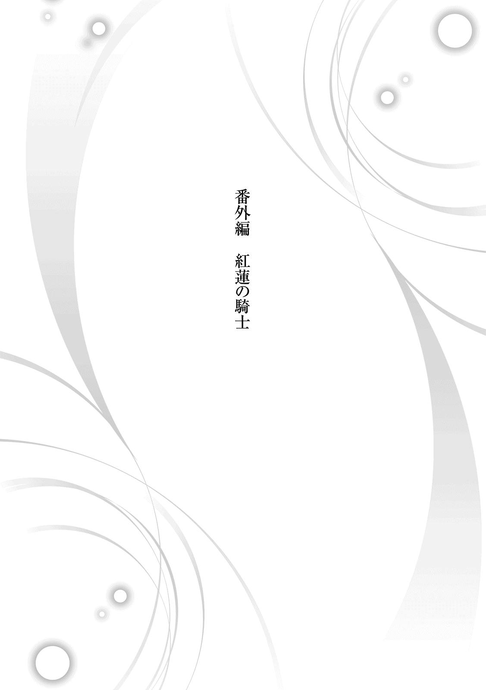
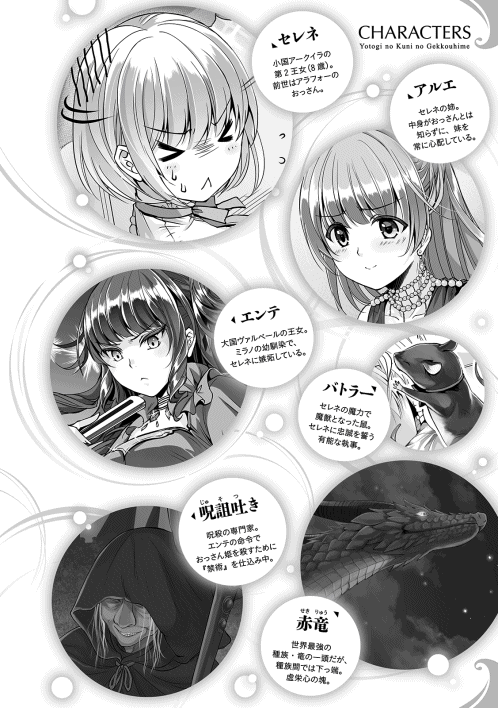
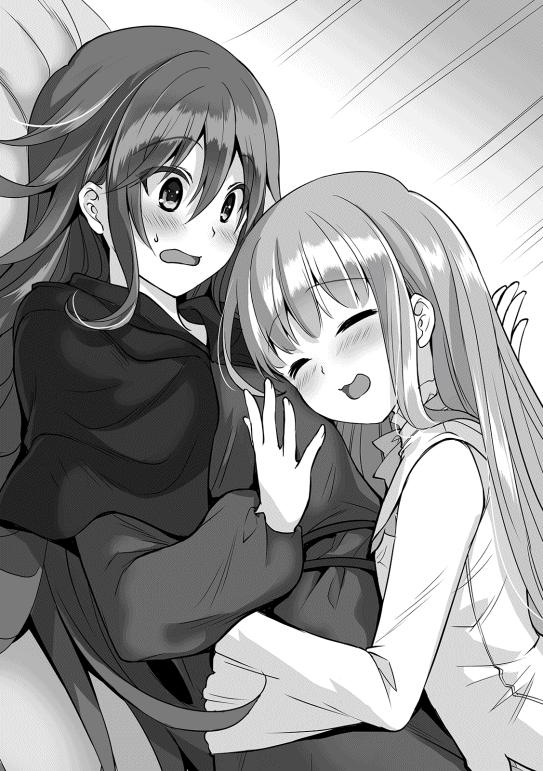

| 【合本版1-5巻】夜伽の国の月光姫 | |
| 青野海鳥 | |
| TOブックス (2016) | |
※本電子書籍は「夜伽の国の月光姫」１〜５巻を１冊にまとめた合本版です。
Illustration：miyo.N
Design：5GAS DESIGN STUDIO
掃き溜めの姫
夕暮れの西日の射す中、一人の女性が歩いていた。
豪奢な真紅のドレスに身を包み、金糸のような長い髪には小鳥をあしらった髪飾りを着けている。その身につけた衣装はもちろんの事、背筋を伸ばし堂々と歩くその姿。歩き方一つを見ても、彼女が高貴な身分である事は誰の目にも明らかであろう。
だが彼女、アルエ＝アークイラ、アークイラ王国第一王女は、その姿には似つかわしくない場所を目指していた。それは王宮の片隅の森の中にある、小汚い石造りの建物だ。建物の入り口に立っていた年老いた庭師は、アルエが近づいてくるのに気が付くと、慌てて駆け寄り臣下の礼を執った。
「これはこれはアルエ様。一体どうなされたのですか？」
「ちょっと時間が出来たから、パーティーの準備から抜け出してきたの」
アルエは悪戯をした子供のように、可愛らしい桃色の舌を出して答えた。
彼女は第一王女という立場でありながら、召使いに対して尊大な態度を取らない。アルエを子供の頃から知っている庭師に対しては、なおさら砕けた態度を取る。庭師のほうもアルエの年相応の少女らしさに、その皺 だらけの顔をさらに歪めて微笑み、窘 めるように軽口を叩く。
「いけませんなぁ。今宵は大国の王子を迎える大事な催しがあるのですぞ。王女である貴方様がそのような事をされては」
「あんな堅苦しい行事、本当なら出たくないわ。それに本来参加すべき王女なら、もう一人いるでしょう」
「うむむ......」
アルエが少し強い語調でそう言うと、庭師は困ったようにもごもごと口を動かした。これは本来、決して口外してはならない事。現在のアークイラ王国の正当な血族は、国を治める女王、そして一人娘のアルエしかいない。表向きはそういう事になっているからだ。
「ごめんなさいね。貴方を責めるつもりは無いの。ただ、あの子をこんな場所に押し込めておいて、私一人が華やかな場所に出ていると考えると、ね」
「アルエ様は、お優しいお方ですな」
「優しくなんかないわ。仮に優しくても、それだけじゃ駄目よ。私はあの子を慰めてやる事しか出来ないもの」
自嘲するように美しい顔を俯 かせ、アルエは呟く。
「もう陽が落ちます。セレネ様も、もうお目覚めになっている頃でしょう」
「お母様には......」
「ええ、もちろん内緒にしておきますとも。我々に出来る事はその程度ですからな」
「ありがとう」
アルエが礼を言うと、老人は真摯 な態度で踵 を返し、建物の入り口の鍵を開ける。錆び付いた鉄のドアがきしむ音と共に、かび臭い空気が鼻に付いた。いつ来ても慣れない不快な臭いに、アルエは一瞬顔をしかめたが、そのまま薄暗い石造りの廊下を抜け、二階へと続く階段を登る。
この建物は、既に価値の無くなった骨董品や壊れた物、使用人の掃除用具などを入れておく倉庫だ。部屋の数はそれなりに多いが、大したものは置いていないため、清掃や管理はそれほどされていない。
そんな王宮の掃き溜めのような場所。
しかしその最奥には、明らかに他とは違う一つの扉があった。
腐りかけた木製の扉と違い、頑丈に作られた鉄の扉には、幾何学的な紋様が描き込まれていた。アルエはその模様に手を伸ばす。すると模様は淡い燐光 を放ち、ガチャリと音を立てて鍵が開く。盗賊などの侵入を防ぐため、国家に関わる重大な秘密を守るために使われる魔術。そしてそれは、王家の血を引く人間のみしか解除出来ない特殊な封印であった。鍵が開いた事を確認しても、アルエはすぐにドアを開けず、鉄の扉を軽くノックする。
「セレネ、セレネ、起きてるかしら？」
「おきてる」
アルエが優しくドア越しに声を掛けると、中から天使が歌うような返事が返ってくる。その愛らしい声に頬を緩めながら、アルエはゆっくりとドアを開く。
ドアの先は、小さな、本当に小さな部屋──と言うより、牢獄と言ったほうが正しい殺風景な空間だった。簡素なベッドに最低限の生活用品、明り取りのための小窓が一つだけ。
その部屋の真ん中に、粗末な衣服に身を包んだ少女がちょこんと立っていた。
寝起きだろうか、眠そうに目を擦り、柔らかな白髪には少し寝癖が付いている。アルエは苦笑すると、頭を撫でながら、手ぐしでその寝癖を直す。
彼女の名はセレネ＝アークイラ。
決して表沙汰にされない、この国の第二王女である。
「ねえさま、きょう、いそがしい。だいじょうぶ？」
単語を繋げるような、たどたどしい発音でそう答えながら、セレネと呼ばれた少女が姉の元へと近づき、真紅の瞳で姉をじっと見上げた。気遣うようなその瞳を見ていると、アルエはいつも心安らぐ。彼女を王女としてではなく、純粋に女性として接してくれる者はセレネだけだ。そして、そんな心優しい妹が、このような場所に押し込められている事実に憤慨するのだ。
セレネは外見からして異質な存在であった。
アルエも母も金髪碧眼であるのに対し、セレネは全身にほくろ一つ無く、髪からつま先に至るまで、全身が透けるような白色だった。
絹糸のような純白の髪を肩の辺りで綺麗に揃え、肌は真珠のように滑らか。
神の愛を一身に受けたような類稀 な美貌には、ルビーをはめ込んだような双眸 が輝いている。まだ八歳、花の蕾 であるにもかかわらず、どれだけの大輪の花となるのか誰も予想出来ない。セレネの異質さが外見上だけのものであったなら、不気味ではなく、天使が降臨したと噂されていたであろう。
では何故、彼女は秘匿 されてしまったのか。
その原因は、セレネの言動にあった。セレネは、行動が妙に大人びているのだ。
生まれてから夜泣きもせず、母親に甘えるような素振りも無い。生まれたその瞬間から、常に何かを窺 うような視線を世界に向けていた。
誰に教えられた訳でもないのに、自分で服を畳んだり、食器を片付けたり、部屋を綺麗に掃除したり、大人を困らせるような事は全くしない。おおよそ子供らしさという物が皆無だった。
その割に、言葉は殆ど喋 る事が出来ない。
殆どの子は三歳にもなればある程度喋れるようになるのに対し、セレネは未開の国の人間が、かろうじてコミュニケーションを取れる程度の片言の会話しか出来ない。
特に、セレネと母子として触れ合う女王からすれば、セレネの行動は常軌を逸していた。二本の木の枝で物を挟んで食事をしたがるなどは可愛いもので、ナットーという食べ物が無いかと執拗に尋ねてきた事もある。どんな食べ物かと聞けば、腐った豆だという。そんなものを食べたがる我が娘を、溝鼠 の生まれ変わりかと思ったほどだ。
五歳を過ぎても執拗 に授乳を要求するのも、可愛いというより不気味であった。ろくに言葉も喋れず、乳離れも異常に遅い。姉であるアルエがごく普通だった事もあり、セレネの異常性がより際立って見えた事もあるだろう。
セレネの言動の一つ一つが、異常、奇怪、不気味として取られても仕方の無い事だった。結果、実の母である女王は、セレネを娘というより、得体の知れない化け物のように扱い、存在を抹消 する事にした。
だが、女王とて人の子、たとえ異形の怪物だとしても、自らの腹を痛めて産んだ娘を殺す事までは出来なかった。血の繋がった親子、そして王家の血を引いているというか細い糸が、セレネにとっては命綱であったのだ。
そうして女王はセレネが五歳になった時、王宮の隅の暗い檻へ押し込め、封印という名の蓋をした。この狭苦しい空間がセレネにとっての世界の全てであり、唯一生存を許される場所となったのだ。その事を思うたび、アルエは身を引き裂かれるような思いに駆られる。
「ねえ、セレネ。お姉ちゃんがパーティーに出る理由、知ってる？」
「うん。おうじさま、おむかえする。わたしのために」
アルエがセレネに聞き取りやすいようにゆっくりと話し掛けると、セレネは間髪 を容れずに答えた。セレネは言葉が上手く喋れないので、彼女を知るものには、知能に問題があるのではという烙印を押されているが、それは妹を表面でしか見ていないからだと、アルエは理解していた。
自分がセレネの年齢の頃は、こんなに迅速 に意味を察する事など出来なかったのだから。
「パーティー、出たいわよね......ごめんなさい。今の私の権限では貴方をここから出してあげられないの」
唇を噛 み締めながら、アルエはセレネの両肩に手を置き、申し訳無さそうに謝罪した。その手にそっと小さな手を重ね、セレネは首を横に振る。気にしないでいい、というアピールだ。
「でたくない。わたし、ここ、おきにいり」
「セレネ......」
その言葉を聞いて、アルエはさらに胸を締め付けられる。確かに、城で行われるパーティーは堅苦しいものであるが、女の子なら誰もが憧れる華やかなものだ。
まだ幼いとは言え、セレネは女の子、出たくないはずがないだろう。
けれどセレネは己の立場を理解し、アルエを気遣って敢えて出たくないと言っている。否、言ってくれている。
「よく聞いてちょうだい、セレネ」
アルエの表情に真剣さが増す。先ほどよりも両手に力を籠 めながら、言葉を選んで口を開く。
「今夜、私達の国へ来られる王子は、婚礼の相手を探して大陸中を旅しているの。大きな国の王子様よ。私がその王子様の相手に選ばれれば、その庇護 を得られる事になるわ。つまり、私は今日の目玉商品なの。分かる？」
セレネは何も言わず、ただ頷く。八歳の子供には難しい話であったが、このくらいの駆け引きは理解出来る知恵がある事を、アルエはこれまでの付き合いで知っていたので、そのまま言葉を紡いでいく。
「今は女王陛下──お母様があなたをここに閉じ込めていて、私はそれに反対出来る力は無い。けれど、私が王子様の奥さんになって頼み込めば、貴方をここから出す事だって出来るかもしれない。そのために頑張るからね」
そう言って、アルエはセレネに希望を与えようとした。
だが肝心のセレネは眉間に皺を寄せるだけで、あまり嬉しそうではない。
「やめて」
「え!? ど、どうして？ 牢屋から出られるかもしれないのよ？」
「でたくない。それに、アルエねえさま、しょうひん、ちがう」
その言葉は、アルエにとって衝撃的だった。
誰もが自分を王女としてしか見てくれず、自分を売り渡す事で大国とのパイプを繋ごうとしている中、これほど悲惨な環境にいる妹は、それでも純粋に自分を心配してくれているのだ。妹の真心に思わず涙がこぼれそうになるが、アルエはそれを何とか堪えた。
そんな彼女に対し、さらに衝撃的な言葉がセレネの口から放たれる。
「わたし、アルエねえさま、けっこんする。だから、おうじさま、けっこんダメ、ぜったい」
「えっ？」
あまりにも予想外なセレネの発言に、アルエはしばし呆 けた後、ぷっと吹き出した。
「あのね、私達は姉妹でしかも女の子同士でしょ？ 女の子と女の子は愛し合えないのよ？」
「できる。ゆりすきだから」
「百合？ セレネは本当に百合の花が好きなのね」
「ゆりのはなちがう、ゆり、すき」
アルエは首を傾げる。セレネはたまに不可解な台詞を言うのだが、百合が好きだという言葉に何の意味があるのだろう。理解出来ないでいたが、とりあえず自分を好いているという事は確かなようなので、それで良しとした。
哀れな境遇の妹が、優遇されている自分を恨まず、それどころか身を案じてくれている。そう考えると、アルエは妹のために頑張らねばという気力がますます湧いてくるのだ。
「待っててねセレネ。今は苦しいかもしれないけど、必ず貴方を輝く光の元へ連れ出してあげる。そうすれば、もう一人ぼっちでこんな場所にいなくてもいいのよ」
「わたし、ひとりぼっち、ちがうよ？」
何でも無さそうにそう言う妹を、アルエはただぎゅっと抱きしめた。
セレネは心優しく賢い子だ。恋をした事もない自分が、まだ結婚を望んでいない事を知っているのだろう。だから、王子に身売りなぞしなくて良い、自分を犠牲にしなくて良いと言ってくれているのだろう。
アルエはそんな妹の優しさに、なおさら燃え上がる。仮に自分が望まなくても、セレネのためならこの身など惜しくは無い、そう考えるのだった。
「よーし！ お姉ちゃん頑張っちゃうからね！ 王子様をメロメロにして、セレネを絶対に解放してみせるわっ！」
アルエは素のままの姿をセレネに見せ、一人意気込む。
そうして色仕掛け、やった事ないなぁとぶつぶつ呟きながら、セレネの額にキスをして部屋を後にした。
アルエが出ると再びドアの模様が輝き、封印の鍵がガチャリと音を立てて閉まる。後に残されたのは、完全に陽が落ち、闇に閉ざされた部屋の中、額に手を当てにやついているセレネだけ──ではない。
『一人ぼっちとは心外でございますな。セレネ様には、有能な執事が付いているというのに』
唐突に、よく通るバリトンの声がセレネの頭に木霊 する。彼女は特に驚きもせず、声のしたほうへと視線を向ける。するとベッドの下から、彼女の手のひらほどの小さな影が素早く飛び出し、セレネの前に現れた。
「いつも、ありがと、バトラー」
『何を仰られます！ このバトラー、姫様の恩に報いられるなら、命すら投げ出しますぞ』
「いのち、いらない。バトラー、いつものあれ、やりたい」
『楽園へ向かわれるのですね。畏まりました』
バトラーと呼ばれた影は、恭 しくセレネに向かって一礼をする。
その仕草に対し、セレネは淡い微笑を浮かべる。彼女以外は誰も知らないが、このやり取りは、もう何度も行われていた事だった。
月光と静寂のみが支配する、閉ざされた部屋の、いつもと変わらないはずの一夜。
だが、この時既に、後に平和の使者──月光姫 と呼ばれるセレネ＝アークイラの物語は、ゆっくりと紡がれ始めていたのだった。
鼠の執事
セレネ＝アークイラには前世の記憶がある。
といっても特筆すべき事はそれほど無い。生まれた国は日本、今時珍しくも無い恵まれない凡人で、生前の性別は男性であったというくらいだろうか。いずれにせよそれらはもう過ぎ去ったものであり、今ここにいる存在は、セレネ＝アークイラ以外の何者でも無い。
アークイラ王国に生まれて間も無い頃、セレネは日本人としての記憶が、新しい人生においてきっと役立つであろうと踏んでいた。だが実際には、過去の記憶というものは、役立つどころかむしろ厄介な代物であった。八年の歳月を女性の体で過ごした事により、肉体的な違和感は消え去っていたが、問題は精神面である。
生まれた瞬間から過去の記憶を持っていたセレネにとって、実の母親は「血の繋がった知らないおばさん」であり、母親という女性に対し、どう接していいか分からず距離を置いた。
最初のうちは状況が分からなかったので、とりあえず下手に出ておこうと、何か失態を犯した時は、即座に土下座で謝罪をしていた。すると、「あの娘は叱られても人の目を見て謝らず、顔を伏せて地べたに丸くなる」と、逆に不快感を与えてしまった。
そうした日本人としての美徳とされる行動が、異世界ではことごとく、奇妙・奇怪に映る事に気が付いたのは、大分先の事であった。
言語に関しても、セレネにとっては難題だった。
六年間英語を学んだにも拘らず、万年ギリギリの単位しか取れなかった彼にとって、異世界の言語は、宇宙人との会話に等しいものだった。
まして普段から触れ合う人間が極端に少ないのだ、練習する機会も当然少ない。八年間の労苦により、かろうじてヒアリングは出来るようになったが、それを脳内で文法的に組み立て、口から発する技術は実践しなければなかなか上達せず、結果として幼児のような喋り方しか出来ていない。
そうした諸々の事情により、セレネは王女でありながら虜囚 の身となったのだ。しかし、前世の記憶がセレネにとって完全な呪いであったかといえば、答えは否。セレネにとって過去世の残滓 は、祝福でもあった。
もしもセレネが記憶を持たず、本当の幼子であったなら、このような抑圧された境遇に耐えられず、発狂してしまったかもしれない。だが過去世において天性の引きこもり体質であったセレネにとって、今の環境は極めて気楽な空間であった。
貴族にとっては不潔で狭過ぎると言われても、過去の自分が住んでいた集合住宅のゴミだらけの一室より遥かに広く清潔であったし、寝ているだけで三度の食事はきちんと運ばれてくる。時間に追われ、あくせくと働く必要も無い。
おまけに時折、可憐で優しい姉が自分に同情し、絵本のような書物やお菓子を差し入れしてくれたり、何より、いい香りのする柔らかな胸で自分を抱き締めてくれるのだ。クリスマスイブやバレンタインという言葉に殺意を持って生きていたセレネにとっては、監禁されておつりが来るほどであった。
つまり、この世界で一般的に地獄と呼ばれるこの牢獄は、セレネにとって天国だったのだ。だが、いくらセレネが生粋の引きこもり体質だとしても、数年もの間、一日中暗い部屋に一人で閉じ込められていてはさすがに参ってしまう。
アルエが来るのはあくまでお忍びという形なので、数日に一度来られれば良いという程度だ。だが、セレネは決して孤独ではなかった──近寄ってきた小さな黒い影に対し、セレネはそっと手を伸ばす。
「おいで、バトラー」
『はい。お呼びでございますかな。姫』
黒い影の正体は、セレネの手のひらに収まるほどの小さな鼠であった。
全身をつややかな黒い毛皮で覆われ、喉元から腹部にかけては真っ白な毛が生えている。天然のタキシードを着込んだようなバトラーと呼ばれた鼠の胸元には、赤いリボンが結んであった。これは、セレネがバトラーに与えたものだ。
『何とも惜しい事でございますな。姉君もお美しい方でございますが、姫ほどの麗 しき者が舞踏会に出られぬとは......』
「でたくない」
バトラーが忌々しげに呟くが、セレネは表情を変えずゆっくりと首を振る。強がりではなく、対人恐怖症の彼女にとって、社交界など絶対に出たくないのだ。
『しかし姫！ このバトラー、やはり納得が行きませんぞ！ 姫ほど聡明でお優しき方が、何故このような扱いを受けるのです。人間共が害獣と呼ぶ私に手を差し伸べてくれたのは、貴方様だけなのですぞ！』
「わたし、やさしくない」
興奮するバトラーに対し、セレネはあくまで冷静だった。実際、バトラーとの最初の出会いはロマンチックでも何でもない。部屋の隅にある鼠捕りの罠に引っかかっていたバトラーを、セレネが外してやっただけだ。
狭苦しい罠の中に押し込められ、怯える黒い鼠を見て何となく共感を覚えたのと、あまりにも暇だったので、隠れてこっそり飼おうと思いついただけだった。
『私の命を救い、力を分け与え、知恵を授けてくれた慈悲深き姫。ああ、私に竜の力があれば、このような牢獄など簡単に破壊してみせるのに！』
セレネの手のひらの上で前足を組み、詩人のように嘆くバトラーがおかしくて、セレネは微笑んだ。命を助けたのはともかく、セレネはバトラーに知恵や力など与えた気は無かった。知らぬ間にそうなったのだ。
この世界の王族の大多数は「魔力」と呼ばれる特殊な力を持っている。
呪文を唱え、火球や氷で攻撃したりする、いわゆる「魔法」のようなものではないが、身体能力を強化したり、傷の治癒を早めたり、人によって所持する能力は変わるが、セレネを閉じ込めている扉の封印もその応用だ。
王家の血を引くセレネには、当然その能力があったが、その事は当人すら知らなかった。
セレネと寝食を共にし、セレネの食べ残しを餌として与えられていたバトラーは、セレネの魔力も体に取り込んでいた、そうしているうちに、いつの間にか知恵と魔力を持つ鼠になっていたのだ。だからバトラーが突然喋り出した時は、セレネは飛び上がるほど驚いた。それからバトラーは、セレネにとってかけがえの無い友人となった。
そんなある日、彼は名前が欲しいとセレネに懇願した。セレネは白黒の外見から、彼に執事 という名を与えた。それ以来、バトラーは常にセレネの横に侍 り、本物の執事のように付き従っている。
「そのはなし、もういい、らくえん、いきたい」
『おお、そうでしたな！ では早速準備せねばなりませぬな。姫、では扉を』
「うん」
バトラーに促され、セレネは鉄の扉ではなく、明り取り用の小さな窓の前に立った。
精一杯につま先を伸ばし、建て付けの悪い窓を押し上げると、青白く輝く満月が見えた。
『今宵は良い月ですな。姫の行く道を柔らかに包み、照らしてくれる事でしょう』
バトラーはセレネの肩から軽業士のように飛び降りると、きぃ、と小さな声で鳴いた。その直後、セレネの開け放った窓から大量の鼠達が部屋へとなだれ込む。彼らは普段は森に住んでいる鼠達で、バトラーをリーダーと崇 めている。
セレネ姫親衛隊。バトラー曰く、そういう事になっているらしい。
『お前達、ちゃんと身は清めてきたな？ 姫のベッドに抜け毛一つ残してはならぬぞ！』
バトラーが凛とした声で指示を出すと、鼠達は敬礼するように鳴き声を返し、一列に整列し、セレネの寝ていたベッドへと潜り込む。
数秒もしないうちに、セレネの掛けていた毛布が盛り上がり、少女が毛布に包 まって寝ているような形になった。気休め程度だが、セレネがいない間の偽装工作である。
「じゃあ、みがわり、おねがい」
『畏まりました。では、良きお時間を』
この部屋において、外界へと通じる出口は二つあった。一つは魔力で固く封印された鉄のドア、そしてもう一つが窓である。安普請 の倉庫ではあったが、二階にあるこの部屋から地上までは、大人でもよじ登る事が出来ないくらいの高さはある。まして、幼いセレネが何の手がかりも無しに降りる事などまず不可能だ。
──そう、手がかりが無ければだが。
「んしょ」
セレネは窓から身を乗り出し、手近な蔦 をぐいぐいと引っ張る。その蔦はとても頑丈で、華奢な少女の体など、優に数人は支えられるであろう。
セレネのいる場所はいわば隠し部屋であり、ごく一部の人間しか近づく事を許されていない。庭師も老人が一人いるだけなのでとても手が回らず、セレネの住む周辺は、何年もの間ろくに手入れをされていない。
その結果、セレネの住む部屋の壁の側面には、植物から伸びる蔦にびっしりと覆われていた。幾重にも巻きついた蔦は、セレネにとって天然の梯子 となった。それはまるで、哀れな幼子に同情した森の神が、セレネに救いの手を差し伸べているようにも見えた。
そうしてセレネは窓からするりと抜け出し、蔦を頼りに壁を降りていく。最初の頃はおっかなびっくりだったが、今となっては手馴れたもの。大して時間も掛からず、セレネは柔らかな草の上へと降り立ち、森の木々から放たれる、清らかな空気を肺一杯に吸い込んだ。
体に色素を持たないセレネにとって、眩し過ぎる太陽の光は逆に害毒となる。けれど淡い月光は、セレネを優しく包み込んでくれる。自分以外に誰もいない、おとぎの国のような夜の世界において、セレネは支配者となれるのだ。
着地したセレネが一歩を踏み出した時、木々の向こうに、雅やかな音楽と、夜でもなお眩い輝きを放つ王宮が見えた。いつも煌びやかな空間であるが、今日はいつにも増して煌々 と照らされている。今頃、件 の王子様とやらを迎え、盛大な歓迎パーティーが開かれている事だろう。
「せいおうじ......」
そう呟くと、セレネは苦虫を噛み潰したような表情になった。
王子については、アルエから過去に何度か聞かされた事があった。眉目 秀麗 、文武両道、かつ大国の王子という冗談みたいな肩書きで、巷 では聖王子などと噂されているらしい。その男は、どうやら己に見合う相手を探すために、大陸中を駆け回っているのだとか。
その話を思い出すたびに、セレネは腸 が煮え立つような怒りを覚える。それだけのスペックがあれば、自分で探さなくても、嫁など掃いて捨てるほど集まるだろうに。
世の中のもてない男性の気持ちを誰よりも深く知っているセレネは、憎憎しげに舌打ちする。
「おのれ、せいおうじめ」
なんたる放蕩 王子。きっと聖王子などと言われつつ、実際には性王子に違いない。一度も会った事が無い癖に、セレネは勝手にそう決め付け、勝手に憤慨した。
「ねえさま、だいじょうぶかな......」
聖王子が性王子であっても自分には関係が無いが、セレネは姉の事が気がかりだった。あの優しく清らかな姉姫が、自分のために早まった行動に踏み切り、毒牙に掛かってしまうのではないか。
とは言え、今の自分に出来る事は何も無い。セレネにとっては、王子様も、華やかなパーティーも、それこそおとぎ話の宮殿のような絵空事に過ぎないのだから。
セレネはため息を吐き、頭を振って気持ちを切り替える。自分が外を動き回れるのは、誰も見ていない夜明け前までの時間帯だけなのだ。手の届かない空想の世界より、現実の楽しみを優先させたほうが良い。
目指す場所は、セレネとバトラーが「楽園」と呼ぶ場所。
セレネは後ろ髪引かれる思いを振り切ると、勝手知ったる森の奥へと足を進めた。
楽園
日課の脱獄を成功させたセレネは、静謐 な森を歩いているうちに思考が纏 まり、気持ちが段々と落ち着くのを感じていた。、愛する姉が性王子の餌食になる可能性は極めて低いという結論に至ったからだ。
アルエがたまに差し入れをしてくれる本は、教育を受けられないセレネのために、簡素な地図や歴史などが載っている絵本が多かった。子供向けの嗜好品 から得られる知識などたかが知れているが、それでもこの大陸の、ある程度の情報は引き出せた。
与えられた書物からセレネが気付いたのは、偉そうに大陸で幅を利かせている王子の国、確かヘリファルテ王国とかいう場所に対し、セレネの住むアークイラ王国は、大陸の南端に申し訳程度に記されているという事だった。
簡単に言ってしまえば、自分が住んでいる国はド田舎だったのだ。
セレネにとって、アルエは慈愛の大天使であったが、諸国の綺麗どころを物色している放蕩王子が、小国の素朴なアルエを相手に選ぶとは到底思えない。スーパーカーを何台も持つ大都会の若社長が、限界集落まで来てスーパーカブを買う事などないだろう。そう思うと気が楽になり、セレネは軽い足取りで目的地を目指す。
夜の森を少女一人、月明かりのみを頼りに歩く行為は危険極まりないと思うかもしれないが、セレネは全く怯えていない。何故なら彼女の周りには、大量の鼠達が付き従っているからだ。
鼠達のまとめ役であるバトラーは、セレネの身代わり役を監視するため留守番をしなければならないが、バトラーの配下にある森鼠達は、森を熟知しており、セレネの護衛兼先導役であった。彼らはその数の多さを最大限に活かしたネットワークでセレネに危害が及ばないよう、危険な生物や、触れたらかぶれてしまう毒のある植物などを逐一セレネに教えてくれる。
お陰でセレネは、目をつむっていても、鬱蒼 とした森の中を悠々と歩く事が出来るほどだ。
「ついた」
そうしてしばらく歩き続け、王宮の人間すら滅多に近寄らない森の奥、セレネは足を止めた。
木々が乱立する森の中、ここだけは青々とした丈の低い草地が広がり、色とりどりの花が咲き乱れている。その中心部には小さな池があり、静かな水面には満月の姿が浮かんでいた。この小さな箱庭のような空間こそ、セレネが「楽園」と呼んでいる場所だった。
「ええと、たね、たね」
セレネは粗末なドレスの胸元に手を突っ込み、丸く茶色い小さな粒──植物の種を取り出した。食事の際、野菜や果物の種を見つけると、セレネはそれをこっそり保存しておいた。そのままセレネは適当な場所を見繕い、ふかふかの土を両手で掘り返し、その種を放り込んでいく。
過去世から、友達のいないセレネは植物や動物を育てる事が好きであったが、ベランダすらないアパートの一室ではろくに出来ず、小さな鉢植えを申し訳程度に並べておく事が精一杯だった。
しかし今は、夜中限定ではあるものの、広大な土地を好き勝手に弄 れるのだ。そういう意味でも、今の境遇はセレネにとってまさに楽園であった。
少女一人で全て管理出来る訳も無く、単に穴を掘って種を埋めるだけ。リスと同レベルのいい加減さではある。肥沃な土と南方の気候のお陰で、植物達はどんどん成長してくれた。しかし、よく目を凝らして見ると、同種でありながら、明らかに他のものと比べて大きいものも存在する。
「どーぴんぐ、かいし！」
セレネは気合を入れなおし、種を植えた場所を、心臓マッサージのような体勢でぐいぐい押す。すると、ほんの僅 かに手のひらが淡く輝いた。種に対し、魔力を分け与えているのだ。
ある日、突然バトラーが喋り出してから、セレネはようやく自分に魔力という物があり、それを分け与える能力がある事に気が付いたのだ。
鼠に力を分け与えられるなら植物も出来るのではと思い、ここ最近、ようやくコツを掴んできた。目論見 通り、自分が力を注ぎ込んだ種は成長が早く、単純に植えたものよりも大きく育つようだ。ただし、疲れるので気が向いた時しかやらないのだが。
こうして、倉庫に監禁されてから数年の歳月をかけ、セレネは秘密の花園を作り上げたのだ。
「おわり。しゅぎょう、はじめ」
用意してきた種を全て撒き終わると、セレネは次の日課へと移る。池のほとりに移動し、目を閉じ、祈りを捧げるように跪 く。
これはセレネが勝手に考えた、自己流の魔術の特訓である。せっかく魔力という存在があるのだから、やはり自分も使ってみたい。けれど、誰もその方法は教えてくれないので、セレネは独自で何とかしようと考えた。
「ラーメン、ソーメン、コペンハーゲン......」
知っている魔法っぽい単語を適当に並べ、セレネは自作のいい加減な呪文を詠唱する。
何かこう、集中して祈りを捧げれば、大地の力とか、スピリチュアルパワーとか、そういった類の物で唐突にパワーが覚醒し、手から火球などが出せるのでは、そんな淡い期待を胸に、セレネは精神を集中させる。
姉のアルエは難なく封印の扉を開ける魔力があるが、自分が触っても紋様が僅かに光る程度で、扉が開く事は無かった。自分を監禁するための扉なのだから当たり前なのだが、姉と比べて魔力の量が少ないのかもしれない。
別にセレネとしては扉が開かなくても何の問題も無いのだが、隠れて修行を続ける事で魔力の量が増えたりしたら、姉に褒められるかもしれない。姉に「さすがセレネ」と言われたいだけの理由で、セレネは今日も無駄な努力に勤 しむのだ
ただ、詠唱を数年続けても効果が出た事は無く、途中で面倒くさくなるので、いつも大体三分くらいでやめる。今日もそのトレーニングを終えた後、バトラーのために活きの良いバッタでも捕まえ、いつも通り帰還するつもりだった。
「何をそんなに祈っている？ それともそれは何かの歌かな？ 麗しき月の精霊よ」
唐突に背後から声を掛けられ、セレネはびくりと体を震わせ、慌てて後ろを振り向き、驚愕に目を瞠 った。
セレネが自己流の祈りに集中している間、すぐ近くに一人の男が立っていたのだ。まだ青年と呼ぶべき年齢のようだ。すらりとした長身、月光の下でなお鮮やかに映えるプラチナブロンドの髪、それと同じ色の黄金の鷲 の刺繍 をあしらった、見るからに上質な素材で出来た、純白の礼服に身を包んでいた。
だが、その顔立ちの美しさと比べれば、身に付けている諸々の装飾など霞んでしまう。それほどの美丈夫であった。セレネを怖がらせないためだろうか、青年は柔らかな笑みを浮かべ、ゆったりとセレネに近づいてくる。
「いきなり話し掛けた非礼は詫びよう。君の事をどうしても間近で見たくなってしまってな」
詩人が歌うような声でそう言いながら、青年は形のいい唇を緩めた。女性であればその動作一つで、心まで蕩 かされてしまう魅惑的な笑みだ。
──女性であったならば、だ。
「キライ！」
セレネは大声で美男子に拒絶の言葉を浴びせると、脱兎の如く駆け出した。
少女の言動が予想外だったのか、青年はきょとんとした表情を見せたが、少女が背を向けて走り出したのを見て我に返り、慌てて手を伸ばす。しかし一瞬先に動いていたセレネは、青年の手が触れる寸前に素早く身を翻 し、茂みへと飛び込んだ。
「待ってくれ！」
セレネの背後から懇願するような青年の声が聞こえ、追いかけてくる気配を感じる。けれどセレネは決して振り返らない。一心不乱に茂みの中を駆け抜け、青年の追撃を振りほどこうと必死だった。
ここが平地で、昼間であったなら、体力の無いセレネは簡単に追いつかれてしまっていただろう。だが既に視界は闇に塗り潰され、セレネにとってこの森は庭のようなもの。
さして苦労する事なく、セレネは青年を撒く事に成功した。それでも足は止まらない、心臓が爆発しそうになりながら倉庫まで駆け戻り、鬼気迫る勢いで蔦を昇る。
『おお、姫！ 随分とお早いお帰りで......』
窓のところで主の帰りをずっと待っていたバトラーは仰天した。主はいつも鼻歌交じりで帰ってきて、留守を守っていたバトラーや鼠達に土産を持ち帰り、優しく労 ってくれるのだ。
だが今日の主はそうではない。ぜえぜえと荒い息を吐き、服も髪も乱れに乱れていた。そのまま力尽きたようにベッドへ倒れ込むと、セレネの身代わりになっていた鼠達が慌てて飛びのく。
『姫！ 一体どうなされたのですか!? 』
「もう、なにもかも、おしまいだ！」
『何事です!? 一体、何があったと言うのですかっ!? 』
森鼠達は驚いて窓から出ていってしまったが、バトラーは当惑しながらも、うつ伏せになった主人の枕元に駆け寄った。
これほどまでに取り乱す主人を見た事が無く、バトラーは、ベッドに突っ伏したセレネの周りを心配そうに歩き回る。
そんなバトラーに気を配る余裕が無いほど、セレネは憔悴 しきっていた。
原因はただ一つ、森の中で出会ったあの青年である。あれが例の聖王子だという事は、噂でしか聞いた事のないセレネにもすぐに分かった。何故あの場所にいたかは不明だが、そんな事はどうでもいい。
「うう！ インチキ！ ずるい！ えこひいき！」
枕に顔を埋めながら、セレネは呪詛 の言葉を吐く。一体あれは何なのだ。あれではまるで王子様ではないか。いや、実際に王子様なのだが、あんな乙女ゲームからハサミで切り抜いたような馬鹿げた存在が許されるのか。否、断じて許されてはならない。
噂には尾ひれ背びれが付くものだ。聖王子などという噂は、誇張表現だとセレネは高をくくっていた。だが目の当たりにした彼奴 は、まさにその二つ名に相応しい男だった。
姉のアルエは貞淑 な天使であると信じているが、あんな美男子に言い寄られては、石で作られた女神像だって惚れてしまうかもしれない。
『姫、落ち着いて下され。森で何があったと言うのです？ このバトラーでよろしければ、相談に乗りますぞ？』
気遣わしげなバトラーの声もセレネの耳には入らない。今のセレネの脳内には、過去の光景が浮かんでいた。それは、過去のセレネが好んでやっていた類のゲームの内容だ。
美しい満月の下、穏やかな空気、年頃の姫様と王子様──はっきり言って出来過ぎたシチュエーションだ。そうして二人は唇を重ね、十八歳未満には見せられない行為に──。
「うわああぁぁぁぁあぁあああぁああああっっっ!! 」
『ひ、姫！ お気を確かに！』
セレネは脳内で想定される最悪のシチュエーションに身悶 えし、髪を掻 き毟 りながら号泣する。ああ、自分が大きくなったら、アルエ姉様と禁断の恋に落ちようと思っていたのに。横から来たトンビが油揚げを掻 っ攫 ってしまったのだ。
「セレネ！ どうしたの!? セレネッ！」
その声にセレネははっと顔を上げる。封印の紋様が輝きドアが開け放たれると、セレネにとって初恋の人、アルエが慌てて飛び込んできた。宴の最中なのに、何故彼女がここにいるのか理解出来ず、セレネは困惑し、バトラーは慌ててベッドの下に身を隠す。
「ねえさま、なんで......？」
「それは、その......それよりセレネ、その格好、一体どうしたの!? 」
「......なんでもない」
「何でもない訳ないでしょ！」
髪はくしゃくしゃ、服はよれよれ、セレネの様子は尋常ではない。そう判断したアルエは慌てて駆け寄り、セレネの頬に手を伸ばし、目を見開いた。何故なら、セレネの頬は涙で濡れていたからだ。母に見捨てられても平然としていた妹の涙を見るのは、これが初めてだった。
「泣いて、いたのね......」
「......うん」
仕方なくセレネは肯定した。貴方の痴態を想像して泣いていましたと答えるのはさすがに問題があり過ぎたし、泣いていないと言い逃れ出来る状況でもない。理由を聞かれる前に、セレネは何とか話を逸らそうと口を開く。
「あの、その、おうじさまと、どうしたの？」
王子への憎しみで頭が一杯だったので、今のセレネにはそのくらいしか話題が出せなかった。苦し紛れに紡いだ言葉に対し、アルエは沈痛な面持ちで口を開く。
「駄目だった......王子様は、私なんかに見向きもしなかったわ......」
「えっ」
「ごめんなさい......あんなに頑張るって言ったのに。お姉ちゃん、色仕掛け失敗しちゃった......」
まるで叱られる前の幼子のように、アルエは俯き、小さく呟いた。
夕方、あれだけ大見栄を切り、捨て身の覚悟で王子に挑んだのに、アルエは色々とやらかしてしまったのだ。そしてそれは、セレネにとって救いの糸が断たれる事を意味している。その事実が、どれだけ妹を落胆させる事になるか。
セレネは王子に媚 を売らなくていいと言ってくれたが、それは、セレネの強がりであるとアルエは考えていた。その証拠にセレネは今、この部屋で泣いていたではないか。
普段は悠然とした態度で自分に接してくれる妹は、きっと毎晩こうしてつらさに悶えているのだろう。それなのに、自分は何もしてやれない。アルエの胸中は、悲しみに打ちひしがれているであろう妹への申し訳無さと、自責の念で一杯であった。
こんな情けない姉を妹はどう思うだろう。あれだけ偉そうな事を言ったのに、結局何も出来ないではないか、そう激しく糾弾されても仕方ない。アルエはそう身構えていた。
だが、そうはならなかった。セレネは不甲斐ない姉を糾弾するどころか、何故か満足げに頬を綻 ばせたのだ。そのままセレネは体勢を立て直し、ベッドの上に腰掛けた。
「ねえさま、しゃがんで」
「え......？ こ、こうでいいかしら？」
セレネの指示通りアルエが床にしゃがみ込むと、ベッドに腰掛けているセレネとアルエの視線が合った。そして、セレネはアルエの首に手を回し、ぎゅっと抱きつく。
「ど、どうしたの？ セレネ？」
「じっとしてて」
有無を言わさぬ口調で、セレネはアルエの首に巻きつくようにしがみ付く。セレネの温かな体温が、緊張し、強張ったアルエの体に心地よく染み込んでいく。お互い無言のまましばらくそうしていたが、不意にセレネはアルエの耳元でこう囁 いた。
「よしよし」
その言葉を聞いた途端、アルエの胸に閉じ込めていた感情がどっと溢れ出す。セレネは、こんな不出来な姉に対し、幼子をあやすように「よしよし」と優しく声を掛けてくれた。セレネは言葉を喋る事が苦手だ、だから、行動で気持ちを表す事が多い。罵声を浴びせられて当然の自分を、それでもセレネは抱き締め、許してくれたのだ。なんと慈悲深い妹だろう。アルエの目元に大粒の涙が浮かぶ。
「セレネ、ああ、セレネ......！ 私、まだ諦めないわ......貴方のために、もっともっと頑張るから！」
「がんばらないで、おねがい」
「気を遣わないでいいのよ。私達、たった二人の姉妹じゃない。泣きたい時は、泣いてもいいのよ」
窮屈な社交辞令、慣れない男性の相手、疲れきっていたアルエにとって、心優しき妹の抱擁はとてつもない安堵感をもたらした。これではまるで、姉である自分のほうが年下のようではないか、そう思いつつも、アルエは妹 の前でだけ、王女でなくなる事が出来る。それがたまらなく嬉しいのだ。
一方で、違う意味でセレネも安堵していた。子供のセレネに対し、アルエが大人の情事を済ませていて内緒にしているのではないか。それを確認するため、セレネはアルエの首元に抱きつき、柔肌を堪能しつつ、うなじや首元を入念にチェックした。
そして、キスマーク──王子の痕跡が確かに無い事を確認し、セレネは満足げにこう呟いたのだ。「よしよし」と。
アルエとセレネ、月光の細明かりが差し込む部屋で、仲睦まじい二人の姫君が抱き合う美しき姉妹愛を、バトラーはベッドの下から微笑ましげに見上げていた。
『ううむ、しかし、一体何が起こっていたのだ？』
人間のように顎 に前足を当て、バトラーは探偵のように思考を巡らせるが、今夜の出来事は彼の想像の範疇 を超えていた。だが、何はともあれ主は心の平穏を取り戻した。
ならばそれで良いではないか。そう考え、バトラーは己を納得させた。主の心の領域をむやみに詮索 しない事も、執事たる自分には必要なのだ。
さて、何故、パーティーに参加しているはずの王子が森の中にいたのか、アルエの身に一体何があったのか。話は少し巻き戻る──。
聖王子ミラノ＝ヘリファルテ
「では王女、お互い少し頭を冷やしましょう。私はこの緑豊かな庭園を少し散策させていただきますので」
室内に残る第一王女に一礼をし、後ろ手に扉を閉めながら、ミラノ＝ヘリファルテ、ヘリファルテ王国の麗しき第一王子は、物憂げな表情でため息を吐いた。
「随分と早い夜伽 でござるな」
「......クマハチか」
扉から少し離れた所には、熊のような大男が立っていた。黒々とした髪を乱雑に伸ばし、もみあげと同化するほどに顔中は髭だらけ。身につけている藍染めの着物は随分と色は落ち、裾は擦り切れている。控えめに言って小綺麗な浮浪者にしか見えないのだが、その薄汚い着物の背には、ヘリファルテ王国の王族に関わる者しか付ける事を許されない、黄金の鷲をあしらった刺繍がしてあった。
「せっかくの晩餐 会なのに、早々に主賓と第一王女が退場してしまい、皆、不満がっているでござる」
「王女に直接誘われたのだ。行かない訳にもいかんだろう」
「いやいや、何とも羨ましい話でござるな。拙者とてそれなりの身分であるのに、今まで全く綺麗どころに相手にされぬ」
「そんなみすぼらしい格好をしているからだろう。いい加減、正装をする事を覚えろ」
「これが拙者の国の正装であり、戦装束であり、死装束にござる。王子の側近として身を守る役目を仰せつかっておりますゆえ、いついかなる時にも機敏に動けなければ」
クマハチと呼ばれた大男は、悪びれずにそう答えた。
外見からして浮いているこの男、クマハチは大陸の出身ではない。海を渡った異国より、武者修行と称してやってきたのだ。どう見ても三十は過ぎているようだが、年齢は王子とさして変わらない。
いくらアークイラ王国が小国と言えど、このような男が王城の敷居をまたぎ、まして国で大々的に行われる宴に参加など許されない。それを可能にしているのが、汚らしい着物に不釣合いな紋章である。
ヘリファルテ王国のお墨付きとあれば、他国はただ黙って従わざるを得ない。
「アルエ姫と申したか、なかなかに美しい娘ではござらんか。で、味はどうであった？」
「どうもこうもない。いきなり寝室に呼ばれ、『さあ！ 私を娶 るのです！』と言われて押し倒された時は、食い殺されるかと思ったぞ」
「なんと、淑 やかそうな外見に寄らず、随分と積極的でござる」
「そうではない」
ミラノ王子は被りを振った。
「あれは夜伽を望んでいない。その証拠に、ひどく震えていた」
「さすが『嫁探し』の旅を続けている王子にござる。旅立ち直後は戸惑うばかりであったが、夜戦の駆け引きも磨かれておられる」
「茶化すな。とにかく彼女とそういった行為はしていない。あれは何かに追い立てられているような、自分で望んでいない者の目だ」
「堅物でござるなあ。拙者なら、とりあえず据え膳は平らげるでござるが」
クマハチは笑いながら顎鬚 を撫でた。王子に対し随分な物言いだが、クマハチは王子の側近であると同時に、無二の親友でもあった。
武者修行と称し、大陸中を一人で旅していたクマハチは、ある日、ヘリファルテの兵士募集の知らせを聞き、ぶらりと王宮にやってきた。そうして試験が始まると、熟練の近衛兵を一瞬で叩きのめし、国王の度肝を抜いた。
当事のクマハチは王族に仕える気など毛頭なく、単に道場破り感覚で志願しただけだった。そのクマハチがヘリファルテに留まっているのは、国王からの強い要望と、何より、己に匹敵する使い手、ミラノの存在があったからだ。彼らは主従関係というよりは、武を学ぶ者としての好敵手という感覚が強かった。
「少し森に行ってくる。いい加減、猛禽 のような女達に狙われながらの晩餐会はうんざりだ」
「いやいや！ 主役が脱走するのはさすがにまずいでござるよ！」
「お前が何とかしておけ。それこそ姫と夜伽の最中だとでも言っておけば、他の娘達も黙るだろう」
有無を言わさぬ口調で言い放ち、ミラノは庭へ出て、そのまま森へ入っていった。新しい国に着くたびに、社交界に参加させられ、外面を取り繕う事にいい加減うんざりしていたのだ。少しくらいは息抜きせねば、いつ爆発するか分からない。
「何故こんな事になったのやら......」
ミラノは一人で文句を言いながら、殆ど手入れされていない、雑然とした茂みのほうを選んで分け入っていった。母国を出てからそれなりの時間が経ったが、自分の旅が「嫁探し」などと呼ばれる扱いに、彼は辟易 していた。
獅子王と呼ばれる豪放磊落 な父と違い、ミラノは母親似の優男である。そんな彼も今年で十八歳。若獅子となった彼に対し、父王はある命令を下した。それは、大陸を練り歩き、見聞を深めよという命である。「民草を知らぬ者に政 など出来ぬ」という、彼の父の信念にミラノは深く同意した。
そうしてミラノは、大国の王子としては信じられないほどに粗末な馬車を選び、ごく少数の信頼出来る部下を連れ、諸国漫遊の旅へと出発した。多少の不安と、見知らぬ物に出会える好奇心に、彼の心は躍りに躍った。
しかし、その期待はあっさりと打ち砕かれる事になる。お忍びという形でこっそり出発したとは言え、彼が大国の第一王子である事は変わらない。そして、そんな彼に目通しする機会など、どの国も滅多にない事であった。
どの国もミラノ王子が到着するやいなや、こぞって大規模な歓迎パーティーを開き、王侯貴族は自慢の娘を王子に差し出した。大国の後ろ盾を得られるまたとない機会の上に、王子自体も文句のつけようの無い優良物件である。そうしないほうがおかしかった。
その噂は諸国へ広まり、見聞を広めるための旅は、いつの間にやら「嫁探し」と呼称され、一人歩きを始めた。噂には尾びれ背びれが付くものだが、さらに角や牙まで付き、王子に襲い掛かる怪物となってしまったのだ。王子という身分を忘れ、一介の旅人として諸国を漫遊したかったミラノは、これにひどく落胆した。
「......っと、少し奥へと来過ぎてしまったか」
不愉快な記憶を掘り返しているうちに、いつの間にやら森の奥地へと迷い込んでいたようだ。月明かりが照らしてくれているとは言え、辺りは闇だ。これ以上動き回ると余計に迷ってしまう。
「まあ、逆に良かったかもしれないな」
ミラノは苦笑する。自分が森に入った事はクマハチに伝えてあるし、たとえ猛獣が出たとしても、徒手空拳で撃退する程度の腕前はある。何より、王女との情事の火照りを冷ますため、森に入った結果迷ったと言えば、あの茶番劇に戻らない言い訳になるだろう。
そう考えると実に気持ちが軽くなり、ミラノは手近な木に身を寄せる。こうして夜の闇に身を置いていると、聖王子などという渾 名 を捨て去り、いっそこのまま野人として暮らしてしまおうか、そんな馬鹿げた考えすら浮かんでくる。それほどまでにミラノは今の境遇に参っていた。
「──。──。──。」
「何だ？ 少女の声のようだが......」
不意に、鈴を転がすような美しい声が、風に乗って彼の耳に届く。声質からして少女のもののようだが、こんな時間、こんな場所にいるはずが無い。幻聴だと思いつつも、王子はその声のするほうへ足を進める。
──そして、それを見た。
「僕は......夢でも見ているのか？」
思わずそう呟いてしまうほどに、その景色は幻想的だった。
茂みの先の開けた場所、清らかな泉のほとりに、一人の少女が何かを祈るように跪いている。その穢れなき白磁 の身体は月光に包まれ、蛍のように淡く輝いているように見えた。
月の精霊──そんな単語が頭の中に自然と浮かぶ。
そんな彼女を祝福するかのように、周りには大小様々な花が咲いている。殆どが名も無き花々であろうが、管理された薔薇園ばかり見てきたミラノにとって、ありのままの生命の躍動を感じさせる光景は実に新鮮であった。
「あの白き姿は......エルフか？ いや、あれはこの地域には生息しないはず......」
そう言って、彼は自分の考えを否定する。エルフという人に似た純白の種族は、遥か北方の「白き森」と呼ばれる地域に住んでいる。人間の生活区域に住んでいる訳が無いのだ。
ミラノの脳裏に二つの考えが浮かぶ。
この絵画のような光景に手を触れず、ずっと眺めていたいという感情と、目の前に広がる神秘に手を伸ばしたいという矛盾した欲望だ。迷いは一瞬だった。ミラノは後者を選択した。それほどまでに魅力的な少女であったのだ。
新雪を踏み荒らすような多少の後ろめたさを感じながら、ミラノはそっと彼女に近寄った。もしかしたら今見ているものは幻想で、声を掛けてしまえば魔法は解けてしまうのではないか。そんな緊張感を押し隠し、ミラノは口を開く。
「何をそんなに祈っている？ それともそれは何かの歌かな？ 麗しき月の精霊よ」
自分でも歯の浮くような台詞だと思ったが、ミラノはこれまでの行脚で、女性が言われて喜ぶような台詞を強制的に覚えさせられてしまった。まさかこんな形で役に立つとは思わなかったので、ミラノは内心で苦笑する。

そこでようやく気が付いたのか、白き少女はびくりと身体を震わせ、自分を見て、真紅の瞳が零れ落ちそうなほどに目を見開いた。目の前にいる少女が幻などではない事に、ミラノは内心で歓喜した。
「キライ！」
だが、それも一瞬だった。神聖な儀式を邪魔した事を怒ったのか。少女は自分を睨みつけると、身を翻し森の奥へと駆け出そうとする。
「待ってくれ！」
反射的にそう叫び、手を伸ばすものの少女には届かない。何故か分からないが、彼女をここで見失ってしまったら二度と会えなくなる。そんな衝動に突き動かされ、闇夜の鬼ごっこが開始される。
（速い......！）
ミラノは細身ながら、鞭のようにしなる柔軟な筋肉を持っている。いくら慣れない森の中とは言え、その自分が全く追いつけないのだ。まるで先導者でもいるかのように、少女は木々の隙間をすいすいと駆け抜けていく。零れる月の光が反射し、白い髪がきらきらと輝く。それはまるで、森の中を光の妖精が飛んでいくように見えた。
そうしてしばらく追いかけっこを続けたが、二人の距離は徐々に離れ、ついにその白い輝きは見えなくなってしまった。
「......いないな」
かなりの距離を走ったが、ミラノは息一つ切らしていない。だが、自分で思っている以上に、漏れた言葉には苦渋の色がにじんでいた。茂みを抜けた先には、汚らしい倉庫のような建物があるだけで、あの可憐な妖精の姿は既に無かった。もしかしたら、本当に妖精だったのかもしれない。
そんな考えに捕われていたせいで、彼は木々の隙間から漏れる王宮の明かりに遅れて気が付いた。この場所は王宮から極めて近い場所であるらしい。もしかしたら、あの少女は迷える自分をここまで誘導してきてくれたのではないか。
「......ぁぁあぁぁ!! 」
ミラノがそんな事を考えていると、不意にか細い悲鳴が彼の耳に聞こえてきた。胸から搾り出すような、悲しみに満ちた慟哭 だ。あの少女の声だ、そう認識するや否や、ミラノは追い立てられるように倉庫の周りを探り出す。
「あれは......？」
注意深く周辺を確認し、ミラノは倉庫の裏側、一番日当たりの悪そうな位置にある窓が、一つだけ開いている事に気が付いた。ろくに手入れもされていないのだろう、壁には幾重にも重なる太い蔦が絡み付いている。
ミラノは手近な一本を手に取り、力を籠めて引っ張ってみた。大人の男性であれば不安だが、子供くらいならやすやす支えられるくらいの頑強さはありそうだ。
絡み付いた頑丈な蔦、不自然に開いた窓、消えた少女、ミラノの脳内でそれらの要素がパズルのように組み合わさっていく。
「ああ、いたいた！ 王子！ いつまで遊んでいるでござる！」
ミラノの視界の端にクマハチが映った。クマハチは肩をいからせながら、憤懣 やるかたなしといった感じで駆け寄ってくる。
「パーティー会場の女子達が、『お前はいらん。王子を出せ、王子を出せ』とやかましいでござる！ 拙者、いい加減つらくなってきたでござるよ！」
「............」
クマハチは割と本気で怒っているのだが、ミラノはまるで相手にせず、口元に手を当て、何かを思案するように固まっていた。
「王子！ 聞いているでござるか！」
「クマハチ」
王子は短くそう言い放つ。その真剣な響きにクマハチは面食らったが、一瞬後には真顔になった。クマハチはいい加減そうに見える男だが、主の心意気を瞬時に汲める男だった。そういった者でなければ、ミラノはクマハチを供に選んだりはしない。
「何かあったのでござるかな？ 不審な影あれば、拙者、一刀の元に切り捨てようぞ」
「そうではない。少し相談したい事がある、耳を貸せ」
そうしてミラノは、自分が体験した事を端的に話し、今後の展望を伝えた。クマハチは両手を組んで唸る。
「ふぅむ、にわかには信じられぬ話でござるが、拙者、王子がそういう類の作り話をせぬ事も知っておる。さて、どうしたものか」
「作り話でこんな話が出来るなら、僕は武芸を捨てて吟遊詩人にでもなるさ」
王子がそう言うと、クマハチは「なるほど」と笑う。
「いずれにせよ、今宵は宴に参加せねばなるまい。楽しみがあれば、つらい事も乗り越えられようぞ」
「ああ、そうだな。では、決行は明日だ。クマハチ、頼むぞ」
「承知」
そう言って、ミラノとクマハチは連れ立って王宮へと戻っていった。
献上品
ミラノは猛牛の如く突っ込んでくる娘達を闘牛士のように回避し、晩餐会を乗り切る事に成功した。その翌日の昼過ぎ、ミラノはクマハチを連れ、ある男と挨拶を交わしていた。痩せぎすの神経質そうなこの男は、この国の宰相らしい。
「昨夜の晩餐会はお楽しみいただけましたかな？ わが国で最高のもてなしをさせていただきましたが」
「お気遣い感謝します。宰相殿」
楽しかった、と答えた訳ではないのだが、宰相は嬉しそうに笑みを浮かべた。こういった社交辞令はもう何度もしてきたが、自分に嘘を吐いている感覚に、ミラノは未 だに慣れる事が出来ない。
「それは何よりでございます。つきましては、殿下に献上させていただきたいものがございまして」
ミラノは内心で「またか」と思いつつも、顔には出さなかった。これは、ある程度予想していた流れだったからだ。諸国を巡っている間、ミラノは娘達をやんわりと断り続けてきたが、もう一つ対処せねばならない事があった。
それがこうした「献上品」である。色仕掛けを第一の刃とし、第二の刃として豪奢 な贈り物をヘリファルテ王国の第一王子に渡し、媚を売ろうとするのだ。
これはある意味で娘達より厄介だった。下手に断ると相手の面子を潰す事になるし、最悪、国家間同士でのわだかまりを作る事になる。実権を持っている父であれば「いらん！」と突っぱねる事も可能かもしれないが、まだ王子であるミラノは、波風を立てないように、ほぼ全てを受け入れざるを得なかった。
だが、小さな馬車に積める量は限られており、馬車が宝物で一杯になる度に、いちいち母国へ戻る羽目になった。そのせいで旅の進行速度は予定より大幅に遅れ、ミラノとしては頭の痛い問題だった。
「アークイラは小国にございますが、緑豊かな大地がございます。この土地で育った馬は、農耕馬としても軍用馬としても実に優秀でございます。もしくは、最高級の鹿の毛皮で出来た......」
延々と続く自国アピールにうんざりしたミラノは、無礼だと思いつつも話を途中で遮る。
「贈り物もありがたいが、是非見てみたい場所がある。そちらへ案内してもらってもよろしいかな？」
「もちろんでございます。王子が望むのであれば、どのような観光地でも手配させていただく準備がございますので」
「ならば、早速向かうとしよう。クマハチ、供をせよ」
「御意」
そうしてミラノが宰相に告げた場所は、はっきり言って意味不明な場所だった。王宮の片隅にある、掃き溜めのような倉庫だったからだ。疑問に思いつつも、王子の要望であれば宰相は案内せざるを得ない。
「あ、あの、ミラノ王子。ここはただの倉庫にございますが？」
「ただの倉庫、か。ひょっとして、とてつもない財宝を収めているのではないかな？」
そう言った瞬間、宰相の頬がぴくりと動いたのを、ミラノは見逃さなかった。
「いえいえ、見ての通り、いらない物を放り込んでおく薄汚い場所にございます。ミラノ王子ほどのお方が足を踏み入れるような場所では......」
「どこでもいいと言ったではないか。それともあれは嘘にござるか？」
「いえいえいえ！ 天下のヘリファルテ王国の来賓に、嘘を吐くなどとんでもない！」
「では問題ないな。早く扉を開けてもらいたいのだが」
若獅子と若熊に追い込まれた宰相は、仕方なさそうに庭師に命じ、入り口の扉を開けさせた。中は外見に違わず薄暗く、じめじめとしたかび臭い空間が広がり、ミラノとクマハチは不快そうに眉を寄せる。そのまま二階への階段を昇り、昨夜探り当てた位置から部屋を推測する。
（やはりな......）
ミラノが頷くと、クマハチも黙って頷き返す。倉庫の最奥には、他の部屋のようなボロボロな木の扉ではなく、頑強に作られた鉄製の扉があったのだ。
「随分と頑丈そうな扉ではないか。この国では、たかがガラクタ置き場にこれだけ金を掛けるのか」
「それは、その、ここは少し特別な部屋でございまして......」
「どう特別なのだ？ 一つ説明してはくれないか」
「その権限は、私にはございませんので」
「それは珍妙でござるなぁ。宰相殿ですら説明出来ないほどの物を、何故このような掃き溜めに置いておくのでござる？」
ミラノとクマハチの波状攻撃に、宰相は冷や汗を流し答えあぐねていた。前門の虎、後門の狼とは、まさにこのような状況を言うのであろう。
「少し中を見てもいいか？」
「えっ？」
「中を見ていいかと聞いているのだ。この私、ヘリファルテ王国第一王子、ミラノ＝ヘリファルテがだ」
あえて恫喝 するようにミラノは少し強い語気で言い放つ。彼は自分の権力を振り回す事は好まなかったが、このままではいつまで経っても埒 が明かない。
脅迫めいた王子の要望に、宰相は首を縦に振るしかない。そうしてミラノが扉に手を伸ばすと、ばちり、と青白い火花が威嚇するように飛び散り、ミラノは手を引っ込めた。
「ふむ、封印か」
「魔術による刻印でござるな。拙者の見たところ、アークイラの国宝級レベルのものでござる」
「ええ、それは紋様封印にございます。見ての通り、アークイラ王国の一部の者しか開けられない仕組みになっているのです。ですので......」
開かないし、もういいでしょう、と言い掛けた宰相の言葉は、最後まで紡がれなかった。
「クマハチ」
「承知」
ミラノがクマハチに短く促すと、クマハチは鉄の扉の前に立ち、腰に下げている太刀に手を伸ばした。他国の庭を歩くのに王子が武装するのは失礼にあたる。よってミラノは非武装であったが、護衛役であるクマハチは、帯刀する事を許可されていた。
「あ、あの、クマハチ殿、一体何を......」
「首と体を別れさせたくないのなら、離れているがよい」
何が起こるかようやく理解した宰相は、転がるようにしてドアから離れる。クマハチは深く腰を落とし、鞘に収めたままの刀を振りぬく。
「キエエエエエエエエエッッ!! 」
怪鳥の雄叫びのような奇声と共に、輝く白刃が解き放たれる。その剣の勢いは凄まじく、振りぬいた刃の起こす風とクマハチの気迫だけで、宰相は尻餅をつくほどであった。
ぎぃん、という金属が擦れ合う音の後、クマハチは落ち着き払って居住まいを正す。
「どうだ？」
「もろい封印にござる」
クマハチは不敵な笑みを浮かべ、刀を鞘に納めた。すると、それが引き金になったかのように、扉の刻印から凄まじい量の光が放出された。燐光はばちばちと火花を撒き散らし、悶え苦しむようにのたうち回っていたが、徐々に光の量は収まり、やがて完全に沈黙した。
「き、切った!? 封印の扉を!? 」
「正確には、紋様を切ったのでござる」
尻餅をついたまま叫ぶ宰相に対し、クマハチはさも当然とばかりに説明した。魔術を無効化する手段として、刻まれている刻印や紋様、魔法陣などを削ってしまうというものがある。一箇所でも崩してしまえば、穴の開いた水筒の如く、そこから魔力が漏れ出し使い物にならなくなる。
理屈で言えば単純極まりないが、実際に行うのは生半可な事ではない。魔力を織り込まれた物質は、その刻印も含め、強度が数段跳ね上がる。まして紙や木ではない、鉄の扉だ。
普通の人間なら刃を振り下ろしても傷一つつけられないどころか、逆に刃物が欠けてしまう。
異国の切れ味するどい刃、恵まれた体躯から繰り出される熊の豪腕、何より、居合いと呼ばれる磨き抜かれた技を兼ね備えたクマハチだから出来る荒業だ。常人が歯が立たない強固な物であっても、まるでバターでも切るかのように、彼はやすやすと切る事が出来るのだ。
「さて、鍵も開いたし、中を確認させてもらうとするか」
腰を抜かしたままの宰相を無視し、もはやただの鉄の扉と化したドアをミラノはそっと開く。そして、目の前に広がった光景に嘆息した。
「予想通り、だな」
部屋と呼ぶにもおこがましい牢獄のような場所の奥、全く似つかわしくない純白の少女が、粗末なベッドですやすやと寝息を立てていた。一呼吸置いて、クマハチと宰相も部屋に入り込む。
「さて、宰相殿、これは一体どういう事かな？ この子は一体何者なのだ？」
「ええと、その子は貴族の子なのですが、少々悪戯をしまして......」
「悪戯をしたにしても、この仕打ちは少々いき過ぎだと思うのだが。これではまるで罪人ではないか」
「い、悪戯だけではないのです。その子は少し体が弱いもので、こうして療養生活を......」
「体が弱い、か」
ミラノは昨日の追いかけっこを思い出し、随分と健康な病人もいたものだと、宰相の言い訳に苛立ちを覚えた。
「このような場所で療養でござるか。随分とかび臭く、風通しの悪い病室でござる」
クマハチも同じ思いなのだろう、皮肉るような口調でそう言い放ち、刀の鍔 をキン、と鳴らした。それだけで気弱な宰相は狼狽し、洗いざらい全部喋ってしまった。一国の宰相としていかがなものかと思うだろうが、つい先ほど見せ付けられた圧倒的な武力に加え、大国の王子の要望だ。宰相にとって、それらは自国の女王を激怒させるより、遥かに恐ろしい事だったのだ。
そうしてセレネの生い立ちと、今の状況に至るまでの話を一通り聞き終わると、ミラノはふつふつと怒りが湧き上がってくるのを抑え切れなかった。
「セレネ姫、アークイラ王国の第二王女か......」
「この少女、確かに雪童子 のようでござる。内面が少し変わっている事も理解した。しかし、異質な物を弾くだけでは、何の解決にもならぬではないか」
クマハチもミラノと同じ気持ちなのだろう。いかつい顔をさらに険しくし、吐き捨てるように言う。ヘリファルテ王国の主義として「異質な物を極力受け入れる」というものがある。大国が大国である所以 は、ただ単に領土が大きいとか、武力に恵まれているといった単純なものではない。
巨大な物を動かすためには、大きな歯車、小さな歯車がきっちりと噛み合わねばならない。その事をミラノの父はよく理解していた。事実、その理念を貫かなければ、ミラノがクマハチという異国の友を得る事も出来なかったのだから。
「この子を解放する事は出来ないのか？」
「それは無理です！」
不機嫌なミラノに睨まれ、震えながらも宰相はそう答えた。ミラノも特に期待はしていなかったので、それ以上は言及しなかった。仮に女王に圧力を掛けて解放させたとしても、この娘が幸せになれる可能性が極めて低いと考えたからだ。氷のような蔑みの視線の中で、アルエ姫だけを頼りに生きていくには、か細い少女の精神にはいささか過酷過ぎる。
一方、話の中心である、か細い精神とやらのセレネは、彼らの事など全く気付かず爆睡していた。
昨日、姉の事が気がかりでろくに食事を取らず、その状態で全力疾走させられ体力を消耗。その後、久しぶりに長い間堪能出来たアルエの柔らかな感触が忘れられず、興奮して明け方まで寝付けなかった。そういった一通りのイベントが終わり、人心地着いたセレネは、朝食を多めに要求し、それを一気にかき込んだ。
要約すると、昨日はご飯も喉を通らず夜も眠れなかったので、今日は昨日の分もいっぱい食べ、満腹になったので昼寝をしていた。
セレネが穏やかな寝息を立てるまで、枕元で寝ずの番をしていた鼠の執事も、自分の役目が終わるとすっかり疲れ果て、ベッドの下にある布切れの巣で丸まって眠りこけていた。
ミラノはセレネの昏睡のような深い眠りから、極度の疲労状態にあると判断した。無理もない、このような場所に閉じ込められていては、普通の少女なら精神が参ってしまう。
「哀れな......」
ミラノが繊細なガラス細工を扱うように、そっとセレネの頬に手を伸ばす。ミラノの手のひらに、子供特有の瑞々 しく、温かい体温が広がる。昨夜触れる事の出来なかった月の精霊が、ミラノの中でようやく形となって把握出来た。それと同時に、ミラノの脳裏に、月光の下でセレネが真摯に祈る姿が去来 する。
──この少女は、助けを求めていたのではないか。
このような劣悪な環境で、少女が出来る事など何も無い。だから、夜中に部屋からこっそり抜け出し、自分が落ち着ける場所で、神に向かって祈り続けていたのではないか。誰にも届かぬ、悲痛な願いを。セレネの枕に乾いた涙の跡を見つけた時、ミラノは、己の考えが恐らく間違っていないだろうと判断した。
ミラノは瞼を閉じ、少しの間、逡巡 するように固まっていたが、不意に宰相に向き直る。
「宰相殿、この倉庫にあるものは『いらないもの』であったな？」
「え、あ、はい......そうでございますが」
「では献上品として、この子をもらうとしよう」
「......は？」
宰相は一瞬何を言われたか分からなかったが、理解が追いつくと、信じられない物を見たような表情をした。
「『いらないもの』のほうが貴殿の国の財政に響かぬだろうし、私はこの子が欲しい。お互いの利益は噛み合っているではないか。何か問題でもあるのか？」
暗に「言う事を聞かなかったら、どうなるか分かっているんだろうな」という響きを声に籠め、ミラノが宰相に一歩迫ると、宰相は蛇に睨まれた蛙のように脂汗を流し固まる。
ここはアークイラ王国であり、ヘリファルテ王国ではない。王子と言えど他国での横暴は許されない。しかし、それは建前上の話だ。大国の若獅子を怒らせてしまえば、どのような制裁が加わるか想像も出来ない。
「交渉は私が直接しよう。まずは、アルエ姫に直接お話を伺いたい。早速だが、姫に連絡をしていただきたいのだが。宜しいかな？ 宰相殿」
「............はぃ」
消え入るような声で宰相はそう答え、ほうほうの体でセレネの部屋から出ていった。
「王子にしては、随分と強引な話の進め方でござるな」
「では、お前はこの状況を知りながら、黙って見過ごせと言うのか？」
「それは鬼畜の所業にござる。いかな理由があるとは言え、幼子をこのような場所に住まわせておくのは断じてならぬ。拙者の国でそのような事があれば、一族郎党皆殺しにござる」
宰相がいる間はあれでも抑えていたのだろう。クマハチは怒り心頭という感じで、そう言葉を紡ぐ。
「おっぱい......」
不意にセレネがそう呟いたので、二人は未だ眠り続ける少女の顔を覗き込んだ。
「......寝言でござるな。母親が恋しいのであろう」
「だが、その母親がこの子をいらないと言っているのだ。本当なら母親の元へ置いておくべきなのだろうが、これも何かの縁だろう。全く、何ともやりきれない事だ」
王子は怒りのやり場も無く、嘆くように背の低い天井を仰いだ。
セレネは夢の中、姉の胸の感触に酔いしれていたが、夢よりも夢のような現実が迫ってきている事など、それこそ夢想だに出来なかった。
獅子身中の虫
セレネは激怒した。必ず、かの邪智 暴虐 の王子を除かなければならぬと決意した。決意したはいいが実際には何も出来ないので、ベッドの上でだらだらしていた。
「わけがわからないよ」
ふかふかのベッドの上、大の字に寝転びながらセレネはそう呟く。
今のセレネが住んでいる場所は、以前までの牢獄のような一室ではなく、暖かな日差しの差し込む、アークイラ王国では最高級の来賓用の部屋だった。
どうしてこうなった。セレネはこの部屋に移動させられて一週間、その言葉を百回は呟いただろう。
あの日、昼過ぎに目覚めたセレネは、思ったより早起きしてしまったので、夕方までもう一眠りしようと布団を被り直した。
その直後、唐突に城の使用人が乱入し、部屋から引きずり出され、身を清められ、今まで着た事も無いような純白のドレスを着せられた。準備が整った後、森で自分を追い回した例の王子と、熊のようなおっさんと面会をさせられた。
王子の名前はミラノというらしく、腹立たしいほど爽やかな笑みを浮かべながら、「自分は君を助けるために交渉を進めている。何も心配しないで任せてくれていい」という意味不明な台詞をほざいた。
いきなり出てきて何を言ってるんだこいつは、頭おかしいのかとセレネは思ったが、相手は性王子。下手に反抗したらやられかねない。警戒していると、隣にいた髭面のおっさん──クマハチという厳つい男が、見かけに寄らず優しい声で宥 めてくれたので、セレネは彼に好感を持った。その反面、ミラノには殺意に似たものを感じた。
自分だけ小綺麗な格好をしている癖に、何故側近にこんなみすぼらしい格好をさせておくのか。恐らくは自分の引き立て役として、クマハチという汚い男を連れ回しているに違いない。そう考えると、セレネはクマハチが以前の自分のように感じられ、心底同情した。
交渉とやらが終わるまでの間、セレネはこの小綺麗な部屋に移される事になった。相変わらず外に出る事は出来なかったが、食事は随分と豪勢な物になったし、おやつまで付いてくる。だが、ここは前の部屋と違い脱走が出来なかったのが不満だった。
何故こんな状況になったのか本当に訳が分からないが、交渉とやらが成立してしまえば、自分にとってろくでもない事になるのだけはよく理解していた。
セレネは「なにもかもがぶちこわしになり、こうしょうがけつれつしてもとのろうごくにもどれますように」と、毎日悪魔に邪悪な祈りを捧げていた。
『姫！ ご報告でございます！』
ドアの隙間を潜り、バトラーが息を切らせてセレネの元へ駆け寄ってくる。セレネは毎日、バトラーを密偵として潜り込ませ、状況を報告させていたのだ。
「どうだった？」
『お喜び下さい！ ヘリファルテ王国に移動する事が正式に決定したようですぞ！ 姫の祈りが通じましたな！』
「そんなぁ」
絶望のあまりセレネはベッドに突っ伏す。悪魔の馬鹿。役立たず。
一方バトラーはノリノリで、タップダンスでも踊り出しそうなほどに興奮していた。
『森鼠達から聞きましたが、姫は前に、ミラノとかいう小僧と森で出会っていたそうですな。そして姫の魅力に一撃でやられてしまったという訳ですな。まあ、王子とは言え彼も男です。当然と言えば当然の流れでございます』
バトラーは前足を組みながら、うんうんと頷く。
『やはり姫はこのような小国の、ましてあんな小汚い牢獄に収まっている器ではないという事を、神はよく分かっているようですな。このバトラー、執事として鼻が高い......』
そこまで言い掛けて、バトラーは、はっと我に返る。セレネが泣きそうな表情をしている事に気が付いたからだ。
『申し訳ありません。不覚にも浮かれ過ぎておりました。姫がこの国を出るという事は、アルエ姫、それに......母上とお別れになられるという事ですからな』
ヘリファルテ王国への栄転自体は歓迎すべきだが、それはつまり、セレネの母親が娘を手放したという事実に他ならない。バトラーは己の浅はかさに自分を殴りつけたくなった。
『姫、確かに女王は姫を見放したかもしれません。しかし、それはあくまで「今の」姫に過ぎませんぞ。立派な淑女になるのです。自分の娘はこんなにも素晴らしいものであったと、実力で認めさせるのです。それこそが姫にとって最も素晴らしい人生であり、最高の報復だと思うのですが、いかがでしょうか。不安は色々ありましょうが、なに、この懐刀のバトラーが付いているのです。ご安心下され』
バトラーは優しい声でそう言うと、ベッドから飛び降り、再び廊下へと向かう。セレネの出立 が決定した以上、森の動物達のまとめ役であるバトラーは、楽園を荒らしたりしてはいけないなど、様々な通達をせねばならない。
本当なら小さな胸を痛めているセレネにずっと付き添っていたかったが、もうあまり時間が無い。後ろ髪を引かれる思いでバトラーは駆け出していった。
バトラーが出ていくのとすれ違いに、木製のドアをノックする音が聞こえた。
「セレネ、いいかしら？」
セレネが返事をする前に、声の主、アルエは既に部屋の中に入っていた。よほど上機嫌なのだろう、喜色満面の笑みでセレネの元へ歩いてくる。
「喜んでセレネ！ ミラノ王子があなたを迎え入れてくれるそうよ！ でも、どうしてセレネがいる事をミラノ王子は知っていたのかしら？ 聖王子なんて言われているし、やっぱりあの方は特別なのかしら？」
「ねえさま......」
アルエは少し首を傾げたが、細かい事よりセレネが解放されるという事実に胸が一杯らしく、目をきらきらと輝かせている。それに対し、セレネの表情は沈んでいる。ああ、この天使のような姉にもう会えないと考えると、絶望で目の前が真っ暗になるのだ。
「どうしてそんなに悲しそうな顔をするの？ 私とはしばらく会えなくなっちゃうけど、もうあんなに暗い部屋に戻らなくていいし、綺麗なお洋服も着られるし、美味しい物も食べられるし、あんなにかっこいい王子様と一緒に暮らせるのよ？」
アルエが励まそうと掛けた言葉はセレネにとって逆効果だ。セレネは目を赤くして、ぐすぐすと泣き出してしまった。他の言葉はまだしも、最後の一言がとどめだった。何故優しく綺麗な姉と離れ、いけ好かないロリコン男と暮らさねばならないのか。
「もどして」
「え？」
「わたし、あのへやがいい、もどして」
しゃくりあげながらセレネが紡いだ言葉に、アルエは困惑する。一人で知らない国に行きたくないというのなら分かるが、あの部屋に戻りたがる理由が分からない。この国に残りたいというのであれば、今いる部屋のほうがずっと快適ではないか。
「セレネ、どうして牢屋みたいな部屋に戻りたがるの？ お姉ちゃんに理由を教えてくれない？」
「ねえさまたちと、あえなくなるから......」
「私『達』と？」
アルエがそう聞き返すと、セレネはこくんと頷いた。セレネが普段接する人間は極端に少ない。自分はともかく、あとは最低限身の回りをする使用人だけだ。となると、私「達」の中に該当する人間は一人しかいない。
──この国の女王であり、アルエとセレネの母親だ。
アルエは不意にある事を思い出した。アルエはセレネが監禁されてからというもの、母親の心を解きほぐそうと、暇さえあれば親子の関係についての文献を漁ったり、情報を仕入れたりしていた。
その中の一つに、「虐待を受けた子と言えど、親から離れない子もいる。自分が悪い子だから、試練を乗り越えれば、母は自分を愛してくれる。褒めてもらえると考える」というものがあった。きっとセレネはそのタイプなのだ、だから、あの汚い穴蔵に戻りたがっているのだろうと、アルエは考えた。
しかし、交渉に同席していたアルエには、妹の願いが決して届かない事が分かっていた。あの時の母は、捨てるに捨てられず倉庫にしまい込んでいたガラクタが、思いのほか高く売れた事に喜ぶばかりで、セレネの事など微塵も思っていないという現場を目の当たりにしてしまったからだ。
その事実を幼い妹に伝える事はあまりにも残酷だった。アルエは不遇な妹を気遣うようにそっとしゃがみ込み、セレネの涙を拭ってやる。
「セレネ、幸せというものはね、不幸と一緒にやってくるものなの。だから、今はつらくて悲しくても、それと同じだけの幸せをあなたは持っているの。セレネはもう沢山苦しんだでしょ？ だからあなたは世界で一番幸せなお姫様になれるのよ。暗いところにいるより、前を向いて歩いていくほうが、綺麗な物を見られるわ」
アルエはセレネに、遠回しに母親から離れるように促す。セレネの母を慕う気持ちは理解出来たが、それでも離れたほうが妹のためなのだ。
しかし、現実は全く違う。セレネの言う「ねえさまたち」というのは、楽園の野菜達の事であった。せっかく数年掛けて頑張って育てたのに。そう考えると実に惜しかったのだ。
セレネは種を適当に植えただけで、本当に頑張っていたのは森の大地なのだが、本人としてはまあ頑張ったつもりだった。
肝心の母親に関しては、セレネが生まれた時点で金髪ロリであり、今や立派な金髪美少女へ成長したアルエと違い、ヒステリーおばさんという扱いだった上に、数年間会っていないのでもはや完全にどうでもいい人になっていた。
アンケートや円グラフなどで表せたなら、「その他」とか「どちらでもない」のカテゴリーに放り込まれていた。
つまり、セレネにとっては、実の母親より野菜のほうが大事だった。そんな事とは露知らず、安心させるようにアルエは柔和な笑みを作る。
「セレネ、ほんの少しの間会えなくなっちゃうけれど、私もヘリファルテに行くから大丈夫よ。セレネより少し後になるけど、多分それほど時間は掛からないはずよ」
「え、ねえさま、くるの!? 」
「お母様が、私をヘリファルテに留学させるならセレネを引き渡すって条件を付けたの。ミラノ王子にとっては負担でしょうけど、それでも私が来たほうが良いって言ってくれたのよ。寛大なお方だわ」
その言葉を聞いた途端、セレネの脳裏に電流が走った。セレネは、腹黒王子の魂胆を見抜いてしまったのだ。
冷静に考えて、日陰者でまだ子供の自分を引きずり出すなんておかしいではないか。そんな奴をわざわざ手間 隙 を掛けて連れていく理由は、セレネが思いつく限り唯一つ。
──人質である。
あの腹黒王子は、何だかんだ言いつつ、大天使であるアルエに惚れてしまったのだ。アルエの魅力を考えれば無理もない話だ。だが、ここはアークイラ王国、ミラノがいくら強権を持っていても、他国ではさすがに自重するだろう。
極上の獲物を心ゆくまで堪能するには、自分のフィールドに引きずり込むのが一番だ。自国であれば王子という立場を利用して、どれだけ変態的な行為をしても握り潰す事が出来るはずだ。
生前セレネが好んでやっていたゲームでは、大国の王子が小国の姫と恋に落ちる作品が沢山あったし、その王子や国王が実はとんでもない悪党で、ヒロインを絶望のどん底に突き落とすものなどもいくつもあった。そして、ヒロインを凌辱する手段として、妹や家族を盾にするのは常 套 手段だったのだ。
「ミラノ王子には感謝しないとね。セレネ、ちゃんと言う事を聞いて、王子様に迷惑を掛けちゃ駄目よ？」
何が悲しくてあんな王子に感謝しないとならないのかと内心で嘆いたが、ひねくれた自分と違い、人を疑う事を知らない純粋な心を持った姉姫を見て、セレネはアルエの胸に飛び込むように力を籠めて抱きついた。アルエは少し驚いたようだったが、何も言わずに抱き返し、セレネの柔らかな髪を撫でた。
「ねえセレネ、せっかくだから、少し外に出てみない？」
「うん......」
そうしてアルエとセレネは手を繋ぎ、連れ立って王宮の外庭に出た。明日にはミラノ王子が出立という事もあり、今日は皆、早めに休んでいるらしい。玲瓏 な光を放つ満月が、アルエとセレネの行く先を優しく照らしている。
二人の姫は手を繋いだまま、特に何をするでもなく、手入れされた芝生の上をゆっくりと歩いていく。どれだけそうしていただろうか、不意にアルエが口を開く。
「こうしてセレネと一緒に散歩するのなんて何年ぶりかしら。せっかく外に出られるようになったのに、しばらく会えなくなっちゃうわね」
「いきたく、ない」
「ほらほら、泣かないの。私がヘリファルテに行ったら、また一緒に散歩しましょう。今度は、暖かいお日様の下で」
再び目尻に浮かんだセレネの涙を、アルエは指でそっと拭う。
優しい姉は、あの優男の甘言にすっかり騙されている。決まった事をぐずぐず嘆いていても仕方が無い。セレネは覚悟を決め、真っ直ぐにアルエの瞳を見つめた。
「ねえさま！」
「どうしたの？ 急に大きな声を出して」
「わたし、がんばる、まもるから」
「そう、いい子ね」
そうだ、何としても親愛なる姉の貞操を守らねばならない。聞けばあの王子、聖王子などという肩書きだけではなく、獅子王と渾名される父を持ち、ミラノ自身も「ヘリファルテの若獅子」などという渾名を持っているのだとか。
何だそのかっこいい渾名は。おっさん時代はラーメンににんにくを入れるのを好み、可愛い女の子を視線で追いかける事から「にんにくストーカー」という渾名で呼ばれていた自分とはえらい落差ではないか。
忌まわしい過去はさておき、獅子王だか若獅子だか知らないが、ならば自分は獅子身中の虫となり、内部から食い荒らし、大国を崩壊させてやるのだ。愛する姉を守るためならば、傲慢な王子の国など滅ぼしてやろう。自分を引き取った事を後悔するが良い。
セレネはそう強く強く決意するのだった。
──後世の歴史学者達はこう語る。今日に至るまで、永きに亘り栄華を誇るヘリファルテ王国。その最盛期、最も輝いた時代といえば、現代への礎 を作り、国を照らす「太陽王」と呼ばれた偉大なるミラノ＝ヘリファルテの時代である事は間違いない。しかし、彼を陰から支え、多大な影響を及ぼした「月光姫」セレネ＝アークイラを決して忘れてはならない。
現在残っている王室の記録によれば、月光姫セレネは、地獄から己を救い出してくれた若き日のミラノに深く感謝し、出立直前に、命を賭けて彼を守ると、姉であるアルエ姫に誓ったという。その時、セレネは僅か八歳であった。幼い少女のたわ言と思うなかれ。その後のセレネ姫の功績は、史実の通りである。彼女がいなければ、ヘリファルテ王家は衰退し、現在の発展は無かったであろう、と。
大きな森の小さな巨獣
ヘリファルテ王国へセレネが移動する事が決定し、アークイラ王国で過ごす最後の夜。セレネは本当に嫌そうで、眠る直前まで「おうじゆるすまじ、ぜったいにゆるさない、ぜったいにだ」と嘆いていたが、バトラーとしては内心で喜びも感じていた。幼子一人で旅立つのは確かにつらいかもしれないが、我が主は薄暗い牢獄に繋がれて終わる器ではない。これは神が与えた幸福への試練なのだと考えていたからだ。
「姫に会ってもう二年か、月日が経つのは早いものだ」
バトラーは泣き疲れて眠るセレネを枕元で見守りながら、二年前、自分の運命を変えた日の事を思い出していた──。
「お前みたいな奴、生まれてこなかったほうが幸せだったろうなぁ」
「本当は鼠じゃなくてツバメなんじゃねぇの？」
げらげらと下卑た笑いを浮かべ、数匹の太った鼠が、一匹の痩せこけた小さな鼠を突き飛ばした。鼠は毛並みはごわごわで艶がなく、ただ恨めしそうに見上げるだけで何も言わない。反撃すれば余計ひどい目に遭うだけなのが身に染みて分かっていたからだ。
「どうせお前らだって、野良猫に出会えば震え上がって逃げるくせに。弱い者苛めしか出来ない卑怯者め」と、心の中でそう毒突くのが精一杯だった。
後にバトラーと名付けられるこの鼠は、他の鼠達と違う点があった。他の鼠が全身真っ黒なのに、彼は喉元からお腹だけ、真っ白な毛皮だった。
見た目変わったその鼠を、他の仲間はよってたかって笑い物にした。毛色が違うだけではなく、気が弱く体も小さい彼は、それを受け入れざるを得なかった。獣にとって、暴力こそが正義であり、小さな鼠にはその力が無かったからだ。
大柄で乱暴な連中に食べ物を横取りされ、食べられなければ身体は余計にやせ細る。そんな悪循環の中、白黒の鼠はいつもお腹を空かせていた。
ある冬の日の事だった。南国と言えど、冬になれば森の餌は減る。例によって皆につまはじきにされ、とうとう飢え死に寸前まで追い詰められた哀れな鼠は、ある決意をした。それは、人間達の住処に分け入り、食べ物を失敬する事だ。
危険極まりない行為であったが、どうせこのままでもすぐ死ぬのだし、生きていても何も良い事などない。死んだら死んだで構わない。勇気というより自殺するような気持ちで、ちっぽけな鼠は、みすぼらしい倉庫のような建物へ忍び込んだ。
──結果は、失敗に終わった。
彼は豆粒一つ取る事が出来ないまま、人間の仕掛けた罠へ飛び込んでしまったのだ。いくら暴れても鉄の檻を壊す事は出来ず、ただ悲しげに『本当に意味の無い一生だった』と呟いた。
その直後、一人の人間が近寄り、彼の入った檻を覗き込んだ。真っ白な身体に真っ赤な目を持った、今までに見た事の無い色合いの人間だった。体格からして、どうやら子供らしい。
『ああ、僕はここで死ぬんだ』
いくら死んでもいいと思っていても、その瞬間はやはり恐ろしい。もはやどうにもならないと思いつつも、彼は恐怖に身を震わせた。
ところが、少女は自分の事をただ眺めるだけで、叫んだり、他の人間を呼んだりしなかった。それどころか、彼女が食べていたスープから一切れの野菜を掴み、檻の隙間から押し込んだ。
極限まで飢えていた彼は、ろくにためらいもせず、温かく水分豊富な野菜を平らげた。少女は満足げに微笑むと、檻をそのままベッドの下に移し、他の人間に見えないように布を被せた。
──こうして、少女と鼠の奇妙な同居生活が始まったのだ。
『（この子、随分変わってるなあ）』
相変わらず檻に入れられたままだったが、食事を与えられ体力が回復してくると、あたりの様子を窺う余裕が出来た。そこで彼は、この子が極めて異質な人間であると気が付いたのだ。
人間の子供というのはもっと乱暴で、多少賢い山猿と言っていいくらいだ。下手に知恵がある分、自分達のような小さな生き物にとっては最も恐ろしい生物だ。けれど、この白い少女はそういった野蛮さがまるでなかった。
夜になると、散歩か何かで窓の外へ這い出して行くくらいで、それ以外は、殆ど食べて寝ているか、適当な絵本などを気だるそうにベッドの上で広げているだけなのだ。何となくおじさんの鼠に行動が似ているが、それにしては随分と若い。
彼女が他の人間達と全く会わないのも気がかりだった。迫害されていた鼠の自分ですら、母親に連れられて森の色々な場所に出掛けた事くらいはある。
でも、この子は本当に一人ぼっちで、姉らしき人物以外、殆ど誰も会いに来ないのだ。
『（もしかして、この子も毛色が違うからかな？）』
彼女も毛色が違うから皆から仲間はずれにされている。そう考えると、彼は奇妙な共感を覚えた。それと同時に、そんな状況にも拘らず、まるでそれを気にしていない彼女にひそかな敬意を感じるのだ。
そして、その感情自体が、鼠にとって不思議で仕方が無かった。自分はこんなに物覚えが良かっただろうか。今までの自分は、見た事や聞いた事をすぐに忘れてしまっていたのに、今は亡き母親の顔の皺 の数も、苛められていたつらい記憶も、まるで昨日の事のように鮮明に思い出せるのだ。
あの少女の食べ残しをもらったり、優しく撫でてもらっている時には、特に頭が冴え渡る。そういえば、撫でてもらっていた時、彼女の手のひらがほんの僅かに光っていたような気がする。やっぱり、この少女は普通の女の子ではないのかもしれない。
何故、彼女はあんな風に振る舞う事が出来るのだろう。興味が日に日に湧いてきて、彼はどうしても彼女と話がしてみたくなった。
『君は、どうしてここにいるの？』
そしてある日、彼女の手のひらの上で、聞こえるはずもない質問を彼女に投げ掛けた。自分は鼠だ、人間の彼女に言葉が通じる訳が無い。けれど、少女は飛び上がるほど驚いた。
「しゃべれるの!? 」
『う、うん、そうみたい。僕も、今初めて知った』
この少女が王族の血を引いていて、その魔力を自分に分けてくれていたと知ったのは大分後の事だが、とにかく、これが白き少女──セレネ＝アークイラと鼠の最初の会話だった。
話が出来るとなれば、後はとんとん拍子に意思疎通は進んだ。白い女の子はあまり言葉が喋れないようで、ぎこちなく、ぶつ切りだったが、人間の言葉にまだ慣れていない鼠にとって、逆にとても話しやすい相手だった。
「わたし、セレネ、きみは？」
『セレネって何？』
「わたしのなまえ」
『ナマエって何？』
セレネの肩に乗ったまま、鼠はそう質問した。獣の彼らは「他の奴より尻尾が太い」とか「鳴き声がすこし低い」とか、そういった方法で個体を識別していた。つまり、名前という概念が無かったのだ。
『いいなあ、僕もそのナマエってのが欲しいな』
「じゃあ、バトラーってよぶ」
『バトラーって何？』
「しつじ」
『シツジって何？』
終始こういった質疑応答で進むので、二人の会話は非常に時間が掛かったが、二人とも焦る必要などなかったので、とても穏やかな時間を過ごしていた。バトラーがこんなに心安らかな時間を過ごしたのは、母親が亡くなって以来、初めてだった。
「......かっこいいひと」
『かっこいい？』
セレネは少し迷った後、バトラーに対しそう答えた。白黒のタキシードのような見た目から執事 を思いついたまでは良かったが、セレネの中で執事は「お嬢様、ティーの時間でございます」とか言っているだけで、具体的に何をしている人か分からなかったので、適当に誤魔化したのだ。
『かっこいい......』
だが、この説明はバトラーにとって、雷に打たれたような衝撃を与えた。今まで気持ち悪いとしか言われてこなかった自分を、格好いいと称してくれる存在は初めてだったのだ。
『（シツジについて知りたいな......）』
それからというもの、バトラーと名付けられた鼠は、セレネが寝ている間にこっそりと部屋を抜け出し、人間の文化について調べる事を開始した。
意思の疎通が出来るようになってから、檻から完全に解放されていたし、セレネは一日十四時間は寝ている子だったので、自由になる時間は多かったのだ。
国の貴族達が大金を払って受ける学習講座も、バトラーは盗み聞きし放題だったし、国で厳重に保管されている高価な書物なども、小柄なバトラーは隙間から忍び込み、好きなだけ閲覧する事が出来た。
『やっぱり、姫は他の人間と全然違う！』
人間について調べ、知恵を付ければ付けるほど、バトラーは、やはりセレネが他の子供達とは一線を画す存在であるという確信を得た。貴族だろうが平民だろうが、六歳の子供などしょせんドングリの背比べだ。
けれど自分を育ててくれたセレネだけは、この国の知識人と呼ばれる人間すら知らない知恵を持っていた。しかも、何の教育も受けていないのに、だ。
『やっぱり、あの方は王の中の王なんだ！』
人は努力する事で能力を伸ばしていく事は出来る、だが、持って生まれた天賦 の資質というものは、神に愛された者しか得る事が出来ない。その点、自分が仕えるセレネ姫は、なんと慈悲深く、優雅な振る舞いをしている事か。
バトラーは、自分を助けてくれた主が、この国で、いや、大陸中でも類稀な資質を持っている事に、例えようも無い誇りを持った。
最高の環境と努力の甲斐あって、バトラーは驚くほど短い期間で、大国の従者が裸足で逃げ出すほどの優雅な振る舞いと卓越した知識を得た。もし彼が人間であったなら、大貴族がこぞって彼を従者として召抱えたがるだろう。
その頃になると、武力の面でも森の動物達でバトラーに匹敵する獣は誰もいなくなった。知恵をつけ、日々の鍛錬と魔力によって強化されたバトラーは、野良猫やイタチはもちろんの事、狼や熊ですら彼の前では道を譲る。
バトラーは、いつしか森の動物達から「大きな森の小さな巨獣」と畏敬の念を込めて呼ばれるようになった。しかしバトラーは、決して彼らに対し傲慢 な態度を取ったりはしない。
何故なら、その力は偉大なる主、セレネによって与えられた物であり。自分の力はセレネの物だ。主の名に傷をつけるような振る舞いはしてはならない。そう強く肝に銘じていたからだ。
他の粗野で乱暴なオス鼠達と違い、紳士的な振る舞いに加え、類稀な力を持つようになったバトラーに対し、森中の鼠の娘達が求愛をしたが、その度にバトラーはこう答えるのだ。
『可憐な御令嬢方のお気持ちは誠にありがたい。しかし、このバトラーが仕える方は、生涯お一人だけと決めているのです。その方の名は、麗しきセレネ姫でございます』と。
森の王が仕える主──王の中の王であるセレネ＝アークイラが森に降臨するたび、獣達は彼女を守り、敬礼をした。もっとも、セレネはバトラー以外の獣の気持ちなど全く分からないので「この森は怖い野獣がいなくていいなあ」程度にしか考えていなかったのだが。
かつてバトラーをあざ笑っていた連中も、いまでは彼を見ると、こそこそと逃げ出す始末だ。けれどバトラーはそんな連中など、もう歯牙にもかけていない。今の自分は、あんなくだらない連中に構っていられるほど暇ではないのだから。
最近、バトラーはこう思うのだ。自分が気味悪く、みじめに生まれてきたのは、セレネ姫に出会うためだったのではないか。自分の生命に意味を与えてくれたセレネ姫は、今、運命に翻弄されつつある。ならば今度は、自分が彼女のために生命を懸けて恩を返すのだ。
大きな森の小さな巨獣、鼠の執事バトラーの心は、使命感と充実感に燃えに燃えていた。
ある晴れた昼下がり
ぎらぎらと下品に輝く黄金の玉座の上、ミラノは厭 らしい笑みを浮かべ、足を組んで座っていた。彼の手には、周りに飾られた金だけは掛かっていそうな悪趣味な調度品とは程遠い、無骨な鎖が握られている。その犬のリードのような鎖をたどっていくと、鉄製の首輪がついており、華奢なセレネの首を締め付けるように巻き付いていた。
「何をしている。早くこちらに来て跪かぬか、愚図 め」
「......はい」
セレネは上目遣いにミラノを睨む。今のセレネはやたら肌の部分が露出された、メイド服というより娼婦のような衣装を無理やりに着せられ、奴隷のような扱いを受けていたが。だが、反抗する事は許されない。
「随分と反抗的な目つきだな。檻の中に囚われていた貴様を救い出してやったのは誰だ？ 答えろ」
「......ミラノ......さま、です。ありがと、ございます」
屈辱的な感謝の言葉を無理やり吐かせられ、セレネは身震いする。彼女とて好きでこのような身分になった訳ではない。嫌がるセレネの反応をむしろ楽しんでいるらしく、ミラノは玉座の横のテーブルに手を伸ばし、紅茶のカップを取った。そして、おもむろにそのカップを傾け、自分の足元、国民の血税によって購入された、染み一つ無い絨 毯 に何のためらいも無くぶちまけた。
「おっと、床が汚れてしまったな。掃除をせねば」
ミラノは実に愉快そうに口元を歪め、手元の鎖を軽く引っ張る。それだけで小柄なセレネは体勢を崩し、染みのついた絨毯に顔を埋めてしまう。
「さあ、その絨毯を舐めとってもらおうか。嫌なら別にやらなくても構わんぞ？ その場合はお前の姉にやらせるだけだがな。ハーハッハッハッハ!! 」
「くたばれ」
妄想世界の下種 王子に対し、セレネは小声で悪態を吐いた。そういう妄想をしている自分自身が一番下種だという事に、彼女は気が付いていないらしい。ヘリファルテ王国へ向け出発して早三日。馬車の中でセレネは毎日、一人で歪んだ想像の翼を羽ばたかせていた。
金持ちは悪党であり、裏で変態行為を行っているという誤った偏見に満ちているセレネにとって、これからの生活を想像すると嫌悪感に身震いし、逃走も考えた。
しかし逃げようにも自分一人ではどうにもならないし、自分が逃げて姉が犠牲になるのだけは嫌だった。セレネの心境は、まさに市場へ売られていく子牛なのだ。もしも自分に翼があれば、楽しい牢獄に帰れるのに。
せめてもの抵抗として、頼りないがセレネなりの武器も持ってきた。セレネは懐の中に手を入れ、隠し持っている小さな袋の中身を確認する。セレネの武器──それは楽園でかき集めてきた種子である。前世のセレネは友達が一人もおらず、植物に話し掛ける哀しい人生を送っていたので、それが高じて趣味となり、ある程度、毒性のある植物を知っていた。
「ええと、スズラン、アサガオ......」
確か、この手の植物には種や花に毒があったはずだ。うろ覚えの知識な上に、この世界で本当に同じ効果を発揮するか謎だが、丸腰で行くよりはましだろう。
セレネが邪悪な妄想に囚われている間、馬車を引いている従者はもちろん、ミラノとクマハチも、物憂げな表情の幼き姫を心配そうに見守っていた。
本来なら、セレネが乗っている馬車は、王子であるミラノが優先して乗るべき物だ。しかし、アルエと離されてから、屠 殺 場 に送られる子羊のような目をしたセレネを気遣い、彼女が一人で落ち着けるようにと、ミラノはクマハチと並び、馬に乗って道を進んでいた。
「強奪した献上品に気を遣う王子というのも、珍奇なものでござるな」
「あの子は人に慣れていないのだ。そっとしておいてやれ」
自分が乗る馬車を占拠されたにも拘らず、ミラノは文句一つ言わず、クマハチと連れ立って馬車を先導していた。たった一人の味方である姉と離れ、大人達に異国へ連れていかれるのだ。事前に説明はしておいたが、心細くない訳が無い。ミラノはこの哀れな幼子を、出来る限り幸せにしてやりたいと思うのだ。
セレネぐらいの年頃の少女なら、きらびやかな大都会であるヘリファルテ王国に移り住めると聞けば、不安と同時に喜びもあるはずだ。だというのに、セレネはただ死んだ魚のような目で、馬車の中でずっと寝転がっている。
彼女には、世界とは自分を傷つけるだけの恐ろしいものに映っているに違いない。そう考えると、ミラノは、彼女をこれほどまでに追い詰めたあの女王を、可能であれば断罪したい気分だった。
「しかし、アークイラの女王も意外と簡単に受け渡したでござるな。こちらとしてはありがたいが、母娘として考えると、どうにも複雑な気分でござる」
「向こうとしては在庫処分が出来て、ほくそ笑んでいる事だろう」
ミラノは交渉の席を思い出す。下卑た笑みを浮かべる女王を始め首脳陣の顔が思い浮かぶと、何とも不快な気持ちになる。アルエだけが複雑な表情をしていたのが唯一の清涼剤だったが、セレネにとっては大した救いにはならないだろう。
ミラノがセレネを受け取りたいと頼んだ際、アークイラの女王は条件を二つ付けてきた。
一つは、セレネが第二王女であるという事実を、ヘリファルテの上層部までしか告知しない事。多少問題があるとは言え、幼い第二王女を国の長が隠ぺいしていたという事実を明るみにしたくないのだろう。
もう一つは、アルエのヘリファルテ王国への留学、及びその学費を全てヘリファルテ王国側が負担する事である。
ヘリファルテ王国の大学は、大陸中の識者の憧れの場所だ。ただそこに在籍していたというだけで箔が付く。各国の身分ある者達は当然、自分の子供に留学をさせたがる。当然アークイラもその中の一つだが、かの国は小国も小国だ。まともにやっていては逆立ちしても入れない。
そこにミラノ王子から、直々にセレネが欲しいという申し出があったのだ。アークイラの女王は、普段は厄介者扱いしているセレネを、ここぞとばかりに第二王女として主張し、交渉のカードとして扱った。
そしてセレネを差し出す代わりに、第一王女アルエの推薦を希望した。本命である第一王女の付加価値を高めたいのだろう。第二王女として扱えと言っておきながら、セレネをアークイラの王女として公表するなというのだから、矛盾も甚 だしい。
「『さほど高貴ではなき身なれど、類稀な才能の片鱗を感じさせる存在である。親愛なるヘリファルテ王国に献上し、才能を開花させ、この娘が貴国に役立つ事を所望するところなり』か......」
クマハチは懐から契約内容の書かれた羊皮紙を広げて読み直し、眉を顰 めながら丸めて戻す。
「まるで詐欺師の文章でござるな。具体的にどこの出自で、どのような才能があるのか、まるで書いておらん」
「まあ、身分はどうあれセレネを渡すという契約は交わした以上、向こうもおいそれと手を出す事は出来ないだろう。それに、アルエ姫に関しては、元々セレネのために呼び寄せるつもりだった。そう考えれば、留学の希望は渡りに船とも言えるな」
「確かに、アルエ殿一人なら王子の力でいくらでもねじ込めるであろうが、あまり好き勝手な事をしては、父上に怒られるのでは？」
「当然怒られるだろうが、このくらい特権がなければ王子などやっていられるか」
ミラノは冗談まじりにそう答えた。アルエならともかく、セレネを助けた事は、ヘリファルテ王国としてはデメリットしかない。殆ど商品価値の無い掃き溜めの姫なのだ。はっきり言ってしまえば、ぼったくられたと考えていいだろう。
それでも、ミラノは自分のした事に後悔はしていなかった。この事は父王に報告せねばならないし、他国での自分の振る舞いは叱責されて然るべきものだろうが、恐らく父が自分の立場なら、きっと同じ事をしただろう。
「なにはともあれ、囚われの姫を牢獄から救い出す事に成功したのでござる。大人達がしかめ面ばかりしていては、セレネ殿が怯えてしまうでござるよ。あとの処理は、王子が責任持って父上の鉄拳を受ければ万事解決でござる。良き哉 、良き哉」
「他人事だと思って気楽だな」
ミラノは苦笑しながらため息を吐く。他国で無茶な振る舞いを行い、こちらから頼み込んだのだから自業自得だ。とは言えクマハチの言う通りセレネの奪取は成功したし、女王に見捨てられた事は、考えようによってはプラスの面もある。
アルエ姫の学費の件は自腹を切ればいい。アークイラの女王の「この取引で、もう吊り上げられない銭の搾取」は、ヘリファルテの王子にとって「はした金以下」だ。金銭面の問題より、父の怒りのほうが恐ろしい。
「さて、真面目な話、セレネ殿はどうするのでござる？ アルエ殿から聡明な子だと聞いておるが、いかんせんまだ子供にござる。下手な者に預ければ、そこからアークイラの姫であると彼女が漏らしてしまう可能性があるのでは」
「とりあえず、アルエ姫が来国するまでの間は僕の手元に置いておく。そのほうが色々と都合が良いからな」
「拙者もおるし、それが良いでござろう」
クマハチが頷くと、ミラノはさらに続けていく。
「いずれ教育を受けさせてやるつもりではあるが、しばらくはゆっくりと生活させてやろう。今のあの子に必要なのは、世界に対する恐怖心を取り除いてやる事だろうからな」
「然様 。知識の詰め込みなど後でいくらでも出来るが、感性豊かな時期に世界を恐れてしまえば、一生を呪いながら生きていく事になるでござろう」
そう言って、クマハチはミラノの考えに同意した。
「当面の間、セレネには、マリーの遊び相手になってもらおうと考えている」
その言葉を聞いた途端、それまでミラノの言葉を肯定していたクマハチの顔が途端に引きつる。
「い、妹君でござるか？ 失礼を承知で申し上げるが、ろくに人と触れ合った事の無いセレネ殿に、あの娘の相手は少々厳しいのでは......」
「セレネには、大人の庇護だけではなく子供の友達が必要だろう。下手に他の貴族達の娘に会わせ、セレネの出自を漏らす訳にもいかない。年頃だけで言えば、マリーはセレネにぴったりだ。それに......」
一呼吸置いて、ミラノが付け加える。
「正直なところ、僕は妹の事がよく分からない。昔は『兄さま、兄さま』と慕ってきたものだが、最近、妙にわがままになってしまっただろう？ なかなか構ってやれないし、寂しがっているのかもしれない。だからセレネをあてがえば、少しは緩和されるのではと思ってな」
「それがセレネ姫を受け入れた理由でござったか」
「まあ、副次的なものだがな」
「いやいや、もう一つ大事な目的があるでござろう」
クマハチはにやにや笑いながら、ミラノの耳元に小声で囁く。
「聖王子ミラノが小児趣味であるとは、拙者、夢にも思わなかったでござる。麗しの淑女達が誘惑しても突っぱねる訳でござるな。しかし、夜伽に使うには、いささか幼過ぎるのでは」
「馬鹿な事を言うな」
ミラノが本気で怒っていたのがおかしくて、クマハチはげらげらと笑う。
「しかし王子、セレネ殿は今の時点で、この大陸に二人といない傾国の美姫でござるぞ？ あと五年も経てば蕾は花開き、さらに五年も経てば、どれほどの大輪の花を咲かせるのか。その時、王子は無視する事が出来るでござるか？」
「......否定はしない」
そんな会話をしている間に、クマハチとミラノの先導する馬車は、清らかな小川の流れる平原に着いた。旅人が使う街道の中で、よく休憩や野営に使われる地点だ。ミラノ達も他の例に漏れず、この場で休憩を取る事にした。
「では、そろそろ休憩に入るとするか。皆の者、食事の準備を頼む」
クマハチが他の従者に号令を掛けると、従者達はてきぱきと貨物用の馬車から調理器具を取り出し、手馴れた手つきで準備をしていく。
薪 を集める者、竈 を作る者。実に統制が取れていた。ミラノが選んだ精鋭達は、品行方正、武に長けているだけではなく、炊事などの雑用も難なくこなす事が出来る。
王子であるミラノはさすがに作業には入らないが、クマハチは少し離れた場所で一通りの作業を見届け、問題が無い事を確認し終わると、ぶらぶらと小川の淵まで歩いていって腰を下ろす。そのまましばらく休憩していたが、不意にクマハチは、馬車の中から真っ白な少女が這い出してくる姿を捉えた──ずっと篭っていたはずのセレネである。
セレネは、真っ白な体に映える、長い袖にフリルの付いた乳白色のゴシックドレスと、大きなつばの付いた、輝くような純白の帽子を被っていた。御伽噺 の姫のような愛らしい姿であるが、ただ美しいだけの物ではない。長時間強い日差しを浴びると皮膚が赤く腫れてしまうセレネを守るため、魔力を編み込み補強されている。交渉中、ミラノがアークイラの職人に特注で作らせた逸品だ。
ミラノ曰く、「移動のため、突貫で作らせた間に合わせ」らしいが、帽子一つだけ取っても、アークイラの平屋が数軒買える額である。
「クマ、だいじょうぶ？」
「ん、ああ？ セレネ殿でござるか。一体どうしたのでござるか？」
「クマ、つかれてる、へいき？」
ちょこちょこと歩いてきたセレネが、不意に話し掛けてきた内容を聞いて、クマハチは感心した。ただ己の不幸を嘆いているだけだと思っていたが、この少女は、自分の疲労を一瞬で見抜いたのだ。
（年端も行かぬ少女だというのに、何という洞察力か）
セレネの言う通り、部下の手前、表には出さないがクマハチはそれなりに疲労している。ひとたび街を離れてしまえば、そこはもう決して安全とは言えない地域となる。
街道として開拓されている道を通ってはいるが、すぐ横は開けていない森林地帯であり、いつ腹を空かせた野獣が飛び出してくるか分からない。それ以上に、旅人を狙う野盗が出る事も多いのだ。
馬車の側面にはヘリファルテの紋章である黄金の鷲をあしらっているため、野盗と言えどもリスクが高くなかなか襲っては来ないが、それも確実とは言えない。
クマハチはミラノ王子の良き友ではあるが、同時に主従関係でもある。主人の身に危険があれば、自分が率先して戦わねばならない。軽口を叩き飄々 としているように見えるが、街道を進んでいる間、クマハチは研ぎ澄まされた刃のように神経を集中させているのだ。
「となり、いい？」
「あ、ああ、別に構わんでござるが。セレネ殿は拙者を、その......何とも思わんのでござるか？」
「なにが？」
きょとんとした表情で、セレネはクマハチを見上げている。これもクマハチには驚きだった。内面こそ穏やかな男であるが、クマハチは見ての通り、お世辞にも身なりが良いとは言えない。その髭だらけの厳つい顔と異国の風体から、小さな子供は彼を見ると、大体泣くか逃げるかしてしまう。
それと比較すると、触れれば溶けてしまう淡雪 のような少女は、見かけによらず相当な胆力を備えているらしい。
「拙者、見ての通りの風体にござる。セレネ殿は怖いと思わないのでござるか？」
「だいじょうぶ、クマ、いい人」
さも当然とばかりに答えるセレネに、クマハチはただただ驚くばかりであった。別に自分の内面が優れているという驕 りは無かったが、外面ではなく、内面を見ようとする事は大人ですら難しい。
「セレネ殿は、豪胆かつ柔軟な思考を持っておられる。将来、必ずや大人物 となりましょう。このクマハチが保証するでござる」
「ありがと」
セレネは可愛らしい唇をふっと緩め、短くそう答えた。
（なるほど......異端と呼ばれるのも無理の無い話でござる。この歳でこれだけの資質を持っていれば、頭の固い連中は封殺しようとするであろう）
短い会話ではあったが、クマハチはミラノの考えを改めて肯定した。この少女は、あのような薄汚い牢獄に閉じ込め、朽ち果てさせてよい者ではない。然るべき育成をすれば、どれほどの才女となるのか。出来うる限りの援助をしてやろうと、実直なクマハチは心の中で決意した。
しかし、別にセレネはクマハチの内面を見抜いた訳ではなかった。セレネが馬車から覗いていたところ、皆でワイワイ楽しくキャンプの準備をしているのに、クマハチだけ一人離れた場所でぽつんと座っていて、しばらくすると背を向けて小川のほうに去っていった。つまり、ハブられていると思ったのである。
外見からしてもクマハチが浮いているところから、セレネは前世の知識より「不遇な扱いを受け、低賃金でこき使われている外国人労働者」という判断をした。ミラノという鬼畜王子の引き立て役として連れ回され、仲間からは爪弾 きにされている。
学生時代、二人組を作るといつも余っていたセレネは、一人ぼっちでぽつんと佇むクマハチを放っておけなかった。かといって「何だ、お前一人なのか、じゃあ先生と組もうな」と話し掛けられるつらさも知っていたので、敢えて「一人ぼっちだから」ではなく、「疲れていそうだから」とオブラートに包んだのだ。
何より、孤立した汚いおっさんであったセレネは、爽やか体育会系の他の従者達より、汚いおっさんであるクマハチの傍にいたほうが親近感と安らぎを覚えるのだ。もっとも、クマハチは孤立していないし、おっさんでもないのだが。
「きょう、いいてんき。わたし、そと、あまりでない、クマ、じょうぶでうらやましい」
「......そうでござるか」
コミュ障であるセレネは特に盛り上がる話のネタなど持っていない。横に座り、クマハチに話し掛けてやろうと思ったが、結局天気の話と、健康そうでいいですね、という事しか言えなかった。
しかしクマハチはそう捉えなかった。この姫はずっと監禁され、闇の世界しか知らないのだ。自分にとっては何ともないこの空が、どれだけ美しく見えているのだろう。そして、それっぽっちの事で感動する姫に、世界がどれだけ広く、色鮮やかな場所であるかという事をどうしても教えたくなった。
「ふむ、ではセレネ殿に、このクマハチが世界について教えましょうぞ」
「え？」
「なぁに、こう見えて拙者、ミラノ王子の付き添いをしているお陰で、この大陸には割と精通しているのでござる。そこらの理屈ばかりの地理学者より、ずっと面白く、的確に解説をする事が出来るでござる」
クマハチはおどけてそう言うと、懐から古ぼけた地図を取り出し、草むらの上に広げた。
世界の支配者
地図は随分と使い込まれており、セレネが絵本で見てきた地図よりも、遥かに細かく精密なものだ。「ここの国は美人が多い」とか「酒が不味い」などのメモ書きがあるところから、実際にその地に出向いて得た情報なのだろう。
広げるとかなりの大きさで、大柄なクマハチは胡坐 をかいて指差すだけで端まで届くが、小柄なセレネは身を乗り出すようにして地図を覗き込む。アークイラ周辺の地図しか見た事のないセレネにとって、大陸全体を俯瞰 して見るのは初めてだった。こうして形だけ見ると、この大陸は地球のオーストラリア大陸によく似ている。
「さて、セレネ殿にはどのあたりから話すべきか......まあ、基本的な部分から話すとしよう。まず、セレネ殿が住んでいた国がここ、アークイラ王国でござる」
「うん」
クマハチのごつい指先が大陸の一番左下、国といっていいのか怪しいレベルの小国、セレネの母国アークイラを指す。
「そして、拙者達がこれから向かう国、ヘリファルテ王国がこれでござる。見ての通り、この大陸で一番大きな国にござる」
そのままクマハチはアークイラの位置に置いた指を、右上──北東の方角に滑らせる。それと同時に、セレネは少しだけ顔をしかめた。ヘリファルテが大国だという事は聞いていたが、改めて正確な地図で見ると、本当に馬鹿馬鹿しいほどの面積だ。
何とヘリファルテ王国だけで、全体の半分近くを占めているのだ、そして、アークイラを含めた残りの半分の土地を、他の国々で分割しあっている。一国を滅ぼすと決意したが、これはなかなかに厄介な相手だ。どうしたものかとセレネは心中で頭を抱える。
何か攻略の糸口は無いかと眺めていると、セレネはある不可解な点に気が付いた。確かにヘリファルテ王国は表記されている中では最大の国だが、大陸の上半分は真っ白な森で覆われていて、特にどの国のものとも書いていないのだ。
そこからさらに北のほうに行くと、森すら描かれておらず、巨大な岩のような山々が大雑把に書いてあるだけだ。つまり、大陸の上半分の地域の情報がごっそり抜け落ちていた。
「ここからうえ、しろい」
「その通り。セレネ殿は、こうして大陸全体を見る事など無かったであろうから、一つ一つ順に説明しよう」
「セレネに地理を教えているのか？」
セレネとクマハチが対面で座っていると、今まで他の従士達の元にいたミラノが、いつの間にかすぐ傍に立っていた。後ろには一人の召使いが付き添い、大きな鍋を抱えていた。どうやら昼食が出来たらしく、わざわざ持ってきてくれたようだ。
「僕も混ざって構わないか？」
セレネが「だめです」という間も無く、ミラノはセレネの横に腰を下ろす。これだから偉い奴は態度がでかくて嫌なんだとセレネは渋面を作ったが、ミラノは特に気付いていないようだ。
地図を囲んで座った三人に対し、召使いは昼食を配った。保存の利く干し肉と、いくらかの香草と芋のような物を煮込んだスープと黒パンだ。他の二人にならい、セレネも黒パンを浸し頬張る。素材がいいのか、調理の腕がよいのか、はたまた両方か、塩味の利いたスープは素朴ながらもなかなかに美味だったので、単純なセレネはこれだけで大分機嫌が良くなった。
出来ればバトラーにも食事を与えたかったが、鼠を人前に出す訳に行かないので、後でこっそり持っていってやらねばならないな、とも考えていた。
「ええと、どこまで話したか。そうそう、この大陸の白い部分でござるな。そこは『白森 』と呼ばれている場所にござる」
「しろもり？」
「然様。見ての通り、森全体が白くなっているでござろう？ これは魔力の影響にござる」
これはセレネにとって初耳だった。今まで見た地図でも白い部分はあったが、簡略化された地図だったので、てっきり雪国か、手抜き作画なのかと思っていた。
「大陸の北部──この地図で言えば、上に行けば行くほど大地の魔力が濃くなる。僕やセレネのような魔力を持っている人間ならまだしも、クマハチのように魔力を持たない一般人は、平衡感覚を失ったり、魔力中毒で体調を崩してしまう。だからこの白森には、エルフしか住んでいない」
「クマ、ばかにしないで」
「いや、別に馬鹿にしてはいないのだが......」
ミラノの説明に対しセレネは噛み付く。さりげなくクマハチを見下しやがってと思いつつ、そこで重大な情報に気が付く。
「えるふ？ みみのながい？」
「よく知っているな。エルフ──長耳族や森人 とも呼ばれているが、彼らは殆ど森から出てこない。外見こそ我々に似ているが、森の生活に特化した種族で、魔力を扱う事に長けている。もっとも、殆ど交流が無いので、僕も噂で聞いただけだがな」
「なるほど」
「しかし、セレネ殿は理解が早くて助かるでござる。セレネ殿の歳で、今の説明で理解出来るとは、大したものでござるよ」
「えへへ」
セレネは得意げに微笑んだ。いくら外見は幼女と言えど、中身はおっさんなのだ。むしろこのくらいの会話で得意気になるのはいかがなものだろうか。
「じゃあ、そのうえは？」
「白森を抜けた向こう側は、竜峰 と呼ばれているでござる」
「りゅーほー？」
「白森以北の領域は、人間が殆ど立ち入れないから描き方が適当なのでござるよ。竜峰に住んでいる者こそ、この世界の支配者、それが......」
クマハチはそう言い掛けて言葉を切り、視線を遥か遠方に向けた。セレネとミラノも、それに追随する。
「あれにござる」
クマハチが笑みを浮かべてそう言うと、セレネは吃驚 した。蒼穹 の空を切り裂くように、遥か彼方から、一頭の巨大な生物が飛んでくるのが見えたからだ。
「ど、どらごん!? 」
「竜を見るのは初めてか？ まあ、彼らが南端のアークイラまで飛んでいく事は滅多に無いからな」
ミラノの台詞をまるで無視し、セレネはその巨大な生物──竜の姿を凝視していた。
竜は、全身が燃えるような真紅の鱗に覆われ、丸太のように太い四肢の生えた頑強な体と、コウモリのような皮膜の翼、そして長い尾と立派な角を持っていた。相当高いところを飛んでいるが、遠目からでもその巨躯 は一目で見て取れるほどだ。
竜は、自分こそが空の支配者だと言わんばかりに、眼下の人間達などまるで気に留めておらず、ゆったりと空の散歩を楽しんでいるようだった。
ゲームや漫画などでしか見る事の出来ない巨大生物の乱入に、セレネはただ呆然と見上げていたが、はっと我に返り、クマハチの裾をぐいぐいと引っ張る。
「クマ、クマ！ はやく！」
「な、何でござるか？ 別に慌てなくても大丈夫でござるよ。奴らは図体は大きいが、基本的に我ら人間には手を出さんので逃げなくても......」
「ちがう！ からないと！」
セレネは大興奮していた。向こうは油断しきっていて、すぐ真上を飛んでいる。絶好のハンティングチャンスだ。一刻も早く、目くらましなり爆音なりで打ち落とさねばならない。
急かすセレネとは裏腹に、クマハチとミラノは目を点にしてセレネを見る。ああもう、何をのろのろしてるんだとセレネはやきもきしたが、不意にクマハチが腹を抱えて爆笑した。普段は落ち着き払っているミラノまでもだ。
セレネは訳が分からず、ただ目をぱちぱちさせて、大笑いする二人の男を眺めていた。何か笑われる事を言ったのだろうか。
巨大な武器を振り回し、四人で竜を狩るゲームに熱中していたセレネにとって、竜は、鹿やイノシシと同レベルの狩猟鳥獣扱いだったのだ。もっとも、セレネは友達がいなかったので、殆ど一人でプレイせざるを得なかったのだが、それはまあどうでもいい。
「狩る、竜を狩るとな！ セレネ殿、それは絵本や神話の中だけでござるよ」
よほどおかしかったのか、クマハチはひいひい笑い、震える声で何とかそう答えた。セレネの「からないと」が「狩らないと」という意味であると理解するのに、彼らの常識では相当の時間が必要だったのだ。不満そうに頬を膨らませるセレネを宥めるように、ミラノが口を開く。
「セレネ、竜は、我々とは一線を画す生物だ。クマハチの言う通り、竜と契約を結んで強大な力を手に入れたとか、三日三晩かかって討伐したなどという物語は大陸中にあるが、あくまで空想上のものだ」

「......からないの？」
それでもセレネは執拗 に食い下がる。どうしてもリアルで竜を狩るシーンが見たかったのだ。クマハチは立派な太刀を持ち、ミラノだって豪華そうな剣を持っている事をセレネは知っていたので、竜の一頭や二頭サクッと狩ってくれというのがセレネの主張であった。
なにが三日三晩だ。自分なら飛竜如き、十五分もあれば狩っていたぞと内心で愚痴る。セレネは諦めも頭も悪いのだ。
「まあ、竜を狩るにせよ、駆るにせよ、何とも浪漫のある話でござるなぁ。どうだ王子、腕試しに竜討伐でもせぬか？」
「遠慮しておく。そんなに自殺したいなら、お前の国の切腹とやらのほうが手間が掛からんだろうし、一人で勝手にやるといい」
クマハチの軽口をミラノは同じく軽口で流す。いまだに不満げなセレネに、ミラノが苦笑交じりに追加で説明をしてくれた。
竜の生態については殆ど分かっていないが、人間よりもずっと古い歴史と、比較出来ないほど強大な魔力と生命力を持っているらしい。人間が支配者だった地球と違い、この世界の頂点は竜なのだ。
反面、知能のほうは微妙なのではという説もある。人間と同等か、それ以上という意見が大多数だが、人間の街で行っていた大道芸に興味を持ち、広場に降りてきた結果、芸人も観客も全員逃げ出してしまったので、怒り狂って街を壊滅させたという間抜けな事例もあるらしい。竜にとって人間の営みは、人にとってのアリの巣のような物なのだろうというのが、一般的な考え方なのだとか。
「そっかー......」
クマハチとミラノに、竜がいかに凄い生物かこんこんと説明され、セレネはようやく矛を収めた。
その時、地上の三体の小さな生物が、自分を題材に騒いでいる事に気が付いたのか、空高くゆるゆると飛んでいた竜は、唐突に地面すれすれまで急降下してきた。突風が巻き起こり、セレネは帽子が飛ばされないように慌てて両手で押さえる。
竜は急降下の勢いを殺さずに、そのままぐん、とＵの字を描くように急上昇し、己の力を誇示するように旋回した、その後、隼のような速度で北の方角へと飛び去っていった。
「すごい」
「うむ。まあ、獅子がモグラを相手にせぬように、彼らも人間にあまり興味を示さないでござるよ。だから、それほど恐れる必要も無いでござる。さて、腹ごしらえも済んだし、そろそろ出発するでござるか」
そう言ってクマハチは地図を畳んで懐に収めた。竜が去った後も、セレネはずっと彼が消えた方角を眺めていた。しばらくそっとしておいてやろう、ミラノはそう言って、クマハチを引き連れ、空になった椀を持ち、後片付けの手伝いに加わった。
「クマハチ、礼を言うぞ」
「何がでござるか？」
「あの子に大陸の事を教えてくれたことをだ。随分と興味を惹かれていたようだ。あの竜もいいタイミングで来てくれた。彼にも礼を言いたいところだな」
「なぁに、お安い御用にござる」
そうして一通りの後片付けが終わり、休憩時間が終わると、セレネを乗せた馬車は再び歩み始めた。先ほどまでは死んだ魚のような目をして転がっていたセレネは、今はきちんと馬車の腰掛けに座り、少し微笑みながら頬杖を突いて何か考えをめぐらせているようだった。
今まで落ち込んでいたセレネの顔に、僅かな笑みが浮かんでいるのを見て、ミラノも安堵の微笑みを作る。世界とは恐れるだけの物ではない、先ほどのように胸が躍る事も沢山あるのだ。少しでもそれが伝わり、彼女が微笑んでくれた事がとても嬉しかったのだ。
ミラノは、親友であるクマハチと、たまたま通りかかったあの竜に心の中で謝辞を述べ、再び馬に跨った。
しかし、当のセレネはと言うと、相変わらず邪 な謀略を練っていた。モンスターをハント出来なかった事は残念だが、先ほどの情報はかなり有益だった。エルフも気になるが、竜がそれほどまでに強力なのだとしたら、何らかの手段でけしかければ、どれだけの強国でもひとたまりも無いのでは、そんなアイディアが浮かんだのだ。
「ふふふ」
具体的にどうすればそんな事が出来るのかまるで思い浮かばないくせに、慌てふためく王子の姿を皮算用で想像し、セレネはその愛らしい唇を緩め、邪悪な微笑を浮かべていたのだった。
プリンセス・オブ・プリンセス
竜と遭遇してからは特筆すべき事も無く、セレネ達一行は無事ヘリファルテ王国へ到着した。セレネは、一体どれだけ荒れ果てた国なのだろう、きっと悪魔城みたいなところに違いないと勝手に妄想していたが、その予想は見事に裏切られた。
ヘリファルテ王国の領域は、豊かな穀倉地帯が広がり、そこから緩やかに都心部へと発展するような構造となっていた。郊外から都心部に向かうほど木造から石造りの建物が多くなり、高く、堅牢かつ精巧な作りになっていく。
中心部に向かうほど馬車や人が通りやすいよう舗装され、所々にある川の上には、頑丈そうな石橋も設置されている。少なくとも、セレネが馬車の隙間から見ている範囲では、全身に刺青を入れた貧民がたむろしていそうな場所はどこにも無かった。
これは一体どういう事だ。悪の親玉の巣窟は、自分達の住んでいる周りだけ無駄に豪勢で、民は飢え、病に倒れていなければならない。絶対におかしい。もっと色々な情報を仕入れたかったが、ミラノから、市中では馬車から顔を出さないようにと言われていたので、隙間からこっそり様子を窺う事しか出来ない。
「おお！ ミラノ王子が戻ったぞ！」
「王子様！ 長旅お疲れ様でした！」
幌付きの馬車に乗っているため、外から聞こえてくる声でしか判断出来ないが、ヘリファルテ王国の中心部に向かえば向かうほど、民衆の歓迎の声が増えていく。馬車の入り口から見えるミラノの背中を見る限り、どうやらミラノは民衆相手に手を振り、笑顔で人々に答えているようだ。
「みんな、だまされちゃ、だめ」
セレネは馬車の中、一人ごちる。その男は外見こそ麗しいが、嫁探しなどと言いつつ大陸中を放浪し、小国の愛し合う姉妹を引き裂き、妹を人質として拉致した卑劣漢だ。セレネはそう叫びたかったが、自分の今の立場で目立つ訳にはいかない。
下手に真実をばらしてしまえば、自分だけではなくアルエにまで被害が及ぶ恐れがある。今はチャンスを待つしかない。伏魔殿で戦いを起こす決意を新たにし、セレネは顔を引き締める。
「セレネ、もうそろそろ王宮に着く。騒がしくしてすまなかったな」
ミラノは馬に跨ったまま半身を後ろに向け、妙に強張った表情のセレネに声を掛ける。人ごみに慣れていない彼女のため、なるべく騒ぎにしたくなかったのだが、民衆の歓迎に応えない訳にもいかない。彼らがいるから、自分達は王族という立場でいられる。ミラノはそう考えていたからだ。
それから間も無く、セレネを乗せた馬車は王宮の敷地らしき場所に入った。セレネも顔を出してよいと言われたので、首だけを馬車の入り口から出して様子を窺う。
「ひえぇ」
セレネは間抜けな声を漏らしたが、それも無理の無い事だ。ヘリファルテの王族の住まう土地は、アークイラの王宮の敷地とは比べ物にならないほど広かったのだ。
威風堂々とした鷲や獅子の彫刻、小さな虹を作り出す噴水、真っ赤な薔薇園、それ以外にも名前は分からないが色鮮やかな花々が植えられ、ここが美術館の庭園と言われても納得してしまうくらいの物だ。
アークイラで庭師の老人が一人で管理していた無造作な土地と違い、きびきびと動く、活気に溢れた使用人達が、数十人単位で土地を管理しているのが見えた。
どの庭師も生気に満ち溢れ、王子の姿を確認すると、皆が皆、恭 しくお辞儀をする。ただの庭師のはずなのに、まるで一人一人が衛兵のように規律正しく動いている。
「さて、拙者は少し兵舎のほうに向かうでござるよ。我らが戻った事を伝えねばならぬからな」
「クマ、いっちゃうの？」
「はは、すまぬなセレネ殿、拙者こう見えて多忙の身ゆえ、また後で会おうぞ」
馬車を先導していた従者の中から、クマハチが一人去っていく背中を見て、セレネは心配そうに見送る事しか出来なかった。
「他に用事があるから一人で帰る」はぼっちを誤魔化す常套手段だし、やはりパシリ扱いなんだと思うと、クマハチに同情せざるを得なかった。
「クマ、まけないで」
セレネは一人寂しく去っていくクマハチの背中に、励ましの言葉を掛けた。むしろ自由裁量で動けるクマハチが他の従者と明らかに格が違うという事に、セレネは気が付いていなかった。セレネの中で、クマハチは数少ない汚いおっさん仲間という共通項しか見出せていなかったのだ。
「我々は王宮までは馬車で移動せねばならない。父上にお前の事を報告せねばならないが、長旅で疲れているだろう？ お前は休ませてやらねばな」
「ばしゃ、のってるよ？」
「これは旅用の馬車だ。こんな仰々しい物で王宮に向かうにはいかないからな」
そう言って、ミラノはセレネに今載っている馬車を降りるよう促し、他の従者達も、この馬車を片付け、それが終われば宿舎に戻って休んでよいと告げた。
そうしてミラノとセレネ、二人だけが路肩に残されると、タイミングを見計らったかのように、二頭の馬に引かれた小型の馬車が近づいてくるのが見えた。馬車の後ろには、ドアと屋根の付いた簡素な箱のような物が載っていて、ちょうど二、三人ほど入れる大きさだ。
「ここからは、敷地内用の馬車を使う」
「これに、のるの？」
「そうだ。敷地内の施設は、どれも歩くとかなり距離があるからな。こうして定期便として馬車を回しているのだ」
「ちっ」
どんだけ金持ちなんだよ、とセレネは小さく舌打ちし、仕方なく用意された馬車に乗り込む。すると、御者は手馴れた様子で二頭の馬を巧みに操り、市中よりも平らかに舗装された道を、軽快な音を立てて進めていく。
「そこの馬車！ 止まって！ 止まれって言ってるでしょー！」
しばらくのんびりと進んでいたが、突如、後ろから声を張り上げる者が現れた。同じような小型の馬車に乗っているが、向こうは御者を急かしているのか、かなりの速度で駆けるように近づいてくる。
「ミラノ様、どうなされますか？」
「止めてくれ。僕の乗っている馬車にあんな呼び掛けをする輩は、一人しかいないからな」
ミラノが嘆息してそう答えると、御者は手綱を操り馬車を止めた。ミラノが一人降り立つと、猛追してきた馬車が、急ブレーキをかけたように横に並ぶ。そうして馬車のドアが開かれ、一人の少女が降り立った。
「あーら兄さま、『嫁探し』の旅、さぞ楽しかったんじゃない。私はずーっと王宮に置かれっぱなしなのに、いいわよねぇ兄さまは、いろんな国に旅行に行けて」
「やっぱりマリーか、帰宅早々嫌味を言いに来たのか、お前は」
「違うわ。お出迎えよ、お・で・む・か・え！ 大陸中の偉い人から褒めちぎられる兄さまだもの。私も敬意を示さないと、周りから白い目で見られちゃうかもしれないし」
皮肉るような口調で、ミラノに対し傲岸 不遜 な物言いをした少女は、それはそれは美しい少女であった。
年の頃はセレネと同じか少し年上。ミラノと同じ、輝くようなプラチナブロンドの髪を腰まで伸ばし、大きな空色の瞳からは、気の強さがにじみ出ていた。その派手な外見を彩るような、薔薇のような真紅のドレスが、少女の華やかさにさらに磨きをかける。
「マリー、僕は今から王宮に向かわねばならない。話なら後で聞いてやる」
「そうよね。第一王子で、みんなの期待を背負う兄さまだもの、おまけの妹なんかより、偉い父さまや母さまへの報告のほうが大事だもんね」
棘のある口調で、マリーと呼ばれた少女が吐き捨てるように言い放つ。会話の内容から、この金髪ロリ美少女は、どうやらミラノの妹であるらしいと、馬車の中でセレネは推測する。
「お前の相手をしてやりたいのだが、今は本当に急いでいるんだ。僕一人ではなく、今回は連れがいるからな」
「嘘、クマハチならさっき兵舎に行ったでしょ。私、見たもん」
「違う。セレネ、悪いが降りてきてくれないか」
ミラノがそう言うと、セレネは降りるや否やミラノの背後に回り込み、背中にぎゅっ、としがみついた。背丈が違い過ぎるので、背中にしがみついたというよりは、腰元に手を回したというほうが正しい。
「後ろに隠れてる女の子？ ずいぶん小さい子ね」
「セレネ、この娘は僕の妹のマリーだ、そんなに怖がらなくても噛み付いたりはしない」
「噛み付く訳ないでしょ！」
ぷりぷり怒りながらマリーは怒鳴るが、セレネは手に力を篭めて、ミラノの腰周りにずっとしがみついていた。気の強い妹に対し、セレネが萎縮してしまったかとミラノは慌てたが、実際には違う。セレネは王子に攻撃を仕掛けていたのだ。
金持ちで、強くて、美形で、おまけにこんなに可愛い妹がいるなんて、さぞ人生が楽しいだろう。怒りと嫉妬に燃えたセレネは、隙だらけの王子の背後に回り、バックドロップをかましてやろうと必死に踏ん張っていた。
以前のおっさんボディならまだしも、華奢な幼女の体で王子を持ち上げるのは無理がある。しばらく奮闘していたセレネはとうとう力尽きて手を離し、背後から顔だけを出す形でマリーに会釈した。傍から見ていると、内気な少女が、王子を盾におどおどと顔を出したように見えているだろう。
「セレネ、です、よろしく」
「わぁ」
ミラノの後ろからそっと顔を出したセレネを見て、マリーは口元に手を当て、短く嘆息した。
「お人形さんよりお人形さんみたい......」
セレネの幼いながらも完成された美貌を目にし、マリーはそう呟く。マリーは自分が美少女であると自覚している子であったが、そんな事も吹き飛んでしまうほど、目の前の少女は輝いて見えたのだ。
「ねえ兄さま！ この子なに!? すっごく可愛い！ もしかして、私のお願い聞いてくれたの!? 」
「いや、そういう訳では無いのだが......」
マリーがミラノに詰め寄ると、ミラノは何とも答えづらそうに目線を泳がせる。
「おねがい、なに、それ？」
背後からセレネが問うと、ミラノは観念したように白状した。
「いや、マリーから『可愛い妹が欲しい』とせがまれていてな。さすがにそれは無理だと言ったのだが」
その時の光景をミラノはありありと思い出せる。ミラノ一人だけ様々な国に行ける事を、マリーはずっと羨ましく思っていたらしい。そのあてつけなのか、ミラノが他国に行く度に「あの宝石が欲しい」とか「あの国の民族衣装が欲しい」などと注文をされていたのだ。
どれも入手困難な代物なのだが、可愛い妹のためだと思い、ミラノは毎回その要求をクリアしていた。そうしていく度、マリーの要求はどんどんエスカレートしていき、終いには「素敵な兄さまに負けないくらい、可愛い妹が欲しい」という、凄まじいお願いをされるまでになってしまった。
それは父上と母上に頼め、という言葉が喉元まで出かかったが、具体的に聞かれると困るので発言はしなかった。とは言え、そんな願いを叶えられるはずも無く、放っておけば忘れるだろうと思っていたのだが、思わぬ形でクリアしてしまった。
「兄さま、この子連れていっていい？ セレネって言ったっけ？ 遊びましょ！」
「駄目だ。この子は少し訳ありでな、それに長旅で疲れている。今日は休ませてやらねばならない」
「えー！ 少しくらいいいじゃない！ 兄さまはカタブツなんだから！」
「わがままを言うんじゃない。大人しくいう事を聞くんだ」
ミラノがそう窘 めると、マリーは少し俯いて、表情に翳 を作る。
「......兄さまはいつもそう。私の話なんて聞いてくれないんだもの」
「この子はあまり体が丈夫ではないんだ、体調が回復したら一緒に遊んでやってくれ」
「いいもん、一人で遊ぶから！ 報告でも何でも行っちゃいなさいよっ！」
マリーは吐き捨てるようにそう言い放つと、乗ってきた馬車に大股で飛び乗り、王宮のほうへ走らせた。嵐が過ぎ去ると、ミラノはセレネと再び馬車へ乗り込み、御者にもう馬車を出して構わないと指示を出す。
「マリーは見ての通り少々わがままで気難しいが、根は悪い子ではないんだ。出来れば仲良くしてやって欲しい」
「......うん」
セレネは曖昧 に頷いた。当初、セレネは隙を見て、王宮に放火するという色々な意味で危ない作戦を考えていたのだが、王子はともかく、あんな可愛い金髪ロリを焼き殺す訳にはいかなくなった。
ピンポイントで王子だけを暗殺する方法を編み出さねばならない、難題が増えた事に、セレネは頭を抱えたくなった。
「おうきゅー、あそこ？」
「違う、あれは馬小屋だ」
セレネが邪悪な計画を練っている間も馬車は進んでいく。ヘリファルテの王宮に近づけば近づくほど、アークイラの王宮並みの建物がごろごろと現れる。その都度、セレネはあれが王宮か？ と質問するのだが、馬小屋だとか、礼拝堂だとかいう返答が返ってくる。その度に、セレネの王子に対する憎しみゲージがぐんぐんと上昇していく。
「着いたぞ。ここが今日からお前が住む場所だ」
そうして美しい庭園の最奥、ミラノがセレネを誘導した場所は、白亜の宮殿、としか言いようの無い場所だった。
白を基調とした巨大な王宮は、色合い的にはそれほど華美ではない。だが、壁面や柱の一つ一つまで磨き抜かれ、無駄な物をそぎ落としたその居住まいは、重厚さと清廉 さを兼ね備えていた。
王子が宮殿の前に降り立った途端、中から召使い達が整列して現れ、長旅で疲れた王子を労わるように取り囲む。ミラノは慣れているらしく、軽く手を振って挨拶するだけだ。
その後ろを、ちまちまと付いていく少女を見ると、皆が不思議そうな表情をしたが、教育が行き届いているのか、使用人達は取り立てて話題に出したりはしなかった。ミラノは近くにいた召使いに軽く事情を説明し、その者を先導させ、セレネを連れ立って王宮の中へと入っていく。
王宮の内部は、磨き抜かれた大理石の床、その上に分厚い真紅の絨毯が敷き詰められている。小型の馬車程度なら通れてしまいそうなほどに広い廊下には、所々に輝く白銀の甲冑や、女神像などが置かれ、絨毯の赤と壁の白と調和し、厳かな雰囲気を作り出すのに一役買っていた。
外装こそ質実剛健を貫いているが、内装は他国の身分ある者を受け入れる柔軟な対応。まさにこの国を象徴する建物と言えるだろう。
「今日からはここがお前の部屋だ。余っている部屋ですまないが、清掃はさせている。少し狭いが我慢してくれ」
ミラノが召使いに先導させ、申し訳無さそうに案内した場所は、ちょっとしたスポーツなら出来そうなほどに広々とした一室だった。廊下と同じふかふかの赤い絨毯と、セレネが五人は眠れそうな巨大なベッド、それに加え、全身を映せる黄金で縁取られた姿見など、高価な調度品が邪魔にならない程度に置かれていた。
セレネは、この王子の頭を斧でかち割って、油性ペンで「狭い」の意味を書き込みたい衝動に駆られていた。
「もう少し一緒にいてやりたいのだが、僕は父上......国王の所に行って、経緯を説明してこなければならないのでな。専属のメイドを用意するから、何かあればその者達に頼んでくれ」
「めいど!? 」
セレネはその甘美な響きに思わず微笑む。大国の洗練されたメイド、何と良い言葉だろう。
「ああ、安心してくれ。セレネには熟練のメイドを手配しておく。この道三十年の大ベテランだ。心配しないでいい」
「えっ」
何て事をしやがるこの王子。セレネはすかさず反論をする。
「わかいこが、いい」
セレネの言葉をミラノは疑問に思ったが、すぐにその意味が理解出来た。セレネは賢い子だ。だから、自分がこの国にとって負担である事も理解しているはずだ。そんな自分に優れたメイドを配属してもらう価値など無い、未熟な若者で構わないと言っているのだろう。
「気にする必要は無い。出来る限りの配慮はするつもりだ。僕はまだ未熟者だが、お前を面倒見てやるくらいは出来る。しばらくは、ここでゆっくりと心と体を癒すといい」
ミラノは哀れな幼姫に対し、出来る限り優しく声を掛け、そのまま部屋を出ていった。後に残されたセレネはというと、あくまで綺麗なメイドは自分で独り占めする気なのだと、性王子のそれっぽい言い訳に憤慨するのだった。
いつまでも怒っていても仕方が無い。セレネは一人きりになった事を確認し、ドアを閉め、唯一の味方に声を掛ける。
「バトラー、おねがい」
『畏まりました。では、早速調査をさせていただきます』
名前を呼ばれたバトラーが、セレネのドレスの胸元からひょっこりと顔を出した。セレネは、ヘリファルテ王国に入る前日に、バトラーを自分の服の中に忍び込ませていたのだ。
バトラーはとても賢く、小柄で俊敏なため、諜報活動に持ってこいだ。戦闘面でも並みの人間よりよほど強いので、いざという時に文字通りの懐刀になってくれる。実に頼れる執事なのだ。
セレネの服から這い出したバトラーは、そのまま絨毯の上に飛び降りると、鋭敏な嗅覚と聴覚をフルに活用し、広々とした部屋を駆け回り、隅々まで検分し始める。
『ご安心下さい。特に怪しげなものは無いようですぞ。この部屋は、偉大なる姫の部屋としては不十分ですが、かりそめの宿としては、まあ及第点といったところですな』
特に罠らしきものが無い事を確認すると、セレネはほっと胸を撫で下ろす。ヘリファルテの来賓室は、大陸全土で比較しても最高クラスの部屋なのだが、バトラーはこれでもセレネには物足りないと不満らしい。
一通りの確認作業が終わったバトラーは、セレネの前まで駆け寄ってくると、恭しく頭を下げた。
『姫、申し訳ありませんが、少しお時間をいただきたく思います。この辺りの鼠達に話をつけておかねばなりませんので。それほど時間は掛からないと思いますが、それまでお休みになってお待ち下さい』
言うが早いか、バトラーは機敏な動きで駆け出し、ドアの隙間から出ていった。有事の際に姫を護衛するためには、ヘリファルテ王宮の構造とその周辺の情報は、一刻も早く隅から隅まで把握しておかねばならないのだ。
「ねむい......」
ミラノもバトラーもいなくなり、とりあえずの安全が確保されると、セレネは他の煌びやかな調度品には目もくれず、真っ先にベッドへ飛び込んだ。
アークイラを出てからというもの、セレネは実に健康的な生活を送っていた。日の出と共に大自然の中を馬車で移動し、昼食や小休止を挟みながら移動。日暮れ前になると、街が近ければそこまで移動して宿を取り、そうでない場合は野営をする。夕食が終わると、夜の見張りの者を残し、明日に備えて就寝する。
そんな極めて健全かつ爽やかな生活サイクルのせいで、セレネはすっかり体調を崩してしまった。
セレネは昼夜逆転生活かつ、一日最低十二時間は寝ないと気がすまない人間だったので、今も眠くて仕方が無い。目を擦りながら、純白の羽毛布団に潜り込む。
以前のごわごわと毛羽立った汚い毛布と違い、非常に肌触りの良いその布団は、セレネを即座に夢の世界へと誘 う。ミラノ王子の暗殺計画を練らないといけないが、明日から本気でやればいいやとセレネは目を閉じ、そのまままどろみの中へ──。
「セレネ！」
唐突に、凄まじい勢いでドアが開かれた。うるさいなあと思いつつ、セレネはしぶしぶベッドから上半身を起こすと、先ほどの金髪ロリ──王子の妹のマリーが立っていた。
「あ、ろりだ」
「ロリダじゃないわ。マリーよ。マリーベル＝ヘリファルテ、この国の第一王女よ。ヘリファルテはね、大陸の中で一番おっきい国で、私はそのおっきい国の姫様なの。つまり、私はお姫様の中のお姫様なの。分かる？」
「すごい」
セレネはかなり眠かったので適当に相槌を打ったが、その反応にマリーは気を良くした。こうして自分の身分を話すと、貴族の娘や、他国の姫達は悔しがるか、へりくだるかのどちらかなので、毒気の全く無いセレネの解答はなかなかに新鮮だった。
「あなた、なかなか素直な子ね。気に入ったわ」
「マリー、なにか、ようじ？」
「マリーベル様、よ。ねえ、セレネ。私が一緒に遊んであげるわ。来なさい」
「......わかった」
セレネはもうとにかく眠くて、正直放っておいて欲しい気分ではあったのだが、金髪ロリのお姫様に頼まれたなら仕方ない。緩慢な動作でベッドから這い出すと、マリーは実に良い笑顔を見せた。
「あ、あの......マリーベル様、セレネ様は今大変お疲れのようですので、明日にされては」
少し年配のメイドが、マリーに言いづらそうに意見をする。恐らく彼女がセレネにあてがわれたメイドなのだろうが、そんな言葉に耳を傾けるマリーではない。
「うるさいわね！ 一番えらい姫の私が遊んであげるって言ってるの！ いいよね、セレネ？」
「いい」
そう、これは千載一遇のチャンスなのだ。生前であれば少女と遊ぶどころか、話し掛けるだけで事案になってしまったセレネにとって、金髪ロリ姫などという希少種からのお誘いは、たとえどれだけ眠かろうが、余命一週間だろうが、絶対に乗らねばならない誘いであった。
「じゃあ、私の部屋に行きましょ」
「マリーベル、さま、わたし、しらないひと、へやはいるの、だいじょうぶ？」
「......気にしないでいいわ、どうせ兄さまも、父さまも母さまも、私の事なんか気にしてないんだから」
不安げな表情で状況を見守るメイドを素通りし、ふらふらと覚束ない足取りで歩くセレネを、マリーはぐいぐいと引っ張っていった。
永遠の友達
「つまり、お前の話を要約すると、他国の封印の扉を破壊し、中にあった宝を得るために不平等条約を独断で結んできた、という事で良いのか？ 私はお前を王子として育てたが、強盗にするつもりはなかったのだがな」
「返す言葉もありません」
「返す言葉もありません、ではないわ。馬鹿者め」
ヘリファルテ王宮最奥部、大陸で最も美麗かつ堅牢な部屋の中、獅子王シュバーン＝ヘリファルテは、息子の報告を聞き、玉座に座りながら額に手を当てた。
年齢としてはもう壮年と言っていい年頃だが、その巌 のような身体は全く衰えておらず、鳶色 の瞳は、未だ彼が、この大陸一の王者であるという威厳に満ち溢れていた。
「そもそも、何故アークイラなどという辺境に行ったのだ。遊学の旅に出ろとは言ったが、お前が選んでいる国は、どれもヘリファルテから離れた小国ではないか。隣国から『王子はまだ来ないのか』とせっつかれているぞ」
「別に僕が個人的に選んだ国に旅に出ているだけで、必ずしも訪問しなければならないという訳ではないでしょう」
「もう何カ国も、まして最小国まで出向いているのに、大陸で二番目に大きい隣国に行かないのは無理があるとは思わんか？」
「いずれ挨拶に向かいます」
「いずれ、か。お前が遠方ばかりに行く理由は大体分かるがな。どうせ時間稼ぎのつもりだろう。隣国には『あれ』がいるからな」
「......仰る通りです」
「おっと、話が逸れてしまったな。アークイラの姫君に対するお前の愚行に戻そう。私がお前を旅に出したのは、既にお前を一人の成人としてみなしたからだ。にもかかわらず、このような軽はずみな行動は......」
「あら、別にいいじゃない。ロマンチックで」
シュバーンの説教を遮ったのは、もう一つの玉座に座っていた、ゆるやかなプラチナブロンドの女性だ。渋面を作るシュバーンと違い、実に楽しそうに両手のひらを合わせ、にこにこと笑顔を作っている。
「いいじゃないって......アイビス、お前はいつもミラノに甘い。だからこうして軽率な行動をだな」
「あら、貴方だって私のために、昔は随分と無茶をしたじゃない」
「ウッ」
痛いところを突かれたシュバーンはたじろぐ。アイビスと呼ばれた柔らかな雰囲気を持つこの女性は、今でこそ王妃となっているが、元の身分はヘリファルテの召使いの一人である。
身分違いの恋を成就させるため、若き日のシュバーンは艱難 辛苦 を乗り越え、目標を達成させた。その彼がヘリファルテをさらに発展させ、聖王子と呼ばれるミラノという実績まで作り上げたのだ。今ではこの王と王妃に楯突く者など誰もいない。
「ミラノ」
「何でしょう。母上」
「私も若い頃は随分苦労したわ、でも、ちゃんと乗り越える事が出来た。セレネ姫は、私よりずっとつらい目に遭ってきた子なのだから、責任持って幸せにしてあげなさい」
「心得ております」
アイビスがそう言うと、横で座っていたシュバーンも肩をすくめた。降参という合図だ。
「獅子王と呼ばれようが女房には勝てんな。国家間の正式な取引として扱われてしまった訳だし、今更突っ返す訳にもいかんだろう」
「お許しをいただけるのですか？」
「先ほども言ったが、私はお前を一人の男として扱う。お前が独断で抱えた問題は、お前で責任を取れ。私から言える事は以上だ」
「ありがとうございます！」
そう言って、ミラノは父と母であり、この国の最高権力者である国王と王妃の前に跪いた。
「さて、この辺で仰々しいやり取りは終わりとするか。で、ミラノ、その美姫セレネとやらは今どうしている？」
今までの重苦しい態度を急に消し去り、シュバーンは玉座から食い入るようにミラノを覗き込む。その目はきらきらと輝き、まるで家にやってきた可愛い子猫を早く見たがる子供のような表情だった。
「父上、落ち着いて下さい。僕の問題は僕で解決しろと今言ったのでは......」
「公私混同はいかんが、さっきので公的な話は終わっただろう。これからは私的な興味だ。私が個人的に見てみたいのだ」
「そうねぇ、私もそんなに可愛いセレネちゃんを見てみたいわ。ねえ、ちょっと連れてきてくれないかしら」
二人の素面 を見てミラノは微笑んだ。王と王妃、そして王子という立場ではあるが、彼らはそれ以前に一つの家族なのだ。
「生憎ですが、セレネは今休ませておりますので」
お会いするのは明日以降に、と繋げようとした時、不意に後ろのドアがけたたましい勢いで開け放たれた。ミラノ達三人が目を向けると、マリーが一人立っていた。走ってきたのか、肩で息をしている。
「マリー？ どうした、そんな慌てて」
「セレネが......セレネが......！」
マリーは半狂乱になりながら、ミラノの胸に飛び込むように抱きついた。
ミラノの腕の中、昏々と眠るセレネは、文字通りお姫様抱っこをされて運ばれていた。廊下を黙々と歩いていくミラノのすぐ後ろを、うなだれたマリーが追従していく。
「何故近くのメイド達を呼ばなかった」
「......焦ってたから」
マリーは俯きながらそう呟いた。突然セレネが倒れてしまい、すっかり動転してしまった頭に救いとして浮かんだのは、近くにいるメイドや召使いではなく、頼れる兄の姿であった。
「セレネは疲れているから休ませてやれ、と伝えておいたはずだが」
「ちゃんと疲れないような遊びを考えたもん！」
外で遊ぶのはまずいだろうが、部屋の中で音楽鑑賞くらいなら良いだろう。マリーなりにそう配慮し、セレネを連れ出したのだ。しかし、それはセレネ相手には非常にまずい選択だった。
宮廷音楽家の奏でる重厚なメロディは、市民なら大金を払わねば聴けない最高の娯楽である。だが、アニメソング以外に音楽などろくに聴かなかったセレネにとって睡眠導入剤にしかならない。
マリーの部屋で二人並んで椅子に座っていたが、睡魔に耐え切れなくなったセレネはとうとう椅子から崩れ落ちた。
さすがのセレネも固い床に叩きつけられれば目を覚ましたであろうが、生半可なベッドより柔らかく肌触りの良い絨毯は、セレネの体を優しく包み込んだ。移動のせいで八時間しか寝ておらず、睡眠不足だったセレネは、そのまま起きる事なく深い眠りへと落ちていった。
横にいたマリーは仰天した。静かに座っていた少女が、何の前触れも無く地面に倒れ伏したのだ。しかも、いくら声を掛けても揺すっても起きる気配が無い。これはただ事ではないと大慌てし、半泣きでマリーは兄のいる王の間へと駆け出したのだ。
「結果的にお前のわがままに付き合わされたせいで、この子は倒れてしまった。何故こんな事をした」
「だって皆、私の事構ってくれないもん。父さまも母さまも忙しいし、兄さまは旅に出ちゃうし。それに、こんな可愛い子まで連れてきて、もう私なんかいらないのかと思ったんだもん......」
ぽつりぽつりとマリーはミラノの背中に言葉を投げ掛ける。セレネを連れ出したのは、可愛らしい同世代の子と遊びたかったというのもあるが、それ以上に、兄や家族に対するあてつけが強かった。
「ミーアの事を覚えているか？」
「え？」
少しの間を置き、不意に投げ掛けられたミラノの言葉に、マリーは声を失った。
それは、マリーの短い人生の中でも、決して忘れられない名前だったからだ。
「覚えてる。とっても可愛くて、セレネと同じ色をした、真っ白な子猫だった」
「お前はあの生まれたばかりの子猫を、『可愛いから』といじくり回したな。その結果、どうなったかも覚えているだろう」
「......うん」
消え入るような声でマリーは答えた。もう何年も前の話だが、城の隅に捨てられていた子猫を、マリーが見つけて連れて帰ってきた事があった。拾ったはいいが面倒の見られないマリーは、ミラノにその子猫を託した。
子猫は捨てられていたわりに元気ではあったが、ある日ミラノが様子を見に行くと、ぐったりとして元気がない。兄のいない隙に構い続けていたマリーのせいで、体力を消耗してしまったのだ。幸いミラノの手による看病ですぐに回復したが、ミラノは泣いて嫌がるマリーから子猫を取り上げ、猫好きな召使いの一人にあげてしまった。だが、何故そんな話を持ち出したのか、マリーには理解出来なかった。
「この子は、母親に捨てられた」
「えっ!? 」
ミラノは端的に、セレネの秘密の一部分だけをマリーに語る。その台詞にマリーは驚愕した。母親が子供を捨てる。そんな事は温室育ちの彼女には考えも付かない事だったからだ。
「え、え？ そんなのおかしいよ。だって、母親って、母さまの事でしょ？ 母さまが私を捨てるって事でしょ？ ありえないよ。そんな事されたら、頭がおかしくなっちゃうよ」
マリーは困惑しているのか、思った事を整理しないまま口にする。捨てられる以前からセレネの頭は大分おかしかったのだが、その事は余人の預かり知らぬ事だ。
「この子はミーアと同じだ。お前が捨てられていた子猫を見捨てられなかったように、僕もこの子を放っておけなかった。僕にわがままを言うのは構わないが、セレネには優しくしてやれ」
セレネを部屋に運び入れ、ベッドに寝かしつけると、ミラノは軽くマリーの頭を撫でて、何も言わずに出ていった。広い部屋の中、二人の少女のみが取り残されたが、マリーは出ていこうとはしなかった。近くにあった椅子をベッドの脇まで運ぶと、何も言わず、じっと眠り続けるセレネの顔を覗き込んでいた。
それからしばらくして空が茜色に染まる頃、セレネは目覚めた。ここからがセレネが最も活発になる時間であり、たっぷりと昼寝をしたため、疲れも眠気もすっかり吹き飛んでいた。
「セレネ！ 起きたのね！」
「わ!? 」
セレネが目を開けた瞬間、マリーはセレネの首元に抱きつく。本来ならうれしい状況なのだが、セレネは目を白黒させた。寝起きにいきなり金髪ロリに抱きつかれた経験など無かったので、さすがのセレネも嬉しさより困惑が勝る。
「いきなり倒れちゃったけど大丈夫!? つらくない!? 」
「へいき」
そう言われ、セレネはようやく今の状況を理解出来た。音楽鑑賞をしようと誘われたところまでは覚えているが、そこから先の記憶が全く無い。多分、というか間違いなく寝てしまったのだろう。いくら眠かったとは言え失礼過ぎる。何と言い訳したものかと押し黙っていたが、その沈黙を、マリーはセレネの怒りと取ったらしい。
「怒ってる、よね......その、ごめんなさい」
マリーは普段の強気な態度が嘘のように、しょんぼりとうなだれ、膝の上で小さな手をぎゅっと握る。
「あの、その、私......お友達がいた事無いから、どう付き合っていいか分からないの」
「マリーベルさま、ともだち、いない？」
「うん」
「ひめのなかのひめ、なのに？」
「............」
セレネが不思議そうに首を傾げると、言いづらそうにマリーは床に視線を向けていたが、しばらくすると重い口を開く。
「私、確かにお姫様の中で一番えらいの。でも、それだけ。本当にえらいのは父さまと母さま。一番強いのは兄さま、私は何でもないの」
「マリーベルさま、すごくない？」
「兄さまは凄いのよ。武術も出来るし、頭も良いし、魔力だって沢山持ってる。一番先に生まれた子が、一番多く魔力をもらうんだって。だから、他の子が遊んでくれても、裏で私の事、出来損ないだって言ってるの、私知ってるもん」
そこでセレネは、自分が閉じ込められていた封印の扉の事を思い出した。姉のアルエは扉に手をかざせば開ける事が出来たが、自分が触っても殆ど無反応だった。マリーの言葉を信じるなら、自分はあまり魔力という物が無いのかもしれない。
「だから、私がお姫様じゃなかったら、誰も相手にしてくれないの......」
セレネが何も言わないせいか、マリーは自分の中の心情をどんどん吐露し、徐々に涙声になっていく。そんなマリーに対し、セレネはそっと口を開く。
「わたし、ともだち、いなかった」
「え......？」
今、目の前の白い少女はこう言った。「友達がいなかった」と。
「いない」ではなく「いなかった」だ。
それに気付いたマリーは、こわごわと口を開く。
「セレネ、怒ってないの？ もしかして、私の事、友達だと思ってくれてるの......？」
「マリーベルさま、ゆるすなら」
泣きそうなマリーに対し、セレネは微笑む。その綺麗な笑い方には、他の貴族の娘や姫のような打算ではなく、嘘偽りの無い喜びがあるのが、幼いマリーでもありありと汲み取れた。
セレネが「友達がいない」と言っているのは確かに過去形だが、それはおっさん時代の話だ。以前のセレネは誰も友達がいなかったのだ。というか、今も鼠以外にいない。それなのに、今は金髪ロリの美少女から友達になってくれと言われているのだ、これが喜ばずにいられようか。
「ほんとに、ほんとに私でいいの？ 私、何にもいいところ無いよ？」
「ある」
「無い！ 頭も良くないし、強くもないし、魔力だってあんまり無いもん！」
「ある、マリーベルさまが、マリーベルさまだから」
セレネが何でもないようにさらっと言ったその言葉は、マリーの心の奥底を激しく揺さぶった。
（この子、父さまと同じ事を言ってる！）
以前、マリーは父と母に「どうして自分には魔力が少ないのか、兄のように優秀に生まなかったのか」と怒りをぶつけた事がある。泣いて暴れるマリーに対し、父と母はこう言った。
「お前は自分に能力が無いから、生まれてきた意味が無いと思っているな？ それは違う。マリー、お前がマリーとして傍にいてくれるだけで、私達は力を得る事が出来る」
「マリー、あなたはあなたにしか無い大切な物があるのよ。今は分からないかもしれないけれど、私達以外にも、必ずあなたを必要って言ってくれる人が現れるわ」と。
そんなのは嘘だと思っていた。今の今まで、そう言ってくれたのは家族以外誰もいなかった。皆がマリーをどこか冷めた目で見ているのを、幼くとも聡明な少女は気付いていた。優秀過ぎる兄に比べ、自分を「聖王子ミラノの出涸 らし」と影で呼ぶ者がいる事を、マリーはちゃんと知っているのだ。
だからこそ、マリーは自分を「姫の中の姫」と言い聞かせ、尊大に振る舞ってきた。そうして主張しなければ、無能の烙印 に押し潰されてしまうから。けれど、目の前の儚 げな白い少女は、そんな自分の弱さをさらけ出しても、それでもなお、自分そのものを友として認めてくれると言っている。
実際には、セレネは「金髪ロリ美少女というだけで価値がある」と考えていただけである。凶悪犯罪者のロリ美少女と、聖人のおっさん、どちらかを援護しろと言われた場合、セレネは迷わず前者を選ぶタイプの人間だった。
「ありがとう。セレネ」
「ううん、マリーベルさま、かわいいから」
「マリー」
「え？」
「マリーでいいわ。だって、お友達なのに様付けなんて変でしょ？」
マリーはくすりと笑った。先ほどまでの暗い影は消えうせ、瞳には輝きが戻っていた。
「セレネ、おまじないをしましょ？」
「おまじない？」
「あ、そっか。セレネは知らないもんね。ねえ、髪を少しもらっていいかしら？」
「いいけど」
そう言うと、マリーはセレネの部屋の棚を漁り、小型の糸切りバサミのような物を取り出した。ベッドの上で半身を起こすセレネの後ろに回り込み、マリーはセレネの髪に手櫛 を通す。
「綺麗な髪ね......さらさらで、真っ白で、絹糸みたい。もっと伸ばせばいいのに」
「めんどう」
その飾らない返答に、マリーはふふっと笑う。
夏の蒸し暑いある日、おっさんだった頃の癖で、セレネは一度丸坊主にした事があった。様子を見に来たアルエは、突然丸ハゲになった妹を見て卒倒した。
その直後、セレネは城お抱えの医師に診せられ、極度のストレスによる発作的な行動と誤診され、しばらく監視が付けられた。それ以降、肩の辺りまでのショートカットで妥協している。
「じゃあ、少しだけもらうわね」
マリーがセレネの髪を少しだけハサミで切り取ると、その髪をくるくると束ね、器用にリング状に編んでいく。
「出来たっ！ どう、うまいでしょ？」
「じょうず！」
セレネは思わず拍手していた。マリーは真っ白な髪を編んで、小さな白い指輪を作り上げた。実に器用なものだとセレネは目を丸くする。そして、その指輪を自分の右手の小指にはめると、今度は、マリーの輝く金の髪を切り、同じようにリングを作る。
「セレネ、右手を出してくれるかしら？」
「こう？」
セレネが右手を差し出すと、マリーは、金糸の指輪をセレネの右の小指に嵌めた。
「なに、これ？」
「女の子同士で、自分達の髪の毛を使ってアクセサリを作るの。それを交換すると、二人は永遠の友達になれるっていう、ヘリファルテに伝わるおまじないなの」
「おんなのこ、えいえん、ともだち」
セレネはその言葉によからぬ妄想を発揮させるが、無論、清らかな意味での友達である事を付け加えておく。
「実際にやる子なんか殆どいないみたいだけど。私もセレネにやったのが初めてなの。じゃあ、またね。今度は元気な時に遊ぼうね！」
そう言って、マリーはウインクをして部屋を出ていく。先ほどまでの陰気な雰囲気はもはや無く、元気一杯な女の子の後姿をセレネは見送った。
『私の見る限り、彼女は決して無能とは思えませんがな』
「バトラー、かえってたの？」
『何やらお取り込み中のようでしたので黙っておりました。確かにミラノ王子は飛び抜けけて優秀ではありますが、男性では分からぬ機微も、女性ゆえに気付くという事もあるでしょう。単なる力の優劣で物事は測れませぬ』
「ちから、だけじゃない」
バトラーの台詞を噛み締めるように、セレネはその言葉を胸に刻み込んだ。その通りだ、単純な力のぶつかり合いでは敵わないが、色々な搦 め手を使えば王子を倒せるかもしれない。戦いとは力だけではない。セレネはそうほくそ笑んだ。
そんな事より、今日はマリーと仲良くなれた事のほうが収穫だった。搦め手は明日考える事にして、セレネは右手の小指を、えへえへと締まらない笑いを浮かべ、いつまでも見つめていた。
ヘリファルテの晩餐会
マリーとセレネのおまじないから数時間が経過し、辺りは完全に夜の帳 が落ちていた。セレネは、月明かりが反射する真っ白なベッドの上でバトラーを構って遊んでいたが、不意に部屋のドアをノックする音が響く。バトラーをベッドの下に戻し、セレネは枕元に置いてあった鈴を鳴らした。
この部屋は広いため、ドアまでかなりの距離がある。いちいち声を出して反応しなくて良いように、気の利いたメイドが前もって配置しておいてくれたものだ。
ちりんちりんと鈴が鳴ると、すぐに背筋を伸ばしたメイドがドアを開けて入ってきた。その動作は非常に洗練されていて、見ていて小気味良いほどだ。これでおばちゃんじゃなかったらもっと良かったのにとセレネは思う。
「セレネ様、体調のほうはいかがでしょうか？」
「だいじょうぶ、ありがとう」
セレネはメイドに礼を言う。いくらセレネの中身があれでも、敵以外の相手に対しては、人として最低レベルの礼儀はわきまえているのだ。一応。
「お食事のほうは取れそうですか？」
「たべる」
セレネは元気良く頷いた。メイドを含めた他の者達は、セレネが体調不良に無理を重ねて倒れたと思っているが、単に寝不足だっただけだ。睡眠欲が満たされた今、次に求めるのは当然食欲だ。セレネは欲望に忠実な人間なのだ。
「もしよろしければなのですが、国王様と王妃様が、是非セレネ様とお食事をご一緒したいとの事です。いかがなさいますか？」
「おうさま、おうひさま、いっしょ？」
セレネは身構える。あの王子の父親と母親なのだ、とんでもなく傲慢な奴だったらどうしよう。飲みニケーションという言葉に拒絶反応を示すセレネは、どうしたものかと逡巡 する。
「もちろん、体調がまだ完全でないというのであれば、またの機会という事でお伝えさせていただきますが」
「いきます」
少し考えた後、セレネはそう答えた。国王と会う機会などなかなか無いだろうし、敵がどのくらいの力を持っているか情報収集出来る絶好のチャンスだ。多少嫌でも、ここは乗っておいたほうが良いだろう。
「畏まりました。では、私めがご案内を......」
「私がやるわ！」
突如割り込んできた大きな声に驚き、メイドとセレネが視線を向けた先には、真紅のドレスに身を包んだマリーが立っていた。
「マ、マリーベル様、一体どうなされたのですか？」
「どうもこうも、父さまと母さまが食事するんだもの、私も一緒に食べるのは当然でしょ？」
「え、で、でも、普段は一人で向かわれておりますが......」
「いいから！ セレネは私が面倒見るの！」
メイドを押しのけるように部屋に入り込むと、マリーはセレネのベッドの元まで近づく。
「セレネ、体は大丈夫？ ご飯食べられる？」
「へいき」
セレネが何でもなさそうに頷いたのを見て、マリーは安堵の表情を作る。
「良かった──心配してたの。料理長に、セレネにはお腹にいいものを作ってもらうよう頼んだんだけど、大丈夫なら一緒に食べましょ？」
「でも、わたし、マナー、よくわからない」
「ああ、そんなの大丈夫よ。私だって家族だけで食べる時はテキトーだもん」
実にあっけらかんと言い放ち、マリーはセレネがベッドから降りるのを手伝った。
先ほどまでの強引な引っ張り方ではなく、純粋に労わるような優しい手つきだ。
寝起きの格好のままで良いのか、とセレネは尋ねたが、マリーはそのままで良いと言い切り、少し皺のついたままのドレス姿のセレネを先導し、部屋を出ていった。
「マリーベル様が他の子の面倒を見るなんてねぇ......」
マリーは来賓の食事会などで同年代の子がいても、つまらなそうな表情で仕方なく相手をするだけだ。まして、他の少女を自分が案内するなどもってのほかだ。姫の中の姫であると言い張る彼女は、そんな下働きは絶対にしないのだ。
よほどあのセレネという子が気に入ったのだろう。金色と真紅に包まれた少女が、純白の少女を不慣れに誘導していく姿を、メイドは微笑みながら見送った。
そうして案内された場所は、王族専用の食事室だった。
衛兵や使用人が使う食堂は別の建物にあるのだが、王宮には王族専用の部屋がある。といっても、部屋自体はそれほど広くはなく、かといって窮屈でもないといった程度の物だ。広さだけで言えば、ちょっと大きめのコンビニ程度のスペースしかない。
それなりに高価な調度品などは置いてあるのだが、どれも過剰な装飾は無く、一番目立つのは、部屋の真ん中に置かれた木製のテーブルの花瓶だというのだから、実にシンプルだ。
テーブルには既に前菜らしき物と、スープの入った鍋が用意されていた。スープの温かな湯気に乗って、美味しそうな匂いがセレネの食欲を刺激する。
料理の置かれたテーブルには、ミラノと、厳ついが聡明そうな顔をした壮年と、それとは対照的なふわふわした感じのセレブの奥様風の女性が既に着席していた。言われるまでも無く、この二人が国王と王妃なのだなと、鈍いセレネでも一発で理解出来た。
「君がセレネか。私がこの国の王、シュバーンだ。今回はうちの馬鹿息子のせいで、とんだ波乱に巻き込んでしまったな。息子に代わって詫びよう」
「いえ、だいじょぶ、です」
大迷惑だよコノヤロウと思いつつも、セレネはたどたどしく、変な敬語で答えた。
いくらセレネが人間的に問題があっても、さすがにそれなりの年の功はあるので、最低限の社交辞令というものは理解している。というか、シュバーンと名乗った国王がミラノと違いかなりの強面だったので、下手に怒らせるのが怖かったというのが本音だ。
「急に呼び出して申し訳無いわね。倒れたって聞いたけど、体のほうは大丈夫かしら？」
「だいじょぶ、です、おきづかい、かんしゃ、でごじゃいます」
「ミラノからある程度事情は聞いているわ。無理をして難しい言葉を使わなくていいのよ。私はアイビス。一応王妃って事になってるけど、元はただの田舎者だから」
セレネが大分時間を掛けながら敬語を引っ張り出したのを気遣ったのか、アイビスは垂れ目をさらに緩ませて、優しい声で笑いかける。
「おうひさま、びじん」
「あら、ありがとう。私なんかより、セレネちゃんは本当に綺麗な顔をしてるわ。ちょっと嫉妬しちゃうわね」
「それは、ない」
セレネは首をふるふる振って否定する。自分の姿を鏡で見ても、過去のおっさんが中身に入っていると思うと、とても自分が可愛いとは思えなかった。何というか、可愛いマスコットキャラに入ったおっさんのようなものを思い浮かべてしまい、己の美貌というものをいまいち把握出来ていない。
「父上、母上、そろそろ食事にしませんか？ セレネをずっと立たせておくのは可哀想です」
「そうだな。セレネ、見ての通り、我々はこうして狭い場所で食事を取る事にしていてな。君を来賓として扱うべきなのかもしれんが、今回は我々の家族という形を取らせてもらった」
そうしてセレネはミラノに促され、用意された五つ目の席によじ登るようにして座った。シュバーンとアイビスが並んで座り、対面にミラノとマリーの兄妹が座る。セレネは真ん中、いわゆるお誕生席だ。
もちろん国賓や、凱旋してきた兵士達を丸ごと受け入れられる豪華な施設もあるのだが、シュバーンとアイビスは、可能な限り家族だけで過ごす団欒 の時間を大事にした。身内を幸せに出来ない者に、見知らぬ人間を幸せにする事など出来ない、それが彼らの信念だったからだ。
そうして食事が開始される。給仕の類はセレネの部屋と同様、鈴を鳴らして呼ぶタイプの物で、室内では四人家族とセレネの計五人のみである。皆それほど喋る訳ではないが、決して嫌な沈黙はなく、各々が食事を楽しんでいる雰囲気が伝わってくる。
「ミラノ、アークイラはどうだった。私はあの国には行った事が無いのでな」
「座学で学んでいた時には、正直なところ全く気に留めていませんでした。ですが、豊かな自然に囲まれた気候の良い国です。こうして遊学のために様々な国を見ていると、自分の未熟さを痛感する毎日です」
父王に対し、ミラノは思った事を包み隠さず伝えただけだが、セレネは、ほお袋にエサを溜め込むハムスターのように口をぱんぱんにしながら、美味しい料理と一緒に苦虫を噛み潰す。
何が遊学の旅だ。世間では「嫁探しの旅」だとバレているんだぞ。だが国王も王妃も特に言及する気はなく、ミラノの「遊学の旅」を信じきっているようだった。信じるも何も、実際にそうなのだから当然だが。
ミラノの虚偽報告に疑問を持たない事をセレネは不審に思ったが、これだけの国を治めている国王だ、国外をほっつき歩いている放蕩息子の動向まで気が回らないのかもしれない。
昼間見た感じでは、この国は想像と違い、随分と栄えているように見えた。その疑問が今解けた、きっと国王は優秀だが、息子が駄目なのだ。
大企業の社長だって多忙で家庭が疎かになる事もあるし、なまじ金があるせいで息子がろくでなしになるという事例は、セレネもよく見聞きした事だ。
セレネも学生の頃、親に塾に行くと伝えてサボり、ゲームセンターに向かった事が何度かあったが、幸いにも成績が落ちたり致命的なミスは犯さなかったので最後までバレなかった。理屈はあれと同じだ。
ミラノは外面の良さと狡猾さをフル稼働させ、事実を巧妙に隠す事に長けているのだろう。卑怯な奴め。セレネは勝手にそう結論付け、怒りと共に食べ物を飲み込んだ。
そうして食事が終わると、しばらくは歓談の時間が持たれた。コミュ障かつ言語の苦手なセレネは、時折話し掛けられては適当に「はい、はい」と頷くだけで、それ以外はぼーっと座っているだけだ。正直なところ、ご飯を食べたら後はとっとと自室に引っ込んでごろごろしていたい。
「あ、セレネ。口のところに食べ残しがついてるわよ」
マリーが自分の席から降りて、セレネの口元をナプキンで拭いてやる。その様子を、他の家族三人がにこにこと見守っていた。
「な、何よ！ 私がこういう事しちゃ駄目なの!? 何か文句ある!? 」
「いや、駄目でもないし文句も無い。マリーが人の世話をする場面が珍しくてな」
ミラノが笑いながらそう言うと、父と母も同意するように軽く頷く。
マリーは少し不機嫌そうに頬を膨らませるが、それほど気は悪くしていないようだ。
「セレネ、あなた今いくつ？」
「八つ」
「私は十歳よ。ほら、私のほうがお姉さんでしょ。お姉さんは妹の面倒を見るものなの」
どうだ、とばかりにマリーは胸を張る。基本的にマリーは構われるだけで、構う対象がいなかったのが不満だったらしい。他の同世代の子と違い、大人しくて従順、そして愛くるしいセレネがやってきたのだ。
マリーにとってセレネは、実に可愛がり甲斐のある妹分という立場らしい。けれど、そのセレネが急にしょんぼりと俯いてしまい、マリーは怪訝 な表情をした。
「どうしたのセレネ？ 痛かった？」
「ねえさま......」
マリーの「お姉さん」という言葉を聞いて、セレネは急に寂しくなった。姉のアルエと離れてまだそれほど時間は経っていないが、もう随分会っていないように感じる。あの柔らかく、温かな体温、香水のような甘い香りをもうしばらく感じていない。
何より、おっぱいに顔を埋めていない。
前世では考えられない事だが、今のセレネは定期的に乳房に触れないと精神状態が悪化する難病、乳房欠乏症に冒されていた。もちろんそんな病気は無い。セレネが勝手にそう名付けて思い込んでいるだけで、いたって健康体であり、ぜいたく病である。
「セレネちゃん、何か欲しい物はあるかしら？」
おろおろするマリーに助け舟を出すように、絶妙なタイミングでアイビスが話し掛ける。
床に目線を向けていたセレネは、その声に引き上げられるかのように顔を上げる。
「ほしい、もの？」
「そう、何でもいいわよ。さすがに『お城が欲しい』とかだとちょっと困っちゃうけど、大陸で手に入る物は大体調達出来るし、こうして会えたのもきっと神様の思し召しよ。こう見えても私、王妃だからそれなりに融通は利くのよ」
アイビスは上品にセレネに笑いかけた。横にいたシュバーンも、王権を振り回す事を良しとしない厳格な男だが、この時は何も言わず、後押しするように首を縦に振った。姉を思い、一人異国の地に拾われてきた幼い少女が、泣き出しそうなほどに萎 れていたのだから無理もない。
「うーん......」
セレネは眉をへの字にし、困ったような表情でアイビスを見つめている。
アイビスはというと、セレネの表情に、嬉しさより困惑の表情が浮かび出ている事を不思議に思っていた。
（欲しい物が多過ぎて悩んでいるって感じじゃないわね）
このくらいの女の子なら、洋服、お菓子、おもちゃ......欲しい物はいくらでもあるはずだ。自分もそうだったし、マリーもそうだった。けれど、セレネはそういう風な浮かれぶりが無い。もしかたら、望んでいる物は、形のある「物」ではないのかもしれない。
ヘリファルテ一家はしばらくの間、無言でセレネを見守っていたが、セレネは椅子から降り、遠慮がちにちまちまとアイビスの元へと歩み寄る。そして、上目遣いで彼女を見て、小声でこう言った。
「ぎゅっ、ってやって」
「え？」
その言葉にアイビスは首を傾げる。するとセレネは、両手を広げ、目の前の空気を抱え込むような動作をした。
「もしかして、抱き締めて欲しいって事かしら？」
「はい」
少し気恥ずかしそうにしながらも、セレネはこくりと頷いた。
アイビスはしばらく何かを考えるようにしていたが、やがて笑みを作り、両手を広げる。
「いいわよ、さあ、いらっしゃい」
「いいの!? 」
セレネは駄目だと思っていたのか、一瞬遅れた後、ぱっと可憐な笑みを浮かべた。
そして、そのままアイビスの胸元に飛び込む。華奢なセレネの体をアイビスは抱きとめ、強く抱擁する。
「おほーっ！」
セレネは大満足だ。アルエはぷりぷりとして弾力がある感じだが、アイビスはしっとりと包み込むような柔らかな感触だ。なかなかに濃厚で味わい深い熟成肉である。セレネはおっぱいソムリエとして、脳内の得点ボードに「85 点」の評価を書き込んだ。
「うん、ていすてぃ」
「え？」
「やすらぐ」
「そう......良かったわね」
セレネは、アイビスの胸の感触をしばしの間堪能すると、さすがにこれ以上はまずいと自粛し、自分から離れた。物事には引き際が大事なのだという事は、おっさん時代に学んでいた。
「おうひさま、ありがと」
少し頬を紅潮させ、はにかみながら礼を言うセレネの頭を、アイビスはそっと撫でた。
その様子を、シュバーンも、ミラノも、マリーまでもが穏やかな表情で眺めていた。
「では、そろそろ食事はお開きにしよう。マリー、セレネを部屋まで案内してもらってよいか？」
「うん！ 私はお姉さんだからね！ セレネがお姉さんに会えない間......ううん、会えた後も、私がセレネのお姉さんになってあげるから、どんどん私に甘えるといいわよ！」
そう言ってマリーはセレネの手を取る。その手のひらには力が篭っていて、マリーなりの使命感に燃えているようだった。
「おうさま、おうひさま、おやすみなさい」
部屋を出る直前、セレネはぺこりと一礼をし、マリーと共に出ていった。地味に王子には挨拶しなかったのだが、幸いミラノが気付く事は無かった。
扉が閉まり、マリーとセレネが退室すると、ミラノはシュバーンに顔を向け、先ほどとはまるで違う口調で喋り出す。
「ご覧の通りです、父上」
「なるほど、お前が無茶をしたのも理解出来る。あれは、あまりに悲惨過ぎる」
シュバーンは父親から国王の顔になり、重苦しく呟いた。それに同調するように、アイビスも悲しげな表情をする。
「びっくりしたわ。お洋服とか、お人形とか、そういった物だと思ったのだけれど、まさか、抱き締めてくれなんていうと思わなかったわ」
「セレネは、世間一般の『幸せ』というものが、よく理解出来ていないのだと思います」
「そっか、そうよね......私もまだまだ未熟だわ」
自分も貧しい身分の出自だから、ある程度、虐げられた者の気持ちが分かると思っていたアイビスは、不甲斐なさそうに呟いた。
あの年齢の女の子なら、洋服や人形、もしくは美味しいお菓子ならきっと喜ぶだろう。そう考えていたのだが、そもそも、セレネにはそういった物を手に入れる事が、女の子にとって喜ばしいという概念自体が無いのだろう。それはアイビスの想像の範疇を超えた境遇だった。
本当のところ、セレネはおっさんなので、お洋服やお人形さんなどにまるで興味が無い。服は着心地のいいジャージだったら欲しかったし、お人形さんも、美少女フィギュアやプラモデルだったら頼んでいただろうが、生憎それらはこの世界に無い。食事に関しては腹が満たされればいい。ならば乳房一択である。
「しかし、それでも本や服といった物の存在は知っていたのだろう？ その上で、一番に求めたのが人の温もりとは......何と哀れな子だ」
シュバーンはやりきれない、といった口調でそう呟いた。
あの儚げな姫が一番求めて得られなかった物、それは、どんな貧民でも手に入る、母の温もりだというのは、あまりにも寂し過ぎる。
「父上」
「何だ？」
「先ほどお話しした隣国の件ですが、アルエ姫の手続きが落ち着いたら出発しようと思います。その時は、セレネを同行させようと思うのです」
「理由は？」
「あの子に、なるべく多くの世界を見せてやりたいのです。今までの不幸を打ち消すほどの、素晴らしい世界を。隣国までなら旅の負担も少なく、街道も整備されているので危険は無いでしょう」
「お前のためというより、セレネのための遊学になりそうだな。まあ、それも良いだろう。守るべき物があるからこそ、人は強くなるのだからな」
そう言ってシュバーンは笑い、それから鷹揚 に頷いた。
目の当たりにした幼姫を見て、息子の提案を突っぱねる気は全く無かった。
「けれど、セレネちゃんはそれで大丈夫かしら？」
頬に手を当てながら不安そうにしているのはアイビスだ。
「だって、隣国には『あの子』がいるでしょう？ ミラノのお嫁さん探しなんて誤解までされてるのに、その上でセレネちゃんを連れていったら、ちょっと......どうなのかしら」
アイビスの言葉に、シュバーンもミラノも妙に強張った顔つきになる。
隣国の『あの子』は、ミラノにとって、ある意味で、凶悪な犯罪者や竜より性質の悪い存在なのだ。
「確かにな......だがミラノの言う通り、セレネ姫にとっては貴重な体験ではある。アークイラの監獄とヘリファルテの王宮のみの世界では、いささか偏り過ぎるからな。ミラノ、お前が彼女をしっかりと守ってやるのだぞ」
「分かっております」
こうして神妙な雰囲気の中、ささやかな夕食は終わりを告げた。
聖王子暗殺計画（前編）
真っ白なネグリジェ姿のセレネが目を覚ます。あくびを噛み殺しながら伸びをし、ベッドから這い出して、窓の外に広がる青空を仰ぐ。今日も快晴。絶好のスパイ日和だ。
「うん、いいあさ」
久しぶりに早起きしたセレネは満足そうに呟く。既に太陽は一番高く昇っており、世間一般で言うお昼という時間帯なのだが、西日と共に起きるセレネにとっては驚異的な早起きと言える。
セレネ直属のメイドが明け方に用意しておいてくれる水桶から、清水をコップで飲み、喉を潤す。残った水で顔を洗うと、身支度を整えるために重厚なクローゼットの元へ向かう。
「こんな、いっぱい、いらない......」
観音開きのクローゼットを開くと、セレネはため息交じりに呟いた。来た当初は何も入っていなかった洋服入れには、色鮮やかなドレスが大量にぶら下がっていた。どれもこれも、ヘリファルテにおいて最高品質のものだ。
国王一家の晩餐会に呼ばれてから既に二週間経過していたが、セレネはほぼ毎日一緒に夕食を共にしていた。何故か気に入られてしまったらしく、国王夫妻──特に王妃から毎日のように服をプレゼントされていて、巨大な服入れは、既にみっちりと埋め尽くされてしまった。
「いつもので、いいや」
大量の衣装を前にしても、セレネは迷う様子も無く、一番手前にあった乳白色のゴシックドレスに手を伸ばした。アークイラから移動してくる際に着てきた物だ。若々しいメイドさんがいれば、わざわざ鈴を鳴らして着替えを手伝ってもらうのだが、あいにくおばちゃんメイドなので、セレネは一人でドレスに袖を通す。
「バトラー、いる？」
『もちろんでございます。姫、どこかへお出掛けですか？』
「しらべもの」
『私もこの王宮の構造は隅から隅まで調べましたぞ。いずれ姫の物になるのですから、確かに直接見ておいたほうが良いかもしれませんな』
セレネがしゃがんで手のひらを差し出すと、バトラーが飛び乗る。そのままドレスの胸元を緩め、バトラーを忍び込ませた。セレネにとって、バトラーはいざという時のための頼れる相棒であり、ヘリファルテの内情を探る際は、可能な限り連れて歩く事にしていた。
「きょうから、ほんきだす」
身支度が整うと、セレネは一人で気合を入れ直す。明日から本気出すと言い聞かせ、王子の弱点を探ろうとしたものの、大した弱みを見つけられないまま時間だけが経過してしまっていたのを、セレネは内心で焦っていた。
明日から本気を出す決意は、実際に明日になると今日という日になるので、結果としていつまでも実行されないという事実に気付くのに二週間を要したのだ。その惰性を打ち払うため、セレネは一念発起して早起きを敢行したのだ。
「なるべく、ひっそり、おんみつ......」
王宮の敷地内であれば、別に移動の制限も監視も無いのだが、やはり後ろめたい事に手を出そうとしていると思うと、どうしても緊張してしまう。なるべく目立たぬよう、抜き足、差し足、忍び足、こっそりとドアを開く。
「セーレネッ♪」
「わぁっ!? 」
外に出た瞬間、後ろから何者かに抱きつかれ、セレネは手足をじたばたさせる。
何という事だ、諜報活動は僅か三秒で終了してしまった。
「......あ、マリーか」
「えへへ、ごめんごめん。珍しい時間にセレネが出てきたのを見かけたから、驚かそうと思って」
セレネに後ろから抱きついたまま、マリーが耳元で笑い掛ける。
吐息が感じられるほどの距離で金髪ロリ姫に抱きつかれているセレネは、締まらない笑みを浮かべる。冗談を笑って許してくれた友人の顔を見て、マリーもまた微笑む。
「セレネ、今日は午後の勉強はどうする？ 一緒にやる？」
「きょう、やめる」
「えー！ セレネと一緒に出来る時間あんまり無いし、やろうよぉ」
マリーはセレネから離れると、正面に回り込んで不満げな表情を作る。マリーは王族のたしなみとして教育を受けさせられていたが、セレネもおまけという形で受けて良い事になっていた。とは言え、セレネは基本日中は寝ているので、授業に間に合わない事が殆どなのだが。
「ねえ、一緒にやりましょうよ。昼は苦手なんでしょ？ せっかく起きられたんだし行こうよ？」
「わたし、べんきょう、きらい」
セレネはやんわりと断る。基本的に彼女は勉強が嫌いなのだ。けれど、マリーはセレネの言葉を遠慮と取った。教育を受けるにはお金が掛かる。それにタダで便乗するのを、思慮深い少女は申し訳無いと思っているのでは。マリーはそう捉えていた。
「でもセレネって凄いわよね。殆ど教育受けた事無かったんでしょ？ なのに、すぐに理解しちゃうんだもん」
「としうえ、だから」
「私のほうがお姉さんなんだけど？」
いくらセレネでも、現代日本の高等教育までは修了しているのだ。言語を操る事は苦手だが、人がいて、社会の営みがある以上、算術や地理、科学や衛生といった概念で応用出来る部分もあった。
その点が評価され、教育係は皆、セレネはとても八歳とは思えない才女であると評価していた。マリーと比べて数十年分は人生のアドバンテージを得ているので、大人であるセレネの全力が十歳のマリーより多少上という事であり、総合で見ると圧倒的にマリーのほうが優秀なのだが。知らぬが花というやつである。
マリーは負けず嫌いだが、セレネに劣等感を抱く事はなかった。王侯貴族の淑女にとって最も大事とされる、舞踊、歌唱といった芸術的なセンスが、セレネには皆無だったからだ。
舞いを踊らせれば、左足に右足を絡ませ転び、天使のような愛らしい声は、聖歌を歌えば破壊音波となる。その点、マリーはセレネより遥かに優秀であった。
つまり、セレネとマリーでは得意分野がまるで違うのだ。マリーが誇れる部分を引き立て、同時に優秀さも併せ持つ妹分のセレネは、優秀過ぎる兄と比較され続けてきたマリーにとって、劣等感を癒す格好の存在だったのだ。
事実、セレネが来て以来、マリーはよく笑うようになった。嫉妬心のせいで棘のあるやり取りをしていた兄との確執も、少しずつではあるが無くなってきている。
「あ、また襟元がよれよれになってるわよ。ほら、じっとしてて」
マリーは、セレネのドレスの襟元がはだけているのに気付き、手を伸ばして直してやった。バトラーを懐に収める際に襟元をひっぱるので、服装に無頓着なセレネはそのままにしている事が多い。愛くるしい外見に沿わない無防備な言動も、マリーにとっては庇護欲を掻きたてられるのだ。
「ちゃんと身だしなみはきちんとしないとダメよ。まあ、崩れてたら私が直してあげるけど」
「ありがと」
「で、何で授業に出たくないの？ これから何かやる事があるの？」
「......しらべもの」
「調べ物？ 何を？」
「おうじに、ついて」
「え？ 兄さまの事？」
不思議そうなマリーだったが、すぐにある考えに至る。客観的に見て、兄は大陸に二人といない美丈夫だ。聖王子という渾名は伊達ではない。
大陸中の幼児から老婆まで、女性で彼に好意を持たない者はいないと吹聴されるほどだ。あながちその噂は間違っておらず、マリーは反発しつつも、それを誇りに思っていた。
「もしかしてセレネって、兄さまに気があるの？」
「ちがうっ!! 」
セレネは全力で否定した。普段は物静かなセレネが急に大声で否定したので、マリーは逆に「これは図星だ」と判断した。セレネは肌が真っ白なので、興奮すると顔がりんごのように赤くなるので分かりやすい。
（ま、セレネが兄さまの事を好きになっても無理ないわね）
セレネにとって、兄であるミラノは救世主だ。マリーも絵本や芝居などで、囚われの姫が白馬の王子様に救出されるシーンが大好きなのだ。それを自らの身で体験したのだから、惚れてしまっても無理のない話だ。
それに、どれだけセレネが口で否定しようと、セレネが兄について調べようとしているのは明言しているし、何より、れっきとした証拠がある。
「セレネ、あなたって、いっつもその服ばっかり着てるわよね。なんで？」
「なんとなく」
マリーの言う通り、セレネは今日も乳白色のゴシックドレスを着ている。マリーはファッションには割とうるさいほうなので、セレネの服も毎日しっかり記憶している。そして、セレネはこの白い服を一番好んで着ているようだった。
セレネが王宮に住むようになってからというもの、母がセレネにやたらと服を買い与えているのをマリーは知っている。もちろん、厳選された最高級品ばかりだ。
なのに、セレネはそれらにあまり袖を通さず、アークイラで突貫で仕立てた服を好んで着ているのだ。決して悪い物ではないが、ヘリファルテ産のものに比べたらやはり劣ると言わざるを得ない。では、何故ずっとそれを着ているのかと考えると、マリーには一つの事しか思い浮かばない。
（兄さまからの、最初のプレゼントだものね）
この服は、想い人から贈られた最初の代物なのだ。その服を着ているという事自体、セレネがミラノを特別に想っている事を象徴している。少なくともマリーにはそうとしか考えられなかった。
単にセレネは服装に無頓着だったので、着慣れたこの服が一番気に入っているだけだ。というか、服を脱いでメイドに洗濯を頼むと、セレネが寝ている間にまた持ってくる訳だが、クローゼットの空いている手前のスペースに戻すように吊り下げられる。
セレネからすると、一番手に取りやすい場所に服がまた来ているので、後はそれを引っ張り出し、それが今日までループしているだけである。
このドレスが駄目になるまで着続けるだろうし、他の服が手前にあれば、それを手にしただろう。それだけの事だった。もしもクローゼットの高級ドレス全てと、着心地のいいダサいジャージを交換してくれるという取引が出来たなら、セレネは迷わず全てを差し出しただろう。
「兄さまなら、この時間は修練場に行ってるわよ」
「しゅうれんじょう？」
「兵士達の稽古する場所。王子なのに、兄さまも毎日参加してるのよ。あんな汗臭いところに好き好んでいくんだから、兄さまも変わり者よね」
「かわいそう」
「あ、やっぱりセレネもそう思う？ 王子様なんだから、もっと優雅に過ごせばいいのに」
無論、セレネはミラノの境遇に同情した訳ではない。付き合わされる兵士達に対してだ。上司がいちいち現場までしゃしゃり出てきて監視されていては、息が詰まって仕方ないだろう。
「ねえ、マリー」
「ん？ 何？」
「そこ、わたし、いく、へいき？」
「え？ 修練場に行きたいの？ まあ大丈夫だけど、つまんないわよ？」
「いい、わたし、おうじ、みたい」
「あんな汗臭い場所より、薔薇園に行かない？ 私、すっごく立派な薔薇園を持ってるの」
「バラは、きらい」
マリーの誘いに対し、セレネは首をぶんぶん振って拒絶した。
セレネの有無を言わさぬ拒否っぷりに、マリーは首を傾げる。
「そう？ 私は薔薇大好きだけど。何でそんなに嫌いなの？」
「あつくるしい、くさい」
「えー、私は薔薇の香りって好きだけど。じゃあ、セレネは何が好きなの？」
「ゆり」
「百合ねぇ、百合園は王宮内には無いわ。兄さまなら知ってるかもしれないけど」
「そっかー......」
セレネは若干がっかりしたようだが、そこで当初の目的を思い出したように、マリーに向き直る。
「ちがう、そうじゃない。おうじ、あいたい」
「そんなに会いたいの？」
「うん」
「兄さまはかなり厳しく鍛錬してるはずだから、あんまりお話し出来ないかも」
「かまわない、みてるだけで、いい」
セレネの表情は真剣だ。そこまで一途に思いつめている妹分の気持ちを、マリーは汲んでやる事にした。
「そう、そんなに兄さまの近くにいたいのね。ここから少し離れてるから、移動用の馬車に乗っていきましょ。私は午後の授業は受けないといけないから、案内しか出来ないけど」
「うん！」
稽古の場所という事は、王子の実力を見られるチャンスだ。もしかしたら、王子の弱点を見つけられるかもしれない。最初マリーに見つかった時は失敗したと思ったが、セレネは思わぬ収穫を得た事にほくそ笑んだ。
一方、にこにこと笑うセレネを、マリーは微笑ましげに眺めていた。普段はどこか超然としているセレネが、これほど喜びを表す事は珍しい。よほど兄の雄姿を見たいのだろう。
セレネは身分が低いと聞いているが、自分の父も貧民出身の母と結ばれたのだ。父と母は、年齢差もミラノとセレネと同じだ。ならば二人が結ばれる可能性は十分にある。少なくとも、隣国の『あれ』に大事な兄を取られるより、セレネと婚約したほうが遥かに良い。
（応援してるからね、セレネ！）
マリーは内心でセレネに声援を送りながら、上機嫌のセレネを馬車乗り場へと連れていった。
聖王子暗殺計画（後編）
「着いたわよ」
「ひろい！」
王宮内の移動用馬車に乗ってマリーとセレネがやってきた修練場は、セレネの想像していたものよりも、遥かに大規模な場所であった。
学校のグラウンドをそのまま拡大したようなシンプルな作りだが、物々しい兵士達がひしめいているため、どちらかというと闘技場と表現したほうが正しいだろう。
革製の軽鎧 を身に纏い、向かい合う剣士達。甲冑 に身を包み、筋力トレーニングをする者、中には馬術の練習をしている者までいる。各々がそれぞれのグループに分かれ、活気に満ち溢れた特訓をこなしているようだ。
「おうじは？」
「兄さまは......あ、いたいた！ おーい、兄さまー！」
マリーが指差した先には、ミラノの姿があった。
ミラノは先ほどの革製の鎧を来た集団の中に混じって、剣術の修行をしているようだった。
日差しの下でマリーと同じプラチナブロンドの髪がきらりと輝き、遠目からでもひときわ目立つ凛とした姿に、セレネは多少の殺意を篭めて視線を送る。
マリーの呼び掛けに気付いたのか、ミラノは周りの兵士達に何か言い残し、セレネ達の元へと歩いてきた。
「マリーに......セレネ？ どうした？ ここは危ないから下がっていろ」
「私は別に来たくなかったんだけど、セレネがどうしてもって言うから」
「セレネが？」
「うん」
ミラノが不思議そうにセレネのほうに向き直ると、セレネも小さく頷く。
「おうじに、あいたくて」
「僕に？ 別にセレネが見ても面白い物は無いと思うが」
「そんなこと、ない」
セレネの表情は真剣そのものだ。ミラノとしては、日に弱いセレネを日差しの元にさらけ出したくなかったのだが、日よけの白い帽子まで用意しているところから、セレネの決意は相当固いらしい。仕方なく、ミラノは彼女を近くの木陰へ誘導した。
この修練場は、王宮の敷地内にあった林を切り開いて作ったもので、ところどころ兵士の休憩所として使えそうな木陰が残されていた。陰になっている場所は風通しも良く、訓練で疲れ果てた兵士の休息を取る場所としては絶好のポイントである。
「セレネったら、薔薇園に行こうって言ったのにこっちがいいんだって。じゃ、私はもう戻るから。セレネも飽きたら帰ったほうがいいわよ」
「マリー、ありがと」
セレネが礼を言うと、マリーはひらひらと手を振って、背を向けて去っていった。
「何度も言うが、別に女の子が見て面白い物ではないぞ？」
「いいから」
セレネは短く言うと、木陰の下の草むらに座り込む。ミラノは不思議に思いながらも、元の位置へと戻っていった。
そうして中断していた稽古が再び開始された。どうやらミラノがやっているのは、自分が負けるまで、ひたすらに向かってくる相手を一対一で倒していく「勝ち抜き稽古」のようなものらしい。
セレネが見たところ、兵士の殆どはミラノよりも大柄だ。それに対し、ミラノは女性と見間違えるほどにか細い。
そんなミラノが軽く剣を振るうだけで、屈強な兵士が次々とミラノに剣を弾き飛ばされ、ひれ伏していく。まるで手品のようだ。練習試合のため、それぞれが使っている物は練習用の木剣 だが、王子相手だからといって兵士達が手加減しているようには見えない。
「なに、あれ？」
もう何十人も相手にしているのに、ミラノの動きは少しも鈍らない。ずぶの素人のセレネでは、太刀筋どころか何をしているのかさえ分からない。
ミラノの弱点を探そうとすればするほど、その完璧無双ぶりに打ちのめされていく。こんな化け物相手に、一体どうやって愛しい姉姫の純潔を守れというのか。空は青々と晴れ渡っているのに、セレネの心の中には暗雲が立ち込めていく。
「おお？ セレネ殿ではござらんか」
「あれ？ クマ」
セレネが王子を目線で追っている間に、いつのまにやらクマハチがセレネを見下ろしていた。彼も別の場所でトレーニングをしていたのか、手ぬぐいで汗を拭っている。クマハチは一通り汗を拭き取ると、セレネの横に腰を下ろした。
「ここは兵士の鍛錬の場、セレネ殿のような方が来る場所ではござらんが」
「おうじ、みたくて」
「ミラノ王子でござるか？ 確かに、王子の戦い方は見栄えが良いでござるからなぁ。拙者とは大違いでござる」
クマハチは特に卑下した訳ではない。彼はその豪腕を活かし一刀の元に相手を切り伏せる、一撃の重みを重視したパワータイプである。反面、ミラノは俊敏さと技術で勝負するタイプだ。お互いの流派は違えど、彼らはそれぞれの実力を認め合っていた。
だが、セレネには「どうせ俺なんかと王子は違うんだ」と言っているようにしか聞こえなかった。そんなクマハチに対し、セレネはぽん、と肩に手を置く。
「クマ」
「ん？ 何でござるか？」
「そのうち、いいこと、あるよ」
「ん？ あ、ああ、かたじけない」
意味は分からないが何故か労われたので、とりあえずクマハチは頷いた。
「おうじ、すごい、じゃくてん、ないの？」
「ミラノ王子はこの国で指折りの剣の使い手にござる。その斬撃の正確さ、身のこなし、さらに『身体強化』まで持っているのだから、確かに弱点無しと言えなくも無いでござるな」
「しんたい、きょうか？」
「ああ、王子の魔力の事でござるよ。セレネ殿の住んでいたアークイラは、どちらかというと魔力を細工する事に長けておるでござろう？」
そう言われて、セレネは封印の扉の刻印を思い出した。あれ以外にも、今セレネが身につけている帽子や服にも魔力が織り込まれている。しかし、それ以外の魔力の使い方というものをセレネは知らない。
「ヘリファルテ王族の得意とする魔力の種類は『身体強化』にござる。魔力を全身に流す事で、五感や肉体を爆発的に強化出来るのでござる。単純だが、白兵戦において最も重要かつ強力な能力でござるな」
それを聞いたセレネは、クマハチから王子に視線を元に戻して睨みつける。あの野郎、そんなチートを使ってやがったのか。道理で一般兵相手に無双出来る筈だ。
「もっとも、王子は滅多に魔力を使わないでござるがな。今もそうでござる」
「............は？」
間の抜けたセレネの台詞に対し、クマハチは淡々と言葉を紡いでいく。別にセレネに嘘を言っている訳ではなく、本当に事実を述べているという事が、口調からよく分かる。
「王子の魔力は能力の底上げは出来るが、地力が無ければしょせん無意味。伝家の宝刀はそう簡単に抜かないという事でござるな」
「そんなぁ」
あからさまに落胆するセレネの頭を、クマハチは苦笑しながら軽く撫でた。彼女としては、尊敬する王子の全力を見たかったのであろう。
あくまでこれは練習であり、魔力を行使するほどの物ではない。何より、普段から魔力に頼っていては、基礎がおざなりになってしまう。だからミラノはよほどの事が無い限り魔力を使わないし、クマハチもその心意気は買っていた。
もちろん、セレネががっかりしたのは別の理由だ。基本スペックだけで化け物じみている上に、魔力などという隠し玉まで持っている事実を知ってしまい、その壊れ性能に眩暈 がしたのだ。本当にこんなチート野郎をどう止めればいいのだ、と。
「さて、そろそろ昼飯の時間でござる。セレネ殿もほどほどで引き上げたほうがよいでござるよ。王子は一度火がつくとなかなか止まらんので、付き合うほうの体が持たないでござる」
クマハチは笑いながらそう言い残し、昼食を摂るために去っていった。
気が付けば、クマハチだけではなく、他の兵士達も徐々に訓練を止め休憩に入っていた。
セレネの耳に入ってくる言葉を拾った限りでは、弁当を持参したり、少し移動したところにある兵舎で食事を取るらしい。
その中で、一人だけ休む気配を見せない者がいた。ミラノだ。
ミラノは自分の鍛錬に付き合ってくれた兵士達に礼を言うと、今度は一人で素振りを始めた。どうやら彼は、昼の休憩など取らず、そのまま訓練を続けるつもりらしい。
それを見てセレネの心の中の闇がどんどん濃くなっていく。もう止めてくれ。これ以上強くならないで下さいと懇願していた。
ただの権力に酔いしれた「馬鹿」なら、付け入る隙はあるかもしれない。
だが、己の権力を振り回し、かつ実力を伴った「悪」は、そう簡単に倒せる物ではない。
『あの王子、まだ修練を続けるつもりのようですな』
セレネが頭を抱えそうになったところで、不意に懐から声が聞こえた。胸元からひょっこりと顔だけを出したバトラーのものだった。バトラーは勤勉さを褒める傾向があるので、ミラノ王子は素晴らしい、とでも言いたいのだろう。
『しかし......いささか厳し過ぎる気がしますな。あれでは長く持ちますまい』
「えっ？」
予想外のバトラーの台詞に、セレネは首を傾げる。
「なに、それ？」
『ひたすらに前を向き、己を磨き上げていくという姿勢は大事です。ですがそれだけでは、いずれ潰れてしまいます。適切な休養や食事を取る事も大事な修練なのですぞ。どうもあの王子、何かに追い立てられているように見えますな』
バトラーの考察は、実に的を射たものであった。
ミラノは自分では気付いていないが、放っておくと自分を限界まで苛め抜く癖がある。大国の第一王子として生まれ、周りから期待され、一刻も早く一人前にならねばという責任感が、彼を過剰な努力へと追い込むのも無理のない話である。
「てきせつ、しょくじ......えいよう......あっ!? 」
急に大声を出したセレネに驚き、バトラーはつぶらな黒い瞳をまばたかせる。
『どうされたのですか姫？ 急に大声を上げて』
「バトラー、ありがと！」
バトラーの返事に答える事もなく、セレネは慌てて駆け出す。
そのまま停車場に止まっている馬車を見つけると、凄い勢いで飛び乗った。
「......ふぅ、さすがに限界か」
「王子、いくら稽古中であっても、女性を放置しておいて一人剣を振り回しておるなど、男子の風上にも置けぬぞ」
「クマハチ、セレネは？」
「セレネ殿なら随分前に、慌てた様子で馬車に乗っていったでござる。マリー殿と約束でもしているのでござろう」
ミラノは素振りが終わると、仮想敵を相手にしたイメージトレーニングに没頭していたため、肉体が悲鳴を上げ、強制的に修行が終わるまで、木陰に佇んでいたセレネがいなくなっていた事に気が付かなかった。
「そうか......悪い事をしてしまったな」
「随分と残念そうでござるな。まあ、女子 には武術は少々野蛮でござるからな。嫌気がさしても仕方が無いでござるよ」
「分かっているさ」
「その割には、何だか寂しそうでござるな」
「やはり、お前には見抜かれてしまうな」
「そりゃあ、拙者と王子は好敵手 でござる。相手を追い越すためには、常に状況を把握しておかねばならぬのでな」
クマハチが笑いながら軽口を叩くと、ミラノも笑う。
ミラノは文武両道な男ではあるが、彼が最も得意とし、愛しているのは剣術だ。これに打ち込んでいる時が一番楽しいのだ。
しかし、妹のマリーからは「暑苦しい、野蛮、血なまぐさい」などと散々にこき下ろされている。
応援してくれとは言わないが、やはり面と向かって自分が好きな物を否定されるのは、気持ちの良いものではない。
「セレネならもしかしたら、と思ったのだがな......」
何を馬鹿な事を言っているのかと、ミラノは自分の考えに苦笑する。
セレネは少女だ。こんなむさ苦しい場所にいるより、美しく愛らしい物を見たいのは当然だ。恐らく、ここには興味本位で来たのだが、飽きて帰ってしまったのだろう。
けれど心のどこかで、あの高潔な魂を持つ少女なら、自分の好みを理解してくれるのでは、と思っていた。勝手な妄想の押し付けだ。ミラノは首を振って自嘲する。
「おーじー！」
その時、男だらけの修練場にはありえない、少女の可愛らしい声が響いた。
周りに座っていた兵士達も、ミラノとクマハチも驚く。
「セレネ？」
少し離れた場所に、セレネが立っていたのだ。相変わらず乳白色のドレスに、日よけのためのつばの広い真っ白な帽子を被っていたが、先ほどとは違う点が一つあった。セレネは体に不釣合いなほどの、蔓 で編まれた大きなバスケットを両手に下げていた。
よたよたと重そうにバスケットを抱え、それでも何とか頑張りながらミラノとクマハチの前へとやってくる。
「セレネ、帰ったのではなかったのか？」
「これ、おうじに......」
セレネは呼吸が整うと、自分の頭より大きなバスケットを、ミラノに差し出した。
「僕に？」
ミラノが怪訝な表情でバスケットの上に被せられた布を取り除くと、パンや焼いた肉など、様々な料理が大量に盛り付けられていた。籠の脇には水筒と小皿もきちんと用意されている。
「おひる、ごはん、つくった」
「もしかして、僕のためにわざわざ王宮に戻ってまで？」
ミラノが驚きながら問い掛けると、セレネはこくりと頷いた。
横にいたクマハチも、バスケットの中を覗き込む。
「これをセレネ殿が作ったのでござるか!? いやはや、見事でござる」
クマハチは感心した。セレネの作ってきた料理は、肉を火で炙 り、ソースをたっぷりかけただけの単純な物が多い。王宮の料理人と比べてしまえば、比較にならないほど稚拙な物だ。
だが、料理というものは基本的に下男下女がやるものであり、王族が厨房に立つ事などありえない。
ましてセレネはまだ子供だし、そもそも料理などした事が無いはずだ。厨房に立ったのも今日が初めてだろう。それでこの出来なのだから、まさに天賦の才と呼んでよいレベルである。ミラノとクマハチを驚かすには十分過ぎる。
セレネは生前、自分に対し料理を作ってくれる人間が一人もいなかった。美味い物を安く多く食べたい場合、自分で作るしかなかったので、ある程度料理は出来るのだ。といっても、あまり凝った物は作らず、ブロック肉をぶつ切りにして丸ごと焼くなどの豪快なものが多い。セレネは中途半端に女子力の高いおっさんなのだ。
（神は一体、この子にどれだけの才能を与えたのでござろうか）
「おうじ、たべて」
クマハチの考察などまるで気付かず、上機嫌で王子に笑いかける。料理は野菜が少なめで、圧倒的に肉が多い。ミラノはまだまだ育ち盛りの若い男性であり、肉は大好物だ。まして限界まで動いたのだから、空腹だって極限だ。そしてそれは、同じく鍛錬していたクマハチにも言える事だ。
「拙者のは？」
「ない」
セレネが間髪容れず答えると、クマハチは顔には出さなかったが、正直かなり落胆した。王子は特別だと分かっていても、即答されてしまうとさすがに落ち込む。
「クマハチ、分けてやろうか？」
「ふ、ふん！ そんな脂っこい物ばかり食べていては、余計なぜい肉がつくでござる！」
ミラノの若干からかうような言葉に対し、クマハチは捨て台詞を吐き、他の兵士達が食事している場所へ戻っていった。もちろん、クマハチを含めた兵士達に十分に行き渡るように食事の量は配慮されているが、やはり麗しの姫君お手製の差し入れとは格が違う。
「たべて、たべて！」
「わ、分かった。分かったからそんなに焦らなくてもいい」
本当は少し休んだら再び修練に戻るつもりだったのだが、セレネに背中を押されるようにして、ミラノは半ば強制的に木陰に腰を下ろさせられた。クマハチの言う通り、確かに食事には脂っこい物が多い。
余計な肉が付いたりしないだろうかと逡巡したが、横で目を輝かせながら食べるのを待っているセレネを前にしては、食べない訳にもいかない。
「のみもの、ある」
「ああ、感謝する」
ミラノはぶつ切りにされた焼肉を、恐る恐る口に放り込んだ。基本的に貴族の料理しか口にせず、旅をする際は保存食がメインだが、料理の腕に長けた者を連れていたため、本当に他人が作った手料理を食べるのはこれが初めてなのだ。
「ん!? こ、これは!? 」
「どう？」
「ああ、これはとても美味いぞ。形はあまり良くは無いが、味は十分だ」
お世辞ではなく、ミラノは本心からそう呟いた。確かに、セレネの作った料理は、見た目はそれほど綺麗ではない。肉の大きさがまちまちだったり、こんがりと焼けた肉を、山のように盛り付けていたり、まるで男の手料理のようだ。
けれど、それが逆に微笑ましい。男性向けの料理をセレネなりに考えた結果、とにかく大きく、沢山の量をという感じになったのだろう。踏み台を使って調理場に立ち、小さな両手で必死に調理するセレネの姿を想像すると、何とも微笑ましい気持ちになる。
「では、もう一口いただこうか」
「どーぞ」
セレネが皿を差し出すと、ミラノは、ソースのたっぷり付いた肉の塊をフォークで刺して口に放り込む。こんなに大口を開けて食べるのは貴族としてはマナー違反になるが、セレネはそれを咎める気などまるでないらしい。社交辞令を気にせず、純粋に食事を楽しむという行為は、随分と久しぶりのような気がする。
「何だか懐かしいな。もっと小さな頃は、母上の料理をこんな感じで食べていたな。お前の料理は、どこかほっとする」
「よかった」
セレネはほっと胸を撫で下ろすと、華が咲くように笑う。
木漏れ日の下、光り輝く白い髪を風が凪 いでいく様は、まるで妖精のようだった。
「もっと、どんどん、たべて」
「いや、美味いのは分かったから、そんなに大量に盛らなくても良いのだが......」
「たべて！」
王子の意見を無視し、セレネは皿に料理をどんどん盛り付けていく。
ミラノも最初は戸惑っていたが、料理の味と、何より体が栄養を欲していたためか、さほど時間も掛からずバスケットは空になった。
「少し食べ過ぎたか......しばらくは身動き出来んな」
「おいしかった？」
「ああ、また食べたいくらいだ」
「ほんと!? じゃあ、あしたからも、つくる」
「無理しなくて構わない。セレネは昼に弱いだろう？」
「おうじ、がんばってる、わたし、おうえんする」
その言葉に、ミラノは胸が熱くなった。
武闘派の父であるシュバーンは別として、貴族の女性はミラノの芸術的な部分を好み、泥臭い剣術に関しては、あまり肯定はしてくれなかった。母や妹ですら「王子なのだから、最低限体を鍛えておけばよいではないか」という程度で、あまり彼の趣味を歓迎してはいない。
けれどセレネは違う。彼女は自分のやる事を否定せず、それどころか応援すると言ってくれている。こんな少女は、大陸を練り歩いてきた中で初めてだった。
「そうか......では、無理のない程度にお願いする」
「まかせて！」
セレネはそう言って、本当に嬉しそうに頷いた。
（かかったな、アホめ！）
そして、その眩しい笑顔の裏側で、セレネは邪悪な計画の第一段階に成功した事にガッツポーズを取っていた。
稽古を見て分かったが、王子とまともに殴り合って殺す事は不可能だ。だとすると、毒を盛ったりするしかないが、肝心の毒を手に入れる事が極めて難しい。
まさか街の薬屋さんなどには置いていないだろうし、万が一あったとしても、幼女一人で出向いていって「すみません、猛毒一つ下さい」「あいよ」という訳には行かないだろう。では、どうすればよいのか。逆の発想をすれば良い。
それは「美味い物を大量に食わせる」である。
バトラーの言葉により、過去世で健康診断を受けた時、偏った食生活を指摘され「あんた、このままだと死ぬわよ！」と医者に注意された事を思い出したのだ。その忠告を無視して肉ばかり食っていた結果、体調を崩し、こうしてセレネ＝アークイラになってしまったのだから、効果は自分で試験済みだ。
本当なら、前に持ってきたアサガオの種なども混ぜ込みたかったのだが、調理場を借りている時は、すぐ横で料理人達が自分を見守っているので、仕込む隙が無かったのだ。もうしばらくは隠し玉として眠らせておくしかないだろう。
「クマ、よくわかってる」
満ち足りた表情の王子に気付かれぬよう、セレネは自分の口の中だけでぽつりと呟いた。クマハチが指摘した通り、なるべく脂身が多く、塩辛い味付けにしてあるのだ。こんなものばかり食べていれば、余計な脂肪が付き、高血圧になるに違いない。いわば遅効性の毒だ。そこに気付くとは、さすがクマハチである。
効果が出るのに多少の時間は掛かるだろうが、千里の道も一歩から。難攻不落の王子に対し、智謀を巡らせ、一つの布石を撒いた事に、セレネは安堵のため息を漏らした。
──だが、セレネは大きなミスを犯していた。
確かに、脂っこく塩辛い食べ物を長期間食べ続けるのはあまり体に良い事ではないが、それは、過去のセレネのように、中年以降に代謝が落ち、なおかつ運動もせずに過剰摂取を続けた場合である。
ミラノの場合、限界まで自分を痛めつけ、なおかつ節制を心がけていたので、むしろ栄養欠乏気味であり、セレネの作った食事は、ミラノの足りない部分を補う事になるのだ。
そんな事とは露知らず、ミラノは、この愛らしい姫が、明日はどんな料理を作ってくれるだろうかと期待し、一方でセレネは、明日からどんな料理を作り、王子に十三階段を昇らせてやろうかと考える。
ミラノは希望に満ちた表情で、セレネは作戦が上手くいった喜びで、それぞれ違った期待に胸を膨らませ、笑い合っていた。
セレネとマリーの勉強会
「ふぁ〜あ」
気の抜けた欠伸 と共に、セレネは目を覚ました。時刻はまだ昼前であり、セレネにしては随分と早起きである。本来なら夕方まで寝ていたいのだが、王子に毒を盛ると決めた以上、継続してやらないと意味が無い。
セレネは身支度を適当に整え、調理場へと向かう。毎日同じものばかり食わせると警戒される恐れがあり、少しずつ献立を変えないといけないので、なかなか面倒なのだ。
「捕まえたっ！」
「わぁっ!? 」
何者かに後ろから羽交い絞めにされ、セレネはびくりと身を震わせる。慌てて振り向くと、そこにはマリーの顔があった。
「今日こそ逃がさないわよ！ さあ、一緒に勉強しましょ！」
「えぇー」
今日の殺人料理に没頭するあまり、マリーの気配を察知出来なかった後悔と、美少女に抱きつかれた嬉しさが混同し、セレネはなんとも複雑な気分になる。もちろん、マリーと一緒にいたほうが嬉しいのだが、今の自分にはやる事がある。
「わたし、おうじ、いかなきゃ」
「駄目よ！ 最近ずっと兄さま兄さまって、私の事が嫌いなの？」
「ち、ちがう！ マリー、すき！」
「なら、ちょっとくらい私と勉強したっていいじゃない。せっかくお友達になれたのに」
「いいよ」
マリーが拗ねるようにおねだりしてきたので、セレネはあっさり職務を放棄した。むさ苦しい男共の所に行くより、可能な限り美少女と暮らしたいというのがセレネの座右の銘だ。昨日王子に毒を盛ったし、すぐに効果が出るものではない。一日くらいサボっても問題ないだろう。自分に甘いセレネは、即座にマリーの意見に鞍替えする。
「ほんと!? じゃあ行きましょ！ 大丈夫、今日は凄く楽しい授業だから！」
「た、たのしい？」
その言葉を聞いて、セレネに嫌な予感が走る。マリーにとって楽しい授業は、セレネにとってあまり楽しいものではない。というか、勉強という行為自体が嫌いなセレネは、マリーと一緒の空気を吸うためだけに参加するのだが。
そうしてマリーに促され、セレネは王宮のある一室へと連れていかれた。装飾品などは特になく、壁際には何かが入っている木箱、地面には染みが付き、少しくたびれた絨毯が敷いてある。部屋の中央には木製の机と椅子が置いてあるだけ。王宮にしては随分と殺風景な空間だった。
「ここ、じみ」
「この部屋は倉庫みたいなものだから、汚してもいいようになってるの」
マリーはそう言うと、壁際にあった木箱の蓋を開け、いくつか道具を取り出す。何枚かの紙と、チョークのような形をした、木炭の欠片だ。
「なに、これ？」
「絵画の練習用の道具よ。好きな絵を描いて、美術の先生に採点してもらうの。今日は下書きだけだから先生は来ないけど」
「そっか」
その言葉にセレネはほっとする。セレネは芸術的センスが皆無なので、美術は苦手なのだが、監視役がいないのならば気楽だ。どうせ下書きを出した後、次の授業に出る気など無い。適当にマリーと二人きりできゃっきゃっと過ごせるのは、やはり楽しみだった。
「じゃあ始めましょ。さて、何を描こうかしら......そうだわ！ せっかく二人なんだから、お互いの似顔絵を描きましょうよ！」
「う、うん」
そうしてセレネとマリーは向かい合って椅子に座り、木炭を使って無言で絵を描いていく。
「出来たわ！」
「えっ？ もう!? 」
まだ描き始めて三十分も経っていないのに、マリーは既に下書きを終えていた。セレネの驚いた様子を見て、マリーが得意げに胸を張る。
「自慢じゃないけど、私、いっつも先生に褒められるのよ。マリーベル王女は芸術家顔負けだって。お裁縫とか絵画なら、兄さまより自信があるの」
「すごい！」
「凄いでしょ！ ほら、見て見て！ じゃじゃーん！」
マリーは実に眩しい笑顔で、セレネに紙を突きつける。自慢するだけはあり、マリーの描いた下書きは、一目でセレネと分かる儚げな美少女が描かれていた。
「おー！ ぐれいつ！」
「えへへ、私が本気を出せばこんなの簡単よ。で、セレネは？」
「えっ、あっ、うぅ......」
マリーがセレネの絵を覗き込もうとすると、セレネは慌てて紙を背中の後ろに隠した。
「どうしたの？ 私も見せたんだから、セレネのも見せてよ」
「う、うう......うわぁぁぁ！」
セレネは持っていた紙をぐしゃぐしゃと丸めると、なんとそのまま飲み込もうとする。突然の奇行にマリーは驚くが、慌ててセレネの頬を掴み、口から紙を吐き出させる。
「ちょっと！ 何やってるのよ！ ヤギじゃないんだから吐き出しなさい！」
「もごごー！」
苦労してセレネの口から紙を吐き出させると、湿った紙をマリーが広げる。そして、同時にセレネの奇行の理由を察した。
「セレネって、絵が下手なのね......」
「うわーん！」
ずばり指摘され、セレネは机に突っ伏し、屈辱に身震いした。セレネの描いたマリーベル王女であるはずの物体は、神話に出てくる異形の怪物達に混じっていても違和感が無い、ある意味で芸術的なタッチで描かれていた。
「ま、まあ、その、何ていうのかな......これはこれで芸術っていうか、天性の才能っていうか......」
マリーの心遣いがセレネには痛い。肉体年齢はマリーのほうが上だが、精神年齢はセレネのほうが何十年も上なのだ。少女に心の底から気を遣われるというのは、はっきり言って情けなさ過ぎる。
「わたし、え、かける！ かみ、ほしい！」
「え？ ま、まあいいけど......」
このままでは沽券 に関わる。セレネは突然顔を上げ、凄まじい勢いで紙を欲した。マリーにはさっぱり分からないが、とりあえず何枚か手渡す。するとセレネは、その紙の上に木炭を走らせる。その速度は、先ほどとはまるで違う。
「できた！」
「えっ、もう!? 」
ものの五分と経たぬうちに、セレネは一枚の絵を描いた。一体何を描いたのだろう。マリーは恐る恐るその絵を覗き込み、驚愕した。
「何これ!? 可愛い！」
「ふふん」
今度はセレネが得意げな表情で笑う。セレネが描いたものは、梨をモチーフにした、日本のご当地マスコットキャラだった。デッサンや人間の顔は無理だが、これくらいシンプルなデザインなら、セレネでも何とか描く事が出来るのだ。
「おもしろーい！ ねえねえ、もっと描ける？」
「いいよっ！」
マリーに褒められて調子に乗ったセレネは、菓子パンの頭を持った空飛ぶヒーローや、赤いリボンを付けた白い猫のマスコットなどを次々に紙に描いていく。
「セレネは絵画は下手だけど、凄く想像力があるのね！ こんなの私、絶対思いつかないわ！」
「それほど、でも」
セレネはとびきりの笑顔で答える。無論、全て地球で他の誰かが考えた版権キャラクターであり、完全に丸パクリである。異世界である事をいい事に、セレネは著作権などまるで無視し、完全に自分の手柄にしていた。
ただ、バトラーとは違う白黒の鼠に関しては、異世界まで殴り込んでくる危険性があったので、さすがのセレネも恐れをなして描かなかった。
結局、マリーの課題はすぐに終わり、後は夕方までセレネのお絵描き大会となってしまったのだが、セレネと一緒に遊べた事がよほど楽しかったのか、マリーはセレネの描いた紙を小脇に抱え、上機嫌で出ていった。
興奮冷めやらぬマリーは、鍛錬を終え、王宮に帰ってきたミラノに紙の束を差し出す。
「兄さま！ これ見てちょうだい！ セレネって凄いのよ！」
「何だそれは？ 何かのキャラクターか？」
マリーから手渡された紙に描かれた絵を、ミラノは驚きながら一枚一枚確認していく。どれもこれも、ユーモラスで愛嬌のある妖精のようなマスコットで、子供向けのデザインを学んでいる者達ですら顔負けのものばかりだ。
「セレネってちょっと変わってるけど、本当に色々才能があるのね。あれ？ どうしたの、難しい顔して」
「セレネは、これを全て自分で考えたのだろう？」
「そう言ってたわよ。それがどうかしたの？」
「この妖精達がセレネにとっての空想の友達だったのかと思うと、少しな......」
「あ......」
ミラノの言わんとする事が、マリーにはようやく理解出来た。セレネの想像力が逞 しいのは、才能だけではない。ずっとつらい環境に置かれていたセレネは、誰一人として友達がいなかった。
だから、自分で空想の友達を作り上げ、これほどまでに沢山の妖精達を思いつき、頭の中で遊んでいたのだろう。だとしたら、決して喜ばしい事ではない。
「そっか、私一人で勝手に遊んでた......セレネ、ずっとにこにこして絵を描いてたから、気付けなかった」
「あの子は優しい子だ。お前に合わせてくれていたのだろう。お前はお姉さんになりたいのなら、少し気を遣ってやれ」
「う、うん。ごめんなさい」
「いい子だ」
そう言って、ミラノはしょぼくれたマリーの頭を撫でた。以前なら反発して手を払っていただろうが、今日のマリーは素直に受け入れた。
「兄さま！ 私、セレネともっともっと仲良くなるわ！ こんな空想の妖精達を忘れちゃうくらい！」
「そうだな、それがセレネのためでもあり、お前のためでもある。歳の近いお前が一番適任の仕事だ。頼んだぞ！」
「まっかせといて！ 私は姫の中の姫、マリーベルよ。簡単だわ！」
自分にしか出来ない仕事、そう言われ、マリーは奮起する。まだ完全に人を信じ切れない、セレネの凍りついた心を溶かせるのは、自分が最適なのだ。父や母が言っていた、人を守る事で強くなれるという意味が、幼いマリーにも少しだけ理解出来たようだった。
祝福の女神
セレネによる聖王子暗殺計画が発動されてから数日後の早朝、まだ朝靄 の残る時間帯にもかかわらず、ミラノは朝稽古の前の一仕事を自室で進めていた。調度品の類は殆ど無い。
全身を映す大型の鏡。簡素な机にベッド。必要最低限の小物を並べただけの大国の王子にしては随分と簡素な部屋であるが、多忙なミラノは自室にいる事自体が少ないので、あまり不自由には感じていなかった。
「やれやれ、ようやく終わりが見えてきたな......」
ミラノは机に向かいながら、凝り固まった肩をほぐすように鳴らす。
「さすがに無茶をした分だけ、体裁を整えるのも大変でござるなぁ」
「見てないで少しは手伝え」
山積みになった書類相手に悪戦苦闘するミラノの横では、ベッドにどっかりと腰を下ろしたクマハチが笑いを噛み殺していた。いくらヘリファルテが解放的な風土と言えど、王子の部屋に入れるのはごく限られた人間だけだ。王子の親友であり、護衛役という立場であるクマハチは補佐──もとい、ひやかしという目的で、よく遊びにきているのだ。
「拙者はあくまで護衛役であり、武士にござる。そんな書類は文官にでも任せておけばよいでござろう」
「僕が起こした問題だ。責任は僕が取る」
ミラノが先ほどから取り組んでいるのは、以前から進めていたアルエの受け入れの手続きだ。ヘリファルテ王宮には優秀な文官が何人も登用されているので、彼らに丸投げし、自分は最後にチェックするだけという事も可能ではあったのだが、彼はそれを良しとしなかった。
父から責任は自分で取れと言われている事もあるが、セレネに関する事は、なるべく自分で処理したいという気持ちからくる行動であった。
大陸全土から入学希望者が殺到する学府に対し、セレネの事を伏せつつ、辺境の姫を優先して受け入れさせる文言を考えるのに思った以上に時間が掛かってしまったが、これでようやく大体の準備が整った。後は書類が大学に受理されれば、アルエ姫の到着を待つだけである。
「セレネには、感謝せねばな」
ミラノが出来あがった書類の束を纏めながら呟くと、クマハチも無言で頷いた。
セレネと出会ってからというもの、ミラノにとって信じられないほど充実した日々が続いていた。セレネが間に入ってくれる事で、マリーとの溝も大分埋まりつつある。父と母も、愛くるしいセレネの事を気に入っているようで、彼女を話の種にする事も多い。
特に母であるアイビスが、衣装映えするセレネに大量に服を贈ったものの、あの乳白色のドレス以外、あまり着たがらないと冷やかされたのをよく覚えている。
かくいうミラノ自身も、セレネの差し入れを受け入れてからというもの、すこぶる体調が良い。今まで自分にこびりついていた澱 のような物が消え去り、その分、自分に足りない物が満たされていく感覚を自覚出来るほどだ。
セレネを受け入れた事により、書類の山に忙殺され、責任も増えたが、逆にそれが彼に程よい緊張感を与え、惰性に流される事が無くなった。ミラノにとって──いや、ヘリファルテ王家にとって、セレネはまさに祝福の女神であった。貴族のご機嫌取りをしながら放浪していた、あの鬱屈 した日々が嘘のようだ。
「セレネはどうしている？」
「先ほど様子を見てきたが、まだ部屋で眠っているようでござる」
「そうか、僕も稽古に行く前に、様子を見てくるとしよう」
「夜這い......もとい朝這いにござるか？」
「人聞きの悪い事を言うな」
にやにやと笑みを浮かべるクマハチの軽口を、ミラノは眉をしかめて流す。そのまま自室を出ると、セレネの寝室へと向かった。セレネは全く気付いていないが、ここのところ、ミラノは朝稽古に向かう前は、必ずセレネの様子を見にいくようになっていた。もちろん、朝に弱いセレネはこの時間ぐっすりと眠っているので、あくまで軽く様子を窺うだけだ。
ミラノはドアを軽くノックして反応が無いのを確認し、セレネを起こさないように、そっとドアを開けた。カーテンから漏れ出す朝日によって、うっすらと明るくなった部屋の中、セレネはあどけない寝顔で、気持ち良さそうにすやすやと眠っていた。
あと数時間もすれば慌てて飛び起き、自分のために食事を作る少女の姿を想像すると、何とも満ち足りた気持ちになる。
「僕は、少し急ぎ過ぎていたのかもしれないな」
セレネの染み一つ無い、白磁のような柔らかい頬を撫でながら、ミラノは小さく呟いた。
穏やかな寝息を立てる無防備な姿を見ていると、ミラノは今までの焦りが、朝靄が晴れるように掻き消えていく気持ちになる。
一刻も早く立派な王子となり、一国を背負う人材にならねばと気張ってきた。その重責が知らぬうちに心に蓄積していき、アークイラでは爆発寸前になっていた。
普段は超然としているが、自分ですら気付かない感覚を察知し、必要な物を与えてくれるセレネを見ていると、過去の自分が滑稽に思えてくる。そのくらい今のミラノの心には余裕が生まれていた。
セレネには申し訳無いが、神がセレネに不幸な境遇を与えた事に対し、ミラノは感謝していた。そうでなければ、彼女とこうして一緒に過ごす事は無かったであろう。同時に、彼女に輝く光の下で長く過ごせない身体を与えた事に対しては、文句を言いたくなる。
セレネとしては、日差しに弱い身体と押し込められた環境は、堂々と昼寝出来る大義名分になるので神に感謝していたのだが、そんな事はミラノも、姉のアルエですら知らないのだから仕方ない。
「あまり気乗りはしないが、そろそろヴァルベールに向かう頃合か」
わざと辺境を練り歩いて時間稼ぎをし、帰国してからはアルエの受け入れ準備と称し、さらに時間を稼いでいたが、これ以上先延ばしにすると、本気で向こうから殴り込みをされかねない。
あまり長期滞在するつもりはないし、嫌な事は早めに済ませておきたい。
何より、セレネの見聞を広めるためと考えれば、隣国行きも耐えられる。
ミラノは気合を入れなおし、朝稽古へと向かっていった。
「おうじー！」
昼時になると、バスケットを抱えたセレネが修練場へとやってきた。
ここ最近、すっかり兵士達のアイドルと化した少女の乱入を頃合とし、兵士達は稽古を止め、休息に入る事が多くなっていた。
セレネが現れるようになってからというもの、兵士達の士気は見違えるほどに上がっていた。というのも、今までは王子一人が休みも取らず、厳しい修行をしているのに、下っ端の自分達が休むという行為に何となく後ろめたさを感じ、完全に心安らぐ時間が無かったのだ。
セレネが登場し、王子に強引に食事を勧め、これまた強引に休息を促すので、他の兵士達も大手を振って休む事が出来るようになった。それだけではない、未婚の若い兵士達は、セレネの幼いながらも類稀な美貌に、すっかり虜になってしまったのだ。
ヘリファルテは自由の国だ。クマハチを始め、実力と誠実な意思さえあれば、誰もが成り上がれる可能性がある。セレネも表向きは「才能を買われ、王国の人材になるために預けられた身分の低い者」と公言されていた。
つまり、現在は別に王子の婚約者という触れ書きではないし、高嶺の花ではあるが、決して手の届かない場所に咲く存在ではないのだ。
数年後には、それはそれは美しい女性となるだろう。であるのに、それを全く鼻にかけない貞淑さ。何より、遠目からでも分かるほどに、王子を甲斐甲斐しく労わるその姿。あの少女を手に入れたいと思う若年兵達が出るのも当然である。そういった事情もあり、血気盛んな猛者達は、これまで以上の鍛錬に励んでいた。
セレネはむさ苦しい修練場に咲く一輪の花であり、まるで七人の小人達に慕われる白雪姫のような扱いを受けていた。実際には白雪姫ではなく、毒リンゴを食べさせるババアのポジションなのだが、それに気付けというのは、色々な意味で酷であろう。
「ばるべーる、おうこく？」
他の兵士達にはわき目も振らず、セレネは今日もミラノにせっせと毒物──塩辛い肉を切り分けながら、聞きなれない単語を尋ね返した。
「僕が遊学の旅をしているのはセレネも知っているだろう？ アルエ姫の件もあらかた片付いたし、次は隣国、ヴァルベールへ行こうかと思っている」
「おうじ、いっちゃうの？」
王子がいなくなってしまえば、それだけ毒を盛る回数が減ってしまう。セレネはそれを嘆いたが、飼い主に置き去りにされる子猫のような仕草を見たミラノは、セレネが、自分が置いていかれる事を悲しがっていると思い、優しく笑いかけた。
「その件なのだが、セレネも一緒に来てくれないか？ ヘリファルテの王宮に篭っているだけでは退屈だろう？ この国から近いし、観光も出来ると思う」
「えっ？」
「本当なら王族として連れていきたいが、お前の身分を隠さねばならないからな。あくまで使用人の一人という形になるが」
ミラノは申し訳無さそうに、すまない、と付け加えた。別に使用人だろうが何だろうがセレネはどうでも良かったが、そもそも何故、放蕩王子の道楽に付き合わねばならないのか。台所が使えないのだから、お弁当という名の殺人兵器の製造も出来ないだろう。
ならば絶対に行きたくない。せっかく王子がいないのだから、一日中寝て過ごしたり、マリーといちゃついたり、バトラーと情報収集をしたほうが、遥かに有意義ではないか。
ノーサンキューだ。そう思いセレネが口を開こうとした直前、ミラノはさらに一言付け加える。
「それと、もう一つ伝えておく事がある。実は、ヴァルベールの姫は呪われているという噂があってな......」
「のろい？」
「あくまでそういった噂があるというだけだ。実際に彼女が何かしたという証拠は無い」
不思議そうなセレネに対し、ミラノは説明をした。ヴァルベールの姫は、不思議な力を持っていると言われているのだそうだ。
彼女はヘリファルテのマリーベルを除けば、大陸ナンバー２の国家の姫君である。そんな彼女に対し、結婚を申し込む男性もかなりの数に上るらしい。しかし、彼女に近づいた直後、体調を崩し、病床に伏してしまう者が出るという噂が流れているのだそうだ。
彼女の持っている魔力のせいなのか、はたまた風土の問題なのか、はっきりとした原因は分からないが、少なくとも何人か倒れた事は事実のようだ。
「まあ、旅の疲れが偶然出ただけだとは思うのだがな。僕は彼女と幼少期から交流があるが、この通り何ともない」
「おさななじみ!? 」
「まあ、そうとも言えるが......急にどうした？」
幼少期から付き合いがあると言った瞬間、セレネは急に不機嫌になり、王子を睨む。
ミラノは怪訝な表情を浮かべたが、過去の事例を思い出し、セレネの求めている答えを言ってやる事にした。
「別に彼女とは恋愛関係ではないぞ？ あくまで国家間でのやりとりで顔を合わせているというだけだ」
「ほんとにぃ？」
「本当だ」
ミラノがそう言い切ると、セレネは完全に納得はしていないようだが、どうやら矛を収めたようだ。
（セレネは幼いと思っていたが、淑女として扱わねばならないな）
ミラノは小さな淑女に対し、くすりと微笑んだ。アークイラに行くまでに何カ国か訪問したが、ヴァルベールに女性の幼馴染がいると話すと、不機嫌になる貴族の娘達はかなり多かった。
何故彼女達が態度を急変させるかさっぱり理解出来ず、クマハチに尋ねたところ、呆れたように「そりゃ、目の前の男が自分を差し置き、交流の深い女の話題を出したら、不機嫌になるのも当然でござろう」と言われ、そこでようやく意味が分かったのだ。
それ以来、そうした流れになった場合、あくまで知り合いであるとフォローをする事にした。事実、彼女とは幼少期からの顔見知りというだけで何とも思っていない。むしろ苦手なタイプに入る。
セレネはまだ幼いので、そういった事とは無縁だと思っていたが、小さくても女性は女性であるという事に、ミラノは何だか微笑ましくなった。
一方でセレネは、「完璧超人な上に幼馴染も完備とか、お前は物語の主人公かよ！」と心の中で呪詛 を吐きつつも、その隣国の姫とやらにどうしても会いたくなった。
男を呪い、衰弱させる事が出来る可能性を持つ姫なのだ。しかも幼馴染キャラである。セレネの目的は王子暗殺であるが、それはあくまで方法の一つに過ぎない。
大事なのは、姉であるアルエをこの王子から守り、自分と姉が幸せに暮らしていく事である。要は王子に手出しされない状況を作る事が出来れば良いのだ。隣国の姫の力は、今のところミラノには効果が無いようだが、それでもかなり有望な能力に違いない。
「セレネの隣国行きはあくまで提案だ。強制ではない。行きたくないなら無視して構わない」
「いく！」
「......本当にいいのか？ 念のため、セレネにはなるべく近づけさせないようにするが、あまり楽しい話では無いからな」
「いくったら、いく！」
「彼女は呪われているのかもしれないぞ？ 怖くないのか？」
「のろいだから、いく」
セレネの不可解な台詞にミラノは首を傾げる。もしかしたら、セレネは自分を心配してくれているのかもしれない。噂はあくまで噂であり、それほど恐れる事ではない。むしろそんな都市伝説のような物より、姫自体が厄介だ。だが、祝福の女神であるセレネを連れていけば、気が重い隣国訪問も上手くいくかもしれない。
「分かった。では明日から早速、出発の準備させよう」
「うん！」
セレネは力強く頷いた。仮に呪いとやらの効果が無くても、その幼馴染とミラノをくっつけてしまえば、おいそれとアルエに手を出す事も出来ないだろう。結婚は人生の墓場と言うではないか、ならば、生きながらにして貴様を墓場に縛り付けてくれよう。
（王子と、幼馴染を、くっつける！）
呪われた姫というのがどんな存在か分からないが、何とかミラノの目を盗んで、出来る限り恋のキューピッドになってやろう。愛の矢を放つフリをしつつ、その心臓を毒矢で撃ち抜くのだ。
「ばきゅーん」
食事が終わり、稽古に戻る王子の背中に対し、セレネは人差し指と親指を立てて銃に見立てると、ミラノの背中を撃ち抜く動作を取り、満足そうに笑った。
ヴァルベールの姫君
ヴァルベール王国への訪問が決まってから二日後、セレネはミラノに連れられ、ヘリファルテを出発した。今回は軽装の護衛兵士が数名と、セレネの世話役としてメイドが数名という、今までに輪をかけて少ない人数だった。というのも、隣国の王女は美醜 や体裁にとにかく拘るので、見目麗しい者を厳選して選んだからである。
今回用意された馬車も、以前乗っていた実用性を重視した物ではなく、所々に彫り物や装飾の施された、馬車というより芸術品のようなタイプの物だった。しかし、前回の旅と最も違う点があり、セレネはそれが不満だった。
馬車の中、ミラノの横に仕方無さそうに座っていたセレネが愚痴をこぼす。
「なんで、クマ、いない？」
「今回はヴァルベール行きだからな。クマハチはあまり適任ではないのだ」
ミラノは短くそう答えた。単純な国力で言えば、ヘリファルテに比べてヴァルベールは、ダブルスコアどころかトリプルスコアほどの差がある。しかし、それでも大陸においてナンバー２の実力を持つ国家である事は間違いない。
クマハチは丈夫 であるが美丈夫ではない。不潔ではないが堅苦しい服装を好まない。今までの国のようにヘリファルテの威光でごり押ししてしまい、後で余計な難癖を付けられると面倒だ。
それに、ヘリファルテとヴァルベールは馬車で三日もあれば着く距離だ。所々に宿屋と警備兵の詰め所を兼ねた施設も設置されているので、盗賊なども滅多に現れない。他の兵士達の指導も出来るクマハチをわざわざ連れてくるのは、色々な意味で無駄が多い。
しかし、セレネにはその辺の事情がよく分からない。辺境に行く時はクマハチを連れていたくせに、いざ大国に行くとなると、適当な理由をつけてハブっているとしか考えられなかった。ヘリファルテを出る際、笑いながら見送ってくれたクマハチの表情が、セレネの網膜 にまだ焼きついている。顔では笑っていたが、きっと心では泣いていたに違いない。
この王子からすれば、クマハチは番犬程度の扱いなのだろう。美味しい物を食べるために自分はレストランに入るくせに、飼い犬は炎天下の外に繋いで待たせておく、無慈悲な飼い主だ。かわいそうなゾウならぬ、かわいそうなクマにセレネは同情した。
鬼畜王子から目を逸らすため、セレネは頬杖を突いて馬車から外を眺めた。すると、輝く青空の下、真紅の巨大な生物が飛んでいくのが見えた。以前、アークイラを出発した時に見た竜である。
「ドラゴン、また、とんでる」
「またあいつかよ」といった感じの、いかにも投げやりな口調でセレネは呟いた。最初に見た時は衝撃的だったが、ヘリファルテを出発してからというもの、朝には南へ飛んでいき、夕暮れになると北へと飛び去っていく竜を毎日見ていると、いい加減飽きが来る。
いくらパンダやコアラが珍しく人気者だろうが、毎日何時間も見せられたら飽きるのと理屈は同じだ。
「きん、ぎん、きしょうしゅ、いないのかな？」
こちらを気にも留めず上空を飛ぶ赤竜に対し、セレネは文句を言った。
毎日毎日赤い奴ばかり飛んでいたら飽きるではないか、金色や銀色の奴も飛ばしてみてはどうか。それとも、やっぱりあいつらは希少種なんだろうか。何にせよ、少しは観客の事も考えて欲しいものだと、セレネは飛び去っていく背中に自分勝手なクレームをつけた。別に竜はエンターテイナーでも何でもないのだから、そんなもん竜の勝手である。
「ん？」
飛び去ろうとしていた竜が急停止し、一瞬、セレネのほうを見た。まさか自分の愚痴が竜に聞こえていたのではないか。セレネは焦り、違う違うと手を振る。竜は少しの間セレネを見つめていたが、そのまま何もせずに飛び去った。セレネは少し不思議に思ったが、襲われなくて良かったと安堵し、すぐに忘れてしまった。
そのまま馬車に三日間ほど揺られ、セレネ達はヴァルベール王国へと到着した。ヴァルベール以外の国なら、その土地の風土や、生活習慣を学ぶために数週間は滞在するようにしていたが、今回、ミラノは出来る限り早く切り上げて帰るつもりでいた。
ヴァルベール王国の王都は、さすがにヘリファルテに次ぐ国家の中心部だけあって、なかなかに立派な都市であった。単純に中心街の活気だけで言えば、ヘリファルテの王都より立派かもしれない。しかし──。
「なんか、きったない」
「やはり、セレネもそう思うか」
セレネの言う通り、中心部は栄えているが、その発展の仕方が歪 なのだ。ヘリファルテの建築方式を、そのままコピーして作られたような建物が表通りに立ち並び、それらは無駄に凝った外装で補強されているのに対し、道を一つ裏に逸れるだけで、急激にみすぼらしい建物だらけになる。まるでハリボテのような街並みだ。
通りを行き交う人々も、どこかくたびれた表情をしている。ヘリファルテの来賓を迎え入れるため、無理に笑っているのが鈍感なセレネにも感じ取れるほどだ。ヴァルベールの人々を見たセレネは、満員電車に揺られる疲れきったサラリーマンの姿を思い出し、何とも嫌な気分になる。
「ヴァルベールはヘリファルテに合わせ、無理に街を作り変えたようだからな。細かい部分まで行き届いていないのだろう。中心部に住む民は優雅かもしれんが、裏は見ての通りだ」
「つまんない」
「ああ、全くだ」
セレネは少し怒ったような表情で、メッキされた黄金の街を眺めていた。その横顔を見たミラノも、セレネの意見に同意した。成り上がりの一部の金持ちだけが優遇され、それ以外の国民は打ち捨てられている。そんな政治をしていては、すぐに国は行き詰るだろう。今が、自分達が良ければそれで良いという、実につまらない考え方だ。
セレネがつまらないと言ったのは、ヴァルベールの民を思っての事ではない。何でここがヘリファルテじゃないんだという意味だった。国王が暴君で、国民が悪漢揃いだったら、国ごとぶっ潰しても罪悪感など無いのに。
王子 という患部だけにメスを入れなければならない医師 の気持ちも考えて欲しいという、何とも理不尽な怒りである。
セレネもミラノも無言のまま、目抜き通りを抜け、ヴァルベールの王宮へ到着した。ヘリファルテの土台に拘る作りとは違い、金色に拘った装飾が全体に張り巡らされた、ただ巨大な事を自慢するだけの建物であった。
建造にコストが掛かっているのは間違いないだろうが、ごてごてと金目の物を取り付けましたという感じで、まるで着膨れしたピエロのようだ。
城門の近くにいた衛兵にミラノが話し掛けると、衛兵はミラノとセレネに馬車から降りるように促し、そのまま馬車を預かり、どこかへ誘導していった。どうやら専用の馬車置き場があるらしい。
「あら！ ミラノ王子！ ついにいらしてくれたのねっ！」
そうしてミラノとセレネが降り立ち、宮殿に近づくと。入り口付近からきんきんする声が響いた。その直後、他の従者の制止を振り切り、一人の女性が眩 い笑顔でミラノ達の元へ駆け寄ってくるのが見えた。
年頃はアルエと同じ程度だろうか、ボリュームのある栗色の髪に鳶色の瞳、どの指にも色とりどりの宝石をあしらった指輪をつけており、身に着けた原色に近い紫色のドレスには、金や銀のぎらぎらする装飾品を大量に付けていた。
「はぁ、相変わらずだな」
その姿を見たミラノは、彼にしては珍しく、あからさまに嫌そうな顔で舌打ちをした。セレネも同時に渋面を作る。無論、女性ではなくミラノに対してだ。女に擦り寄られているのに、ぜいたくを言うんじゃねぇ、と。
「久しぶりだな。エンテ王女」
「あら、エンテ王女なんて仰々しく呼ばないでちょうだい。エンテでいいわ、ミラノ王子。出来れば、私も王子の事を呼び捨てにしたいわぁ」
エンテと呼ばれた吊り目の王女が、大量に身に着けた装飾に劣らぬほど、ぎらぎらした笑顔でミラノの手を強引に握る。ミラノはありったけの精神力を総動員し、何とか笑顔を作ると、握手をしながらもさりげなく片足を一歩引いた。
「今回はあくまで遊学ついでに挨拶に来ただけだ。気遣いはありがたいが、遠慮させていただこう」
「もーう！ 相変わらず堅いんだからぁ」
ミラノはかろうじて笑顔を保っているが、よくよく見れば顔が引きつっている。これに気付かないのは、熱病に浮かされたような状態のエンテ本人と、嫉妬深いセレネくらいのものだ。自分の斜め下にいる赤い目から発せられる憎悪の視線に気付いたミラノは、慌てて弁解をする。
「セレネ、この方はエンテ王女だ。ヴァルベールの姫で、私の幼少期からの知り合いだ」
知り合い、という部分を強調してミラノは発音した。
そこで初めて、エンテはセレネの存在に気が付いたようだ。エンテにとって、ミラノ以外は視界に入っていなかったらしい。
「何よ、このちびっこいの？」
「この子はセレネ、色々あって、私が預かる事になった」
「色々!? 色々って何よ!? 何でミラノ王子が女を囲ってるのよ!? 」
「囲っている訳ではない。子供の前で、慎みのない発言は控えていただきたいのだが」
「へぇ......ミラノ王子が、私以外の女を......ねぇ」
ミラノの台詞を聞いたエンテは、セレネに対し射殺すような視線を送る。美少女大好きおじさんなセレネですら、その眼光に一歩引く。やだ、この人怖い。幸いにも、エンテはすぐにミラノに視線を移す。
「ねえ、ミラノ王子。ちょっと聞いていいかしら？」
「何だ？」
「何で、私は『エンテ王女』なのに、このチビは呼び捨てなの？」
「何でと言われても、この子は私の従者のようなものだ。呼び捨てにするのは当然では？」
「私もそう呼んで下さいって、もう何度も言ってるじゃない！」
「この子とエンテ王女では、身分が違うのでな」
ミラノは身分の違いという部分を巧みに利用し、淡々と切り抜けた。エンテは非常に気性が激しいので、要望を一度聞いてしまうと、そのままどんどん押し切られてしまう。なのでミラノは、なるべく事務的に聞き流すようにしていた。
「まぁ、いいわ。せっかくミラノ王子が来てくれたんだから、怒ってばかりいてはつまらないものね。寛大な心で、その子の無礼は許してあげるわ」
「わたし、なにも、してない」
「......何か言ったかしら？」
「なんでも、ない、です」
氷のような口調に、さすがのセレネも背をぴんと伸ばし失言を撤回した。ついでに何故か敬礼までした。
「さあ、堅苦しい挨拶は抜きにして、早く行きましょ？ ミラノ王子が自国から旅に出たって聞いてから、私、毎日毎日、来賓のための部屋を掃除させていたのよ。も・ち・ろ・ん、私の寝室もね」
男を蕩 かすような口調で、エンテはミラノにしなを作る。当然セレネなど、路傍 の石の如くスルーだ。
公言は出来ないが、セレネとて王族なのだ。下に見られる扱いをされるのは最大の屈辱だろう。そう思い、ミラノは申し訳無さそうにセレネに目線を送るが、セレネは柳に風とばかりに悠然と構えていた。目の前の虚飾にまみれた王女と違い、凛とした佇まいにミラノは深く感心した。
単純に、セレネは王族のプライドという物をこれっぽっちも持ち合わせていないだけなのだが。
セレネはというと、エンテ王女の振る舞いを見て、ただ安堵していた。エンテ王女は確かに美人ではあるが、ぎらぎらとした眼光と細面は、どこかカマキリを思わせる。アルエのような癒し系の可愛い幼馴染だったら嫉妬したが、これなら安心して王子に押し付ける事が出来る。
どうもミラノはエンテ王女にあまり興味は無く、なるべく接触を避けたがっている節がある。だが、エンテを避ける事など、たとえ神が許そうと、このセレネが許さない。ミラノ王子には、このカマキリみたいな王女と是非とも親密になってもらわねばならない。
「ざまあ」
セレネは声が漏れないよう、口の中だけでそう呟いた。カマキリは交尾すると、高確率でメスがオスを食い殺すという与太話を聞いた事をセレネは思い出し、我ながら上手い喩 えだとほくそ笑む。
「セレネ、少し協力してくれ」
「え？ な？ ひゃっ!? 」
ミラノがセレネにだけ聞こえるようにそっと囁いた。その直後、ミラノは、セレネの身体を両手ですくい上げるように抱きかかえた。いわゆるお姫様抱っこという奴である。
王子が巨大なカマキリにがっちりホールドされ、頭からバリバリ食われる姿を妄想していたセレネは反応が遅れ、抵抗出来ないまま抱きかかえられてしまった。自らが王子にがっちりホールドされてしまった訳である。合掌である。
「ミラノ王子!? 一体何を!? 」
そして、セレネ以上に驚愕しているのは、目の前のエンテ王女だった。
「すまない。セレネの体調が少し悪いようでな。世間話は後にして、まずは静養させてやりたいのだが、どこか休める場所は無いか？ 来賓の部屋は毎日清掃してあるのだろう？」
「それは......で、でもミラノ王子が抱えなくても！ 自分で歩かせればいいじゃない！」
「この子はあまり体が丈夫ではないのでな、ヘリファルテに連れてきた直後も、無理をさせて倒れてしまった事がある」
ミラノからしてみれば、それは紛れもない事実だったので、この言葉はセレネを心配してという意味もあるし、エンテとの会話を打ち切る意味もある。本音半分、建前半分といったところだ。
一方でセレネはというと、抱かれるのを嫌がる子猫のように暴れて逃げようとしていた。しかし、いかんせん体力差があり過ぎる。まるで柔道の固め技でも喰らったように、小さく足をばたばたさせるだけだった。
「......分かったわよ。城の者に案内させるわ」
「感謝する。後ほど、またお会いしよう」
ミラノは優雅な動作で会釈し、エンテの横を通り過ぎた。その後姿を、エンテは般若のような表情で見送ったが、ミラノとセレネは幸か不幸かそれを見る事はなかった。そうして案内役の者に促され宮殿に入り、指示されたセレネ用の部屋へ入室した。
「やめろー！ はなせぇー！」
部屋に入るや否や、堪忍袋の緒が切れたセレネは、ミラノの頬に容赦ない平手打ちを叩き込んだ。セレネとしては首をねじ切る勢いでぶっ叩いたつもりだったが、ミラノには殆ど効いていないらしい。ミラノは特に痛がる風でもなく、セレネを床の上に下ろした。
セレネは脱兎の如く部屋の隅に逃げ、壁を背に、威嚇するように大の字に身構えた。
「すまない。あのままでは本当にエンテの部屋に連れ込まれそうだったのでな」
「いけば、よかった」
「そんな事を言わないでくれ。社交辞令とは言え、身分が違うなどと言って申し訳無かった。いきなり抱きかかえた事も謝ろう。しかし、あの王女はどうにも苦手でな」
「ふん！」
ミラノが謝罪しても、セレネの怒りはまだ収まらないらしい。他の女性にうつつを抜かしたように見えているのだろうか。ミラノは肩をすくめ、上流階級の淑女を相手取る時のように、恭しく頭を下げた。それでも、セレネは未だに眉間に皺を寄せている。
（意外と嫉妬深いのだな......）
実際には、王子が気を利かせて抱き上げた事自体が不快だった訳だが。
「僕はこのまま城の者達に挨拶回りに行かねばならないが、セレネは先に休んでいるといい」
ミラノはそう言うと、セレネを一人残し部屋を出ていった。
「やはり、エンテに関わるとろくな事が無いな......」
打たれた頬をさすりながら、ミラノはドアに背を預け、ため息を吐いた。
名目上は遊学の旅ではあるが、はっきり言ってヴァルベールで学べる事は殆ど無い。
ヴァルベールはヘリファルテをライバル視しているせいか、文化の面でも無理に似せようとしている部分が多い。風土を活かした独特の産業や知識というものがあまりなく、ヘリファルテの劣化コピーばかりなのだ。
ヴァルベールとしても、表向き「大国の王子がわざわざ挨拶に来た」という大義名分が欲しいだけだろう。本気で自分の来訪を望んでいる者は、過剰なまでに張り付いてくるエンテくらいのものだ。
可能な限り速やかに撤退をするのがベストだろう。夕食までにセレネの機嫌が直っている事を期待しつつ、ミラノは一人、億劫な社交辞令に出向いていった。
「しゅみ、いまいち」
一方、部屋に残されたセレネはというと、用意された部屋の内装に辟易していた。殆ど全ての家具に金箔が貼られており、その上には、よく分からない形をした芸術品っぽい謎の物体や、熊の頭の付いたカーペット、壁に掛かる鹿の頭の剥製など、アニメや漫画以外で見た事も無いような調度品がずらりと並んでいた。
『どれもこれも全て虚構、まやかしでございますな』
セレネは、絨毯の熊の頭に手を突っ込んで遊んだりしていたが、服の中で大人しくしていたバトラーが、辛抱たまらんと言わんばかりに飛び出した。
『まったく！ これはどういう事か！ 偉大なる姫に対し、このような劣悪な部屋を提供するとは！ どれもこれも金だけは掛かっているようですが、美術品としては三流も三流、悪趣味もいいところでございます。それに、これを見て下され』
バトラーは憤慨しながら、一足飛びで棚の上に飛び乗ると、金ぴかの小瓶を両手で抱えて逆さにした。すると、中から埃がぱらぱらと零れ落ちる。
『目に見える部分だけは小綺麗にしてありますが、細部までは気が回らないようですな』
「バトラー、こじゅうと？」
バトラーの文句の付け方が、まるで窓の埃をチェックする小姑のように見えて、セレネはくすくす笑った。
全体的に悪趣味な部屋であるが、豹柄である事を除けば、ベッド自体はかなり良い物だ。セレネにとって重要なのは、飯の量がいかに多いかと、布団がいかに寝心地がいいかだけだ。元々、セレネは煎餅布団一枚あれば、どこでもいくらでも眠れる性質なのだ。
『姫は少々お優し過ぎる気がします。あのエンテとかいう小娘がつけ上がりますぞ』
しかし、バトラーはそれ以上文句は言わなかった。この慈悲深く、寛大な心こそ王者の証そのもの。器の大きさの証明なのだ。害獣と呼ばれる自分すら受け入れ、知恵と力を授けてくれた偉大なる王女は、こんな嫌がらせ程度、笑って許してしまえるのだろう。
そう考えれば、あんな小物相手に憤慨するのも馬鹿馬鹿しいではないか。主はそれをよく分かっている。
『やれやれ、私も姫の執事として、まだまだでございますな』
「え？ なにが？」
『姫、私は厨房に様子を見に行こうと思うのですが、お時間をいただいてもよろしいですかな？』
「おなか、すいた？」
『いえ、あのエンテとかいう小娘、どうやらミラノ王子に好意を持っているようです。姫に用意された部屋がこのざまでは、食事も何か悪い物を出してくる恐れがありますからな。食材の調査をしたいのです』
「ゆるす」
『ありがとうございます。では、このバトラー、早速一仕事をさせていただきます』
二本足で立ち、敬意の篭った一礼をセレネにすると、バトラーは矢のように駆け出し、開け放たれた窓から飛び出していった。そうして完全に一人取り残されたセレネは、ベッドの上に身を投げ出し、どうしたものかと考える。
「どうしよう......」
セレネは片手で、絹糸のような白い髪をくしゃりと握る。セレネの最初の予定では、おしゃれな姫なのだから、お茶会か何かでもやるだろうと踏んでいた。そこに自分もさりげなく乱入し、エンテと王子の会話に混ざる。
そこから「女の子を泣かすなんてサイテー！」みたいな、女二人に男一人の気まずい空気を作り、なし崩し的に押し付ける予定だった。貴重な睡眠時間を二時間も削って考えた、巧妙な作戦だったのだ。
その作戦も、王子の間抜けな振る舞いによって水泡に帰してしまった。再び計画を練り直さなければならない。しかし、どうすればエンテ王女と面会出来るのだろうか。
自分がアークイラの姫という立場を公言出来れば、直接訪問し、強引にお茶会を開かせるという事も可能かもしれないが、残念ながらその方法は封印されている。
となると、夕食の時くらいしか会う機会が無いだろう。だが、そこには恐らく、エンテ王女以外の人も並ぶはずだ。ミラノとエンテ、そして自分の三人だけでごり押しするほうがベターなのだが。そんな事を考えつつ、セレネが無い知恵を必死に絞っていると、不意にドアをノックする音が響き、それとほぼ同時に、荒々しくドアが開かれた。
「お嬢ちゃん、ご機嫌はいかが？」
部屋に入るや否や、エンテは猫撫で声でセレネに話し掛けた。それから固くドアを閉め、音が漏れない事を確認し、セレネの元へと近づいていく。
「エンテ、おうじょ？」
何という僥倖 。どうやって会おうかと思っていたエンテ王女が、自ら出向いてきてくれたのだ。
「ちょっと、お話ししたい事があるんだけど、大丈夫かしら？」
「おはなし、わたしも、したい！」
やはり神は正しい者の味方なのだと、セレネは微笑んだ。エンテも先ほどから張り付いたような笑みを作っている。相変わらずカマキリみたいな笑顔だが、これが彼女の素面なのだろうと、セレネは特に気にしなかった。
しかし、口元は笑みを浮かべているエンテ王女だが、その目は、まるで仇敵を見るように冷め切っている事に、今のセレネは気付いていなかった。
エピローグ
柔らかな月明かりの差し込む部屋、アルエは自室のランプの明かりを頼りに、手紙を読んでいた。手紙は二通あり、一つはヘリファルテ留学に必要な事務連絡であるが、アルエにとってはもう一つの手紙のほうが重要であった。
「セレネ、元気でやっているみたいね」
ミラノ王子の直筆のその手紙は、ヘリファルテのセレネの様子を纏めた報告であった。事務連絡の書類より分厚いその手紙からして、セレネは随分と大事にされているらしい。
正直な所、アルエは、セレネをヘリファルテに送った事が、本当に正しかったのか少し不安だった。セレネは殆ど他人と触れ合う機会が無く、まして大陸最大の国、それも王宮に住まうというのだから、以前のようにストレスで髪を切ったり、自傷行為に走ったりしないだろうか。
ミラノ王子は信頼出来る感じはしたが、妹のマリーベル王女はかなり癖の強い人物だという事は、辺境であるアークイラにまで轟いている。
牢獄のような一室に閉じ込めておくよりは遥かにましだろうが、自分と引き離し、きちんとやっていけるだろうか、寂しくて毎日泣き暮らしているのではないかと思うと、アルエは胸を締め付けられるような気持ちで、眠れぬ毎日を過ごしていた。
「でも、杞憂 だったみたいね」
ミラノの手紙の内容を読めば読むほど、アルエの口元が緩んでいく。セレネはまだ外の環境に慣れていないだろうに、自分で出来る事を見つけて精一杯にこなし、恩人であるミラノ王子に、彼女なりの献身をしているらしい。
「本当、セレネは頑張り屋さんね」
さらにセレネは、気難しいマリーベル王女と、永遠の友情の契りを交わしたらしい。マリーベル王女がそんな事をしたのは、後にも先にもセレネだけなのだとか。
何より驚いたのは、ミラノ王子に対し、セレネが毎日のように昼食を作っているという事だ。
「あの子、いつの間に料理なんて覚えたのかしら？」
監禁生活を送っていたセレネに、そんな技能を学ぶ機会がある訳が無い。だとしたら、監禁される以前、ほんの子供の頃に食べた料理の味を記憶していて、そこから推測し、自己流で編み出したとしか思えない。だとしたら、常人離れした記憶力と想像力だ。
「あの子と私が逆だったら良かったのに」
アルエは寂しげに、ぽつりと呟いた。セレネと自分では、セレネのほうが遥かに才気に溢れている事を、アルエは自覚している。時々、セレネのほうが年上に見える事すらある。自分ではなく、セレネが姉として普通に生まれていたほうが、遥かに指導者として適任だっただろうに。頼れるお姉さんとして振る舞うのも、セレネに対する愛情だけではなく、優秀な妹に負けたくないという気持ちもある。
「私も負けてられないな」
こうして一通りセレネの報告を読み終わると、アルエはもう一通の手紙、ヘリファルテへの留学準備の手続きを記された書類に目を通す。こちらは思っていたより簡素な内容で、旅立ちに必要なものや、迎えの使者を出す時期などが纏められていたので、アルエはすぐに記憶した。
華の都ヘリファルテ大学への留学は、大陸中の貴族の憧れの的だ。けれど、自分のような小国の姫には一生縁などないだろうとアルエは諦めていた。その道を、成り行きとは言えセレネが開いてくれたのだ。
セレネは、大国ヘリファルテの超一流階級を相手に、孤軍奮闘している。ならば、自分もそれに応えねばならない。
「私もセレネに負けないよう、立派なお姫様にならなきゃね」
二通の手紙に目を通し終わると、アルエは窓の外に浮かぶ満月を眺めた。太陽の輝きとは違い、月は柔らかな光で、夜道を進む者を優しく導いてくれる。今の自分達には、これくらいの明かりが丁度いい。月が沈むのと同時に、世界が朝日に包まれ、少しずつ輝いていくように、セレネと自分の世界も広がっていくのだろう。そう思うと心が弾む。
「でも、ちょっと妬いちゃうなぁ」
もう一度分厚い手紙の束を手に取り、アルエは苦笑する。これだけ熱気の篭ったミラノ王子の手紙を読むと、まるで惚気 話を聞かされているようだ。もしかしたら、自分がヘリファルテに行ったら、セレネとミラノ王子のお邪魔虫になってしまうかもしれない。
「ヘリファルテに留学したら、二人の邪魔にならないようにしなきゃね」
セレネは小さいとは言え、精神的には随分と成熟している。恩人であるミラノ王子は、大陸に並ぶ者無しと言われるほどの逸材だ。そこに割って入るほど、アルエは野暮ではない。
大国の第一王子と、忌み子扱いされていた小国の第二王女では、随分と身分が違う。それはアルエも自覚している。
けれど、もしもセレネがミラノ王子と結ばれるなら、それはまるで子供の頃に読んだ絵本のようで、とても素敵な事だと思う。
「セレネ、お姉ちゃん、応援してるからね」
この空の下、同じ月を見ているであろう最愛の妹に対し、アルエは祝福の言葉を投げ掛けた。
「え？ 剣を習いたい、でござるか」
「そうよ、いいでしょ？」
姫の中の姫である私、マリーベル様が、わざわざ暑苦しい修練場まで出向いてお願いしてあげたのに、目の前の大男、クマハチは変な顔で固まった。
「マリーベル王女が剣を習う意味が、拙者にはよく分からんのでござるが......」
「私、兄さまを見返してやりたいの。兄さまは剣も凄いし、頭もいいし、かっこいいけど、お裁縫や絵画はそれほどでもないでしょ？ だから、私が剣を覚えれば、兄さまより出来る事が増えるじゃない」
「しかし、マリーベル王女が剣というのは、どうにもなぁ」
「何よ？ 私が頼んでるのにダメだっていうの？」
ヘリファルテの兵士達はみんな凄く強い。その中でも、クマハチはずば抜けていて、兄さまの旅のお供の纏め役に選ばれるくらい凄いのだ。でも、いつも兄さまと一緒にいるから、捕まえられる機会があんまり無い。
「姫の頼みとあらば仕方あるまい。では、王子が次の旅の準備をする間、稽古をつけてさしあげよう」
「ほんと!? やったぁ！」
しぶしぶって感じだったけど、クマハチが首を縦に振ったので、私は思わずはしゃいでしまった。他の訓練してる兵士が何事かと目を向けたので、私は恥ずかしくなって、すぐに馬車に引っ込んだ。
今、兄さまは大陸中の国を渡り歩いて、色々なものを見たり聞いたりする事を父さまから命じられてる。私にはよく分からないけど、見た事も無い広い世界を歩き回れるのは、凄く羨ましいし、出来れば私だって行ってみたい。
それなのに、兄さまはたまに王宮に帰ってくると、いっつも疲れた顔で、ろくに私の相手もしないでまた次の旅に出ちゃう。美味しい食べ物を食べたり、綺麗な景色を見たり、色々な人とお話出来るのに、何が疲れるんだろう。
「きっと、私を騙してるんだわ」
兄さまは何でも出来る超人だ。もっと小さい頃は、兄さまは私にとって自慢だった......ううん、今でも自慢に思ってる。けれど、私ももう十歳だ。大人達が私をどう思ってるか、何となく理解出来る。
父さまや母さまと一緒に、貴族のパーティに顔を出す事も多くなったけれど、父さまの前では私を素敵なお姫様みたいに言うくせに、誰もいない所では、私の事を兄さまの残り物みたいに言っている。こういうのを、シャコージレーって言うのを、賢い私は知っているのだ。
私だって兄さまと同じ血を引いているし、見た目だって可愛いし、体力が無い訳じゃない。やらせてもらえないだけで、出来る事は一杯あるはずだ。
私が兄さまと同じくらい強くなれば、もしかしたら旅に連れていってもらえるかもしれない。何より、色々な事が出来るようになれば、誰も私を馬鹿になんてしないはずだ。
次の朝、私は早速、修練場の隅っこで、クマハチと一緒にいた。私の姿を見た訓練兵の皆は、不思議そうにちらちら見るけれど、そんな事に構ってはいられない。クマハチが次の旅に出てしまうまで、恐らく一週間も無いのだから。それまでに奥義みたいな物を教えてもらわないと！
「さあ！ さっそく剣を教えてちょうだい！ まず、何をすればいいのかしら？」
「そうでござるなぁ......まずは」
「まずは？」
「ドレスを脱ぐところから始めるのが、いいと思うのでござるが」
そう言われて、私はお気に入りの薔薇色のドレスを脱がされて、馬車の中で、ぼろ布 みたいな布の服に、ごつごつする皮製の防具を着けさせられた。
「重い！ ごわごわする！ 汗臭い！」
「そりゃあ、訓練に使う物は安全第一でござる。どうする、嫌ならやめても構わんのでござるが」
「やるわよっ！」
こんな事でへこたれてはいられない。私は強くてかっこいいお姫様になって、兄さまを追い抜かなきゃならない。多少汚くても、しんどくても我慢する。ああ、私ってば偉い！
「では、今日は模擬刀を使うとしよう。さ、これを持つでござる」
そう言いながら、クマハチは右手に持っていた短い剣を私に手渡した。刃渡りは三十センチくらいだけど、研 がれていなくて、物を切ったり出来ないらしい。訓練を始めたばかりの少年達が使うものらしい。
「ちょっと！ 父さまが持ってる、かっこいい大きな剣みたいなのがいいわ！」
「何事も基本が肝心でござるよ。絵画や裁縫も、下地を作るところから始めるでござろう」
「むぅ、分かったわよ」
一応、ここではクマハチが師匠だ。あんまり駄々をこねて臍 を曲げられても困るし、初日だから大目に見てあげよう。仕方なく私は、その冴えない剣を受け取り──。
「お、重っ!? 」
「おっと」
両手で受け取ったのに、その剣はずしりと重くて、私は前のめりに転びそうになった。クマハチが慌てて支えてくれたので、何とか転ばずに済んだけど。
「な、なにこれ!? すっごい重い！」
「それはヘリファルテの剣の中で、一番軽い奴でござるがなあ」
「ええっ!? 」
クマハチや兄さまの修行を何回か見た事があるけれど、この倍以上に長い剣を、ぶんぶん振り回していた。周りの兵士達も、それぞれ得意とする武器を軽々と使いこなしている。
「おかしいわよ！ 何でみんな、こんなのを棒切れみたいに振り回してるのよ！」
「それが兵士の務めでござるからな。さ、では早速、その剣で素振りを開始するでござる」
「わ、分かったわよぉ......」
持ってるだけで精一杯なのに、これを振り回せなんてクマハチは無茶を言う。でも、負けていられない。
「では、まずは上段から一気に振り下ろしてみようか、さて、姫の剣線はいかほどかな」
「上段って、頭の上から振りかぶる奴よね？ よぉし！」
渾身の力を篭めて、私は思いっきり剣を頭の上に振り上げて──。
「わわわっ!? 」
剣を振り上げた勢いに抵抗出来ず、私は思いっきり後ろに倒れた。肝心の剣は、私の腕からすっぽ抜けて、後ろのほうに転がった。周りに人がいないから誰にも当たらなかったけど、そんな事より、今は地面に打ったお尻が痛い。
「い、痛い」
「マリーベル王女 大丈夫でござるか？」
「うう......もう、何で上手く出来ないのよっ！」
お尻も痛いけど、それよりも心のほうがずっと痛い。私は土の上に尻餅をついたまま、皆の前だというのにぐずぐずと泣いてしまった。凄くかっこ悪いけど、どうにも涙が抑えられない。
「始めから物事を上手く出来る人間など、この世におらんでござるよ」
「嘘！ 兄さまは出来たもん！」
兄さまが今の私より小さい頃、大人相手に剣を振っていた事があったのを、おぼろげに覚えている。あの時の兄さまは確かに弱かったけど、少なくとも、振り上げた剣がすっぽぬけて、お尻を打つなんて無様な真似はしなかったはずだ。
「やっぱり私、出涸らしなのね......」
兵士達が回りにいるにもかかわらず、私は両手で顔を覆って泣いてしまった。強くなりたい。強くなれば、みんな私の事を見てくれるのに、でも、出来ない。
私はずっと、兄さまの出来損ないなんて言われて過ごさないとならないんだろうか。
しばらくそうしていたけれど、すすり泣いている私を、クマハチがそっと抱きかかえて、木陰の下で顔を手ぬぐいで拭ってくれた。
クマハチは顔は怖いし、見た目も喋り方も変だし、最初にドージョー破りとかいう理由でヘリファルテ王宮に来た時は、山賊が攻めてきたのかと思ったくらいだ。でも、本当は凄く優しくて、そういう所は、父さまや兄さまによく似ている。
「剣は重かったでござろう」
「え？」
私の腫れた目を冷たい布で拭いながら、クマハチがそんな事を言い出した。
「マリーベル王女の兄、ミラノ王子が剣を振り続けられるのは、彼が剣術を愛しているのもあるが、マリーベル王女も含め、大事な物を守るため、戦う力が必要だからでござる」
「大事な物を、守るため？」
「まあ、マリーベル王女は、無理をして剣を握るより、己の宿命を大事にしたほうがよいでござるがなあ」
「しゅくめい？」
あまり聞いた事の無い言葉で、私はオウム返しに聞き返してしまった。クマハチは軽く頷いて、その言葉の意味を教えてくれる。
「人にはそれぞれ、持って生まれた役割があるという意味でござるよ。マリーベル王女は裁縫や絵画が得意でござろう？ けれど王子にその才能はあまり無いでござる。マリーベル王女には、王女にしか出来ない事があるのでござる」
「そういえば、前に父さまと母さまが、同じような事を言っていたわ」
確か、力が無いからって悲しむ必要は無い。そして、そんな私でも必要としてくれる人が、いつかきっと現れる、そういうお話だった気がする。
「分かったわ」
「おお！ それはめでたい！ さすがはマリーベル王女でござる。だから、これからはミラノ王子にもう少し優しく......」
「ねえクマハチ、妹ってどうやったら手に入るのかしら？」
「......は？」
クマハチが口を開けて馬鹿みたいな顔になってるけど、そんな事はどうでもいい。確かに、クマハチが言う通り、私に剣は向いてないみたい。でも、こんな暑苦しくて痛い思いをするのも嫌だし、もっといい方法を思いついた。
「やり方が間違ってたわ！ 確かに得意なものを伸ばすべきね！ それで、その得意な物を妹に教えるの！ これなら、兄さまとは別の手段で強くなれるわ！」
「いや、しかし、何故妹でござるか？」
「父さまや母さま、それに兄さまが強いのは、私を守っているからだって言ったじゃない。という事は、私にも妹が出来ればいいんじゃないかしら！ そうだ！ 今度の旅のお土産に、兄さまには妹を頼もうっと！」
「それはその、なんと言うか......願いが叶うといいでござるなぁ」
「えへへ、そうすれば私もきっと立派なお姫様になれるわ！ いけない！ こんな暑苦しい事してる場合じゃないわ！ さっそく計画を練らなきゃ！ あ、それ片付けておいてね！」
私は暑苦しい防具を地面に脱ぎ捨てて、待たせておいた馬車の中ですぐにドレスに着替える。うん、やっぱりこっちのほうが私には合ってる。
「うーん、妹は欲しいけど、どんな子がいいかしら」
部屋に戻った私は、兄さまに頼むため、妹の注文書を書く事にした。
真っ先に思い浮かんだのは白猫のミーアだ。あの時は小さかったから上手く世話出来なかったけど、私は本当にあの子が好きだった。出来れば、あんな感じの、白くて、ふわふわで、ぎゅっとしたくなるような雰囲気の子がいい。
「そうねぇ......貴族の見栄っ張りな子は嫌。あと、私と並んでも見劣りしないくらい可愛くないと駄目ね。あ、でも、単に可愛いだけでも駄目だわ。見てくれだけの馬鹿な子なんて沢山いるもの。大人しくて、賢くて、優しくて、素直で、ええと、ええと......」
気が付いたら紙が何十枚にもなっていたし、文字だけだと分かりづらいから、きちんとこんな感じって絵も描いて付けておいた。私ってば親切ね。本当はもっと要望があるけれど、私は謙虚だから、このくらいで妥協しておこう。こうして丸一日かけて作った、ちょっとした本くらいの厚さになった理想の妹リストを兄さまに渡す。
兄さまは今まで見た事無いほど変な顔になって、「前向きに検討する」とだけ言った。まあ、この私に愛されるだけの妹を見つけるのは難しいだろうし、物じゃないから時間が掛かるかもしれないけど、兄さまなら、きっと素敵な妹を連れてきてくれるだろう。
正直な所、私には、守るべき物っていう物自体が何だかよく分からない。けれど、尊敬する父さまや母さま、それに兄さまもクマハチも、みんな口を揃えて同じ事を言うんだから、きっと間違いないんだろう。
いつか私に妹が出来たら、うんと可愛がってあげよう。それで私が強くて、立派な、本当の意味で、姫の中の姫になるために、その子をしっかり守ってあげなくっちゃ。私はお姉ちゃんになるんだから。
──ところで、妹ってどこからどうやって来るのかしら？
あとがき
初めまして。青野 海鳥 です。
この文章を読んでいるという事は、『夜伽の国の月光姫』をお手にとっていただいているという事で、本当にありがとうございます。
本編を読んでここに辿り着いた方は、あんな物語を読まされたのに、まだこんな怪文書が載っているのかと思われたでしょうか。あとがきから先に目を通した方は、タイトルとイラストからは想像できない世界が広がっていると思われますので、是非、目を通して見て下さい。
さて、本作ですが、表面上は「不遇な扱いを受けていた小国のお姫様が、偶然、大国の王子に発見され、光り輝く栄光の道を歩いていく」というシンデレラストーリーなのですが、主人公のお姫様の中身は、実は現代日本育ちのろくでなしの中年男性であり、シンデレラストーリーがぶち壊しになるけど、誤解に誤解が重なり、結果的にプラスになるという、よく分からないコメディです。
これを聞いて、なんて馬鹿馬鹿しい物語なんだと思われた方もいるでしょう。はい。その通りです。この物語は、馬鹿馬鹿しく、荒唐無稽で、読むと人生のためになるとか、全米が泣いたとか、今世紀最高の超大作とか、そういった類の物ではありません。
本作は「小説家になろう」というサイトで連載を開始した物で、話自体は比較的短く纏まっていて、気軽に読める、勘違い系お笑いファンタジーとして認識されています。
ですが、実を言うと、初期の構想では「貴族の愛玩動物として買われた少女が、影を操る邪悪な精霊の力を使い、復讐の戦いに身を投じる」という、真逆の方向性のダークファンタジーの予定でした。
それが何故こんなコメディになったかと言いますと、構想を練っているうちに鬱々としてきて、「何故、こんな暗い気持ちで作品を書かねばならんのだ。そもそも、自分は楽しくて小説を書こうと思ったのではないのか」と言う疑問が浮かんできたからです。
そうは思いつつも、綿密な設定と、重厚な世界観、難しい漢字とか、古典的な表現を沢山使ったファンタジーを書いた方が、頭が良さそうというか、格好良く見えるという、今思えば、見栄のような部分もあった気がします。
そんな訳で、リアリティのある世界観を作るため、適当に目に付いた中世の資料を読んでいたのですが、現実の方が余程いい加減というか、馬鹿馬鹿しい部分が多数ある事に、僕は仰天しました。例えば中世の騎士です。
一般的なファンタジーでは、礼節を重んじる格好いいキャラクターの代名詞で、美しい姫や、忠義を尽くす者のため、一対一で決闘をする、みたいなイメージを勝手に持っていたのです。しかし、騎士の源流を辿ると、喧嘩が強い奴が「騎士」と呼ばれるようになり、戦争が終わると無職になったので、山賊になって村人を襲ったりだとか、騎士同士の戦いでは、百人くらい闘技場に纏めてぶち込み殴り合いをさせ、最後まで立っていた奴が、他の連中の装備をはぎ取って生活の足しにしたそうです。しかし、そんなことばかりやってたせいで、死人や怪我人が大量発生し(当たり前だ)、それ以降、僕達のイメージする模擬戦のようなトーナメントが出来たとか、医者が医療知識をまるで持っていなかったので、医者に手当てされた人間の方が感染症で死ぬ確率が高かったとか、そういうエピソードが沢山ありました。
それを読んだ僕は爆笑してしまい、何だか小難しく考えるのが馬鹿らしくなりました。「なんだ、現実でこんな頭の悪い事をやっているのだし、ファンタジーは空想の世界なのだから、もっと自由で、好き勝手で、滅茶苦茶だっていいじゃないか。お前は面白い物が好きなんだろう」そう思うようになったのです。
そうして僕は、暗い復讐劇を解体し、何も考えず、思うがままにゲラゲラ笑えるような物を書こうと思いました。悲劇の少女の中には、本能のまま暴れまわるおっさんが入り込み、ある意味、初期の構想よりひどい存在に生まれ変わりました。
王子様と、その側近という関係だと普通すぎて面白くないという理由で、側近の騎士は十秒で侍にジョブチェンジしました。影を操る邪悪な精霊は、おっさん姫に寄り添う、鼠の執事になりました。
こうして「夜伽の国の月光姫」として転生を果たした本作は、実際に書いてみるとやはり楽しく、僕が想像していたのより遥かに多くの読者さんに恵まれました。さらに幸運な事に、こうして書籍化のお誘いまでいただき、本当に驚きの連続でした。
ただ、お詫びしなければならないこともあり、本当に好き勝手に話を進めてしまった部分が多々あり、ＴＯブックスの皆様、及びイラストレーターのｍｉｙｏ．Ｎ様には多大な負担を掛けてしまったと思います。そんな僕に対し、責める事も無く、むしろ率先して好きな事を書いて欲しいと言っていただけたことに、深く感謝しております。
自分一人で好き勝手に創作をするのは、それはそれでとても楽しいのですが、編集さんやイラストレーターさん、そして読者さんは、僕とは違った視点を持っており、それらが上手く噛み合うと、自分一人で作っていたものより、ぐんと作品の世界が広がることに、僕自身驚いております。
二巻もそれほど遠くないうちに出る予定ですが、勘違いされたまま進んでいくセレネと、周りの人間達の関係はさらにややこしくなります。登場キャラクターも増え、セレネを取り巻く環境も変化していきますが、セレネの間抜けな思惑とは裏腹に、物語はどんどん加速していきます。でも、全編通してコメディで書かれていくので、二巻以降も相変わらず暴走していく事でしょう。
先ほども書きましたが、この作品は、馬鹿馬鹿しく、荒唐無稽で、読むと人生のためになるとか、感動の超大作とか、そういった類の物ではありません。自分で書いておいてなんですが、むしろ読むと頭が悪くなる気さえします。
ですが、何も考えず、ただ単に「こいつ馬鹿だなぁ」と笑い飛ばし、読者の皆さんが少しでも楽しい時間を過ごせたのであれば、この作品は十分に価値があるのではないでしょうか。
作者としては、本作を読んでいただいた皆様の記憶に残り、あわよくば本棚のスペースを長い間占有することになれば望外の喜びではありますが、それを期待するのは、少しばかり贅沢な気もします。
本作は沢山の偶然と幸運、そして、様々な人の力を借りて書籍になりました。
「何か分からない事はありますか」という質問に対し、「何もかも分からない」という僕の間抜けな回答に、笑うことなく誠実に対応していただいたＴＯブックス編集長様。
具体的な書籍化作業に携わり、僕の苦手とする細かい校正や、表現に対し的確なアドバイスをくれた担当編集様。
マニアックな動物や、「セレネは全体的に白っぽい感じで」などとアバウトな指定を出したにも関わらず、僕が想像している以上に特徴を捉え、美麗なイラストを描いてくれたｍｉｙｏ．Ｎ様。
小説家になろうで応援して下さった皆様、この本を手にとって下さった皆様。それだけではなく、印刷所の皆様、書店員の皆様、配送の皆様......細かく考えていくと、数え切れない程の膨大な人に支えられています。それ自体がまるで奇跡のようで、何とも感慨深い物ですね。
この本に関わった全ての皆様に、心からの感謝を贈らせていただきたく思います。
そして、願わくば、また二巻でお会いできることを期待しております。
二〇一五年十月 青野海鳥

プロローグ
ミラノ王子と初めて会ったのは、私が十歳の時だった。私の一生を変えたその日の事は、今でもはっきりと覚えている。
あの日、ヘリファルテという、ヴァルベール以上に大きな国の王様と会食をするという事で、私も無理やり同席させられたのだ。
「お父様、私、自分より偉い人とお食事なんてしたくないわ」
お父様にそう抗議したけれど、お父様もお母様も一向に聞き入れてくれなかった。いつもなら私の意見を何でも聞いてくれるのに。
「はあ......早く終わって欲しいなぁ」
私はため息をついて、大陸一の王様と、その家族を待つしかなかった。大陸一というフレーズだけで、私はもうその人達にいい印象を持っていなかった。だって、ヴァルベールのお姫様である私、エンテ＝ヴァルベールより偉い人がいるなんて、どう考えても納得出来ない。
私がヴァルベール城の会食場で暇を持て余していると、急に衛兵達の空気が変わるのが、幼い私にもはっきりと感じ取れた。その動作自体が私には気に入らない。いつも他の国の人達が来る時は、もっといい加減な対応だったし、それでいいと思う。
偉い私達は、他人に媚 びる真似なんてしてはならないのだ。だって、私はヴァルベールの王女様だ。大陸には沢山の国があって、沢山の人がいる。
その中で、私は大国の王女として生まれたのだ。つまり、私は神様に選ばれた人間だ。そんな私達より偉い人がいるなんて、絶対に認めたくない。
それからしばらくして、噂の大陸一の王様が王妃様と一緒にやってきた。
「何よ、全然きらきらじゃないじゃない」
思わずそう呟いたら、お母様が慌てて私の口を塞 いで、その王様達に頭を下げた。普段は人に頭なんか下げないのに。両親のその振る舞いが、私を一層苛立たせる。
部屋に入ってきた王様は、顔が怖くて、全体的にごつごつしてて、ライオンみたいな人だった。王様というより、騎士団の団長みたい。でも、それよりも一番気になったのは、装飾品を殆ど身につけていない事だ。
（お父様やお母様、それに私の方が、よっぽど綺麗じゃない）
もう一度口を塞がれるのが嫌だったので、私は心の中でそう呟いた。私達はドレスに何重にも宝石やブローチを着けていて、重くて歩くのが大変なくらいなのに、この王様も、王妃様も、服自体は上等だし、センスもいいけれど、飾りは殆ど着けていなかった。
（これじゃ、王子様も大した事無さそうね）
大陸一の偉い人というから、どんな綺麗な宝石を見せてくれるのかと思っていたけれど、親がこれじゃ、子供も似たようなものだろう。何でこんな人達が私達の国より力があるのか、さっぱり理解出来ない。
「ミラノ、こちらがヴァルベールのエンテ王女だ。ご挨拶をしなさい」
お父様と王様が何か色々お話をしていたけれど、一段落着いたのか、不意に私に話が振られた。どうやら、噂の王子様とやらが、いよいよ登場するらしい。王様の声を合図に、部屋の外で待っていた少年が、私の前に姿を現す。
「初めまして。ミラノ＝ヘリファルテと申します。以後、お見知りおきを」
「............」
「あの？ 僕、何か粗相 をしたのでしょうか？」
「い、いいえ！ と、とんでもありましぇんわ！」
ミラノ王子が不安そうに私に尋ねたので、私は首をぶんぶん振って否定した。見惚れるとか、我を失うというのは、きっと今みたいな事なのだろうと、私はこの時初めて知った。
彼は王様や王妃様と同じく、白っぽい礼服に身を包んでいただけだ。けれど、そんな事などまるで気にならないくらい、彼は輝いて見えた。ううん、余計な装飾や宝石なんて必要ない。彼は、そのままで十分に美しい。
「わわ、私はエンテ＝ヴァルベール、いい以後、お見知りお気を」
あまりにも動揺していたので、私は舌を噛んでしまった。けれど、ミラノ王子はそんな事を気にも留めず、震える私の手を、優しく握り返してくれた。
──これが、彼との最初の出会いだった。
この気持ちが「恋」という感情である事に気付いたのは、それから何年も後の事だったけれど、その気持ちは今も薄れていないどころか、歳を重ねるごとに増していく。
「やっぱり、神様は私達を祝福してくれてるのよ」
大陸一の王子様の横に座るのは、それ相応に高貴な身分でなければならない。その点、私は大陸で二番目に強大な、ヴァルベールの第一王女として生まれたのだ。これは、ミラノ王子と結ばれるために、天が采配したに違いない。
私以上に彼を愛している人はいないし、私以上に彼に相応しい相手はいない。だというのに、身の程知らずの馬鹿は後を絶たない。ミラノ王子に言い寄る小娘も、私に言い寄る不埒な男も、全てが鬱陶 しい。
そうした不届きな連中には、天に選ばれた私が、天誅を下さねばならない。彼の未来のため、そして、私の輝かしい未来のために。
ヴァルベールの夕餉
ベッドに腰掛けたセレネを見下すような形で、エンテがセレネに話しかける。
「さて、と。お嬢ちゃん、セレネとか言ったわね。あなたのお仲間の従者達から聞いたけど、あなた、ミラノ王子に拾われたんですってね」
「いちおう」
正確には拉致されたのだとセレネは言いたかったが、答えるより早く、エンテはセレネに押し付けるように顔を近づけると、矢継ぎ早に言葉を紡ぐ。
「はっきり言っておくけどね。ミラノ王子があんたを拾ったのは、あんたの魔力が目当てなだけよ。平民で魔力を持ってる人間ってのは貴重だものね。それ以外の価値なんて、あんたにはないわ」
「ちがう」
「違わないわよ。あんた、まさか自分が特別にミラノ王子に寵愛 を受けているなんて思ってるんじゃないでしょうね？ だとしたら思い上がりも甚だしいわ」
「ちがう」
自分はあくまで、本命のアルエを釣るためのエサだ、タイを釣るためのエビなのだ。その辺をエンテは分かっていない。だから、セレネ＝アークイラがミラノに好意を持っていると思い、恋敵として敵意を向けるのだろう。
事情が分からない可哀想なエンテ王女。そう思い、セレネが同情するようにエンテを見上げると、エンテはそれが癪 に障ったのか、苛立たしげに栗色の髪をかき上げた。このチビ、まるで雪の妖精のような儚げな外見に反し、なかなか強い精神力を持っている。
ミラノに憧れを持つ娘を見つけるたび、エンテは相手の欠点を見つけ、徹底的に罵倒し、お前にミラノ王子は相応しくないと叩き潰してきたのだ。相手の気にしている部分を瞬時に責め立てる才能に関して言えば、エンテの右に出るものはいないだろう。
エンテが仕入れた情報では、セレネは決して身分の高い者ではなく、何か特別な才能に加え、不遇な境遇を哀れんだミラノ王子が、ヘリファルテに引き取ったという事だ。ならば、いくら才能があろうと、お前の身分では王子に相応しくないとストレートに告げてやるのが一番効果的だ。
しかし、セレネはその攻撃を毅然 と跳ね返したのだ。今までエンテに罵倒された女性は、泣き出すか、しどろもどろに何とか反論するのが関の山だった。しかし仮に反論されたとしたら、そこは大陸ナンバー２の王女の権力という暴力でねじ伏せる。それがエンテの必勝パターンだった。
身分違いの恋など諦めろと暗に伝えたのに、それでも平然としているセレネに対し、エンテは少したじろいだ。一体こいつは何者なのだ？ ミラノ王子の腕の中という、うら若い乙女達にとって、最高の玉座に腰を下ろしているのに、何とも無さそうに構えているこいつは一体何なのだと。
もしかしたら、頭の回転が恐ろしく鈍いのかもしれない。エンテはそう切り替えると、自分の持っている武器──大国の威光を振り回す事で、セレネという牙城を切り崩す事にした。それにセレネと自分とでは、ミラノと紡いだ年数がまるで違うのだ。
「私、あなたが生まれる前から彼の事を知っているの。まだあの人が少年だった頃の話、あなたは知らないでしょう？ どう、聞きたい？ 聞きたいわよね？」
「いらない」
セレネはむっとした表情で否定した。別に王子の過去など知りたくも無い。苛立った態度を見たエンテは、どこか超然としていたセレネの感情を揺さぶった事に対し、得意げな笑みを浮かべた。
「あなたの出身国はどこかしら？ 言ってごらんなさいな」
「あーくいら」
「アークイラ！ アークイラですって！ 馬と鹿の国じゃない！」
エンテは誰もいない事をいい事に、げらげらと品の無い笑い声を上げた。アークイラの主な名産品は、肥沃な土地で育まれる馬や、鹿をはじめとした動物の毛皮などが多い。それを揶揄 し、心無い者のなかには「馬と鹿の国」と呼ぶ者もいるのだ。
（あんなちっぽけな国の、こんな幼児みたいな喋り方しか出来ない愚図な娘。それほど気にする必要は無かったかしら？）
それでもエンテはさらに追い討ちをかけた。アークイラがヴァルベールに比べ、いかにちっぽけな国であり、そこに住むセレネがいかに田舎者であるかを主張した。
さらに、そんなお前と比べ、自分は大陸でナンバー２の大国の姫であり、住む世界が違うのだと、エンテはまるで歌でも歌うかのように、セレネと、セレネの母国を罵倒し続けた。
しかし、エンテはある異変に気付いた。セレネはただじっとエンテの話を聞いているだけで、そこには何の怒りも悲しみも読み取れなかった。いや、それどころか、エンテの話をどこか微笑ましげに聞いているようにすら見えた。
「エンテ、おうじょ」
「な、何よ？」
「ありがと」
「......は？」
セレネは、エンテ王女の性格の悪さに感謝した。王女の性格が面倒であればあるほど、王子に差し出すもったい無さが薄れていく。幼馴染属性持ちで、性格の良い美少女だったら王子に差し出すのが惜しくなるが、これなら何の問題も無く王子に押し付けられるではないか。ありがとうエンテ王女、クソビッチでいてくれて。
そもそもセレネは日本人として暮らした時間のほうが長いので、あんまり愛国心というものが無かったし、アークイラでは引きこもり生活をしていたせいで、どこか別の国の話のようにしか感じなかったのだ。
それに、生粋の王女様に言葉攻めをしてもらえるという事自体、考えてみれば非常に稀有な体験ではないか。生前に同じ体験をするとしたら、二次元で疑似体験をするのが関の山だ。そうした色々な意味を込め、セレネは感謝の言葉を述べた。
だが、エンテからすればセレネの言動は理解不能だ。自分がヴァルベールの事を罵倒されたなら、そいつを床に叩き伏せてやるくらいの事はする。この純白の少女は、人の憎しみを受け流し、穢れ無き物に変えてしまうとでも言うのだろうか。自分よりも遥かに低俗で愚かだと思っていた存在に、エンテは確かに気圧 されていた。
「な、何なのあんた？ 頭おかしいんじゃないの!? 私は、あんたの事を馬鹿にしてるのよ!? 」
「エンテ、おうじょ、おうじ、すき、わたし、なかま」
「はぁ!? 」
セレネは「王女はミラノが好きなんだろ？ なら私は君の協力者だ」と言ったつもりだった。
だが、舌足らず、言葉足らずのセレネの台詞は、エンテにとって「私もミラノ王子が好きなお仲間よ」と言っているようにしか聞こえなかった。こうなるとエンテからしたら完全に意味不明である。困惑するエンテに対し、セレネはさらににっこりと微笑んだ。
「がんばって」
嫉妬の炎に燃えた同性のエンテですら、一瞬見惚れてしまうほどに眩しい微笑みでセレネは笑った。だが、セレネの激励の言葉を聞いた瞬間、エンテはようやくセレネの意図が理解出来た。
──このセレネという小娘は、自分に絶対の自信があるのだ。
生まれた国や身分など関係無い。ミラノは、セレネという存在そのものを愛してくれているのだという絶対的な自信。だからこそ、ミラノに抱きかかえられても赤面すらしないのだ、それが当然なのだから。
実力ある騎士は必要以上に己を大きく見せたりはしない。相手が戦いを仕掛けてくれば真っ向からそれを受け、打ち倒す。それと同じように、清く、美しく、誇り高き魂を持っているのだろう。恋愛という勝負において、自分は逃げも隠れもしない。正々堂々とミラノを賭けて勝負を挑んでこい、それでも私は受けて立とう、この少女はそう言っているのではないか。
それはエンテの人生において、最大の敵が現れた事を意味していた。何の装飾もつけていない生まれたままの美貌を持つ少女が、自分の着飾った姿を馬鹿にしているようで、エンテは全身の血が沸騰するようであった。
このセレネという小娘には、いくら嘲笑しようが通じないだろう。エンテはそう悟り、しばし無言になった。それから少しして、不思議そうに首を傾げるセレネに対し、にやりと笑みを浮かべた。
「セレネ、応援してくれてありがとう。私、あなたの事がとても気に入ったわ。だから後で素敵な料理をごちそうするわ」
「ほんと!? 」
セレネはその言葉を聞き、「やった！ 自分の意図が通じたぞ！」と喜んだ。彼女は王子が好きなのだから、自分につらく当たるのは当然だ。けれど、こうして腹を割って本心を語った事で、自分は味方だと理解してもらえたようだ。
しかも、お近づきの印に、特製の料理をご馳走してくれるというのだ。確かにちょっと高慢なところはあるが、エンテ王女は話せば分かるいい子じゃないか、セレネはそう考えた。
「期待していいわよ、あなたにぴったりの料理を用意してあげるわ」
「ありがと！」
エンテはたおやかな笑顔のまま、セレネに一礼をして部屋を出た。
そして部屋を出てドアを閉じた瞬間、エンテは手近にあった花瓶を床に叩きつけた。近くを掃除していた侍女達が、びくりと身体を震わせる。エンテの突然の癇癪 はいつもの事だが、今日はひときわ激しいようで、侍女達はあの花瓶が自分のように見えて、ただ遠巻きに怯えていた。
幸か不幸か、全ての憎悪は脳内に残るセレネの笑顔に向けられていたので、エンテはそれ以上は何もしなかった。
「あのチビには言葉では駄目ね......目に見える形で、身分の差を教えてやる必要があるわ」
吐き捨てるようにエンテは呟いた。
あのセレネという小娘、只者ではない。
自らの装飾品が霞むような、幼いながらも神に愛された美貌。歳とかけ離れたような振る舞い。
ミラノがあの小娘にたぶらかされたとしても無理は無い。なんと神聖な小悪魔か。
だが、ヴァルベールの姫君である自分に対し、奴は平民に毛の生えた程度の存在に過ぎない。
この世を支配するのは、何と言っても権力だ。エンテはそう信じている。このエンテと貴様、どれほどの身分の違いがあるか、目に見える形で表さねばならない。
エンテは料理長に「特別メニュー」を作らせるため、城の厨房へと足を向けた。
『姫、ただいま戻りました』
「おつかれ」
『しばらく厨房を観察しておりましたが、特に毒物のような物はありませんでした。ご安心くだされ』
「そう」
バトラーの報告に対し、セレネは特に何とも思わなかった。美味いに越した事はないが、セレネは腹に溜まれば何でもよいという人間だったので、食えれば割と何でもよかった。ただ、エンテは自分に個別のメニューを用意してくれるらしいので、それが楽しみではあった。
そして時は過ぎ、夕食の時間となった。挨拶回りを終えたミラノがセレネの部屋に戻るのとほぼ同時に、料理長らしき壮年の男性が、ミラノとセレネを呼びに来た。
「夕食の準備が整いました。今宵はわが国自慢の料理を、腕によりを掛けて作らせていただきました。それと......」
「それと、何だ？」
料理長が言いづらそうにしていたのをミラノが促すと、料理長は何故か疲れ切った様子で口を開いた。
「エンテ王女より言伝がありまして、ミラノ王子だけではなく、セレネ殿も是非、夕食をご一緒にとお誘いがあるのです」
「エンテ王女が？ 何故、彼女がセレネと食事を共にするのだ。セレネは私の召使いと伝えておいたはずだが」
ミラノは疑問を口にした。プライドの高いエンテは、身分の低い者と決して席を並べようとしない。まして、エンテはセレネに好意を持っているとは思えない。一抹の不安がよぎるが、その時、セレネがミラノのズボンの腰元をぎゅ、と掴んだ。
「だいじょうぶ」
「セレネ、気を遣う必要はないぞ？ 私の方から断りを入れてきてもいい。お前は堅苦しい食事は嫌いだろう？」
「だいじょうぶ、なかよし」
セレネの決意は固いようで、ミラノに真剣な眼差しを送る。上手い事エンテ王女と仲良くなれたのだ。こうして直々に呼んでもらっているのがその証拠だ。ならば、エンテの友人として参加し、もっと好感度を稼いでやろう。セレネは意気揚々と、ミラノを放置して先に進んでいった。ミラノはどこか嫌な気配を感じつつも、セレネと連れ立って食事の場へと向かった。
「あら、ミラノ王子、それにセレネ、お待ちしておりましたわ」
ヘリファルテと対照的な、客室同様に無駄な調度品の置かれた大広間には、驚いた事にエンテ王女しかいなかった。その代わり、見目麗しい執事達が壁際にずらりと並べられていた。人間が並んでいるというより、己の権力を見せびらかすための、精巧な彫像が並んでいるようだ。
「今日はお父様達に無理を言って席を外してもらったのよ。ミラノ王子のお相手は、ヴァルベールを代表して、この私、エンテ＝ヴァルベールがさせていただきますわ」
「そうか、ではお相手願おう」
エンテは気付いていないようだが、ミラノは、まるで決闘を受けて立つような口調で答えた。恐らく、エンテとその両親が強引に進めたのだろう。いわば強制的なお見合いのようなものだ。後は若い二人でごゆっくりと、というわけだ。
しかし、そう考えると不可解な点が生じる。すぐ横に立っているセレネの存在だ。
もし、エンテがミラノと二人きりを望んでいるのなら、何故セレネを連れてこいと言ったのだろう。ミラノの疑問は解消されぬまま、真紅のテーブルクロスのかけられた巨大なテーブルに座るよう、執事の一人に案内される。そして、その対面に、先ほど以上に着飾ったエンテが優雅な動作で座る。
「セレネは、そこに座ってちょうだい」
エンテがセレネに指示した場所は、テーブルの一番端、ミラノとエンテからぽつんと離れた場所だった。これではまるで、セレネが晒し者のようだ。彼女一人だけ拒絶されているようで、ミラノは不快さを隠そうともせずエンテに視線を送る。
「エンテ王女、何故セレネをあんなに離れて座らせるのだ。いくら何でも遠過ぎではないか」
「あら、仕方ないじゃない。だってセレネは従者でしょう？ ね、セレネ、あなたはそこでいいわよね？」
「うん」
セレネは素直に頷いた。ミラノは表には出さなかったが、この王女に唾を吐いてやりたい気持ちだった。これではまるで、セレネだけ、我々とは住む世界が違うといっているようなものではないか。なのに、セレネは平然とそれを受け入れている。本当はセレネとて小国の姫君なのだ。相応に扱ってやりたいが、それを口に出すわけには行かなかった。
一方で、セレネはエンテ王女の心遣いに感謝していた。エンテは自分が陰から恋愛を応援するという意図を汲み、自分をさりげなく遠い場所に置いてくれたに違いない。やはり、この王女、思ったよりもずっと人の心意気を汲める娘だと、セレネはエンテ王女に対する認識を改めた。
「さ、そろそろ食事にしましょ。料理長、食事を運んできてちょうだい。もちろん、セレネにもね」
「......はい」
料理長はどこかぎくしゃくした様子で、他の料理人達に合図をした。すると間もなく、トレーに載せられた料理が運ばれてきた。贅の限りを尽くした、とても二人では食べきれない、色とりどりの郷土料理だ。同じメニューがエンテとミラノの前に並べられるが、遠く離れたセレネの席には、まだ何も用意されていない。
「セレネの物がまだ来ていないようだが？」
「分かっているわ。さ、料理長、『特別メニュー』を出してあげてちょうだいな」
「ですが、エンテ王女、あれは......」
料理長が何か言いたげに口を開いたが、エンテが一睨みすると、観念したように部下の料理人に例の物を出せと言った。そうしてセレネの前にどん、と置かれた料理に、ミラノも、セレネも目を丸くした。
「こ、これは......！」
セレネとミラノは同じ台詞を口にした。セレネの前に突き出された料理は、ミラノとエンテに用意された物とはまるで違った。鳥の軟骨や皮といった、貴族が食べずに捨てる部位を丸ごとフライにした、彼らにとって、料理と呼ぶのもおこがましい代物だった。
「さ、セレネ、どんどん食べてちょうだいね。新鮮な若鶏の骨と皮よ」
エンテはにっこりと、機嫌良さそうに微笑んだ。
「エンテ王女！ これは一体どういう事だ！」
「あら？ セレネにはぴったりだと思ったんだけど駄目かしら？ だって、あの子は身分の低いお子様でしょう？ なら、口に合う物を出してあげた方がいいじゃない」
悪びれもせず、エンテは楽しそうに答えた。
元々、揚げ物というものは貧民の食べ物だ。貴族の食べない粗末な部分を長時間熱して柔らかくし、味付けして何とか食べられるようにしたものだ。それを食べさせるという事は、貴族社会において「お前の身分はその程度の物だ」と暗に告げる、最大の侮辱であった。
口で言って分からないなら、こうして現実として突きつけてやれば良い。どうだセレネ、私とミラノ王子はお前の前で豪華な食事をし、お前は一人で惨めに奴隷の食い物でも食っているがよい。王族の尊厳を最大限に踏み躙 る、子供じみた、低俗かつ下劣な手法であった。
「さ、食事にしましょ。たんとお上がりなさい」
エンテは、目の前にこんもりと盛り付けられた揚げ物を食い入るように見つめているセレネに対し、ことさら優しく言い放った。
命ある限り
セレネは、目の前に置かれた鳥の皮や軟骨を揚げた物を、信じられない物を見るように、ためつすがめつ眺めていた。
（無理もない、まさかあんな物を出してくるとは）
ミラノは湧き上がってくる激情を堪えながら、セレネの様子を心配そうに窺 っていた。エンテがセレネを嫌っている事は理解していたが、せいぜい食事をしながら、ねちねちと嫌味をつけてくる程度だと思っていたので、まさかこんな事をしてくるとは考えていなかった。
エンテの行為は愚劣極まりないが、貴族の会食というこの場において、相手を貶めるという点では効果的である。セレネは「平民でありながら、エンテ王女の厚意によって食事に呼ばれた」という形になっているので、別にミラノと同じ扱いをする必要は無く、何を出そうがエンテの勝手なのだ。
（さて、どうしたものか......）
ミラノは思考を巡らせる。セレネが王族であると主張出来れば「こんな物を食べさせるわけにはいかない」と突っぱねる事も出来るだろう。だが、そのカードは切る事が出来ない。かといって、セレネ自身が「食べたくない」と言えば、平民のくせに王女の好意を無下にするのかと難癖を付けられるだろう。
そこからセレネに本格的な攻撃を仕掛けてくる恐れもあるし、最悪の場合、従者の不始末の責任を取れという口実で、傍若無人なヴァルベールの方から何か要求を突きつけてくる危険性もある。自分がセレネをフォローしなければならないが、なかなか上手い言い回しが思いつかない。
（やはり、セレネは連れてくるべきでは無かったか）
嫉妬深いエンテだが、まさかここまでセレネに食いつくとは思わなかった。考えの甘さをミラノが悔やんでいると、セレネが離れた位置から口を開く。
「エンテ、おうじょ」
「何よ？ まさか、この私が用意させた、特別メニューを食べられないとでも言うのかしら？」
「たべて、いい？」
「そうよね。やっぱり食べられないわよね......ぇ？」
こんなの食べられないと泣きべそをかくに違いない。そう予想していたエンテは、得意げな表情のまま一瞬固まった。いくらセレネが身分が低いとは言え、王宮に身を置いている者なら、こんな扱いをされたら泣くか激昂するかのどちらかだ。少なくとも、エンテがヘリファルテ以外の国でこんな扱いをされたら、テーブルクロスを引っ張って、全ての料理を床にぶちまけるくらいはする。そのくらい屈辱的な事なのだ。
ところが、セレネは何故か目をきらきらと輝かせ、エンテに食べて良いかと尋ねた。ミラノと自分に用意されている豪華な料理などまるで無視だ。真っ直ぐに自分を見つめる赤い瞳からは、嫌悪の色は全く読み取れない。
「たべて、いい？」
再びセレネが愛らしい口調で懇願する。エンテは予想外の事態に多少面食らったが、即座にセレネの思考を読もうとする。落ち着けエンテ、所詮はったりだ。こうして可愛らしく振る舞う事で、このエンテ王女の同情をもぎ取るつもりなのだろう。チビの癖になかなかの役者ではないか。だが、腹芸に関しては自分のほうが上だ。
「いいわよ。好きなだけ召し上がりなさいな！」
エンテは優雅な笑みを浮かべ、容赦なく言葉の処刑斧を振り下ろした。お前は食べていいかと私に聞いたのだ。「冗談だよ」とでも言って欲しかったのだろうが、所詮子供の浅知恵だ。私は食べてよいと言ったぞ。さあ、その脂っこく品の無い食い物を無様に吐き戻すが良い。
「いただき、ます！」
エンテの言葉が終わるか否や、セレネは猛然とした勢いで、鳥の皮を口の中に放り込んだ。何のためらいも無く食べたセレネを見て、ミラノとエンテは言葉を失った。いや、ミラノだけではない、壁にずらりと並んだ執事達や、後ろに控えていた料理長までもだ。
セレネは小さな口をもぐもぐと動かし、しばらく味わうように咀嚼 していたが、そのまま飲み込むと、お日様のような眩い笑みでエンテに笑いかけた。
「うめぇー！」
セレネはそう言うと、グーでフォークを握りなおし、鳥の皮揚げと軟骨をまとめて串刺しにし、口の中に押し込んだ。香ばしい香りと肉汁がじゅわりと広がる。料理長がせめてもの償いとばかりに丹念に調理した鳥の皮と軟骨は、ほどよい塩味が利いており、なおかつカリカリに揚げられた絶品であった。
アークイラにいた時は、スープやパンなどの食事がメインだったし、ヘリファルテでは随分と豪勢な食事になったが、どちらも元おっさんのセレネにとっては、上品過ぎていささか物足りない味であった。
まさか異世界で軟骨と鳥皮フライという、最高の料理が食べられるとは思わなかった。どこかの空気の読めない王子と違い、エンテ王女は自分の望む物の本質を見抜き、最高のご馳走を用意してくれたのだ。
セレネはエンテに深く感謝した。ああ、こんな素晴らしい子だったなんて。カマキリなんて言ってごめんなさい。でも王子はしっかり食い殺してねと思いつつ、セレネは軟骨の唐揚げをどんどん口に放り込んでいく。
「セ、セレネ！ 大丈夫なのか？」
モリモリと唐揚げを食べていくセレネに対し、ミラノが不安そうに声を掛けた。
「うん、うまい」
せっかくご馳走を堪能しているのに空気の読めない奴だ、セレネは面倒くさそうにミラノに相槌を打つ。そこで、セレネは大事な事に気付いた。やはりここまでくると、あれが欲しくなってくる。申し訳無さそうに青い顔で横に立っていた料理長の裾を、セレネはくいくいと引っ張った。
「な、何かご不満な点がおありでしょうか」
料理長はびくりと震えた。ご不満も何も、不満しかないに決まっているではないか。こんな物、本来は王族の座るテーブルに出してはいけない物だ。けれど、エンテ王女に逆らう事は出来なかった。
このセレネという少女、大国ヘリファルテの使者の一人らしい。ならば、彼女の機嫌を損ねれば、間接的にミラノ王子を怒らせる事になる。そうなれば自分の立場が危うくなるかもしれない。だが、それでもエンテ王女は助けてくれないだろう。そんな考えが料理長の頭によぎる。
「びーる、ない？」
だが、セレネの口から出た言葉は、料理長を糾弾する言葉ではなかった。何やら「びいる」なる代物を欲しているようだが、熟練の料理長でも、それが何なのか分からない。
「申し訳ありません。びいる、とは何でございましょうか？」
「おさけ」
「セレネ、そこまで気を遣う必要は無いぞ！」
セレネが酒を飲ませろと言った瞬間、ミラノが台詞を被せた。いい加減我慢の限界だった。セレネは幼い身でありながら聡明な子だ。あのような低俗な食事でも、喜々として食べなければヘリファルテに迷惑をかけると理解しているのだろう。
その上、貴族のたしなみとして酒まで付き合おうというのだ。セレネは何か言いたげな表情をしていたが、ミラノは料理長を手で制して下がらせると、エンテに向き直る。
「エンテ王女、私の従者セレネは、あなたの『特別メニュー』に大層満足した様子です。お心遣い感謝いたします。では、我々も食事としましょう」
「え、ええ......そ、そうですわね、おほほ......」
エンテは可能であれば、両手両足を振り回して暴れ出したい気分だった。セレネが文句を言うか、愚痴るかしたら、そこを起点にあの小娘の躾の足りなさを責め、あわよくば、ヘリファルテでの従者の教育を直に見てみたいなどと無理やり難癖をつけ、ミラノの傍についていく踏み台とするはずだった。
しかし、表面上とは言え、あそこまで嬉しそうに食べられてしまってはエンテが付け込む隙が無い。このまま無難に食事を続けるしか、今のエンテに取れる行動は無い。
（本当に何なのよ、コイツ！）
エンテはテーブルの下で拳を握る。ありったけの理性で握り拳をテーブルの上に叩きつける事を回避し、震える拳を何とか解き、エンテとミラノも食事を開始する。ミラノは殆ど口もきかず、黙々と食事をしたし、エンテもミラノに媚を売る気力が尽きていたので、実に静かな夕餉となった。
「びーる......」
しょんぼりとうなだれるセレネの呟きは、誰にも聞かれる事はなかった。
「とてもつらい」
『姫！ 大丈夫でございますか!? 』
月明かりの差し込むベッドの上で、セレネは苦悶していた。数年ぶりに食べた鳥皮と軟骨コンボに理性が吹き飛んでしまったせいで、幼女の身体である事を綺麗さっぱり忘れ、おっさんリミッターを解除した結果、セレネの腹は不自然なまでにぱんぱんになっていた。
セレネは気力を振り絞り、吐き気を必死で堪えていた。あんな美味いものを吐き出しては罰があたる。全ての養分を自分の血肉にするべきだ。今、セレネは、本来もっと有意義な事に使えるはずの気力と体力を、全て鳥皮と軟骨の消化に割いていた。まさにエネルギーの無駄遣いである。
そんなセレネを見守っているのは、傍にいるバトラーだけだ。先ほどまでミラノが医者を呼ぶかと心配そうに付き添っていたのだが、うっとうしいので心配ないと繰り返して追い払った。
『申し訳ございません。毒物ばかり調査していたせいで、このような事態を想定しておりませんでした。ああ、私は無能だ！』
バトラーは前足で頭をがりがりと掻きながら、セレネの枕元で心配そうに佇んでいた。主は姫だ、あのような脂まみれの下品な料理を口にしてよい身体ではない。現に、主は実に苦しそうにしているではないか。実際には食い過ぎただけなのだが。
もしもセレネがラクダであれば、食い過ぎた養分をコブに溜め込んでおく事も出来たかもしれないが、あいにくセレネの二つのコブは未だ大平原であり、ついでに言うとそんな便利な機能も無かった。
『それにしても、あのエンテとかいう小娘め！ 我が主に何と不遜な事を！ こうなったら彼奴 の装飾品を全て破壊し......！』
「やめて」
バトラーが復讐の炎に身を焦がし飛び出そうとした瞬間、セレネは尻尾を引っ張って食い止めた。
『何故止めるのですか!? このような屈辱的な仕打ちを受けているのに、それでも許すというのですか！』
「エンテ、なかよし」
『姫......』
あの高慢な姫のせいで体調を崩し、ぐったりと横たわっているのにもかかわらず、セレネはエンテを責めるなと言う。何故だ。バトラーは自問自答したが、すぐに答えは出た。
セレネは、ヴァルベールと事を荒げたくないのだ。今のセレネはあくまでミラノ王子の従者の一人として付いてきている。バトラーは証拠を残すような下手はしないが、エンテ王女の身の回りに何かあれば、来訪中のヘリファルテの人間に嫌疑が掛かる可能性が高い。
仮にそうなった場合でも、ミラノやセレネに被害が及ぶ事は無いだろう。だが場合によっては、従者の中の誰かを処罰しろと要求される危険性がある。
セレネ姫は心優しい方だ。下劣な食事をにこやかに平らげたのも、食事会という場の雰囲気を壊さない事と、あの料理長を思っての事だろう。もしもセレネがあの場で料理長について糾弾していたら、それこそ、彼が明日からセレネの食べていた料理を食べ続ける事になるかもしれない。
バトラーはそこまで考えると、自らの浅はかさを恥じた。自分はセレネ姫を第一と考えているだけだが、セレネはたとえ他国の民であっても、一人ひとりを案じる事が出来るのだ。その懐の深さは一体どれほどなのか、バトラーは改めて主の偉大さを再確認した。
『分かりました。姫がそうお考えなのであれば、このバトラー、今回は引き下がりましょう。しかし、これだけは覚えておいていただきたいのですが、今後、姫の身に災厄が降りかかる事があれば、命をかけて姫をお守りいたします。それが偉大なる主に仕える執事というものですからな』
「ありがと」
何だかよく分からないが褒められたので、セレネはバトラーの小さな頭を人差し指で撫でてやった。バトラーは満足げにしばらく身を任せていたが、しばらくすると恭しくお辞儀をし、彼の指定席であるセレネの寝床の下に潜り込んだ。昼の間の調査のために走り回り疲れていたため、彼はすぐに寝息を立てた。
それから数時間後、セレネの腹が大分こなれてきた頃には、夜番を命じられた者以外、全てが寝静まる深夜となっていた。セレネも今日の昼は起きていたので、いい加減寝るかと思っていたのだが、その時、部屋のドアを軽くノックする音が響いた。
「だあれ？」
「私よ、エンテ」
エンテはノックとほぼ同時に、足音を忍ばせるようにセレネの部屋に滑り込んだ。彼女は暗い紫のガウンを羽織っており、ランタンなどの光源は一切持っていなかった。
「セレネ。体調は大丈夫かしら？」
「だいじょうぶ」
「ごめんなさいね。まさかあれを食べるなんて思わなかったから。やっぱり貧乏舌なのね」
「うん」
エンテはさりげなく嫌味を言ったつもりだったが、事実その通りだったので、セレネはにっこり笑って流した。やはりこの小娘、並みの胆力ではない。エンテは眉間に皺を寄せたが、殆ど真っ暗な部屋の中では、こちらの表情は読み取れないだろう。これから自分が行う事に対し、少しでも疑惑を持たれてはならないのだから。
「ねえ、私、あなたに申し訳ない事をしたと思っているのよ。さっきはちょっとつらく当たっちゃったけど、仲直りに私とおまじないをしてくれないかしら？」
「おまじ、ない？」
「ほら、女の子同士で髪の毛を交換して、アクセサリを作る奴よ。ヘリファルテにもあるでしょう？」
「あー」
そういえば、マリーとそんなおまじないをした事がある。ちなみにマリーの髪で出来た指輪は、普段はセレネの部屋の小物入れに入れてある。主な使い道は、金髪ロリと楽しい時間を過ごす夢が見られるようにと、願望を込めて寝る時に枕の下に敷く事である。
「私の方はもう用意してあるわ」
エンテは、小さな翡翠 に穴を開け、栗色の髪を束ね、ひも状にして通したペンダントを持っていた。そのアクセサリをセレネの手にねじ込むように渡すと、セレネは興味深げにそれを覗き込んだ。
「くれるの？」
「ええ、これで私達はお友達よ。私はそれをあげるから、あなたの髪ももらえないかしら？」
「わたし、きれい、つくれない」
「いいのよ。髪だけもらえれば、私の方でアクセサリにするから」
「じゃあ、きって」
そう言うと、セレネは何のためらいも無く、エンテに髪を切れと無防備な背中を晒したので、エンテは少し驚いた。先ほど自分が食事で嫌がらせをした事は分かっているだろうに、そんな事などまるで気にしていないという態度だ。
この少女を見ていると、まるで自分が矮小な存在に思えて、猛烈な苛立ちを感じる。髪を切るためのナイフを突き立ててやりたくなる衝動を堪え、エンテはセレネの髪を一房切り取った。
「私達は別の国の人間だから、もしかしたら、もうあまり会えなくなってしまうかもしれないわ。でも、命ある限り、お互いお友達でいましょうね」
「うん！」

エンテはそう言うと、セレネから切り取った髪を素早く懐に納め、そそくさと部屋を出て行った。誰も見ていない事を確認しながら、小走りで自室へ戻ったエンテは、懐からセレネの髪を取り出し、一番目立たない引き出しの奥へと押し込めた。
「あのチビ、今のうちに始末しておかないと危険ね。触媒が思ったより簡単に手に入って助かったわ」
エンテが持っていったアクセサリーに使った髪は、似た色の髪を持つメイドから無理やり刈り取ったものだ。あんな憎たらしい小娘相手に、枝毛一本やるつもりは無い。翡翠も一番低級の物を選んだので、別に痛くもかゆくも無い。
「まさか、小娘相手に呪詛吐 きを使う事になるとはね......」
自分以外は誰もいない、月明かりすら届かない真っ暗な自室で、エンテはどこか恍惚とした魔女のように邪悪な笑みを浮かべた。
路地裏
ミラノとセレネ達がヴァルベールに滞在してから数日しか経っていないが、早くも帰国の前日となった。遊学という名目で来訪しているのだから、本来ならもう少し滞在すべきなのだが、ヴァルベールはごく近い隣国で、今回は顔見せが主な目的であり、何よりエンテを苦手としているミラノにとって、長期滞在はあまり望ましい事ではなかったからだ。
ただ、今回の訪問を振り返ってみれば、いつもに比べ、ミラノとしては非常に楽であった。というのも、初日にあれだけセレネを罵倒していたエンテが急に温和になり、ミラノがヴァルベールに滞在している間も、殆どセレネにつきっきりで過ごしていたからだ。
陰で良からぬ事をしているのではとミラノは不安で仕方がなかったが、別段セレネに対し悪さを働く事も無く、理由をエンテに聞いたところ「初めは田舎者だと思って馬鹿にしていたが、話してみればみるほど、その心の美しさに惹かれてしまった」という事だった。
「セレネには、人を魅了する何かがあるのかもしれないな......」
あのエンテが他人、まして身分の低い者に対し柔和な態度を取るなど、天地がひっくり返っても無いと思っていたミラノは、セレネは本当に、神に何か使命を託されて生まれてきたのではと思ってしまうほどだった。
普段であれば頻繁に絡んでくるエンテの対処に追われ、他の貴族達への挨拶回りに支障をきたすのだが、セレネが囮になってくれたお陰で、非常にスムーズに進める事が出来た。そうして万事順調に物事が進み、ミラノ達は、ヴァルベールでの最後の夜を過ごしていた。
「今日が最後の晩餐となりますが、ミラノ王子、それにセレネ、どうぞ堪能なさいませ」
エンテは初日以降もミラノとセレネだけの夕餉 を開いていたが、初日から最も違う点は、エンテとミラノのすぐ傍にセレネが呼ばれている点である。料理も若鶏の骨と皮などという品の無いものではなく、きちんと同じ物が用意されていた。
「どうした？」
「なんこつ、なんこつ......」
セレネは初日以降、夕食の時間になると呪文のように「ナンコツナンコツ」と繰り返すのだ。どうも初日の事が相当トラウマになっているようで、エンテも申し訳無さそうにしていた。
「ごめんなさいね。あの時はちょっと悪戯が過ぎたみたい。でも許してちょうだいね。私達、友達でしょう？」
「うん」
エンテが「友達でしょう」の部分を若干強調して言うと、セレネは素直に頷いた。しかし、相変わらずどこか不満そうなセレネを見かね、ミラノは助け舟を出す事にした。
「エンテ王女、この子は料理長の事を心配している。彼の身がどうなったのか気になって仕方ないのだろう。教えてくれないか？ セレネは彼を糾弾するつもりはないようだし、そのように取り計らってもらいたいのだが」
「ああ、それなら問題ないわ。今日の料理も彼が作った物よ。だから心配しないでいいわよ、セレネ」
「もういい」
セレネはため息を一つ吐き、黙々と料理を食べ始める。それを合図に、エンテとミラノも食事を開始する。
どことなく投げやりな感じではあるが、安堵のため息を吐いていたあたり、やはりセレネは料理長の事を思っていたのだろう。ミラノは、セレネの他人を思いやる気持ちに胸が一杯になった。
セレネはというと、何で軟骨が初日しか出ないんだコノヤロウと、やるせない気持ちで一杯であった。
軟骨揚げが食えないのは悲しいが、今回の結果だけ考えれば、十分に成果を上げる事が出来たとセレネは判断していた。最初は飢えたカマキリみたいな女相手にどう仲良くなろうか悩んでいたが、打ち解けてみれば心優しい王女で、初日以降は過剰なまでに優しくしてくれた。もう一ヶ月くらい滞在してもいいくらいだ。
そうして最後の晩餐も滞りなく終了し、翌朝、ミラノとセレネは多数の城の者達に見送られ帰路へついた。最後に、エンテはセレネと固い握手を交わし、何があっても自分達は友達だと一言添え、セレネの姿が見えなくなるまで見送ってくれた。
そのまま馬車に揺られていたセレネとミラノ達であったが、城下町を通り、雑多な露店が並ぶ表通りの一角に辿り着くと、ふと何かを思いついたように、ミラノは御者に声を掛けて馬車を停めさせた。
「セレネ、土産物を買っていってはどうだ？」
「おみやげ？」
「あまり観光をしている暇が無かったし、セレネにはエンテの相手をしてもらっていたからな。私からの礼だ」
「おかね、ない」
「心配するな。そのくらいは私が出してやる。これで好きな物を買うといい」
そう言って、ミラノはセレネに大鷲の刻印がされた一枚の金貨と、数枚の硬貨を手渡した。ヘリファルテで使われている硬貨はどれも貨幣価値が高く、特に大鷲の金貨は、それ一枚で貴婦人の服が数着買えてしまうほどの価値がある。
「今はあまり持ち合わせが無いが、それでもここの土産物くらいは買えるだろう」
「いいの？」
「ああ、お菓子でもおもちゃでも、好きな物を買うといい」
「やったあ！」
セレネは目を輝かせながらミラノを見上げる。そのあどけない笑顔に、ミラノも頬を緩めた。お金の入った袋を懐に入れると、セレネはスキップしながら近くにある、焼き菓子や子供向けの商品が並んでいる露店の商品を吟味し始める──フリをした。
遠巻きに見守っているミラノが目を離した一瞬の隙を突いて、セレネは素早く、近くの木箱の陰に身を潜めた。そしてそのまま木箱の陰を伝って大通りから逃げるように、薄暗い路地裏へと身を翻す。
『姫、一体どうされたのです？ どうやらこの国、表通り以外はあまり治安が良くないようですぞ。深入りはしない方が......』
「きけん、バトラー、まもって」
『無論、このバトラー、そこらの悪党など一捻りでございますが、しかし何故わざわざ......』
「ひみつ」
少女一人で路地裏を歩く事が危険極まりない事は、さすがのセレネでも理解はしている。しかし、自分には懐刀のバトラーが付いてくれているのだ。彼さえいれば、そこらのごろつきなど目ではない。
降って湧いたこのチャンスのうちに、セレネはどうしても路地裏で仕入れたい物があった。それは武器である。今は健康に悪い食べ物を王子に大量に食わせてはいるが、いかんせん遅効性だ。もう少しパンチの効いた武器が欲しい。出来れば暗殺に使える毒の塗ってあるナイフや、危険な毒物が欲しい。
このヴァルベールという国は、旅人が通る表面的な部分は、治安も店も過剰と言えるほどに厳しく管理されているようだが、その反面、道を一本裏に入っただけで、いきなり生活の質が落ちる。それは到着した段階で気付いていた。
こういう場所にこそ、セレネが望む物があるのだ。飴玉や水鉄砲より、丸薬や鉄砲が必要なのだ。そんな物が本当に手に入るか分からないが、少なくとも情報を得る事は出来るかもしれない。
そうしてしばらく、じめじめした薄暗い道を進んでいくと、怪しげな建物が目に付いた。薄暗い路地裏の中でも、ひときわ陰鬱な隠れ家のようなその店は、漏れ出す香りからして、どうやら薬屋のようだった。
「ビンゴ！」
セレネは指を鳴らし、その建物の前まで近づいていく。日当たりの悪い石造りの建物はかなり老朽化が進んでいるようで、黒くカビた壁面はところどころ削れており、店の入り口には、古ぼけた木製の看板がぶら下げてあるものの、名前らしきものは塗料が剥げ、殆ど判読不能になっていた。
『姫？ 一体このような店に何の御用なのですか？ 怪しげな匂いがプンプンしますぞ』
「いいから」
強引にバトラーを黙らせ、セレネはその錆びたドアノブを捻る。鍵は掛かっておらず、すんなりとセレネは店内に足を踏み入れる事が出来た。
店内は窓一つ無く締め切られており、まるで光を拒絶しているようだった。湿気っぽいのに、同時にひどく埃っぽくもある。明かりはランプ一つのみで非常に薄暗く、狭苦しい店の両脇には、血のような色をした赤黒い液体や、よく分からない黒焼きのような物が所狭しと並べられており、セレネはその胡散臭さに、うむ、と満足げに頷いた。
「ガァー！」
「ひえぇっ!? 」
セレネが一歩踏み込むや否や、威嚇するようなだみ声が聞こえてきたので、セレネは飛び上がって驚いた。
「......カラス？」
セレネが恐る恐る声の方向に目を凝らすと、奥に古ぼけた木製の机があり、その上には、暗闇に溶け込むような一羽の大柄なカラスがいた。先ほどの声の主は、これで間違いないらしい。
「コクマル、お客さんかい？」
カラスの鳴き声が呼び鈴代わりになっているのか、机のさらに奥にある部屋から、しわがれた声が聞こえてきた。声のトーンからすると、どうやら老婆のようだ。
「おやまあ、随分と可愛らしいお客さんだこと」
部屋の奥から現れたのは、予想通りしわくちゃの老婆であった。顔が地面に着くんじゃないかというくらい背中は丸まっていて、大きな樫の杖を支えにしていた。ゆったりとした黒いローブに身を包んでいて、まるで魔女のような出で立ちだが、顔立ちは普通の人の良いおばあちゃんという感じだった。
「お嬢ちゃん、ここは見ての通り薬屋だよ？ 表通りの方に子供向けの商品が売ってるが、もしかして迷子かえ？」
「ここで、いい」
老婆の疑問をセレネは首を振って否定した。老婆は不思議そうに細い目をぱちぱちと瞬かせたが、枯れ枝のような指を顎に当て、何かを考えるように少し沈黙した後、口を開いた。
「つまり、薬が必要という事かね？」
「うん」
「何故だい？ それに、うちのは特製だから値段が張るよ？ 子供のお小遣いじゃとても買えんわい」
「カネは、ある」
そう言うと、セレネは袋の紐を解き、机の上に金をぶちまけた。ぶちまけた理由は特に無い。単にこういうアウトローっぽい店で、有り金全てを出す行為をしたかったからである。どうせ王子の金なのだ。
「へぇ......こりゃヘリファルテの金貨じゃないか！ お嬢ちゃん。これだけあれば洋服でもお菓子でも好きなだけ買えるじゃないか。何だって、こんなところで薬なんか買う気になったんだい？」
「わたし、だいじなひと、まもる、ひつよう」
そう、アルエを守るために毒薬は絶対に必要なのだ。何としても、この怪しげなババアからやばい薬を買わねばならない。セレネは使命感に燃えていた。
「しかし、薬といっても色々あるからねぇ。どんな物がご入用かね？」
「やばいの」
「やばい？ つまり効果が強力な奴がいいんだね？ しかし、子供に売るにはねぇ......」
「おねがい、します！」
セレネは必死に食い下がる。どうやらこの少女は、余程その「大事な人」とやらに何かしてやりたいらしい。その熱意に押されたのか、老婆はにこりと愛想よく笑った。
「じゃあ、とびきり効果の強い薬をあげようじゃないか」
「ほんと!? 」
老婆は笑いながら、棚の奥の方にある白い粉末を取り出し、小さな布袋へと詰めてセレネへと渡した。
「なにグスリ？」
「とても強力な体力増強剤さ。用量を守れば劇的な効果があるが、使い過ぎると逆に体調を崩すから気をつけるんだよ」
「キケン？」
「そりゃどんな薬でも、使い方を間違えれば大変な事になるさ」
「わかった」
無論セレネに用法用量を守るつもりは微塵も無い。たとえ半分が優しさで出来た風邪薬があったとしても、飲み過ぎれば体調を崩す。しかもこれは体力増強剤である。王子の食事に盛り込む大義名分にはもってこいだ。下手に毒薬を買って足が付いても困る。これは弁当に混ぜ込む事にしよう、セレネはそう考え、ほくそ笑んだ。
「ばーちゃ、ありがと！」
「いやいや、その大事な人とやらの役に立つといいねぇ」
「うん！」
セレネは救世主であるババアに深々とお辞儀をすると、意気揚々と薄暗い薬屋を出て行った。店を出たところで、不意に胸元のバトラーがセレネに話しかける。
『なるほど、姫はこれを探していたのですな。表通りで売っているのは土産物ばかりでしたからな』
「そんなとこ」
さて、後は懐にこいつを忍び込ませればミッション完了だ。それなりに金が掛かったので、残りのお金で可愛い女の子っぽい土産を買って誤魔化す必要がある。急いで表通りに戻らねばならない。
「セレネっ！」
「げぇっ!? 」
しかし、セレネの思惑は一瞬で破綻した。路地の向こう側にミラノが立っていたからだ。相当慌てているのだろうか、髪を振り乱しながらセレネの元へと駆け寄ってくる。
「一体どこへ行っていたんだ！ 誰かに連れ去られたのかと心配したぞ！」
「それは、その......」
懐にブツをしまう余裕が無かったセレネは、慌てて後ろ手に袋を隠す。しかしそれを見逃すミラノではない。
「セレネ、今、何を隠した？」
「なんでもない」
「ここは非合法な物も扱っている危険な場所だ。さあ、それを見せるんだ」
有無を言わさぬ勢いで、ミラノはセレネの持っていた小さな袋を取り上げた。セレネもミラノにしがみついて必死に取り返そうとするが、腰元にしがみ付くのが精一杯でどうにもならない。そして袋の紐を解き、中身の白い粉を見たミラノは不思議そうな表情をした。
「この粉末は何だ？」
「こむぎこ」
「嘘を吐くな。これは何かの薬だな？」
「かぜぐすり」
セレネはしらばっくれた。違う、これはただのビタミン剤じゃ。小麦粉か何かだ。
当然、そんな間抜けな言い訳で騙されるミラノではない。
「これが何の薬かは分からないが、普通の物ではないな？ 何故こんな物を買おうと思ったのだ、教えてくれ」
「それは......」
「それは？」
「その、おうじの、ため」
「僕のため？」
セレネはしどろもどろにそう答えた。生憎セレネの脳みそでは、王子を誤魔化せるほど上手な嘘を瞬時に思いつけなかった。せめて王子のためにという大義名分で、少しでも糾弾されるのを避けるしかない。ミラノはため息を吐いて、薬の入った小袋を自分の腰元に縛り付けた。
「気持ちはありがたいが、ここは危険な物を売っている場所なのだ。この薬が本当に人体に役立つ物か、ヘリファルテで調べさせてもらう。さあ、帰るぞ」
「ううぅ......」
セレネは何故か拳を握り、両腕を並べて差し出したが、ミラノは特に気にせず、片方の手だけを引いて裏通りを出ていった。セレネは警察にしょっぴかれた密売人の如く、うなだれながら従うしかなかった。
（僕のため、か......健気な事だ）
せっかく手に入れたヤクを奪われ、絶望のどん底にいるセレネに対し、前を歩くミラノは怒っているようで、実は上機嫌だった。この年頃の娘で好きな物を買えと言われれば、普通は自分のために使ってしまう。少なくともマリーなら九割は自分のために使い、残りの一割を兄や父母のために使う程度だろう。
しかし、セレネは他の全てを差し置いて、自分を第一に考えてくれていた。普段激務に耐えている自分を思い、薬を探して買おうとしたのだろうが、生憎表通りには土産物ばかりだった。
そうして探し求めているうち、危険だと知らず、このような場所に紛れ込んでしまったのだろう。決して褒められた行動ではないが、その動機は他人を思う、極めて純粋な気持ちから来たものだ。
危険な行為をした事自体は叱らなければならないが、それ以外はむしろ褒めるべきだろう。自国へ帰ったら、より一層セレネの待遇を良くしてやらねばならない、ミラノはそう考えていた。
そんな仲睦まじく歩いていく二人の後ろ姿を、隠れて覗いている一つの影があった。先ほどの老婆だ。店の隙間から少しだけドアを開け、獲物を狙う蛇のような目で凝視していた。
「こりゃ驚いた。あれはヘリファルテの王子様じゃないか。となると......やっぱりあの子に間違いないようだねぇ」
老婆は、先ほどまで浮かべていた柔和な仮面を脱ぎ捨て、厭 らしい下卑た笑みを浮かべた。そして胸元から純白の髪の一房を取り出し、先ほど網膜に焼き付けた少女の物と間違いないか再確認する。
『ババア、アイツカ？』
嗤 う老婆に対し、たどたどしい口調で老婆に話しかけたのは、人ではない、先ほど部屋の中にいた、コクマルと呼ばれた大きなカラスだった。カラスは部屋から飛び出すと、老婆の肩に止まった。
「ヒッヒ、そうさね。今夜あたりから始めようと思ってたが、実物を見られるとは思わなんだ。仕事を始めようかねぇ。王女様がお待ちかねだ」
『ダリィナァ......』
カラスは気だるげにそう答えたが、老婆はドアを閉じ、暗闇の中、爛々と目を輝かせた。
呪詛吐 き
今宵は新月。月明かりの無い闇夜を照らすため、ヴァルベール城の門前には篝火 が炊かれている。その明かりを頼りに警備任務に付いていた門番は、大きなあくびを一つした。
数日前、大国ヘリファルテの聖王子ご一行を送り出すという大きなイベントが終わった事もあり、どうしても気が緩んでしまう。しばらくは来訪する者も無いし、ヴァルベール城に正面から攻め入ってくる馬鹿などいないのだから、これは仕方の無い事だった。
しかしその時、暗闇の中、遠くから近づいてくる一つの影に門番は気が付いた。石畳の上をこつこつと音を立てながら、闇の中を蠢くその影に、門番がいささか警戒の意志を強め、声を掛ける。
「何者だ！ 謁見の時間はとうに過ぎているぞ。用があるのなら、また明日出直してくるがいい」
「おや、老体に鞭を打ってきたのに、酷い扱いだねぇ」
「こ、これは薬師 殿！ 失礼致しました！」
しわがれた声を聞いて、門番は慌てて謝罪した。彼が声を荒げて止めた老婆は、見た目こそ魔女のように怪しいが、王女お抱えの薬屋であった。
細かい事はよく知らないが、何でも異国よりやってきた一族の末裔なのだそうだ。この老婆の作る薬は、見た目が悪く高額であるものの、効果はてきめんであり、ヴァルベールの貴族達から絶大な信頼を得ていた。
「何故このような時間に参られたのですか？ 薬であれば、我々の方から引き取りにいかせるはずですが......」
「なぁに、姫様から『頭が痛い』と数日前から依頼されていた薬がようやく出来上がったんで、急いだ方がいいと思って、こちらから出向いてきたのさ」
そう言って老婆は鼻息を漏らすようにふ、ふ、ふと笑い、番兵の横を通り過ぎた。老婆はヴァルベールお抱えの医師でもあるので、勝手知ったる我が家の如く城の中へと入っていく。番兵はそれを特に咎めず、カラスを連れた怪しげな老婆の通行を許可した。
「やれやれ、また姫の頭痛か。頭が痛いのはこっちだってのに......」
老婆の背中が完全に消えてから、番兵は一人文句を言った。エンテ王女が頭痛を起こすのは、決まって他国の使節団などが送られてきた時だ。あの傍若無人な王女なりに、他国には礼儀を気にしているせいなのか、心労が原因で頭痛が起こるのではと臣下の皆は考えていた。
それ以上に心労が溜まっている部下の事などお構いなしの王女に舌打ちをしつつ、番兵は元の位置へと戻っていった。
「これはこれはエンテ様、お加減はいかがですかな？」
「見れば分かるでしょ。最悪だわ」
エンテの部屋に『診察』という名目で通された老婆は、不機嫌そうに椅子に座るエンテの顔を見て、からかうような笑みを浮かべた。
『ピカピカ、キンピカ、トッテイイカ？』
「落ち着きなコクマル。これから姫の診察をしなきゃならないからねぇ」
コクマルと呼ばれたカラスが、光り物に身を包んだエンテを見て興奮していたのを老婆が窘 める。エンテはもう何度もこうして老婆を迎え入れていたが、汚らしい老婆とカラスを清らかな自室に招き入れるのはやはり慣れない。
「呪詛吐き。そのカアカアうるさいカラス、連れてくるのやめてくれない？」
「いえいえ、これは仕事の大事なパートナーですゆえ、話を聞かせた方が何かと都合がよいのですよ」
老婆──呪詛吐きと呼ばれた彼女は、エンテの提案を飄々 と跳ね除けた。彼女の名は呪詛吐き。本当の名は誰も知らない。分かっている事は、遥か昔に異国よりやってきた一族の末裔という事と、彼女の魔力が「人を呪い、死に至らしめる」という性質を持っている事だけだ。
「昔は良い時代でしたなぁ。疫病、飢饉、戦争......世の中は怨嗟 の感情で満ち溢れておりました。しかし、平穏の世となった今、薬師などというくだらない副業をせねばならんのです。私に仕事を与えてくれる王女様には、真に感謝しておりますぞ」
大して感謝もしていないような口調で呪詛吐きが言ったが、エンテはそれを無視し、興味を引かれた部分を問う。
「おべっかはどうでもいいの。ところで、そのコクマル......とか言ったわね。ケダモノなんかより人間をパートナーにした方がいいんじゃない？」
「これはただの獣ではございませぬ。『魔獣』と呼ばれる、魔力を持った獣にございます。知力も体力も並の獣とはケタ違いな上に、ある程度人語も理解する事が出来るのでございます」
「私には、ただガアガア鳴いてるようにしか聞こえないわ」
「魔獣は契約を結んだ主とのみ会話出来ますのでな。他の人間では理解出来ませぬ」
「何よ、たった一人としか会話出来ないんじゃ、全然役立たずじゃない」
「いやいや、意外と使ってみると便利な物ですぞ。例えば......」
『バーカ、バーカ』
「今何て言ったの、そのカラス」
「姫は真に美しく、偉大で聡明であると申しております」
呪詛吐きがそう言うと、エンテはまんざらでも無いように笑った。
「あら、確かに賢いカラスね。気に入ったわ」
「然様でございましょう」
呪詛吐きは噴き出すのを堪え、何とかそう答えた。そう、このように目の前でどんな事を話そうが、魔獣と主人の間でしか通じないのだから、どこでも堂々と情報を交換する事が出来るのだ。
「ちょっと興味あるわね。どうやって獣を魔獣にするのかしら？」
「寝食を共にし、愛情を注ぎ、魔力を分け与えてやれば良いのです。しかし、あまりやり過ぎると、知恵と力を与え過ぎてしまう上に、自分の魔力が目減りしてしまいますのでな。せいぜい三ヶ月程度にしておくのが無難でしょうな」
「たかがケダモノに自分の魔力を与えないと駄目なんて嫌よ。まして同居なんてまっぴらだわ」
「そうですか。ま、無理にとは言いませぬ」
そこまで話すと、エンテは髪をかき上げ、椅子から立ち上がり呪詛吐きに迫る。
「あんたの動物調教の講座を聞くために呼んだんじゃないの。依頼していた物は出来てるかしら？」
「へぇへぇ、そりゃもうばっちりでございます。姫の頭痛に効く『特効薬』を用意させていただきました」
呪詛吐きは卑屈っぽく、へこへことお辞儀をすると、エンテは急に笑顔を見せる。この王女はちょっと下手に出て、餌を見せるとすぐ機嫌を直すので、呪詛吐きとしては非常に扱いやすい顧客であった。金払いのいい馬鹿は適当にあしらうに限る。
「しかしまあ、幼子を殺せとは、何とむごい事でございましょう。あまり人を呪い過ぎると、その呪いは自分に返りますぞ？」
「うるさいわね。大体、むごいとか言いながら、あんた嬉しそうじゃない」
「おや、バレてしまいましたかな。ヒッヒ」
呪詛吐きは目を爛々と輝かせており、全身には老婆とは思えない不気味な活力が漲 っていた。耳まで裂けそうなほどに口を歪め、笑みを浮かべる。
「この呪詛吐きの本業は呪殺 でございますが、エンテ様はお優しいお方ですからな、今まではせいぜい相手を衰弱させる程度でしたので、久々の殺しは、やはり気合が入るというものです」
今までエンテが呪詛吐きに依頼していたのは、自分に言い寄ってきた他国の貴族達を衰弱させる程度の物だった。エンテからしてみれば、あの姫に関わると体調を崩すという噂が流れればそれでよかったのだ。
彼女の目にはミラノしか映っていない。そして、彼とは幼少期から付き合いがあるのだから、ミラノに不信がられなければ後はどうでもよかったし、やはり人を殺すというのには幾分抵抗があった。
一方で、呪詛吐きは不満だった。彼女は一級の呪術使いであるにもかかわらず、この生ぬるい王女の依頼では、優れた腕を存分に振る舞う事が出来なかった。それで少なくない金が入るのだから楽と言えば楽だが、やりがいの無い仕事は楽しいものではない。
そんな中、人目を忍んで直接出向いてきたエンテ王女が「殺して欲しい娘がいる」と言ってきた時には、正直耳を疑ったものだ。
「そうそう、ターゲットの娘......確かセレネとか言いましたかな？ あの娘と偶然店で会いましてな」
「セレネと？」
「何でも、大事な人に薬を買ってやりたいとか申しておりましたな。まだあんなに幼いというのに、実に健気な子ではありませんか」
「大事な人......ね。本当に忌々しい小娘だわ！」
エンテは苛立たしげに親指の爪を噛む。やはりあの小娘、ミラノに対し特別な感情を抱いているのだ。ヘリファルテへの帰路、あの小娘がミラノと肩を並べて馬車に揺られ、ロマンチックに星でも眺めているかと思うと虫唾が走る。
余談であるが、セレネは食事でおなかが一杯になると、馬車の隅っこでミノムシのように寝袋に包まって爆睡していたし、昼間は馬車の中で一人、ただひたすらごろごろとしていたのだが、それはエンテのあずかり知らぬところである。
「呪詛吐き！ さっさとあの小娘を殺してちょうだい！ 今すぐよ！」
「はいはい。今お出ししますよ」
『ギャハハ！ ヒステリー、ヒステリー！』
怒鳴るエンテをコクマルが嘲笑うが、エンテはそれを理解出来ない。呪詛吐きも小娘の癇癪を軽く流し、懐をまさぐり、透明な小瓶を取り出した。ビンの中には何か黒く細長い物が蠢いていて、今まで何度も呪詛吐きに呪いを頼んだエンテでも、一度も見た事の無い代物であった。
「ひっ......？ な、何よそれ!? 」
「これは、蠱毒 と呼ばれる呪法で生成した物でございます。エンテ様の『頭痛』を解消するにはうってつけの代物でございますぞ」
呪詛吐きは面白がってエンテの顔の前にビンを突き出すと、エンテは悲鳴を上げて壁に張り付くように逃げ出した。それもそのはずである、小瓶に入っていたのは、大人の手のひらに乗るほどの黒々とした巨大なムカデだったからだ。
「い、いつもの石ころじゃないのね......」
「ああ、呪殺石 でございますな。人を衰弱させる程度であれば、適当な石ころに呪いの力を込めればよいのですが、なにせ殺すとなると、強力な呪いの力が必要になりますのでな」
「その不気味な虫と、呪いに何の関係があるのよ？」
「大ありでございます。蟲毒は、まず大量の虫を集め、その一匹一匹に魔力を分け与えるのです。それから触媒──セレネの髪と共に壷に密閉しておくのです。すると、蟲共はお互いを食い殺し、最後に残った一匹には強力な呪いの力が宿るのです。いわば呪いの重ねがけですな。当然、威力も段違いでございます」
呪詛吐きは得意げに説明するが、聞けば聞くほどおぞましい精製法にエンテの肌が粟立つ。
「そ、それで、その気持ち悪いのをどうすればいいの？」
「あとはいつも通りでございます」
「いつも通りって......今までの石みたいに、呪いたい奴の近くに置けばいいって事？」
「さすが聡明なエンテ様、理解が早くて助かりますな」
エンテは青い顔をしつつも、何とかいつものぺースを取り戻す。今までのやり方では、呪詛吐きに呪殺石を用意してもらい、それをこっそりと馬車や荷袋に放り込んでおくという方法だった。後は帰国途中に徐々に呪いの力が発動し、対象者の生命を蝕んでいく。
呪殺石は言うなれば、呪いの力の篭った充電器のようなもので、一週間もすればただの石ころに戻り、証拠は消えてしまう。そのあたりの魔力の微調整は、呪いのプロである呪詛吐きが巧みに操作していた。
「でもセレネはもうとっくに帰っちゃったじゃない！ 持ってくるのが遅いのよ！」
「なにぶん用意するのに呪殺石より手間が掛かりますのでな。しかしご安心を。そのためのコクマルにございます。こいつに運び屋をやらせますので」
『マジカヨ......』
コクマルは不満そうにガァと鳴いたが、エンテにはそれが主人に対する忠誠のように見えた。
「で、それは本当に効果があるんでしょうね？」
「この呪詛吐きの作った呪いの道具が、今まで効果が無かった事がおありですかな？」
「......無いわ」
呪詛吐きは勝ち誇ったように笑うと、コクマルに指示をした。
『ッタク、ダリィナァ......』
コクマルはぶつくさと文句を言いながら、しぶしぶ小瓶を両足で掴む。呪詛吐きがエンテの了承もなしに勝手に窓を開け放つと、コクマルは闇夜に溶け込むように羽ばたいていった。
「本当にあのカラスに任せて大丈夫なの？」
「そりゃあもう。むしろコクマルほど適任はおりませぬ。カラス一匹が城の庭に紛れ込んだとしても、誰も不審がらないでしょう。どうです？ 魔獣とは便利な物でございましょう？」
呪詛吐きはコクマルの飛び去った空を見上げながら、自慢げに言い放つ。本当に魔獣というのは便利な物だ。特に魔獣にするなら小鳥や鼠、羽虫といった矮小な生物が良い。護衛や戦闘などは、人間に出来るのだから。
この大陸では魔獣を作る技術は廃れてしまった。それは何故か？ 過去の王族が、虎や狼といった、見てくれの良い巨大な獣ばかりを重視したせいだ。エンテ王女もコクマルがカラスではなく大鷲だったら、もう少し興味を示したかもしれない。無論、それを計算済みで呪詛吐きは話したのだが。
口で言うのは簡単だが、獣を魔獣にするのは、魔力の消費量も失敗時のリスクも半端ではない。自分より馬鹿で弱い主人に従う者などいない。いるとしたら、余程その主人に恩義を感じている者だろう。
制御の難しさや諸々の理由により、大陸では魔獣を使う習慣が徐々になくなり、呪詛吐きの世代になると、もはや完全に忘れ去られた技術となっていた。過去の王族達が間抜けだったお陰で、こうして技術を独占出来る事に、呪詛吐きは感謝したものだ。
「あの蟲には、セレネの匂いをたっぷりと覚え込ませておりますゆえ、ヘリファルテの王宮あたりに放り込んでおけば、後は勝手に彼女の枕元へと忍び込みます」
「時間は？」
「そうですな、セレネの精神力や魔力の量にもよりますが、髪から出ていた魔力から推察するに、潜り込んでから二、三日ほどで体調を崩し、長くても二週間ほどで衰弱死するでしょうなあ」
「悪くないわね」
エンテはほくそ笑む。むしろそのくらいの時間差があった方が、自分に対する嫌疑が薄れる。仮に疑問に思われても、こちらの暗殺道具はムカデ一匹。証拠は何も残らない。
セレネがヴァルベールにいる間、ミラノと会う時間を削ってまで、セレネのために時間を割いたのだ。セレネと親友になったとアピールしておいたのだから、後は頃合を見てセレネの弔問に訪れれば良い。
恐らく、ミラノ王子は悲嘆に暮れ、精神的な支えを必要とするだろう。いくら彼が頑強な精神の持ち主とは言え、大事な物を失えば必ずやその心に隙が生じる。そこへ自分が颯爽と登場し、悲しみに暮れる王子を陰から支えてやるのだ。悪いがセレネには踏み石になってもらおう。
「ふふ、セレネには、感謝しないといけないわね」
闇夜に飛び去ったカラス、その先にあるセレネの死を見通すように、エンテは実に愉快そうに笑った。
守護者
両足でムカデの入った小瓶を抱えたコクマルは、だるいだるいと何度も呟きながらも、馬で三日は掛かるヘリファルテまでの距離を、僅か半日で飛び越えた。魔力によって強化された彼は、フクロウよりも鋭く夜の闇を見通し、渡り鳥よりも長い距離を、隼よりも速く飛ぶ事が出来る。
しかし、そんな優れた能力を与えられても、コクマルは呪詛吐きに感謝する事は無かった。あのクソババアが自分を道具としてしか見ておらず、そして自分も、彼女を魔力供給器程度にしか考えていなかった。つまり、呪詛吐きとコクマルの関係は主従というより、利害のみで結ばれていたわけだ。
コクマルが目的の王宮に着いた頃には、ちょうど昼過ぎとなっていて、ターゲットのセレネとかいう色白の小娘は、外見の美しさと異質さのおかげもあって簡単に見つける事が出来た。
しばらくすると、その娘は部屋に戻り、ベッドの上に転がるとすぐに目を閉じて眠ってしまった。春の麗らかな薫風を取り入れるためか、窓は開け放たれていた。これは実に好都合だ。コクマルは器用に瓶を足で押さえ、くちばしを使ってフタを外し、呪われしムカデを解き放つ。
『オラヨっ！』
そうして飛び出してきた巨大なムカデをくちばしでつまみ、コクマルは空から無造作にセレネの部屋に放り投げた。ムカデは呪詛吐きの言っていた通り、セレネのベッドの下へと潜り込んでいった。その様子を始終眺め、問題が無い事を確認したコクマルは、瓶を抱えたままその場を飛び去った。
『オワッタ、アソンデカエル』
自分の仕事を成し遂げたコクマルは、せっかく都会に来たのだから、綺麗どころのメスのカラスにちょっかいを掛けながら帰国しようと考えていた。コクマルは魔獣となった今でも、別段その力で高みを目指そうとか、世の役に立とうなどとは思わなかった。カラスの仲間にでかい顔が出来れば、彼はそれで十分満たされていたのだ。
セレネの部屋に忍び込んだムカデは与えられた命令に従い、ベッドの下へと潜り込んだ。蠱毒というおぞましい魔術によって生命力は強化されていたが、元が虫であるため、知能は殆どなく、本能によって暗闇を目指したのだ。
仲間を食い殺し、身体にたっぷりと邪悪な魔力と栄養を蓄えた虫は、標的の枕元に忍び込み、物陰でただじっとしているのだ。そうしているだけで、すやすやと寝息を立てているセレネの命は蝕まれていく──はずだった。
『何者だ。ここをどなたの部屋と心得る』
ベッドの下で唐突に響いた、よく通るバリトンの声に、ムカデは不思議そうにキチキチと顎を鳴らした。ムカデは、ちょうど標的の枕もとの下辺りに、何か小さな白黒の生き物の姿を捉えた。それと同時に、嘲笑するように再び顎を鳴らした。その生き物は、自分の体長の半分にも満たない、ちっぽけな小鼠だったからだ。
『私の言葉が分かるか？ 分からないだろうが一応警告はしておこう。ここは姫の中の姫、セレネ＝アークイラ様の寝室。そして私は偉大なる姫の守護者──バトラーと申す』
虫相手に通じはしないだろうが、それでもバトラーは恭しく名乗った。だが、バトラーの言葉などまるで無視し、ムカデはじりじりとバトラーと距離を詰める。バトラーはただ悠然と身構えるだけで、怯えた様子はまるで無い。
『ムカデよ、一つ問おう。何用で姫の寝室に訪れた？ 姫に謁見を申し込む気か......おっと！』
バトラーはムカデの意図を探ろうと交渉を試みたが、ムカデはいきなり飛び掛かり、バトラーの喉元に噛み付こうとした。バトラーは特に慌てる様子もなく、軽く身体を捻るだけでその鋭い牙の一撃を回避した。
この短い動作を見て、ムカデは初めて動揺するように身をくねらせた。小鼠を見た時は、美味そうな餌が転がっている程度にしか考えていなかったが、この鼠の俊敏さは尋常ではない。バトラーが一歩前に出ると、気圧されたようにムカデが後ずさる。
『ふむ......なかなかに速さのある一撃だ。どうだ、私と少し「遊び」をしてみないか？』
バトラーはいきなりそう言うと、後ろ足だけで立ち、両前足を広げ、仁王立ちをした。まさに飛び込んでこいと言わんばかりだ。それどころか、彼の胸元につけていた赤いリボンすら優雅に解いてみせた。
『どうした？ 私の喉元はがら空きだぞ？ それに私の喉元は真っ白だ。ベッドの下の暗がりでもよく見えるであろう。さあ、来るがよい』
バトラーの言葉が分からずとも、相手が自分を敵とみなしていない事実に、ムカデは深くプライドを傷つけられた。そして、自殺志願の鼠の望み通り、無防備にさらされた喉に思い切り噛み付いた。後は魔力で強化された牙で、この小鼠の首をへし折り......へし折り......折れない！
『ふぅむ......やはり、この程度の威力しかないか』
バトラーはムカデに噛みつかれても身じろぎ一つせず、そのまま後ろ足だけで立っていた。食い込みが甘かったのか。ムカデは再度、攻撃態勢を整えるため離れようとするが、ここである事に気が付いた。噛み付いた牙が全く離れない。バトラーが首の筋肉に力を込めているため、牙が抜けなくなってしまったのだ。
『ムカデよ、貴様に攻撃を許可した理由は一つ。たとえ狼藉者 であったとしても、実力があれば、私が性根を鍛えなおせば、姫の剣となり盾となる従者になる可能性があったからだ。しかし、この私に傷一つ負わせられないようでは、貴様を生かしておく理由も無いな』
そしてバトラーは力を緩めた、ムカデは危機を感じ、その無数の足を動かし、高速でベッドの下から逃げようとする、しかし、四本の豪脚を持つバトラーからは逃れられはしない。彼は電光石火の速度でムカデの前に回り込む。
『お前がここに侵入した理由は分からぬが、ここは偉大なる姫の寝室である。許可無く立ち入り、従者である私にいきなり襲い掛かる。あまつさえ、勝てぬと分かれば敵前逃亡。以上をもって、セレネ姫に謁見する資格無しと見做 す！』
そう言うと、バトラーはムカデが回避行動を取る間もなく、頭を一撃で噛み砕いた。バトラーの牙は小さいが、ひとたび彼が本気を出せば、鋼鉄の盾にひびを入れる事すら容易である。こんな一撃を喰らってしまえば、多少強化されていようがいまいが、ムカデはひとたまりも無い。
強烈な前歯の一撃を喰らったムカデは、断末魔の叫びのように身悶えていたが、そのままびくびくと痙攣し、二度と動かなくなった。
「バトラー、うっさい」
侵入者を撃退したバトラーが後ろを振り向くと、そこには逆さまになったセレネの頭があった。ベッドの上から動くのが面倒なのか、頭だけでベッドの下を覗き込むように見ていた。
『騒がしくしてしまい申し訳ありません。狼藉者を始末しておりました故。お許しを』
「ろーぜき？ あ、ムカデ......」
セレネはベッドから降りると、何のためらいもなくベッドの下に手を突っ込み、寝ぼけ眼でそのムカデを手に取った。
生前から、元々動植物が好きな方であったし、ムカデやクモといった生物は、ゴキブリやハエといった厄介な相手を捕食してくれる、セレネにとって友軍 だった。
そんなわけで、人間の友達が殆どいないセレネにとって、ムカデは友達の一人だった。
「しんでる......」
しかし、セレネが手を差し伸べた時には既に遅く、その立派な体格のムカデは息絶えていたので、セレネは大層がっかりした。せっかく鼠が喋る世界に転生したのだから、もしかしたらこいつとも友達になれたかもしれないのに。
そういえば、こういったムカデみたいな虫を使う呪いを、過去世の漫画で読んだ事がある。ああ、もしこいつが生きていてくれたら、魔力を与えて王子の寝室に忍び込ませたり出来たかもしれないのに。こんな立派なムカデ、中々手に入らないぞと、セレネは悲しげに目を瞑る。
『姫はお優しい方でございますな......ですが、そのムカデの死は無駄ではございません』
「え？」
『生きている物は皆、いずれ土に還るのです。そうして再び生きる物の血肉となるのでございます。さあ、もうお休みになられてください。そのムカデは、私のほうで然るべき手段で処理しておきますので』
「わかった」
セレネはあっさりバトラーの台詞に頷いて、ムカデを床にぽいっと投げ捨てた。セレネは動植物の命を大事にする人間だったが、それ以上に美少女と乳房を大事にし、そしてそれ以上に自分を大事にする人間なのだ。
『姫は寝たか......よし！』
セレネが再び昼寝に戻るのを確認した後、バトラーはおもむろにムカデに喰らい付いた。バトラーはムカデの死骸を、実にうまそうにモリモリと食べていく。
『むむっ！ このムカデ、外殻は噛み応えがあるが、中身は想像以上にふんわりとしているぞ！ それでいてしつこくなく、身もたっぷり詰まっている！ こ、これはなんという絶品だ！』
バトラーは元々森の鼠である。セレネが嫌がると思い、極力、彼女の前では虫を食べないようにしていたが、やはりこれほど立派なムカデが乱入してくると、否が応でも食指が動く。
無論、セレネに害を及ぼすムカデを始末するのが主な目的ではあったが、降って湧いたご馳走にバトラーは内心で大喜びだった。
『しかし、どこか懐かしい味だ......おふくろの味と言った感じかな？』
それもそのはずである。蠱毒は本来なら呪いの力だが、バトラーの体内には、数年間流れたセレネの魔力がある。数日込められた呪力程度なら中和してしまう。さらにセレネの魔力を触媒に使われているのだから、親しみやすいのも当然である。
こうしてバトラーは、丸々と太ったムカデをぺろりと平らげた。しかし、このムカデは一体どこから来たのだろう。どう考えても、自然にこんな物が生まれてくるとは考えづらい。しかも、このムカデは窓から入ってきた。どう考えても、誰かが空から落としたとしか思えない角度でだ。
『もしかしたら、亡き母上からの贈り物かもしれないな......』
日ごろ影としてセレネを助けているのを、もしかしたら天に昇った母は見てくれているのかもしれない。その母が、自分を労うために魔力の詰まったムカデを送ってくれた。子供じみた考えだが、偶然にしては出来過ぎている。バトラーはこのムカデを母からの贈り物という事にして、それ以上は考えなかった。細かい部分はどうでもいい、そう思うほどに美味いムカデだったのだ。
こうして近年まれに見るごちそうを食べてご満悦のバトラーは、今は亡き母を偲び、英気を養い、より一層執務に励むのだった。
「もう二週間経ったのに全然駄目じゃない！」
「うむむ......こんなはずでは......」
人を食ったような態度の呪詛吐きも、エンテの部屋に呼び出されて以来、初めて困惑したような表情を浮かべた。常人であればとっくに死んでいる筈である。にもかかわらず、セレネの訃報は一向に入ってくる気配が無い。
渋るコクマルを叱咤し、何度かヘリファルテへ様子を見に飛ばしたりもしたが、セレネはぴんぴんしており、いつも通り生活しているとの事だった。コクマルの報告が嘘であるという可能性も無いわけではないが、あの馬鹿ガラスは、自分の利益に関する事だけは決して逆らわない。そういう意味では、呪詛吐きはコクマルを信頼していた。
「考えられる原因としては二つありますが......」
呪詛吐きは口元に当てていた手を離し、言いづらそうに口を開く。
「まず一つ、あの娘が呪いに対抗出来る存在を用意し、取り除いてしまったという事です。しかし、これはあまり現実的ではありませんな」
そう言って、呪詛吐きは己の考えを否定した。蠱毒に対抗出来る存在はそうはいない。対抗出来るとしたら、相当な力を持つ魔獣くらいだが、この大陸に魔獣の製法を知っている人間はほぼ皆無だし、一万歩譲り、何らかの偶発的な理由で魔獣を作ったとしても、力を蓄えるためには相当前から準備しておかねばならない。
「じゃあ、もう一つの可能性ってのは何なのよ？」
「あの娘の精神力が、人並みはずれて優れているという事でございます」
「......どういう事よ？」
「そもそも呪いというものは、精神的なものと強い結びつきがあるのです。『誰かが自分に悪意を向けている。命を狙っている』こういう事実を知るだけで、人は疑心暗鬼に囚われ、恐れ、衰弱してしまうほどです。そういった人間の弱い部分を増長させ、魔力を絡めて蝕んでいくのが真の呪いにございます」
「それで？」
「つまり......そういった汚らわしい物を跳ね除ける高潔な精神があれば、呪いという物は効果をなさなくなる可能性があるのでございます。何かご存知な事はありませぬかな？」
「そういえば......」
エンテは記憶を掘り返す。ヴァルベールにセレネがやってきた際、他の従者から搾り出した情報では、セレネに魔力がある事と、何か類稀 な才能を持っていてヘリファルテに引き取られたという話を聞いた事がある。
「ほお......類稀な才能、でございますか。して、どのような才能でございましょう」
「分からないわ」
エンテは首を振る。従者達が言っていたのは「セレネに稀有 な才能があり、アークイラからヘリファルテに献上された」という事だけだった。これはアークイラとミラノ王子が取り交わした書簡であり、ヘリファルテ王宮全体にそう公言されているらしい。しかし、具体的にどんな才能があるかは誰も知らなかった。
「もしかして......ううん、きっとそうだわ」
「何がでございますか？」
ここでエンテは、自分が重大な勘違いをしている事に気が付いた。てっきりセレネに魔力があるから、王子はあの小娘を手元に置いたのだと思っていたが、それ自体がおかしいではないか。
少ないとはいえ、平民にも魔力を持つ者はいるのだ。ならばセレネでなくても良いはずだ。類稀な美貌である事は理解出来るが、ミラノは外面の美しさだけで寵愛をするタイプではないはずだ。
「その才能が......表現出来ないものだったってわけよ！」
そう、セレネの持つ真の才能は、数値や形で表現出来ないものだったという事ではないのか。つまり、ずば抜けた精神力、民を導くカリスマの片鱗、邪悪を跳ね除ける高潔さ、そういった類の物だったのではないだろうか。だから、「魔力の才能がある」とか「絵画に造詣が深い」とか、具体的な文言として記述されなかった。そう考えるのが自然ではないか。
こうなると、エンテとしては本当に過去最大級の敵が現れたと認識せざるを得ない。魔力は自分にもある、技術は修練で身に着ける事が出来る。しかし、その者の生まれ持った「高潔な精神」とかいった漠然としたものは、その者以外には決して身に着ける事が出来ないのだから。
「どうするのよ！ 呪いが効かないんじゃ打つ手無しじゃない！ もっと他に方法は無いの!? 」
「そう言われましてもなぁ。蠱毒が効かないとなると、恐らく、どの呪いも跳ね返されてしまうでしょうなぁ」
「この役立たず！ 何が呪詛吐きよ、このウソツキ！」
エンテはあらん限りの罵詈雑言を呪詛吐きにぶつけたが、呪詛吐きは平然としている。それどころか、だんだん顔がにやけてくる。怒りのままに感情を吐き出していたエンテも、段々不気味に思えてくるほどだ。終いには、呪詛吐きは天を仰ぎ、腹を抱えて笑い出した。
「ひ、ひひひ......ヒャーヒャッヒャッヒャ!! 」
「な、何がおかしいのよっ!? 」
自分の呪いが効かなくて気が狂ったんじゃないか、エンテはそんな邪推をしたが、それはあながち間違ってはいない。呪詛吐きは目を爛々と輝かせ、丸めていた背筋を伸ばし、今までに無いほど生き生きとしていた。
「いやいや！ これほど愉快な事はありませぬぞ！ まさかこの呪詛吐きの代で『あれ』を使う事になるとは思いませんでしたからな！」
「あれ......？」
エンテが不審がると、呪詛吐きは喋りたくて仕方ないとばかりに、べらべらと饒舌に口を開く。
「我が一族に伝わる『禁術』でございます。あまりにも危険ゆえ、もう何百年も使われておりませんでしたが、それほどまでの精神力をもつ者を殺すとなると、これを使わざるを得ませんな。いやいや、長生きはするもんですなぁ！」
呪詛吐きはうれしくて仕方が無い。今まで骨の無い相手ばかりで、こんな大魔術を使う機会など二度とないと思っていたのだ。それを自分の代で行使出来るなど、呪い師として最高の名誉だ。
「それ、本っっ当に効果があるんでしょうね？ 蠱毒とかいうのだって肩透かしだったじゃない」
「蠱毒などというちんけな代物と比べられては困りますなぁ。これは、呪いの質そのものが違いますので。ただ、準備にかなりの時間が掛かりますぞ。そうですなぁ、期間は半年ほどですかな」
「半年!? 随分と待たせるのね」
「まあ色々と準備がありましてな。まず罪人の血を集め......」
「聞きたくないわ」
どうせ碌でもない方法なのだ。エンテは耳を塞いで話を遮る。
「私が興味があるのはただ一つ。その禁術とかいうので、確実にセレネを始末出来るかどうかよ」
「過去にこの術を使い、何度か国を滅ぼした記録がございます。それを小娘一人にぶつけるのですぞ。聡明なエンテ様なら、これで分かるのではありませんかな？」
「............」
エンテは沈黙する。人一人ではない。国一つ滅ぼす程の術だ。呪詛吐きは今回は失敗したが、人を呪い殺すという事に病的なこだわりを持つ人間だ。嘘を言っているとは考えにくい。
「分かったわ。ただし、二度は無いわよ？」
「それはご安心を。このような大魔術、この老体では二度は打てませんのでな。この呪詛吐きの生涯最初で最後の大仕事にございます」
呪詛吐きは実に上機嫌でそう言うと、エンテに準備資金として額を示した。途端にエンテの顔が引きつる。
「ちょっと、これは法外過ぎない？」
「そりゃあ法外な事をしますので、法外な値段になるのは当然でございます。しかしエンテ様、効果の程は保証しますぞ」
結局、エンテは呪詛吐きの要望を受け入れた。
これ以上、セレネを増長させておけば、成長した時に本当に危険分子となる。
ならば、多少のリスクを払ってでも、絶対に消しておかねばならない。
エンテは歯がゆい思いをしながらも、あの美しい娘が、どのように悶え苦しみ死んでいくのか、それを考えて過ごすのもまた一興であると思いなおした。所詮あれはまだ小娘。半年程度なら王子も夜の相手はさせないだろう。まだまだ時間はある。
「今回は私の負けね。でも、最後に勝つのは誰かしら？ せいぜい半年後を楽しみにしている事ね」
そうして、エンテはセレネの散る姿を思い浮かべ、悦に入るのだった。
月の姫の難題
ヴァルベールから帰国してから早数日が経ち、セレネが知らぬ間に命を狙われ、そして知らぬ間にその危機を回避した事以外、ヘリファルテでは以前と変わらぬ日常に戻ったかのように見えた。だが、ミラノの身には、ある深刻な問題が起こっていた。
まだ朝日が昇ったばかりの時間帯であるが、ミラノはセレネの部屋の前で、緊張した面持ちで佇んでいた。これから彼は、日課の修練へと向かわなければならない。このタイミングを逃してしまうとセレネに会うまで大分時間が開いてしまうのだ。ミラノは深呼吸をして、ドアをノックした。
「セレネ、朝早く済まないが、起きているか？」
「ねてる！」
「起きているな。申し訳ないが、少し入らせてもらうぞ」
ミラノがドアを開くと、掃き清められた部屋の中、ベッドの上にこんもりと丸まった毛布があった。中にいるのは当然セレネであるが、彼女は今、毛布に包まれた巨大な饅頭 のようになっていて、部屋に入ってきたミラノの顔を見ようともしなかった。
「今日はいい天気だ。少し早いが、目が覚めているなら散歩でもしないか？」
「いや」
毛布の中からくぐもった返事が聞こえてくると、ミラノはため息を一つ吐いた。そのままセレネのベッドに近づき傍らに腰を下ろすが、饅頭と化したセレネが顔を出す気配は無い。
「一体何がそんなに不満なんだ？ ヴァルベールから帰国してから、碌に口を利いてくれないじゃないか」
「............うるさい」
ミラノの言う通り、ヴァルベールから帰国してからというもの、セレネはずっとこんな調子で不機嫌だった。ミラノと会話どころか顔も合わせようとせず、食事の時も明らかにミラノを無視している。
「僕に悪いところがあれば今後は注意しよう。セレネ、どこに不満があるのだ？ はっきり言ってくれ」
「おうじが、おうじ、だから」
「僕が、僕だから？」
まるで謎掛けのような言葉にミラノは首を傾げる。謎掛けも何も、セレネはミラノの存在自体が気に入らないのだから言葉の通りである。だが結局、ミラノにはセレネの言葉の意味がまるで理解出来ず、気まずい沈黙の後、ミラノは日課の修練のため部屋を出ていった。
「うう、クスリ、クスリ......」
ミラノが出て行った事を確認すると、セレネは麻薬中毒者のような台詞を口にした。意外な事に、前世のセレネはその手の薬に手を出した事は無い。セレネが言っているのは、ヴァルベールで手に入れ、王子に光の速さで没収された白い粉末の事である。
あの薬は、非常に効果の強い強壮剤である事が判明した。しかし、入手先がヴァルベールの怪しげな路地裏という事もあり、王族に振る舞うのは少しためらわれたため、王宮の宝物庫にお蔵入りとなった。
これはセレネにとって非常に不満だった。強壮剤を大量に盛り、王子の体調を一気に崩せると思っていたのに、王子が身の危険を鋭く察知し、先手を打たれてしまったと思ったわけだ。
無論、ミラノにも薬学者にも悪意は全く無いのだが、セレネは希望を断たれた事で、日々の毒入り弁当を作る気力すらなくなってしまい、ここ数日、こうしてずっと不貞寝していたのだ。
「はもの、ナイフ......ぶき、ほしい」
薬が駄目なら、最悪の場合ダイレクトアタックしかないのだが、今のセレネはそれすら出来ない立場だった。ミラノはセレネを身請けする際、アルエから「セレネが監禁されていた頃、自傷行為──あの美しい髪を丸刈りにしてしまった」という情報を聞かされていたので、刃物に関しては特に厳重に管理されていたのだ。
お陰で、セレネの部屋にはちょっとした糸きりバサミ程度の物しか置かれておらず、優秀なメイドにより毎日チェックされていたので、台所からナイフを持ち込むという事も出来なかった。
「うう、コロス、コロス......」
物騒な言葉をぶつぶつと吐きながら、セレネは毛布に包まり、再び眠りに落ちていった。
「勝負あり！」
王宮の修練場にクマハチの野太い声が響く。彼は今、兵士達の稽古の審判を務めていた。模擬刀を使った一対一の打ち合いだ。これ自体はいつも通りの訓練だが、目の前に繰り広げられた光景に、回りの兵士達は唖然としていた。
打ち合いを制したのは、剣術の達人である聖王子ミラノではなく、まだ兵士となって一年にも満たない少年兵だったからだ。勝利した少年は、自分の剣がミラノの剣を弾き飛ばした事が信じられないようで、己の手と、地面に落ちたミラノの剣を何度も交互に見返していた。
「お、王子！ 申し訳ありません！」
「いや、僕の負けだ。腕を上げたな」
理解が現実に追いついた少年兵は、顔を青くして慌ててミラノに頭を下げた。それに対し、ミラノは落ち着き払って少年を労った。ここで修練をしている時は、王子も新兵も一切関係無い。
「王子、今日はこの辺にしておいたほうが良かろう」
「何を言う、まだ午前中だ。稽古を終えるには早過ぎる」
「そんな状態でうろつかれては、他の兵士に影響が出るでござる」
クマハチはぴしゃりと言い放った。ミラノも自分が集中出来ていない事を理解していたが、日課である修練を早引きするのにはいささか抵抗がある。渋るミラノの腕を掴み、クマハチは兵士達が休憩に利用している木陰へ、強引にミラノを引っ張り、二人で並んで腰を下ろした。
「ヴァルベールから帰国してからというもの、王子はセミの抜け殻でござるなぁ」
「いや、すこぶる健康だ」
「隠そうとしても無駄でござる。肉体的には問題なかろうが、精神面のほうでござるよ」
「別に悩み事など無い」
「あ、セレネ殿が来たでござる！」
「な、何っ!? ど、どこだ!? 」
ミラノは急に立ち上がり、クマハチが指差した方向に目を凝らす。しかし、そこには晴れやかな青空と綺麗に刈り揃えられた芝生、その上で訓練する野郎共ばかりで、愛くるしい白い姫の姿はなかった。
「......クマハチっ！」
「はは！ やはりセレネ殿が原因でござるか。聞くところによると、どうも姫はご機嫌斜めでござるな？」
「......その通りだ」
ばつが悪そうにミラノは再び腰を下ろした。ヴァルベールから帰国して以来、セレネは殆ど弁当を作りに来ていない。ミラノは表には出さないが、内心でかなり落ち込んでいた。
「やはりお前には見抜かれてしまうか......セレネは、僕を避けている」
「何故でござる？」
「これは推測なのだが、ヴァルベールで買った薬を僕が取り上げたからだろう。あの時、僕はセレネから危険な物を遠ざける事ばかり考えて、あの子の気持ちを汲んでやれなかった」
セレネは自分を気遣い、自由に出来る金を打ち捨ててまでしてあの薬を買ってくれたのだ。その優しい気持ちを無視し、一方的に叱り、結果的に踏みにじってしまった。ミラノはあの時に戻り、自分を殴り飛ばしてやりたい気分になっていた。
実際には、セレネにそんな思いやりなど微塵も無かったのだが。まあ、セレネの思惑をぶち壊したという点では間違ってはいない。
「なるほどなぁ、それでセレネ殿は今、どうしているのでござるか？」
「取り付く島も無い。布団に潜ったままで顔を合わせてくれないし、碌に返事もしない。まるでカタツムリと会話している気分になる」
「セレネ殿に謝罪は？」
「したさ。悪いところがあれば注意するとも言った。だが、『王子が王子だからキライ』としか言ってくれない。まるで意味が分からない」
ミラノは両手で頭を抱え、呻くように呟いた。大陸最難関と呼ばれる、ヘリファルテ国立大学の問題を楽々と解けるミラノですら、これほどまでの難題に直面した事は無かった。難題も何も「お前の存在が気に入らない」というそのまんまな主張なのだが、ミラノにはそんな発想は思い浮かびすらしなかった。
「ふぅむ......まるで『月の姫の難題』のようでござるな」
「月の姫？」
「うむ。拙者の国の昔話なのだが、ある老夫婦の元に、月からやってきた美しい姫が現れるのだ。その姫に対し、様々な貴族が求婚をするのだが、姫は、とても常人では用意出来ない物を持ってこいと難題を出し、男を追い払おうとしてしまうのでござる」
まさに今の自分と同じ状況だ。興味の湧いたミラノは、クマハチに先を促す。
「それで、その物語はどうなるのだ？」
「まあ、最終的に姫は月に帰ってしまうのでござるが......」
「それは困る！」
「王子、これはあくまで昔話でござるよ」
「す、すまない。そ、そうだったな......」
思っていた以上に冷静さを欠いていた事に気付き、ミラノは赤面する。そんなミラノを横目に、クマハチは苦笑しながら話を補足する。
「それで、姫の難題の件でござるが、結局、求婚した男達は、あの手この手で偽物を用意するのだが、全て失敗に終わるのでござる。まあ、姫が本当に求めていたのは『誠意』ではないかと拙者は思うがな」
「誠意......か」
しかし、ミラノとしては誠意を尽くしているつもりである。これ以上、一体どうすればいいというのか。
「昔話ではないが、セレネ殿に何か贈り物をしてみてはどうでござるか？」
「物で釣る、というわけか？ それでは誠意にならないだろう」
「だから、あくまで誠意でござるよ。いくら言葉を尽くしても、現実に何も利益が無ければ、なかなか人の心はなびかないでござる。だから、セレネ殿が心から好きな物を用意するのでござる」
「セレネが心から好きな物、か......確かにそれはいい案かもしれない。クマハチ、感謝する」
「お安い御用にござる」
ミラノはクマハチに礼を言うと、その日の修練を素直に切り上げた。そして、すぐに移動用の小型馬車に飛び乗り王宮へと戻る。王宮に着くや否や、ミラノは駆けるようにある一室を目指した。白く塗られたドアの前に立ち、数回軽くノックする。
「マリー、いるか？」
「あれ、兄さま？ 今日は早いのね」
マリーは自室から出てくると、不思議そうな表情で兄を見上げたが、そのまま兄を自室へと促した。マリーの部屋は絨毯からカーテンに至るまで、彼女の好きな薔薇色が多かった。色とりどりの花が挿された花瓶の置かれた白いテーブルから、ベッドの上のウサギのぬいぐるみなど、年頃の少女に相応しい内装となっていた。実用品しか置かない殺風景なセレネの部屋とはえらい違いである。
「少しお前に聞きたい事があってな」
「聞きたい事、当ててあげよっか？ セレネの事でしょ？」
ミラノの目が見開かれるのを見て、マリーは得意げに笑った。セレネが来てからというもの、マリーはこうして兄から一本取れる事が多くなり、それによってコンプレックスが徐々に解消され、以前のような普通の兄妹の関係に戻りつつあった。
「何故分かる？」
「だって兄さま、ここ最近、ずーっとセレネの部屋に行って追い返されてるじゃない。そんなの誰でも分かるわよ。どうしたの？ ケンカ？」
「ケンカというか......」
そうしてミラノは、マリーに事の成り行きを話した。同じくらいの年頃の女の子のマリーなら、セレネの気持ちが分かるかもしれない。ミラノがこうしてマリーに助けを求める事など今まで無かったので、マリーはとても良い気分になり、真摯に兄の相談に耳を傾けた。
「確かに、お詫びって、何か形で欲しいかも。だって、いくら『ありがとう』とか『すまない』とか言われても、口だけだったら、誰でもなんとでも言えるもん」
「やはりそうか......それで、セレネに何を渡すかなのだが、今まであまり意識した事が無くてな。何かいい意見は無いか？」
ミラノは、彼にしては随分と弱気な口調でマリーに尋ねた。今までセレネのためを思って色々とやってきたつもりだったが。それに対し、セレネが反応を示した事が驚くほど少ない事に、ミラノは今になって気が付いた。
セレネは生まれ育った環境のせいか、天性のものか、はたまた両方なのか分からないが、あの年頃の子供としては明らかに異質だった。食べ物の好き嫌いもなく、出された物は全て平らげるし、以前、母が欲しい物はないかと尋ねた時に求めた物は抱擁だった。それ以外は基本的には大人しく、大体寝ているので、彼女が何を求めているのか全く理解出来なかった。
理解出来ないのも当然である。何故ならセレネが求めているのは、まさに食事と睡眠、そして乳房である。女の子らしい何かなどセレネが求める筈もなく、飯が食えてダラダラして、たまに姉のおっぱいに抱きつければ人生それでバラ色なのだ。ある意味、これ以上無いほど単純で幸せな奴だった。
だがミラノは、セレネとてマリーと同じ年頃の少女なのだから、きっと共通項はあるだろうという認識に縛られていた。もちろん、マリーも同じである。マリーは眉間に皺を寄せ、両手を組んで必死に考える。
「んー......難しいわね。私だったらお洋服とか欲しい物は沢山あるけど、セレネはそういうのにあんまり興味ないっぽいし......あ！ 嫌いな物だったら分かるわ」
「嫌いなもの？」
「あの子、薔薇が嫌いなのよ」
「薔薇？ 女性であの花を嫌いというのは珍しいな」
「でしょ？ 私は薔薇大好きだから、変なのって思ったのを覚えてるわ。セレネ、ちょっと変わってるから」
「嫌いなものは分かった。それで、好きな物は何だ？」
「ええと、なんだったっけなぁ......何か言ってた気がするけど。ごめん、ちょっと思い出せないわ」
「そうか......いや、十分だ」
礼を言いながら、ミラノはマリーの頭を撫でてやった。昔、マリーはこうされるのが好きだったのだ。最近までは触れようとするだけで手を払いのけられたのだが、今日のマリーは少し緊張しながらも、素直に撫でられていた。そうして、ミラノが部屋を出て行こうとした時、マリーが後ろから声をかけた。
「兄さま、セレネと仲直り出来るといいね！」
「ああ、ありがとう。マリー」
ミラノは少し驚いたが、すぐに柔和な笑みを浮かべた。マリーがこんな風に応援してくれるようになったのも、セレネのお陰なのだ。そのセレネが塞ぎがちになっている姿を、ミラノはこれ以上見ていたくなかった。
「仕方が無い。奥の手を使うか......」
ミラノは目を閉じ、少しの間逡巡していたが、何かを決心したように頷き、近くにいたメイドの一人に声を掛けた。
「すまないが、至急頼みたい事がある。時間をもらっても大丈夫か？」
「は、はい。私で宜しければ」
王子が至急というからには、余程重大な事なのだろう。そう考えたメイドは、ぴんと背筋を伸ばした。ミラノはメイドに紙とペンを持ってこさせると、その紙に何かを書き、サインをして折りたたみ、メイドに手渡した。
「急ですまないが、ヘリファルテ国立大学の学長に、ある学生と面会をさせて欲しいと伝えてくれ。その紙を門番に見せれば、学長に取り次いでもらえるだろう」
「え!? 王子が学生さんと会うんですか!? 」
メイドの驚きは至極もっともな事だった。大国ヘリファルテの第一王子が、たかだか一介の学生と直接会いたいなどという事は前代未聞だった。ミラノもそれは重々承知だ。あまり軽はずみな行動をすると、その学生にも、自分にもあらぬ噂が立ち、余計な面倒が降りかかる恐れがある。とはいえ、王子の命令とあれば、メイドは逆らうわけにもいかない。
「では、その学生さんのお名前をお伺いしても宜しいでしょうか？」
ミラノは少しの間沈黙する。この判断が本当に正しいのだろうかと。しかし、現状を打開するには、どうしてもその学生の力が必要なのだ。そして、ミラノはその名を口にした。
「アルエ＝アークイラ殿だ。どうしても貴殿の力が必要だと、伝えて欲しい」
狂想曲（前編）
メイドを使いに出してからというもの、ミラノはやきもきしながら王宮の入り口をうろうろしていた。傍らには妹のマリーまでもが佇んでいる。庭師達は、普段あまり見ない落ち着きのない王子を怪訝 に思いながらも、黙々と己の作業をこなしていた。
「兄さまったら、少し落ち着いたら？」
「いや、これでも十分落ち着いているつもりなんだが......」
その言葉に、マリーは呆れたように首を振った。今の兄に何を言っても無駄だろう。そうこうしているうちに、メイドを乗せた馬車が帰還してくるのが遠くに見えた。馬車の到着を待たず、ミラノはそちらのほうに駆けていく。メイドの方もそれに気が付いたのか、慌てて馬車から降りた。
「問題は無かったか？」
「はい。学園長様はかなり驚いていましたけど、今から訪問されても問題ないとの事です」
「助かった。感謝する」
ミラノが労いの言葉をかけると、メイドは恭しく一礼をして自分の仕事に戻っていった。ミラノはそのままメイドと交代するように馬車へと乗り込むが、それを見たマリーが、仰天しながらミラノの乗った馬車へと走り寄った。
「ちょっと兄さま、本当に今すぐ行くの!? 」
「ああ、一刻も早くアルエ殿に、セレネの機嫌を治す特効薬を教えてもらわねばならんからな」
マリーと話している時間も惜しいのか、ミラノは御者を促し、そのまま馬車に乗って大学へ向かっていった。セレネの機嫌を治す特効薬は、まさしくそのアルエ本人なのだが、セレネがアルエに対して持っているのは、家族としての親愛の情だと判断していたミラノは、彼女が姉に恋慕している異常者だとはさすがに思わなかった。
マリーは思わず苦笑する。あんなに落ち着きのない兄を見たのは初めてだった。完璧超人だと思っていた兄も、ああいった行動をするという事実に、マリーは失望するどころか親近感を持った、ああ、兄もやはり一人の若者なのだなあ、と。
「兄さまったら、よっぽど焦ってるのねぇ......」
兄を乗せた馬車が完全に視界から消えるまで見送ると、役目を終えたマリーは自室へと戻ろうとした。しかし、不意にマリーの足が止まる。口元に手を当て、うつむきながら何事かを考えるようにぶつぶつと小声で一人ごちる。
「プレゼントならびっくりさせた方が効果がありそうだけど、セレネ、妙に勘がいい所があるからなぁ......」
セレネの勘がいいのではなく、諜報活動に優れた執事を持っているからなのだが、そんな事を知らないマリーは、兄がセレネの好きな物を探っている事にセレネが感付かないか懸念した。
「仕方ない。ここは兄さまのために、このマリーベルが一肌脱ぎますか！」
口調は投げやりだが、それでもどこか楽しげにスキップしながら、マリーは王宮へと戻っていった。
『姫、そろそろ王子の事を許してやってはどうですかな？ 彼も随分反省しているようです』
「やだ」
セレネは毛布から顔だけを出し、目の前のバトラーの諫言を流す。反省だけなら猿でも出来るのだし、王子が苦しんでいるのなら、それはそれで愉快だった。
「おうじ、きらい」
『姫、あまりわがままばかり言ってはいけませんぞ。姫のために、王子はわざわざ国立大学まで向かわれたようです。何でも、アルエ姫に面会をするのだとか』
バトラーはセレネのために、一日数回は城内に異変がないか見回りをしている。大抵は彼一人で済むが、場合によっては城の鼠達を使う事もある。そして、つい先ほど仕入れた情報によると、ミラノが単身、ヘリファルテ国立大学へ向かったとの事らしい。
「ふーん............ぇ？」
別に王子が大学に行こうが豚の餌になろうが知った事ではないので、セレネはバトラーの言葉を華麗にスルーしようとした。だが、バトラーの報告の中には、聞き捨てならない単語が入っていた。
「ねえさま、きてるの!? 」
『そのようですな。姫が王子を避けていたので、伝えている暇が無かったのでしょう』
「しまったぁ!! 」
セレネは毛布を跳ね除け飛び起きた。なんたる不覚！ セレネは思考回路をフル回転させ、足りない脳細胞でミラノの行動を推理し、またたく間に結論を出した。
今までは自分が鋭い視線で王子を監視していたので、奴もおいそれと行動出来なかったのではないか。しかし、ここ数日、その監視をさぼっていた。それを好機と判断したあの性王子は、早速アルエに食指を伸ばしたのではないだろうか。
実際のところ、憧れのミラノの背中を目線で追っている純情な乙女としてしか見えておらず、セレネの周りの人間は微笑ましく思っていたのだが、セレネとしては鬼軍曹の如くミラノを凝視していたつもりだった。
そのままセレネは推理という名の妄想をどんどん膨らませていく。大体にして、姉が来たと自分に告げていないのはおかしいではないか。その理由は簡単だ。人質に情報を渡す事で、余計な障害が増えるのを恐れたからだ。
心優しいアルエの事だ。『あなたの妹が精神的に参っている。彼女のために知恵を貸してくれないか』などと言われてしまえば、表面上は紳士を繕っているあの王子とほいほい面会してしまうだろう。姉の純粋さにつけ込む卑劣さに、セレネは怒りのあまり目の前が真っ赤になった。
「いそがなきゃ！」
セレネはベッドから転がり落ちるように飛び出し、いつもの如く一番手前にあったアークイラ製の白いドレスを見に纏う。慌てて着込んだので襟元のリボンがよれよれになっているが、そんな事を気にしている場合ではない。
『姫、どこへ向かうのですか？ 私も一緒に......』
「まってて！」
『へ？ はぁ、まあ姫がそう仰るのであれば、待機しておりますが......』
バトラーの話などまるで聞かず、セレネは待っててと叫んだ。「親愛なるアルエ姉様、今、貴方の騎士であるセレネが助けに参ります！ 待っていてください！」という意味だったのだが、いかんせん短過ぎる上に主語がなかった。なのでバトラーは、自分に対しての待機命令と取った。主の命令であれば、バトラーは従わざるを得ない。
「ちっきしょう！ なめやがって！」
セレネはドアを乱暴に閉じて叫ぶと、凄まじい勢いで──といっても、運動不足の八歳児なので鈍足なのだが、本人としては疾風の如く廊下を駆けているつもりだった。廊下に置いてある調度品を手入れしていたメイド達は、慌てた様子でぱたぱた走っていく少女を、不思議に思いつつも見送った。
そのままセレネは一直線に王宮の出口を目指す。あそこには馬車が数台ある。セレネも王宮の敷地内だけだが、王子に殺人弁当を運ぶため、修練場への移動でもう何度も利用している。王子に会いたいと顔なじみの御者に強く頼み込めば、アルエのいる大学まで連れていってもらえるだろう。
「待ちなさい！」
しかし、セレネが長い廊下を駆け抜け、外に飛び出そうとした矢先、何者かがセレネの行く手を阻むように立ちはだかった。太陽の光を背にするように仁王立ちしているので、シルエットしか分からない。
「なにやつ！」
「やっぱり来たわね。ここで待っていてよかったわ」
セレネの前に現れたのはマリーであった。彼女が何故ここにいるのか分からないが、今は相手をしている暇は無い。セレネはぜえぜえと肩で息をしながら、マリーを無視して横を通り過ぎようとしたが、マリーはそれを遮るようにセレネの前に回り込んだ。
「マリー、どいて」
「どこに行くつもりなの？」
「さ、さんぽ」
「目が泳いでるわよ」
「わたし、およげない、め、およげない」
セレネは、愛想笑いを浮かべ、彼女の頭で考えたにしては上等な軽口で誤魔化そうとしたが、そんなバレバレの演技に引っかかるマリーではない。
「セレネ、兄さまを探してるんでしょ？ 悪いけど、今は城にいないわよ」
「だいがく？」
「ち、違うわよ！」
「マリー、め、およいでる」
マリーもあまり嘘が得意ではないのですぐに顔に出る。そして、その表情を見逃すセレネではなかった。セレネは自分の利益に関する事なら、目ざとく察知する事が出来る狡 い性質を持っていた。
マリーは想像以上のセレネの勘の鋭さに驚きながらも、なんとか冷静な振りをした。ここでセレネを通すわけにはいかないのだ。兄とセレネの仲を繋ぐキューピッドとして、セレネをここで足止めせねばならない。
「兄さまは忙しいから邪魔しちゃダメよ。一緒に遊びましょ？ その方が絶対楽しいわよ」
「......いそがしい、なにが？」
「それは......ええと、その、私もよく知らないんだけど、とにかく忙しいのよ。だから、邪魔しちゃダメなの。うん、そうよ」
マリーはしどろもどろにそう答えたが、かえってセレネの不信感を煽る事になった。妹に言えないような理由で、しかも予防線として自分を食い止めさせようとしているなんてもはや黒確定である。少なくとも、セレネにはそうとしか考えられなかった。
こうしている間にも姉の貞操の危機が迫っているのだ。何が何でもマリーを乗り越えなければならない。障害があればあるほど恋は燃え上がるというではないか。セレネは今、間違った方向に全力で燃えていた。
「うおー！」
唐突に、セレネは何も考えず、マリーの横を突っ切るために全力で突進した。作戦も何も無かった。それもそのはず、セレネが戦略シミュレーションゲームで最も得意とする戦術は「圧倒的な力で敵を粉砕し、相手がそれ以上の戦力を用意してきたら、こちらの戦力をさらに増強して粉砕する」という物である。つまり、ごり押しであった。
「ちょっ......待ちなさい！」
「うぅー！」
しかし、世の中ごり押しと根性論だけではどうにもならない。マリーはセレネの奇行に一瞬慌てたが、すぐにセレネを後ろから羽交い絞めにした。セレネは腕を振り回して抵抗するが、華奢なセレネの力では引き剥がす事など出来ない。
マリーは聖王子ミラノの妹であり、英才教育を受けた才女である。日頃ごろごろ過ごしているセレネとは、鳥で例えるなら、ワシとアヒルくらい身体能力の差があるのだ。
「許可がないと学校は行っちゃダメなの！ さあ、大人しく私と遊ぶのよ！」
それでもセレネは、しばらくの間じたばたと抵抗していたが、やがて諦めたのか大人しくなった。セレネが脱走しない事を確認しつつ、マリーはセレネの拘束を解いた。
「わかった、あきらめた......」
「うん、それでいいのよ」
多少うなだれながらもセレネは大人しく従うそぶりを見せたので、マリーは内心で安堵のため息を吐いた。後はセレネに付き合い、兄がアルエ姫からセレネの好みの物を聞き出してくれば作戦成功である。
「じゃあ、あそぶ」
「何する？ かくれんぼ？ お絵かき？」
マリーが笑顔でそう尋ねると、セレネは顔を上げ、聞いた事のない遊びを提案する。
「あっち、むいて、ホイ。やりたい」
「アッチム......何それ？」
セレネはたどたどしくゲームのルールを説明した。セレネが指差すと同時に顔を動かし、セレネの指の向きと合っていれば勝ち、違っていたら負けという実にシンプルなルールだ。恐らくセレネが考えたのだろうが、やった事のない遊びにマリーは興味を惹かれたので、付き合う事となった。
「あっち......むいて......ホイっ！」
セレネは真上を指した。ミラノ程ではないが、マリーとて偉大なるヘリファルテの血を引き、姫として常に文武両道を目指しているのだ。のろまなセレネの指の動きなど簡単に捉えられる。マリーはやすやすとセレネの指と同じ、上方に顔を向ける事に成功した。
「私の勝ちね！」
「マリー、そのまま」
「え？」
正面に立つセレネに向き直ろうとしたマリーの頭を、セレネが両手で掴んで上向きのまま固定する。
「わたし、いいよ、いうまで、そのまま」
「変な遊びね......まあいいけど」
そうしてマリーは天井を向いたままの姿勢で固まっていた。自分はお姉さんなのだし、ここはセレネの機嫌を配慮してやろう。マリーはそう考え、大人しく従った。しかし、いつまでも首を上に向けているのはつらい。いい加減疲れてきたマリーは、上を向いたままセレネに尋ねる。
「ねえ、いつまでこうしてればいいの？ 首が疲れるのよ......って、ああっ!? 」
さすがに疲れたマリーが頭を正面に向けると、目の前にいたはずのセレネは煙のように消えていた。慌てて辺りを見回して確認すると、遥か彼方、馬車に乗り込むセレネの姿が見えた。
セレネに急かされたのか、馬車はかなりの早足で去っていく。セレネはマリーに上を向かせている間に、足音を殺して外に抜け出していたのだ。セレネは十歳の少女相手に、容赦なく反則勝ちを選んだのだ。
「こんのぉ！ 騙したわね！」
セレネに一杯食わされたマリーは激怒し、猛然と別の馬車に飛び乗る。
「あの馬車を追ってちょうだい！ 急いで！」
御者は何が起こったのか分からないが、興奮するマリーの剣幕に押され、セレネの乗った馬車を全力で追う。こうして、セレネとマリーの、カーチェイスならぬ馬車チェイスが始まった。
狂想曲（後編）
「アークイラから到着したばかりで、お忙しいところ申し訳ない」
「いえ、お気になさらず。ミラノ王子に気を遣っていただけるなんて恐縮です」
ヘリファルテ国立大学、広大な敷地と数多の優秀な頭脳を抱える大陸一の大学は、食堂、購買、図書館──その他ありとあらゆる施設が充実している。その気になれば、学生時代を学園の敷地内から一歩も出ずに生活していけるほどだ。
その中に存在するカフェの一角で、ミラノとアルエは面会をしていた。緑の芝生の上に真っ白なベンチが設置された開放感溢れる憩いの場は、他の学生達も食事や休憩によく使う。
本来なら一国の王子であるミラノがいるべき場所ではないのだが、ミラノがアルエの自室に出向いてしまうと、各国の貴族が集まるこの場では、お互いの関係を噂される危険性がある。そのため、あえて公共の場所で相談する事になった。セレネの存在を学生達は知らないし、あくまで知人の好みを聞き出すだけという名目ならば問題ない。
「学長が言っていましたが、アルエ姫は編入テストで随分と優秀な成績を収めたそうですね。推薦した僕としても鼻が高いです」
「ミラノ王子には本当に感謝しております。強引な取引であるはずなのに、こんなに素晴らしい環境を与えていただけるなんて。だから、私も王子のお心遣いに応えなければと必死なだけです」
アルエは少し照れながらそう答えたが、ミラノはアルエが己の能力を誇示せず、また、大国の王子相手だからと言って、必要以上にへりくだらない事に好感を持った。
「ミラノ様、今日はどういったご用件でございますか？ 私に出来る事であれば、喜んで協力させていただきますが」
アルエが促すと、ミラノは少し言葉に詰まった。その態度を見たアルエは少し表情を曇らせる。
「あの......もしかして、セレネが何か？ 王子やヘリファルテにご迷惑をお掛けしているとか......」
「いえ！ それは違います。セレネは迷惑を掛けるどころか、我が国に多大な貢献をしていると言ってよいでしょう。彼女が来てからというもの、兵士の士気も上がり、我々の結束はより深まっています。それに優秀なアルエ姫をこの国に迎え入れられた事も、非常に意義のある投資であると考えています」
「ミラノ王子に、そのようにお褒めいただけるとは光栄の極みです。アークイラを代表してお礼を申し上げます」
アルエはぱっちりとした双眸 をさらに大きく開き驚いていたが、すぐに表情を緩めて笑顔でミラノに頭を下げた。ミラノはアルエの顔を上げさせると、少し気恥ずかしげに口を開く。
「今日ここに来させていただいたのは、個人的な事です」
「個人的、ですか？」
「実は、どうもセレネに嫌われてしまったようで......」
「ええっ!? どういう事ですか!? 」
アルエは、彼女にしては珍しく大声を出し、座っていた椅子から立ち上がる。周りにいた学生達が視線を集中させたのを見て、アルエは頬を赤らめながら座りなおした。
「あの子ったら......ミラノ王子にこんなに良くしていただいてるのに、何が不満なのかしら」
「いえ、彼女に嫌われる原因を作ってしまったのは私です。先日、他国へ訪問したのですが......」
そうしてミラノは、セレネがヘリファルテに迎え入れられ、今に至るまでの流れをかいつまんでアルエに話した。アルエはただ黙って話を聞いていたが、驚き半分呆れ半分といった表情であった。
「本当に、セレネは私を驚かせる事ばかりするのね。あの子、一度も料理なんかした事無いのに」
「あの子は言語は不自由ではありますが、知力は並の八歳児ではない、目を瞠 るものがあると妹の教育係も言っていました。これからが実に楽しみです」
ミラノがさりげなく妹を褒めているのを聞き、アルエは顔をほころばせた。不遇な人生を歩んできた妹が、慣れない異国の地でたった一人頑張っていた事実に、自らも身が引き締まる思いになった。実際にはあんまり頑張っていないというか、間違った方向に頑張っていたのだが。
「私も、セレネに負けないようにしないとなりませんね。それはそうと、セレネの好きな物を知りたいとの事ですが、あの子が大好きな物は......」
そうしてアルエが囁いた言葉に、ミラノは食い入るように聞き入っていた。
「なるほど、よく分かりました。さすがアルエ姫、セレネに関しては右に出るものはいませんね」
「お役に立てたのなら幸いです。もう少し落ち着いたら、私もセレネに会いたいのですが」
「その件なのですが、まだ、セレネにはアルエ姫が到着した事は伝えていません」
ミラノは申し訳無さそうにそう答えた。アルエが留学してまだ一週間も経っておらず、荷解きすらまだ終わっていない。そんな状態でもアルエが来たとセレネに教えてしまうと、姉を慕っているセレネは会いたがるだろう。
だが、まずはアルエの生活環境を整えなければならない。ミラノはそう考えていたので、アルエがもう少し落ち着いてから、セレネを連れて会いにこようと思っていた。姉であるアルエは我慢出来ても、子供であるセレネには生殺し状態になってしまうからだ。
「そうですね。アークイラの姫は私一人ですから......」
そう言ったアルエの表情は、少し翳 っていた。アークイラにいた時とは天地ほどの扱いがあるとはいえ、セレネは未だ王族という身分を明かせない。その点に関しては、ミラノも心苦しい思いだった。他の学生に聞かれないよう、ミラノは囁くようにアルエに小声で話しかける。
「セレネとアルエ姫が会う場合は、あくまでお忍びという形になるでしょう。ですが、いつか彼女の本来の身分を公表出来るよう、私も尽力する事を約束します」
「ミラノ王子の寛大な慈悲に、心から感謝申し上げます。そして、いつかセレネが光り輝く道を歩いていけるように、微力ながら私も努力致します」
そう言って、ミラノとアルエはお互いに微笑みながら握手をした。セレネに関しては、非公式とはいえ国家間の契約であり、非常にデリケートな存在だ。なので、おいそれと国民に晒す訳にはいかないが、ミラノもアルエも、あの才能ある少女を日陰者にしておくつもりは毛頭無い。
「しかし、今日は妙に閑散としているな。前に来た時はもっと賑やかだった気がするのだが」
「そう言われてみれば......皆どこにいったのかしら？」
お互いの話が一段落着き、改めて辺りを見回した二人は怪訝な顔をした。時間的にはまだ昼過ぎであるのにもかかわらず、今日はカフェにいる学生の数がかなり少ない。普段なら昼食を摂ったり、午後の授業までの休憩時間を過ごす学生達が集まっているはずなのに。
そうして人の流れを窺っていると、何やら皆が中庭のある正門のほうに足を向けているらしい。近くを通った女子学生の一人をミラノが呼び止めると、彼女は恐縮しながらも立ち止まった。
「ええと、何でも中庭のほうで騒ぎになっているみたいです」
「騒ぎ？ 学生同士の喧嘩か何かか？」
「いえ、そうじゃないみたいです。何でも、小さな女の子が二人で騒いでいるらしいですよ。金髪の娘と、全身真っ白な女の子らしいですけど」
その言葉を聞いて、ミラノとアルエが目線を合わせる。
「金髪の娘と......」
「真っ白な女の子......」
ミラノとアルエは、椅子を蹴倒す勢いで立ち上がり、二人で頷きあいながら、物凄い勢いで中庭の方へと走り去っていった。後に残された女子学生は、何が何だか分からず、きょとんとした表情で二人の背中を見送った。
「さあ、もう逃げられないわよ！ 大人しく観念なさい！」
「い、いやだ！」
整然と敷き詰められた石畳、そしてその周りに、色とりどりの植物が植えられた美しい中庭の噴水前で、純白の少女と真紅のドレスを纏った金髪の少女──セレネとマリーがけん制しあっていた。その二人を取り囲むように学生達が集まり、辺りはまるで大道芸を見るような人だかりが出来ていた。
少女達と野次馬の間では、門番達と、二人の馬車の御者達が困惑した表情で佇んでいた。これがただの少女同士の喧嘩なら、門番が猫の子の如く襟首を掴んで敷地外に放り出し、軽いお説教でお終いである。
しかし、目の前で騒ぎを繰り広げているのは、天下のヘリファルテの王女マリーベルだ。そして、そのマリーベルと対等に向き合っている少女も、正体は分からないが只者ではないのだろう。
というか、何故こんな状況になっているのか、門番にはさっぱり理解出来なかった。
のどかな昼下がり、うららかな日差しの下でのんびりと構えていた門番の目の前に、突然凄まじい勢いで二台の馬車が突っ込んできた。あまりの速度に止める暇すらなかったのだ。
強盗かと思い門番は慌てて長槍を構えたが、どちらも小型の馬車で、幌の横面には、大鷲をあしらった王族専用の馬車の証明があったので、門番は即座に槍を引っ込めた。
その直後、二台の馬車から突然、少女がほぼ同時に飛び出し、逃げる白い少女を赤いドレスの少女が追いかけていったのだ。門番も慌てて追いかけたが、理由も分からないまま王女の行動に口を挟むわけにもいかず、現在に至るのだった。
「いいから帰るの！ 勝手に学校に来たら怒られるわよ！」
「かまわん！」
「構うわよ！」
セレネがマリーの横を駆け抜けようとするが、すかさずマリーが彼女の前に立ち塞がる。二人は腰を低く落とし、お互いの出方を窺っている。まるでサッカーのフォワードとディフェンスのせめぎ合いである。
セレネは焦っていた。相手は十歳の金髪ロリだ。さすがに全力で倒すのは抵抗がある。しかし、自分は八歳のロリであり、体力的には圧倒的に劣っているのも事実だ。セレネは深呼吸を一つして、マリーに小さな人差し指をびしりと突きつける。
「マリー、たおす！」
セレネは覚悟を決めた。中ボスであるマリーを倒さねば、ラスボスであるミラノを倒し、囚われのアルエ姫を助ける事は出来ないのだ。一応自分も姫である事を、セレネはすっかり忘れていた。
「大きく出たわね！ いいわ、ヘリファルテ第一王女、マリーベル＝ヘリファルテ、逃げも隠れもしないわよ！」
マリーはマリーで、セレネのよく分からない熱気に引きずられるように真っ向勝負を受けた。今までこれほどまでに自分をライバル視してくる存在がなかったマリーにとって、セレネは妹分であり、友人であり、同時に好敵手であったのだ。
セレネの中身はマリーの数倍の人生経験があるはずなのだが、セレネは子供相手に全力を出せる逸材であった。端的に言うと、大人げが無かった。
「うおぉーっ！」
セレネは足に渾身の力を込め、セレネの繰り出せる唯一にして最強の必殺技『セレネタックル』──要するに単なる体当たりで強行突破を試みる。セレネは全力だった。十歳の少女相手に、それはもう全力だった。
「甘いっ！」
セレネの何にも考えない突進を、マリーは闘牛士の如く半身を捻り回避。そのままセレネの背後を取ろうと手を伸ばすが、セレネにも人として最低限の学習能力はある。
城の入り口で背後を取られた経験を活かし、セレネは胸元のリボンを解いて服を緩ませた。セレネの背中を掴もうとしたマリーは、洋服の後ろ部分だけを掴む形になり、完全にセレネの身体を掴む事が出来なかった。
さらに驚く事に、何とセレネは、そのまま服を脱ぎ捨てようともがき出した、まるで猫に襲われたトカゲが尻尾を切って逃げだそうとするような必死さに、さすがのマリーも面食らった。
「ちょっと！ そんなはしたない格好しちゃダメでしょ!? こ、こら！ 本当に服が脱げちゃうでしょ！」
「うおーっ！」
セレネは前に進むため全力だった。ここで諦めてしまえば、最愛の姉の乳房が性王子に揉まれてしまう。そう考えた瞬間、セレネの理性が吹き飛んだ。セレネは持てる全ての力を使い、地面を蹴り、逆に後ろに跳んだ。セレネの服を必死で引っ張っていたマリーは、勢い余って地面に叩きつけられ、セレネの下敷きになった。
「ぐぇ！」
いくらセレネが小柄で華奢とはいえ、地面とセレネのサンドイッチで、マリーはカエルが潰れるような声を出し、たまらずセレネの服から手を離す。その隙に、セレネはマリーの拘束から脱出し、不恰好に石畳の上をごろごろ転がりながら距離を取る。
「もーーーっ!! 本っ気で怒ったわよ！」
豪奢な真紅のドレスと、整えられた金髪をぐしゃぐしゃにされたマリーは、かつてないほどに興奮していた。マリーは驚くべき速度で立ち上がると、まるで肉食獣が飛び掛るように、セレネの腰元目掛けてタックルをぶちかます。先ほどまでは手加減をしていたが、マリーのほうももう容赦はない。お互いが全力だった。
二人は絡まりあい、もみくちゃになりながら、地面をごろごろ転がる。お互いに高価なドレスを着ている事などお構い無しで、まるで野良猫の縄張り争いのように苛烈な争いになっている。

「二人とも、やめろ！」
「兄さま!? 」
その時、人ごみの中から、王族の殴り合いに唯一割り込める存在──ミラノの声が響いた。その声に驚いたマリーだったが、セレネはそれ以上に驚いていた。何故なら、ミラノの後ろには、恋焦がれていたアルエの姿があったからだ。
「ねえさまっ！」
「セレネ、どうしてここに!? 」
アルエは驚愕してセレネに尋ねたが、その言葉はセレネの耳に入っていない。久しぶりに見た姉は、相変わらず美しく、可憐で、少しも変わっていない。セレネは立ち上がり、最愛の姉に向かって猛然と駆け寄る──つもりだった。
「ひぇっ!? 」
マリーと取っ組み合いをしていた事をすっかり忘れていたセレネは、自分のドレスの裾がマリーに掴まれていた事もすっかり忘れていた。その状態で急に立ち上がり、走り出したものだから、セレネは思いっきり前につんのめって転び、顔面を強打して動かなくなった。
「兄さまが出かける前に、セレネに説明しないからいけないのよ！」
「僕は、お前にセレネを止めろと頼んでいない」
「ミラノ様、マリーベル様、お、落ち着いて下さい」
二人の兄妹に落ち着けと言っているアルエ本人も落ち着いてはいなかった。何せ、あれだけ大勢の人間の前にセレネの姿が晒されてしまったのだ。しかも、アルエを見て「ねえさま」とまで叫ぶおまけ付きで。
頭を強打したセレネを見て、ミラノが反射的に近寄って抱きかかえてしまったのも軽率だった。セレネをすぐに休ませ、今後の事を相談出来る場所という事で、最初避けていた寮内にあるアルエの部屋に結局来る羽目になった。幸い、セレネ自身は単に気絶しているだけのようだったので、ミラノ達三人はほっと胸を撫で下ろす。
こうなってしまうと、セレネとアルエの関係を隠しておくわけにもいかず、マリーには、なし崩し的にセレネとアルエが血を分けた姉妹である事を話さざるを得なかった。
図らずも、セレネを民衆の表舞台に出すというミラノとアルエの願いが叶ってしまったわけだが、これを願いが叶ったと言うべきかは正直かなり微妙だった。というか、色々とまずい。
「すまない......今回は完全に僕のミスだ。少し行動が短絡的過ぎたようだ」
「もし他の学生にセレネとの関係を聞かれたら、姉妹のように仲が良かったと言っておきます。幸い、アークイラからヘリファルテに留学しているのは私しかいませんし、誤魔化せると思います」
「アルエ姫、僕の軽率な行動のせいで、余計な負担を掛けて申し訳ない」
「いえ、こちらこそ。セレネがこんなに能動的に動くなんて思いもしませんでした......きっと私と王子が会っている事に嫉妬したのね」
アルエは苦笑する。自分とミラノは男女の関係ではないのだが、セレネはきっと気が気では無かったのだろう。その予想は、ある意味で正解だった。ただし、対象はミラノではなくアルエなのだが。アルエは、セレネが親愛の情を向けてくれている事を嬉しく思っていたが、まさか中身がおっさんで、なおかつ自分に男女の愛を求めているとは、さすがに想像出来なかった。
「まったく、ひどい目にあったわ！ もう、髪がぐしゃぐしゃ。お洋服もボロボロ」
「すまん。さっきは言い過ぎた。お前なりに気を遣ってくれた事には感謝する」
「ま、許してあげるわ」
マリーは乱闘でぼさぼさになった髪を手櫛で直しつつも、まんざらでもない様子だった。
兄からこうして感謝されるのは久しぶりだったし、同い年くらいの友達と心の底から泥だらけになって遊ぶ事など初めてだったからだ。まるで男の子と遊んでいるような気分だった。
「で、私がこれだけ頑張ったんだから、兄さまもきちんと仕事してたんでしょうね？」
「ああ、お前が時間を稼いでくれているうちに、アルエ姫からセレネが好きなものを聞き出す事が出来た」
「それでセレネの好きなものって、何？」
マリーも興味があるようで、身を乗り出すようにミラノの顔を見上げる。
ミラノが口を開く前に、寝息を立てるセレネの手を握っていたアルエが口を開いた。
「それはね、百合よ」
桃源郷
「あーっ！ そっか、そうだった！」
セレネの好みは百合である、その言葉を聞いたマリーが大声で叫ぶ。
「もしかして知っていたのか」
「うん。あの子、前にそんな事を話してた気がする」
それを聞いた瞬間、ミラノは眉間に皺を寄せた。
「......それを早く言ってくれ」
「しょうがないじゃない。だって、ほんとにちょっと話しただけなんだもん」
「あ、あの、あまり大きな声を出すとセレネが起きてしまいます」
再び険悪なムードに入りそうになるヘリファルテの王子と王女を、アルエが控えめに宥めたので、二人はお互い矛を収めた。
「しかし、百合、か。確かに、セレネは薔薇というより白百合という感じだな」
輝く太陽の下で咲き誇る真紅の薔薇より、月下に清らかに咲き誇る白百合がセレネの雰囲気にはよく似合う。そう思いながら、ミラノ達三人は、清潔に整えられたベッドの上、額に白い包帯を巻いて眠るセレネに視線を向けた。午後の日差しから西日へと変わる前の、穏やかな日差しが窓から差し込み、セレネの薄い胸が吐息によって上下するたび、白い髪がきらきらと輝く。
マリーとの戦いで限界以上の出力で動き、とどめに顔面を強打したセレネは、ミラノ達の会話にまるで反応する事なく、一人、すやすやと眠っていた。こうして大人しく目を閉じ、中身を覗かれない限り、セレネは間違いなく傾国の美姫である。
「では早速、街の花屋に手配し、百合の花束を用意するか」
「ふっふっふ、甘いわね兄さま。パンケーキより甘いわっ」
「......どういう事だ？」
ミラノが首を傾げると、マリーはチッチッと人差し指を得意げに振る。
「いい？ 兄さまはヘリファルテの第一王子、聖王子ミラノなのよ？ 兄さま、その辺あんまり自覚してないんじゃない？」
「い、いや、お前の言いたい事がよく分からんのだが......」
「だからぁ、そんじょそこらの男じゃ出来ない事をセレネにしてあげてって言ってるの。『百合が好きだから、百合の花束を買いました！』なんて、そこいらの男でも出来るじゃない。百点満点じゃなく、二百点を目指すの。ね、アルエ姫もそう思うでしょ？」
「え？ わ、私ですか？」
いきなり話題を振られてアルエは目を白黒させたが、少し間を置いて言葉を紡ぐ。
「そうですね。大好きな人から、大好きな物をもらえれば、それだけですごく嬉しいと思います。でも『実はこんなすごい物を用意していたんだ！』って言われたら、もっともっと感動すると思います」
「なるほど......要は好きな物に上乗せで、相乗効果を狙うという訳か」
ミラノは口元に手を当て、真顔でそう答えた。
大陸最高学府である、ヘリファルテ国立大学の入学試験問題をすらすらと解くミラノが、こんな真剣に思索する表情を見たのはマリーですら初めてで、マリーはくすりと笑った。
「話が終わったなら日が暮れる前に帰りましょ。私、今日はいっぱい動いたからおなか空いたわ」
「そうしたいのだが、セレネがな......」
ミラノが再び、ベッドの上に視線を向ける。セレネは図太い神経をフルに発揮し、すぐ横で三人が普通に会話しているのに、まるで気付かず隙だらけで眠りこけていた。
最初は昏倒しているのかと不安だったので、ミラノはセレネを抱きかかえ、大学付属の医師に駆け込んで診察させたのだ。結果、特に大きな怪我はないが、今日はなるべく安静にしておいたほうが良いだろうと診断されたので、揺り起こすという訳にもいかなかった。
「ミラノ王子。その件でお願いがあるのですが。よろしいでしょうか？」
「今日はプライベートで来ているので、あまり畏まらないで下さい。それで、願いとは何でしょう？」
「その......出来ればでよいのですが、今日はセレネをここで預からせていただけないでしょうか？」
「セレネを？」
意外そうに答えたミラノに対し、アルエは懇願するように彼の目をまっすぐに見た。その瞳の奥に何か思いつめた光がある事を、ミラノの洞察力は見逃さなかった。ミラノは遠慮がちなアルエに先を促させる。
「今日一日休ませるという事であれば、このままセレネを移動しないほうが良いと思うのです。それに......」
「それに？」
「私、セレネと一緒に寝た事って無いんです。この子は何年も監禁されていましたし、それ以前は私もまだ子供でした。なので、セレネに配る精神的な余裕が無かったんです。だから......」
アルエは少し涙声になっていた。セレネは幼い頃から異常者扱いされていたので、正常な第一王女のアルエとは、小さいころから距離を取らされていた。さらにセレネが監禁部屋に幽閉されてしまうと本格的に会う機会が減り、数日おきに僅かな時間を過ごす事しか出来なくなってしまった。つまり、二人の姉妹は、お互いを大事に思いながらも共有する時間は極端に少なかったのだ。
「しかし、アルエ姫もお疲れではないのですか。見たところ部屋の整理もあまり進んでいないようですし、うちのマリーのせいで、余計なトラブルまで持ち込んでしまいましたし」
「元はと言えば兄さまのせいでしょ！ 私はむしろサポートしたのよ！」
きゃんきゃん騒ぐマリーを軽く流し、ミラノはアルエに向き合う。
お膳立てが整ってからセレネに会わせる予定だったのに、こちらの不手際のせいで、手順が滅茶苦茶になってしまった。その上、急な留学だったため、寮の中でもあまり広い部屋を用意出来なかったので、アルエが自室でセレネと共に寝ると、ベッドはきつきつになってしまう。
「構いません。私の方からお願いしたいのです。明日、セレネの容態に問題が無ければ私の方から王宮へセレネを送りますので」
そう言って、アルエは深々とミラノに頭を下げた。今のセレネはヘリファルテの王子に権利を委ねられている。つまり、王子の所有物と言ってよい。それを貸してくれと言っているのだから、アルエの立場では厳しい事は自覚している。けれど、この機会を逃せば、次にセレネと会えるのはいつになるか分からない。アルエはドレスの裾をぎゅっと握り、床を見たままミラノの返答を待つ。
「いいんじゃない。その方がセレネも喜ぶでしょ」
「......え？」
ミラノが何か言う前に、ミラノの後ろにいたマリーが、実にあっけらかんとした口調でそう言った。予想外の返答にアルエが思わず頭を上げると、ミラノも柔和な笑みを浮かべて頷いた。
「アルエ姫、むしろこちらからお願いしたいくらいです。セレネは異国にたった一人で来て緊張しています。結果論とはいえ、こうして姉妹が出会えたのです。身内と添い寝出来れば、彼女も大分心安らぐでしょう」
「本当に......よろしいのですか？」
「もちろん。明日の朝、迎えの者を送ります。僕とマリーは今日はこれでお暇させていただきますので」
「あ、ありがとうございます！」
アルエは九十度を越える勢いでミラノに頭を垂れた。ミラノは鷹揚に頷くと、マリーを引き連れてアルエの部屋を出て行こうとした。あまり長居して、これ以上アルエに迷惑を掛けてしまう事は避けたかったのだ。
「それじゃ、セレネの事よろしく頼んだわよ。アルエ姉様」
「あ、アルエ姉様？」
アルエがきょとんとした表情でマリーを見つめると、マリーは悪戯っぽくくすりと笑う。
「だって、私はセレネのお姉さんで、セレネの尊敬するお姉さんがアルエ姫なんでしょ？ だったら、お姉さんのお姉さんじゃない。あ、そうだ兄さま。アルエ姫と結婚したら？ そうすれば私達、本当の家族になれるじゃない」
「馬鹿な事を言うな。申し訳ありませんアルエ姫。妹は見ての通り、あまり落ち着きがないもので。子供の戯言だと思って聞き流してください」
「子供じゃないし！ 戯言じゃないし！」
「では、我々はそろそろ帰らせていただきます。本日は急な申し出を受けていただき、まことに感謝しております。それと、百合に関しては少し心当たりがありますので、少々準備に時間をいただきたい。セレネが百合好きなら、きっと喜んでくれるでしょう」
そう言い残し、ミラノはマリーを引き連れてアルエの部屋を出て行った。
後に残されたのは、爆睡しているセレネと、感動して目を赤くするアルエの二人だけだ。
「ミラノ王子......本当に、本当にありがとうございます！」
自分のような小国の姫に対し、尊大に振る舞わず、あれだけ気を遣ってくれる者はそうはいない。彼が去り、ドアを閉めた後も、アルエはその方向に長い間お辞儀をしていた。彼は確かに聖王子と呼ばれる逸材だ。そして、彼に任せておけばセレネは、誰よりも幸せになれるだろう。そう考えると、アルエの目尻には熱い物がこみ上げてくるのだった。
「......ぅう？」
「あら、目が覚めた？ セレネ」
セレネが目覚めた頃には既に陽は落ち、窓の外には満月が浮かんでいた。ベッド脇の木製の机の上に置かれた燭台に火が燈 され、小さいながらも温かな光が狭い部屋と、そこに詰められた荷物を包み込む。その穏やかな雰囲気の中、セレネは、いつもと違うほのかな甘い香りのするベッドから、もぞもぞと這い出した。
「ねえさま、だいじょうぶ？」
「え？ 別に大丈夫よ」
大破してしまった純白のドレスに代わり、アルエ用の白い寝巻きに着替えさせられたセレネは、だぶだぶの服を引き摺りながらアルエに抱きつく。そして、開口一番にアルエの身を案ずる言葉を口にした。
大丈夫と言ったものの、セレネが眠っている間もアルエは机の上で、編入の手続きの書類を整理したり、それ以外の荷物を整理したりとかなり忙しく、疲労も蓄積していた。その辺りを一瞬で見抜く辺り、やはり妹は観察眼に優れているなとアルエは考えた。
「大丈夫よ。セレネは心配性ね」
「よかった......」
セレネは本当に安堵しているようで、心優しい妹の気遣いにアルエは癒された。セレネと離れてまだそれほど時間は経っていないのだが、いつも自分の身を心配してくれる妹が、大国に移り住んでも傲慢にならず、変わらぬ純粋さを持ってくれている事に、アルエはとても誇らしい気持ちになる。
セレネが大丈夫かと尋ねたのは主に性的な意味でなのだが、自分の電光石火の行動により、王子の魔の手が伸びる前に何とかアルエの貞操を守れた事に対し、セレネの心も満たされ、姉妹の姫は満足そうに笑いあった。
「セレネこそ体調はどう？ 頭打ったけど大丈夫？ 気持ち悪くない？」
「へいき」
セレネは久々のアルエとの対面で、脳内麻薬がドバドバ出ていたので、この程度のダメージなど屁でもない。ちなみに頭は打つ前から大丈夫ではなく、さらに気持ちも悪いのだが、それは生まれつきなのでどうしようもない。
「セレネは今日怪我をしちゃったから、私が明日まで預かる事になったの。だから、今日は一緒に寝ましょうね」
「ほんと!? 」
「ええ、でも、二人だとベッドがかなり狭くなっちゃうけど......」
「いい！ すごく、いい！」
セレネは興奮した。大興奮した。ベッドが狭ければ狭いほど、姉との密着度が上がるのだから無理もない。
「ねる！ いますぐ、ねる！」
「え、でもまだ私、やる事が......」
「ねえさま、おうじ、あいて、たいへん。すぐ、やすむ」
セレネは両手でアルエの手をぐいぐい引っ張り、ベッドに寝ろとせがむ。アルエは、セレネの心遣いを微笑ましく思いながら、今日は作業を切り上げて眠る事にした。セレネとしては、アルエがあの王子の相手で疲れているだろうという気遣いもあったが、それ以上に、姉と過ごせる明日までの貴重な時間を、一秒でも長く過ごしたいというのが本音だった。
そうして、アルエは寝巻き用の薄いローブに着替えると、セレネの待つベッドへと潜り込んだ。アルエとセレネは二人とも小柄であったが、並んで寝るとさすがに少し窮屈だ。
「セレネ、本当に大丈夫？ お姉ちゃん、別の場所で寝ても......」
「ダメ！ ぜったい！」
セレネは強い語調でそう言うと、両手でアルエに抱きついた。ついでにどさくさに紛れて、姉の胸元に顔を埋めた。ヘリファルテ女王のアイビスもなかなかの逸材であったが、やはりセレネにとっての桃源郷はここにあった。
「もも」
「桃？」
アルエの問いに答える事はなく、セレネは満たされた表情で、マシュマロのようにふにふにと柔らかく、それでいて張りのある地上最高の感触を顔中で堪能していた。アルエはまるで子猫のように擦り寄ってくるセレネの頭を包むように、そっと抱きしめる。
今まで殆ど構ってやれなかったのに、こうまで自分を慕ってくれる妹を、アルエは愛おしく感じていた。
「セレネ、ヘリファルテではうまく過ごせてる？ お昼にミラノ王子から伺ったけど、随分頑張ってるみたいね」
アルエはあやすような口調で妹を褒めた。しかし、その言葉を聞いた途端、胸の中でもぞもぞ動いていたセレネが、悲しげな表情で自分を見上げてきたので、アルエは困惑した。二人の顔が密着し、お互いの吐息が感じられるほどの距離で、セレネが目を逸らしながら口を開く。
「ごめん、うまく、できない」
「え？」
セレネはそう呟いたが、昼にミラノ王子から聞いた話では、セレネは八歳とは思えないほどにヘリファルテに貢献していると言っていた。にもかかわらず、セレネは自分を不甲斐無いと思っているらしい。
（きっと、目指す場所が違うのね......）
アルエはセレネの発言を謙遜 と取った。ミラノから聞いただけでも、セレネは現時点でかなりの功績を収めている。王子の健康管理、それに伴った兵士の練度強化、さらにヴァルベールでの外交の潤滑油としての役割まで果たしたのだとか。特に、王子はセレネとの憩いの食事にかなり感謝しているようで、そのために今日来たとも言っていた。
多分、セレネの『うまくできない』と、普通の人間の『うまくできない』とでは、要求するレベルが違うのだ。刀鍛冶が『今日の物は出来が悪い』と言ったとして、熟練の職人と新人では、言葉の重みも精度の基準もまるで違うようなものだ。
「......セレネ、アークイラでの最後の夜を覚えているかしら」
「なに？」
「ほら、『わたし、がんばる、まもるから』って言ってたの、忘れちゃったかな」
「おぼえてる」
そう、あの別れの日、確かに自分は『アルエを頑張って守る』と誓ったのだ。だからこそ、諸悪の根源である王子を亡き者にしようとセレネなりに頑張ってきたが、現状ではあまりうまく行っていない。セレネはそれを嘆いていた。
「セレネは頑張っているわ。あなたはまだ小さいから、思ったようにいかない事も多いかもしれない。けど、ずっと挑戦し続ければ、セレネはきっと誰かを守れる立派な淑女になれるわ。お姉ちゃん、そう信じてる」
「ねえさま......」
結局、アルエは妹を月並みな言葉で鼓舞する事にした。いや、それしか出来なかった。凡才の自分に出来る事は、『敬愛するミラノ王子を守りたい』と奮闘する妹を信じ、応援してやるくらいしか出来ないのだから。
セレネが守りたいと思っているのはアルエなのだが、当のアルエからしてみれば、救世主であり、淡い思いを抱いているミラノ王子を守れる存在になりたいと願っている、そう考えるのが自然だった。同時に、妹の思い人を口に出すほどアルエは野暮ではなかった。
「うん、わたし、がんばる！」
「いい子ね。さ、今日はもう寝ましょう。それで、明日からまた元気なセレネに戻ってね」
「元気で、王子、会いにいく」
「それがいいわ。じゃあ、おやすみなさい」
しょげていたセレネが再び元気を取り戻すのを見て、アルエはそっとセレネの柔らかな白い髪を撫でた。その直後、連日の疲労が蓄積していたアルエは、そのまますぐに寝入ってしまった。
しかし、それとは逆に、先ほどまで寝ていたセレネの目は爛々と輝き、再び王子に対する闘志が燃えてくるのを感じていた。
「わたし、ばかだった」
セレネは口惜しさに歯噛みした。アルエは自分を信じ、性王子から自分を守れる存在になってくれと言ってくれている。だというのに、ここ数日、自分は何をしていたのか。ふて腐れ、日課をサボり、王子暗殺計画をまるで進めていないではないか。確かに貴重な薬物を没収されたのはショックだったが、それが一体何だというのだ。千里の道も一歩からと言うではないか。
自分は何としてでも王子を再起不能にし、アルエと結ばれなければならないのだ。そのために明日からまた元気なセレネに戻り、一所懸命王子を殺さないとならない。立ち止まっている暇など自分にはないのだ。セレネは己の馬鹿さ加減を恥じた。
「あした、ほんき、だす」
そうだ。明日からまた殺人弁当を再開しよう。アルエを守るため。王子を倒すため。己の愚かさを反省し、もう一度初心に帰るのだ。そう決意し、セレネはアルエの胸に再び顔を埋める。明日からまた過酷な戦いが始まる。だから、今だけはこの安らぎを、桃源郷を守るために戦士の休息を。
──などと大義名分を適当にでっち上げ、セレネは心ゆくまでおっぱいを揉み続けた（よかったね）。
「うむむ......姫が帰らん！ 一体何があったというのだ。鼠の密偵を出すべきか？ いや、しかしミラノ王子達は特に騒いでいないのだから問題は無いと考えるべきか......それに、待機をしろと命令されたのだから従うべきか......だが姫の身に何かあったら......！ うおおーっ！ 一体どうすればっ！」
セレネとアルエが穏やかな寝息を立て始めた頃、セレネの自室で、バトラーは落ち着き無く歩き回っていた。主の命令を無視してでも探しにいくべきか、それとも、命令は命令として遵守すべきか、翌朝、セレネが帰還するまでの間、バトラーは一晩中、こうして答えのない自問自答を繰り返したのだった。
百合の花園
セレネの道場破り──もとい大学破りから二週間が経過し、マリーとの乱闘でボロボロになったドレスが修繕されるのと同時進行で、セレネとミラノの関係も、表向きは平穏を取り戻した。
ミラノと仲良く昼を過ごすセレネが、ここ最近姿を見せなかった理由を兵士達は知らず、セレネが体調を崩しているのだと思い込んでいた。なのでセレネが久々に姿を現すと、皆が心から祝福し、その和やかな雰囲気に便乗し、どさくさに紛れてクマハチは兵士達に多少きつめの訓練を強いたりしていた。
「王子、あげる」
「ああ、いつも済まないな」
いつの間にかミラノとセレネの休憩場所と決まった木陰の下に二人で座り、ミラノの傍ら、セレネは肉と野菜を大量に挟んだサンドイッチを取り出した。
「これ、たべやすい」
「ではいただこう」
まだ完全に機嫌を直していないだろうが、それでもこうして食事を用意し、さらに修練の邪魔にならないよう、短時間で食べられる物を用意してくれるセレネに対し、ミラノは何とも満ち足りた気持ちになった。セレネとしては、いちいち料理を小分けに作るのが面倒になったので、全部纏 めて食わせるという効率化を狙っただけなのだが。
ミラノはセレネの用意した、やたらボリュームのあるサンドイッチを平らげると、満足げに目を細めた。久々に味わうセレネの料理が美味かったのもあるが、そろそろ用意していた準備が終わるのだ。今度は自分がセレネを喜ばせてやる事が出来る。そう思いながら、ミラノは口を開く。
「実は、セレネに少し頼みたい事があってな」
「なに？ ごはん？」
「違う。今度の週末から数日間出かけようと思うのだが、それにセレネも同伴して欲しいのだ」
「ぇー......」
セレネは露骨に嫌そうな顔をしたが、ミラノはまるで意に介していない。セレネとしては断りたかったのだが、下手に王子の機嫌を損ねるのはあまり賢い選択では無いし、なるべくなら自分が監視出来る場所にいた方が良いだろう。そう判断し、ミラノの意図を探ろうとする。
「どこ？ ばるべーる？」
「いや、今回はただの物見遊山 さ。だが、お前もきっと気に入ると思うぞ」
ミラノは白い歯を輝かせ、腹立たしいほど爽やかな笑みをセレネに投げ掛けた。通常の女性なら頬を赤らめていただろうが、セレネは若干イラっとしただけだった。
セレネがあまり外に出たがらず、単なる外出で喜ぶ事は無いのはミラノも理解していたが、今はセレネを驚かすために黙っていなければならない。ミラノにとってその感覚がもどかしくもあり、同時に楽しみでもあった。自分のプレゼントに対し、セレネは一体どんな反応をするだろうか、彼にしては珍しく、子供っぽい悪戯心が湧いていた。
そうして週末になると、やたらと上機嫌なミラノと対照的に、テンションだだ下がりのセレネは再びドナドナされる事になった。アークイラのドナドナと違うのは、セレネ用の馬車が用意されていた事だ。完全にセレネ個人のために作られた、全体的に丸みを帯びた白い馬車で、とても柔らかい雰囲気を醸し出している。外を覗く事が出来る小窓が脇に付けられているが、日差しにあまり強くないセレネのために、全面に遮光カーテンも引かれていた。
内装もとても馬車とは思えないほど凝っており、ヘリファルテの高級宿に負けない豪奢な作りだ。肌触りの良い絨毯に、小型のベッドまで置かれている。とはいえ、汚いドナドナが綺麗なドナドナになっても荷馬車に乗せて売られていく事は変わらないので、セレネはベッドがある以外、特に何とも思わなかったのだが。
今回の旅行とやらには、ヴァルベールに向かった顔見知りの従者に加え、護衛役としてクマハチも付いてくるらしい。当然、いつもの如くバトラーもこっそり乗り込んでいるので、馬車の中でセレネはバトラーに話しかけた。
「バトラー、たび、知ってる？」
『行き先でござますか？ いや、生憎 私も存じ上げませんな』
「そっか」
本当はバトラーは行き先を知っていたが、ミラノ達の目論見を既に知っていたので、主を喜ばせるために敢えて知らないふりをしていた。そのまま三日間ほど馬車に揺られていたセレネだったが、ついに我慢出来ず、クマハチに尋ねる事にした。
「クマ、クマ」
「ん？ どうしたでござる？」
セレネは馬車の窓枠から顔を出し、馬車の横にぴったりと寄り添う、馬に跨ったクマハチに声を掛けた。
「これ、どこ、行く？」
「北に向かっているのでござる」
「きた？ なんで？」
「さあ、それは王子のみ知る、でござるよ」
クマハチはおどけたようにそう答えたが、逆にセレネの表情は曇った。以前、クマハチは、大陸の北側は人間があまり立ち寄れない場所だと言っていた。先日、マリーをなぎ倒して大学へ殴りこんだ事に激怒した王子が、旅行と称し、自分を危険な森に捨てに行くのではないか。自分の立場から言っても、そうされても全くおかしくない。
セレネが不安にしている事を察したクマハチは、馬の横腹を蹴り、前に進んでいるミラノの馬車へと近づいていった。
「王子、そろそろ告げてもよいのでは？ セレネ殿、大分不安がっているようでござる」
「確かに、あまり引き延ばすのも可哀想だな。一度馬車を止めてくれ」
ミラノが御者に馬車を止めるよう指示すると、後ろに追従していたセレネの馬車も同時に止まる。ミラノはそのまま自分の馬車から降り、セレネの馬車へと足をかけ、乗り込んだ。突然の王子の侵入にセレネは思わず身構えたが、ミラノは警戒を解くように笑みを浮かべた。
「セレネ、今向かっている場所は怖い場所ではない。そんなに身構えるな」
「うそだ！」
ミラノに対する信頼感ゼロなセレネは、速攻で王子の言葉を否定した。そもそも、こいつのせいでアークイラの楽園を追放されたのだ。ヴァルベールに連行された時も、良かった事は軟骨のからあげが食えた事と、エンテ姫に出会えたくらいだ。ミラノは肩をすくめながら、毛を逆立てる子猫をあやすように説明する。
「今向かっている場所は、『百合の花園』だ」
「ゆりのはなぞの!? 」
セレネの緊張した面持ちが、急にきょとんとした表情に変化するのを見て、ミラノは思わず噴き出しそうになった。疑っていたわけではなかったが、セレネにとって百合という言葉が、ここまで効果てきめんだとは思わなかったのだ。
「ああ、大陸の北側、白森 のすぐ手前に、それは見事な百合の花園があるのだ。その美しさは、まるで楽園と見間違える程らしいぞ。セレネにはヴァルベールで貢献してもらったし、日ごろの礼と、気晴らしの小旅行をと思ってな」
「ゆり、らくえん......」
セレネはミラノの言葉を反芻 するように呟くと。ぱっと表情を輝かせた。セレネがほくそ笑む──他者から見ると柔らかく微笑んでいるのを見た事は多々あったが、こんなに晴れやかに笑うセレネの顔を見たのは、ミラノもクマハチも初めてだった。
「ばんざーい！」
「ば、ばんざーい？」
馬車のベッドの上で、セレネが幌の天井に手が付くほどに飛び上がって万歳をすると、思わずミラノと、外から覗いていたクマハチも釣られて万歳をしてしまった。そのくらいセレネは喜色満面であった。セレネにとって『百合の花園』という言葉は劇薬なのだ。
セレネの脳内辞書はだいたいの場合において、卑猥な単語を優先する傾向がある。たとえば『ちち』という単語をセレネ辞書に打ち込むと、『父』ではなく『乳』のほうが変換候補の上位に現れるのだ。なので、百合といえば女性同士の百合が優先されるのは、セレネにとっては至極当たり前であった。
その日を境に、セレネは急速に機嫌を直していった。今までも、物憂げに頬杖を付く姿は深窓の令嬢というべき静かな美しさがあったが、今のセレネは全身から生命力が溢れ出んばかりで、まるで春の訪れに舞い喜ぶ蝶のようであった。
ミラノの言う百合の花園は、ヘリファルテの王都からかなり北上、白森に極めて近い区域にあり、到着まで馬車で一週間ほど掛かるらしい。白森は人間達にとってほぼ未開の土地であり、その付近を訪れる者は極めて限られているため宿泊施設などはなく、平地で野宿という状態なのだが、セレネは全く文句は言わなかった。
今回はあくまでセレネを喜ばせる観光目的のため物々しい武装はせず、ミラノ達は最低限の従者を引き連れ、暖かな陽光の中、新緑が芽吹く大地をのんびりと踏みしめていった。
「ゆりのはなぞの♪ ゆりのはなぞの♪」
急ぐ旅ではないので、皆は散歩気分でゆったりと進んでいるのだが、小休止のために馬車を止めるたび、セレネはベッドの上で奇妙なダンスを踊ったり、ぐるぐると回転し、そのまま目を回して吐いたりしていた。
「しかし、ここまで効果があるとは思わなかったな。クマハチ、付き合わせて済まないな」
「なに、拙者もちょうど羽を休めたいと思っていたところでござる。いつも王子のお守りばかりさせられているのだから、たまには美しい姫の護衛も悪くないでござるよ」
ミラノとクマハチは食事係の用意した軽食を食べながら、白いドレスの裾をたなびかせてはしゃぐセレネを眺めていた。そのセレネはというと、にこにこと笑みを浮かべ、息を弾ませながら鼻歌を歌っていた。
「ら、ら〜ら、らっき〜、らっき〜、らっき〜す〜け〜べ〜♪」
こんな感じで、セレネは調子っぱずれな口調で、わけの分からない歌を口ずさんでいた。
大陸一の権力者が後宮を持っていないはずがない。少なくともセレネの中では権力者は全員ハーレムを持ち、酒池肉林の宴を開いているという間違った常識があった。
今のセレネは幼女の肉体であり、昔に比べて食べられる量も、力も遥かに劣るがメリットもある。百合の花園に着いたら、マッサージをするふりをして、女性の肩や色々なところを揉んだり出来るかもしれない。幼女の体だからこそ出来る離れ業である。
そう、今のセレネは前世と違い、生まれてから死に至るまで、一度も起こらなかった神スキル『ラッキースケベ』を狙って発動させる事が可能なのだ！
大陸中を駆け回って嫁を探すような性王子が抱える百合の花園。それは一体どれほど美しい乙女の園なのだろう。もちろん、セレネにとっての永遠の天使がアルエである事に変わりは無いが、楽園と呼ばれるほどの美しい光景を見られると思うと、やはり心が弾むものだ。
そんな邪 な考えに脳を支配されている今のセレネには、この世の全てが黄金の輝きを放っているように見えた。人はクスリの力に頼らずとも、脳内物質だけでトリップする事が出来るのだ。
そうして再び休憩の時間となると、暴れ疲れたセレネは馬車から出て、新鮮な空気を吸おうと草むらにごろりと横たわった。そのまま、真紅の瞳でどこまでも澄み渡る青空を眺めていると、毎度おなじみの赤竜が、ゆったりと空を飛んでいくのが見えた。
正直な話、セレネとしては竜はもうどうでもいい存在だった。最初に見た時は衝撃だったが、何回も見ていれば飽きる。コアラやパンダを見て楽しいのは、動物園という限られた場所でしか見られないレアな動物だからであって、もう何度も目にした世界の支配者は、今のセレネにとって、スズメやカラスと同程度の扱いだった。
「おーい！ おーい！」
しかし、今日のセレネは一味違う。いつもはスルーしていた赤竜に対し、大声で手を振った。この多幸感を誰かと共有したかったのだ。赤竜は、別段セレネに特別な反応を示す事は無かったが、一瞬だけこちらに目を向け、そのまま空中を旋回し、白森 のさらに北──竜峰 と呼ばれる場所へ飛び去っていった。
「セレネ、そろそろ出発だ。戻ってこい」
「はーい！」
セレネは不気味なほど素直に従い、大人しく馬車へと乗り込み、ベッドの枕元のウサギのぬいぐるみにボディプレスをする勢いで飛び込んだ。本番のために、今は体力を温存しておかねばならない。ちなみにこのウサギのぬいぐるみは、ミラノが内装ついでに用意させた物だが、もっぱらバトラーのベッド代わりに使用されている。
天候にも恵まれ、大きなトラブルもなく、うららかな日差しの下、ミラノとクマハチ率いるセレネ観光ツアーの面々は、目的地へと順調に足を進めていた。到着まで残り半日を切る頃になると、セレネは唐突に馬車の外が見える場所を全てシーツで覆い隠した。
「どうした？ 眩しいでござるか？」
「たのしみ、とっておく」
セレネは弾む声でそう言うと、ベッドの上でわくわくとその時を待ち続けた。基本的にセレネは引きこもりなので、ただ馬車に乗って移動しているだけでも結構疲れたし、セレネはとにかく寝るのが好きな人間だったので、ベッドに潜り込むとすぐに眠りに落ちていった。目が覚めた頃には、きっと素晴らしい景色が広がっているに違いない。そう信じて。
そうして到着した場所には、一面を覆いつくす白百合と、それを彩るように多種多様な色合いの花が咲き誇る、それはそれは風光明媚な場所だった。その中心には、磨き抜かれた鏡のように静かな水面を湛える泉があり、ミラノ達は皆、その情景の美しさに言葉を失った。
「おお......これは想像以上でござるな。拙者、草花にあまり興味は無いが、いやはや、これは見事でござる」
「僕も実際に来たのは初めてだが......聞いた通り。いや、それ以上の場所だ。マリーやアルエ姫も連れてくればよかったな」
人間が管理する庭園ではとても作る事の出来ない偉大なる自然の美──確かな百合の花園がここにあった。さて、ミラノ達がセレネの方を振り向くと、セレネはまるで石像のように固まっていた。
「............なに、これ？」
「何と言われても......見ての通り、百合の花園だが」
セレネは放心したようにふらふらと歩いていくと、おもむろに花畑にダイブした。
「うわああああああああああああああああああっっ!! 」
そのままセレネは全身草まみれになりながら、七転八倒した。
郷愁
「うわああああああああああああああああああっっ!! 」
騙された。そう理解したセレネはたまらず花畑に飛び込み、全身草まみれになりながら七転八倒した。ミラノが、そして馬車の隙間から様子を伺っていたバトラーが、今まで見た事のないセレネの狂乱っぷりに目を丸くする。
「セレネ、ど、どうした!? 」
ミラノが慌てて一歩踏み出そうとすると、不意にミラノの肩にクマハチがぽん、と手を置いた。
「王子、折角セレネ殿が楽しんでいるのに、水を差すような真似をする必要もあるまい」
「む......」
クマハチの言葉に、ミラノは改めてセレネにじっと目をやる。
相変わらずセレネは何事かを叫びながら、花畑の上を激しく転がっていた。
突然のセレネの行動には驚いたが、言われてみれば、体中で喜びを表現しているようにも見える。まるで抑えきれない感情をそのまま吐き出しているようだ。
「そうだな、僕は、まだまだセレネに対する理解が足りないな」
ミラノは軽く笑った。そうだ、あの子はあまり言葉が喋れない。自分の思いを表現するために、言語を使う事が出来ないのだ。だから、彼女は言葉ではなく全身で感情を表現する事が多い。
先日、セレネに言伝せずに一人で大学へ向かった時もそうだったし、ヴァルベールで急に抱きかかえた時も、機嫌を損ねて激しく頬を打たれたものだ。
「しばらくは好きにさせておくほうが、セレネ殿のためでござるよ」
「ああ、思う存分楽しませてやろう。そのために連れてきたのだからな」
『姫があのように喜ぶのを見られて、このバトラーは、バトラーは......感無量でございます』
男二人だけではなく、馬車の片隅から見守っていたバトラーも、瞳に浮かぶ涙を己の前足で拭った。あの掃き溜めのような監禁部屋で過ごしていた主が、虹を敷き詰めたような花園で、元気一杯に戯れる姿を見られたのだ。それは、彼が何よりも望んだ光景だった。
「ぢぎじょおぉぉ......」
で、そのセレネはというと、激情に身を任せ、制御装置が壊れた芝刈り機の如く草花の上を暴れ回っていたが、やがて体力を使い果たし、ぜえぜえと息を吐きながら突っ伏した。
あの野郎、騙しやがった。何が百合の花園だ。これは百合の花園じゃないか。セレネは意味不明な言い回しで悪態を吐きながら、屈辱に打ち震え下草を握り締める。期待が大きかっただけに、落胆っぷりも半端ではなかった。
落ち着け、落ち着くんだセレネ＝アークイラ。七転八倒を七転び八起きに昇華させるのだ。セレネは元から少ない理性をなんとか総動員し、自分にそう言い聞かせる。
そうだ、ここは発想を逆転させるのだ。女性の楽園を見に来たのではなく、観光に来たと思えばいい。見ての通り、地平線まで広がる緑と空の青、白百合をメインとした、とても言い尽くせない自然の楽園は、間違いなく絶景と言ってよい場所だ。そう考えると、幾分気分が落ち着いた。観光だと思えばいいも何も、セレネ以外は全員そのつもりだったのだが。
精神統一が終わると、セレネは服や髪に絡みついた草を払いながら、澄ました表情でミラノの元へと戻っていった。
「どうした？ ここは城の中ではないのだから、もっと好きにはしゃいでも構わないぞ？」
「はしゃいでない」
「ふふ、セレネ、頬が赤いぞ？」
湧き上がる憤怒の炎を抑えていたセレネの頬は、すっかり紅潮していた。彼女は全身が新雪のような肌をしているので、興奮するとすぐに頬が桃色に染まる。セレネは普段、淑女として扱われたがっている。そんな彼女が、歳相応にはしゃいでいる姿を見られ、照れているとミラノは解釈し、大人として背伸びしようとするセレネに対し何とも微笑ましく思い、笑みを浮かべた。
「ほっといて！」
その笑顔を挑発と取ったセレネは、反射的に怒鳴っていたが、照れ隠しだと思っていたミラノは肩をすくめただけだった。セレネは顎めがけてカエル跳びアッパーをかましてやろうかと思ったが、ぎりぎりで堪える事に成功した。ここで激昂して王子に襲い掛かり、姉に被害が及ぶような事態は避けねばならない。
「あっち、みる」
「そうか。我々はキャンプの準備をせねばならないが、あまり遠くへ行かないようにな」
「わかった」
セレネは精一杯の作り笑いでそう言うと、花園の中心にある泉のほとりへと駆け出していった。表面上は怒っているように見えても、やはり一刻も早く草花と戯れたいのだろう。その意向を汲み、ミラノは彼女の自由行動を許可した。単にセレネは、これ以上ミラノの前で愛想笑いをしている余裕が無かったので、一刻も早く離れたかっただけだった。
「クマハチ」
「御意」
ミラノが短く促すと、クマハチは腰に刀を差し直し、セレネの後をつけていった。いくら美しい場所でも、ここは人が住む領域ではない。白森という、エルフや未知の生物が棲む場所に極めて近い位置なのだ。いつ、どこから危険が襲い掛かってくるか分からない。その危機に備え、クマハチは護衛として同行しているのだ。
セレネに圧迫感を与えず、すぐに対応出来る絶妙な距離を保ちつつ、クマハチは何でもない風を装って佇んでいる。セレネは全く気付かず、真っ直ぐに花畑を通り過ぎ、泉のほとりで立ち止まった。そして、不意に落ちていた木の枝を拾うと、地面をなぞるように線を引き出した。
（絵でも描いているのでござろうか？）
クマハチはセレネの微笑ましいお絵かきタイムを目を細めて眺めていたが、鬱々とした気分のセレネは、泉の近くのアリの巣に水を引き込み、一網打尽にしようとしていただけだった。
「......むなしい」
泉からアリの巣まで微妙に距離があったのと、こんな事に労力を費やす事が馬鹿らしくなり、数分でセレネは棒切れを投げ捨て、そのまま近くの草むらに転がった。こうしてアリ達の平和は守られた。
セレネはぼんやりと大の字で草花のベッドに横たわる。大自然のゆりかごと言えば聞こえはいいが、所詮やはり草むらである。寝転がっていると、わけの分からない羽虫やダンゴ虫などが服の隙間やら顔やらに登ってきて、不快指数がモリモリと上がっていく。寝るのはやはりベッドに限る。
「はぁ......」
心の中に暴風雨が吹き荒れているセレネとは真逆、突き抜けるような青空と白雲を見上げながら、セレネはため息をついた。空の中心には太陽が、暖かな恵みを惜しげなく緑の大地に降り注がせ、真っ白なセレネの身体はその光に包まれて一層輝き、離れて見ているクマハチには、さながら春の妖精のように思えるほどだった。
「まぶしい」
目が痛くなるほどの強い日差しに、セレネは思わず顔を顰 める。魔力を編み込んだドレスを着ているとはいえ、基本的にセレネの身体は日光にあまり強くはない。輝く日差しは健康、健全、希望の象徴としてよく表現に使われるが、セレネからしてみると殺人光線だ。
こんな健康的な場所に長居してしまったら不健康になってしまう。どうしてこんな事になってしまったのだろう。セレネはふと、故郷のアークイラを思い出していた。
あの地獄はセレネにとって天国だった。出不精のセレネにとって、外に出られない事はちっとも苦痛ではなかった。食事も王族にしては粗食も粗食だったのだろうが、牛丼ばかり食っていた過去世に比べ、随分と健康的だった。
庭弄りも楽しかった。アークイラではよぼよぼの庭師の爺さん一人しかおらず、ずさんな管理しかしていなかった。それに便乗し、セレネも森の中で、好き勝手にわけの分からない奇妙な植物を栽培出来た。
もしかしたら、シュバーン王に頼めば少しはやらせてもらえるかもしれないが、大国だけあって一流の庭師が何人も揃っている。ど素人の自分がやったところで、晒し物になるだけだろう。
一番つらいのは、大好きな姉と会えなくなった事だ。以前は二、三日に一回は会う事が出来たのに、今ではろくに会う事も出来ない。
沈んだ表情のまま、セレネが半身を起こし後方を振り向くと、テントを張ったり、簡素な竈 などを作る従者達の姿が見えた。指示を出しているのはミラノらしく、彼らは和気藹々 で実に楽しそうな雰囲気を醸し出していた。
「うぅ、いやだぁ」
セレネは両手で頭を抱えた。あの爽やかスポーツマンっぽい集団と、あと何日も一緒に寝泊りすると考えると吐き気がこみ上げてくる。なんというか、修学旅行や体育祭で、全く気の合わない体育会系のグループに、数合わせで無理矢理放り込まれたような気分だった。
「かえりたい......」
百合の花園の期待は踏み躙られ、リア充集団のキャンプに強制参加。さらに微妙にホームシックになったセレネは涙目で空を仰いだ。こんな事になると分かっていれば絶対に来なかった。アークイラは無理だろうが、今すぐヘリファルテの自室に帰り、十五時間くらい眠りたい。
その時、はるか彼方から、件 の赤い竜が飛んでくるのが見えた。どうも毎日同じルートを通っているようで、朝日と共に南方へと飛んで行き、午後を過ぎると北へと帰っていくらしい。
「りゅう、いいな......」
セレネはぽつりとそう呟いた。竜なら大陸中を自由に飛び回り、どこへだって行けるのだろう。そう考えると、無性に腹立たしい気持ちになってきた。竜はいいよなフリーダムで。セレネも色々な意味で相当フリーダムなのだが、自分の事は完全に棚に上げていた。
もしも自分が竜を使役する事が出来たなら、王都にいるアルエを連れ、誰も知らない土地を目指し、二人の愛の逃避行へと旅立てるのに。
そんな現実逃避をしてもどうなるものでもない。セレネは頭を振り、彼女にしては比較的早く現実に戻った。それと同時に、少し離れた場所にクマハチがいる事に気が付いた。セレネがじっとクマハチを見つめると、クマハチは慌てて目を逸らした。あくまでクマハチは緊急時の護衛なので、セレネの時間を邪魔してはいけないと考えていたからだ。
セレネからすると、クマハチは見てくれの悪い、ぼっちなおっさんである。クマハチもあの集団に溶け込めず、距離を置きたいのだろう。『セレネちゃんと話したいけど、話すきっかけがないし......』という感じで微妙な距離を保っている、剣だけが取り柄の、女の扱いに慣れない朴念仁 。そしてその気持ちは、セレネには痛いほど理解出来た。ちなみにクマハチはぼっちでもおっさんでもないし、幼女趣味も無い。
「しかたない、おあいて、いたす」
セレネ的には『もう！ クマハチは私がいないと本当にダメなんだから！』などと言った感じで、同情がてら付き合ってやる事にした。余計なお世話である。
今の肉体が幼女でも、おっさん同士通じ合うものがあるかもしれない。少なくとも、あの爽やかノンフライな集団より、クマハチと会話しているほうが精神的に安定しそうだ、セレネはそう考え、立ち上がろうとする。
『娘よ、帰りたいか？』
立ち上がった途端、セレネの耳元に重々しい声が響いた。セレネはただでさえ大きな紅い目を見開き、辺りを見回すが、それらしき人影は何も無い。
「だれ？ どこ？」
『上を見るがよい。我 だ、我が貴様に話しかけているのだ』
言われるがままにセレネが上を向くと、先ほどの赤竜が、羽ばたきながら静止していた。その様は、生物が飛んでいるというよりは、まるで巨大な岩が浮いているようにも見えた。クマハチも聞こえているのかとセレネは後ろを振り向いたが、彼は若干警戒して見上げているだけで、それ以上は特に何の反応も示していない。
『お前の魔力の波長に合わせている。我の言葉はお前以外には聞こえないし、お前の言葉も周りには聞こえぬ。恐れる事は無い。思う存分、貴様の心情を吐露 するがよい』
「はぁ」
セレネは気の抜けた返事をした。鼠が喋る世界なのだから、別に竜が喋っても不思議はないなと、妙に納得していた。だが、竜が話しかけてきた事など今まで一度も無かったので、セレネは意味が分からず、きょとんと首を傾げた。
『娘よ、お前の言葉、我にも聞こえたぞ。帰りたい、そう言っていたが間違いないな？』
竜は相変わらず仰々しい口調で、確認するようにそう尋ねた。セレネとしては、そりゃあ帰れるものなら帰りたい。今すぐ帰り、美味しいおやつにほかほかご飯を食べ、あったかい布団で眠りたい。
「うん、かえりたい」
『そうか......』
しばしの静寂の後、竜は鷹揚 に頷いた。
『ならば連れ帰ってやろう。お前の故郷に』
「え......？ あ、ちょ!? 」
言うが早いか、赤竜は目にも留まらぬ急降下で、地響きを鳴り響かせ、その巨体をセレネの前に降臨させた。
剣と盾
セレネの前に舞い降りた赤竜は、近くで見ると本当に巨大だった。ゾウとは比べ物にならないほどの巨躯 は、真紅の盾のような光沢のある巨大な鱗でびっしりと覆われている。石柱のような太い四肢とコウモリのような皮膜の翼、太く長い尾、二本の黒い角からは、絶対的な強者の威厳が満ち溢れていた。
「ぬわーーーーーーーっ！」
そして赤竜は、尻餅をついていたセレネを即座に掴んだ。小柄なセレネの身体は、竜の手という檻にすっぽりと囚われた。
「狼藉者め！ セレネ殿を離せっ！」
セレネが捕まるや否や、クマハチは圧倒的な竜の威圧にも怯まず、凄まじい勢いで迎撃を試みる。彼の最も得意とするのは、居合いと呼ばれる抜刀術だ。その斬撃は強力無比。魔術で強化された鉄を切り裂くほどの威力を誇る。
『ふっ！』
「ぐわっ!? 」
しかし、その自慢の抜刀術が威力を発揮する事は無かった。竜に触れる直前、クマハチの身体は宙を舞い、後方へと吹き飛ばされた。クマハチは草むらを転がりつつ勢いを殺し、片膝をついて何とか立ち上がろうとする。
『頑丈だな。並の人間なら気絶しているはずだが』
竜は意外といった感じで呟いた。竜のした事は至極単純、自分の持っている魔力をそのまま放出しただけだ。人間で言えば息を吹きかけた程度だが、元々が尋常ではない魔力の波動は、人間にとっては凄まじい衝撃波となる。
「クマハチ！ 大丈夫か！」
「な、なんのこれしき！ それよりセレネ殿が！」
「分かっている！」
後方から駆けつけたミラノと従者達がクマハチを助け起こそうとするが、彼は自力で立ち上がった。その間、他の従者達は、護身用の短剣、金槌、中にはフライパンなどを持ち、竜に立ち向かっていく。
「やめろ！ 無茶をするな！」
ミラノは部下達の無謀を止めようと叫ぶ。彼らは戦闘要員ではない、自衛が出来る程度の戦闘能力しか持っていないのだ。にもかかわらず、ミラノに対する忠誠心、そして、ミラノの寵愛するセレネを護るため、恐怖を押し殺し立ち向かう。
『邪魔だ』
当然、そんな物が竜に通じるはずがない。竜が面倒くさそうに長い尾を振るうと、従者達はその一振りで全員打ち倒され、そのまま意識を失った。
「ひえぇー！」
セレネはというと、竜の手のひらのなかで震えていた。故郷に帰りたいとは言ったが、さすがにこんな事態は想定外だ。
「くっ......！ セレネ！ 今助けてやるぞ！」
ミラノは使命感で恐怖心をねじ伏せると、必死で思考を巡らせる。この圧倒的不利な状態で、どうすればセレネを救う事が出来るのか。従者はみな打ち倒され、今戦えるのは自分とクマハチだけだ。
（僕の剣では奴に歯が立たない！）
ミラノは歯噛みする。敏捷性で非力をカバーする剣術を得意とする彼では、竜の頑強な鱗に傷一つ付けられないだろう。魔力による強化を試みても、身体のみで武器までは強化されない。自分の持つ細身の剣では折れてしまう。
ならばクマハチの刀による居合いならどうだ。しかし、彼には魔力に対する抵抗力が無い。先ほども切りかかろうとした時、竜の波動で吹き飛ばされてしまった。いくら重い一撃を放てたとしても、当てられなければ意味がない。
──ならば、取るべき手段は一つしかない。
「クマハチ！ 僕が盾になる！ お前は剣になれ！」
「盾？ 剣？ ......承知したでござる！」
クマハチが阿吽 の呼吸でミラノの意図を理解すると、ミラノは腰に下げていた愛用の細身の剣を抜き、真っ直ぐに竜に突撃する。
『またか。何度やっても無駄だ』
竜は鼻から蒸気を噴出させた。どうやら竜のため息らしい。真正面から突っ込んでくるだけ。しかも今度のは、先ほどの人間よりもずいぶん華奢に見える。
『ふっ！』
竜は先ほどと同様に、正面に向けて軽い魔力の波動を放つ。後は金髪の人間が吹き飛んで、さっきの人間と同じ結末──ではない！
「はあああああああっ!! 」
ミラノの全身が燐光を放つ。己の持つ魔力を解き放ち肉体を強化する。自らの身体に魔力を纏わせ、体当たりをするように自ら波動にぶつかっていく。体が軋みを上げるが、彼はひるまず、勢いのまま剣を振るう。ばきん、と硬質な音を立て剣がへし折れる。だが、彼の剣も無駄死にではない。魔力の波動を相殺し、真っ二つに切り裂いたのだ。
『何だと!? 』
竜は巨大な目を見開いて驚愕した。いくら手を抜いていたとはいえ、人間が自分の魔力に抵抗出来るとは思っていなかった。だが、竜が本当に驚くのはこれからだ。
「キエエエエエエエエエッッ!! 」
突如、ミラノの後方から怪鳥の雄叫びのような奇声が上がる。クマハチだ！ ミラノの陰に隠れるように追走していた彼は、魔力の波動が無くなり、がら空きとなった竜のふところに疾風の如く飛び込んだ。完全に意表を付かれた竜は、クマハチの動きについてこれない。
「覚悟ぉっ！」
クマハチの渾身の抜刀術──アークイラの魔力の封印を切り裂き、鉄をも切り裂く強烈な一撃が竜を捉えた。狙いはただ一点、セレネを掴んでいる右前足の指。そこを切れば、囚われの姫を救出する事が出来る──はずだった。
『ぐっ!? 馬鹿なっ！』
「馬鹿なっ!? 」
竜とクマハチ、お互いが同時に喫驚 する。竜は己の鱗がわずかに削られた事を、そしてクマハチは、自慢の愛刀による全身全霊の一撃で、竜の鱗をわずかにしか削れなかった事を。
『面倒だな。お遊びはこのくらいにしておこう』
体力を使い果たしたクマハチは隙だらけだったが、竜は反撃を試みなかった。ミラノやクマハチからすれば命がけの特攻だが、竜からしてみれば、ほんの戯れに過ぎない。
アリを観察して遊んでいたら、その中の二匹に噛まれた。その程度の感覚である。あまりムキになるのも馬鹿馬鹿しいと思い、竜は大地を蹴り、空高く舞い上がった。
「セレネーーーーーーッ!! 」
ミラノは叫ぶ。しかし、セレネがその声に応える前に、竜は一気に高度を上げ、人間では辿り着けない高みへと昇っていった。そして、下界の人間達に見せ付けるように、その場でゆるりと旋回すると、悠々と空の彼方、北の方角へ飛び去っていった。方角からすると、白森のほうを目指しているのだろう。
「王子！ 早く追いかけねば！」
汗を拭う余裕もなく、息を切らしたクマハチがミラノに駆け寄る。ミラノが辺りを窺うと、先ほど竜の尾で払われた者達も、傷む部分を押さえながらも立ち上がった。幸い重傷者はいないようだ。今から馬で追いかければ、ゆっくりと飛んでいる竜に追走出来る可能性はゼロではない。
「くっ......！」
ミラノの脳裏に二つの考えが去来 する。
本能が叫ぶ。行け。今ここで追いかけねば、セレネを完全に失ってしまうぞ。
理性が叫ぶ。やめろ。今ここで無理に突撃すれば、全員無駄死にしてしまうぞ。
──ミラノは後者を選択した。
「............一度、ヘリファルテに引き上げる」
「しかし王子！ 今追いかけねば、竜を完全に見失ってしまうでござる！」
「分かっている！ だが、お前も含め、私以外は魔力を持たぬ者ばかりだ。そのまま白森に入る事は出来ない。部下達に死ねと言うようなものだ」
「ぐ......し、しかし、王子はそれでよいのでござるか？」
「黙れっ！」
ミラノは血が出るほどに唇を噛み締め、クマハチの意見をねじ伏せた。魔力はそれを持つ人間には恩恵を与えるが、持たぬ者には毒となる。魔力で充満した白森に突入する事は、硫酸の海に裸で飛び込めと言う事に等しい。
それに、今回はあくまで観光目的でここまで来たため、戦闘の準備は殆どしていない。自分は王子として、民の事を第一に考えねばならない。ミラノはそう判断を下した。
「セレネ、無事でいてくれ......」
何か言いたげなクマハチを見ず、ミラノは部下達に帰還命令を出した。セレネの無事を願うミラノの声は、まるで祈るような口調だった。
「こ、こえー......」
セレネは巨大な竜の手のひらに収まりながら、全身を震わせていた。
落ちたら間違いなくあの世行きの高度を、巨大なトカゲに掴まれながら飛んでいるのだ。怖くないわけがない。その震えを自分に対する恐怖と思ったのか、竜は穏やかな口調で話しかける。
『そう怯えるな。お前を取って食おうという訳ではない。故郷に送り返してやる。それだけだ』
「ど、どうも......」
セレネはひきつりながらも何とか愛想笑いをした。ゲームでなら大型の竜が出てきたら「ヒャッハー！ 大物だぁー！」といった感じで喜々として襲い掛かるのだが、現実で恐竜のような化け物に掴まれていては生きた心地がしない。
狩ろうなんて言ってすみませんでした。セレネは反省した。ものすごく反省した。しかし、反省したところで現実は変わらないのだった。
『姫！ ご無事ですか!? 』
「バトラー、きてたの!? 」
セレネは信頼出来る執事の存在を確認し、安堵のあまり大声を出していた。バトラーは竜の表皮を器用に伝い、駆け下りてきた。
『申し訳ありません。私の力では、どうする事も出来ませんでした』
ごつい指の隙間から小さな身体を潜り込ませ、セレネの肩の所に飛び乗ると、バトラーは悔しそうにうなだれた。竜相手に戦っていたのはミラノとクマハチだけではない、セレネの忠臣であるバトラーも参戦していたのだ。
ミラノ達が戦っている間、バトラーは背後から回り込み、竜の背に飛び乗り必死に牙を立てていたが、いくら彼が魔獣とはいえ、竜と鼠では力比べにすらならない。
『何だ、その鼠は？ お前が飼っているのか？ 喋れるとは驚きだな』
風を切って飛んでいた竜がセレネの叫びでバトラーに気が付くと、珍しい物を見たように囁いた。竜は今、セレネの魔力に波長を合わせて会話しているので、彼女と同じ魔力を持つバトラーの声も拾えるのだ。
『偉大なる赤竜様。私はセレネ姫の側近、執事のバトラーでございます。以降お見知りおきを。こうして世界の支配者と直接会話させていただけるとは、光栄の極みでございます』
竜に捕まってしまった以上、何とかして脱出の機会を窺うしかない。そう考えたバトラーは、竜の機嫌を損ねぬよう、恭しく竜に会釈した。ちっぽけな鼠の敬意がまんざらでもないのか、竜は巨大な口元をゆがめて笑う。
『我を褒め称えるとは、なかなか見所がある。しかし、お前は鼠ではないか。羊ではないだろう』
『くだらない冗談を失礼いたしました。場を和ませるのもしつ......下々の者の役割でございます』
執事だよ、とあやうく訂正しかけたが、慌ててバトラーは口をつぐんだ。下手に機嫌を損ねて地面に叩きつけられでもしたらたまらない。
それからしばらくの間、セレネもバトラーも竜の手のひらの中で身を縮こまらせていたが、竜は、北へ、北へと飛翔を続けていく。平地が少なくなり、眼下はどんどんと樹海が広がっていく。故郷に送り届けてくれるという話だったのに全く逆方向に進んでいる事に、さすがのセレネも不安になり、思わず口を開いた。
「りゅう、ここ、ちがう」
『違う？ ああ、お前の集落はもう少し先という事か。安心しろ、もうすぐ白森に到着する。そこからなら、お前にも土地勘はあるだろう』
「しゅうらく？ しろもり？」
『ほら、見えてきたぞ』
竜が巨大な頭をしゃくると、その方向に真っ白な大樹海が見えた。
これまで見てきた大森林は普通の緑色だったが、それが徐々に白く染まり、まるで森全体に雪でも降ったように見えた。しかし、それが雪ではなく、木々そのものが真っ白に染まっているという事に、セレネもバトラーもすぐに気が付いた。
以前、クマハチに白森という存在がある事は聞いていたが、まさか本当に「白い森」だとはセレネも考えていなかった。
『エルフの幼子よ。人間の大人達に囲まれ、随分と恐ろしかっただろう。迷子になったところを攫われたのか？』
「へ......？」
何をわけの分からない事を言ってんだコイツ。セレネはそう思い、目をぱちぱちと瞬かせたが、竜は構わず言葉を紡いでいく。
『本来なら、我はエルフや人間に手を出す事はないのだがな。お前が以前、我に助けを求めていたのは気付いていた。今日はちょうど白森の近くを通ったのでな、帰り道のついでだ。我のほんの気まぐれだ。感謝する必要はない』
「わたし、エルフ、ちがうよ？」
『何を言う。我がお前達を知らぬとでも思うのか？ その白き髪と肌、赤き瞳、エルフそのものではないか』
「ちがうってば」
『あ、あの赤竜様......大変恐縮ではありますが、セレネ姫の仰っている事は本当にございます』
セレネとバトラーの異議申し立てにより、赤竜は空中で静止した。
少しの沈黙の後、竜はセレネ達に問いかける。
『......本当なのか？』
「......うん」
一人と二匹の間に、何とも言えない微妙な空気が流れていく。
竜は、セレネを掴んでいた右前足を頭の前に持ってくると、セレネの頭より巨大な金色の瞳で、まじまじと覗き込む。
『んん......？ んんん......？』
竜は眉をひそめ、近眼の人が必死に物を見定めるように、セレネをためつすがめつ観察する。そして次の瞬間、目を大きく見開いた。
『あああっ！ み、耳がないぞっ!? 』
竜は空中で身をのけぞらせ、信じられない物を見たように驚いた。
竜の知っているエルフは、白い髪、白い肌、それと赤い瞳を持っている。だがその他に、長い耳を持っていたはずだ。しかし、目の前の娘にはそれがないのだ。
『き、貴様！ 我を謀 ったな！』
竜は、別に逆鱗に触れられた訳でもないのに、勝手に激昂した。
竜殺しの姫
『下等な人間ごときが我を騙すとは......許さんぞ！ 我が血肉となり、胃袋の中で悔いるがよい！』
怒り猛る赤竜は、セレネを食い殺そうと牙を剥いた。口の中には岩石のような牙がずらりと並び、柔らかなセレネの肉など、マシュマロよりも簡単に噛み千切ってしまうだろう。
「ひえー！」
竜に鷲掴みにされたセレネは情けない悲鳴を上げた。こうして対峙した竜の迫力は凄まじく、とても「あんたが勝手に間違えたんでしょ」とは言えない雰囲気だった。ましてセレネは口が回らない上に頭も回らないので、激昂した相手を宥める術など持っていないのだ。
『お待ちくだされ！』
竜の顎 がセレネに歯を立てる直前、大きな声が空に響いた。思わず竜が動きを止めて目を凝らすと、いつの間にか白い少女の頭の上に小さな獣──先ほどバトラーと名乗った鼠が乗っているのが見えた。
『鼠め。貴様のような矮小 な生物が、我に歯向かうとでも言うのか？』
『とんでもございません。むしろ我らのような卑賤 な者が赤竜様の血肉になれるのなら、光栄と考えているほどでございます』
「えっ!? 」
『しっ！ ここは私にお任せを』
さすがに食われるのはちょっと、と抗議しかけたセレネに対し、バトラーは小声で囁いた。バトラーは首元の赤いリボンを整えると、二本足で立ち上がり、竜に対し優雅に敬礼をした。
『なかなか聞き分けの良い態度だ。ならば大人しく我が糧になるがよい。特に、小娘のほうはなかなかに美味そうではないか』
『そう、そこが重要なのです。赤竜様、我々を食べる前に一つ、とっておきの情報があるのですが、お伝えさせていただいてよろしいでしょうか』
バトラーは両前足をすり合わせ、媚びるように赤竜に問う。赤竜もバトラーの紳士的な態度と、話す内容に少し興味を惹かれたらしく、一呼吸置いて問い返す。
『とっておきの情報とは何だ？ しょせん、貴様のような小物の持つ情報だ。大したものではないだろう』
『赤竜様、それは大きな認識違いでございます。小物であるが故に知恵を持つという事も大いにあるのです。弱い者が生き残るためには、足りない力を補う何かが必要なのですからな』
『ふむ......だが、それは我にとって有益な情報なのか？』
『もちろんでございます！ 偉大なる赤竜様の力に、我らの持つ知恵が合わされば、まさに最強の力と最高の知性を持つ、世界最強の生物となる事は間違いありません』
『世界最強......か』
そう呟き、竜は沈黙した。竜はこの世界における最強の存在だが、それは彼らの持つ魔力と武力が尋常ではないからだ。ゆえに彼らは頭を使って交渉する必要が無い。竜に対する情報は少ないが、バトラーはそう値踏みし賭けに出た。
この難局を乗り越えなければ、彼の敬愛するセレネ姫はまず助からないだろう。バトラーは極度の緊張感からくる震えをこらえ、外見上は余裕たっぷりの表情で赤竜の答えを待った。
『いいだろう。お前の発言を許可する』
『ははーっ！ ありがとうございます！』
喰らいついた。バトラーはセレネの髪の上で平伏の姿勢を取りながら、内心でガッツポーズを取る。本当はセレネの頭上にいる事自体、許されざる無礼な行為だが、今は主人を守るため苦渋の決断をせざるを得ない。
同時に、黙って自分を信じて無礼を許してくれているセレネのため、絶対に交渉を成功させてみせる。そう固く決意し、バトラーは勇気を奮わせた。単にセレネは緊張で固まっていただけなのだが。
『さて、私の持つ情報でございますが、それはこの娘──セレネ姫の能力についてでございます』
『この小娘の能力だと？ 単なるエルフもどきではないのか？』
『とんでもない！ ただの小娘などではございませぬ。この姫こそ、人類史上最高の姫であり、竜殺しの能力を持つ、現世でただ一人の人間なのです！』
「............ぇ？」
自分の知らない自分の設定が出てきたので、セレネは困惑して首を傾げた。だが、バトラーが熱弁しているので、ここは彼に任せたほうがよいと黙っていた。いくらセレネが空気を読めない人間でも、さすがに自分の命が掛かっている時くらいは真剣になる。
『竜殺しだと？ そんな脆弱な娘に、竜を屠 る力があるものか。馬鹿な事を言うな』
『確かに、セレネ姫自身は可憐かつ貞淑な少女に過ぎません。彼女の能力は、その血と肉そのものでございます。この少女の外見が他の人間と違うのも、その現れでございます』
『......どういう事だ？』
竜が疑問を呈すると、バトラーはあえてもったいぶった態度を取り、コホン、と一言咳払いをして続ける。
『セレネ姫は、他の人間とは違った姿をしております。竜に対抗するために編み出した禁術により、姿を変えられてしまった者の末裔だからでございます。彼女の一族は全て喰らい尽くされ、セレネ姫だけが、現存する最後の一人なのです』
『竜を殺す毒だと？ そんな話、竜である我ですら聞いた事がないぞ』
『それは当然でございます。見ての通り、セレネ姫は大変に美味しそうに見える肉体を持っています。それこそ人間の思う壺。美しく作り上げる事で、意図的に竜に食べさせようというわけですな。そうしてセレネ姫の血族はみな食い尽くされ、竜達はその場で全て死んでしまったのです。だから他の竜に伝わるはずはありません。つまり、証拠が無いのが証拠、というわけでございますな』
『むぅ......』
もちろんバトラーの言っている言葉は全て大嘘、今この場ででっち上げた空想の話である。セレネは無害な乙女──でもないが、精神面と魔力を保持している点を除けば、肉体的にはごく普通の女の子である。しかし、バトラーの熱演は止まらない。
『それでも赤竜様はセレネ姫を──この竜殺しの娘を喰らおうというのですか？ 試してみても構いませぬが、このバトラー、忠告は致しましたぞ』
『う、うぬぬ......！』
竜はセレネを凝視 する。鼠の言っている事が嘘である可能性は高いが、万が一、本当だったらどうしよう。その躊躇 いを見逃すバトラーではない。ここぞとばかりにバトラーは竜にたたみ掛ける。
『そこで赤竜様、私から提案がございます。いっその事、この娘を武器として使ってはどうでしょう？』
『武器？ どういう事だ？』
赤竜は既に反射的に返事をしている。流れをこちらにたぐり寄せた喜びを押し隠しつつ、バトラーは名案を思いついた、とばかりに言葉を紡いでいく。
『赤竜様は確かに地上最高の存在でございます。ですが、竜同士の争いというものもあるのではございませぬか？』
『我と同格の存在なら確かにいる。我らは群れを作り生活をしているからな』
『そうでしょうそうでしょう。ならば、その群れの中で諍 いが起こった時の切り札として、この娘を使ってはどうでしょう、というわけです。いわば暗殺用の毒というわけですな』
『なるほど......』
バトラーの嘘八百をすっかり信じ込んだ竜は、あまり良くない頭を回転させる。蟻から見れば人間は巨人というべき存在だろうが、人間の中にも、歴戦の猛者からよちよち歩きの赤ん坊がいるように、竜にもかなりの個体差がある。
そして実はこの竜は、群れの中ではかなり下位に属する存在だった。セレネ達は知る由もないが、今まで大陸中の空を飛び回っていたのも、身体を鍛えるためのランニング──もといフライングをしていただけである。そこで偶然セレネを見つけたわけだ。
そして鼠いわく、この人間の幼子は、竜に対する猛毒を持っているらしい。ならば、この娘は自分の権力争いにおいて強力な武器となりえるのではないか。
竜の妄想はさらに膨らんでいく。群れの順位争いにおいて、正攻法で勝負を挑めば自分はまず力負けしてしまう。だが、上質な獲物を狩ってきたと称し、上位の連中にこの娘を差し出したらどうだろう。きっと奴等は我先にと喰らいつくだろう。そして、自分を馬鹿にしていた連中は悶絶して死んでいくのだ。
『ぬふふ......』
竜はそこまで考えて、邪な妄想を終わらせた。この鼠の言っている事が嘘なら、普通に群れの上位者に獲物を献上した事にすればいいし、成功すれば殺害可能なのだ。少なくとも試してみる価値はある。
『いいだろう。貴様達を竜峰へ連れていく。それまでは生かしておいてやろう』
『申し上げにくいのですが......この提案には、実は一つだけ大きな問題があるのです』
『問題とはなんだ？』
もう完全にバトラーの虚言を信じ始めた赤竜は、物語の先を知りたがる子供のようにバトラーを促した。バトラーは過剰なまでに項垂れ、実に残念そうに答える。
『見ての通り、セレネ姫はまだほんの子供でございます。果物の種がそのままでは食べられないように、完全に育ちきらなければ竜殺しの能力を発揮する事は出来ないのです。せいぜい腹を下す程度でしょうな』
『では、どうすればよいのだ？』
『簡単にございます。セレネ姫が立派に育つまで見守ればよいのです。出来れば熟した果実のように、しわしわになるまで待つのが理想ですな』
『それまでにどのくらいかかる？ 我はあまり人間の寿命に詳しくないのでな』
『そうですなぁ、五十、八十......いや、万全を期すれば、百年ほど掛かるでしょうな』
『百年か......そこそこ掛かるのだな』
竜は少し残念そうに答えた。蟻が卵から生まれ、成虫になり、寿命を終えるまでの期間をはっきり知る人間があまりいないように、竜にとって人間の一生という物は何となくでしか把握していなかったので、そういうものなのかと納得した。当たり前だが、百年経てばセレネもバトラーもとっくに墓の下である。
『失礼でございますが、赤竜様の御歳はおいくつでございましょう？』
『四千までは数えていたが、それ以降は覚えておらん』
『ならば、百年程度待つのに問題はないでしょう』
『しかし、百年というのは少々長い気が......』
『いや、むしろそのくらい待つべきなのです。偉大な存在という物は、目の前の利益に飛びつかず、大局を見据え、悠然と構えているものではございませんか。まして、この世界で最強の存在である赤竜様がそれをしないとは、この私には信じられませんな』
バトラーが自信たっぷりにそう言うと、赤竜の中に「そう言われてみると、ゆっくりやった方が格好いいかもしれない」という思考が芽生え始める。特に後半の「本当の大物は悠然と構えるべき」という部分に引っかかったらしい。
もちろんバトラーは赤竜のプライドの高さを見越し、あえてそういう言い回しにしたわけだが、普段群れの中であまり褒められる事のない竜にとって、バトラーの恭しい態度は実に耳障りの良いものだった。
『......いいだろう。そのセレネとかいう小娘に、百年後、我の踏み石となる権利をやろう』
『ありがたき幸せにございます。百年後、偉大なる赤竜様は、驚くべき結果を見る事になるでしょう』
『ふふふ、なかなか殊勝な心構えだ。気に入ったぞ』
『ありがたきお言葉にございます』
バトラーは驚くべき結果と言っただけで、別にお前にとって良い結果になるとは一言も言っていないのだが、竜はすっかり上機嫌で鼻から蒸気を噴出させた。
『そうと決まれば早速、セレネ姫を人間の元へ戻すべきです』
『我の手元に置くわけにはいかんのか？』
『とんでもない！ セレネ姫は、赤竜様にとって切り札となる存在でございます。なるべく他の竜に見せぬよう隠して育てるべきです。木を隠すなら森の中、人を隠すには人の中が最適でございます』
『なるほど......お前はなかなか賢いな』
バトラーの口からでまかせを完全に信じきった赤竜は、鷹揚 に頷いた。
『だが、そうもいかん。いくら我が史上最高の竜であっても、今日は既に、大陸の南端まで飛んでいるのでな。それに我ほどの偉大な者が、そう何度も人間達の前に姿を晒すのも好ましくはない』
要約すると、「今日はいっぱい動いて疲れてるし、すぐに『間違っちゃったぜ☆』とセレネを返しにいくのはカッコ悪いから嫌だ」という事である。もちろんバトラーは気付いていたが、そこに突っ込むほど野暮ではない。
『然様 でございますか。私としては、赤竜様の栄光のために一刻を惜しんで尽力したいのですが、仕方がありませんな』
あくまで自分達が帰りたいのは赤竜のためという大義名分を崩さず、バトラーは言葉を選びそう答えた。本当なら今すぐにでも安全圏へと戻りたいのだが、この辺りが切り上げ時だろう。バトラーがそう考えている間に、赤竜は白森の中で、比較的木々の少ない空間を見つけ、舞い降りた。そしてセレネとバトラーを大事な物を扱うようにそっと地面に下ろした。
『明日の朝までここで待つがよい。我は今から巣に戻り、体力を回復させてくる。明日の日の出と共に、再びここに戻ってくる。その時に、お前達が住む場所に送り届けてやろう』
『ありがとうございます』
「ありがと」
勝手に連れてこられてなんで礼を言わなきゃならんのだ。セレネは釈然としなかったが、赤竜相手に文句を言うわけにもいかず、しぶしぶお礼を言った。それを見届けると、赤竜はその大きな翼を羽ばたかせ、北の山脈を目掛け飛び去った。
『やれやれ、何とか切り抜けられましたな......姫、卑賤な者などと称してしまい、まことに申し訳ございません』
「バトラー」
『は、はい！』
セレネは、頭の上に乗っていたバトラーを両手で包み込んだ。セレネの柔らかな手のひらの上で、バトラーは主の言葉を緊張した面持ちで待つ。誇り高い鼠の執事──バトラーが従うのはセレネ姫ただ一人。その姫から叱責の言葉を受ける事は、彼にとって竜の何万倍も恐ろしい。
「ぐっじょぶ！」
『は？』
ぐっじょぶ、の意味がいまいち分からないが。セレネはバトラーを片手に移し、柔らかな笑みと共に親指を立てた。そしてすぐにバトラーの滑らかな毛皮をわしわしと撫でる。これはバトラーにとって、最大級の賛辞であった。
『お叱りにならないのですか？ 私は姫を貶め、姫の命を賭けに使ったのですぞ？』
「きにしない。バトラー、いいしごと」
セレネは喜色満面だ。もともとセレネに姫のプライドなど皆無だし、あのまま食われると思っていたのに、それを見事に回避。それどころか、何とかして使えないかと思い悩んでいた竜に対し、コネを作る事に成功したのだ。上手く利用出来れば対王子用の最終決戦兵器となる竜をだ。
『ありがたきお言葉。このバトラー、光栄の極みにございます』
「こんど、バッタ、あげる」
『なんと!? 本当でございますか!? ああ、身に余る勲章でございます！』
セレネの手のひらの上でバトラーは狂喜乱舞した。バトラーにとって、セレネから直接与えられる食物一つ一つが命の糧であり宝物なのだ。その中でも、セレネが直接捕まえてくれる生きたバッタは至福のごちそうである。セレネにとっては暇つぶしの昆虫採集のついでなのだが、バトラーは能力の割に維持コストが安いのだ。
『姫、お怪我はありませぬか？ それに体調のほうはいかがでしょう？ ここは魔力に満ちた森との事ですが、お変わりはありませぬか？』
「へいき、バトラーは？」
『私も問題ないようです。姫から与えられたお力のお陰でございますな』
普通の人間なら魔力中毒とでも言うべき体調不良を起こしてしまうのだが、セレネもバトラーも魔力を保持していたため、白森の中でも特に行動に支障はないようだった。
『姫、明日の朝までここで待機せねばなりませぬ。ここは我らにとって未開の土地でございます。くれぐれもご注意くだされ』
「あいよ」
バトラーの警告を聞き流し、セレネは降り立った白森の光景に目を奪われていた。雪に埋もれた森のような純白に染まる風景でありながら、よく見ると、木々の木の葉一枚一枚に生命の息吹が満ちているという、地球では見られない幻想的な景色にセレネはすっかり魅了され、無言で突っ立っていた。セレネは一難が去ると、前の事をすぐに頭の片隅に追いやる人間なのだ。
そうとは知らないバトラーは、見た事のない景色に圧倒され、押し黙ってしまった姫の不安を取り除こうとセレネの肩に飛び乗り、穏やかな声で囁いた。
『姫、ご安心くだされ。いかなる敵が来ようとも、このバトラー、命に換えてでもお守り致しますぞ』
「よろしく」
セレネは適当に相槌を打つと、いい感じの倒木 を椅子代わりに腰を下ろした。明日の朝には赤竜がやってきて自分達を回収してくれるのだ、さっきは全然余裕が無かったが、帰りは空中散歩を楽しめるかもしれないなどと、セレネは持ち前の生ぬるい楽観思考を思う存分発揮していた。
そうして明日の朝までの間、ぼんやりと時間を過ごす事にした。セレネはただ無為に時間を浪費する事にかけては天賦の才を持っているのだ。
バトラーもセレネの脇にちょこんと腰を下ろし、辺りを警戒しながらも、今まで見た事の無い不可思議な景色に見惚れていた。しばらくの間、二人は黙って倒木の上に座り込んでいたが、不意にバトラーが耳と尻尾をぴんと立てた。
『姫、何者かが近づいてくる気配を感じます。警戒を！』
「なにもの？」
セレネが相変わらずぼけっとしていると、不意に木々がざわめく音が風に乗って聞こえてきたので、さすがのセレネも音の方向に目を向け身構える。
「おっかしーな？ さっき、この辺に竜が降りてた気がするんだけど」
「こんな所に竜が来るわけないだろ......って、誰かいるぞ？」
「あ、本当だ。どっかの集落の迷子か？」
セレネとバトラーの前に現れたのは、長い銀髪を後ろで縛った、赤い瞳、それに長い耳を持った、二人組のエルフの青年達だった。
白き森のエルフ
「子供？ 何でこんな所に一人で？」
森の茂みを掻き分けて現れた二人の青年は、不思議そうにセレネを見た。長い銀髪と赤い瞳もだが、それ以上に特徴的なのは彼らの耳だ。長く尖った耳は人間のそれではなく、彼らがエルフと呼ばれる存在である事は一目で見て取れた。
この世界に生まれてから、竜以外にまともな異種族を見た事が無かったセレネは、ああ、これが噂のエルフか、などと暢気 に眺めていた。
青年達は幼いエルフの少女が、知らない大人を見て怯えていると思ったらしい。セレネを傷つけるつもりはないと言いたいのだろう、手に持っていた木製の弓を背中に回し、ゆっくりとセレネに近づいた。
「お嬢ちゃん、どうしたんだい？ こんな所で一人でいると危ないぞ。道に迷ったのか？ どこの集落だ？ 送ってやろう」
「えーと」
二人組はどうやらセレネを完全にエルフと思い込んでいるらしく、穏やかな声でそう語りかける。だが、後ろにいた片方の青年が眉をひそめた。
「おい、何かこの子、変じゃないか？」
「変って......んん？」
そう言われ、エルフの青年達はセレネを注視する。確かに、髪の色がエルフにしては白過ぎる。彼らはみな銀の髪を持っているが、この少女の髪の色は殆ど純白だ。何より──
「耳が丸い!? お、お前......もしかして人間か!? 」
「うん、まあ」
セレネは特に何も考えずそう答えた。瞬間、今まで優しげな表情を浮かべていた青年の態度が急変する。眉間に皺を寄せ、息が掛かるほど顔を近づけセレネに迫る。
「貴様、ボッケンシャーか!? どうやってだ！ 白森のこんな奥地まで、一体どうやって入ってきた!? 言え！」
「えと、その、あの......」
食いつかんばかりの勢いで矢継ぎ早に質問されたものだから、セレネはたじろいで後ろに引こうとした。しかし、その動作がいけなかった。逃げようとしていると思われたらしく、興奮したエルフの青年はセレネの腕を強引に引っ張った。
「いたっ！」
セレネが痛みを訴えた直後、腕を掴んでいたエルフが体をくの字型に曲げて後方に吹き飛んだ。後ろに控えていたもう一人のエルフは、突然吹っ飛んだ相棒に気を配る余裕も無く、一体何が起こったのかとセレネに目を向ける。
『貴様ら！ 我が主に許可無く触れ、あまつさえ苦痛を与えるとは！ 許さんぞっ！』
それは、主を傷つけられたバトラー怒りの体当たりだった。強烈なボディーブローを喰らったエルフの一人は腹を押さえながら何とか立ち上がる。そうして彼らは、純白の少女を守るように立ち塞がる、小さな鼠の存在に気が付いたのだ。
バトラーの言葉は彼らには通じないが、全身の体毛を膨らませ、威嚇するように鋭い前歯をむき出す様子から、その鼠が激怒しているのを理解した。そして、その鼠が、ただの鼠ではない事も。
「ね、鼠？ お前、あれにぶっ飛ばされたのか？」
「げほっ！ お、俺が聞きたいよ！ なんだよアイツ！ おかしいだろ！」
「知るか！ とにかくあのチビを捕まえるぞ！」
突如現れた謎の人間と獣、エルフにとっては十分に警戒すべき相手だ。バトラーの体当たりを受けていないほうのエルフが後ろに跳んで距離を取り、そのまま弓を構える。
狙いはセレネ。どうやらあの強力な鼠を操る本体と思い込まれたらしい。元日本生まれで平和ボケしていたセレネは、いきなり武器を突きつけられた現状に頭が追い付かず、ただ戸惑うばかりだった。隙だらけのその姿は、エルフにとっては格好の的だ。
そのまま弦を絞り、エルフは矢を放つ。狙うはセレネの足。いきなり殺してはこの人間の正体が分からず終いだ。情報を集めるため、エルフはまずセレネの機動力を奪おうとした。
エルフの弓の腕は素晴らしかった。解き放たれた矢は、セレネの足を寸分違わず貫く──事は無かった。セレネの柔らかな足を矢が貫こうとする前、まるで魔法のように矢がへし折れた。
「なっ!? 」
エルフは喫驚した。それもそのはず、あの小さな鼠が飛び出し、空中で矢を噛み砕いたのだ。エルフの使っているのは蔦を束ねた木の矢ではあるが、魔力で強化された素材である。それ以前に、空飛ぶ矢を空中でやすやすと受け止め砕く。それはもう、もはや神業と言っていいレベルである。
『貴様ら......今、姫を本気で狙ったな！ ならば私も本気でいかせてもらおうか！』
バトラーは「カッ！」っと鋭い威嚇音を出すと、即座に地面を蹴る。その速度は凄まじく、動体視力に優れたエルフとて容易に捉えられるものではない。バトラーは、熊や狼をも従える武力と、鼠の敏捷性、それに人間以上の知恵を併せ持つ魔獣なのだ。
バトラーは黒い影のように落ち葉の上を駆け抜け、第二の矢を放とうとしていたエルフの足首に、渾身の体当たりをぶちかます。
「ぐわっ！」
足首に強烈な一撃を喰らったエルフは、たまらず地面に転ぶ。即座にバトラーは急ブレーキで方向転換。倒れたエルフの顔面に、再び強烈なタックルを食らわせる。エルフは強烈な脳震盪 を起こし、そのまま昏倒した。
「こ、このやろ......ぎゃっ！」
先ほどバトラーに腹を殴られた方のエルフが、腰に刺していた短剣を抜き、小鼠に突き立てる。しかし、手負いの者の刃をバトラーが避けられないわけが無い。バトラーは跳躍した。そして手近な木の枝に着地すると、樹上から、獲物に襲い掛かる猛禽の如くエルフの後頭部を狙う。これも直撃し、二人目のエルフは地面にうつ伏せに倒れた。
『姫！ この場に残るのは危険です！ 逃げますぞ！』
「にげる？ ど、どこ!? 」
『とにかく、少しでも木の少ない開けた場所を走るしかありません！ 殿 は私が務めます！』
「わかった！」
セレネはバトラーの鬼気迫る声に押し出されるように、ぱたぱたと白く輝く森を走っていく。開けた場所といっても、正直どこもかしこも木々に埋め尽くされており、セレネはどこに行っていいのかさっぱり分からない。
バトラーの指示通り、比較的走りやすそうな木々の隙間を縫うように走ろうとするが、あたりは真っ白な木々ばかりで、自分がどこにいるのかさえ分からなくなる。
それでもセレネは駆ける。エルフが人間に対し、あまり良い感情を抱いていない事は分かったし、捕まったら何をされるか分かった物ではない。親愛なるアルエ姉様のためにも、自分はここでくたばるわけにはいかないのだ。
「ひぃ、ひぃ！」
『姫、お辛いでしょうが頑張ってください！』
必死さとは裏腹に、セレネの足はもたついていた。セレネは運動嫌いな上に出不精なので、普通の八歳児に輪をかけて体力が無いのだ。さらに言うと、地面は真っ白な落ち葉や、樹木の根っこが所々に出っ張っており、走りづらい事この上なかった。
「大丈夫か？」
「クソっ！ 一体何なんだあいつら！」
セレネが逃げてから大して時間も経たず、エルフの青年達は意識を取り戻した。そして、あの白い少女と鼠が、背を向け走り去っていく姿を視界に捉えた。
「あのチビ、只者じゃない......！ 援軍を呼べ！」
「で、でもよ、今、近場にいるのはザナ様じゃ......俺達が勝手に呼んでいい方じゃないだろ」
「仕方ないだろ！ 逃がすわけにはいかない！」
エルフの青年達は舌打ちした。姿形があどけない少女だったので、完璧に騙されてしまった。人の身でありながら、自分達の住む区域まで平然と入り込み、さらにあんな規格外の獣を使いこなす存在だ。生け捕りは難しいかもしれない。
一瞬だけためらって、エルフの青年達は胸元から木製の笛を取り出して吹く。ピィー、と甲高い音が周囲に響き、その直後、弓を構えて再びセレネ達の追撃に移行する。
『奴ら、恐らく仲間を呼んだようですな！ くっ、どこかに身を隠す場所があれば......』
「はひー！」
セレネは心臓が爆発しそうになりながら、よたよたと走っていた。碌に方角も分からないまま、ひたすらに白き森の中を走り回る。あたりに茂みは沢山あったが、あのエルフ達は、そもそも茂みを掻き分けて出てきたのだ、下手に飛び込んでしまうと、それこそ他の連中と鉢合わせになってしまう危険性がある。
エルフ達も必死だった。セレネとの距離を詰めるだけなら赤子の手を捻るようなものだ。しかし、少女の使役する謎の鼠がそうはさせない。エルフが矢を放てば、その都度体当たりをして矢の軌道を変え、へし折り、噛み千切る。下手をすると咥えた矢を投げ返してくる。
ならば近づいて短剣で、という訳にもいかない。バトラーはそこら中に生える木々を足場に、三角飛びのように縦横無尽に飛び回り威嚇する。それはまるで、意思を持って飛びまわる跳弾 のようであり、少女を守る黒い結界であった。
セレネは極めて鈍足であったが、バトラーの驚異はエルフ達も先ほど体験したばかり。先頭を逃げるセレネ、それを追うエルフ、そしてその中間に立ちはだかる戦士 。三者の距離は一定のまま、こう着状態だった。
「あんた達！ どきなさい！」
その拮抗を破る時がきた。不意に、凛とした声が白森に響く。声質からして少女の物のようだ。二人組みのエルフ達の遥か後方に現れたその影は、あまりにも離れ過ぎているせいで、豆粒くらいにしか見えない。白い外套に身を包んだ娘らしき人影は、遥か彼方から弓を構える。
『援軍か！ 何度やっても無駄な事だ！』
バトラーは逃げも隠れもせず、威嚇するようにエルフ達の前の地面に四肢を踏ん張る。エルフの青年達はバトラーの姿を見て怯んだが、後方の少女は特に気にする様子も無く、ゆるりとした動作で矢を射る。
『（ほう、随分と自信があるのだな）』
先ほどの笛で呼ばれたばかりで状況が分からないのだろうか。彼方から解き放たれた矢は、失速する事なく真っ直ぐに飛ぶ。狙っているのはやはりセレネらしい。だが、それは無駄な事。
セレネの執事たる自分がいる限り、この程度の矢など何百本でもへし折ってやる。長い距離を飛ぶ矢に対し、バトラーは先ほどと同じ要領で矢を捕え、噛み千切ろうとする。
「緩め」
少女が短くそう呟いた瞬間、突然矢がぐにゃりと緩み、まるで紐のようになる。そう、彼女の狙いは最初からバトラーだ。少女を狙えばバトラーは必ず妨害する。そこを突いた。
『何だとっ!? 』
急にたわんだ矢に対し、バトラーの目測がずれ、鋭い牙は空を切る。
「縛れ」
直後、少女が手を握るような動作をすると、今度は緩んだ矢が、まるで生きている蛇のようにバトラーに巻きつき、彼を拘束する。バトラーは全身をがんじがらめに拘束され、ぽとりと地面に落下した。
『ぐっ！ 面妖な！ これは蔦 か!? 』
バトラーは身をよじって何とか逃れようとするが、がっちりと戒められた頑丈な蔓は、彼の力を以てしてもびくともしない。どうやら先ほど放たれたのは矢ではなく、何らかの手段で棒状に固定された蔦だったらしい。そして、それが彼女の手で制御可能だという事も瞬時に理解したが、時既に遅し。
「バトラー!? 」
『姫！ 私に構わずお逃げくだされ！ ここは私が引き受けます！』
バトラーは絶叫した。いくらバトラーが強力な魔獣とはいえ、こうして動きを封じられてしまえばただの鼠に過ぎない。それでも彼は、主人を守るため最後まで戦うつもりだった。彼がここにいる限り、一秒でもセレネのために気を引ける可能性があるのだから。
「いやだ！」
しかしセレネは引かなかった。セレネにとってバトラーは、この世界でまともに喋れる大事な友人だった。セレネは生前、誰も友達がいなかったので、動物や植物相手に一人でぶつぶつ喋るちょっとアレな人だった。だから、それまで一方通行だった動物と会話出来た時は本当に嬉しかった。
セレネは気難しい変態である事は間違いないが、自分が気に入った存在に対しては惜しみない愛を注ぐ人間だった。それは鼠であるバトラーに対しても変わらない。そしてバトラーよりもアルエを愛し、人間の男はどうでもよかった。
「なめやがってェ！」
セレネはそこらへんに落ちていた棒切れを二本拾うと、片方ずつ持って二刀流になった。セレネはただの脆弱な八歳の少女ではない。その美しく可憐な体には、荒ぶる中年男性の魂を秘めている。正直微妙だが、とりあえず八歳の幼女よりはなんぼか闘争心があった。
「うおーーーーっ！」
セレネは両腕で滅茶苦茶に棒を振り回しながら、エルフの青年達に殴りかかっていった。今まで後ろを向いて逃げ回っていた少女が、いきなり襲い掛かってきたものだから、エルフ達はさすがに面食らった。
『姫！ おやめくだされ！ 私の事はかまいません！』
「うおーーーーっ！」
しかしセレネは止まらない。セレネは頭に血が昇ると、後先考えず行動し、事が終わった後に後悔するタイプの人間だった。エルフ達はすぐに我に返り弓を構える。そして再び、無慈悲に矢が解き放たれる。今度はバトラーはいない。いるのは無策で突っ込むセレネのみだ。
「ぎゃっ!? 」
セレネの悲鳴が木霊する。セレネは両手に棒を持ち、前しか見ないで走っていたものだから、地面に生えていた根っこに足を取られすっ転んだ。そのお陰でエルフの矢は空を切り、後ろの木々に突き刺さった。
「回避された!? 」
エルフ達は驚愕する。あのタイミングなら絶対に捕えたはず。それを、あの少女は伏せる事で瞬時に回避したのだ。やはり鼠だけではなく、あの少女も警戒すべきだ。エルフ達の警戒心はまた跳ね上がる。
しかし、セレネは突っ伏したまま動かなかった。両手に棒を持っていたため受身が取れず、思い切り顔面を強打し気絶していたので。エルフの青年達はセレネの奇行にどうしていいか分からず固まった。
「な、なあ......あいつ、気絶してないか？」
「いや、気をつけろ。俺達を油断させる罠かもしれん」
エルフの青年達は警戒を解かず、少しずつ距離を詰める。バトラーは地面に転がっているだけで完全に無力化されているので、今はセレネのみに注意を払っていた。
『姫！ 大丈夫ですか！ 姫っ！』
バトラーは必死にセレネに呼びかけるが、セレネの意識は戻らない。
エルフの青年達はセレネを弓の先で突ついたりして様子を窺っていたが、どうやら本当に気を失っていると結論を下した。
「どうする？ 捕えるか？」
「いや、こんなボッケンシャーは初めてだ。ここで始末してしまおう」
『待て！ 待たぬかっっ!! 頼む！ 待ってくれっ！』
バトラーがいくら叫んでも、鼠がきぃきぃ鳴いているようにしか聞こえない。エルフの青年達は無慈悲にも短刀を取り出した。目を閉じたセレネは人間とはいえ幼い少女で、エルフ達も罪悪感に駆られたが、危険は排除せねばならない。
「ちょっと待ったぁ！」
エルフの青年がセレネの首元に刃を当てた時、後ろから声が響いた。青年達が後ろを振り向くと、そこには先ほど弓を放ったエルフの少女が立っていた。
銀髪を後ろで束ね、赤い瞳、長い耳を持っている点は変わりないが、青年達よりも頭一つ分も背の低い、どこか幼さを残した少女だった。
「ザナ様、しかし、ボッケンシャーは始末せねば」
「その子、ボッケンシャーじゃないわよ」
「え？」
エルフの青年が呆けたように返答すると。ザナと呼ばれた少女はやれやれ、と肩をすくめた。
「だってその子、なんにも荷物持ってないじゃない。ボッケンシャーならもっと大荷物なはずよ」
「そう言われてみれば......」
エルフの青年達は改めてセレネを見る。彼女は真っ白なドレスに身を包み、それ以外は何も持っていない。人間達の服装についてあまり詳しくないエルフ達だったが、どう見ても森の中に入る格好ではない事くらいは判断出来る。
「しかし、この娘がここにいたのは事実です。ボッケンシャーでないなら、何故こんな場所にいたのです？ しかも奇妙な鼠を連れていたのですよ」
「ああ、あのネズミ君か。さすがにあれは驚いたわねぇ。笛が聞こえて来てみて、あんまり小さいから、最初あんた達が空気と戦ってるのかと思ったわ」
『ネズミ君ではない！ セレネ姫の執事、バトラーであるぞ！』
「あ、怒った？ ごめんねぇ」
ザナと呼ばれた少女は、悪びれない様子でバトラーに笑いかけた。屈託の無い笑顔だが、バトラーにとってはセレネの命を握っている敵なのだ、縛られたまま威嚇するように牙を剥く。
「確かにそのネズミ君も、この人間の子も普通じゃないわね」
「どうします？ やはり処分しますか？」
「んー......」
ザナは腕を組んで考えるような素振りを見せると、セレネの顔を覗き込んだ。ただ黙って寝ていればセレネは傾国の美姫である。ザナも、セレネの幼いながらも完成された美貌に驚いた。
「よし！ じゃあ、族長のところに連れてって、判断を仰ぎましょ」
「族長......ギィ様のところですか？」
「そ、あたしはこの子運ぶから。あんた達はそのネズミ君お願いね」
「し、しかし危険では？ 我々がその子供を運んだ方が......」
エルフ達はザナに提案する。エルフ達からしてみれば、バトラーを自在に操るセレネこそが異能者であり、注意すべき存在だと考えていたからだ。それに、バトラーはザナの力によって拘束されているのだから、そちらを運んだ方が安全なはずだ。
「へーきへーき！ それにこの子、悪い子じゃないわ」
「何故、そんな事が言えるのですか」
「だって......」
そう言って、ザナは周りが止めるのも聞かず、セレネの小さな体を抱きかかえた。ザナも華奢ではあるが、常日頃体を動かしているエルフ達にとって、セレネの体は羽のように軽かった。
「この子、花の香りがするもの」
ザナはセレネの絹糸のような白い髪に顔を埋め、顔をほころばせた。自然に近いエルフ達にとって、セレネから発する草花の香りは、警戒心を解くのに一役買っていた。
その草花の香りは、セレネの怒りの七転八倒のせいでこびりついていたという事は、エルフにとってもセレネにとっても、知らぬが仏だった。
エルフの族長ギィ
「ぅ......？」
セレネは小さく呻いて目を覚ました。上半身を起こそうと手を付くと、手のひらにふわふわとした感触があった。そこでセレネは、自分が木の葉で作られたベッドに寝かされている事に初めて気が付いた。
寝ぼけ眼を擦りながら辺りを見回し、手近な壁に手を触れる。手触りから、この建物が木材で出来ているらしい事は分かったが、木造の家にしては壁が随分とでこぼこで、壁は斜めに傾いている。明かり取りのため壁の数箇所が丸くくり貫かれた、何ともいい加減な作りに見えた。
「ここ、どこ？」
エルフの集団に襲い掛かっていったところまでは覚えていたが、それ以降の記憶が全くない。そういえば、バトラーはどうなったのだろう。
『姫！ 気が付かれたのですか!? 』
「どわぁ!? 」
急に大声で話しかけられ、セレネは驚いて飛び上がる。よく見ると、セレネの寝ていたベッドの脇には、底に干草を敷いた小さな木箱があり、その中に、蔦で縛られたままのバトラーが入れられていた。
「バトラー、へいき？」
『私は何ともありませんが、見ての通り不覚を取ってしまいました。まことに、まことに申し訳ございません！』
「くるしゅうない」
セレネは肩をすくめてバトラーを慰めた。あの状況ではどうしようもなかった。むしろバトラーはよく頑張ってくれた。これがもしミラノだったら「すまない、不覚を取ってしまった」「バッカヤロー！」というやり取りになっていただろう。
木箱からバトラーを取り出し、蔦を解こうとセレネは格闘したが、がっちり縛られた頑丈な蔦は、とても彼女の力では千切れそうにない。そうしているうちに、壁に取り付けられた木のドアが開かれた。
「あ、目ぇ覚めた？」
日差しと共に入り込んできたのは、エルフの少女であった。全身に白い布を巻きつけたような衣装で身を包んだ彼女は、女性というより少女と表現した方がよい年頃に見えた。背は低いが、カモシカを思わせるスラリとした体型をしていて、声は生命力と自信に満ち溢れている。
「エルフ？」
「そ、あたしはエルフのザナ。一応、えらい立場。歳は十五歳。好きな食べ物はリンゴ。あんたは？」
「セレネ、にんげん、はっさい」
「そう、セレネって言うのね。人間は何人も見た事はあるけど、あんたみたいに小さいのは初めてよ。そっちのネズミ君はあんたのペット？ 悪いけど、ちょっと縛らせてもらってるわ」
『だからネズミ君でもペットでも無いと言っているだろう！ 私は誇り高きセレネ姫の執事、バトラーであるぞ！』
バトラーは拘束されていない後ろ足で立ち上がると、器用に二本足だけでセレネの肩に昇り、胸を張って大仰に言ったが、ザナは首を傾げただけだった。
『うぬぬ、どうやら私の言葉はセレネ姫以外に通じないようですな』
バトラーは悔しそうに歯軋りする。今までセレネ以外の人間に話しかけた事がなかったので、バトラーもセレネもその事は知らなかった。二人の新発見に気付かず、ザナは再びセレネに問いかける。
「そのネズミ君、ずいぶんと懐いてるのね。あんたが寝てる間もずーっと心配そうにしてたのよ」
「バトラー、しつじ」
「そのネズ......バトラー君、ただのネズミじゃないみたいだけど。一体何なの？」
「わかんない」
『私もよく分かりませんな。セレネ姫の恩恵である事だけは間違いありませぬが』
バトラーが強力な力を持つ理由は、当事者達も全く知らなかった。何せ偶然の産物なのだから仕方がない。次の質問にザナが移ろうとした時、不意にセレネのおなかがぐぅ、と鳴る。ザナは苦笑すると、ドアの外へと出て行き、すぐに木製のトレイに何かを載せて戻ってきた。
「ま、質問は後でいいわ。あんた丸一日寝てたのよ。お腹減ってるでしょ？」
そう言いながら、ザナはセレネの前にトレイを突き出した。トレイの上にはお皿代わりの巨大な葉っぱが載せられ、その上には表面がこんがりと焼けた、ハムのような形をした輪切りの白い肉と、いくつかの野菜を炒めたようなものが載せられていた。
「なに、これ？」
「スキンクの尻尾焼き。美味しいわよ」
スキンクって何だろうと思ったが、肉と野菜の焼ける香ばしい匂いを嗅いだ途端、セレネには何もかもどうでもよくなった。丸一日何も食べていなかったセレネは、完全にはらぺこあおむしと化していた。
『毒らしきものは無さそうですな』
バトラーも鋭敏な嗅覚で、得体の知れない肉を確認するが、毒物らしき物は入っていないらしい。もっとも、セレネはバトラーの言葉など殆ど聞いておらず、バトラーが喋った直後には、その肉を口に放り込んでいた。腹が減れば何でも食べるのがセレネの信条だ。
「うめぇ！」
セレネはその何だかよく分からない肉を、ためらいなくモリモリ食べていく。セレネは毒見とか様子見とか、面倒な事は苦手なのだ。
無警戒な食べっぷりを見たザナは、微笑ましい気持ちになる。人懐っこく愛くるしい野生動物の子供に餌をねだられれば、誰だって顔を綻ばせる。そんな感触に近かった。
「ほらほら、そんなに勢いよく食べると喉に詰まるわよ。これも飲んで」
ザナは部屋の隅にあった小さな樽を抱えると、ブドウ色をした液体を木製のお椀に注ぎ、セレネに差し出す。深紫色の液体を見たセレネは歓喜する。
「おさけ!? 」
「んなわけないでしょ。子供がお酒なんか飲んだら倒れちゃうでしょ。これはただのジュース。遠慮しないでいいわ」
ザナはセレネの体を気遣って子供用のジュースを出したのだが、目の前の白い少女が物凄くがっかりした様子だったので、再び首を傾げた。
「おなか、いっぱい」
『感謝いたしますぞ』
そうしてセレネは出された食べ物を全て胃袋に収め、バトラーもおこぼれにあずかり、二人は腹を満たした。そして、食欲が満たされたセレネがする事と言えば一つである。
「おやすみー」
セレネはザナにぺこりと頭を下げ、先ほどまで寝ていた落ち葉のベッドへ向かっていった。このベッドは干し草の匂いが心を安らがせ、寝心地もなかなかだ。
「ちょっと待ったぁ！」
慌ててザナがセレネの襟首を掴む。不思議そうにザナを見上げるセレネを、呆れたように見下ろす。
「あんたね！ 自分が捕虜だって事忘れてない!? なに普通に寝ようとしてんの！」
「そうだった！」
ザナが可愛く飯が美味かったので、セレネは自分が捕まった事をすっかり忘れていた。間抜けな回答にザナは思わずこけそうになったが、それをなんとか堪えた。
先日、この少女の外見に一杯食わされたと仲間は言っていた。もしかしたら、あえて馬鹿なふりをしているのかもしれない。だとしたら、これ以上無いほどに迫真の演技だ。
さらに考えてみれば、うれしそうに食事を平らげるセレネの姿に、自分は警戒を完全に解いていた。あの瞬間、拘束していた鼠を投げつけ、自分を殺す事だって出来たかもしれない。
（警戒し過ぎかもしれないけど、少し用心した方がいいわね......）
目の前の人間の少女は、無力な少女を装っている可能性が高い。そう考え直し、エルフの戦士ザナは、表向き警戒心を出さないように努める事にした。
「今からあんたをギィのところに連れていく。あんまり変な事しないでちょうだいね」
「ぎぃ？ だれ？」
「あたし達の族長。ついでにこの辺の集落のまとめ役。大人しくしてれば多分殺されはしないわ。あいつは馬鹿だけど、理由なく暴力振るう奴じゃないから。馬鹿だけど」
ザナは食事のトレイを部屋の片隅に置き、セレネの手を引いた。このままギィという族長の元に連れていかれるらしい。相変わらず拘束されたままのバトラーも、セレネの肩に乗って同行する事になった。
『姫、ここは従うしかありますまい』
バトラーが耳打ちすると、セレネは黙って頷いた。逃げようにもここは白森のど真ん中で、どこに逃げていいか分からないのだから他に選択肢は無い。
「ふぇー！」
「何？ 珍しい？」
「うん」
そうして建物から出され、目の前に広がる光景にセレネは驚愕した。出来の悪い小屋か何かだと思っていた場所は、巨大な樹の洞 だったのだ。地球なら天然記念物に指定されそうな、幹周り数十メートルはありそうな巨大な樹木がそこかしこに生えており、幹の空洞を家代わりにエルフ達は生活しているようだった。いわば天然の木造住宅だ。
「あたし達からすると、あんた達の方がよっぽど珍しいけどね」
先導するザナにそう言われ、セレネがきょろきょろ辺りを見回す。真っ白な茂みの影や、木の枝の合間から、エルフ達が興味半分恐れ半分といった様子で、セレネを遠巻きに覗いているのに気が付いた。
皆が皆、ザナと同じ白い衣装に身を包んでいるところを見ると、どうやら彼らの民族衣装のようなものらしい。白い森に溶け込むための保護色の役割を果たしているのかもしれない。
『じろじろと不躾 な。姫、気にする必要はありませんぞ』
「うん」
自分はともかく、敬愛するセレネ姫が見世物扱いをされている事に、バトラーは不機嫌であった。しかし、当のセレネはというと、エルフ達の視線を軽々と流し、まるで気にもしていないようだった。
過去のセレネは、デパートの屋上などでやるヒーローショーに子供と一緒に紛れ込んでいた。その時にお父さんお母さんから向けられた奇異の視線に比べれば、エルフの探るような視線など全く気にならない。
『（何という胆力。私も見習わねばならぬな）』
無論、バトラーがそんな事を知るはずもない。彼からすると、セレネがエルフの衆人環視の中で、悠然と振る舞っているようにしか見えない。エルフが未知の存在とはいえ、視線に怯んでは隙を見せる事になる。バトラーは身を引き締め、気合を入れ直した。
ザナに手を引かれ、巨大な木々の隙間を縫うように歩いていくと、ひときわ存在を主張する一本の大木が見えた。地面から盛り上がった根っこはまるで巌 のように連なり、それをザナは軽々と登っていくが、小柄なセレネからすると、ちょっとしたロッククライミングのようであった。
苦労して巨大な根の壁を昇りきると、先ほどの木と同じタイプのドアが取り付けられている場所があった。どうやらここがギィと呼ばれるエルフの家の入り口らしい。
「うぃーっす！ ギィ、例の子を連れてきたよー！」
ザナは大声でそう叫びながら、ドアを凄い勢いでノックする。族長相手だからという遠慮など一切無く、ドアが壊れるんじゃないかという勢いでどんどん叩く。
「うるっせーぞ！ ちったぁ敬意を払いやがれ！」
それほど間を置かず、乱暴に扉が開け放たれると、中から背の低い青年が現れた。彼がギィと呼ばれたエルフの族長なのだろう。族長というからには、爺さんか婆さんだろうと予想していたが、それに反し、ギィは随分と若かった。
細身のミラノよりもなお線が細く真っ白な体が拍車を掛ける。それと反比例するような、きつい釣り目が特徴的だった。野性味溢れるかなりの美青年といっていいだろうが、何故か頭にぼこぼこの鉄の鍋を被り、それが全てを台無しにしていた。確かに馬鹿っぽい。
「こいつが噂の人間のチビか......」
「ぎぃ、さん」
「何だチビ？」
「それ、なに？」
「ん、これか？」
ギィは品定めするようにセレネを睨みつけたが、セレネは頭の鍋が気になって仕方なく、ついそっちを聞いてしまった。怒られるかと思ったが、ギィはなぜか嬉しそうな笑みを浮かべ、頭のボロ鍋を叩く。
「これはオーカンって奴だ。人間の偉い奴は金属のこういう被り物をするんだろ？ どうだ、カッコいいだろ？」
「まあ......」
ツッコミどころ満載だったが、セレネは面倒くさかったので曖昧に答えた。ギィもそれ以上は『王冠』の話題を出す事もなく、セレネを自室へと招き入れた。
基本的な作りはセレネの寝ていた大木の洞と変わりないようだが、羽飾りや仮面、それに何故か鉄製のスプーンなどが飾られていた。こうした装飾は、彼が族長である証なのだろう。
ギィは葉っぱを重ねた座布団のような物にセレネを座らせ、自身も胡坐 をかいてセレネの前に座り込んだ。セレネが壁側でギィは入り口側。そして入り口のドアを塞ぐようにザナが立つ。どうやら逃亡を防ぐためらしい。
「セレネとか言ったな。お前、ボッケンシャーじゃないのか？」
「ぼっけんしゃー？」

『恐らく、冒険者の事でしょうな』
バトラーの推測でセレネはようやく合点がいったが、当然、自分は冒険者などではないので、首を横に振って否定する。というか、冒険者という物が何だか分からない。セレネの怪訝な表情から、ギィは彼女が冒険者でないと判断したらしい。
「お前がボッケンシャーじゃないのは信じる。だがな、お前らの国、ば、バンドール？ の人間には迷惑してんだ。勝手に人の縄張りに入って、白森の資材を盗もうとする。お前もその仲間......ってわけでもなさそうだな」
「ばんどーる？」
『ヴァルベールでしょう。あの国には冒険者が多いと聞きます』
冒険者というのは文字通り『危険を冒す者』の事だ。ヘリファルテと違い、ヴァルベールは身分による差別が根強く残っている。たとえ魔力やそれに相応する実力を持っていても、平民であれば大した仕事には就けないし、より良い待遇を求めてヘリファルテに移ろうとする事は非常に難しい。ライバルに塩を送る事になるからだ。
実力はあれど不遇な扱いを受けたヴァルベールの人間達の中には、魔力の資源に溢れる白森に侵入し、一攫千金を狙う者が一定数存在した。私財を投じ、セレネが着ているドレスのような、魔力耐性の道具を集め、果敢に突入し、そして敗れ去っていく。
バトラーは風の噂程度に聞いた事があったが、アークイラにも、ヘリファルテにも冒険者はそれほど多くなかったので、あまり気にした事はなかった。
「ばるべーる、わたし、ちがう」
「そう、そのバンベール......って、人間の国って他にもあんのか？」
「うん」
「じゃあ、お前の国はどこだ？」
「へりふぁるて」
「ヘリハーテか。白森からすぐ近いのか？」
「とおい、いっしゅうかん、くらい」
セレネの回答にギィは首を傾げる。白森から随分と離れているではないか。そんな所から、何故子供と鼠が唐突に現れたのか。全く想像がつかない。
「お前、言ってる事が滅茶苦茶だぞ。そんな遠いところから何しにここまで来たんだよ。つーか、ボッケンシャーでもこんな奥地まで入ってこれねぇぞ」
「りゅう、つれてきた」
「竜？ 竜がわざわざお前を連れてきたってのか？」
セレネは黙って頷く。わけの分からないまま竜に拉致され、エルフと間違われてここまで連れてこられたのだ。そこまで説明出来ればよかったのだが、生憎セレネの言語能力では、竜に連れてこられたとしか伝えられなかった。
「その子の言ってる事は本当よ。あたし達、昨日調査に行ったでしょ？」
背後で沈黙を守っていたザナが、セレネの言葉を補足するように言葉を紡ぐ。
「ああ、近くで竜が出たって話か。報告は聞いてる」
「そこで見回りの二人がこの子を見つけたの。あたしも後で調べてみたけど、竜の足跡があったから間違いないわ」
エルフ達は白森の生態系に詳しい。地面に残った足跡から、どんな動物が通ったかを想像するなど造作も無い。そもそもそんな事をしなくても、セレネの近くに残された巨大な足跡。あんな足を持つ生物など、この世界に一種類しかいない。
「竜が人間をねぇ......。にわかには信じがたい話だな」
「何よ？ あたし達の調査が間違ってるとでも言いたいの？」
「そうは言わねぇけどよ、だって竜だぜ？ 竜が人間の子供を？ 何の目的で？」
「それは、分かんないけど......」
ギィの疑問は最もだ。エルフ達は特定の神を信仰する風習は無かったが、自然や生命そのものに神や精霊が宿るという考えを持っていた。その中でも、最も強大な力を持つ竜という種族は、神の化身であり、崇拝と畏怖の対象であった。
その竜が、わざわざ人間の子供を連れて白森にまで現れたというのだ。そんな事、今まで一度だってありはしない。連れている鼠も特異な存在であると報告を受けている。
この娘には何か特別な力があるのだろうか。例えば、竜に連れてこられたと主張しているが、竜を従える能力があり、なんらかの目的で単身エルフに会いにきた、とか。それこそ荒唐無稽過ぎる。ギィはくだらない考えを振り払うようにかぶりを振る。
「さて、どうしたもんか......セレネとか言ったな」
「うん」
「本当ならボッケンシャーは身包 み剥いでほったらかしなんだが、お前は訳ありみたいだからな。二週間後、お前を白森の外まで送ってやる。そこから先は自分で何とかしろ」
「にしゅうかん？ なんで？」
「その時期に人間の土地に近づく野暮用があってな、ついでだ」
セレネは知らなかったが、エルフ達は生活に使う資材や食材を、栽培以外に森から採取して補っていた。同じ場所で取り続けてしまうと資源が枯渇してしまうので、一定の期間を設け、採取ポイントを変えていた。
二週間後に向かう採取の場所は、人間の住まう地域に最も近づく場所だった。そこから少し足を伸ばせば、白森を抜ける事が出来る。それ以上行くと、今後はエルフ達にとって未知の場所となるため、そのあたりがギリギリの位置なのだ。
この場でセレネとバトラーを殺すという選択肢もあるが、竜が絡んでいる以上、軽はずみな行動は出来ない。ギィは一族の長であり、彼の行動によって一族が危機に瀕する事もありえるのだ。
ギィが結論を下した直後、先ほどのザナ以上に乱暴にドアがノックされ、一人のエルフの青年が部屋に飛び込んできた。ザナが制止する暇も無いほど、彼は慌てた様子だった。
「ギィ様！ 失礼します！」
「勝手に入ってくるんじゃねぇ！ 今、大事な話をしてんだよ！」
「緊急の伝令です！ 竜がまた現れました！」
「冗談だろ？ 昨日来たばっかりじゃねぇか」
ギィは顔を引きつらせながら立ち上がる。大陸を一日で横断する竜が、白森で着地する事自体非常に稀なのだ。だから昨日、ギィに次ぐ実力を持つザナを含めた警備隊を派遣した。それほどの異常事態が二日連続で起こっているらしい。
「で、場所はどこだ？」
「昨日の場所と同じです、どうも何かを探しているようで、周辺を歩き回っているようです。今のところ特に被害は出ていないようですが」
「ふむ......」
ギィは顎に手を当ててしばらく思案すると、座り込んでいたセレネの方に目を向ける。
「よし。俺とザナ、それにこのチビ......セレネを連れて現場に向かう」
「えっ!? ザナ様だけでなく、ギィ様も？」
ギィはエルフ一族のまとめ役だ。余程の事がない限り自分では動かない。そのギィが自ら出向き、人間の子供まで連れて行くという。その言葉に、エルフもザナも驚いたように目を瞬かせた。
「このチビが竜に関わってるのは間違いないみてぇだが、その理由がさっぱり分からねぇ。だったら、ここでうだうだ考えるより、直接こいつを竜に差し出せばいい」
「ちょっと！ あんたその子を餌にするつもり？」
「竜に連れてこられたって自分で言ってんだ。だったら、別に危険はねぇだろ。もしこいつの言ってる事が本当なら問題ないし、嘘でもこいつが一人死ぬだけ。どうだ、いい考えだろ？」
ザナは何か言いかけたが、結局は何も言わなかった。
竜の巫女
「うわ、マジでいやがった......こんな近くで見たのは俺も初めてだ」
白い茂みに溶け込むような白装束に扮したギィが、声を殺してそう呟く。ギィの後ろにはザナ、そのさらに後ろには、数名のエルフの戦士に囲まれたセレネがいた。セレネは拘束されたままのバトラーと共に、真っ白い布で顔以外をすっぽりと覆われ、てるてる坊主のようになっていた。どうやら、この布にはセレネの気配を消す効果があるらしい。
報告通り、セレネを捕獲した場所にいた竜は、森の中でも木々が少ない、白い下草の生えた場所を歩き回ったり、腹ばいに寝そべったり、どうやら暇を持て余しているようだった。
「よし、手筈通りチビを差し出して反応を見るとするか」
「ちょっと待って！ あんた、本当にこんな小さな子を犠牲にするの？」
ギィの指示に対し、ザナが食って掛かる。
「今更何言ってんだ。人間のチビがどうなろうが、俺達には関係ねぇだろ」
「嘘。あんた嘘吐くとすぐ顔に出るから分かるのよ」
「......うっせーな」
悪態をつきながら、ギィはばつが悪そうに答えた。人間が自分達の領域に許可無く入ってくる事は気に入らないが、女子供を危険に晒すのはやはり抵抗がある。セレネは中身がおっさんなので微妙なラインだが、幸か不幸かギィ達には、セレネはいたいけな少女にしか見えない。
「何にせよ、このチビと竜が関係してるのは間違いねぇんだ。俺達がのこのこ出て行くのは危険過ぎる。何も無ければそれでよし、死んじまったらそれまで、そうだろ？」
「うん」
ギィの乱暴な理屈に相槌を打ったのは、ザナではなく後ろにいたセレネ本人だった。セレネからすれば、約束通り竜が迎えに来ただけなのだから恐れる事はないのだが、ギィは、外見からは想像もつかないセレネの落ち着き払った態度に驚いた。竜を前にしては、熟練のエルフの戦士ですら震え上がる。
「ぬの、はずして」
「なあ、本当に行くのか？ 俺が行けって言っといてなんだが、相手は超ヤバい奴だぞ？」
「へいき」
「......分かったよ」
そうしてギィは、ザナに命じてセレネを包んでいた布をはがす。魔力の扱いに長けたエルフ達は、白森に紛れて気配を殺す事が出来るが、人間の少女ではそうはいかない。もう逃げ隠れは出来ないのだ。だが、自分を守る最後の道具を取られたというのに、セレネはにこやかに笑っていた。
「ばいばーい」
困惑するギィとザナに対し、セレネは元気に手を振って茂みの外へ出て行った。その様子に怯えも恐れも一切見えない。まるで自分の迎えが来たような振る舞いだ。
セレネが茂みの奥から姿を現すと、竜は巨体を揺らしながらセレネの元へと駆け寄ってくる。
『遅い！ 貴様ら、この我を待たせるとは何事だ！ 一体どこに行っていた！』
赤竜が火を吹きそうな勢いで怒鳴ったので、慌ててバトラーが目の前に飛び出す。
『お待ち下され赤竜様！ これには深い事情がありまして』
『む？ 鼠......確かバトラーとか言ったな。事情とは何だ？』
『実は、これこれこういう事が起こりまして』
『なるほど、それそれそういう事が起こったのか』
バトラーは、先日エルフに捕まってから今に至る経緯をかいつまんで話した。その様子を、茂みに隠れたままのエルフ達が、信じられない物を見るように凝視 していた。
「あんな飼い犬みたいに大人しい竜なんて見た事ねぇ......」
「嘘......？ あの子、竜を従えてる!? 」
ギィとザナは狐につままれたような表情で、目の前の光景に、ただただ驚嘆するばかりだった。あの偉大なる生物──絶対強者である竜が、ほんの小さな女の子の前で鎮座し、頷くような素振りを見せているのだ。それは、彼らの常識ではありえない事だった。
セレネではなくバトラーが喋っているのだが、バトラーの声が聞こえず、後ろから見ているギィ達からしてみれば、セレネが竜を従えてるようにしか見えない。
『つまり、お前達はエルフに襲われ連れ去られた。そう言いたいのだな？』
『その通りでございます』
バトラーが何度か説明して、ようやく赤竜は状況を飲み込めたようだ。セレネも大概だが、赤竜はセレネ以上に頭が悪いのだ。情報を整理した竜は目を閉じ、深呼吸をする。
「グオオオオオオオオオオオオオーーーッ！！！」
竜は天を仰ぎ、凄まじい咆哮 を放つ。びりびりと空気が振動し、それと同時に赤竜は巨大な尾を樹木に叩きつけた。樹齢数百年は過ぎているであろう巨木が、マッチ棒のようにへし折れる。
「白き森のエルフ共！ 近くにいるのは分かっているぞ！ こそこそと隠れず出てこい！ さもなくば、お前達の樹海を火の海へと変えてやるぞ！」
竜はエルフ達に分かるよう、セレネ達に対するのとは違う発声で叫ぶ。憤懣 やるかたないようで、鼻からは火山の如く蒸気が噴出している。
「ね、ねぇ！ なんかあの竜、めちゃくちゃ怒ってるんだけど!? 」
「よく分かんねぇけど、どうやら俺達は竜の逆鱗に触れちまったみたいだな」
自分達が手を出した人間は、どうやら触れてはいけない存在だったらしい。ギィは舌打ちをしながら、どうしたものかと考える。どうしたもこうしたも、竜に出てこいと言われた以上、出て行かないわけにもいかない。竜の言葉は、エルフ達にとって神託に近い物なのだから。
「俺が行く。ザナ、お前達はここにいろ。俺に何かあったら......その時はみんなを頼む」
「......え、で、でも！」
「頼んだぜ」
ザナが引き止める間も無く、ギィは茂みから飛び出した。圧倒的な力の差に威圧感を覚えつつも、表面上は族長らしく堂々と振る舞い、セレネの横、赤竜の前に片膝をつき、服従の姿勢を見せた。
「赤竜様、俺がこの周辺のエルフ族の長、ギィと申します。お呼びになられましたか？」
「貴様がエルフの長か、今代のエルフの長は随分と若く。そして愚かだ」
「若いというのおっしゃる通りですが、愚か、とはどういう事でしょう？」
「我の大事な供物を貴様らが殺そうとしたと聞いたのでな。愚か以外の何者でもないだろう」
「大事な供物......やはり、この人間の少女の事でしょうか？」
「そうだ。我はこの娘を百年の間、見守るつもりでいるのでな」
「ひゃ、百年!? それは本当なのですか!? 」
「その通り。我の輝かしい未来のため、この娘を守護すると決めたのだ」
竜は仰々しくそう言って、セレネに顔を向ける。ギィは強張った表情で、確認するようにセレネに視線を向けると、セレネは肯定するように頷いた。
（人間を百年って......一生庇護するって言ってるようなもんじゃねぇか!? ）
ギィは赤竜の前で顔を俯かせながら、背中に冷や汗が流れるのを感じていた。竜に生涯守られるなどという事は、エルフ達にとってもありえない。いわんや人間をだ。
しかも、竜の未来のためにセレネが必要だと言う。一体この少女は何者なのだ。正体は分からないが、やはり自分達が手を出したこの少女が、途方も無い存在である事だけは間違いない。
セレネはただのセレネであり、美幼女の皮を被った中年男性なのだが。その事に突っ込みを入れられる存在は誰一人いなかった。
「さて、我のためにも、セレネに危害を加えたエルフ達にはお仕置きをする必要があるな」
「赤竜様！ 我らエルフ族は赤竜様を崇めています！ その仕打ちはあまりにも......！」
「黙れ！ 我の所有物を害そうとした罪、その身を以て償うがいい！」
ギィが慌てて顔を上げる。竜の力を少しでも振りかざされれば、エルフ一族に甚大な被害が出る。エルフにとって神罰の代行者とでもいうべき竜、そしてその竜が寵愛する、竜の巫女とでもいうべき少女に対し、知らないとはいえ不敬を働いてしまった。
だがギィとてエルフの長。みすみす滅びを受け入れるわけにはいかない。一体どうすればこの窮地を脱出出来る。ギィは額を地面に擦りつけ、ひたすらに謝罪しようとするが、
「やめて」
唐突にそんな声が響く。それは、エルフ達に危害を加えられたセレネ本人の言葉であった。赤竜はセレネの考えが理解出来ず、怪訝そうに尋ねる。
「エルフ共はお前とバトラーを殺そうとしたのだぞ？ それを許すというのか？」
「エルフ、わるくない、わるいひと、べつ」
ここでセレネがいう『わるいひと』とは、当然かの性王子ミラノである。そもそも、奴が百合の花園などという甘言で自分を誑 かしたから、こんなややこしい状況になったのだ。諸悪の根源はあの王子だ。どうせなら奴を真っ先に始末して欲しい。エルフはむしろ被害者だ。
セレネの頭の程度ではそのくらいしか考えていない。しかし、セレネの発言はギィにとって、これ以上の助け舟となった。
「赤竜様、セレネ......様の言う通り、俺達は意味なく彼女を傷つけようとしたわけではありません。ここ最近、人間達が俺達の領域に侵入し、我々に必要な物資を掠め取っていくんです」
「ふむ、つまり、その『悪い人』とセレネを間違えたというわけか」
「もともと我々は、二週間後にはセレネ様を送り返すつもりでした。赤竜様の遣いと分かっていれば、暴力的な手段は選びませんでした。むしろ客人として招き入れた事でしょう」
ギィの答弁に対し、赤竜は少しの間黙っていたが、やがて重々しく口を開いた。
「そうか、ならばお前達エルフに命ずる。この娘を二週間後、確実に人間の里に送り返すがよい。それで今回の件は不問としよう」
「寛大なお言葉、ありがとうございます！」
ギィは、地面に顔をめり込ませる勢いで頭を下げた。
「話は済んだな。では、我はこれで去るとしよう。日課をこなさねばならんのでな」
「え、ちょ、あ......！」
セレネが「え、ちょっと待って！ あんたが送り返してくれるんじゃ......」と言う間も無く、赤竜は翼をはためかせ、ゆっくりと巨体の高度を上げていく。
「我は忙しい。その娘を人間の元へ戻すまで、蚊の食い跡一つ残らぬよう丁重に扱うのだぞ」
「はっ！ 仰せの通りに！」
ギィは飛び去ろうとする赤竜に対し、跪いたままそう答えた。いつの間にかザナ達もギィの後ろに現れ、全員で赤竜と、その保護対象であるセレネに対し跪いていた。
赤竜からしてみれば、セレネをヘリファルテの王都まで送り届けると、普段のランニング──もといフライングコースから大分迂回する事になってしまうので、どさくさに紛れて面倒を押し付けただけだったが、エルフ達は赤竜に名誉挽回のチャンスを与えられたと取ったらしい。
「いっちゃった......」
『行ってしまいましたな......』
そうして、次第に小さくなっていく赤竜を見送ったセレネとバトラーは、これまでの乱雑な扱いと真逆、精巧なガラス細工でも扱うように、再びエルフの集落へと連れ帰られたのだった。
「わっはっは！ わっはっは！」
そして三日後、セレネは素っ裸でふんぞり返っていた。エルフの集落に再び戻された『竜の巫女』であるセレネとバトラーは、最高級のもてなしを受ける事となった。衣食住は勿論の事、身を清める禊 と称し、集落に湧く天然温泉に頻繁に入っていた。
無論、セレネは猛烈な風呂好きという訳ではない。重要なのは副産物だ。禊に必要と称し、セレネが指名したエルフの美少女達が、セレネの身体のつま先からてっぺんに至るまで数人がかりで洗ってくれるのだ。たまにセレネも洗い返す。まさに桃源郷である。
世界よ、これが百合の花園だ。セレネの頭にそんなフレーズが浮かぶ。セレネは欲望に対しては果敢に挑戦していく、おっさんと乙女の融合モンスターなのだ。伝説のクリーチャーである。
「ごくらく、ごくらく」
精神的にも肉体的にもピカピカになったセレネは、今は一人で湯船に浸かり、手ぬぐいに空気を入れてクラゲを作ったりして遊んでいた。何かもう、このまま帰らなくていいんじゃないかなという気さえしてくる。しかし、王都には囚われのアルエがいるのだ。いつまでもここで暮らすわけにはいかない。
だが、たった二週間でこの生活を終わらせるのは惜し過ぎる。一体どうすれば、この酒池肉林のワンダーランドに永住する事が出来るのだろう。
その時、セレネの脳裏に電流が走り、天才的な発想が浮かぶ。赤竜に頼み、アルエ姉様を連れてきてもらってはどうだろうか。アルエにも魔力があるから白森でも生活出来るし、自分の血を分けた姉と告げれば、赤竜を説得出来るのではないか。
「バトラー、たのもう」
セレネは湯船から出ると、髪を拭きながら邪悪な笑みを浮かべた。自分では上手く喋る自信がない。バトラーに赤竜との交渉を頼んでみよう。そして、この白き森で姉と祝言 を挙げ、エルフの美少女達を侍 らせながら、この土地に理想郷を築くのだ。
以前、アルエは「私達は姉妹で、女の子同士では結婚は出来ない」と言っていた。しかし、ここはエルフの里であり、人間の倫理など知ったこっちゃない。
「っしゃあ！」
セレネは両手で頬を叩いて気合を入れなおす。今まで、どうやって王子を倒すかという事を考え、夜も眠れず、そのぶん昼寝をしながら頭を悩ませていたが、戦わずして勝利の道が開けてきた。
セレネはエルフ達が用意してくれた、ガウンのようなゆったりとした白い布を羽織り、色鮮やかな花をあしらった艶やかな玉座に座る。フルーツジュースの入ったコップを片手に、輝かしい未来について思いを馳せていた。
さらば王子よ、お前はお前で勝手に幸せになるがいい。そんな強者の余裕を見せ付けるくらい、セレネは愉悦にぐずぐずに浸っていた。
──そうしてセレネがエルフの集落でやりたい放題し始めた二日後、ミラノ達一行は、ヘリファルテへと帰国した。

「先輩、見てました？ 俺、この間ミラノ王子から一本取ったんすよ？ あのミラノ王子から」
「アレス、その話、もう十回目だぞ」
まだ稽古時間中だというのに、剣を振るのも忘れて武勇を語る少年を、隣の先輩兵士が窘 める。だが、アレスと呼ばれた赤毛の少年は、興奮冷めやらぬ様子でなおも喋り続けていた。
アレスは兵役に就いて一年にも満たない。今年十三歳になったばかりの少年兵だ。兵士というより、雑務のついでに訓練を受けさせてもらっているといった方が正しい。
ヘリファルテの兵役は強制ではなく志願制だ。大国を守る重圧はあるものの、それに見合う待遇を約束されるので、志願者を募集せずとも勝手に集まってくる。アレスもそんな若者の一人で、補欠合格という形で日々こき使われている。
「いやー、俺も自分が勝ったなんて信じられなかったっすよ。だって、あの聖王子ミラノ様ですよ？ 歴戦の兵士でも全然歯が立たないのに。もしかして、俺って天才だったり？」
「調子に乗るな。馬鹿」
それまで適当に聞き流していた先輩兵士も、主君を貶める物言いを見過ごしてはおけず、アレスに怒鳴った。アレスも流石にまずいと思ったのか、素直に頭を下げる。
「お前が勝てたのは王子が調子を落としていたからだ。じゃなきゃ、お前のへろへろ剣なんか掠りもしない」
「あ、ひっでー！ そこまで言う事無いじゃないっすか！」
「じゃあ、お前、俺から一本取った事あるか？」
「そりゃ、無いっすけど」
アレスは口ごもる。数ヶ月前まで木材を切る鉈 や、果物ナイフしか握った事が無いのだから当然だが、自分が弱いと言われるのはあまり楽しくない。
「つーか、何で王子は調子落としてるんすか？ あの人、剣術大好きじゃないですか。もしかして、病気とか？」
「そうじゃない。何だお前、知らんのか？」
「俺みたいな新兵じゃ、貴族様の事情なんか分かんないっすよ」
王宮の護衛任務をしている先輩兵士ならまだしも、平民出身で、兵役に就いたばかりのアレスは、王宮のごく一部しか出入りする事を許されていない。
いくらヘリファルテが開放的な風土といえど、守るべき規律はしっかりと守られている。
「まあ、別に機密事項では無いし、教えておくか。恐らくだが、セレネ様が関係しているのだろう」
「え!? セレネ様が!? そこんとこ詳しくお願いします！」
先輩兵士がセレネの名を口に出した途端、アレスは食いつかんばかりに詰め寄る。先輩兵士は顔を顰 め、興奮したアレスの頭を掴んで押しのけた。
「お前、本当にセレネ様の話題になると見境が無くなるな......」
「そりゃそうっすよ！ 俺、あんな綺麗な女の子、生まれて初めて見たっすよ。確かに今は小さいけど、何年かしたら超絶美人になるっす！ 間違いないっす！」
どこか儚く、セレネの純白の美貌に癒される兵士達は多いが、アレスは特にセレネにご執心なのだ。まだまだ少年のアレスからしてみれば、実際の精神年齢を考えればとんでもなく幼稚なセレネでも、随分と大人びているように見えるらしかった。
「セレネ様が何かあったんすか？ もしかして、あの方がご病気で、それをミラノ王子が気に病んでるとか？」
「......お前、ミラノ王子よりセレネ様の心配してないか？」
「い、いや、俺は王国を守る兵士ですよ。その、なんつーか、お国のために憂いを取り除かないと駄目っていうか。ほら、そういうのあるじゃないっすか」
しどろもどろに誤魔化すアレスに対し、先輩兵士はため息混じりに言葉を紡ぐ。
「なんでも、ミラノ王子とセレネ様が最近不仲らしい。それが王子に影響しているのだろう」
「そういや、ここ数日、セレネ様の姿を見てないっすね」
アレスはようやく合点がいったらしく、ぽんと手を叩く。毎日のように王子に対し弁当を差し入れする姿を目撃し、アレスはそれが羨ましくてたまらなかった。
兵士達のまとめ役であるクマハチ並の権力があれば別だが、今の自分の立場では、仲睦まじく食事しているセレネとミラノの横顔を、遠目から盗み見るのが精一杯だ。
きっと、セレネは自分の存在すら知らないだろう。
「そっか、王子と喧嘩中なのか......」
「早くお二方の仲が良くなるといいのだがな」
「俺としては......いや、何でもないっす。じゃ、俺、防具の手入れしてきますんで」
何か言いかけたアレスを見て、先輩兵士は眉をひそめたが、アレスは逃げるようにその場を後にした。
「やっぱ、まずかったかな」
夕刻。一日の業務を終えた兵士達は、王宮の兵舎か、もしくは城下町の自宅へと帰る。アレスは城下町に家族と共に住んでいるのだが、今日は修練場に忘れ物をしたと言い残し、同僚から離れ、一人で王宮へと戻っていた。しかし、アレスの目的地は修練場ではない。
「ばれたらやべぇよな......うう、やっぱ帰ろうかな」
アレスが息を殺しながら歩いているのは、ヘリファルテ王宮の敷地内の中心部。すなわち、シュバーンを始めとする王族が住まう区域である。腕利きの兵士が常に見回りをしていて、許可された者だけが立ち入れる。当然、アレスが入れる場所ではない。
元々無鉄砲なアレスだが、今日はさらに輪を掛けた無茶をしていた。
目的はただ一つ。常にミラノ王子に寄り添っているセレネの姿を、喧嘩中の今なら存分に堪能出来ると考えたからだ。
「ビビるな俺、チャンスだろ！」
アレスは小声で自分を叱咤 し、警備兵の目を盗み、少しずつ王宮へと近づいていく。先輩兵士からある程度警備の内容は聞いているので、警備の穴を突く事は不可能ではない。とはいえ、ばれたら大目玉なのは間違いない。
衛兵の影に怯えつつ、アレスは目的の建物へ辿り着いた。セレネの情報に関しては、どんな些細な事でも必死に集めるようにしていたので、部屋の位置も大体予測が付いている。
「ちょっとだけでいいんだ。ちょっと見るだけなら......」
別にセレネに会って何かしようという訳ではない。ただ、ほんの少しでいいからセレネの傍に行きたい。彼女が一人の時、どう過ごしているか知りたい。そんな思いを胸に、アレスはそっと窓を覗きこんだ。
「いた！ セレネ様、相変わらずお綺麗だ......」
アレスが慎重に中の様子を窺うと、布団の中で眠るセレネを発見した。もしもセレネが起きていたら、だらしなく尻でも掻いていただろうし、それで幻滅してアレスの初恋は終わっていただろう。
だが、幸か不幸か、熟睡するセレネはさながら茨姫 のようで、窓から差し込む茜色の日差し、そして恋は盲目という強烈な補正が掛かり、セレネの全身が輝いているように見えた。
「でも、俺なんかじゃセレネ様に近づける訳ないよなあ......」
しばらくセレネの寝顔に見惚れていたアレスだが、不意に現実に戻り、ため息を吐いた。自分はただの平民で、優れた特技も権力も無い。セレネもそれほど身分は高くないらしいが、魔力を持ち、何か稀有な才能を持っているらしい。だからこそ、辺境のアークイラからわざわざ連れてこられたのだと告知されている。
「......帰るか」
ヘリファルテは自由の国だ。実力次第で平民であっても一流の職につく事が出来る。だが、それは「実力があれば」の話だ。アレスが兵士に志願したのは「男ならとりあえず兵士になっておく」という世間体であり、具体的な展望は何も無い。当然、やる気も起こらないのだから、実力が伸びる訳も無い。
そんな自分が、これほど可憐で才気溢れる女性に近づく事などおこがましい。アレスはそう思い直し、立ち去ろうとした。
その時、セレネが目を覚まし、窓から覗き込んでいたアレスと目が合った。
「や、やべっ!? 」
アレスは狼狽する。思わず走って逃げ出そうとしたものの、そこで理性がブレーキを掛けた。ここで下手に逃げたら完全に不審者だ。かといって、どう言い訳をすればよいのだろう。
逃げるべきか留まるべきか、アレスの思考は錯綜 し、完全に硬直してしまう。一方、セレネは特に騒ぐ様子も無く、何故かベッドの下を覗き、口元を動かす。まるでベッドの下の誰かと会話しているような、不思議な動作だ。
それからセレネはゆるりとベッドから降りると、窓の前で固まったままのアレスの元へ近づいてくる。アレスは困惑し、緊張のあまり吐きそうになっていた。
セレネは窓を軽く押し開けると、真っ直ぐにアレスを見た。長い睫毛、妖精のような白い少女を見ていると、こんな状況だと言うのに、アレスの胸が高鳴る。
「あ、あのあの、お、俺......」
自分は怪しい者ではない、と言おうとしたが、呂律 が上手く回らない。そもそも、こんな所にいる男が怪しくないと言っても説得力ゼロだ。
「きみ、アレス？」
「......へっ？」
糾弾されるだろうか。それとも悲鳴を上げられるだろうか。そう身構えていたアレスは、予想外の返事に目を丸くする。まさか、セレネほどの人間が、自分如きを知っている訳が無い。
「あ、あの、俺、確かにアレスですけど、ご存知なんすか？」
震える声でアレスがそう尋ねると、セレネはゆっくりと頷いた。
「おうじ、たおした」
間違いない。セレネは自分の事を知っている。たかだか見習いの一兵卒を、この少女はきちんと把握している。不意に、アレスの胸に熱い物がこみ上げる。
「あ、あの！ セレネ様！」
「うん？」
急に雰囲気の変わったアレスを、セレネは不思議そうに見ていた。セレネには何だかさっぱり分からないが、アレスの目には、今までに無い眼光が宿っていた。
「お、俺、セレネ様の事が......」
そこまで言ってアレスは口を閉ざす。今の自分には何も無い。そもそも、ミラノ王子と不仲であると知り、それに付け込むように忍び込んだ自分に、彼女を慕っていると伝える資格があるのだろうか。そう考えると、次の言葉がどうしても出てこない。
「アレス」
「な、何すか？」
沈黙の中、先に口を開いたのはセレネだった。もしかして、自分の卑しい部分を見抜かれたのだろうか。不安に思ったが、セレネは怒るどころか逆に笑いかけた。前から美しい少女だと思っていたが、微笑むと本当に月の女神のようだ。
「きたい、してる」
「期待？ お、俺にっすか？」
「うん」
セレネがお世辞を言っているようには見えない。本当にこの少女は、何の取り柄も無い自分に期待していると言ってくれている。今までそんな人間は誰一人としていなかった。そう、自分自身でさえも。
「セレネ様！」
アレスは衛兵に見つかる危険も顧みず、セレネの前に片膝をつき跪 いた。これは、騎士が想いを寄せる相手に対し、忠誠を誓うポーズだ。アレスは兵士見習いであり騎士ではない。けれど、どうしても今この場で、この少女のために儀式を行いたかった。
「俺、セレネ様の期待に応えられるよう頑張ります！ ほんとに頑張りますから！」
「お、おう......」
いきなり大声を出し、窓の外で跪いた少年に面食らったセレネは男口調で返事してしまったが、アレスの耳には入っていないらしく、夕暮れの芝生を飛ぶように走り去っていった。
（俺はセレネ様に期待されている！ 俺は......俺は騎士になる！）
体の底から沸きあがる歓喜を抑えきれず、アレスは息を弾ませ走っていく。この世に生まれて十三年。アレスには目標が無かった。ただ何となく毎日を過ごし、何となく兵士になり、何となく一生を過ごしていければよいと思っていた。
だが、あの麗しの少女に「期待している」と言われた事が、アレスの心に小さな希望の火を燈 した。
ただの雇われ兵士ではなく、本当の名誉ある騎士になる。こんな盗人のような侵入ではなく、堂々とセレネの傍に侍り、ヘリファルテを、いや、彼女の住まう国を守るのだ。
「よっしゃあ！ やってやるぜぇ！」
歳若い少年は、この日、初めて運命という言葉を信じた。燃えるような夕焼けの下、アレスの心は、それに負けないほど赤々と輝いていた。
『はは、なかなか血気盛んな若者ですな』
「うん、まあ」
『姫は下々の心をよく理解しておられますな。目上の者からお前は必要な存在だと言われる事は、とても励みになりますのでな』
「ふふふ」
ベッドの下から飛び出し、肩の上で喋るバトラーに対し、セレネは含み笑いを漏らした。無論、意味深な笑いである。
ヴァルベールから帰国して以来、セレネはずっとミラノとの接触を避けていた。けれど、毎日のミラノの動向に関しては、バトラーの報告を受けていた。
そんな中、ミラノを打ち負かした兵士がいるという事を聞き、セレネはとても驚いたのだ。
以前、修練場でミラノの稽古を見た時、彼は何十人もの兵士を一人で倒していた。あんな奴に勝てる兵士などいるはずがない。だからこそ、セレネは殺人弁当の差し入れという絡め手で、少しずつ攻撃しているつもりだった。
ミラノを打ち倒したという事は、あのアレスという少年は、少なくとも同等の力を持っているに違いない。しかも、その兵士が、なんと自分の元にわざわざ尋ねてくれたのだ、これは神が『邪悪を討て』と彼を遣わせたのではないか。やはり神は正しい者の味方なのだ。セレネは勝手にそう思いこんでいた。
常識的に考えれば、ただの新兵がそんな強い訳が無い。だが、セレネは前世でゲームをやりこんでおり、大体のゲームの勇者は若者だったので、セレネの中では若者の剣士＝勇者という、よく分からない理論が確立していた。
今のうちからアレスに媚を売っておけば、将来、ミラノを攻める際の切り札になるかもしれない。少なくとも、訓練中にミラノを怪我させるくらいは、十分に期待出来るだろう。
「がんばれ」
セレネはアレスが走り去った王宮の庭を、いつまでも眺めていた。
──それから数年後、アレスは見事、騎士の叙勲 を受ける。その燃えるような性質と赤毛から、「紅蓮の騎士」と称される彼は、ヘリファルテ騎士団において五指に入る実力者となる。そして、アレスが騎士として任命された日に残した言葉は、ヘリファルテの若者達をおおいに勇気付けた。
「今、ここに集った若き兵士達に告げたい。自分には優れた取り柄は何もない。そんな私が騎士になれたのは。あの日、あの夕暮れの下、まだ何者でもなかった自分を信じてくれたセレネ様のお陰なのだ。あの時、自分を信じてもらえたからこそ、私は私の可能性を信じる事が出来た。だから君達も、人を信じる事、そして自分自身を信じる心を忘れないで欲しい」
あとがき
どうも、青野です。一巻発売からそれほど時間が経っておらず、しかも、場合によっては一巻と二巻を同時に読んでいる人もいる可能性があり、お久しぶりですと言うのも変だし、かといってすぐにお会いできましたねとも言えないのですが、皆さんいかがお過ごしでしょうか。
刊行速度が速めのため、ＴＯブックスの皆様、特に担当編集Ｎ様、それにイラストレーターのｍｉｙｏ．Ｎ様は本当に大変だったと思うのですが、皆様の尽力のお陰で二巻も無事刊行となりました。本当にありがたいことです。
さて、今回は一巻で言及していた竜やエルフといった異種族が登場し、何やらきな臭い動きも見えてきましたね。物語も大きな転換期を迎えます。起承転結で言えば、一巻が「起」で、二巻は「承・転」となり、そして、三巻は「結」といった感じです。ＷＥＢ版を読んでいない方は、「え？ 結ってことは次で終わりなの？ 短くね？」なんて思うかもしれません。そう、この作品は短いのです。忙しい現代人のニーズに合わせた素敵仕様なんです。
これは僕の勝手な考えなのですが、あんまり長い作品だと、読者さんが手に取りづらいと思うんですよ。ものすごく面白いと評判の作品でも、全八十巻とかだとちょっと......みたいな感じになりませんか？ 僕はなります。あなたはどうでしょうか？
もちろん、壮大な世界を描くのは素晴らしい事ですし、そういった作品を作れる人は尊敬しています。でも、「夜伽の国の月光姫」という作品に関しては、誰もが気軽に読める作品でありたいと思っています。
一つの世界にずっと浸っていると、他の素晴らしい作品に移る時間が無くなってしまいますからね。今は書き手と読み手の距離が縮まり、めまぐるしい勢いで良質な作品が提供されています。何とも夢のある時代になったものです。
とはいえ、その膨大な作品群の中で、なるべく多くの人の心に残る作品になりたいという気持ちも当然あるわけで、最後までお付き合いいただき、セレネ達の行く末を見守って貰えれば作者冥利に尽きるのですが。
さて、いよいよ次巻でこの作品は完結となります。来年の春になる前には刊行される予定ですが、恐ろしいことに、この作品は最後まで「勘違い」という要素が貫かれます。本能のまま我が道を爆走するセレネが辿り着く結末を、是非その目で確かめていただければ幸いです。
二〇一五年十一月 青野海鳥


プロローグ
「その剣に触れてはならぬと言っただろう！ 馬鹿者っ！」
凄まじい剣幕で怒鳴るシュバーンの目の前で、八歳になったばかりのミラノが頬を腫らして半泣きになっていた。激怒するシュバーンの前に、慌ててアイビスが割って入る。
「あなた！ 何も殴らなくても！」
「お前は黙っていろ。私がミラノと話しているのだ」
普段は愛妻アイビスに甘いシュバーンだが、今日の彼は有無を言わさぬ語調で言い切った。シュバーンの本気の怒りに対し、アイビスは仕方なく一歩退く。
「父さん！ ちょっと剣に触っただけで殴るなんてひどいよ！」
「ちょっと剣に触るだけ、という考えそのものがいかんのだ！ それは凶器だぞ！」
上目遣いで反論するミラノを、上からシュバーンが睨みつける。それでもミラノは怯まず、抗議の視線を送り続ける。
ミラノは五歳の頃から訓練兵に混ざって剣術を学んでいる。それから丸一年が経ち、模擬刀程度なら軽々と扱えるようになった。自分より頭一つ大きな少年兵から一本取った事もある。
自分の剣術に自信を持ち始めたミラノは、ちゃちな模擬刀では満足がいかなくなった。だから、どうしても父の使っている立派な剣を振るってみたくなったのだ。シュバーンが若い頃から使っていた物で、無銘だが、父が最も気に入っている剣である事は、ミラノも知っていた。
ミラノはシュバーンを尊敬している。父としても、国王としても、そして武人としても。その尊敬する父に少しでも近づきたくて、ミラノはこっそりと父の部屋に忍び込み、壁に掛けてあった大剣に手を伸ばした。だが、剣はミラノが想像していたのより遥かに重く、壁掛けから離した途端、持っていられず床に落としてしまったのだ。その音を聞きつけたシュバーンとアイビスが駆けつけ、今に至るというわけだ。
「身の丈に合わない力は身を滅ぼす。ミラノ、お前は一年間何を学んでいたのだ？」
「剣術。僕は前よりずっと強くなった」
「確かにお前の腕は、その年齢にしては見事なものだ。だが、剣術とは単に強くなればいいという物ではない。どれだけ人間が強くなろうが、竜の赤子にすら勝てんのだからな」
「でも、父さんはいつも僕に『強くなれ』って言うじゃないか！ 僕は強くなりたい！ だから、父さんのような立派な剣を振りたいんだ！」
「お前の求めているものはケダモノの強さだ」
「父さんの言ってる事がよく分からないよ！」
ミラノはなおも剣を握りたいと食い下がるが、シュバーンは決して首を縦に振らなかった。結局ミラノのほうが折れ、項垂れながら部屋を出ていこうとする。
「ミラノ」
「......何、父さん？」
ミラノが恨みがましげに頭だけ向けて返事すると、シュバーンが強張った表情でミラノを見つめていた。
「今はこの剣を振るわせる事は出来ないが、いつか、お前が本当の意味で強くなり、そして、本当に必要な時が来たら、この剣をお前に託そう」
それが愛する息子にシュバーンが出来る、最大の譲歩だった。
「それはいつ？ 本当の意味で必要な時って、いつさ？」
「それは、お前次第だな」
「......分かったよ。じゃあ、僕はその時まで待つよ。でも父さん、約束だから、必ず守ってね」
「ああ、ヘリファルテ国王の名において、約束しよう」
ミラノはまだ納得いっていないようだが、それ以上は何も言わず、そのまま部屋を出ていった。
「あなた、少し厳しすぎるんじゃないかしら」
「そうかもしれんが、ミラノはいずれ、この国を背負う者だ。軽はずみに剣を振るう人間に育てる気はない」
「でも......」
アイビスが眉を寄せるが、シュバーンは首を横に振り、そして、アイビスの腹部を見る。
「ミラノに必要なのは『守るための力』なのだ。人を守るための力、その意味を理解してもらいたい。産まれてくるお腹の子のためにもな」
「そうね......本当、お兄ちゃんは大変ね」
アイビスは膨らんだお腹を愛おしそうに撫で、そう呟いた。
確かに、自分が幸せな王妃でいられるのは、シュバーンに庇護 の力があるからだ。いずれミラノが大人になった時、自分の大切な物を守れる力が無ければ、不幸になるのはミラノ自身だ。そんな思いを抱きながら、シュバーンとアイビスは、修練場へと向かっていくミラノの後ろ姿を、離れた場所から見守っていた。
獅子王と若獅子
普通に進めば一週間はかかる道程を、四日間の強行軍で帰国したミラノは、転がり込むようにしてシュバーン王に状況を説明した。今、ヘリファルテ王宮の王の間には、表情を強張らせて玉座に座るシュバーンと王妃アイビス。その手前には片膝をついて跪 く焦燥したクマハチとミラノが。そして、ミラノ達の後ろに控えるように、マリーとアルエも呼ばれていた。
鬱々 とした空気が充満し、誰も、一言も言葉を口にしなかった。誰よりも百合の花園を楽しみにしていたセレネが、その場所に着いた途端に竜に連れ去られる。そんな事など誰が予想出来ようか。
「アルエ姫、この度の件、何と詫びてよいものか......」
最初に沈黙を破ったのはシュバーンだ。あの獅子王シュバーンが、年端もいかない小国の姫に頭を垂れる。他国の王が見たら度肝を抜かれるような状況だ。しかし、それを驚く余裕はこの場の誰にも無い。
「いえ、シュバーン様が詫びる必要などありません。竜に襲われるなど、誰にも予想出来ない事。防ぐ事の出来ない自然災害のようなものです。ヘリファルテの王族にそれほど愛されているというだけで、あの子もきっと満足するでしょう」
アルエは顔面蒼白になりながらも、凛とした声でシュバーンに謝辞を述べた。小国とはいえアルエとて国を背負う第一王女なのだ。それもただの箱入り娘ではない。不遇な妹のため進んで学び、その細腕で知力を磨いてきた姫は、他国の煌びやかなだけの『お姫様』とは格が違う。
「ぐぅぅ......！ 申し訳ございませぬアルエ姫！ 拙者がっ！ 拙者が不甲斐ないばかりにっ！」
アルエの気丈な態度が逆に身に染みたのか、シュバーンの前に跪いていたクマハチは、血が出るほどに拳を握り締め号泣する。セレネの護衛役として付いていたにもかかわらず、結局、竜の鱗の一かけらを削り取っただけで、何一つ責務を果たせなかった。武人として最大の屈辱だ。
「クマハチは悪くないよ！ 私が......私がセレネに百合の花園を見せようなんて言ったからっ！」
クマハチの涙に引きずられるように、今度はマリーがぐすぐすと泣き出す。自分の提案した事で、可愛い妹分のセレネにもう二度と会えなくなる。そう考えただけで、マリーの小さな胸は張り裂けそうになる。
「大丈夫、大丈夫よマリー様......セレネはきっと大丈夫。あの子は運の強い子だもの」
両手で顔を覆うマリーの肩を、アルエがそっと抱き締めた。そう言ってマリーを慰めているアルエは、自分に言い聞かせているようにも見える。現にアルエの声は震え、今にも泣き崩れそうだ。
シュバーンがアイビスに目線を送る。主人の意図を汲み取ったアイビスは無言で頷くと、玉座から立ち上がり、泣きじゃくるマリーとアルエを支えるように退出していった。悲しむ若い娘達を癒す事に関しては、アイビスが一番の手練 なのだ。
女性陣が退出し、王の間はシュバーン、クマハチ、そして無言で床を見つめるミラノの三人になる。
「シュバーン王！ 拙者は......拙者は己の無力さにほとほと嫌気がさしたでござる！ 剣の腕を磨きたいと豪語した結果は......なんと無様！ なんと脆弱！ かくなる上は、拙者の命で償いを......！」
「クマハチ、面を上げよ」
赤い絨毯 の上で土下座をしながら己を責め続けるクマハチに対し、シュバーンは短く、しかし絶妙に言葉の合間を縫って呼びかけた。顔をくしゃくしゃにしたクマハチが、主君の命に従い顔を上げる。
「失態は己の命をもって償う。それがお前の国の武人の流儀であったな」
「その通りにござる。自ら腹を切り、そして首を落とし介錯を......」
「それが本当に、失敗を償う事になるのか？」
今すぐにでも実行しようとしていたクマハチは、一瞬呆けたような表情になる。それに構わずシュバーンは重々しく言葉を紡いでいく。
「お前の国の風習を否定するわけではないが、それは逃げではないのか？ お前が腹を切る。それでどうなるというのだ？ お前の血と臓物でヘリファルテの王宮を汚し、私はクマハチという優秀な武人を失う。それで一体誰が得をするのだ？」
「............」
「クマハチ、私がお前を重用したのは、部下としてというより、誰よりも責任感のある一人の武人として尊敬したからだ。事実、竜に立ち向かい鱗を切り落とせる人間など、この大陸に一体何人いる事か」
「ならば拙者は、一体どう償えばよいのでござるか？」
「誰もお前を責めはせぬ。お前を責めるのはお前だけだ。それでも償いをしたいと言うのであれば、より一層、我が国のために働いてはもらえぬか。私はもちろんの事、この国の誰もがそう願っている」
「......御意」
クマハチはしばらくの間俯 いていたが、しばらくすると着物の袖で顔を拭い、そう答えた。その顔にはまだ涙の跡が残っていたが、彼は心を固めたようだ。
「クマハチ、お前は下がり少し休むがよい。私はミラノと話があるのでな」
「はっ！」
クマハチは立ち上がると、九十度を超える角度でシュバーンに一礼し退出した。後に残されたのは、ミラノとシュバーンの二人きりだ。
「父上......」
「やれやれ、とんでもない事になったものだ」
シュバーンは玉座に身を投げ出すように座り直し、天を仰いだ。彼とてこんな事態など初体験なのだ。女子供や臣下を前に情けない態度を見せては不安を煽る。親子といえど、やはり男同士でしか出来ない話もあるものだ。
「僕は......正しい判断をしたはずです」
「その通りだ。お前は正しい判断をした。アルエ姫の言う通り、竜に連れ去られるなど予測、回避共に不可能であり、自然災害と一緒だ。竜を追って安易に白森に突撃すれば、そこにはただ死が待っている。だが......」
そこで言葉を止め、シュバーンは玉座から立ち上がる。そのままミラノの元まで歩き、人一人分くらいの距離で、ミラノの空色の瞳を真っ直ぐに覗き込む。
「お前は正しい判断をした、そう自分で言っている。だが、その不満げな表情は何故だ？」
「僕は、本当に正しい判断をしたのでしょうか？ 竜に襲われたものの、被害はセレネ一人で済みました。殆ど怪我人もおりません。最小限に抑えたと言ってよいでしょう。ですが......」
「政治的に言えば、セレネ一人で済んだのは幸いと言える」
そう言って、シュバーンは懐から一枚の羊皮紙を取り出した。そこにはこう記されている。
『さほど高貴ではなき身なれど、類稀な才能の片鱗を感じさせる存在である。親愛なるヘリファルテ王国に献上し、才能を開花させ、この娘が貴国に役立つ事を所望するところなり』
「お前がアークイラで結んできた契約書だ。これが今、効力を発揮するというわけだ」
もし竜が連れ去ったのがセレネではなくアルエだった場合、アークイラから留学してきた姫を連れ出した上、ヘリファルテ側の過失となる。責任追及は免れないだろう。しかし、セレネはあくまで『魔力を持った高貴ではない存在』としか記されていない。ヘリファルテ側からすれば、平民一人失った程度の事故で済ませられる。痛手は殆ど無いのだ。
「さらに言えば、クマハチが切り落としてくれた竜の鱗という証拠品もあるのでな。竜に平民が攫われたと言い切れば、アークイラもそれ以上は追及出来ないだろう」
「では父上は、国の体裁が保てればセレネがどうなってもいい、そう言いたいのですか！」
ミラノが一歩前に踏み出し、噛み付かんばかりの勢いでシュバーンに食って掛かるが、シュバーンは険しい表情で睨み返す。
「落ち着かんか。お前は涼しげな顔の割に、意外に短絡的で激情家だ。まったく誰に似たのやら。よいか？ お前はこの国の次期国王であり、いずれはヘリファルテをその身に背負っていく存在だ。その上で、今後の判断をせねばならない。さて、お前は何を望む？」
「私が今望む事はただ一つです」
「何だ？」
「セレネを助けに行きたいのです」
その言葉を聞いた途端、シュバーンは肺の空気を全て吐き出すほどの、長く深いため息を吐いた。
「お前は私の言葉を聞いていたのか？ 第一王子であるお前に対し、国王である私が、そんな馬鹿げた意見を聞くと思っているのか？」
「思っています」
「その通りだ。馬鹿息子」
そう言った瞬間、シュバーンは足元の絨毯を凄まじい勢いで踏みつけた。絨毯の下の大理石すら砕かんばかりの勢いだ。
「たかが空飛ぶトカゲごときが、私達の可愛いセレネを連れ去っただと!? ふざけおって！ 許さん！ 断じて許さんぞ！」
シュバーンは周りに誰もいない事を幸いと、大音声 で怒鳴る。壮年となった今でも、獅子王と呼ばれる彼の気迫は全く衰えていない。彼は自国とそして国民を愛していたが、最も大事な存在はやはり自身の家族である。
年頃になった最愛の息子と娘──ミラノとマリーの仲が上手くいっておらず、そのせいで家族の仲自体も上手くいっていない事を、シュバーンは内心で気に病んでいた。
そこにひょっこりと白い少女──セレネが現れ、問題を見事に解決してくれたのだ。それだけではない。彼女を引き取って僅かな時間しか経っていないというのに、息子ミラノは急速に心身共に成長している。
以前の追い詰められていた焦りのような物が消え、代わりに健やかな活力が満ち溢れている。その事はシュバーンだけではなく、母であるアイビスも気付いていた。今のシュバーン──いや、ヘリファルテ王国にとって、セレネはかけがえのない家族になりつつあったのだ。
「父上」
「何だ？」
「僕が激情家というのは、どうやら父上から受け継いだ気性のようです」
「口の減らない奴だ」
シュバーンが苦笑する。ミラノも同じ表情を返す。これで話は纏まった。では次に、具体的にセレネの救出が可能なのか、現実的な話をしなければならない。
「助けに行くとは言うが、何か当てはあるのか？」
「竜が連れ去ったという事は、セレネに対し何らかの興味を持ったからではと予想しています。人間を餌として狙ったなら、もっと大きな獲物を狙ったでしょうし、持ち運んで食い殺すには量が少なすぎます」
「つまり、生きている可能性はゼロではないという事か。だが、それだけではセレネがどこに連れていかれたかまで分からないだろう」
「飛び去った方角から考えると、白森に向かったのは間違いないでしょう。これも推測ですが、赤竜はセレネをエルフと勘違いしたのでは、と」
「エルフか......確か、白い肌に赤い目を持つ種族だったな。あまり情報は無いが、エルフが竜を崇めていると聞いた事はある。そう考えれば、確かに辻褄は合うな」
シュバーンの台詞を肯定するように、ミラノは頷いた。
「総合すると、セレネはエルフ達の元で囚われている可能性があります。確認のため、白森の探索を試みたいのです」
「お前の言っている事は全て憶測だ。竜がセレネを既に食い殺しているかもしれないし、エルフの元に送られたセレネが無事かも分からないのだぞ？ 全くの徒労に終わる場合もある。それどころか、お前も侵入者とみなされ、無事では済まないかもしれん」
「危険は承知しています。ヴァルベールの人間達が白森に入り込み、エルフにひどく痛めつけられる。そういった事はここ最近よく起こっているようです」
「白森に入れるのは魔力を持った人間だけだ。クマハチは連れていけん。我が国の魔力を持った者達は、殆どが要職に就いている。お前の分の悪すぎる賭けに、国力を削ぐ訳にはいかん」
「最低限で構いません。私自ら交渉し、その上で来てくれる者だけで部隊を編成します」
シュバーンは呆れた。はっきり言ってしまえば作戦と呼ぶ事すらおこがましい。自殺ツアーというしかない無謀な計画だ。
「無茶苦茶だな」
「はい。ですが僕はそうしたいのです。以前、セレネが僕にこう言いました。『王子が王子だから、私は不満だ』と。その意味が、今ようやく分かった気がするのです」
「どういう事だ？」
ミラノは目を閉じる。瞼 の裏に、笑いながら食事を差し出す純白の少女の姿が浮かんだが、その思いを振り払う。今は過去の思い出に浸っている時間は無いのだ。
「僕は『ミラノ王子』として、その場その場で判断をしてきました。いずれ王になる者として正しい振る舞い、正しい言葉、正しい笑顔......ですが、彼女は僕の本質を見抜いていたのです」
「ふむ......」
「僕は王子である前に、ミラノ＝ヘリファルテという一人の人間なのです。王子という肩書きばかり気にして自分を苦しめていました。それを救ってくれたセレネのために、どうしても戦いたいのです。間違っているかもしれませんが、大切な少女一人救えずして、一国を治める人間になれるでしょうか」
ミラノは覚悟を決めていた。王子というプライドも肩書きも全てかなぐり捨て、セレネを救うため一介の冒険者ミラノとなり、白き森のエルフの元へ辿り着こう、と。
「まったく......お前のような馬鹿息子など、どうとでもなってしまうがいい。お前などいなくても、私はこの通り頑健だ。それにマリー、あれも優秀な愛娘だ。お前など足元にも及ばぬ素晴らしい婿を娶らせる。お前がどこで野垂れ死のうが、この国は安泰だという事を覚えておけ」
「つまり、後顧 の憂いなく戦えという事ですね。感謝致します」
「......そういう事だ。少し待っていろ」
急に身を翻し自室へと戻っていくシュバーンの背中を、ミラノは不思議そうな表情で見ていた。少し間を置き、シュバーンは一振りの大剣を携え戻ってきた。柄の部分に魔力を補強する赤い宝石が埋め込まれている以外、何の装飾もないシンプルな鉄の剣である。シュバーンはそれを片手で軽々と一振りし、そのままミラノの目の前に差し出した。
「これは？」
「受け取れ。お前の剣は折れたのであろう？」
「し、しかし！ これは父上の......！」
「そう、私が若い頃に使っていた愛剣だ。お前が使っていた鈍 とは訳が違うぞ」
震える手で、ミラノはシュバーンの大剣を受け取った。ミラノの折れた細身の剣と違い、若き日の父と命運を共にしたこの剣は、とても『重い』のだ。
まだ子供の頃、この剣にどうしても触りたくて手を伸ばした時、本気で殴られた事をミラノは未だに覚えている。父が単純な怒りで暴力を振るったのは、後にも先にもそれが最後。それくらい大事な剣。
「いただけるのですか？」
「馬鹿者。貸すのだ。セレネを連れてきた時にも言ったはずだが、私はお前を王子として育てたが、強盗にするつもりはないのでな」
ミラノが笑う、シュバーンも笑う。それだけで十分だった。
「準備が整い次第、行って参ります」
「必ず帰れ。出来ればセレネを連れてな」
「はい！」
シュバーンの激励に対し、ミラノは短く、しかし魂の篭 った声でそう答えた。人間の殆ど踏み込めない白森、そこに住むエルフ達の情報は殆ど無い。ヴァルベールの者達が白森を攻略しようと突撃したものの、命からがら逃げ帰ってくる者しかおらず、彼らの集落の漠然とした位置しか分からない。
仮にエルフの住処を見つける事が出来たとしても、そこにセレネがいるかどうかも分からない。単にエルフの怒りを買うだけで、骨折り損のくたびれ儲けで済めばよいところ。下手をすると命を投げ捨てる事になる。
さらにセレネがエルフ達の元にいたとして、現状、人間であるセレネがどう扱われているか分からない。未開の地にたった一人で放り込まれてしまったのだ、もしかしたら奴隷のような扱いを受けているかもしれない。
賭けというにはあまりにも無謀。紙のように薄い奇跡を手繰り寄せねばならない。
「セレネ......今、僕が迎えに行く！」
それでもミラノに引く気は全くない。たとえ自分一人でも、人外魔境に乗り込み戦うつもりだ。セレネは、生まれながらにして過酷な運命を背負いつつも決して腐らず、逆に腐りかけていた自分に光を与えてくれた。今度は自分がセレネに光を当ててやらねばならない。
あの少女を見捨て、一人のうのうと安穏の日々を過ごすなど、どうして出来ようか。深呼吸をし、ミラノは父から借り受けた大剣を背負う。細身のミラノにはまだ幾分重いが、その重みが逆に自分に勇気を与えてくれる。ミラノは堂々とした足取りで、王の間を出ていった。
「巣立ちとは、唐突にやってくるものだな......」
シュバーンはぽつりと一言だけそう呟いたが、ミラノは振り返る事はない。これが今生の別れになるかもしれない。お互いそう理解していたが、それ以上の言葉は、父と子の間には必要無かった。
「よくねた！」
白森に滞在を始めて四日目の朝、セレネはふわふわの羽毛のベッドの上で伸びをした。セレネが今住んでいる場所は、族長であるギィが用意してくれた巨木の頭頂部をくり貫いた特注の部屋だった。
ギィいわく、近くの集落の代表達が話し合いをする際に使われる、いわば謁見の間のような場所らしい。巨大な塔のような場所からの眺めは壮観で、陽光に輝く真っ白な森の景色を一望する事が出来る。
木製の部屋は、心地よいそよ風が流れる作りとなっており、実に快適だ。内部の装飾も毛皮の絨毯が敷かれ、壁面には色艶やかな花々が溢れるほどに植えられている。人間のお城よりは質素ではあるが、好みによっては遥かに贅沢な空間と言える。
セレネは下着一枚のままベッドから降りると、枕元に用意されていたフルーツジュースを一気飲みする。腰に手を当てるのも忘れない。出来ればこれがビールで、つまみのカワハギとかも用意してくれればいいのにと思うのだが、それはわがままというものだ。
爽やかな甘さで喉を潤したセレネは、思わずラジオ体操まで始める始末であった。ここはセレネが捜し求めていた安住の地なのだ。しかし、このまま黙っていては二週間後には人間の世界に戻されてしまう。それだけは何としても避けねばならない。
「にんげん、いや」
自分が人間なのを棚に上げ、セレネはそう呟いた。何が何でもエルフの集落に居座り続け、一生を安穏と暮らすのだ。そのためにも、何とかしてアルエをここに連れてこなければならない。出来ればアイビスとマリーも連れてきたいところだ。そうすればアイビス、アルエ、マリーで大・中・小をコンプリート出来る。
「よくばり、ダメ」
しかしセレネは自らの思考を否定した。現実的に考えて、アイビスとマリーは難しいだろう。あまり欲張りすぎて一石二鳥が虻蜂 取らずになるのは避けたい。まずは本命に集中し、余裕があれば勢力を拡大していく、これぞまさに軍師の定石。大戦略だ。
「ぐわっはっは！ かんぺきじゃあ！」
セレネは欲望に振り回されない己の慎重さを自画自賛した。その考え方自体が欲望にまみれている事に、現実でも脳内でもお花畑で暮らしているセレネは気が付いていなかった。
『姫、ただいま偵察より戻りました』
洗濯された白のドレスに身を包むのとほぼ同時に、バトラーが窓から滑り込むように現れた。知らない場所に来た時の恒例行事で、セレネはバトラーに集落の偵察を命じていた。バトラーはセレネの前まで走ってくると恭しく一礼をし、状況を報告する。
『結論から言いますと、この辺り一帯を私と姫だけで抜けるのは無理でしょう。何やらエルフ達もセレネ姫に執着しておりますし、下手に動かずエルフ達の言葉を信じ、数日後の送迎を待つのが最善でしょう』
「なるほど」
『姫、見知らぬ種族の元にたった一人残され、さぞ不安でございましょう。ですが、もう少しの辛抱でございます。万が一、人間の元に送り返さないなどとぬかした場合、今度は容赦なく叩き潰します。油断さえしなければ、私一人でも十分に対応可能でしょう』
「ううん、ぜんぜん、へいき」
興奮気味のバトラーを、セレネは微笑みながら軽く撫でた。たとえ相手がエルフだろうが、極力暴力は振るうべきではないと言っている。セレネのその穏やかな表情を見て、バトラーは自らの粗暴さを恥じた。
『（本当なら、一刻も早く帰りたいでしょうに......）』
自分に密偵を頼んだあたり、セレネが何とかして人間の元に帰りたいと思っているのは明白だ。しかし、現実的にエルフの集落はなかなか警備が厳しく、自分達だけで抜け出す手段は皆無。こればかりはどうする事も出来ない。
今のバトラーに出来るのは、思い人であるミラノ王子に会えない寂しさを、少しでも紛らわせてやるくらいだ。それがバトラーにとっては歯がゆかった。
（よしよし......）
一方で、セレネは報告を聞き、ほくそ笑みながらバトラーを撫でていた。脱出する手段が無いという事は、外部から余計な邪魔が入らないという事だ。アルエ姉様を連れてきた後の最大の懸念は、姉に固執しているあの性王子が、エルフの集落まで殴り込んでくる事である。幸い、どうやらそれはかなり難しいらしい。
「バトラー」
『はい、何でございますか？』
「そうだん、ある」
周囲の状況が分かった以上、早速本題──アルエを連れてくる相談をせねばならない。
『相談、でございますか？』
「うん、とても、だいじ」
セレネの引き締まった表情にただ事でない雰囲気を感じ取ったバトラーは、身を引き締め、主の言葉を待った。
親睦
「アルエ姫を、エルフの里にでございますか？」
「うん」
セレネの発言を聞き、バトラーは前足を組んで考え込んだ。何故、一刻も早く帰りたいはずの主人が、事もあろうに姉をエルフの集落などに連れてくるのだろう。
「姫、大変失礼ではございますが、私には姫の意図する事が理解出来ませぬ。姉君をここに連れてくる事に、一体どのような意味があるのですか？」
「え、えーと......こ、こくさい、こうりゅう？」
いくらセレネでも、姉と結婚したいので人間の世界を捨ててエルフの集落に移住したいなどと伝えるわけにもいかない。それはもう少し後になってからだ。セレネは自分では聡明だと思い込んでいたので、物事には段階があると理解しているつもりだった。だが、いくら準備してもどうにもならない事がある事までは考えていなかった。
「国際交流......でございますか。なるほど。確かに『竜の巫女』と血を分けた姉を呼ぶ。ある意味でミラノ王子より適任でございますな」
「......ぇ？ ちがった、そう、それ！」
セレネの苦し紛れにでっち上げた回答を、バトラーはすっかり信じ込んでしまった。ミラノは大国の王子ではあるが、それは人間の世界での話だ。エルフとの交流を考えるなら、実の姉であるアルエのほうが確かに適任ではある。なるほど、見事な人選である。
「しかし、アルエ姫をここに連れてくるのは難しいでしょう」
「なんで!? 」
「赤竜殿はアルエ姫を見た事がありませんからな。セレネ姫ならばともかく、金髪碧眼の女性などヘリファルテには山ほどおりますので」
「でも、てんし！」
セレネはバトラーに反論する。セレネからすれば、アルエほど美しい女性などこの世に存在しないのだから一発で分かるだろう。いい加減にしろというのが論拠である。もちろん超理論であり、いい加減にするのはセレネである。
「アルエ様は確かに天使のようなお心をお持ちの方ですが、外見は美しい女性でございます。姫をエルフと見間違えた赤竜殿が、たった一人のアルエ様を見つけられると思いますか？」
「うぅ......」
セレネはもどかしさに地団太 を踏んだ。確かに、あの竜ははっきり言って馬鹿だ。セレネも人の事は言えないが、無理やりヘリファルテに突っ込ませ、全然違う娘を連れてこられた上に、最悪アルエに危害が及ぶ、なんて事になったら地獄だ。
「やはり一度帰らざるを得ないでしょう。姫がエルフ達との交流を望まれているのは理解出来ましたが、我々だけでは出来る事が少なすぎます」
「そんなぁ......」
セレネは出鼻を挫かれて非常に残念がった。折角の計画が始まる前に頓挫してしまったのだから当然だが、バトラーはというと、セレネの思慮深さにいたく感心していた。
最初、アルエ姫を連れてきたいと聞かされた時、それは寂しさゆえのものだと思い込んでいた。だが、セレネはそんな短絡的な考えはしていなかったのだ。
白森は魔力に満ちた空間であり、魔力を帯びた貴重な資材が山ほど眠っている。もしエルフ族と交流を持つ事が出来れば、ヘリファルテに──いや、人間にとってさぞ有意義なものとなるだろう。ピンチであるこの状況をチャンスに変え、エルフと人間の橋渡し役になろうという、常人には考えも付かない発想だったのだ。その考えは、とても八歳の少女の物ではない。
『（私もまだまだ未熟だな......）』
自分もそれなりに従者として実力を磨いてきたつもりだが、主人の深謀遠慮には到底及ばない。しかし、こうして主の考えを理解した以上、自分も出来る限り協力せねばならない。
「分かりました。では、現状で出来る限りの事をしようではありませんか。さしあたり、ギィ殿に交渉をしてみてはいかがでしょう？」
「ギィ、なんで？」
「一度帰った後の再訪問の約束を取っておくのです。私は交渉に参加出来ないので難しいかもしれませぬが、やる価値はあると思います」
「なるほど！」
セレネは表情を輝かせる。確かに今のうちにギィにコネを作っておくくらいは出来るだろう。僅かな可能性であるが、希望の糸が切れたわけではないのだ。
「さっそく、いく！」
善は急げ。いや、ちっとも善ではないのだが、とにかくセレネは勢いよく立ち上がり、壁にぶら下げてあった木の笛を吹いた。以前、エルフの警備隊達が森の中で使っていたのと同じ物だ。澄み渡る空に似つかわしい高い音が響くと、すぐに眼下にエルフの少女──ザナが現れるのが見えた。
「ザナ、ザナ！」
「はーい、今行きますよっと」
ザナは言うが早いか、実に軽快な身のこなしで木の上を跳ねるように昇ってくる。セレネのいる場所は大木の頂上付近なのでかなりの高さなのだが、ザナにとっては命綱すら必要ないらしい。一分もかからず、ザナはセレネの前に颯爽と現れ、恭しく一礼する。
「セレネ様、あたしに何かご用かしら？」
「たまらん」
「えっ？」
敬礼するエルフの美少女を見たセレネは、思わず顔を綻ばせる。こうして美少女を侍らせ、様付けで呼ばれる、何と甘美な響きであろう。そんな下種な考えに気付かず、ザナもご機嫌なセレネに微笑を返す。
「ギィ、あいたい」
「族長に？ 別にいいけど......何の用？」
「いろいろ」
セレネが言葉を話すのが下手な事はザナも理解していたので、とりあえず要求を飲む事にした。
「了解。ちょっと呼んでくるから待ってて」
「まって！ だっこ！」
「はいはい」
セレネがバンザイの姿勢を取ったので、ザナは苦笑しながら抱きかかえる。竜を従える力を持っているとはいえ、セレネはほんの幼子だ。人間が誰もいないこの状況では、甘えたがるのも仕方ないだろう。ザナはそう考えていた。
「ふへへ」
抱きかかえられたセレネはというと、すっかりご満悦である。中身は子供ではないし、セレネの来賓室にはきちんと内部に階段が付けられているので、別に一人でギィのところに行けるのだが、セレネは敢えてザナを呼び、抱っこされながらギィの元へと運ばれていく。
「うん、けんこうてき」
「なにが？」
セレネはザナにお姫さま抱っこをされつつ、腕にあたる胸の感触に酔いしれていた。あまり大きくは無いが、健康的でみずみずしい弾力があって実によい。
「ほめてつかわす」
「よく分かんないけど......ありがとう」
セレネの外見に似合わない、背伸びしたような鷹揚な口ぶりがおかしくて、ザナは思わず噴き出す。ザナはか細いエルフの少女ではあるが、魔力を扱う事に長けている。ザナに限らず、エルフは全体的に体力が無い種族だが、足りない分は魔力で補う事が出来るので、総合的にはかなり力がある。まして、セレネのように華奢な少女など容易に抱きかかえる事が出来るのだから、褒められる事など何もない。
しかし、セレネが褒めたのは行動ではなくザナのおっぱいである。おっぱいソムリエと化したセレネは、現在に成長性を加味し、ザナのおっぱいにA+ の評価を下した。一体何様であろうか。
そうして欲望のアクセルをべた踏みしたまま、セレネはギィの元へと連れて行かれた。ギィは以前と同じ族長が住む巨木の根元で、一人で長い木の棒を振り回していた。
「なに？ チャンバラ？」
「ちゃんばらって何だ？ これは修練だよ、修練」
ギィはセレネとザナが来た事で小休止に入り、近くで出っ張っていた樹木の根に腰を下ろす。そして水筒の水を飲み、件のぼこぼこの鉄鍋──彼の王冠を被り直した。その動作が一段落するのを待ち、ザナがセレネを地面に下ろし、口を開く。

「セレネ様があんたに用事があるんだってさ」
「あん？ セレネが俺に？」
「様を付けなさいよ！ 竜の巫女なのよ!? 」
「セレネが俺にいいって言ったんだよ、な？」
「うん」
ギィが不敵に笑うと、セレネは何でもないように頷いた。竜の手前、ギィはセレネを様付けで呼んだが、すぐにざっくばらんな態度に戻った。ザナは毎回それを不敬だと言っていたが、セレネは特に気に留めていないらしい。
（こんなに小さいのに、きちんと族長を立てる事を知っているのね）
ザナは、セレネの器の大きさに感服していた。竜の巫女であるセレネなら、ギィに服従を強制する事だって出来るのだ。けれどセレネはそれをしない。異種族に対しても、この人間の少女は、自らの力を誇示せず、エルフを一つの種族として、そしてギィをその代表として敬意を表しているのだろう、と。
もちろんセレネにそんな深い考えがあるわけがない。単に野郎に様付けで呼ばれても嬉しくないので直さないだけである。
「んで、竜の巫女様が俺に何の用だ？ お前は蚊の食い跡一つなく人間の街に返してやるから、心配しなくていいぞ」
「ちがう、しんぼく」
「神木 ？ これがどうかしたか？」
そう言ってギィは、根のところに突き刺してあった棒切れをセレネに見せた。別に色が真っ白なだけで、単なる一メートルくらいの棒切れにしか見えないが、セレネの疑問に気付かず、ギィは白い歯をむき出して笑う。
「この神木に目を付けるとは、お前、なかなか見所があるな！」
ギィが得意げに棒切れを一振りすると、白い木の棒が蒼い燐光を放つ。何となく、巨大な青いサイリウムのようにも見える。
「人間のくせに神木を知ってるなんて、やっぱりセレネ様って特別なのかしら？」
「ち、ちがう！」
親睦を深めにきた、そう切り出したつもりだったのに。セレネの言語能力ではこれが限界だった。しかし、何故かギィは喜色満面だ。どうやら手に持っている神木とやらを話題に出されたのが余程嬉しかったらしい。
「だよなぁ。人間じゃ俺達の神木を詳しく知ってるはずねぇもんな。よし！ 特別に、このエルフ族一の神木の使い手、ギィ様が講義をしてやろう！」
「あんた......単に自慢したいだけでしょ」
「ち、ちげーよ！ これは......そう！ 異文化交流って奴だ！ 俺は先代までのジジイ族長とは違うからな。これからはエルフだって白森を抜けて広い世界を見ないといけないんだよ、うん」
「はいはい」
恐らくその場で考えたであろうギィの屁理屈を、ザナは軽く流した。
「あ、あの」
「よし、じゃあ神木の使い方を説明するぜ！ まずは......」
セレネは訂正を挟む暇も無く、勝手に生徒にされ、ギィ先生の『神木』の授業を受ける事となった。
新しい風
ギィはセレネとザナを近くの切り株に座らせると、実に楽しそうに神木の講義を始めた。
「神木は俺達にとって、最も貴重な素材の一つなんだぜ」
ギィは真っ白な木の棒──神木をまるで刀のように一振りした。それに呼応するように、木の枝が青い光に包まれ、残光が軌跡を作る。
「どうだ？ すげぇだろ！」
「なにが？」
セレネの回答にギィは腰砕けになった。これが大剣だったりしたらもう少し見た目のインパクトがあったのだが、セレネからしてみれば、巨大な光る棒切れを振り回しているようにしか見えないのだから仕方ない。
「そ、そうだよな。お前人間だしな......よし！ じゃあ、こいつがどれくらいすげぇか見せてやるよ」
ギィは気を取り直し、手近に生えていた木の前に立った。他の巨木に比べれば細い部類に入るが、それでも大人が一抱えするくらいの太さはあった。
「行くぜっ！」
ギィの呼びかけに応じるように、神木の枝がより強い輝きを放つ。青白い光が枝を包み込むように纏わり付き、輝く剣の形に変形する。
「びーむさーべる!? 」
「何だそりゃ？ ま、見てな」
ギィは鼻歌まじりに、光の刃を持った神木をバトンのように一回転させ、それから両手で握り直す。
「うおおおおおっ!! 」
裂帛 の気合を篭め、ギィが横薙ぎに神木を振り抜く。次の瞬間、先ほどの太い幹がすっぱりと切り裂かれた。木はめりめりと悲鳴を上げ、大きな音を立てながら倒れた。
「ま、こんなもんか」
『おお、これは凄い！』
「すげー！」
セレネは思わず拍手をしていた。バトラーも神木の威力に驚嘆する。いかな豪腕を持とうと、こんな木を一撃で切り倒すなど、誰もが出来る業ではない。
「にんげんわざ、ちがう！」
「いや、そりゃ俺はエルフだし......」
人間業ではないと言いたかったのだろうが、ギィはそもそも人間ではないので、その賛辞はいかがな物だろうか。とはいえ、一応褒められている事は伝わったようで、ギィは歯をむき出しに笑った。
「それ、ぼう、けん、ちがう、なんで、きれたの？」
「馬鹿だな、俺達にとって神木は剣だぞ」
「馬鹿はあんたよ。それじゃ説明になってないでしょ」
セレネの隣に腰掛けていたザナが、呆れたように呟いた。
「セレネ様、馬鹿な族長の補足をするわ。白森の木々はみんな魔力を持ってるけど、その中でも特に強く、永い時間を掛けて育った木からだけ取れる枝、それが神木よ」
「はぁ」
ザナの気を利かせた解説にも、セレネは特に関心を持たなかった。別にエルフが棒を使おうが剣を使おうが、セレネには全く関係ない。
「神木はそれ自体が強力な魔力を内包しているから、持ち主が魔力の操作を出来れば強力な武器になるの。さっきギィがやったみたいにね」
「ま、俺は細かい制御は苦手なんだけどな。そういうのはザナのほうが得意だろ」
「まぁね」
ザナは得意げに胸を張る。単純な魔力の保持量と戦闘センスに関してギィは天才といっていい逸材だったが、細かい魔力の制御はザナのほうに分があった。
『それで合点が行きましたぞ。私を拘束したあの珍妙な矢、あれは魔力で硬化させた植物の蔦を放ったのですな』
バトラーは己の身で体験したあの瞬間を思い出す。あれは多分、木の矢ではなく、先ほどの神木とやらの蔓だろう。矢として射る時には魔力で硬化させ、遠隔で魔力を解除する事で、ただの蔦に戻る、そして再び硬化させたのだろう。
「人間は確か鉄の剣を使うんだよな。あんな物、俺達には必要ねぇ。俺にはこいつがあるからな」
そう言い終わると、ギィは手にした神木の魔力を解除する。蒼き燐光は消え、再びただの白い木の枝に戻った。ギィ曰く、この状態でも並の鉄より強度はあるらしい。
『なるほど。これでエルフ達の生活の疑問点がようやく解消されましたぞ』
「どゆこと？」
『彼らの集落を見回りましたが、使われている物は殆どが木製でした。耐水、耐火性に優れる強靭な木材が使えるのであれば、鉄器を使う必要も無いのでしょう』
「そう」
新たな知識を得た事に、バトラーは知的な満足感を得ていたが、セレネはバトラーの解説を適当に流した。セレネは肉体的な快楽を求める事が中心で、知的好奇心を満たす事にあまり興味が無いのだ。そんな事より、今はギィと親睦を深め、自分の未来を作る事のほうが大事だ。
「しんぼく、ほしい」
「あん？ お前も神木が欲しいのか？」
そんな事より親睦深めようぜ、そう言ったつもりだったのだが、ギィもザナもそうは取らなかった。
「うーん......でもなぁ、人間程度の魔力で神木を持ったって、多分使いこなせねぇぞ」
「ちょっとくらいいいじゃない。お守りくらいにはなるわよ」
「仕方ねぇな、ちょっとだけだぞ」
そう言ってギィは懐から何かを取り出し、セレネに手渡した。それは、セレネの小さな手から少しはみ出す程度の、小さな純白の縦笛だった。
「俺が使ってる合図用の笛だ。こいつは予備があるし、神木から作られてる代物だ。お前にやるよ」
「あ、ども」
ギィが差し出した神木の笛を、セレネは受け取った。タダでもらえる物はとりあえずもらっておくのがセレネの流儀だった。
「折角だし少し試してみたらどうかしら？ セレネにも魔力があるんだから、もしかしたら使えるかもしれないわよ？」
「うぃっす」
セレネは白い縦笛を握り、精神を集中する。
「ラーメン、ソーメン、コペンハーゲン......」
最近はもうすっかり止めていたが、セレネは以前唱えていた独自のインチキ詠唱を開始する。
様々な出来事があったせいで、セレネの少ない脳細胞の片隅に追いやられていたが、魔法のある世界に生まれてきたのだから、魔法的な事をしたいという希望があった事を、セレネは今更思い出した。
いくら精神を集中しても魔力が使えないので半ば諦めていたのだが、今はエルフの神木とやらを手にしている。もしかしたら、今ならギィのように、自分もかっこいい魔法の刃が放てるかもしれない。
「でない......」
だが現実は非情だった。セレネが手にした神木の笛はうんともすんとも言わず、ただの白い笛として存在しているだけだ。
「まあ仕方ないわね。エルフと人間じゃ魔力の保持量が違うから......」
「う、うおおーッ！」
ザナの忠告を遮り、セレネは激怒した。この笛野郎、人に期待を持たせておいて突き落とすような真似しやがって。縦笛相手に激昂したセレネは、必死になって白い笛をしごく。
『姫、何もそんなにムキにならずとも......』
「ううううっ！」
興奮しているセレネに対しやんわりと忠告するも、セレネはひたすらに神木の笛を握っていた。棒なんだから、必死にしごいたら何か出るんじゃないか、そんな馬鹿な考えにセレネは脳内を全て支配されていた。
「でたぁ！」
全身全霊を注いだ結果、遂にセレネは魔力の放出に成功した！ 縦笛の先端部分から、まるでロウソクの火のような、蒼い刃がちょっぴり出た。
「......しょっぱい」
何か、しょぼい。セレネは率直な感想を述べた。ギィが一メートルはある棒を発光させ、大木を一撃で真っ二つにした魔力の刃とはえらい差だった。これではビームサーベルではなく、ビームペーパーナイフだ。
「ま、まあ、その、なんだ......得手不得手ってモンがあるからな」
「そ、そうよ。それに神木はそれ自体に邪悪な魔力を払う力があるわ。だから、無理に武器にしなくてもいいと思うわよ」
『姫は武器などという野蛮な物を持つ必要はありませぬぞ。このバトラーが姫の懐刀として常におりますのでな』
「うぅ......」
半泣きになったセレネを慰めるように皆が言葉を紡いだが、セレネにはその優しさが辛かった。
「うわぁん！ ギィのバカ！ しね！」
セレネは泣きながらその場を走り去った。別にギィのせいでは無いのだが、完全な八つ当たりと嫉妬のセリフを吐き捨てながら。
「あ、待ってセレネ様！ ギィ！ あんたが得意げに木なんか切り倒すから！」
「はぁ!? お前がセレネに神木をやれって言ったんだろうが！」
ギィとザナはお互いに責任の擦り付け合いを始め、その騒ぎを聞きつけた他のエルフ達が集まり、辺りは人だかりとなった。そうした混沌とした状況の中、結局、肝心の親睦を深める事に関しては言及出来ず、この場はお開きとなった。
その数時間後、頭を冷やしたセレネは罵声を吐いた事をギィに詫び、長い時間を掛け、何とか「エルフと親睦を深めたい」と伝える事に成功した。ギィとザナはお互い顔を見合わせ、何やらひそひそ言い合っていたが「考えておく」とだけ返された。
神木の笛はそのまま記念品としてもらっておいてよいとの事だが、是非また来てくださいという返答をもらえなかったのがセレネは不満だった。そうして思い悩んだ結果、セレネは脳内で今後の計画を立てた。その内容は以下の通りだ。
①とりあえずヘリファルテに戻り、何とかして赤竜を呼ぶ
②次に、自分自身がアルエに指示し、竜に攫 われたフリをして二人でエルフの集落に運んでもらう。赤竜に説明する理由は何とかしてひねり出す。
③その後、何とかしてエルフの集落に居座る。
以上である。肝心要の「何とかして」の部分はまるで考えていなかった。セレネが事前に思いつく計画はいつもこの「何とかして」が大部分を占めているのだが、幸運にも今まで何とかそれで生きてこれたので、本人はあまり気にしていなかった。
ちなみにこういった思考を、世間一般では「運まかせ」とか「行き当たりばったり」などと表現するのだが、セレネとしては計画のつもりであった。
『エルフ達と人間の関係を考えると、向こうの返答も仕方なしというところですな。物事がとんとん拍子に進む事は少ないものです』
エルフから曖昧な返事をもらった事に不服だったセレネに対し、バトラーはそう言って宥めたが、セレネは一刻も早くエルフの集落に戻りたかったので、とにかく既成事実を作ってごり押し作戦を強行するつもりだった。
それから数日は特筆すべき事も無く、相変わらずセレネは贅沢の限りを尽くしていたが、ついにエルフの集落で過ごす最後の夜となってしまった。
エルフ達はセレネの帰還を祈り、盛大なパーティーを開いた。新鮮な果物を中心とした夕餉 が用意され、大きな焚き火を中心に、エルフの少女達が部族に伝わる伝統の舞を披露した。バトラーは滅多に見られない異文化の舞踊を興味深く観察していたが、セレネはエルフの娘の乳が揺れる部分しか見ていなかった。
食い入るようにエルフの少女達の舞を見るセレネの様子を窺い、ギィは胸を撫で下ろした。エルフ流の歓待が人間に受け入れられるか族長であるギィは不安で仕方が無かったが、この少女にそんな心配は杞憂であったらしい。
「セレネ、お前、本当にまたここへ来たいのか？」
「うん、ねえさまと」
「ふーん......」
無関心を装いつつ、ギィはあぐらをかいてエルフの少女の舞を見ていたが、彼の頭の中は隣に座る人間の少女で埋め尽くされていた。
（こいつ、本気で俺達と交流を結ぶつもりか？）
再び乳揺れダンスに夢中になったセレネの横顔を、ギィは詮索するような表情で見つめる。
「......竜は、それが目的でこいつをここに連れてきたのか？」
「えっ？」
「いや、なんでもねぇ」
エルフは竜を崇拝している。竜がどう思っているか分からないが、少なくともその事実は向こうも知っているだろう。もちろん、エルフ側が勝手に竜を神の代理と崇めているだけで、竜がそれに対してエルフに何かしてくれるわけではないし、エルフもそれに見返りを求めてなどいない。
（だが、もし竜が俺達に利益をもたらそうと考えていたら？）
ギィは口元に手を当てながら思考を巡らせる。自分達の祈りに対し情が移り、竜が何かしてやろうと考え付いた、そう考えるのはどうだろう。
エルフの族長のギィが望む物、それは「新しい風」だ。エルフの社会は実力社会。それ故に強大な力を持つギィが若くして族長に就いたのだが、それまでの保守的な族長と違い、若きエルフのギィは、白森の外の世界に興味があった。
白森はもちろん広大ではあるが、その外にはエルフの見た事のない、素晴らしい世界が広がっているのではないか、彼は常にそう考えていた。例えば──人間の世界だ。
ギィは頭に被っていたぼこぼこの鉄の鍋──王冠を取り外し、しげしげと眺める。以前撃退した人間の冒険者が落としていったこの物体を見た時、ギィはとても驚いた。
人間達にとっては、使い古したおんぼろの鉄鍋に過ぎないが、殆どを木材に頼っているエルフ達にとって、製鉄技術は必要が無いため発展せず、殆ど目にした事がなかったからだ。
「人間、か......」
ギィはセレネに気付かれぬよう、ぽつりと呟いた。もしかして、あの赤竜は自分の望みを叶えようと、セレネをエルフの元へ遣わしたのではないだろうか。
自分達に極めて近い容姿、白森に耐えられる魔力を持ち、何より、自分達と交流を望むという条件を満たした稀有な人間──それがこの少女ではないのか。
「ま、悪くないかもな」
人間は領土を侵す外敵であり、排除する相手。冒険者達を相手にしてきたエルフ達には、人間はそういう野蛮な連中という固定観念があった。だが、自分達の集落でエルフ相手に悠然と振る舞う少女を見ていると、そんな人間ばかりではないと気付かされた。
セレネを橋渡し役として徐々に人間達と交流をする。それは恐ろしくもあるが、非常に魅力的でもある。新しい世界に踏み出す時は、いつだって恐怖と希望が同居しているのだから。
いずれにせよ、一度この少女を人間達の元へ返さねばならない。そこから先は、きっとこの少女が自分達の事を報告するだろう。セレネに任せておけば大丈夫。ギィにはそんな確信があった。きらきらと目を輝かせながら、自分達の種族が踊るダンスに夢中になっている少女を、ギィは目を細めて見つめる。
竜との約束だけではなく、自分達に新しい世界を見せてくれる小さな可能性──それを何としても守らねば、ギィはそう決意した。
「白森に突入する前に、僕から皆に伝えておきたい事がある」
白き森の入り口の前、ミラノはセレネ捜索隊の面々に向かい合った。ミラノを含めて十人にも満たないが、誰もがみな精鋭である。本当はこの五倍は志願者がいたのだが、妻子や家族を持つ者は極力抜いた。
それに、あまり大人数で動くと統制が取れなくなるし、最悪の場合、エルフ達から侵略行為と見なされる危険性がある。そうした諸々の事情を加味し、最小限の人数で白森突入を敢行する事になった。
ミラノは、彼のわがままに付き合ってくれた勇士達に向き直る。セレネ捜索隊の応募は、あくまで城内だけでひっそりと行われた。王の許しを得たとはいえ、あくまでミラノの独断であり、極端な話、セレネを見捨てたほうが遥かにメリットが大きい話なのだ。
にもかかわらず、数十名を超える志願者が出たのだから驚きである。セレネは城外では殆ど存在を知られていないが、城内では知らぬ者はいないほどに有名になっていた。
ほぼ毎日王子に昼食を提供し、まるで恋人のように寄り添っているのだから無理もない。セレネ本人は全く意識していないが、周りからはそうとしか見えていなかった。
「皆も知っての通り、ここから先は、我々人間にとって未知の領域だ。ヴァルベールの冒険者達は積極的に乗り込んでいるようだが、結果は芳しくない」
ミラノは重々しく口を開く。ここから先は完全に人外魔境。どんな生物が棲んでいるのかも、エルフに関する情報も殆ど無い。
「僕の無謀な計画に付き合ってくれた皆に、心から感謝をしたい。この中には、愛する家族を持ちながら、それでも僕に忠誠を尽くそうとしてくれている者もいる。だが、僕も含めて生きて帰れるという保証は無い」
脅しや恫喝ではなく、ミラノは淡々と事実を伝えていくが、捜索隊の面々の表情は変わらない。
「僕達は冒険者ではない。目的はあくまでセレネの捜索だ。セレネがいる可能性として、最も高いのはエルフの集落だが、我々は恐らく歓迎されないだろう。なるべく戦闘は避けるつもりだが、そういった事もありえる事を覚悟しておいて欲しい」
ヴァルベールの冒険者達がエルフ達から受けた仕打ちと、エルフ達に対するヴァルベールの冒険者の振る舞いはミラノ達全員が知っていた。彼らが人間全体を敵視している可能性は高い。
「危険な旅となるだろう。身に危険を感じた場合、僕を見捨てても構わない。それだけの事を僕は君達に強いてしまっている。引き返すなら今のうちだ」
これはミラノにとって最後の意思確認であり、最終通告であった。極論、ミラノは一人ででも白森に突入する気であったが、ここまで付いてきた勇士達に引き下がる気は毛頭無い。
それを確認し、ミラノは申し訳無さと同時に、頼もしさを感じていた。自分の行く先にセレネがいる可能性は極めて低いが、選りすぐりの精鋭達とならこの難局も乗り越えられる。今はそう信じよう。
「突入！」
ミラノはともすれば湧きあがる不安を振り払うように、大きな声で号令を掛け、白森へと突入した。
邂逅
エルフ達との最後の夜を過ごしたセレネとバトラーは、翌日、ギィとザナ率いるセレネ送迎隊と共に、いよいよ出立する事となった。集落の入り口には、竜の巫女──セレネの姿を一目見ようと、老若男女を問わずエルフ達が集合し、静謐 な空気を好むエルフ族には珍しく、お祭り騒ぎとなっていた。
「よし、そろそろ行くとするか」
「やだぁ」
この期に及んでセレネは駄々をこねた。今更残りたいと言ったところでどうにもならないのは理解しているが、この極楽浄土から去るのは嫌だった。とはいえ、一度帰らねば愛しのアルエを連れてこられないのだから、苦渋の選択だった。
「お前が俺達エルフを気に入ってくれた事は嬉しいが、竜にお前を帰せって言われてるからな。ま、縁があればまた会えるさ」
ギィは不満げなセレネを宥めるように、絹糸のような白い髪を乱暴に撫でた。竜の巫女とはいえ、セレネの外見は幼い少女に過ぎない。異種族である自分達を受け入れ、帰りたくない、と歳相応に駄々をこねる様は微笑ましいものだ。実際には年甲斐も無く愚痴っていただけなのだが。
ギィには「いずれ人間と交流をする」という、漠然とした構想しかなかったので、セレネを送り届けた後の事はあまり考えていない。とにかく今は、彼女を無事に人間の元に返す事が先決だ。
「えん、つくる」
だがセレネからすれば、『縁があればまた会える』では駄目なのだ。縁が無ければ作ればいいじゃない。己の欲望に一直線のセレネは、ヘリファルテに帰ったら速攻でここに戻ってくるつもり満々である。
「......そうか、ま、今後もよろしく頼むぜ？ 竜の巫女様」
セレネが熱の篭ったセリフを吐いたので、ギィも真顔になる。運任せでは駄目だ。道は自分で作るもの、そう言いたいのだろう。族長になって以来、ギィは大分保守的になっていたが、その殻を破る時が近づいているのかもしれない。この少女の振る舞いは、ギィにそんな考えをよぎらせた。
「お待たせー！ 準備出来たよー！」
そうこうしているうちに、人垣を割ってザナが現れた。ザナの後ろには、他に三人のエルフの若者達が追従していた。三人とも、エルフ達の中では腕利きと称される者達だ。
ザナを含め、皆が真っ白な外套にすっぽりと身を包んでいた。これは雨風や強い日差しを凌ぐだけではなく、純白の森において保護色を兼ねているらしい。だが、その出で立ちより、セレネはザナ達が跨 っている生き物に目を奪われていた。
『なにやら珍妙な生物に乗っておりますな』
「とかげ？」
バトラーもセレネと同感らしく、セレネの肩の上から興味深げに目を向けた。セレネとバトラーの視線に気付いたザナが、その生物の上からセレネを見下ろしながら笑いかける。
「スキンクを見るのは初めてかしら？ ま、白森にしかいない生き物だしね」
ザナはスキンクと呼ばれた、馬並みに巨大なトカゲの首筋を撫でた。全身が真っ白な鱗で覆われており、口元には馬のような手綱や鞍が付けられ、旅の途中で必要な物資を詰めた袋をぶら下げていた。
「見た目はちょっといかついけど、草食でとっても大人しいのよ。尻尾も可愛らしいでしょ？」
セレネがその巨大トカゲの尻尾を見ると、確かに風変わりな形をしていた。根元から先端にかけて徐々に細くなる普通の尻尾とは形が違い、スキンクの尾は、サツマイモのように丸っこく膨らんでいるのだ。
その尾に近づき、セレネは手を伸ばした。尻尾はぷりぷりとして弾力があり、何となく猫の肉球に近い触感だった。
「ぷにぷに」
「そこに栄養や水分を溜め込んでおけるんだ。一ヶ月くらいなら飲まず食わずでも平気なんだぜ。冬場は冬眠しちまうのが玉に瑕 だがな」
「へぇ」
愛馬──もとい愛トカゲを自慢げに語るギィの言葉を聞きつつ、セレネはそのトカゲをまじまじと見つめる。どうやらこのトカゲは、エルフ達にとって『馬』にあたる生物らしい。木の根や落ち葉、それに遮蔽 物の多い森の中で、彼らの移動力は目を瞠 るらしい。
多少の岩ならよじ登れる頑丈な鉤爪 を持ち、外敵に襲われても、エルフを乗せたまま樹上に退避する事だって可能なのだとか。
「無駄話はこの辺にして、そろそろ行くとするか」
ザナが連れてきたエルフ達の後ろには、もう一匹のスキンクがいた。体の一番大きなその個体は、どうやら族長であるギィ専用らしい。ギィは身軽にスキンクの背中に飛び乗ると、改めて全員に向き直った。
「では、これから竜の巫女を人間界に送り届ける」
ギィは今までの砕けた口調を止め、同行するエルフ達に今後の予定を説明した。本当ならもっと大人数でセレネを護衛すべきなのだが、スキンクは貴重な生物であり、他のエルフ達も使うので、全てを駆り出すわけにはいかない。
徒歩で進むと移動速度は大幅に落ちるし、他の野獣に襲われる危険性も跳ね上がる。もともとは資材集めのついでにセレネを放り出す予定だったが、今では完全に逆転し、セレネを人間の元へ無事送り届け、余裕があれば帰りがけに資材を回収するという計画に変更されていたため、戦闘力の高い少人数を選んだ結果、このメンバーとなったらしい。
「ま、あたしは戦闘って苦手なんだけどね」
ザナは戦闘に関してはいまいちだが、エルフ達の中でも特に視覚と聴覚に優れ、魔力の扱いにはずば抜けて秀でていた。その力を使い、周囲にいる外敵を探知する能力にも長けている。
「じゃあ出発するが、陣形は崩すなよ。今回は人間の子供を連れているという事を忘れるな」
「あんたこそ、一人で勝手に暴走するんじゃないわよ」
「そのためにお前を連れてきてるんだろうが。ちゃんと探知頼むぜ？」
「分かってるわよ」
エルフの集落から出ると、ギィの指示により、スキンクに乗った五人組で陣形を組み進んでいく事になった。上から見ると丁度十字型となり、先頭を歩くのはギィ、そして残りの三人は中心部のセレネとザナを護るように取り囲む。
ザナが中心にいれば、全方位にすぐに指示を出せるからだ。幸い、女性であるザナと子供のセレネは軽いので、スキンクに二人乗りでも問題は無い。
「ふへへ」
そんな自分のために敷かれた戦略的な配置など気にも留めず、セレネはザナに抱きかかえられてラッキー程度にしか考えていなかった。だが、護衛役のギィ達は、セレネをいかに人間の元に届けるか頭を悩ませていた。
「で、どうやってセレネ様を人間のところに返すのよ？」
「そこなんだよなぁ......」
「あんた、この期に及んでなんにも考えてなかったの!? 」
「んな事言われたってよ。俺だって人間の世界なんか知らないんだから仕方ねぇだろ」
「仕方ない、じゃ済まないでしょ！」
「ま、とりあえず白森に出るギリギリまで進んで、そこで竜が通るのを待つつもりだ。俺達の役割はセレネを安全に送り届ける事だからな。白森から出た事のない俺らがその先の護衛まですると、逆に危険って事を竜に伝える」
「それで納得するかしらねぇ......」
ザナは半信半疑だ。一応筋は通っているが、竜がその条件を飲むとは限らない。もちろん、それはギィも理解している。
「駄目な場合は、やっぱり俺達で人間の世界に出向くしかねぇな」
「それって、白森を出るって事？」
「ま、そうなるな」
「簡単に言ってくれるわね......」
「嫌なら来なくていいぜ。臆病者じゃ護衛にならねぇからな」
「行くわよ！」
ザナはしまった、と口に手を当てたがもう遅い。売り言葉に買い言葉で、まんまとギィの口車に乗る形になった。
「あたし、白森から出た事生まれてから一度も無いんだけど」
「俺もねぇよ。ま、俺達が平地に出てもいきなり死んだりしないだろ」
「本当に行き当たりばったりね......何もない事を祈っとくわ」
「おう、期待しないで祈っとけ」
......という会話をしながらも、ギィ率いるエルフ隊は、大きな問題も無く、白き森の中を進んでいった。彼らからすればもう何度も通ったルートだし、ザナの索敵能力も相まって、彼らは二日ほどで道程の七割ほどを進む事に成功した。このまま順調に行けば、明日にでも白森を抜ける事が出来るだろう。
「少し休憩するか」
予定より順調に進んでいたギィ達は、まだ日は高いが、早めの休息を取る事にした。丁度、この付近には小さな泉が湧いており、彼らはいつもそこで小休止をするのだ。
「よいしょっ、と」
スキンクの背からひらりとザナが飛び降り、セレネを抱きかかえて地面に下ろす。スキンクは意外と乗り心地がよく、セレネは背中に感じるザナの柔らかい肉体も相まって、もう少し乗っていたかったのだが、休憩となれば仕方がない。
「じゃ、あたし達は野営の準備をするから、セレネ様は少し待ってて。あんまり遠くに行っちゃ駄目よ」
「うん」
ザナがそう言ったのを合図に、ギィを含めたエルフ達は、スキンクに詰んでいたテントを張り始めた。セレネが手伝おうとしても出来る事などたかが知れているし、エルフ達もセレネに作業をさせる事など、恐れ多くて出来ない。
最初はエルフ達の作業を頬杖をついて眺めていたが、いい加減、暇を持て余したセレネは、こっそりとエルフ達から離れ、茂みの中へと分け入った。
『姫、あまりエルフ達から離れては危険ですぞ？』
「たね、さがす」
『種、でございますか？』
バトラーの問いに、セレネはたどたどしく説明した。最近はすっかりやっていなかったが、セレネはアークイラにいた頃、訳の分からない植物を栽培する事に勤しんでいた。せっかく白森という珍しい場所に来ているのだから、魔法のドングリでも落ちていないかと思いついたのだ。
白森は人間が殆ど入れない領域。貴重な植物の種がごろごろあるに違いない。今のうちに掻き集めておいて、エルフの里に戻ったら栽培して遊ぼう。そう考えていた。
『確かに、彼らには世話になりっぱなしでしたからな。薬や食料となる素材を集め、少しでも恩返しを、というわけでございますな』
「だいたいあってる」
『畏まりました。では、このバトラーもお手伝い致しましょう。何かありましたら、先日ギィ殿からいただいた笛をお吹きください。私の聴覚なら、多少離れていても聞き取れますのでな』
「ありがと」
受けた恩は少しでも返したい。セレネの健気な心に胸を打たれたバトラーは、早速何か役立ちそうな種や植物を探すため駆け出していった。セレネを一人で放置するのは危険だが、すぐ近くにはエルフ達もいるし、自分が駆けつけられる距離であれば問題はないだろう。バトラーはそう判断した。
無論、セレネに恩返しなどという殊勝な心構えはなく、単に自分の趣味だったのだが、とにかく暇だったのだ。セレネは地面の白い落ち葉をなげやりに蹴っ飛ばしながら、エルフ達の領土をせっせと荒らし、資源を漁り出す。
「はー、かえりたくない」
落ち葉を蹴り蹴り、セレネは一人愚痴をこぼす。アルエはもちろんだが、マリーやアイビスはいるものの、あの王子の元へ戻るのは嫌でたまらない。もしヘリファルテに帰ったら、なるべく早く赤竜に会う努力をしよう。
赤竜とて一度くらい、セレネが無事人間の元に帰れたか様子を見にくるだろう。その時に何とかして竜をそそのかし、ヘリファルテ大学を襲撃する。そしてアルエと共にもう一度、人間の手の届かぬ聖域──エルフの楽園へと舞い戻るのだ。
「がんばろう」
セレネは気合を入れ直し、小さく拳を握る。ヘリファルテに帰るといってもほんの僅かな時間だけだ。そう、ポジティブシンキングが大事だ。「数日後にまたあの王子に会わなくてはならない」ではなく「王子に会うまであと数日間はある」と考えよう。
「......セレネ!? 」
「えっ？」
不意に後ろから声を掛けられたセレネは振り返り、そのまま気絶しそうになった。何故なら、セレネの目の前に、件の王子が立っていたからだ。普段の彼では身に着けない厚手の旅人用の服に身を包み、大分薄汚れていたが、彫刻のような整った甘いマスクは間違いなくミラノその人だ。
「よかった、まぼろしか......」
「喋った......！ セレネ！ 幻ではなく、お前は本当にセレネなのだな！」
いかん、王子の事が嫌いすぎて幻覚まで見だしたか、とセレネは首を振ったが、無情にも目の前のミラノは消えず、むしろ喋り出した事により、否が応にもこれが現実である事を突きつけられた。
ミラノも、セレネを求めるあまり幻覚を見たのかと思っていたようだが、セレネとは逆に、歓喜に打ち震えていた。今目の前にいるのは、間違いなく本物のセレネなのだと。
そう言えば、初めてセレネを見つけた時もそうだった。幻想的な景色に溶け込むような純白の少女を見た時、ミラノは自分が夢を見ていると思ったものだ。
「おうじ、ナンデ!? 」
安堵の表情を浮かべるミラノとは対照的に、セレネは完全に気が動転し、声まで裏返って叫んでいた。一体何故こいつがここにいるんだ。おかしいだろ。影も形も無いのに唐突に現れるとかお前は忍者か。何だこれは、一体どうすればいいのだ。
「驚くのも無理はない。僕がこの場にいるのは不思議だろう」
金魚のように口をぱくぱくさせるセレネを宥めるように、ミラノは笑みを浮かべて優しく囁いた。そして、ここに至るまでの道のりを、ゆっくりと語り始めた。
普通の森を抜ける事すら難しいのに、真っ白な森は余計に感覚を狂わせ、予想より遥かに苦戦した事。凶暴な獣などに出くわす事は無かったが、いかにも強そうな白く巨大なトカゲの群れに出くわし、肝を冷やした事。
「この近くに泉を見つけてな。今日はこの場で休憩をしようという事になった。それで、薪 になりそうな物を探しにきたのだが......ああ、まさかお前がいるとは......」
ミラノがセレネに触れようと手を伸ばした次の瞬間、茂みから何かが投擲された。ミラノの顔を的確に狙ったそれを、ミラノは間一髪、首を捻って回避した。頬を少し掠ったようで、うっすらと血が流れた。対象を外した投擲物は、そのまま真っ直ぐに白い樹木へと突き刺さる。
「くっ!? 何だこれは!? 何かの枝か!? 」
ミラノが後ろを振り向くと、エルフの青年──族長ギィが立っていた。見た目こそ小柄であるが、このエルフがかなりの使い手である事を、ミラノは一瞬で見抜いた。
「君は、エルフ族か？」
「そいつに近づくんじゃねぇ！ 薄汚いボッケンシャーめ」
ミラノの問いを無視し、ギィは猿のように身軽に跳躍し、手近な樹木の上に飛び乗った。そこを足場に、一足飛びでミラノの頭上を悠々と飛び越えると、セレネとミラノの間に割って入るように、神木を構え、立ちはだかった。
決闘
目の前に立ちはだかる、真っ白な棒切れを構えたエルフの青年を見て、ミラノは怪訝 な表情を浮かべた。セレネを守るように割り込んできた理由も分からないし、何より、ぼこぼこの鉄の鍋を被った珍妙な出で立ちであったからだ。
「おい、聞いてんのかボッケンシャー。痛い目見たくなかったら、とっとと消え失せろ」
「ボッケンシャー？ ああ、冒険者か。そうではなく僕は......」
冒険者ではなく王子である、と言いかけて、ミラノは口をつぐんだ。自分が大国ヘリファルテの王子であるという事を主張したとしても、森に住むエルフ達には何の効力も無いだろう。
今の自分は王子ミラノ＝ヘリファルテとして訪問しているのではなく、セレネを探しに来た一人の青年でしかない。危険を冒す者──そういう意味では冒険者と言えなくもなかった。
「いや、何でもない。エルフ殿、勝手に君達の領地に入った非礼は詫びるが、僕は危害を加えに来た訳ではない」
「さあ、どうだかな。ボッケンシャーは自分が危なくなったら、平気で嘘を並べる連中だからな」
「本当だ。僕達はその子、セレネを探しに来た。それだけだ」
「セレネを？」
ギィが後ろを振り返るが、当のセレネは王子登場のショックから立ち直れず、何やらぶつぶつ呟いていた。どう見ても目の前の金髪の人間を歓迎している雰囲気ではない。
（やっぱり、セレネは人間の世界でも有名なのか？）
この冒険者の言葉を信じるなら、セレネを手に入れるためにわざわざ白森に侵入してきたという事になる。そして、エルフの資源が目当てではないとも言っている。つまり、エルフの資源を無視してでも手に入れたい存在という事だ。
「子供一人にずいぶんこだわるな。そんなにこいつが大切か？」
「ああ、僕にとって、とても大切で、かけがえのない存在だ」
「......なるほどな」
ミラノの返答で、ギィの中にあった疑問が確証へと変わった。
セレネは竜を使役する能力を持っている。そんな力を持っている人間に希少価値が無いわけがない。白森の資源を無視し、冒険者が欲するのも無理はない。
ギィは視線でミラノをけん制するが、相手は怯む様子はない。彼は何度も冒険者を撃退してきていたので、刃を交えずとも、雰囲気で大体の能力を把握する事が出来た。この金髪の冒険者は、見た目こそ優男だが、醸し出す雰囲気は今までの雑魚とは格が違う。
（大方、冒険者の大将が出向いてきたってとこか）
今までのコソ泥連中と違い、人間達がセレネという至宝をエルフから取り戻すため、凄腕の刺客を送り込んできたに違いない。ギィはそう判断を下した。
セレネと触れ合った事で、人間も悪党ばかりではない、という考えがギィの中に生まれていた。しかし、それは『人間』という大きな区分であって、『冒険者』というものがエルフにとって憎むべき存在である事に変わりはない。
ヴァルベールから白森に忍び込んできた冒険者は、皆、礼儀を知らない荒くれ者ばかりであった。そのせいで冒険者＝悪人という公式がエルフ達の中に根付いている。そんな冒険者の大将に、か弱い少女を渡したらどうなるかなど、火を見るよりも明らかだ。絶対にセレネを渡すわけにはいかない。
「こいつは俺達にとっても大事でな、はいそうですか、と返すわけにはいかねぇ。とっとと帰れ。俺らが丁重に扱ってやるから心配すんな」
「丁重に扱う......か」
ギィがミラノを薄汚い冒険者と判断した一方、奇妙な鉄の鍋を被り、木の枝を振り回す粗野な口調のエルフは、王族育ちのミラノからしてみれば、ただの野盗にしか見えなかった。そんな輩が、年端もいかない美しい少女をどのように扱うかなど、火を見るよりも明らかだ。「丁重に扱う」という言葉も皮肉にしか聞こえない。絶対にセレネをエルフから奪還しなくてはならない。
「その子は人間で、僕は彼女の保護者だ。我々が責任を持って預かりたいのだが」
「駄目だ。ボッケンシャーは信用出来ねぇ」
「では、どうすれば信用してもらえる」
「そうだな......こうすれば、だなっ！」
ギィは喋りながら、いきなり神木を横薙ぎに一振りした。その勢いは凄まじく、がきん、という硬質な音が森の中に響く。
「くっ！」
ギィの強烈な打撃がミラノの体にめり込む直前、ミラノは一瞬早く、腰に挿していた剣を鞘から抜き、不意打ちを受け止めた。ギィは一瞬目を見開き、相手の腕前に思わず口笛を吹いた。確実に仕留めた、それほどの一撃を回避されたギィは、即座に後ろに跳び、距離を取る。
「ヒュウ！ やるじゃん！」
「先ほどの投擲 といい、いきなり攻撃を仕掛けるとは、エルフというのは随分と野蛮なのだな」
正々堂々、騎士道を重んじるミラノからすれば、ギィの戦闘スタイルは噴飯物だ。ミラノは思わずギィの邪道を責めた。
「攻撃はいきなり仕掛けるもんだろうが」
しかし、当のギィは全く悪びれず、からかうように答えた。
「お前みたいな戦い方、知ってるぞ。キシドーとかいう奴だろ？ 我こそはナントカカントカのナニナニであり......とか、戦う前にわざわざ名乗るとか、バッカじゃねぇの？」
「何だと！」
「生き物は、みんな死ねば土に還る。死んだら終わり。負けたら終わりだ。なのに、何でいちいち勝率を下げる真似をしたがるのか、俺にはさっぱり理解出来ねぇな」
ミラノは眉間に皺を寄せた。騎士道という概念を幼い頃から重んじていたミラノからしてみれば、だまし討ちを平気で仕掛けてくるギィの精神は受け入れがたい。
とはいえ、ここは人間ではなくエルフ達の世界である。人間の常識は通用しないのかもしれない。ミラノはそれ以上ギィの振る舞いを追及せず、端的に用件だけを伝える事にした。
「ここで哲学を語り合うつもりはない。もう一度言う、セレネを我々に引き渡してくれないか？」
「嫌だと言ったら？」
「......争いは好まないが、この剣にかけてセレネを取り戻すのみだ」
「いいねぇ。そのほうが分かりやすい」
ミラノの宣戦布告に対し、ギィは表面では余裕を装っていたが、内心では焦りを感じていた。この人間は只者ではない──その直感が正しかった事に、今は舌打ちしたい気分だった。今までと同程度の冒険者なら、先ほどの不意打ち一発で戦闘不能に出来たはずだ。
普通に正面から戦闘になったとしても、神木の一振りで簡単にへし折れたはずだ。ミラノ本人は当然として、彼が所持している大振りの鉄の剣、どちらも油断ならない。
（こいつ、マジでいかないとやべぇな......）
ミラノは表情には出さなかったが、内心では焦りを感じていた。このエルフは並の使い手ではない──その直感が正しかった事に、今は舌打ちしたい気分だった。振る舞いこそ野卑 であるが、先ほどの一撃の鋭さからして、今まで自分が相手にしてきた者の中でも、実力は飛び抜けている。
それにあの白い枝、ミラノは全く見た事が無い代物だった。ただの蛮族の武器と高をくくっていたが、父から借り受けた大剣でなければ、やすやすと打ち砕かれていただろう。
（このエルフの青年、油断ならぬ相手だ！）
ミラノとギィは真正面から睨み合う。交渉は決裂した。ならば、決闘においてこの場を切り抜ける。エルフと人間、種族も信条も違えども、お互い武を磨いてきた青年達に共通する感覚だった。
「初めに言っとくが、お仲間は助けにこねぇぞ？ 今頃、俺の仲間達が、お前の部下を全員叩きのめしているだろうからな」
「僕の選んだ精鋭達は、そう簡単にやられる者達ではない。お前のほうこそ、今のうちに投降したほうが身のためだ。なるべく怪我はさせたくない」
「随分と自信があるじゃねぇか。後悔する事になるぜ？」
「そのセリフ、そのままお前に返そう」
ギィとミラノは、お互いに相手を言葉で威嚇するが、それで尻込むような魂をこの二人は持ち合わせていない。何より、二人の青年には引けない理由があった。
（セレネ、待っていろ。野蛮なエルフから今助けてやる！）
（セレネ、待ってな。クソボッケンシャーを叩きのめしてやる！）
そう、彼らはセレネを守らなければならない。そのために彼らはここまで歩んできたのだから。お互いの想いを胸に、人間の王子とエルフの族長、二人の男達の戦いの火蓋は切って落とされた！
「いくぞ人間！ 死んでも知らねぇぞ！」
「来い！ エルフの戦士！」
神木と大剣、両者の激しい打ち合いが繰り広げられる。ギィの天性の才能から放たれる野獣のような攻撃を、ミラノは長年培ってきた剣術で巧みに受け流す。清らかな泉の前、白き森を背景に戦うその様は、命を賭けているにもかかわらず、絵画になりそうな風景であった。
そんな美しくも緊張感溢れる空気の中、セレネは少し離れた場所で、ぼけっと突っ立っていた。何だかよく分からないうちに、ミラノとギィで殺し合いが始まってしまった。一体何をやってるんだあいつらは、とセレネは他人事のように構えていた。
『何やら面倒な事になっておりますな......』
「あ、バトラー」
騒ぎを聞きつけたバトラーが、白い落ち葉を掻き分けてセレネの元に駆け寄ってきた。セレネがしゃがんで手のひらを差し出すと、バトラーはセレネの肩の上に登り、ミラノとギィのほうを見た。
それほど離れた距離ではなかったので、バトラーは優れた聴覚で、二人の会話をある程度聞き取っていた。なので、何故このような流れになったか大体把握していたが、入り込む余地もないまま、血気盛んな若者達の戦いが始まってしまったのだ。
『うむむ、一体どうしたものか......』
「いのろう」
『祈る、でございますか？』
「うん」
そう言うと、セレネは目を閉じ、両手を組んで祈るような姿勢を取った。自分の騎士達に最良の結果が出るように、と。非力なセレネにはそれしか出来ないのだ。両者の無事を祈る健気なセレネの横顔を、バトラーはじっと見つめ、口を開く。
『確かに、両者は姫のために戦っておりますゆえ。ここは様子を見るしかないでしょう』
セレネと違い、高い戦闘力を持つバトラーは二人の達人に割って入る事も出来るのだが、どちらに加担するか悩んだ末、彼は中立の立場を取る事にした。
ミラノもギィもお互いにセレネを守るために戦っており、全力で応戦している。下手にバトラーが加勢してしまうと、拮抗が崩れた一瞬の隙を突き、どちらかが致命傷を受ける危険性がある。
セレネの言う通り、ここは天に祈るしかない。どちらが勝つにせよ決着の時は来るのだ、そして、その時点で興奮した二人が収まらず、互いの命を取ろうとする事態が発生した場合に限り参戦する。バトラーはそう判断を下した。
『とりあえず、私は中立の立場で待機しております。必要とあればいつでも飛び出しますので、ご安心くだされ』
「バトラー、ちゅーりつ......」
鼠だけにチュー立。セレネはくだらないおやじギャグを思いつき、一人で勝手ににやついていたが、ミラノとギィは絶賛殺し合い中であり、バトラーはいつでも飛び出せるよう、セレネの肩で臨戦態勢を取っていたため、誰一人としてセレネの馬鹿な発言に気付く余裕が無かった。渾身のギャグをスルーされたセレネは、ちょっぴり傷ついた。
ミラノとギィ、どちらもセレネにとって大事な存在であり、失うわけにはいかない。自分の責任を果たすためバトラーは極度の緊張状態にあったが、ギャグを無視されたセレネは、ふて腐れながら祈りを捧げる。
──ギィに負けて王子がくたばりますように、と。
自分 が消えれば、アルエの枷が外れる事になる。それを恐れたあの王子は、部下を引き連れ、危険を冒して白森にまで乗り込み、自分 という重石を回収しにきたのだろう。大天使アルエを逃さないためだろうが、なんという執念。恐ろしい男である。
むしろ異常な執着心を持っているのはセレネであり、恐ろしい男はセレネ本人なのだが、当人はその辺にまるで気付いていなかった。危険である。
「がんばれ、がんばれ」
セレネは思いつく限りの邪神や悪魔に対し、必死に祈りを捧げていた。ギィが勝てば、白森に乱入してきた王子を逆に抹殺する事が出来る。ただでさえ未開の森の上に、魔力がなければ入る事が出来ないこの場所は、王子をこっそり始末するには絶好の場所だった。
王子は白き森で謎の失踪を遂げ、自分とアルエはエルフ達の里でひっそりと心穏やかに暮らす。ギィが勝つ事により、閉ざされかけた眩い未来が自分に開かれるのだ。頑張れギィ、負けるなギィ、お前がやらねば誰が殺る。
「はあああああっ！」
「うおおおおおっ！」
お互いの意地と誇りをかけて戦う二人の若武者を、幼くも美しき姫が無事を祈る。少なくとも、外見上はそのような光景が繰り広げられていた。
和解
「いくぞオラぁっ！」
ギィが神木に魔力を注ぎ込むと、燐光を放つ魔力の刃が解放される。見た事も無い奇妙な武器にミラノは多少驚いたが、すぐにそれが魔力による物であると看破する。
「実体を持たぬ刃で、この剣を折れると思うな」
「それはどうかなっ！」
ギィが跳躍し、空中から猛然とミラノに襲い掛かる。その様は、まるで獲物を狙う鷹。落下の勢いと全体重の加わった一撃をミラノに容赦なく振り下ろす。その鋭い一撃を、ミラノは大剣で何とか受け止めた。
ギィくらいの体格、かつ並の戦闘力の者ならば、ミラノであれば弾き返し、逆に反撃していただろう。しかしギィの攻撃は予想以上に重く、受け止めたミラノの体の芯まで響く。
まばたきするほど短い硬直時間の後、振りかざしたミラノの剣は虚しく宙を切る。ギィは驚異的な速度で着地し、ミラノの攻撃範囲から離れていたのだ。
「確かにその剣、頑丈だ。こいつ喰らってビクともしねぇなんてな」
「この剣はとても『重い』剣だ。そうやすやすと折れたりはしない」
「はっ！ どんだけ重くて硬かろうが、ぶっ壊れるまで殴るだけだ！」
「......そういう意味ではないのだが。まあいい、受けて立ってやろう！」
お互い憎まれ口を叩き合い、再び戦闘が開始される。ミラノは力より速さで勝負するタイプだが、ギィはさらにその上を行く速度で猛襲する。
「おらぁっ!! 」
「ぐっ......！」
連撃、連撃、まるで嵐のように魔力の刃が振りかざされる。ギィの動きはでたらめで、滅茶苦茶に棒を振り回しているように見える。事実、ギィに特定の『型』のような物はない。だが、その攻撃は極めて速く、鋭く、そして正確。肉食獣が獲物の急所に喰らいつくように、的確にミラノの急所を狙っている。
「がんばれ！ がんばれ！」
合間にセレネが無責任に檄 を飛ばす。状況だけ見れば、圧倒的に優勢なのはギィに見える。いいぞギィ、そのまま王子を喰らいつくせ！ 武術の心得など皆無。戦術性などまるで持ち合わせていないセレネの頭脳では、ギィの勝ちは確定していた。
そんなフィーバー状態のセレネとは対照的に、肩に乗っていたバトラーは、二人の戦いを無言で眺めていたが、おもむろに口を開いた。
『ギィ殿は、少し焦っているようですな』
「えっ？」
『彼は短期決戦が得意のようですが、その割に致命傷を与えられておりませぬ。長引けば長引くほど、体格の良いミラノ王子が優勢になるでしょう』
「そうなの？」
『はい、恐らくですが』
「なんでや！ 勝ってるやろ！」セレネはそう突っ込みたくなったが、バトラーの分析は的を射ていた。
（この野郎！ なんで攻撃が入らねぇ!? ）
ギィの呼吸は少しずつ荒くなっている。動きの激しさもあるが、苛立ちによる焦りが余計に体力を消耗させているのだ。先ほどから確実に仕留められる攻撃を仕掛けているはずなのに、この男はその「確実」を見事に回避している、一応当たってはいるが、大きなダメージは入っていない。
何よりも、これだけ打ち込んでいるというのに、この人間に怯えの色は一切無い。むしろ、攻撃すればするほど奮い立つようにも見える。こんな相手はエルフの戦士にだっていやしない。
（このエルフ、なんという強さだ！）
ミラノはミラノで必死だ。凄まじいギィの猛攻を、紙一重で回避していた。一瞬の隙を突いて剣を振り抜いても、このエルフは信じられない身軽さで射程外に逃げてしまう。重厚な父の剣が扱いづらいというのもあるが、それを差し引いても、十分に剣速は出ているはずだ。
（だが、一撃を叩き込む事が出来れば！）
自分の細身の剣と違い、この剣は相手の攻撃を受け止める頑強さと破壊力を持っている。今は耐え、反撃の一撃を叩き込む。ミラノはそれが最適解と判断する。
「父上がこの剣を選んだ理由、分かった気がするな......」
「あぁ？ いきなり何言ってんだ？」
鍔迫 り合 いの最中だというのに、ミラノは薄笑いを浮かべた。父の剣は相手を打ち倒すものではなく、大切な人を守るための力なのだと。そんなミラノの心情が分からないギィは、ミラノの笑みを余裕と取った。
「余裕こいてんじゃねぇーっ！」
馬鹿にされた。そう誤解したギィは神木を上段から思い切り振り下ろす。先ほどまでの緻密 な剣線と違い、力こそ篭っているが雑な攻撃。その好機を逃すミラノではない。
（もらった！）
ミラノは防御の構えを捨て、下段から一気に大剣を振り抜く。お互いの自慢の武器が、激しい音と共に激突する。軍配は──ミラノに上がった。みしりと音を立て、ギィの神木は真っ二つにへし折れる。ギィは舌打ちをして、再び後ろに跳んで距離を取る。
「貴様の武器は折れた。まだ続けるか？」
「......ありがとよ。武器を増やしてくれて」
「何？」
ミラノが疑問を口にした瞬間、ギィは折れた神木を拾い直し、それぞれの手に持った。短く折れた二本の神木から、二つの刃が現れる。
「......二刀流か。エルフとは奇妙な武器を使うものだ」
「人間の剣と違って、神木はこういう使い方も出来るんだぜ？ 勝負はここからだっ！」
ギィは前のめりになり、完全に攻撃特化の姿勢でミラノに再度突撃する。その速度、まさに疾風迅雷 。
「そらそらそらそらっ！」
「くっ！」
両手から繰り出される魔刃の雨はさすがのミラノでも防ぎきれない。左の魔力の刃を弾けば右の突きが、右の突きを防げば左から袈裟切り。一撃一撃の重さは減ったが、ダメージは確実にミラノに蓄積していく。彼の持つ魔力──身体強化を全力で使わなければ、もう何本も骨が折れているであろう。
「こんのぉっ......！ いい加減くたばりやがれっ！」
「貴様こそっ......！ もう限界だろうっ！」
どちらも限界が近い。持久戦に持ち込まれた場合、体力の劣るギィが先に参ってしまう。だが、最初の不意打ちを受け止め、そのまま防御に徹していたミラノのほうが、ほんの僅かであるが不利であった。ミラノの意識が遠のき、思わず片膝をつきそうになる。
「まけないで！」
その瞬間、セレネの声が白森に響く。その声はギィを鼓舞した物だったが、残念ながらミラノにも活力を与えてしまう。そうだ、ここで負けてはならない！
「僕は、負けられないっっ!! 」
肉を切らせて骨を断つ。ミラノは残された最後の力を振り絞り、両手持ちの大剣を右手で握り、振り抜いた。だが、焦りに任せた雑な攻撃ではギィは捉えられない。胴ががら空きになったミラノは、逆にギィに絶好の機会を与えてしまう。
「終わりだぁっ！」
ギィが吼 える。大剣を振るため右手を伸ばしきったミラノの体に、全力を篭めた刃を突き立てる。それで勝負は決する。だが、そうはならない！ ミラノは振り抜いた大剣をそのまま投げ捨てた！
「なんだとォッ!? 」
「おおおおおおおおおぉぉおぉおおおおおおっ!! 」
剣はそのまま明後日のほうに飛んでいったが、振り抜いた遠心力は残っている。ミラノはその勢いのまま体を捻り、残された左腕に身体強化の魔力をありったけ注ぎ込んだ。そして、渾身の力でギィの顔面に鉄拳を叩き込む！
「ぶはぁっ!? 」
強烈な拳により、ギィの体が宙を舞う。きりもみ回転で空を舞い、そのまま後ろの樹木に叩きつけられた。もしも反射的にギィが首を逸らし、少しでも威力を殺さねば首がねじ切れていたかもしれない。手加減なしの一撃である。
無論、ミラノに殺意は無かったが、このエルフ相手に手加減など出来なかった。そんな事をすれば、こちらがやられてしまう。それほどの相手だった。
「て......めぇ......！ キシドーが剣を捨てていいのかよ......！」
「負ければ終わり、死ねば終わり、だったな」
ミラノも満身創痍 。立っているのがやっとの状態だが、ギィは立つ事すら出来ない。意識を失わなかったのが不思議なくらいだ。
こうして、ミラノとギィの勝負は決した。
「......殺れよ」
「............何だと？」
「さっさと殺れって言ってんだよ」
ギィは特に気負った風でもなく、淡々とそんな言葉を口にした。これは彼──というかエルフに共通する感覚だ。平地に住まい、凶暴な獣のいない地域に住む人間と違い、白森に住まうエルフ達は、人間達より生と死の距離がずっと近い。敗北する事は、そのまま死を意味する。それ故にギィは勝敗にこだわるのだ。
「先ほども言ったが、僕は、別に君達の領域を荒らしに来たわけではない」
「甘い事言ってんじゃねぇ。お前の目的はセレネだろ？ 俺をここで生かしておけば、仲間達が後で追撃を仕掛けるかもしれねぇぞ」
「............」
ギィの言葉にミラノは押し黙る。確かに、ここでこのエルフの青年を始末しておかねば、白森を抜けるまでに再度襲撃を受けるかもしれない。これほどの使い手がそうそういるとは思えないが、二度目の迎撃はかなり難しいだろう。
答えを先送りにするように、ミラノは地面に大の字になったままのギィをひとまず放置した。そのまま先ほど投げ捨て、大木に突き刺さっていた父の剣を回収する。再びギィに視線を向けると、珍妙な生物がいる事に気が付いた。
「......鼠？」
いつの間にか、ギィを守るように、一匹の小さな鼠がちょこんと白い落ち葉の上に現れていた。白黒の毛皮に赤いリボンを結んだ不思議な鼠は、じっとミラノのほうを見つめている。どう見ても野生の鼠ではないが、このエルフが飼っていたのだろうか。
「やめろー！」
「うわっ......!? っと、セレネか」
ミラノが珍妙な鼠に気を取られていると、後ろからセレネが抱きついてきた。正確には背後から襲い掛かったというほうが正しいのだが、いくら疲弊していても、鍛え上げられたミラノが貧弱なセレネのタックルで倒れるはずもない。
「やめろー！ やめろー！」
「やめろ、とは、このエルフを殺すな、という事か？」
「そう！」
セレネは後ろからミラノに抱きすがり、必死にやめてくれと懇願する。このエルフはセレネに危害を加える可能性があるというのにだ。敵すら慈しむセレネの優しさに、ミラノは心を揺り動かされる。
「このエルフはお前に危害を加えようとしたのだ。僕も気は進まないが、ここで何らかの策をとらねば......」
「ちがう！ ギィ、いいエルフ！」
剣を拾いにいった＝処刑に違いない、という短絡的な思考を持つセレネは、慌ててミラノの仲裁に入ったのだ。戦いには負けたものの、ギィには王子を始末出来るだけのポテンシャルがある事は分かった。絶対に失ってはならない。そもそも、罪も無いエルフ君を殴り飛ばして虐殺するなんて、殺し屋ですかあんたは。
そんな事とは露知らず、セレネの優しさを重視するか、それとも安全を確保するか、どちらを選ぶべきかミラノが逡巡 していると、茂みから大人数がやってくる気配を感じた。ギィも同様で、大の字に寝そべったまま、首だけをそちらへ向ける。
「......あんた達、何やってんの？」
茂みから現れたのは、ザナを先頭とした集団であった。エルフだけではなく、ミラノが連れてきた捜索隊も一緒に混じっている。
「ザナ!? お前、人間に負けたのか？」
「お前達、エルフの捕虜になったのか？」
ギィとミラノが、お互いの仲間の安否を確認するが、ザナは口をへの字にするだけだ。
「あー、なんかこの人達ね、ボッケンシャーじゃないみたいよ」
「王子、どうやらこのエルフ達は、セレネ様を護衛していたようです」
「「......は？」」
お互いの従者の報告に、ミラノとギィは間抜けな声を漏らした。
「すまない。我々の早とちりだったようだ」
ミラノは赤面しつつも、深々と頭を下げた。ザナが現れた後、皆で状況の擦り合わせを行った結果、ミラノ達は竜に連れ去られたセレネを探す捜索隊であり、ギィ達は白森でセレネを保護し、人間達の元へ送り届けていた事を、ようやく理解した。
「すまない、じゃねぇよ！ 思いっきりぶん殴りやがって！」
「先に不意打ちをしてきたのはギィ殿だ。正当防衛として扱って欲しいものだ」
「......お互い様って事かよ。クソっ」
ギィも早合点した事を悪く思っているようで、悪態を吐きながらも、それ以上言及はしなかった。
「だが、竜がセレネを選び、エルフの里へ連れてきたというのは本当なのか？ にわかには信じがたい話だが」
「竜がそう言ってたんだから間違いねぇよ。俺達に守らせて、こいつを百年間見守るんだとよ」
「百年、つまり生涯見守るという事か......」
「もしかしたら、竜はこうなる事を予想してたのかもしれねぇな」
「確かに、こんな状況にでもならなければ、人の王子とエルフの族長が出会う事もなかっただろう」
ミラノは、他の人間から餌付けされ、横で食事をしているセレネを一瞥した。セレネは特別な存在であると思っていたが、竜にまで一目置かれるとはさすがに想像していなかった。
「とにかく、人間を代表して礼を言わせてもらいたい。ギィ殿、セレネを守ってくれた事、心より感謝している」
「別に礼なんていらねぇよ。どうせなら何か美味い食い物でも持ってきてくれよ。そっちのほうがよっぽど嬉しいぜ」
歯に衣着せぬ言いっぷりにミラノは笑う。先ほどまで野盗扱いしていたが、こうして腹を割って話してみれば、ギィはなかなかに面白い男だった。戦い方も考え方もまるで違うが、そもそも、様々な角度から物事を考える事を学ぶため、ミラノは大陸で遊学の旅をしていたのだ。思わぬ収穫と言えるだろう。
「では謝罪と礼を兼ね、今度貢物を持ってこよう。次は冒険者と間違って襲撃しないで欲しいものだ」
「ミラノ、とか言ったな。意外と根に持つんだな、お前」
「はは、殺されかけたからな」
悪戯っぽくミラノがそう言うと、ギィも歯をむき出しにして笑った。
ザナを始め、周りにいる従者達も釣られて笑い、エルフと人間達の間は和気藹々 とした雰囲気になる。泉のほとりで焚き火を囲み談笑し合うその姿は、種族間のわだかまりなど一切感じさせない。
ただしセレネを除いてだが。一時的とはいえ、これから極楽を離れなければならないのだから無理もない。
「では、我々はこれにて失礼する。ギィ殿、一人の武人として、貴殿と一戦交えられた事を、今は誇りに思う」
「お前も、俺が戦った中じゃ一番強かったぜ」
「それは光栄だ」
そうしてお互いに笑い合うと、ミラノは背を向け、セレネの手を引いて泉から立ち去った。もはや観念し、屠殺場 に送られる前の家畜のように大人しくなったセレネだったが、不意にギィのほうを振り向いた。
「ギィ！」
「あん？」
「またくる！ すぐくる！ きっとくる、から！」
セレネの叫びは、「すぐ帰ってくるから、あの豪邸は片付けないでくれ」という嘆願であった。「母ちゃん、すぐ食うから俺のご飯片付けないで残しておいてよ！」という心境に近い。セレネはギィの姿が見えなくなるまで、最後まで手を振っていた。エルフ族に対し、最後まで好意を持ち続けてくれた少女を、ギィ達も最後まで見送った。
「行っちまったな」
「そうねぇ。でも、赤竜から頼まれた依頼はこれで達成ね。あの人達に任せておけば安心でしょ」
「まぁな」
「しっかし、あんたが人間に負けるなんてねぇ」
「負けてねぇよ！ あいつはキシドーを破ったんだぞ！ 反則勝ちだろ！ 次やったら俺が勝つ！」
ギィがむきになって反論したので、ザナはくすくすと笑う。
それが余計にギィの神経を逆撫でする。
「何がおかしいんだよ！」
「だって、『次は勝つ』って事は、あのミラノとかいう人間と勝負したいって事でしょ？ それって、これからも人間と付き合いたいって事じゃない」
「あ......」
ザナの言葉で、ギィは自らの気持ちを再認識させられた。そう、あれほど憎いと思っていた人間、脆弱な魔力で、大した実力者もいないと思っていた種族に対し、ここ数日でギィの認識は完全に塗り替えられていた。セレネやミラノを始め、人間という種族をもっと知りたい。今はその気持ちのほうが強いのだ。
「すぐ来る、か」
セレネが最後に残した言葉を、ギィは反芻 するように呟いた。確かに、人間とエルフの交流、時代の変わり目は、すぐ近くまで来ているのかもしれない。その先駆けとして、あのミラノという男は、エルフ達に何か贈り物をしてくれるらしい。
「こいつよりいいモンがあるかねぇ」
ギィは被っている鉄の鍋を一撫でする。王子というのは、エルフ達でいう族長の位らしい。という事は、かなりの物を期待出来る。人間達の宝とは、一体どんな物なのだろう。期待に胸を膨らませ、ついでに殴られた頬も膨らませながら、ギィ達一行は森の中に残しておいたスキンクに跨ると、エルフの集落へと引き返していった。
苦難の末、ミラノは奇跡的にセレネの救出に成功した。凛々しき王子が麗しの姫君を救い出す──ミラノに付き従っていた捜索隊の面々は、まるで御伽噺でも見ているような気分だった。現実には、間抜けな脱獄犯が警察に再逮捕され、刑務所に舞い戻るというほうが正解に近かったのだが。
『色々とありましたが、これで元の鞘に戻った、というわけですな』
もはや姿を隠す事もなく、セレネの肩の上でバトラーがそう呟いた。帰りの道中、バトラーの存在に対し質問するミラノに対し、隠し通せなくなったセレネは、エルフからもらったと答えた。
エルフからの献上品であれば、ないがしろにされないだろうという苦し紛れの言い訳だったが。ミラノはそれ以上バトラーに対し言及する事は無く、一行は無事ヘリファルテへ帰国した。
こうして、エルフと竜を交えたセレネの数奇な体験は、王宮の一部の人間のみが知るままひっそりと幕を閉じた──わけではなかった。
交易
「うおーーーっ！」
セレネは一人、ヘリファルテの自室で、両手両足を振り回し、荒ぶっていた。バトラーがいれば、はしたないと咎めたかもしれないが、あいにく鼠の執事は定期の見回りで外出中だ。
「おちつけ、おちつけ......」
セレネは荒い息を吐きながら、必死に深呼吸を試みる。そうだ、ここは冷静にならねばならない。
「うおーーーっ！」
だがやはり駄目だ！ セレネの辞書に自制という言葉は無いのだ。怒り冷めやらぬセレネは、今度はベッドの上に飛び込み、ごろごろと転がり出した。
「おのれ、ササクレ！」
セレネは仰向けになって親指の爪を噛みながら、四日前から今朝の事件──赤竜との会話までを脳裏に思い浮かべていた。
四日前、ヘリファルテ王宮に無事到着したセレネは、城の皆から歓声と共に迎え入れられた。国王と王妃は柔和な笑みを浮かべ、マリーは、顔をくしゃくしゃにしてセレネに抱きつき、急遽王宮に呼ばれたアルエも、涙を流しながらセレネを抱きとめた。
「......セレネっ！ よかった！ きっと大丈夫だってお姉ちゃん信じてた！」
「ねえさまっ！」
セレネも、アルエに久々に抱きつけた感動でちょっと涙ぐんでしまった。ついでに、どさくさに紛れてアルエの胸に顔を埋める。ああ、やはり我が姉の乳は最高だ。アークイラの国王は若くして亡くなったため、セレネは父の顔を見た事がなかったが、セレネにはこの乳があればよかった。むしろ父はいらなかった。
......と、まあここまでは順調だったのだが、その後で問題が発生した。セレネの計画では、ヘリファルテに帰国直後、再びあの赤竜に姉共々攫われ、エルフの里に移住する手筈になっていた。だが、肝心の赤竜が、何日待っても来なかったのだ。
恐らく一回くらいは様子を見に来るだろう、そう考えていたのだが、竜と人間では時間の感覚が違うのか、三日経っても現れない。セレネは苛立ちつつ、毎日、空を見上げて赤竜の来訪を待った。
そして今朝、ヘリファルテ上空に巨大な赤竜が現れた。人の街では滅多に見ない赤竜の来襲に、王都の人々は恐慌状態に陥ったが、セレネだけは目を輝かせた。待ちに待った竜の宅急便がやってきたのだ。
「きた！ りゅう、きた！」
赤竜の目的はやはりセレネらしく、大きな翼をはためかせ、真っ直ぐに王宮の庭園に降り立った。当然、王宮はかつてない大騒ぎで、兵士達は総出で赤竜を取り囲んだ。人間の力でどうこう出来る相手ではないが、ヘリファルテ王宮に、主君を捨てて逃げ出す弱卒 などいないのだ。
「まって！」
張り詰めた空気の中、一人の少女の声が響いた。駆けつけたセレネである。兵士達の隙間を縫うように、セレネは赤竜の前に飛び出した。セレネの足取りに怯えは一切無く、偉大なる赤竜の前にその身を差し出した。
「セレネ殿っ!? 危険でござる！」
「へいき」
今にも赤竜に斬りかかりそうなクマハチを手で制し、セレネは再び赤竜に向き直る。
「まってた」
「うむ、問題なく人間達の巣に帰れたようだな。怪我が無いようで何よりだ」
その瞬間、周りの兵士達がどよめいた。なんと、世界の支配者である竜がセレネに挨拶をしたのだ。クマハチは顎が外れそうなほどに口を開き驚愕したが、他の兵士達も同様である。セレネは圧倒的な存在感を放つ竜を、まるで、よく調教された犬のように従えている。少なくとも外面上はそう見えた。
『偉大なる赤竜様、見ての通り、姫は健康そのものでございます』
『息災なく過ごせているのであれば何よりだ。お前は我の切り札だからな』
セレネの肩に乗ったバトラーに対し、赤竜は鷹揚に頷いた。赤竜にとってセレネは大事な隠し玉だ。少しでも情報を隠蔽しておきたいのか、先ほどと違い、皆に聞き取れる会話ではなく、以前使ったセレネの魔力を通した念話で相槌を打った。
「まさか、セレネ殿が本当に竜を従えるとは......」
クマハチはいつでも刀を抜ける姿勢は崩さなかったが、セレネと赤竜の穏やかな空気を感じ取り、遠巻きに様子を窺っていた。本当はセレネではなくバトラーと会話をしているのだが、クマハチ達にはそれを感じ取る事が出来ない。
「りゅう、おねがい、ある」
『何だ？』
「エルフ、さと、いきたい、ねえさまと」
そう、この時を待っていたのだ。セレネは必死でエルフの里に戻りたいと主張したが、赤竜は目を細め、笑っているような表情になるだけだった。
『一度帰ってきたのに、またエルフの里だと？ 分かったぞ。お前をエルフと間違えた事を、未だに根に持っているな？ それでそんな皮肉を言うのだろう。我を相手に冗談を言うとは、なかなか肝の据わった奴だ』
「ち、ちが......！」
『木を隠すなら森の中、人を隠すなら人の中、確かバトラーがそう言っていたな。お前は百年間健やかに過ごしてもらわねばならぬ。ならば、人間達の元で暮らすのが一番だ』
「ちがう！ エルフ、あいたい！」
「エルフに会いたい......故に森に行きたいと申すか？ ならば問題あるまい。奴ら、人間に対し興味を持ったようだからな。近いうち、奴らから出向いてくる事もあるだろう。お前は人間の巣で、我の栄光のためにその身を大事にするがよい』
「そうじゃなくて」
『もしお前の身を害するものがあれば、我が蹴散らしてやろう。安心するがよい。ではさらばだ』
「ちょ、まって......！」
一方的にそう言い残し、赤竜は再び大空へと舞い上がった。ヘリファルテに来るためには、赤竜の飛空コースからかなり迂回しなければならない。まして竜は寿命が長く、時間の感覚も適当だ。次に来るのが一週間後なのか、一年後なのか見当がつかない。
こうして、セレネが当初思い描いた、ずさんな移住計画は始まる前に終了した。当面はヘリファルテで過ごさざるを得なくなったという訳だ。思い返すたびに、あの態度のでかい赤竜に殺意が湧いてくる。
「ふぁーっきゅー！」
セレネは小さな手を握ると、思い切りベッドに叩きつけた。怒っているなら机の上に握り拳を振り下ろせばいいのではと思うだろうが、そんな事をしたら手が痛い。セレネは手抜きしながら激怒するという、人に自慢出来ない特技を持っているのだ。
ひとしきり暴れて体力を使い果たすと、セレネは寝転んだままぶつぶつと悪態をついた。あの空飛ぶトカゲめ。早とちりしやがって。何が偉大なる赤竜だ、あんな奴はササクレで十分だ。
クマハチに切り落とされた指の鱗が、まるで人間の指のささくれのように見えた事から、セレネは勝手にあの赤竜を『ササクレ』と呼ぶ事にした。一番ささくれ立っていたのはセレネの心なのだが、その事に気付く余裕はセレネに無い。
「もう！ ねる！」
セレネはそのまま布団を被り、不貞寝 を決める事にした。こういう時は寝るに限る。別にこういう時じゃなくても寝ていたが、頭が悪いが寝つきは良いセレネは、すぐに眠りという現実逃避の旅へ出発した。
「竜が現れたと聞いたが、大丈夫だったのか？」
「一時はどうなる事かと思ったが、セレネ殿の様子を確認すると飛び去っていったでござる。エルフ達が、セレネ殿は竜を従える事が出来ると言っていたらしいが、まさか本当だとは......」
「僕も驚いたが、怪我人がいないのなら何よりだ。駆けつけられず申し訳なかったな」
「いやいや、むしろ、王子こそ大丈夫でござるか？ 顔色は大分良くなったようでござるが」
「ああ、もう起きていても問題ない。セレネのお陰だ」
そう言って、ミラノはクマハチに笑いかけ、クマハチも頷き返した。一時期は切腹まで考えていたクマハチも、ミラノとセレネが無事帰還した事で、ようやく元の調子を取り戻したらしい。
「しかし、本当に際どかったでござるなぁ。ヘリファルテに着いた時の王子の顔を見たとき、拙者、てっきり死人かと思ったくらいでござる」
「......あの時は本当にきつかった。医師の見立てでは、あと数時間処置が遅ければ、命を落としていたらしい」
今でこそ回復したが、ヘリファルテに到着した直後のミラノは半死半生だった。ギィとの戦いで魔力を使い果たした彼は、白森の魔力に体を蝕まれていたのだ。
森を抜けた時点でとっくに限界は超えていたが、セレネに余計な心配をかけないよう、道中では平然を装っていた。そして、王宮の従者にセレネを預けた後、その場で倒れ昏睡状態に陥った。
「王子が今こうしていられるのも、セレネ殿のお陰でござるな」
「ああ、あの子は本当に先を見通す力を持っている。竜を従えると言われても不思議でないと思えるほどにな」
ミラノが命を取り留める事が出来たのはセレネの功績であった。ヘリファルテは優秀な医師を数多く抱えており、病気や怪我の薬の調合はお手の物だ。
だが、いかに優秀であろうが材料が無ければ作りようがない。ミラノの病状は魔力中毒とでも称すべきもので、単純な薬では効果が無いのだ。体内の魔力を中和するためには、魔力の篭った薬の材料が必要なのだ。しかし、素材そのものが貴重な上に、植物の種は収穫時期を過ぎている。いくらヘリファルテでも右から左に用意出来る物ではない。
「おうじ、びょうき、これ」
そんな困り果てた医師達の元に、ある日、セレネが小袋を持ってきたのだ。中には、アサガオやスズランといった、様々な種が詰まっていた。セレネはそれを医師達に押しつけると、逃げるようにその場を去った。
医師達は吃驚 した。種の殆どは毒物であったが、毒は同時に薬になる物が多い。しかも、その種には魔力が篭められている。まさに天の助けと言うしかない。
医師達は早速、セレネの用意してくれた種を素材に薬を調合した。しかし、これだけでは時間稼ぎにしかならない。そこで医師達は、ある決断を下す事にした。それは、ヴァルベールでセレネが買ってきた強壮剤の使用だ。
常用するには強力すぎるので使いどころがなかったが、放置しておけばミラノは衰弱死してしまう。シュバーン王に許可を取り、医師は強壮剤をミラノに飲ませた。一か八かの賭けであったが、薬の効果は劇的で、ミラノはごく短期間のうちに、すっかり元気を取り戻した。
「セレネには、いつも助けられているな」
ミラノはぽつりと呟く。セレネは口数が少なく、一見すると奇行に見える行動も多いが、それは全て考えてやっている事に違いない。適切な食事、肩の力を抜く事、マリーとの関係の修復......自分では対処出来ない本当に必要な物を、彼女は見抜き、先回りしてそっと用意してくれる。
もちろん、セレネがそんなに優しいはずも無く、王子が弱っているうちに追撃で毒物を混入してもらうつもりだったのだが、結果として毒どころか、敵に塩を送ってしまったという間抜けをやらかしただけなのだが。
「あれは良い妻になるでござる。王子、今のうちに正式に許婚 にしたほうが良いのでは？」
「......あの子はまだ八歳だと言っただろう」
「しかし、黄金の稲穂を付ける青田を買わないのは、間抜けのする事でござる。あの聡明さ、あの美しさ、セレネ殿に言い寄る輩は、これからどんどん増えていくでござろう」
「............そうだろうな」
「で、どうするのでござる？ 別の男を見つける仲人にでもなるつもりでござるか？」
「そんなつもりはない！」
「ならば、王子の妻にするしかあるまいて」
「お前の話は両極端すぎるんだ。もう少し考えさせてくれ」
などという和やかな会話がされる程、ヘリファルテには再び平穏な日常が訪れていたが、それはそれとして、今のミラノは大事な案件を抱えていた。白森で約束したギィへの贈り物である。
それから数日後、完全に復調したミラノは、大きめの馬車にたっぷりの荷物を積み、先日募った調査隊と共に、再び白森へと足を向けた。先日死闘を繰り広げた泉の所まで、今回は苦労せず辿り着いた。ギィとザナは既に到着し、他にも数名のエルフ達が焚き火を囲んで待機していた。どれも以前見た者達だ。
「おう、元気にしてたか？」
「この通りだ。そちらも怪我は治ったか？」
「怪我？ 知らねぇな」
ミラノは相手を気遣ったつもりなのだが、殴られ、敗北した事をあまり突っ込まれたくないのか、ギィはへらへら笑うだけだった。見れば頬の腫れは殆ど目立たなくなっており、ミラノも完全に回復した。お互いの禍根 は消えつつある。
「エルフに気に入ってもらえるか分からないが、我々で用意出来る中では最高品質の物を持ってきた、確認して欲しい」
「ありがとよ。こっちからも一応用意しておいたぜ」
「いや、これはこちらの誠意のつもりなのだが......」
「もらってばっかりじゃ悪いだろ。こっちも不意打ち仕掛けちまったしな。ただ、本当に粗品だぜ？」
そう言ってギィが仲間達を促すと、大きな木箱を二人がかりで運び、ミラノ達の前に降ろした。木箱の蓋を開けると、中には白っぽい石ころや木の枝、それに木の葉がどっさりと詰まっていた。
「これは......!? 」
「俺達も人間の好みは分からねぇが、人間は魔力が篭った物が好きなんだろ？ まあ、大したもんじゃねぇけど」
ギィは人差し指で頬を掻きながら、若干申し訳無さそうに答えた。ギィが用意したのは、採掘場で出た石ころの欠片や、神木を集めるついでに拾った二級品の枝だ。人間達が魔力を扱うのが下手な事と、ヴァルベールの冒険者が盗もうとしていた事から推測し、半信半疑ながら適当に掻き集めてきたのだ。
「これは凄いな！ こんなに純度の高い魔石を見たのは初めてだ！」
「......はぁ？」
興奮するミラノとその従者達とは裏腹に、ギィは気の抜けた返事をした。エルフからしてみれば、今回用意したのはただの石ころや木の枝、つまりガラクタだ。なのにミラノ達は、まるで伝説の秘宝でも見つけたかのように、まじまじと木箱を覗き込んでいる。
「そんな物で良ければ、白森に腐るほど落ちてるぜ？」
「こんな素晴らしい物をもらってしまっては、こちらの贈り物が霞んでしまうな」
「そうなのか？」
「ああ、我々の住む土地で、これだけ魔力の篭った物を手に入れるのは、相当に苦労するからな」
ギィとしても、粗品とはいえ自分達が用意した物でこうも無邪気に喜ばれると、何だか自分達自身が褒められているようで嬉しくなってくる。そしてつい、こんな言葉を言ってしまった。
「それよりももっといい物、用意出来るぜ？」
「我々に譲ってくれる、と考えてよいのか？」
「ああ、ただし条件がある」
一体どんな条件なのだろう。ミラノは緊張した面持ちになったが、ギィはにやりと笑うだけだ。
「お前の贈り物、もっと増やせ」
こうしてミラノとギィを筆頭とし、エルフと人間との間で、ささやかな交易が開始された。といっても、あくまで知り合い同士の物々交換程度のものだったが、お互いの環境の違いは、両者にとって非常に有益だった。
白森に生息する生き物は、魔力の影響による白い環境のため、体色が白い者が多い。つまり、装飾品も白を基調とした単調な物が多い。それに、エルフは神木を始めとした、耐火、耐水に優れた魔力を帯びた素材をふんだんに使えたため、鉄器を使う習慣が無かった。
そこに人間達の道具の登場だ。人間の作る衣装は魔力を帯びていないため、強度で言うとエルフ達の衣服とは比べ物にならないが、色とりどりの美しい物が多かった。これは若い女性のエルフ達に人気で、衣服が集落に到着するや否や、争奪戦になった。
エルフの男性陣に人気だったのは、鉄で出来た剣や兜などだ。神木は限りがあるため、鉄がその代用品として使われる事もあるが、どちらかというと男性向けの骨董品として扱われる事が多かった。
余談だが、ミラノはちゃんとした黄金の冠を贈ったのだが、ギィは相変わらず鉄の鍋を被っていた。ギィいわく「こちらのほうが硬くて安心感がある」らしい。
一方で、人間側もまた利益を得ていた。平地では極めて高額で取り扱われる魔力を帯びた素材が、それこそ山のように取れるというのだから、今までの常識をひっくり返す出来事だ。こうして、お互いの優れた資材を交換しつつ、徐々にその規模は膨らんでいった。
「なあ、お前ら、もうちょっと大量に持ってこれねぇのか？ 毎回毎回こんなちまちまやってたら、埒 があかねぇ」
そうして何回目かの交易の最中、ギィは不満を漏らした。ミラノが連れてくるのは常に数人程度で、当然荷物もそれ相応だ。旅路の生活用品も考えると、あまり大量には持ってこられない。
「人間で魔力を持つ者は少ないからな。白森に来られる人数は限られてしまう」
ミラノの言い分に、ギィはなるほど、と頷いた。
「だったら、俺達が人間の街に行くってのはどうだ？ 人間は魔力があると弱っちまうが、俺達が白森を出る分には問題ねぇ」
「......ギィ殿が、ヘリファルテに来るというのか？」
「ああ、俺の集落の連中なら、セレネを見てたから人間に対してあんまり偏見はねぇしな。ただ、俺達は人間の街がさっぱり分からない。その辺の案内役をお前に調達してもらいたい。出来るか？」
ミラノはお安いご用だとばかりに、ふっと笑う。
「当然だ。国を挙げて歓迎をしよう。こう見えても、僕は王子なのだからな」
「そんならお前に任せる。ただ、一つ問題がある」
「問題？」
「ああ、今後の事だ。俺達としても人間の物資は欲しいんだが、俺の集落だけじゃ、用意出来る量に限界がある」
ミラノに対し、ギィはエルフの現状を説明した。確かにギィはエルフの族長であり、一番大きな集落の長ではあるが、エルフという種族は小さな集落ごとに白森に点在して暮らしているらしい。最小では、家族単位で暮らしている者もいる。
「そいつらにも取引に乗って欲しいって提案したんだが、あんまりいい返事がもらえねぇ」
「やはり、人間は信用出来ないという事か」
「そういう事だ。俺達は例外みたいなもんだ。白森のエルフはボッケンシャーが大嫌いだからな。仕方ねぇ」
「ふむ......」
ミラノは顎に手を当て、思考を巡らせるが妙案は思いつかない。人間が嫌いと言われてしまえば、人間であるミラノには打つ手が無い。
「では、このまま小規模で進めていくしかないか」
「いいや、一ついい作戦がある」
「作戦？」
「俺達の取引に、セレネを同席させる」
「セレネを？ それに何の意味がある？」
ミラノの疑問に対し、ギィはちっち、と人差し指を振る。
「いいか？ 確かに俺の集落以外のエルフは、人間を殆ど見たことがねぇ。だが、『竜の巫女』が来た事は、白森のエルフなら誰でも知ってる。だから、その竜の巫女を立会人に出せば、あいつらも警戒心が薄れるって訳だ」
「つまり、エルフと人間の和平の象徴として、セレネを担げという事か？」
「そういう事だ」
確かに、竜を神の化身と崇めているエルフ達にとって、セレネは特別な存在なのだろう。そう考えれば、人間側の使者として、セレネ以外に適任はいない。
「概要は理解した。セレネに直接聞いてみよう」
「おう、頼んだぜ」
こうしてその場はお開きとなり、ミラノはヘリファルテに大急ぎで帰国した。
「......という訳なのだが、どうだ、セレネ？」
「えぇー」
ひとしきり事情を説明されたセレネは、案の定渋い顔になる。セレネがあまり表に出たがらない少女である事はミラノも理解していたので、このあたりは彼の想定内だ。
「もちろん強制は出来ないが、これはエルフにも、我が国にとっても利益になる事だ。出来れば協力してもらいたい」
「うっ!? 」
ミラノの台詞に、セレネは言葉を詰まらせた。ミラノ個人の利益なら『面倒だから嫌だ』で突っぱねるつもりだったが、エルフとヘリファルテ全体の利益と言われると話は別だ。
今後移住すべきエルフ達に恩は売っておきたいし、王子はさておき、国王や王妃、それにマリーには世話になっている。居候の身としては、去る前に礼代わりの宿賃くらいは払っておきたい。
「セレネに特別な発言を要求する気はない。お前は日の光に弱いから、夕方から夜間にかけての数時間だけ同席してくれればいい。もちろん、報酬も出すつもりだ」
「うぅ......」
面倒臭いなぁと思いつつも、少し考え、セレネは答えを出した。
「すわる、だけなら」
「そうか！ セレネなら、きっとそう言ってくれると信じていた！」
子供であるセレネを交渉に使うのはミラノも気が引けたが、セレネの事だから、きっとエルフと人間のために協力すると言ってくれるのでは。そんな淡い考えを抱いていたが、実際にセレネの返事を聞いたミラノは破顔した。
しかし、セレネはそんな殊勝な考えは持っていなかった。数時間座ってるだけで金がもらえると考えると、まあ悪くはない。生前の会議だの話し合いだのと違い、別に建設的な意見が求められるわけでもない。
こうしてセレネは、割のいい単発のバイトならやろうかなという、とてつもなくいい加減な気持ちで、エルフと人間の未来を決める重大な任務を引き受けたが、本人にその自覚はまるで無かった。
会議
竜の巫女──セレネが交渉の席に着く。その効果は劇的で、取引に応じるというより、竜の巫女に会いたいという理由で、エルフの長達はヘリファルテ行きを了承した。ギィ、ザナの二名を代表とする、各集落から派遣された二十人ほどの使節団を編成し、エルフ達は未知の世界へ向かった。
白森を抜けた先には、熊の様な大男が待っていた。髭だらけで、見た事も無い奇妙な衣装に身を包んだ男を見て、ギィ達は一瞬警戒したが、後ろに控えていた馬車に、大鷲をあしらった紋章があることに気付き安堵した。ミラノが持ってきた貢物の中に、同じ物が描いてあったからだ。
「おお、お主がギィ殿でござるか。お噂はかねがね聞いているでござる」
「お前がミラノの使いか？」
「うむ、拙者クマハチと申す。王子よりエルフ殿の案内役を頼まれておるので、どうぞご安心くだされ」
顔と足の長い、茶色い毛皮の動物から降りたクマハチというその男は、見かけによらず丁寧な振る舞いで、ギィ達に挨拶をした。
「それじゃよろしく頼むぜ。ところで、その動物は何ていう生き物だ？」
「これは馬という動物にござる。ギィ殿が乗っている、スキンクという生き物の人間版でござるな」
「ウマねぇ、そんな変なもん初めて見たぜ」
「それはお互い様でござるよ。さ、では拙者達が先導させていただくでござる」
馬に跨がったクマハチ率いる馬車に、数名のエルフが乗り込んだ。エルフ達はスキンクに乗って移動するつもりだったので、ザナがリーダー格のスキンクを操り、群れを率いる形で平原を進んでいく。
白森しか知らないエルフ達は、警戒は怠っていないものの、緑の草原が一面に広がる景色や、地平線まで咲き誇る白百合の園など、色彩溢れる外の景色に心を奪われていた。
「なあ、人間の街ってのはどんな所なんだ？ ミラノは確か、オーキューとかいうところに住んでるんだよな」
「然様 、ギィ殿達を迎え入れるため、ミラノ王子は王都で準備中でござる」
「そのオーキューって場所に、セレネもいるんだろ？」
ギィは馬車から身を乗り出し、クマハチだけに聞こえるように小声で話しかける。
「いいか、俺とザナ以外は人間に対していい感情は持ってねぇ。取引の会議より、竜の巫女に会いたい奴が大半だ。その辺の準備は抜かりないだろうな？」
ギィはどうしても尋ねておきたかった。セレネに特別な行動を求めたりはしないが、やはり最初の印象というものは大事だ。ただの人間の小娘を同席させても効果が薄い。その場に竜を呼んでもらうわけにもいかないし、ある程度、他の人間と違うところを外見で表現しなくてはならない。
ギィの不安に答える代わりに、クマハチは不敵な笑いを浮かべる。
「それは見てのお楽しみでござる。なに、ギィ殿もきっと驚くでござるよ」
「信用していいんだな？ いくら元が良くても、白い葉っぱの服じゃ、あいつらは驚かねぇぞ？」
「ま、見れば分かるでござるよ」
それだけ言って、クマハチは再び歩みを早めた。ギィもそれで一応は納得したらしく、馬車へと引っ込んだ。ミラノが動いているのなら多分問題はないだろうが、竜の巫女との面会を餌に、他の集落のエルフを連れ出したのだ。ここで『なんだ、ただの人間の子供ではないか』と思われては、ギィの面目丸潰れである。
「ま、考えてもしょうがねぇか。しかし、オーキューってのはどんな樹なんだろうな。俺達の集落の一番でっかい樹でも、せいぜい二十人で一杯だからなあ。ミラノ達も含めたら、入りきれんのかね」
「馬鹿ねぇ。白森じゃあるまいし、そんな大きな樹がぽこぽこ生えてるわけ無いじゃない」
王宮というのは何人もの人間が住んでいるらしいが、エルフの集落でも、大人数が住める樹はなかなか生えない。そんなギィの懸念を、ザナは呆れて訂正する。
「きっと人間達のところには、少し細めの樹が沢山生えてるのよ。で、五人ずつくらいに別れて会議をするってわけ。不便そうだけど仕方ないわね」
「そ、そうか！ 人間ってのは樹が少ないところに住んでるんだもんな。そうするしか無いよな。住む場所が無くて可哀想だな......」
「......ま、見れば分かるでござるよ」
クマハチはそれだけ言って、黙々とヘリファルテへの道を進んでいった。五日後、ヘリファルテに到着したエルフ達が、ヘリファルテ王都の石造りの建物を見て、腰を抜かすほど驚いたのは言うまでも無い。
「ギィ殿、よく我が国へ来てくれた」
「おう、来てやったぜ。感謝しろ」
ギィが軽口を叩くと、ミラノも笑って手を差し伸べ、二人は固い握手を交わした。他の仲間を導いていく立場であり、お互いに優れた武人でもあるギィとミラノは種族を越え、友人として認め合いつつあった。
「しっかし、石を組み合わせて家を作るとはな。凄いけど面倒っていうか......人間ってのも大変だな」
「我々の国には、白森のように家代わりになる巨大な樹木など生えないからな」
「ふーん......なんつーか、人間は人間で大変なんだな」
ギィを含めたエルフの長達は、ヘリファルテ王宮の頑健な造りに終始驚いていたが、ザナはもっぱら装飾や調度品に興味があるようで、そこらに飾ってある彫刻を見るたびに触ろうとして、警備の兵士に止められてばかりいた。
「後で父と母、それに妹を紹介したいのだが、その前に、他の長達の警戒を解いておきたい」
「ああ、観光は後でゆっくりやらせてもらう。で、セレネの準備は？」
「問題ない」
ヘリファルテ全体でエルフを迎え入れる雰囲気から、道中よりはエルフの長達の警戒は薄れているようだが、それでも未だ完全に解けたわけではない。まだ敵陣、油断してはならないという空気がひしひしと伝わってくる。
「今日はゆっくり休んでもらい、会議は明日以降に回したいのだが、前倒しで進めたほうが良さそうだな」
「ああ、俺達は構わない」
ミラノとギィは、小休止を取った後、人間達とエルフの長達の会議をすぐ開いたほうが良いと判断した。来賓を迎え入れるための大広間に促されたエルフ達は、物珍しそうにはしていたものの、やはりどこか強張った表情で時間を過ごした。
「では、そろそろ会議に入りたい。エルフの長の皆様、移動をお願いしたい」
ミラノがそう促し、ギィ達は王宮の最奥にある、大きな一室へと連れて行かれた。最高級の来賓をもてなす時だけ使われる部屋で、全体的に落ち着いた色合いだが、質の良い滑らかな真紅の絨毯や、白を基調とした陶器などの飾り物が置かれていた。
今回連れてきたエルフ達は二十名ほどで、取引の席には、ミラノが選定した、優秀な商人や学者なども同席するが、それでも三十人程度だ。この部屋は百人は入れる設計になっているので、かなりゆったりとした空間になる。本来ならもう少し小さな部屋を使うのだが、エルフの使節団に対しては破格の扱いをしているのだ。
既に日は傾きかけていたが、夕方でも暗さを感じさせないよう、灯火が所々に赤々と燈され、中心には、数十人は掛けられる長机が置かれていた。エルフ達はおっかなびっくりといった感じで、まるで未開の洞窟にでも入るように部屋に入り、促されるまま席に着いた。
「皆さんもご存知の通り、お互いの種族の和平の象徴として、我々の会議には竜の巫女セレネに同席してもらう。竜の巫女の名の元に、お互いの繁栄のため、有意義な時間を過ごす事をここに宣言させていただきたい」
ミラノが敢えて仰々しい言い方でセレネを紹介した。これから行われる事は単なる取引ではなく、竜の巫女の元で行われる神聖な行為であるという事を伝えるためである。エルフの神の化身である竜に誓い、不正や暴力はしないという意思の表明のためだ。
「では、竜の巫女セレネ、入場をお願いしたい」
ミラノの合図と共に、閉ざされていた入り口の両開きの扉が、二人の召使達によって開け放たれる。
「......へぇ」
「きれい......」
ギィとザナは現れたセレネの姿に一瞬言葉を失い、小さく嘆息した。他のエルフ達の反応はもっと顕著で、机に前のめりになり、身を乗り出すようにセレネの姿を見ていた。
「こん、にちは」
たどたどしく挨拶をしたセレネは、いつもの着古した白のドレスではなく、荘厳な衣装で着飾っていた。幾重にも織り込まれた薄桃色のドレスを羽織り、全身に巻きつけるような、天女の衣と見間違えるほどの上質なレースの布を纏っていた。
普段は髪飾りを付けないセレネだったが、今日は翡翠 をはめ込んだ黄金のティアラを装着していた。黄金の輝きと深緑の宝石が、白磁の肌とルビーのような紅い瞳を持つセレネを、より色鮮やかに飾り立てる。手には小さな鈴の付いた白銀の杖を持っており、セレネが歩くたび、しゃりん、しゃりんと清らかな音色を立てる。
「あれが竜の巫女か......」
エルフの長の一人がそう呟くと、それ以上は皆言葉を口に出来ないようで、押し黙った。今までの人間への警戒心などどこへやら。着飾ったセレネの風貌に、皆が皆見惚れていた。この美しい少女が、我らの神である竜を使役し、そして今日、見守ってくれる。それがエルフ達に与える安心感は、ミラノが想像していた以上のものだった。
ギィがミラノに向かって親指を立てると、ミラノも笑って頷き返す。目論見は見事成功したらしい。人間でありながらエルフに酷似した体色を持つセレネは、まさに人間とエルフの橋渡し役に相応しい。
挨拶が終わると、セレネは長机の端、いわゆるお誕生日席の位置に用意された椅子に向かって歩き出す。背の低いセレネでも登れるように小さな台が付いている特注品で、ゆったりとした動作で、セレネは着席した。
（あるきづらい......）
振る舞いこそ優雅であるが、別にセレネがお淑やかという訳ではなく、単純に着慣れない服を着ていたので動きが鈍っていただけなのだが、小さいながらも全く慌てないセレネの姿を、皆微笑ましげに見守った。
こうして会議の準備は整った。長机の片側には人間達が並んで座り、もう片側にはエルフ達が並んで座る。その二種族の中間に、セレネが座るという位置関係が出来上がる。ぱっと見では、セレネが一番偉そうな位置に座っているが、セレネの仕事は先ほどの「こんにちは」でほぼ終了である。気楽なものだ。
「では早速、今後の取り決めについて話し合いをしたい。エルフの皆さんも長旅でお疲れでしょうし、今日は軽めに済ませたい」
ミラノが音頭を取る形で会議が開始された。セレネの登場で大分和やかなムードになっていたし、ミラノ達が、今まで相手にしてきた冒険者とはまるで違い、こちらを気遣うような態度を示した事と、何より、竜の巫女が鎮座しているという安心感から、エルフ達の態度は徐々に軟化していった。
「魔力を帯びた素材だけではなく、スキンクを譲ってもらいたいのだが」
「スキンク？ お前達にはウマとかいうのがいるだろ？」
「あの生き物は随分と丈夫なのだろう？ 平地を進む際は馬のほうが速いだろうが、乾燥地帯や山岳を進む際、あちらのほうが都合がいい可能性があるとの事だ。これは僕ではなく、商人からの要望だ」
「なるほどねぇ。で、俺達には何を出す？ ウマは魔力が無いから白森じゃ飼えねぇぞ？」
「人里でしか取れない香辛料などはどうだろう。会議後に食事の用意をしているが、人間用の食材を気に入ったら、日持ちする物を提供する。植物なら種の段階から育てれば、白森で育つ物もあるかもしれない」
「あ、それいいかも！ ついでに料理の作り方なんかも教えてもらえると嬉しいわね！」
「飯が美味ければな。条件によっては、スキンクのつがいを何組か譲ってもいい」
ギィとザナを筆頭に、いつも通りミラノは交渉を進めていく。最初は遠慮がちに見ていた他のエルフ達も、しばらくすると「うちのほうがもっと良い物を出せる」などと徐々に意見を出していくようになった。
（どうやら上手くいったようだな）
ミラノは視線だけギィに向けると、ギィも口元を緩めた。話だけ聞いているのと、実際の取引現場を見せるのとではまるで違う。他の集落のエルフ達にとっても、人間達の道具は喉から手が出るほど欲しいのだ。この場に引きずり出し、警戒心さえ解いてしまえば、後は我先にと交渉に乗ってくる。
ミラノは、この場の立役者であるセレネを一瞥 した。相変わらずセレネは大人しく椅子に座っていて、自分達の交渉をじっと眺めている。まだ八歳、大人達の交渉の席に着くには早すぎるというのに、彼女は騒ぎもせず、自分達の様子を見守っているように見えた。
（もしかしたら、我々の会議の内容も把握しているかもしれないな）
セレネは聡明な子だ。少なくともミラノの中ではそういう認識だった。無表情のセレネからは読み取れないが、単にお人形さんになっているとも考えづらい。妹のマリーなら何を考えているかは大体想像が付くが、セレネの思考はミラノにも掴む事は出来ないのだ。
（り、りんご......ゴ、ゴリラ......ラクダ......）
その頃、セレネは退屈しのぎに一人脳内しりとりをやっていた。セレネは、座っていればいいと言われたので、本当に座っていただけだった。新しい知識を得ようという向学心などさらさら無いのだ。
さて、他の集落のエルフの長の警戒が解けてきたのは良いが、ここで問題が発生した。討論する人数が増えたため、我先にと自分達の集落の利益を追求し始めた。それに対抗するように、人間側の商人達も口を出す。先ほどまで収まっていた空気が、別の意味で険悪な物になってくる。
「今日はここまでに......」
一度、お互いに頭を冷やす必要がある、ミラノが会議を中断しようとしたその時、しゃりん、しゃりんと鈴の音が会議室に響き渡った。机に身を乗り出すようにして議論していたエルフと人間達が、その音の方向に顔を向ける。
「そこまで」
音源はセレネだった。セレネは特に気負う風でも無く、淡々とそう宣言した。その涼やかな声と鈴の音で、人間もエルフも冷や水を掛けられたような気持ちになり、お互いに謝り合う事で、その日の会議は終了となった。
「セレネ、礼を言う」
「え？」
「彼らの警戒心を解いてくれた事もだが、止めてくれた事もだ」
「あぶなかった」
「そうだな。あのまま議論を続けていては、後々に響く事になっただろう」
セレネは平然と割り込んだが、ミラノからしてみれば、セレネの振る舞いはとても勇気がいるものだ。大人達に混じって、取引の場に立たされるだけでも相当な負担になるだろうに、激論している中に割り込むのは並大抵の事ではない。
だが、セレネは単に空気が読めない上に、定時で上がりたいだけだった。
一日十三時間は眠らないと気がすまないのに、エルフ達を迎えるという事で最近はろくに昼寝も出来ず、メイド達数人がかりで衣装合わせをさせられていたのだ。あれ以上議論が長引いたら、座ったまま寝ていたかもしれない。危ないところであった。
「セレネ、兄さま、お疲れ様！」
「あ、マリー」
セレネが衣装を引きずるように廊下を歩いていると、柱の陰からマリーが現れた。どうやら近くで会議が終わるのを待っていたらしい。
「どうだった？ 上手くいった？」
「うん、まあ」
どうもこうも、セレネはただ椅子に座って一人脳内しりとりをしていただけなので、答えようがない。セレネの返答はどうでも良かったのか、矢継ぎ早にマリーがまくし立てる。
「ね、ね、明日は私も出たいんだけど、一緒に行っていい？」
「駄目だ」
セレネが答える前に、後ろに控えていたミラノが提案を即座に却下した。マリーは頬を膨らませ、不満げな表情でミラノを睨む。
「えー！ だって兄さまとセレネは出てるのに、私だけ出られないって、ずるい！」
「これは遊びではないんだ。それに、お前が出て楽しいものでもない。セレネにも無理を言って頼んでいるんだ」
「それは、分かってるけどぉ......」
マリーとて理解はしているが、それでもいまいち納得がいかないらしい。エルフ達にとって重要なのはセレネであって、マリーを出すメリットは無い。
というか、こんなやかましい妹を出したら会議にならない。長時間あの空気の中で座らされていれば、マリーは絶対に途中で退出したがるだろうが、途中退出は印象が良くない。八歳だというのに物静かに座っていられるセレネのほうが異常なのだ。
「でもでも！ 折角エルフの偉い人が来てるのに、セレネと兄さまだけ顔見知りになって、私は置いてけぼりって、やっぱりつまんない！」
「お前を会議に出すわけにはいかない。食事の時に、お前も顔を出せばいいじゃないか」
「そんなオマケ扱いなんてイヤ！ いいもん！ こっちにも考えがあるから！」
そう言い残し、マリーは大股で廊下を歩き、どこかへ行ってしまった。
「セレネ、お前はもう休むといい。食事は後で部屋に持っていかせる」
「あい」
セレネはミラノに適当に相槌を打つと、すぐに自室に引っ込んだ。自分では着るのも脱ぐのも大変なドレスを召使い達の協力で脱ぎ、寝巻き代わりの薄地の服に着替える。
窓から外の様子を覗くと、空はもう紺色になっており、満月がよく見えた。本来ならこれからがセレネのフィーバータイムなのだが、今日は昼寝をしていないのでかなり眠い。
「ねよう......」
セレネはベッドに身を投げ出した。ミラノは早朝から日中にかけての鍛錬は、合間を縫って続けるとの事なので、また毒殺のための弁当も作らねばならない。しばらくの間、昼前に起きて弁当を作り、仮眠を取って夕方の会議で座っていなければならない事になる。
「つらい」
セレネは今後の労働の事を思うと、ため息が出た。こんな幼女をこき使うなんて、労働基準監督署に訴えても良いのではないだろうかと考えたが、そんなものはこの世界に無い。というか、殆ど仕事などしていない。もし会議の時間が倍に伸びたら、セレネは全身の毛穴から血を噴き出して死んでしまうだろう。
「セレネーっ！」
セレネが座るだけのお仕事にうだうだ文句を言っていると、唐突にマリーが部屋に乱入してきた。近くにいたメイド達も一応は止めたようだが、マリーにはあまり効果が無い。マリーは後ろ手に何かを隠しながら、セレネのベッドへ歩み寄ってくる。
「なに？」
「お疲れのところ悪いんだけど、私のために協力してちょうだい」
「いいけど」
セレネはベッドから半身を起こし、マリーのお願いを待つ。王子の願いだったら寝たふりを決め込んでいただろうが、金髪ロリであるマリーの頼みを聞かないわけにはいかない。
「じゃーん！ これ作ったの！ どう、綺麗でしょ？」
「おぉー」
そう言って、マリーは花で作られた首飾りをセレネの前に突きつけた。ハワイのお祝いに使われるレイによく似ているが、派手好きのマリーらしく、赤や黄色を基調とした明るい色合いになっていた。以前、セレネの髪で指輪を作ったように、マリーはこうした細かい作業が得意らしい。
「これ、私の花壇から取った大事な花なのよ」
「それで？」
「これをエルフのみんなに配ってちょうだい。『高貴なヘリファルテの王女、マリーベル様からの歓迎の気持ちです』って、ちゃんと伝えるのよ」
「わかった」
少しでも自分の印象をエルフのお偉いさんの記憶に留めておきたいのだろう。マリーは目立ちたがり屋なのだ。
「今日来たのは二十人くらいよね。これ試作品だから、明日の夕方までに頑張ってたくさん作らないと！」
「てつだう？」
「......気持ちだけもらっておくわ」
セレネの芸術センスが皆無なのはマリーもよく知っているので、やんわりと断った。用件を聞き入れると、セレネは再度眠りに就き、翌朝、お昼に近い時間に起きた。その後、いつもの日課の弁当を王子に食べさせ、夕刻まで仮眠を取った。
「では、今日の会議を始めたいのだが、その前に皆様に渡したい物があるらしい」
「これ、おくりもの」
昨日と同じく着飾ったセレネは、今日は大量の花束を抱えていた。よくよく見るとそれは花束ではなく、花で作られた首飾りの束であった。セレネはその首飾りを、エルフの長達に掛けていく。特にザナが喜んでいて、セレネを質問攻めにする。
「わぁ！ 綺麗な花！ 竜の巫女様にこんな施しをいただけるなんて、ありがたいわ！」
「それ、マリーの、はな」
セレネは言伝通り、マリーベルが作った飾りであると伝えたつもりだった。
「そう、マリーの花っていうのね......」
首元に掛けられた美しい花輪を、エルフ達は満足げに見つめていた。昨日の会議はお世辞にも穏やかとは言えない雰囲気になってしまった。両者の調停役を担っているこの少女は、責任を感じ、場を和ませるためにこの『マリー』という花を集めてくれたのだろう。
こんなに小さな少女が気を遣っているというのに、一体自分達は何様だ。エルフも人間も、お互いの権利を主張するばかりなのを恥じた。利益だけではなく、相手を思いやる事。それを再認識したお陰で、この日は終始穏やかな空気で会議を進める事が出来た。肝心のセレネはというと、椅子に座って素数を数え、暇を潰していた。
会議が終わり、セレネがまたも衣装を引きずりながら廊下を歩いていると、マリーが駆けるように近寄ってくるのが見えた。
「私の花輪、どうだった!? 」
「ウケてた」
「そっか、よかったぁ......」
マリーはほっと胸を撫で下ろした。最高品質の花輪を作ったつもりではあったが、現場の反応を見る事の出来なかったマリーは、やきもきしながら待っていたらしい。
「ちゃんと渡して『マリーベルの花です』って言った？」
「いったー」
「そう、それならいいわ。これで私の名前もエルフ達に広まるわ！ 明日からもどんどん作らなきゃ！」
マリーは、エルフ達に一目置かれる存在になれる事を確信し、スキップしながら作業へと戻っていった。
この『マリーの花』は、後にエルフ達の里で栽培される事になる。マリーの花の語源が、実はマリーベル王女であると判明するのは随分と後になるのだが。それはまた別の話であった。
投資
『姫、報酬の確認が終わりましたぞ』
「おいくら？」
セレネが仕事を始めて早一ヶ月、約束通り、取引で得た利益の一部が支払われる事になった。ミラノは、セレネなら理解出来るだろうと明細書類を手渡したが、残念ながらセレネの頭では内容がさっぱり理解出来なかったので、そのままバトラーに丸投げしていた。
『いやはや......これは凄いですな！』
「なにが？」
バトラーが珍しく興奮しているのを、セレネは不思議そうに見つめていた。単に座っているだけのお仕事だし、どうせ大した金額ではないだろう。そう考えていたのだが、バトラーはベッドに飛び乗ると、大仰な身振りで説明を開始する。
『一流の商人が、五年掛かって稼げるかどうかという額ですぞ！』
「なんとぉー!? 」
予想外の回答に、セレネも目を丸くして驚いた。
しかし、これは当然と言えば当然だ。魔力の篭った商品は、人間にとって贅沢品である。セレネがまるで量販店の服のように着ているアークイラの白いドレスでさえ、平屋なら二、三軒買えるほどの値段なのだ。
それと同等以上の高額商品を大量に取り扱っている上、ミラノはセレネに負担をかけている事を気に病み、多少色を付けて支払っていた。
「すごい！」
『まあ、この仕事は姫以外の誰にも出来ず、しかも両種族にとって多大な利益をもたらしているのです。むしろ安いと言っても過言ではないでしょうな』
バトラーは胸を張り、自信満々にそう答えた。自分の主は、人間達にもエルフ達にとっても無くてはならない存在になりつつある。その筆頭執事として仕えられるとは、なんと名誉な事であろう。
「おかね、どうしよ」
感動に打ち震えるバトラーを軽く流し、セレネは早速金の使い道を思案する。検討した結果、大金が入ったのだから速攻で全部使う事にした。
セレネの貯蓄力は、越冬のために地面にドングリを埋め、そのまま忘れて春になるリス並みである。前世でも給料が入ると、その直後に殆ど全部使っていた。当然、今回も使い切る気満々だった。
まず最初に思いついたのは酒だ。莫大な金が手に入ったのだから、最高級の酒を浴びるように飲もうではないか。それに焼肉だ。これも大量に食おう。それから可愛い女の子のいるおっぱいパブに......。
「......ぁああああっ!? 」
そこまで考え、セレネはベッドの上で立ち上がり、両手で頭を抱えて叫んだ。バトラーはびくりと身を震わせ、雷光に打たれたように固まったセレネを見上げる。
『ひ、姫!? どうされたのですか!? 』
「ば、バトラー、ちず！」
『地図？ でございますか？』
「ちず、ヘリファルテ、おしえて！」
『ヘリファルテの城下町の地図でございますか？』
バトラーの言葉に、セレネは首を縦にぶんぶん振って答える。
『......何やらよく分かりませんが、仰せとあらば』
主の意図が読めぬまま、バトラーはベッドから絨毯の上に跳び降りると、尻尾で絨毯をなぞり、器用にヘリファルテ全体の見取り図を描いた。
バトラーは鼠の情報網を持っているため、ミラノはおろか、シュバーン王ですら知らない大都会特有の暗部まで全て把握している。この大陸において、バトラーほどヘリファルテ王都について詳しい者は存在しないだろう。
『城下町は、王宮から扇状に広がっております。ここが大通りで、市場が開かれ、いつも活気で溢れております。そこから先に進むと工房などがある地域です。そして郊外に行くほど農業地区の割合が多くなり......』
「まった！」
絨毯の上に描いた簡易地図の解説をしていくバトラーに、セレネは待ったをかけた。セレネはしゃがみ込み、バトラーが描いた地図の、ある部分を指差す。
「ここ、なにも、ないよ？」
『その辺りは......まあ、大人向けの施設でございます。姫にはあまり関係ありませんので省略しました』
「おとなむけ!? 」
その言葉が聞きたかった。セレネが食い下がるが、バトラーは黙考 する。
『（うむむ......姫も背伸びをしたいお年頃か。しかし、これは教えるわけには......）』
大人向け、という言葉に強く反応する主に対し、バトラーはどう返事をすべきか悩んだ。
基本的に隠し事はしないバトラーだが、こればかりは口に出すわけにはいかない。セレネが指差した位置は、賭博や酒場、それに娼館などがある場所だったからだ。
『シュバーン王は優秀なお方です。娯楽をくだらないと切り捨てるのではなく、ある程度、息抜きをする場所が必要だと考えているようでして......この辺りは、そういった施設が多いのです』
「くわしく！」
『娯楽といっても、主に大人の男性達が好む物です。女性の姫が知る必要も無いでしょう』
「......わかった」
『ヘリファルテは美しい街でございます。他に楽しめる場所はごまんとありますからな。さ、この話はこれでお終いにしましょう』
それからバトラーは、ヘリファルテの美しい場所を事細かに説明したが、もうセレネの耳には入っていなかった。
バトラーがはぐらかして答えた事で、セレネはむしろピンときた。ここには、絶対にいかがわしい物があるに違いない。バトラーとしては、幼く高潔な姫を、穢 れた場所に近づけたくないという気持ちから配慮したが、セレネは清廉でも潔白でもないので、むしろ彼女の望む物はそこにある。
解説が終わると、セレネはバトラーの喉元を撫でてやり、ベッドの横に置かれた上質な編み籠に彼を戻した。白森から帰還して以来、バトラーはセレネの飼い鼠として正式に受け入れられ、枕元に彼専用の籠を用意されているのだ。
「なんてこった」
セレネはベッドに突っ伏し、歯噛みした。今更ながら、この体には致命的な欠陥がある事に気が付いてしまった。幼女の体では、金の使い道が無いのだ。
以前、マリーと馬車チェイスをし、ヘリファルテ大学で大乱闘をして以来、セレネは一人で王宮の敷地外に出る事を禁止されていた。セレネが城下町へ出かけたい場合、必ず誰かに報告した上で、何人かの護衛をつける事が条件づけられている。
セレネは天性のひきこもり体質だったので、アルエに会いに行く以外、一度も外出した事がなかった。しかし今回は別だ。折角大金が入ったのだから、賭博に大金をぶち込んだり、酒場に行って『この店の高い物から順に、飯を持ってきてくれ』とかやってみたい。
護衛をつけたまま歓楽街に繰り出せるわけが無いし、仮に人目を盗んで脱走したとしても、幼女一人で酒場に突っ込み、酒を浴びるように飲んだ後、あるのか分からないが、おっぱいパブになど行けるわけが無い。
女性しか入場出来ない女性専用の娼館（※八歳から利用可能）を作るという話を持ちかけられれば、セレネは迷わず全額投資しただろう。しかし、そんな意味不明な事業計画があるはずがない。かといって自分から『ここに女性による、女性のための歓楽街を作ろう！』と提案するわけにもいかない。
もっと建設的な金の使い方はごまんとあるはずだが、セレネには快楽を求める以外の金の使い道など思いつかなかった。セレネなので仕方がなかった。
「ねえさまに......ダメだ」
次に思いついたのは、アルエに金を貢ぐという選択だ。しかし、アルエ個人に大量の金を送るのは危険だ。この金は、元を正せばミラノから提供されたものだ。安易にアルエに全額振り込んでしまうと、あの王子に借りを作る事になる。ただでさえ不利な状況なのに、これ以上、奴を有利にさせてなるものか。
「そうだっ！」
『姫、先ほどから何をお悩みなのですか？ 私でよければご相談に乗りますが』
「バトラー、おでかけ」
セレネが突如ベッドから顔を上げ、外出の準備を始めると、呼ばれたバトラーも反射的にセレネの肩に飛び乗った。
『一体どこに向かわれるのですか？』
「おうさま、そうだん」
『シュバーン王に相談？ 姫、一体何をなさろうと言うのです？』
「いいこと」
セレネは笑うだけで、それ以上答えなかった。バトラーは頭脳をフル回転させ、あらゆる方向から主の意図を探ろうと努力する。だが、いくら考えても、セレネの意図を量る事が出来ない。
『燕雀安 んぞ、鴻鵠 の志 を知らんや、か......』
小物には大物の考えが分からない。バトラーはそんな意味の言葉を思い出していた。
バトラーを肩に乗せたまま、セレネは部屋を出て、廊下をとことこと歩いていく。そうして最奥にあるシュバーン王の部屋の前に到着すると、護衛の兵士に王への面会を要望した。
本来なら特別な許可が必要なのだが、今のセレネは、ヘリファルテにおいて事実上の最重要人物である。何より、シュバーンは、今ではマリーと同じくらいセレネを大事に扱うようになっていたため、セレネの面会はあっさりと受理された。
「セレネか。どうした？ 私に何か用かな？」
「おうさま、ていあん、あります」
「提案......一体何だ？」
変な敬語で挨拶するセレネを微笑ましく思いながら、シュバーンはセレネの提案とやらを聞いてみる事にした。この子が自分から何かを望む事は珍しい。シュバーンは出来る限り、セレネの要望を叶えてやろうと考えた。
しかし、セレネの持ちかけた提案は、シュバーン王も、そして肩に乗っていたバトラーすらも度肝を抜かれる事だった。
「アルエ殿、少しお時間よろしいかな？」
ヘリファルテ大学で午前の講義を受け終えたアルエは、次の授業のため廊下を移動中だった。その途中、教授の一人に後ろから呼び止められた。
「はい。私で何かお手伝い出来る事があれば、喜んで」
「いや、そうではないのです。実は、学長がお呼びでして......」
「学長様が私を？ 何かしら？」
アルエは首を傾げたが、理由はどうあれ学長の呼び出しとあれば行かざるを得ない。
「何か粗相 でもしたかしら......」
アルエは若干不安を覚えつつも、掃き清められた木造の廊下を歩いて学長室に向かう。編入当初は田舎者と馬鹿にされたが、アルエは今や学校でも指折りの優等生となっていた。最近は褒められる事も多くなったし、問題は特に起こしていないはずだ。
元々が優秀なアルエは、最高の環境を与えられ、めきめきと才能を伸ばしていた。今では馬鹿にする者は誰もいない。しかし、これはセレネを取引材料にして得た地位だ。
「これも、セレネのお陰なのよね......」
最愛の幼い妹は、最近は国政でとても重要な役割を任せられているらしい。自分もそれに応えるよう頑張らねばならない。いくら考えても学長に叱られる事をした記憶は無いが、自分の気付かないうちに何かをしている可能性もある。セレネのためにも、間違いは正さねばならない。
「失礼します。アルエ＝アークイラ、参りました」
「ああ、入ってくれたまえ」
重厚な扉をノックすると、即座に男性の声が返ってくる。アルエが緊張した面持ちでドアを開くと、人の良さそうな表情をした恰幅 のよい男性──学長が両手を組み、彼専用の椅子に腰掛けていたが、その横には、何故かセレネがいたので、アルエは幻でも見ているのかと思った。
セレネは学長の横に用意された、大きな椅子に埋もれるように腰掛けていた。膝の上の白黒の鼠にクッキーを分け与えつつ、これも学長が用意してくれたのであろう、上質なハーブティなどを優雅に飲んでいた。
「ねえさま、まってた」
「え!? せ、セレネ!? 」
アルエは心底驚き、学長がいるというのに、慌ててセレネのほうに駆け寄った。以前、セレネは敬愛する王子を追いかけ、許可無く大学の敷地に入った事があった。またセレネが何かやらかしたのだろうか。それで、親族であるアルエが呼ばれたのでは、そう推測する。
「セレネ、また何か悪い事をしたの？」
「してないよ？」
セレネはきょとんとした表情でアルエを見上げる。この様子だと、本当にセレネが何かしたという感じではない。学長の表情もとても穏やかだ。
「セレネ嬢は、今日はきちんと許可を得て入室している。安心してくれたまえ」
「はあ......でも、何でセレネが大学に？」
アルエの頭に疑問符がどんどん増えていくが、学長が、それを見透かしたように口を開く。
「出資者がどうしてもアルエ君に会いたいと言っていてね。顔合わせのために呼んだのだよ」
「出資者？ どなたですか？」
アルエは部屋を見回すが、学長とセレネ、あとセレネの飼い鼠以外に誰もいない。アルエの振る舞いが余程面白かったのか、学長はくくっと笑いを噛み殺す。
「君の前にいるじゃないか。可愛らしい投資家がね」
「え......ま、まさか......」
「わたし、がっこう、おかね、いれた」
いつもと同じ、たどたどしい口調で喋るセレネの言葉を、アルエは脳内で反芻 する。言葉の意味は分かるが、アルエの脳が状況を整理しきれない。
「え、え？ ええええぇぇー!? 」
大分時間を置いてから、貞淑なアルエにしては珍しく、子供のように驚いた。大陸一の学府であるヘリファルテ国立大学、その出資者に名を連ねたのが自分の妹だったのだから、驚くのも無理はない。
「そんな......何で？ 嘘でしょ？」
「ほんと、おうさま、ゆるした」
セレネはにっこりとアルエに笑いかける。アルエは何と言っていいか分からず、ただ目をぱちぱちさせるだけだ。
「ねえさま」
「な、何かしら？」
「また、いっぱい、くるね」
それだけ言って、セレネはぱたぱたと部屋から出ていった。本当はそのままアルエの部屋に泊まっていきたかったのだが、今日もまた、夕方から暇を持て余す仕事を抱えているのだ。
セレネは何度も振り返って手を振り、彼女の飼い鼠も、まるで人間のように会釈をし、学長とアルエだけが部屋に残された。
「あ、あの......学長様、今の話は本当なのですか？」
「本当だとも。私も正直驚いた。突然あの子が従者を従え、国王直筆の書状を持ってきたのだ。何事かと思って目を通したら『セレネ嬢がエルフとの取引で得た利益は、今後、全てヘリファルテ国立大学に寄付する』と記してあった。何かの冗談かと思ったよ」
「はぁ......」
狐につままれたような気分で、アルエは、妹の出ていったドアをずっと眺めていた。あの子は昔から変わった子だったが、まさかこんな事をするとは予想外だ。
「今度、ミラノ王子に確認しておかないと......」
妹が何故こんな事をしたのか、ミラノ王子に尋ねなければ。まるで状況が分からないアルエは、ただただ首を傾げるだけだった。
「父上、それは本当なのですか!? 」
「ああ、セレネが直談判しにきたのだ。『私が稼いだお金は、全てヘリファルテ国立大学に投資して欲しい』とな」
「そんな事が......」
セレネがアルエに面会していたのと同時刻、国王の間で、ミラノがシュバーンを詰問していた。セレネの将来のため、かなりの額を手渡したし、今後もそれを続けるつもりだった。だが、事もあろうにセレネ本人があっさりとそれを手放し、ヘリファルテの大学に全額寄付してしまうというのだ。
「セレネの将来のため、貯蓄として残させておくつもりだったのですが」
「......もしかしたら、セレネは自分の事より、国益を重視しているのかもしれん」
「国益？ どういう事ですか？」
「彼女は幼い頃から監禁され、王族として学ぶ機会を得られなかった。そんな彼女だからこそ、学問の重要性を理解しているのだろう」
ヘリファルテ国立大学の運営費は、殆どがシュバーン王の投資によって賄われている。それは、シュバーンが学問を重視し、優秀な頭脳を持つ人材を育てる事が、国の繁栄に繋がると考えているからだ。出資者は多ければ多いほど助かるが、現状だとそれほど多くは無い。
「商人達からすれば、学問への投資は実入りが少ないからな。赤字を垂れ流している先物取引に乗りたがらないのは当然だろう」
学問というものは即効性が薄い。単純に知識だけあっても、実務を担当するとまるで活かせないという場合も多々ある。しかし、単純な実務経験だけではどうしても限界が来てしまう。知識を持ち、同時に経験を積む事が大事なのだ。
だが、殆どの人間が後者のみ優先しているのがヘリファルテの実情だ。実務経験さえあれば、大体の事は何とかなってしまう。確かにそれでも現状維持は出来るだろうが、未来に発展していく国を作る事は難しい。
「セレネは、この国の行く末を案じた結果、教育へ尽力しようとしている。そう考えれば納得出来る」
「まさか、そこまで彼女が考えているわけが......あの子は、まだほんの小さな少女ですよ？」
「では、他に何の理由がある。もしもセレネが少しでも自分の利益を考えているなら、自分の好きな物に金を注ぎ込むだろう。少なくとも、大学に投資をする理由など、私にはそれくらいしか思い浮かばん」
シュバーンもミラノも、セレネの慧眼に頭を垂れる思いだった。優秀な少女であるとは思っていたが、まさか自分達と同じ視点で、この国の未来を考え、投資をするとまでは思いもしなかった。一体、あの少女はどれだけの才覚を持っているのだろう。
「ミラノ」
「はい」
「あの子は、この国に......いや、人間にもエルフにとっても、唯一無二の存在になるかもしれん。悲惨な生い立ちではあるが、辺境のアークイラにいたままでは、彼女は全力を発揮出来なかっただろう。これも、何かの運命なのかもしれんな」
「運命......」
セレネはただの美しい少女ではない。最初は同情心から助けたが、今のセレネはエルフと人間の和平の使者であり、ヘリファルテにも、エルフにも多大な利益をもたらしている。そして何より、自分自身にも。
「彼女と出会うのは、運命か......」
ミラノは父王の言葉を深く心に刻み込んだ。もしもこれが運命ならば、自分は彼女に相応しい存在になれるだろうか。いや、ならねばならない。そんな決意が、ミラノの胸に去来 した。
「フリーパス、ゲット」
帰りの馬車に揺られている最中、我ながら名案を思いついたものだと、セレネは終始ご機嫌だった。
自分の欲望を叶えられない以上、第二志望はアルエに貢ぐ事だが、王子に借りを作るのは嫌だった。
ならば、いっその事アルエの属する大学に全額ぶち込んではどうか、とセレネは考えたのだ。公共投資という形なら、アルエへの投資にはならないだろうし、大学の出資者になれば『視察』という目的で、堂々とヘリファルテ大学に入る事が出来る。
プロデューサーになればアイドルとちょっぴりえっちな関係になれたり、監督になればアニメ声優と仲良くなれるに違いないと考えるような、極めて短絡的かつ直接的な思考だった。
「うふふ、うふふ......」
セレネはうふうふと不気味な笑みを浮かべながら、自分の機転に感動していた。さすが私、よくやった。自分で自分を褒めたい気分だった。
こうして、ヘリファルテ国立大学の筆頭出資者として名を連ねたセレネは、暇を見つけては『視察』という名目で大学に足を運ぶ権利を得たが、学園の施設や運営状況はどうでもよかった。
アルエに頭を撫でてもらい、ひとしきり抱きついた後、実に満ち足りた気持ちで城へと戻り、夕方は話の内容すら分からない会議に参加する。当然、王子を毒殺するための弁当作りも行っていたため、セレネは多忙な毎日を送っていた（あくまでセレネ基準での多忙である）。
こうして数ヶ月が経過すると、頻繁に姿を現す謎の美少女の存在は、大学で知らない者はいなくなっていた。外見からして目立つセレネは、学生達の中で自然と噂となる。
最近現れる天使のような純白の少女は、ヘリファルテに現れたエルフ達を呼び込んだ張本人であり、またこの大学の出資者であるらしいが、その正体は謎に包まれている。
分かっている事は、かの聖王子ミラノの寵愛を受けている事。最近頭角を現してきたアークイラ出身のアルエ＝アークイラを『姉さま』と慕っている事から、アークイラの出身であると推測されるが、アルエ本人に聞いても、明確な答えは返ってこない。
何よりも驚きなのは、あのセレネという少女は、王宮で行われるエルフ達との取引において、中心人物として君臨しているという噂である。エルフとの取引は、現在、国において重要な位置付けとなっており、知識人も多数参加している。その中心に据えられているという事は、彼女も卓越した知識を持っているに違いない。
それだけではない、セレネはエルフとの取引で得た莫大な資産を、全てこの大学に寄付しているらしい。頻繁に視察に現れる事から、彼女は余程学問を重視しているのだろう。
彗星のように現れたセレネは、その類稀な外見の美しさ、謎に包まれた神秘性、そして何より、人間とエルフで初めて和平を取り持つという前人未到の功績により、一躍ヘリファルテにて一目置かれる時の人となった。
無論、それだけで済むはずがない。人の口に戸は立てられない。セレネの噂は、徐々に諸外国にも流れていく事になる。
「おっぱい、おっぱい♪」
そんな事は気にも留めず、セレネは今日も馬車に揺られ、鼻歌交じりでアルエの待つ大学へ『視察』に向かっていた。周りの噂がどうであろうと、セレネはどこまでもセレネでしかなかった。
解呪
季節は夏。セレネがヘリファルテ国立大学の出資者となり、早くも数ヶ月が経った。春から夏、陽の光が輝きを増すのに比例するように、セレネの名はヘリファルテはおろか、諸外国にまで知れ渡っていた。
当のセレネはというと、日差しが強くなる夏は苦手であり、日中は自室にひきこもり眠っていた。ちなみに春は、春眠暁を覚えずという感じで眠り、秋は涼しい気候で寝心地がよく、冬は寒さを避けるために毛布にくるまっていた。つまり一年中寝ているわけで、まるで成長していなかった。
『姫！ ご報告にございます！』
「ん〜？」
枕元にやってきたバトラーの声で、セレネは眼を擦り目を覚ました。ちらりと窓に眼を向けると、太陽の高さから、まだ正午ぐらいだろうと推測出来た。起きるには早すぎる。
不機嫌になりながらも、息を切らして駆け寄ってきたバトラーの様子から、何かただ事ではない雰囲気を感じ取り、ベッドから半身を起こす。
「なに？」
『たった今、ミラノ王子とシュバーン王の会談が終わりましたので、このバトラー、全速力で馳せ参じました！』
一体どんな重大事かと身構えていたのだが、それを聞いてセレネは顔をしかめた。今日はミラノが朝から用事があるという事で、鍛錬は休みだった。当然、セレネも殺人弁当を作る必要がなく、今日は思い切り惰眠をむさぼろうと決めていたのだ。
別に王子が会談しようが、怪談しようがセレネには心底どうでもいいが、尻尾と耳をぴんと立てたバトラーは、実に上機嫌だ。
『実はですな、今日の会談相手というのは、アークイラの使者だったのです』
「ほほう？」
セレネはちょっとだけ気を引かれた。全く思い入れはないが、一応は自分の祖国でもあるし、何をしにきたのか興味はある。
『端的に言いますと、今までもらった金に色を付けて返すから、セレネ姫を帰国させて欲しいという内容でございました。エルフとの取引を、アークイラに持ち込みたいのでしょうな』
「えっ!? 」
まさか今更になって帰るとは思わなかったので、セレネは眼を瞠った。そんなセレネに対し、バトラーは若干もったいぶった様子で言葉を紡いでいく。
『はは、さぞ驚かれたようですな。しかし、ここからが傑作でございます。シュバーン王が使者に対し、何と答えたか、姫は想像できますかな？』
「なんて？」
セレネが問うと、バトラーは二本足で立ち、咳払いを一つした。どうやらシュバーン王の真似らしい。
『ガラクタを欲しがる珍妙な客がいたので、在庫処分を兼ねて高値で売りつけた。だが、それが最高級の国宝である事が判明した。金は返すからその宝を返して欲しい、と半年近く経ってから言われ、返す客がいるのなら、是非私に見せて欲しいものだな』
シュバーンが若干怒りを篭めてそう言うと、脇に控えていたミラノが、例の契約書を突きつけたらしい。件 の、セレネはヘリファルテ発展のために献上されたという文言である。つまり、絶対に返さないという訳だ。
こっそりと会談に忍び込み、現場を目の当たりにしていたバトラーは、飛び出して拍手をしたい衝動を堪えるのに大変だったらしい。
『あの場面を姫に見せられなかったのが、実に残念でございます！ 獅子王と若獅子に睨まれ、あの間抜けども、生まれたての小鹿のように震えて退散していきましたぞ』
「それだけ？」
『......まあ、それだけと言えばそれだけの事でございますが』
「そう」
バトラーの報告を一通り聞いたセレネは、夏用に用意された薄手の毛布を頭から被り、再び横になって目を閉じた。寝なおす気満々である。
『ひ、姫、それだけでございますか!? 』
「もういい、おつかれ」
寝つきだけはやたらいいセレネは、それだけ言うと、すぐに夢の世界に旅立っていた。一人取り残されたバトラーは、拍子抜けというか、何とも肩透かしな気分になる。
『ううむ、もういいで済ませてしまうとは......』
バトラーにとって、セレネの反応は予想外だった。あれだけ自分を苦しめていた連中がこてんぱんにされ、もうあの窮屈な国へ帰らなくて済むのだ。もっと「やった！」とか「ざまあみろ！」とか、そういう反応が返ってくると思っていた。
だが、セレネは全く意に介さない。それどころか、そんなくだらない事でわざわざ起こすなと言わんばかりに、すぐに眠ってしまった。すやすやと眠るセレネの顔前に座り込み、主の心中を考えていたバトラーは、やがてある結論に至った。
『ああ！ 私とした事が、こんな事も分からぬとは！』
それは、彼自身も体験した事だった。バトラーも若い頃は、他の鼠達から随分と虐げられたものだ。それが今では大陸一の姫に仕え、最高級の王室に住まいを提供してもらっている。この大陸でバトラーほど優雅な生活をしている鼠はいないだろう。
かつては、力を手にしたら、いつか自分を馬鹿にしていた鼠達を八つ裂きにしてやろうとすら考えていた。だが、今はそんな事は思いもしない。自分は大陸一の鼠の執事となったのだ。下等な連中を蹂躙して、一体何になるだろう。
きっとセレネも同じなのだ。アークイラのちっぽけな連中に今更ちやほやされる事など、もう全く興味が無いのだ。だから、こうして悠然と構えていられるのだろう。
『しかし、姫の事を知れば知るほど、器の違いを感じてしまうな......』
バトラーですら、憎しみを誇りへと昇華させるまでに、それなりの時間が掛かった。セレネはまだ八歳だ。まだまだ幼子と呼んでよい年頃だというのに、すでに大人の精神へと登りつめているという事だ。
『いやはや、セレネ姫は、一体どこまで羽ばたいていくのだろう』
そう、セレネはこれから成長していくのだ。現時点ですら傾国の美姫であり、唯一無二の才覚を持っている。これからこの幼き姫は可憐な少女となり、乙女へと成長していくだろう。
『ふふ、アークイラの連中め、今頃は地団太を踏んで悔しがっているだろう。アヒルと白鳥の区別も付かぬ、節穴の目しか持たぬ者が、姫を連れ帰ろうなど片腹痛いわ』
バトラーはセレネを愛おしそうに見守りながら、アークイラの連中の悔しがる様子を想像し、胸のすく思いだった。あの連中が、みにくいアヒルの子として虐げていた雛鳥は、実は美しき白鳥だったのに。
今になって慌てて捕えようと躍起になっても、成長した白鳥は獅子達に守られ、既に空高く飛び去った。この姫がどこまで高く飛翔するのか、バトラーは楽しみで仕方が無い。
『以前とはまるで違うのだ。ふふふ、これは実に楽しみだ』
そう、確かに以前とはまるで違う。昔のセレネであれば、今すぐベッドから飛び起きて、寝巻きのままアークイラの使者を追いかけ、監獄にぶち込んでくれと懇願しただろう。けれど、今はエルフの里というもっと素晴らしい移住先を見つけたので、帰らなくてもいいやというだけの話であった。
それから数時間後、アークイラの使者を体よく追い払ったミラノは、今日もエルフとの交渉の席に着いた。もはや定例行事と化していたが、今日はセレネの姿は見当たらない。
「よぉ王子、月光姫 は今日は来ないのか？」
「月光姫？」
先に席に着いていたギィが、砕けた口調で不可解な言葉を放ったので、ミラノは少し首を傾げた。それから少しして『月光姫』がセレネを指している事に気が付いた。
「セレネなら、体調を崩してしまったらしく、今日は休ませて欲しいとの事だ。エルフの皆には申し訳ないが、彼女はまだ子供。どうか許してやって欲しい」
「別に休ませてやればいいじゃねぇか、なあ」
ギィが同席していたエルフ達を見回して声を掛けると、皆が頷いた。彼らとの取引が開始されてから、既に数ヶ月。人間に対する警戒心も大分薄れており、セレネが同席しなくとも特に問題はない。
「ところで、その月光姫、というのは？」
「ああ、エルフ達はセレネをそう呼んでる。あいつにはぴったりだろ？」
ギィいわく、太陽が沈み、空が紫に染まる頃、月と同時に姿を現すその様から、セレネを信奉するエルフの一人がそう言い出したのが始まりらしく、それ以降、セレネは『月光姫』と呼称されているらしい。
「月光姫、か......」
ミラノも、その呼称は儚げな彼女にぴったりだと思った。自分も初めてセレネを見た時、月光の下で祈りを捧げるその姿から、月の精霊という単語を思い浮かべたものだ、と。
どちらかというと、すぐに頭に血が上る激昂姫 とか、瞬間湯沸かし姫とかの呼び方のほうが適切だと思われるのだが、セレネにはもったいない、分不相応な称号が与えられる事になった。
「セレネはさておき、エルフの留学について決めておきてぇんだけど、いいか？」
「ああ、その件か」
セレネの話題を切り上げると、ギィが交渉の口火を切った。実は、物資の取引だけではなく、エルフと人間達で、お互いの知識を共有し合ってはどうかという案が出ていたのだ。
「我々の知識や技術を提供する代わりに、エルフ達は魔力の使い方を伝授してくれる、という事だったな」
「ああ、お前とやり合った時から思ってたが、人間は魔力の扱いが下手糞だ。俺達が見た限りじゃ、鍛錬次第でかなりの奴が魔力を使えるようになるはずだ」
ギィが言うには、潜在的に魔力を持つ人間はかなりいるらしい。だが、その秘められた力を発揮する事なく眠らせたままになっている。エルフは人間に比べ華奢な者が多いが、魔力の扱いに長けた者が多く、非力さを魔力で補う事が出来る。
その技法を提供してもらえれば、人間側にとっても計り知れない恩恵を受ける事が出来る。もちろん、対価として人間も、エルフに製鉄を始めとした、様々な知識や物資、そしてそれらを学べる環境を提供するつもりである。
「より多くの国民が魔力を行使出来るようになれば、この国にとってこれほど喜ばしい事はない」
「いいのか？ 人間で魔力を使える奴は特別なんだろ？ 王族や貴族とやらには不利になるだろ？」
「富は万人が受け取るべきものだし、貴族の役割は国民を幸せにする事だ。そうすれば、結果として皆が幸福になるだろう。父上も母上も、全面的に同意してくれた」
「そっか......ま、お互い幸せになれりゃ、それに越した事はねぇ」
そう言って、ミラノとギィは笑い合った。同席していたエルフと人間達も、醸し出す雰囲気から、その意見に同意しているらしい。
「エルフの留学生の第一期として、まずはザナ殿を始めとする若者を数人だったな。それくらいなら秋には手配出来ると思うが、それでいいか？」
「いや、秋だとすぐに冬になっちまうだろ？ スキンクは寒くなると冬眠しちまうから移動が面倒だし、エルフの里でも冬支度をしなきゃならねぇ。だから、来年の春にしてもらいたい」
「来春か、了解した」
そうして留学の話が纏まると、それから通常の物資の取引の話題となり、その日の会議も滞りなく終了した。
会議を終えたミラノは、エルフ達を見送っている間、笑みが浮かんでくるのを抑え切れなかった。本当は今すぐにでもエルフ達を迎え入れたいが、楽しみは後に取っておこう。他にも進行中の新しい事業がある。そちらも同時に進行しているので、エルフ達の留学は、来年の春で丁度よいのかもしれない。
「来春が楽しみだな」
今まで想像もしていなかった試みが次から次へと現れ、しかもそこには膨大な未来への可能性が含まれている。これも全て、セレネのお陰なのだと考えると、彼女にはより一層愛情を注いでやらねば。ミラノは改めて気合を入れ直し、今日の会議の報告を纏めるため、自室へと急いだ。
「おなか、すいた」
『食欲が出てきたのなら何よりでございます。食堂に何かあればよいのですが』
ミラノ達が会議を終わらせた頃、セレネはバトラーを肩に乗せ、夜でも赤々と照らされた廊下を一人歩いていた。昼間の変な時間に起きたため、二度寝をした後に起きるのが億劫になったので、仮病を使ってセレネは会議をさぼっていたのだ。
夕食の時間はとっくに過ぎているが、睡眠欲を満たした後は食欲である。今から食堂へと忍び込み、適当な残り物でも漁ろうと思っていたのだ。
そうしてしばらく歩いていると、廊下を歩いている少女が目に付いた。真紅のドレスに身を包んだマリーである。彼女は遠目からでもよく目立つが、どうやら王宮の庭園を散歩していたらしい。彼女もセレネに気付いたらしく、小走りに近寄ってきた。
「体調が悪いって聞いたけど、もう大丈夫なの？」
「へいき、ごはん、ほしい」
「今日は一緒に食べられなかったもんね。私も食堂に一緒についてってあげたいけど、ミーアを小屋に戻さないといけないから......」
心配そうにセレネを覗き込むマリーの腕には、ミーアと呼ばれた、猫ほどの大きさの真っ白なトカゲが抱きかかえられていた。それは、今年の夏に生まれたばかりのスキンクの子供だった。
エルフから譲ってもらったスキンクのつがいが先日出産をし、以前の子猫の失敗を繰り返さないという約束で、一匹だけマリーがもらう事を許されたのだ。
スキンクと馬の最大の違いは、スキンクは卵生であり、多産であるという事だ。馬が一年に一頭しか子供を産めないのに対し、スキンクは一度に四、五個ほどの卵を産む。つまり、馬よりも量産に向いている。
大きな体格の割に、温和で丈夫、かつ粗食にも耐えるスキンクは、冬眠してしまうデメリットに目を瞑れば、一度増やしてしまえば、高額な馬を手に入れられない農民にとって大いに助けとなるだろう。これも、ミラノが主導となって企画した事業の一つだ。
「ミーアも心配してたわよ。ね？ ミーア」
マリーが抱きかかえたスキンクに優しく話しかけると、ミーアも彼女のほうを見た。まるでお互いの意思が通じ合っているようだ。
「あのね、信じてもらえないかもしれないけど、私、ミーアの考えてる事が何となく分かるの」
「そうなの？」
「うん。お腹が減ったとか、ちょっと機嫌が悪いとか......何となくなんだけど」
「わかる」
「信じてくれるの？」
「うん」
セレネはあっさりと肯定した、バトラーという喋る鼠を従えているのだから、トカゲの感情が分かっても別に不思議ではないと思ったからだ。セレネの同意はマリーにとって意外だったらしく、彼女はぱっと顔を輝かせる。
「セレネって凄く柔軟な考えが出来るのね！ 皆に話しても、誰も信じてくれないのに。そういえば、セレネの飼ってる鼠も頭が良いわね。やっぱり飼い主に似るのかしら？ ミーアもそんな風になるといいな」
『マリーベル様、お褒めに与り光栄にございます』
話題に出されたバトラーは、セレネの肩の上で、恭しく頭を垂れた。その様子がまるで人間のようでおかしかったらしく、マリーはぷっと吹き出した。
「じゃあ、私はミーアを小屋に戻さないといけないから。また明日ね、セレネ」
「ばいばい」
ミーアを片手で抱きかかえ、マリーは庭園にあるスキンクの小屋に戻っていった。さすがに王女がスキンクと寝食を共にするわけにはいかないので、夜になると小屋に戻す手筈になっている。去っていくマリーの後ろ姿を、バトラーは神妙な様子で見送っていた。
「バトラー、どしたの？」
『いえ、もしかしたら、ミーアも我々と同じようになるかもしれない、と思いましてな』
「どゆこと？」
『マリーベル様は良質な魔力をお持ちです。私もただの鼠でありましたが、長い間姫と過ごしてきた結果、今の自分になれたのです。ミーアとマリーベル様の境遇は、我らに似ている気がしましてな』
「なるほど」
『もっとも、今の感じだとまだまだ先になりそうですがな。何せ生まれたての赤ん坊でございます。もしミーアが知恵ある獣となった場合、私が教育してやらねばなりませんな。姫の友人かつ、やんごとなき身分の方に仕えるのですから、彼も執事見習いとして鍛えねば』
バトラーはそう言って、未来に思いを馳せた。スキンクは二年ほどで成獣になるらしいが、来年の春頃には、人間で言えば少年くらいにはなっているはずである。その時が来たら、ミーアには、自分の持つ知識を授けようと考えていた。
『姫、アークイラで過ごした最後の夜に、私が言った言葉を覚えておりますかな？』
「なんだっけ？」
『姫が幸せになる事が、虐げた者に対する一番の復讐になるという話でございます』
「いったような」
別段アークイラの待遇に不満が無かったので、そんな事言ったような言ってなかったような、くらいの記憶しかセレネには無かった。しかし、バトラーは感極まったように涙声で言葉を続ける。
『本当に、本当に......私は嬉しく思いますぞ。姫が只者ではない事は昔から理解しておりましたが、まさかこれほどの大輪の花を咲かせるとは、私も予想外でございました』
「それより、ごはん」
『はは！ 姫はそうして悠然と構えておられるのが一番でございます。なに、このバトラーがおりますゆえ、何が起ころうと大船に乗ったつもりでご安心くだされ』
人類初の偉業を成し遂げたというのに、セレネはいつもの調子を崩さない。この飾らない部分が、バトラーはとても好きだった。そんな事より、セレネは今、絶賛空腹中であり、名誉より一切れのパンが欲しいのだ。
バトラーは目尻に浮かんだ涙を前足で拭いながら、偉大なるセレネ＝アークイラの将来を思い浮かべていた。アークイラ側からセレネを返せと言ってきた以上、向こうも価値を認めざるを得ない状況となったわけだ。セレネに掛かっていた呪いは、確実に解けつつある。
今はまだその状況ではないが、いずれセレネの本当の身分も明かされる事だろう。謎に包まれたセレネの出自を知りたがっている人間は、今やヘリファルテはおろか、諸外国にもごまんといるのだ。人の探究心や熱意という物は、冷たく硬い秩序を凌駕 する場合もあるのだから。
来春には、エルフ達もやってくる。ミーアの教育もせねばなるまい。やるべき事はごまんとあり、そのどれもが黄金の輝きに満ちている。偉大なる主の前に開かれた栄光への道を、真っ直ぐに歩んでいこう。バトラーは実に満足げな表情で、セレネの肩で揺られていた。
──だから、その栄光の道の脇に、小さな黒い影がある事に、バトラーは気付けなかった。セレネの歩む廊下のすぐ外の枝に、一羽のカラスが留まっていた事に。
カラスは、ガァ、と不気味な声で一鳴きすると、夜だというのに何の苦も無く羽ばたき、闇夜に溶け込むように飛び去った。
日除蟲
「セレネがアークイラの王女ですって!? 」
例によって『診察』という名目で、エンテの元を訪れた呪詛吐 きの報告を聞き、深夜にもかかわらず、部屋中に響く声でエンテが叫んだ。
「私も驚きましたよ。只者ではないと思ってはおりましたが、まさか王族の血を引いているとはねぇ。これは本当にミラノ王子の正妻となる可能性も......」
「おぞましい事言うんじゃないのっ!! 」
エンテは再び怒鳴り、備え付けられたテーブルを平手で思い切り叩く。その衝撃で花瓶が転げ落ち、絨毯に水をぶちまけるが、エンテはそれを気に留めないほど頭に血が昇っている。
「おお、怖い怖い」
『オオ、コワイコワイ』
呪詛吐きと、彼女の肩に留まっていたコクマルが、これっぽっちも怖がっていない口調で嘲笑するが、エンテはそれを咎める余裕が無いほど狼狽 していた。
「まずい......まずいわ......！」
綺麗に整えた髪が乱れるのも構わず、エンテは髪を掻きむしる。ここ数ヶ月、定期的にコクマルを飛ばしてセレネの監視を命じていたが、日に日に名を上げていくあの小娘の実績を聞くたび、エンテの腸 は煮えくり返った。だが、今回は凶報などというレベルではない。エンテにとって、致命的な一撃となる通知だった。
「まさか、あの娘が王族だったなんて......」
一身にミラノの寵愛を受けるセレネを憎憎しく思いながらも、これまでのエンテには余裕があった。確かに、エルフとの交渉を成功させたのは、人類史に残る功績と認めよう。しかし、身分の高い人間が体裁を気にする事に変わりはない。
現ヘリファルテ国王、シュバーンも従者のアイビスと結ばれたが、その道のりは極めて困難であったという。シュバーンが極めて有能であったのと、アイビスがヘリファルテ出身者であり、幼い頃からシュバーンの元で下働きをしてきた事を理由に、何とか婚姻まで辿り着いたのだ。
セレネは特異な才能はあれど、アークイラという辺境の国からやってきた、身分の低い小娘だ。ミラノとセレネの間にそういった感情があったとしても、身分の差が開きすぎている。とはいえ、将来間違いなく恋路の邪魔になるセレネは、若いうちに摘んでおいたほうが良いだろうという考えだった。
しかし、セレネが王族となれば話は別だ。小国とはいえ王族の血を引いているなら、資格としてはアイビスよりも上質だ。今のセレネの功績を考えれば、周囲の理解は十分に得られるであろう。事実、国全体でそういった雰囲気になりつつあるとの噂もある。
「呪詛吐き！ あんたの禁術ってのはまだ完成しないの!? もう何ヶ月も経ったでしょ！」
「九割方完成しておりますよ。次の新月の夜に発動させれば、術式は完成でございます」
「新月って......」
エンテが窓から身を乗り出し夜空を眺めると、輝きを放つ満月がよく見えた。あの忌々しい小娘は、最近は『月光姫』などと呼ばれ調子に乗っているらしい。それを思うと、光り輝くセレネが、遥か高みから自分を見下しているように思えて、エンテは苛立ちながらカーテンを閉めた。
「九割完成してるなら、殆ど完成と同じでしょ。今すぐその禁術とやらを発動させなさい！」
「いや、しかしですな、万全を期すなら新月になるまで待ったほうが......」
「そんなに待ってられるわけないでしょ！ 明日にでも、王子がセレネの婚約者になってもおかしくない状況なのよ!? 」
「......分かりました。では、発動させましょう」
ため息を一つ吐き、呪詛吐きはエンテの要求を飲む事にした。いい加減、この小うるさいお嬢様のご機嫌取りにうんざりしていたし、今の状態でも十分に威力は発揮出来る。
呪詛吐きは、ローブの懐に手を突っ込み、厳重にも紐で縛られた小箱を取り出した。箱の大きさは手のひらに載る程度で、中で何かが蠢くような音が聞こえる。呪詛吐きがテーブルの上にその箱を置き、封印を解く。
「ひっ!? 」
蓋が開き、這い出してきた得体の知れない生き物に、エンテは小さく悲鳴を上げた。最初は蜘蛛かと思ったが、よく見ると微妙に違う。全身が真っ白で、足には細かい体毛がびっしりと生えており、異常に膨れた頭部には、巨大な顎を持っている。蜘蛛とサソリを混ぜたような、なんとも不気味な生物だ。
「これが我が一族の禁術、日除蟲にございます」
「ヒヨケムシ？」
テーブルの上を這い回る不気味な生き物を、エンテは鳥肌を立て、気持ち悪そうに見つめる。それとは真逆で、呪詛吐きは目をぎらぎらと輝かせながら、自慢の道具を見せ付ける職人のような表情だ。
「この気持ち悪いのをセレネの枕元に投げ込むの？ 前のムカデより小さくて弱そうじゃない」
「いえいえ、これはこうして使うのですよ......っと！」
エンテが止める暇も無く、呪詛吐きが懐から短刀を取り出し、切り札であるはずの蟲を突き殺した。ぶちゅ、という嫌な音と共に体液が漏れ出し、エンテお気に入りのテーブルを汚す。蟲は少しの間、足をぴくぴくと痙攣させていたが、やがて動かなくなった。
「ちょっと！ 何やってんのよ!? 」
「さあ、ここからが儀式の幕開けでございますよ！」
依頼の品を潰されたのと、自分のテーブルを汚された怒りで、エンテは呪詛吐きに掴みかかろうとするが、呪詛吐きはすっかり興奮しきっていて、両手を大きく広げて言葉を放つ。
「え......？」
エンテが面食らっていると、蟲の死骸に異変が起こる。漏れ出した体液が徐々にどす黒くなり、重油 のような粘液となる。そして何と、その粘液が意思を持っているかのように、ゆっくりと動き出した。
「な、何よこれ!? 蟲の汁が動いて......？」
「ひひ、まだまだ途中でございますぞ」
あまりのおぞましさにエンテは数歩後ろに退いたが、呪詛吐きは嬉々とした表情で、テーブルの上をナメクジのように這い回る黒い液体を眺めていた。その液体は瞬く間に蒸発し、五センチほどの黒い染みだけが残った。その小さな黒い染みは、まるで生きているかのように、テーブルの上をおぼつかなげに滑り始めた。
「脱皮が完了しましたな。さあ、これで準備はほぼ完了ですぞ」
「その黒い影が......禁術？」
「その通りでございます！ 見ての通り、この蟲は影そのものでございます。標的の影に潜み、そこから体内に潜入し、生命力を食らい尽くすのです。この蟲にとり憑かれた者は、寝ているうちに冷たくなっている、というわけです。しかも、それだけではございませんぞ」
そう言って、呪詛吐きは再び短刀を握り直し、日除蟲に振り下ろす。刃を突き立てられた影は、一瞬形を変えただけで、すぐに元の形に戻り、再びテーブルの上をのろのろと這い回る。
「ご覧の通り、日除蟲には物理的な攻撃は効きませぬ。純粋な魔力をぶつけねば傷一つ付けられませんし、体内への侵入を防ぐ事も不可能でございます」
蠱毒 がムカデに魔力を染み込ませ、呪いの力を放出していく方式であるのに対し、日除蟲は攻撃能力を持つ魔力の塊だ。誰にも見つからず、傷つけられず、証拠も一切残らない。エンテはその凶悪さに顔をひきつらせたが、すぐに邪悪な笑みへと変わる。
「素晴らしいわ！ 確かにこれならセレネを殺せるわ！」
「本来なら、闇が最も濃くなる新月の夜に脱皮させるのが一番強力なのです。ま、今の時代にこやつに気付き、対処出来る人間はおらんでしょう。あとはこの蟲に触媒を入れて完成でございます」
「触媒？」
エンテは不思議そうに首を傾げる。呪詛吐きから要求された金額を渡した時、同時にセレネの髪の残りは渡してある。そして、それはもう使用済みのはずだ。
「触媒というより生贄でございます。生まれたばかりの日除蟲に、人の魂の味を教えてやる必要があるのです。魔力を持ち、若く生命力に溢れた人間が最適ですな。人間は美味いと感じさせる必要がありますゆえ」
その条件を聞いたエンテは、眉間に皺を寄せた。魔力を持っている人間自体が少ないのに、さらに条件を付けられるとなると、今すぐ探すのは難しい。
「そういう事は早く言いなさいよ！ そんな人間、なかなか見つからないじゃない！」
「いえいえ、もう当てはついておりますぞ」
「本当!? やるじゃない！」
エンテは表情を輝かせたが、ある違和感に気が付いた。今まで顔を伏せながら説明していた呪詛吐きが、自分を真正面に見つめている。それはまるで、獲物を見つけ、舌なめずりする蛇のようだ。
エンテの脳裏に嫌な考えが浮かぶ。魔力を持つ若い人間......それはつまり──。
「ちょっと、あんた！ ま、まさか!? 」
「食え」
呪詛吐きは嗤 い、枯れ枝のような人差し指をエンテに向けた。その瞬間、影がまるで黒いベッドシーツを広げたかのようにぶわっと広がり、エンテを闇の衣で包み込む。
「誰か！ たすけ......！」
エンテの叫びは最後まで発せられる事なく、黒い塊に飲み込まれてしまった。それから十秒もしないうちに、日除蟲はエンテから離れた。外傷は無いが、その瞳は虚ろで、日除蟲が離れると、糸の切れた操り人形のように床の上に倒れた。
ぴくりとも動かず、目を見開いたまま倒れたエンテの腹を踏みつけ、呪詛吐きはエンテの顔に唾を吐きかけた。
「ふん、だから言ったじゃないか。あまり人を呪いすぎると自分に返るとね。さあコクマル、この眠り姫をベッドに運ぶんだよ」
『エッ？ オレカヨ!? 』
呪詛吐きに命じられたコクマルは、しぶしぶ肩から降りると、エンテの髪を無遠慮に咥 え、ベッドの上に引きずり上げた。それから呪詛吐きが乱れた髪を整え、開いたままの目を閉じさせる。これで外見上は眠ったように見える。
「さて、この馬鹿娘の魂は、日除蟲の動力源として活用させてもらおうかねぇ」
呪詛吐きはひひっと笑い、最初の犠牲となったエンテを覗き込んだ。エンテは息こそしているものの、決して目覚める事は無い。生命の核そのものを抜き取ったのだ。日除蟲が倒され、魂が解放されない限り、彼女はそう長くないうちに眠りながら衰弱死するだろう。
もちろん呪詛吐きには関係の無い事だ。日除蟲を作るための莫大な予算も、魂すらもしゃぶりつくした。もうこの娘に何の利用価値も無い。
「さて、そろそろ儀式も完成かね」
呪詛吐きが後ろを振り向くと、不規則に形を変えていた日除蟲が、徐々に大きくなっていくのが見て取れた。それから数分が経つと、真っ黒な女性の形となり、地面を滑るようにして、呪詛吐きに近寄ってきた。主の命令を待っているのだ。
「よしよし、成功したようだね。さあ、かわいいかわいい私の怪物、今から呪い殺す相手を伝えるよ」
呪詛吐きの言葉に対し、日除蟲は頷くような動作で応える。その様子を満足げに見つめた後、呪詛吐きは呪い殺す対象の名を告げる。
「ヘリファルテ王国第一王子、ミラノ＝ヘリファルテ！」
標的の名を伝えると、日除蟲は再び平面の影となり、闇の中を泳ぐように、窓の僅かな隙間から出ていった。日除蟲は、影に溶け込み移動する能力を持つ。影から影を伝い、ヘリファルテへと誰にも見つからずに忍び込むだろう。
「くひゃひゃひゃ！ ヘリファルテの小童 め、目に物を見せてくれるわ！」
日除蟲の出ていった方向を見つめながら、呪詛吐きは哄笑する。呪詛吐きが小童と称したのはミラノではない。彼の父、シュバーンだ。
ヘリファルテは昔から巨大な国だったが、急激に力を付けたのはシュバーンが即位してからだ。それまでは、各国は覇権を取ろうとし、諍 いが絶えなかった。そんな中、呪詛吐き一族の呪いの力は大いに求められ、彼女らの一族は闇の世界で栄華を誇っていた。
だというのに、若き王シュバーンが驚異的な速度でヘリファルテの力を強めたため、他の国々は抵抗するより服従を選び、大陸に平和の時代が来てしまった。それと同時に、呪詛吐きの一族は凋落 し、ちりぢりになり、今では薬師 や占い師といった愚にもつかない仮の姿で、隠者の如き生活を強いられている。
「私から大事な物を奪った小僧め。今度は、お前から私が奪い返してやる！」
疫病、飢饉、戦争......呪詛吐きにとって愛すべき暗闇を奪った憎きシュバーン王。その王が最も自慢としている一人息子を奪ってやる。いや、それだけで済ませるはずがない。
ミラノ王子を踏み台とし、その死に嘆き悲しむアイビス王妃やマリーベル王女も、弱った心の隙を突かれ、蟲に食い殺されるだろう。そうしてシュバーン王は一人取り残されるが、それで地獄は終わらない。
日除蟲が禁術とされているのは、一度発動してしまうと、呪詛吐きにも制御が出来ないためだ。怒り、憎しみ、妬みといった、負の感情を持った人間を日除蟲は好んで襲う。しかも、単にその人間の魂を喰らい殺すだけではなく、体力や魔力を取り込み、巨大な怪物へと成長する。
一族の記録の中には、数百年前に一度発動させ、大陸は混乱の極みにあったが、偶然竜が現れ、沈静化させられた事があると記されていた。逆に言えば、竜でもない限り、成長しきった日除蟲を止める術はない。
なまじ精神力が強いが故に、日除蟲はシュバーンを喰うのは後回しにするはずだ。かといって、シュバーン王一人残されてどうこう出来る相手ではない。己の築いてきた愛すべき家族、国民達、ヘリファルテという国が崩壊していく様を、最後まで見続ける事になる。
そうして大国ヘリファルテが崩壊すれば、国家間のバランスは大きく崩れる。ヴァルベールを始めとする、今まで静観していた国々が、ここぞとばかりに己の領土拡大を試みるだろう。無論、日除蟲の被害はヘリファルテだけに留まらない。大陸全土を巻き込み、恐るべき時代へと逆戻りするのだ。
「そしてもう一度、我ら呪われし一族の輝かしい時代が来るのさ」
『セレネ、ドウスンダ？』
「ああ、あのお嬢ちゃんかい。放っておいても勝手に死ぬさ。間抜け王女様との約束もちゃんと守ってやったさ。私は優しいからねぇ」
呪詛吐きは眠り続けるエンテに、意地悪く笑いかけた。この小娘からは『セレネを殺せ』という依頼を受けただけだ。エンテを生贄にするなとも言われていないし、大陸を絶望と恐怖で満たすなとも言われていない。
確かにセレネという小娘は、大陸に二人といない傑物 なのだろう。だが、肉体的に見れば魔力も平均以下であり、剣も振れぬ幼子に過ぎない。雪崩に巻き込まれるように、ヘリファルテ崩壊に巻き込まれて死んでいくだろう。
全ての準備は整った。呪詛吐きはテーブルの上の小箱を再び懐にしまうと、何食わぬ顔でヴァルベール城を後にした。城の外に出るまでの間、自然と緩む頬を引き締めるのに、なかなか骨が折れた。
明日の朝になれば、意識を失ったエンテは従者に見つかるだろうし、呪詛吐きにも当然質問されるだろう。その際は、昨日の夜会った時は元気だったと言い張ればよいだけだ。
呪詛吐きは普段からエンテの薬師として信頼されているので、それ以上は言及されないだろう。仮にエンテの全身を解剖したとしても、証拠は何も出てこない。病気などという生易しいものではないのだから。
「いやぁ、今日はいい日だ。愉快だねぇ......こんなに愉快なのは何十年ぶりだろうねぇ。イッヒッヒ！」
呪詛吐きが空を見上げると、先ほどまで輝いていた満月が、僅かに欠けているのが見えた。あれが徐々に半月となり、三日月となり、そして新月の夜が来るだろう。
闇が最も濃くなった時、日除蟲はミラノに襲い掛かる。そこからは、坂道を転げ落ちるようにヘリファルテに恐怖と混乱が撒き散らされるのだ。そうしてあの素晴らしき日々、呪われし楽園への扉が開かれるのだ。
その時を楽しみに待とう。呪詛吐きは口元を押さえ、年甲斐も無く小躍りしながら、コクマルと共に闇の中へと消えていった。
ミラノの悩み
ヘリファルテ王国の大通りで開かれる市場は、ここ数ヶ月、建国以来最高と言ってよい賑わいを見せていた。白森で手に入る良質な魔力の素材は、現状ここでしか入手出来ない。その逸品を手に入れようと、各国から商人達が我先にと押しかける。
そして、人が集まる場所こそ、大道芸人や吟遊詩人の最も活躍出来る場だ。その陽気な者達に引き寄せられるように、諸国から人々が集結し、ヘリファルテは連日お祭り状態だ。
他国からヘリファルテにやってきた者達は、この国をこれだけ活性化させる原因となったのが、たった一人の少女であると聞き、みな驚嘆した。
白磁のような肌、絹糸のような白い髪、真紅の瞳を持つ美しきその少女は、たびたび馬車に乗って出かける姿が目撃されていた。噂によると、彼女は学問に力を注いでおり、時間があればヘリファルテ国立大学へ視察に向かっているらしい。
その美貌を見た吟遊詩人の中には、『月光姫セレネは、エルフと人間の仲を取り持つため、天界より遣わされた使者である』などと言い出す者まで出る始末。謎に包まれた出自も相まって、セレネはまるで、現人神 のように思われている。
本物のセレネは、ありったけの煩悩を詰め込んだ俗物に過ぎないが、黙っていればその横顔は思慮深く見えるので、余計に性質 が悪い。
セレネは三大欲求以外には無頓着で、王宮と大学の往復しかしていなかったので、国民にどう思われているかは全く気に留めていなかった。まさか自分の座るだけのお仕事が、国全体に祝福を与えたなどとは、微塵 も考えていない。
自分の馬車が通るたびに道が騒がしくなるが、無愛想なセレネは外をちらりと一瞥 するだけで、何かうるさいなあ、くらいにしか感じていなかった。
その媚びへつらわない態度が、逆に高潔な印象を与え、セレネの神秘性をより一層高めていたが、悲しい事にセレネは大体おっぱいの事しか考えていないのだ。
セレネの中身はさておき、今のヘリファルテは、他国から『祝福の国』と呼ばれるほど、理想の地となっていた。
だが、光が強くなるという事は、影も濃さを増すという事だ。浮かれ喜ぶ人々の影も、民を護る屈強な兵士も、堅固な城壁も、日除蟲にとっては足場を提供する存在にしかならない。
光り輝く青空ばかりを眺める人の影を足掛かりに、邪悪なる蟲は、やすやすとヘリファルテ王宮に侵入した。呪詛吐きの命令に従い、最初の標的であるミラノを探し求め、汚れなき王宮を我が物顔で這い回る。
しばらくの間、王宮を嗅ぎ回っていた日除蟲の動きが急に止まる。標的を見つけたのだ。ぴかぴかに磨かれた大理石の隙間に溶け込み、日除蟲はミラノのいる部屋に音もなく侵入した。
そこは謁見の間だった。玉座に腰掛けるシュバーンとアイビスの前で、ミラノは片膝をついて跪いていた。シュバーンの表情は険しく、睨むような視線をミラノに向ける。
「ミラノよ、お前は一体いつまでこの国に留まっているつもりなのだ？」
怒気を孕んだシュバーンの問いに、ミラノは少し間を置いて答える。
「エルフ達との交流はまだ始まったばかりです。彼らとの交渉役として今しばらくは......」
「エルフと人間の親交は、もはや充分に深まっていると判断している。私の出した課題を、よもや忘れてはおるまいな？」
「と、当然です！」
ミラノは慌てて返事をするものの、歯切れは悪い。自分でも、エルフとの交渉という理由が言い訳に過ぎない事は理解しているし、父の言っている課題の事も把握している。
──それは、大陸を練り歩き、己の見聞を深めよという命である。
ミラノはそのためにクマハチを連れ、大陸中を旅していた。その途中で偶然セレネと出会い、彼女を暗闇から救い出した。それから様々な事があり、なし崩し的にヘリファルテに留まっていたが、いい加減それも限界だ。大国を背負う星の下に生まれたミラノは、いつまでも自国でぬくぬくと過ごしてはいられない。
「既にヴァルベールへの訪問は済ませたではないか。他の国々に向かうのに、そう抵抗はないだろう」
「......父上の仰る通りです」
シュバーンが言うように、エンテの存在により先延ばしにしていたヴァルベール訪問は、セレネのお陰で実に簡単に終了した。
その他の国に関しても、これまたセレネの威光が利いてくる。今までは各国に到着するたび、貴族達が自分の娘を是非もらってくれと差し出してきたが、月光姫セレネの輝くばかりの功績の前では、そこいらの貴族の地位など霞んでしまう。
自分にはセレネという伴侶がいると言い張れば、以前より遥かに簡単にあしらえるだろう。つまり、ミラノが最初に求めた、余計な気苦労の無い諸国漫遊の旅が出来る状況になったのだ。だというのに、ミラノの表情は晴れない。その内心を見透かしたように、シュバーンは嘆息した。
「お前が旅に出たがらない理由を当ててやろう。セレネの事だな」
「......その通りです」
ずばり言い当てられ、ミラノは素直に肯定した。ミラノが旅を再開するという事、それはすなわち、セレネをヘリファルテに置いていくという事だ。幼い少女を連れて旅をすれば、それだけ危険も増えるし、旅の進行速度も遅くなる。
「セレネは私達が責任を持って預かろう。よもや、セレネを連れて諸国を旅したい、などと言うのではあるまいな？」
「それは......」
「あら、いいじゃない」
ミラノが答えあぐねていると、シュバーンの横に座っていたアイビスが割って入る。シュバーンはアイビスのほうに顔を向けると、眉間に皺を寄せた。
「何を馬鹿な事を！ 旅行ではないのだぞ！ あんな幼子を連れて旅をするなど、正気の沙汰ではない！」
「あら、あなただって私を連れて大陸中を旅したじゃない。あれは楽しかったわぁ」
「い、いや、あ、あれはだな！ お前は既に十四で、私は二十四だった。ミラノはまだ十八だ。セレネを守るには若すぎる」
「前にセレネちゃんを連れてきた時、ミラノを一人の男として扱うって言ってたじゃない。一国の王がころころ意見を変えるなんて、感心しないわね」
「そ、それは......うぬぬ」
獅子王と呼ばれるシュバーンも、愛妻相手では分が悪い。たじろぐシュバーンを無視し、アイビスはミラノに向き直る。
「人の一生は儚いわ。どれだけお金や力を持った人でも、ある日、階段から足を滑らせて死んでしまう事だってあるのよ。なら、なるべく後悔しない生き方をしたほうが楽しいじゃない」
「お前は楽観的すぎるのだ」
「あなたが悲観的すぎるのよ」
ミラノを差し置き、アイビスとシュバーンがけん制し合う。ミラノがどうしたものかと見守っていると、シュバーンは咳払いをして、ミラノに判決を言い渡した。
「......確かに、私はお前を一人の男として扱うと言ったが、責任を取れとも言ったはずだ。ここで我々が口論していても仕方あるまい。ミラノ、お前が考え、あの子が一番幸せになれる道へ導いてやれ」
「そうねぇ......私達だけで決めるのも駄目よね。セレネちゃんの意思を尊重してあげないと」
「心得ております」
そこで話はひとまず終了となり、ミラノは二人に会釈して、謁見の間を退出した。部屋を出てすぐ横の壁に寄りかかり、クマハチが待機していた。ミラノがシュバーンに呼び出された時点で、クマハチはある程度、話の内容の予測が付いていたらしい。
「状況は大体把握しているでござる。旅立ちの件でござるな？」
「相変わらず察しがいいな。その通りだ」
そうして、ミラノは最も信頼出来る友であり、無二の友でもあるクマハチに、父母との会話を全て伝えた。要約すると、セレネを残して旅に出るか、セレネを連れて旅に出るかの二択から選ばなければならないという事だ。
クマハチはミラノの話を聞き終わると、顎髭 に手を当て、しばらく考え込む。その様子に普段のおどけた様子は一切感じられず、表情は真剣そのものだ。
「拙者としては、国王の意見に賛成でござる。幼子を連れて国外を歩くのは、あまり褒められた事ではござらん。無論、諸国を見せる事はセレネ殿にも良い経験になるであろうが、不安要素も同じくらい多いでござる」
「......やはり、そうだろうな」
「しかし、王妃の意見もまた一理ある。朝 には紅顔 ありて、夕べには白骨 となるという言葉もあるように、今日生きられても、明日も平穏に生きられるとは限らんのでござるからな」
「結局、お前はどっちの味方なんだ」
「王子の味方でござるよ」
その言葉に目を丸くするミラノの肩を、クマハチは笑いながら軽く叩く。
「拙者は王子の出した結論に従うでござるよ。拙者の役目は、王子の安寧 を守る事でござるからな。では、拙者これにて」
言いたい事は言ったとばかりに、クマハチは踵 を返し、その場を後にした。去っていくクマハチの背にミラノは勇気付けられたが、未だ心は揺れ動いている。
「セレネの幸せ、か......」
自分は一体どうすればいいのだろう。ミラノは思い悩む。そんなミラノが見せた心の揺らぎを、日除蟲は決して見逃さない。廊下に備え付けられた調度品の影からミラノの影に滑り込み、そのまま体内へと侵入する。
「うっ!? 」
ミラノは不意に眩暈 に襲われ、壁に片手をつく。急に背筋が凍りつくような感触を覚えたが、額に手のひらを当てても熱はなく、軽く全身を見回すが、どこにも異常は無い。眩暈も一瞬で去った。
「少し疲れているのかもな......」
セレネと出会って数ヶ月は経つが、これまでの人生で最も密度の濃い期間であった事は間違いない。他国との交渉、マリーとの確執、竜との対決、白森の探索......苦しい事の連続で、疲労が溜まっているのかもしれない。だが、振り返れば、セレネは自分達に数え切れないほど多くの物を与えてくれた。
──そのセレネと、別れの時が近づいていると考えると、ミラノの胸は苦しくなる。
今は気持ちの問題だが、その胸の苦しみが、近いうち物理的なものになりつつある事に、ミラノは気付いていない。体内に侵入した日除蟲は、彼の心臓へと絡みついていた。まだ生まれて間もない怪物は、ヘリファルテまでの移動にかなりの力を使っていた。しばしミラノの体内に留まり、闇の力が最も強くなる新月の夜まで休眠状態となる。
ミラノは、己の体内に恐るべき魔物が潜んでいる事には全く気付かず、今後の事で頭がいっぱいだった。とにかく、この状況をセレネに伝えなくてはならない。重い足を引きずるように、ミラノはセレネの部屋へと足を伸ばした。
「......というわけで、僕はまた諸国を旅しなければならない」
「おうじ、たび？ わたしは？」
近いうちに旅を再開する事を伝えると、セレネは目を丸くして驚いた。そして、自分はどうすればよいのかというセレネの問いに、ミラノは言葉を搾り出すように答える。
「......セレネには悪いが、ここで留守番をしてもらおうと思っている」
「いつ、かえる？」
「僕か？ 数ヶ月に一度は戻ってこられると思うが、確約は出来ない」
事実を告げる自分の声が、驚くほど沈んでいる事に、ミラノは自分でも吃驚した。自分にとって、セレネと会えなくなるという事が、これほどつらいとは思わなかった。
「がんばって！」
「......え？」
だが、さらに驚くべき事に、セレネは今まで見た事が無いほど輝かしい笑顔を自分に向けた。別に追いすがってくれるとは思わなかったが、この反応は少々想定外で、ミラノは少したじろいだ。
「セレネから特に何も要望が無いのであれば、話はそれで終わりなのだが......」
「ばいばい！」
セレネは、それはそれはもう極上の笑顔で、ミラノに手をひらひらと振ると、速攻でドアを閉めた。廊下に一人取り残されたミラノだけが、ぽつんと立ち尽くす。
「これでいいのだが、何だろう、この気持ちは......」
ミラノは何とも空虚な気持ちになり、思わずそう呟いていた。確かに、セレネが自分から残るというのであれば、連れていくより遥かに動きやすくなるのだが、ここまであっさり物事が進んでしまうとは思わなかった。正直ちょっと......いや、かなり落ち込んでいた。
「はは......僕は。こんなにもセレネに依存していたのか」
貴族の女性を数え切れないほど袖にしてきたミラノであるが、女性に袖にされて落ち込んだ事は一度も無い。もしかしたら、これが失恋という奴なのだろうか。まさか、相手はまだ八歳の子供だ。ミラノはそう考え、自嘲した。
「おっと、マリーにも、僕が旅に出る事を伝えないといけないな」
ミラノはマリーの部屋に向かう途中、何度も後ろを振り返った。ひょっとしたら、自分も旅に連れていってくれと、今からでもセレネが追いすがってくるのでは、と。自分でも女々しいと思ったが、そうせずにはいられなかった。
しかし、廊下の角を曲がり、セレネの部屋が見えなくなるまで、彼女は決して出てこなかった。
「うぅ......く、くくく......」
『姫、よくぞ我慢しました。姫の優しき心遣い、このバトラー、誰よりも理解しておりますぞ』
自室のベッドで、セレネは枕に顔を埋め、打ち震えていた。その様子をバトラーは悲しげに見守っていた。
最愛のミラノ王子との別れだというのに、セレネはにっこり笑って送り出したのだ。何と奥ゆかしい事だろう。まだ幼いというのに、いや、幼くも聡明な主だからこそ、体力の無い自分が、ミラノ王子の足手まといになると理解しているのだろう。
自分を救ってくれた救世主と離れ離れになるのに、つらくないわけが無い。その証拠に、ドアを閉めるや否や、セレネはベッドに駆け寄り、突っ伏したままずっと声を殺して泣いているではないか。
そんな主に声を掛けるほど、バトラーは野暮ではない。誰だって泣きたい時はあるものだ。今はただ、そっとしておこう。バトラーはそう考え、自分の籠の中に戻っていった。
（やったぜ！）
当然、セレネは泣いてなどいなかった。唐突に降って湧いた吉報に、爆笑したい気分だった。しかし、どこで従者が聞き耳を立てていて、それがミラノの耳に入るか分からないので、枕に突っ伏し、必死に漏れ出す笑い声を押し殺していただけだった。
あの王子をどう倒そうか思い悩んでいたが、思わぬ機会がやってきたものだ。王子のいる時間が減れば減るほど、それだけ監視の目を逃れ、作戦を立てる時間と行動範囲が増える。
毒入り弁当は毎日せっせと作って食わせているのだが、効果が現れないどころか、むしろ何だか出会った頃より逞しくなってきた気さえする。いい加減、計画を練り直す必要性があったのだ。
ササクレも一度様子を見に来て以来、さっぱり姿を現さない。だが、数ヶ月に一度帰ってくる程度なら、王子がいない間、もう一度くらい来る可能性は十分にある。今度こそアルエを連れ、エルフの里へと移住する事だって出来るかもしれない。
早く王子が旅に出ないかな、とセレネは期待に胸を躍らせていた。
「それ、本当なの!? 」
「ああ、セレネが笑って送り出してくれた。だから近いうちに僕は一人で旅に......」
「ばかーーーーっ!! 」
マリーに一部始終を話すと、マリーは唐突にウサギのぬいぐるみを掴み、思い切りミラノの顔面に投げつけた。それだけでは済まず、クッションを掴むと、それでミラノをばんばん叩く。痛くはないが、いきなりの妹の攻撃にミラノは目を白黒させる。
「な、何だいきなり!? 」
「何だいきなり、じゃないわよっ！ 何でそんなにニブいのよっ！」
訳が分からず混乱するミラノだったが、マリーの目尻に涙が浮かんでいる事に気付き、ミラノはさらに驚いた。マリーは涙声になりながら、クッションを投げ捨て、両手でミラノをぽかぽか叩く。
「兄さまの馬鹿！ いっつもそう！ 遠くの女の子を何人も相手にしてるのに、近くの大事な事は全然気付かないんだから！ 馬鹿、馬鹿、大馬鹿よ！」
「さっきから馬鹿、馬鹿って、一体何だというんだ」
「セレネの事に決まってるでしょ！ なんでそんなにあっさり見捨てちゃうのよ！」
「見捨ててなどいない！ あの子が自分からここに残ると言ったんだ！」
「それが馬鹿だって言ってるの！ あの子一人で残りたいわけないじゃない！」
マリーが泣きながら怒鳴ったその一言で、ミラノは縫い留められたように固まった。
「どうして......どうして気付いてあげられないのよっ！ あの子、お母さんに捨てられて、ずーっと一人ぼっちだったのよ？ お姉さんは学校でなかなか会えないし、助けてくれた兄さまが旅立ったら、あの子、また一人ぼっちになっちゃうのよ!? 」
「今のあの子は一人ではない、父上や母上、それにお前もいるだろう」
「私達じゃダメなの！ セレネにとって、兄さまは地獄から助けてくれた特別な人なのよ!? なんでそれが分からないの！」
「だ、だが、それはお前の推測だろう。現にあの子は笑っていたぞ？ 特に変わった様子は無かったが......」
「兄さまが余計な心配しないように笑ったに決まってるでしょ！ 本当にセレネはいつもと同じだったの？」
「......そう言われてみれば」
ミラノはあの場面を思い返す。セレネはもともと口数が少なく、自分と一緒にいる時は特に無口になる。だというのに、旅に出ると伝えた途端、異常なほどに喜んでいた。そう、異常なほどに。あの時は気が回らなかったが、普段のセレネの行動から考えると、あのはしゃぎ方は確かに不自然だ。
ひとしきり感情を爆発させたマリーは、肩で荒い息をしながらミラノを睨む。普段ならマリーの眼光程度で怯むミラノではないが、今日は一歩引いてしまうほどの勢いがあった。マリーにとっても、セレネは大事な妹分なのだ。
「とにかく、もう一度考え直してみて。それで、セレネの気持ちをきちんと考えてあげて」
「......分かった」
「それに、兄さまはそれでいいの？ もうセレネと長い間会えなくなっちゃうのよ？」
「それは......いや、少し考えてみる」
「そうしてちょうだい」
「マリー、すまなかった。そして、感謝する」
ミラノはマリーに向かい、深々と頭を下げた。今まで子供だとばかり思っていたマリーに対し、心の底から尊敬の念を篭めて頭を下げたのは初めてかもしれない。そのままミラノは無言で自室に篭り、今後の道を模索し始めた。セレネを連れていくべきか否かを。
夜まで考え抜いた結果、ミラノは、やはりセレネを置いていく事に決めた。マリーの言っている事も理解出来る。セレネが自分を押し殺しているという説も信憑性がある。だが、セレネを連れ歩くというのは、やはり色々と問題が多い。
セレネは夜型だからこの時間ならまだ起きているだろう。そう考え、ミラノはセレネの部屋の前に立ち、部屋の扉をノックする。昼間より詳細に、セレネに結論を伝えるためだ。
「はーい！」
ノックした直後、セレネはすぐにドアを開けた。いつもなら、かなり時間が経ってから、ゆっくりとした動作でドアを開くというのに、昼間同様、異様なほどに機嫌がよく、動作も機敏だ。
（やはり、様子がおかしいな）
セレネは終始にこにこと笑っていて、いつもの澄ました表情ではない。少なくとも、自分が知っているセレネは、こんなに笑顔を振りまく少女ではない。
「セレネ......」
「なーに？」
セレネの笑顔を、ミラノはまじまじと覗き込む。セレネは子供らしくなく、それが原因で母親から遠ざけられていた。しかし、歳相応に笑うセレネは、神に愛されていると形容されるほどに美しい顔立ちをしている。その無垢な姫を見捨てて、自分は一人旅立とうとしている。その事実を今から伝えねばならない。
「やはり一緒に付いてきてくれないか」
「............は？」
ミラノは、気が付けば言うべき言葉とは全く逆の事を口にしていた。自分でも、喋ってからその意味に気付き、はっとした。それはつまり、彼にとって、それこそが嘘偽りの無い気持ちという事だ。
一度言葉にしてしまえば、後は堰 を切ったように感情の流れは止まらない。一国の王子である前に、彼は一人の青年なのだ。
呆けたセレネに構わず、ミラノは己の感情をありのままにぶちまけた。自分にはセレネが必要である事。出来る事なら、ずっと傍にいて欲しいという事を、包み隠さず伝えた。
「父上も、母上を旅に誘った時は、こんな感じだったのかもしれないな」
照れ隠しのようにミラノが笑い、締めくくる。
「で、でも、わたし、あし、おそい、じゃま！」
セレネは必死に、自分がいかに足手まといで、連れていくと後悔するぞ、だからやめようぜと主張するが、それがミラノにはいじらしく見え、より一層、彼の決意を強固なものとする。
「早く歩む者が優れているとは限らない。ゆっくりと、少しずつ歩んでいけばいい。だから、僕と一緒に歩んで欲しい」
自分でも相当恥ずかしかったのか、伝えるべき事を伝えると、ミラノは赤くなった頬を隠すように、慌てて去っていった。何が何だか分からないまま、セレネはただ呆然と、開けっ放しのドアの前で立ち尽くす。
『姫！ おめでとうございます！ やはり神は正しき者の味方なのですな！』
バトラーは籠から飛び出し、セレネの元へと駆け寄った。まるで自分の事のように喜び、セレネに祝福の言葉を掛ける。王子にとって、セレネを連れていくのは間違いなく大きな負担となるだろう。だというのに、王子はセレネを優先したのだ。それがバトラーにとって非常に誇らしかった。
「............アカン」
放心状態のセレネは、それだけ呟くのが精一杯だった。何故か関西弁だった。
夜襲
ミラノがセレネを連れて旅立つ事を決意し、早くも数日が経過したが、当のセレネは浮かれた様子を全く見せず、もともと少ない口数をさらに減らし、頬杖をついて部屋の外を眺める事が多くなった。
『姫、心中お察しします。新しい世界に旅立つ時は、誰だって不安なものです。ですが、姫が想像しているほど世界は残酷なものではありません。一歩勇気を出して踏み出せば、そこに驚くべき光景が広がっている事も多いのです」
「ん......」
バトラーは、セレネに優しく声を掛ける。けれどセレネは上の空で聞き流すだけ。心ここにあらずという状態だ。
『（姫はすっかり放心状態だ......無理もないか）』
ここ数日、セレネは何かを考え込むようにぼんやりとしていて、心の余裕が無くなっているように見える。バトラーとしては、セレネがミラノ王子と旅が出来る事は喜ばしい。けれど、セレネの歩んできた過酷な人生もよく知っている。だからこそ、主の心境を察する事も出来た。
これまでのセレネの人生を振り返ると、その生涯の半分近くを牢獄に閉じ込められ、解放されたその直後、大国ヘリファルテの王宮に移り住む事になった。その次は、竜に連れられエルフの里での暮らしである。
──つまり、セレネの生きてきた環境は、世間一般の人間とはまるで違うのだ。
それこそが主が天に選ばれし者である象徴でもあるのだが、バトラーは、そんな主を哀れにも思うのだ。天才故の孤独であり、人並みの幸せを想像出来ないのだから。
『姫にはささやかな幸せという物が理解出来ぬかもしれませぬが、ヘリファルテの国民達を見た事はあるでしょう。あの者達のような善良な人々は、そこかしこにいるものです。何も恐れる事はありません』
「............」
バトラーは、主の不安を少しでも取り除くよう、穏やかに諭すが、やはりセレネは無反応だ。
ここはひとまずそっとしておき、自分は影のようにセレネに寄り添おう。バトラーはそう考え、セレネの肩に乗り、柔らかな頬を前足でそっと撫でた。それから、自分の籠の中に戻っていった。
主が悩み苦しむ時は、彼女が求めるまで黙って傍に寄り添う。それがバトラーが今までも、そしてこれからも続けていく、最も冴えたやり方だった。
「はぁ......」
バトラーの言葉にろくに反応しなかったセレネが、ようやく硬直を解き、ため息を吐く。
王子がようやく視界から消え失せると思っていたら、自分を引き連れて旅に出るという奇行に走った。自らも頻繁に奇行に走るくせに、セレネは自分を棚に上げ、ミラノの理解不能な行動を分析中だった。ここ数日、その理由を考えていたが、ようやく納得のいく答えを見出した。
「わたし、だいようひん」
セレネは座っていた椅子から降りると、自室に備え付けられている大鏡の前に立つ。前世の姿がちらついてなかなか自覚出来ないが、自分はそこそこ可愛い部類に入るらしい。そこそこどころではないのだが、セレネは巨乳派だったので、幼児体型の自分の容姿がいまいち気に入らない。
そんな性癖はさておき、性王子の目的はあくまでアルエだ。自分は人質として扱われているに過ぎないが、アルエと血の繋がりがある妹なのは間違いない。こうして改めて見直すと、似ている部分もちらほらある。
アルエは賓客として招待されているので旅には連れ出せないが、見切り品として売り出された自分なら問題ない。自分は性王子の慰み物として、アルエの代わりに連れていかれるのだろう。下種の勘繰りしか出来ないセレネには、それしか思いつかなかった。
「い、イヤすぎる！」
アークイラからヘリファルテに拉致される時に妄想した、首輪を付けられたメイド姿の自分を思い出し、セレネは色々な意味で悶絶した。少女にメイド服を着せ、あわよくば脱がすのは大好きだが、自分が着脱する趣味はない。
なにより、男の相手など絶対にしたくない。一億歩譲って、前世の自分を彷彿 とさせるクマハチなら、まあ、同情票を投じてやってもいい。だが、あの腹黒王子の慰み物として扱われるのは絶対にお断りだ。
脳裏をよぎるおぞましい妄想に、セレネは自分の身を抱いた。あの王子は数ヶ月に一度しか帰れないと言っていたし、数年がかりの長旅になるのだろう。今の自分は幼女オブ幼女なので、さすがに夜の相手は出来ないが、あと何年か経てば、体もそれなりに女性らしく変化していくだろう。
その時に旅が終わっていなければ、アルエの代用品として真価を発揮する羽目になる。仮に自分がお役御免になった場合、アルエに対し毒牙が剥かれる事になる。どちらにせよ地獄行きコースだ。
何とかしてこの最大の危機を乗り切らねばならない。セレネはここ数日、その事ばかりを考えて暮らしてきた。他にもっと考えるべき事があるのだが、セレネの脳の許容量は少ないのだ。
「......ぼうりょくだ」
セレネは、彼女の持てる知性を総動員した結果、暴力で解決を試みる事にした。セレネは、コンピューターウイルスに感染しないために電源を入れないという解決策を思いつく人間だったので、仕方がなかった。
毒殺だの、他者をけしかけるといった悠長な事態ではない。王子に神風特攻を敢行し、障害を排除する。これがセレネにとって、たった一つの冴えたやり方だった。
「ううぅ......」
しかし、さすがのセレネもこの作戦には二の足を踏む。セレネは粗暴な割に血を見るのが苦手なので、今まで直接的な攻撃は加えようとしなかった。だが、事態は逼迫 している。一度国外に連れ出されてしまえば、幼い自分一人では帰ってくる事は出来ない。
現時点で大分越境しているが、セレネにも一応、倫理的に超えてはいけない境界線というものがある。現代日本で暮らしてきたセレネにとって、他人の命を直接奪う事は、その超えてはいけない線であった。
しかし、同時にセレネは、ここ数ヶ月の出来事を思い出す。自分は優しい姉と共に、片田舎の極楽（牢獄）で仲睦まじく暮らしていただけだった。そして、そんな生活がずっと続くものだと信じていた。
そこに大陸中で女を食い散らかしている餓狼 のような王子が土足で入り込み、嫌がる自分を引きずり出し、最愛の姉であるアルエまでも自国へ呼び寄せたのだ。
それはまるで、仔ウサギを巣穴から無理やり連れ去り、心配して駆けつけた親ウサギを罠にかけるような卑劣極まりない手段だ。奴はその腹黒さを決して周りに見せない。あの甘いマスクの下には、どす黒いものが渦巻いているというのに。
「わたし、やらなきゃ......」
あの王子の本性に気付いているのは自分だけなのだ。ここで自分が勇気を出して戦わなければ、大陸中の美しき姫達が純潔を散らし、第二、第三の自分達のような被害者が出るだろう。
「......やってやる！」
セレネは拳を握り、自分を鼓舞するように鏡に向かって気合を入れた。ついにあの王子に、断罪の刃を振り下ろす時が来たのだ。その結果、自分も罪人として処刑されるかもしれない。だが、前世でにんにくストーカーであった自分が、アルエや美しき姫君達のために戦って死ねるのなら、漢 冥利に尽きるというものだ。このセレネ、ただでは死なん。邪悪なる王子も地獄へ道連れだ。
幸い今夜は新月。夜襲には絶好の機会である。
「うう、こわい......」
セレネは鮮血に染まる王子の姿を想像し、恐怖で身震いした。セレネは体力の温存と、少しでも妄想から逃れるためにベッドに潜り込んだが、彼女にしては珍しく一睡もする事が出来なかった。こうして、セレネは悲壮な思いを胸に、王子に戦いを挑む覚悟を決めたが、その方向性は全力で間違っていた。
「かくご、かんりょう」
月の出ない、全てが闇に塗り尽くされたような夜。セレネはベッドから這い出した。バトラーが籠の中で眠っている事を確認し、王子暗殺のための準備を開始する。
「ええと、ぶき、ぶき」
セレネは強い光の中での行動は苦手だが、その反面、闇の中での行動は慣れている。さほど苦労せず、セレネは目当ての物を、洋服クローゼットの引き出しから取り出した。以前、ギィからもらった神木の笛である。
「ふぁいあっ！」
セレネが力を篭めると、神木の先から五センチほどの長さの、蒼く輝く刃が現れた。相変わらず小さくて頼りないが、セレネはアークイラに監禁されていた頃、自分の頭を丸坊主にした事がある。その事件がヘリファルテにも伝わっているので、部屋にハサミやナイフといった刃物を置かせてもらえない。この魔力の刃だけが、セレネにとっての暗器となる。
「し、しまった！」
だがここで、セレネは重大なミスに気が付いた。この笛を、どうやって隠し持てばいいのだろう。セレネの立てる綿密な計画は、世間一般では杜撰 極まりないと表現されるレベルなので、色々と穴だらけだ。王子に夜襲を仕掛けるにしても、片手に笛を持っていたら目立って仕方がない。
「ひ、ひも！ ひもは!? 」
何か紐のような物で首からぶら下げ、服の中に隠し持ちたい。だが、裁縫などしないセレネが紐や糸といった物を持っているわけが無い。いつもの事だが、セレネの計画は始まる前に破綻しつつあった。
「......そうだ！」
切羽詰っているせいか、今日のセレネは一味違う。セレネが再びベッドに戻り、枕をそっと裏返すと、マリーから以前もらった、彼女の髪で作った金色の指輪があった。金髪ロリと戯れる夢を見るために、セレネは毎日、枕の下に敷いて寝ているのだ。ちなみにその夢を見られた事はない。
多少もったいないと思いつつも、セレネはその指輪をほぐすと、長く綺麗な金の髪の束へと戻る。セレネは、その髪を何本か不器用な手つきで結び、一本の長い金の糸を作った。
そうして出来た糸を笛の穴に通して輪っかにし、首にぶら下げ、胸元に押し込んだ。短時間ならこれで持つだろう。これで準備は完了だ。
「やみうち！」
セレネは自分の口の中だけで気合を入れ、バトラーを起こさないよう、そっと部屋を後にした。廊下に出ると、いつもは深夜でも煌々と輝いている灯火が、今日は力無く辺りを照らすだけで、城全体がいつもより影が濃く、闇に侵食されてしまいそうに思えた。気のせいだろう、セレネはそう思い直し、ミラノの部屋へ向かう。
「おうじ、おきてる......」
幸い誰にも見つからず、セレネはミラノの部屋の前まで来られた。残念な事に、扉の隙間から漏れる光を見る限り、ミラノはまだ起きているようだった。寝ているうちにこっそりと忍び込み、魔力の短刀で一突きするつもりだったのに。
セレネは自室に帰りそうになったが、恐らく、数日中に旅の準備は完成してしまうだろう。今日を逃せば闇夜に紛れて攻撃する機会は無い。覚悟は既にしたではないか。セレネはやけくそ気味に、ミラノの部屋の扉をノックした。
「誰だ？」
「わたし」
「その声は......セレネか？ すぐ開ける」
部屋から出てきたミラノは、普段の礼服ではなく、白地のシャツという私服姿だった。机の上に大量の書類が置いてあるところから、恐らく、旅に出るために必要な物資や人員などを纏めていたのだろう。
「セレネが僕の部屋に来るなんて珍しいな。こんな夜更けにどうしたんだ？」
無駄口を叩くつもりは無い。セレネは無言で、ミラノの部屋の奥のベッドを指差す。
「おうじ、ねて」
「寝て、というのは、もう休めという事か？ そろそろ休もうかと思っていたが、まだ資料が纏まっていなくてな......もう少し時間が掛かりそうなのだが」
「ねて！」
セレネが凄い剣幕でミラノに迫ったので、訳が分からぬまま、ミラノはベッドに仰向けになる。確かにここ数日、体の中に何か不快な感覚が渦巻いており、疲労が抜けきらないのも事実なのだが、出発までにやるべき事はこなしておきたい。
「気を遣ってくれるのはありがたいが、本当に僕は大丈夫だから......」
「ちがう」
「え？」
ベッドに横たわったミラノが身を起こそうとするが、それをセレネが手で制する。そのままセレネは、ミラノのベッドの上によじ登り、さらに仰向けになったミラノの腹部の上に馬乗りで跨った。
「よいしょっ、と」
「セレネ、一体何をする気だ？」
「............」
ミラノの問いに答えず、セレネは紅い瞳で、ミラノをただじっと覗き込んでいた。その瞳の奥に、いつもの彼女とは違う、何か思いつめた光がある事をミラノは敏感に読み取る。それと同時に、セレネの羽のように軽い体から、小刻みに震えているのが肌を伝って感じられる。
（まさか夜伽の真似事か？）
ミラノの脳裏にそんな考えが浮かぶ。ここ最近、セレネは大学に視察に行く事が多かった。セレネは背伸びをしたい年頃らしく、淑女として扱われたいと思っているらしい。もしかしたら、学生達から変な知識を吹き込まれたのかもしれない。
ただ、いくら早熟とはいえ子供は子供。男女が肌を重ね合う、という程度の性知識があるだけで、具体的なやり方が分からず、怯えているのだろう。これでは単に乗っかっているだけだ。
ミラノは苦笑して、セレネを宥めようと笑いかける。残念ながらセレネが出向いたのは夜伽のためではなく、夜襲だったのだが。
「セレネ、そういう事はもっと大人になってから......」
「おわかれ」
「......何？」
「おわかれ、いいにきた」
そう、今夜が貴様の過ごす最後の夜だ。セレネはおもむろに胸元に手を突っ込み、神木の笛を取り出す。そして即座に魔力の刃を出現させる。その燐光を見て、ミラノは目を瞠る。
「それはエルフの刃か!? セレネっ！ 一体何を!? 」
「たああぁーー！」
問答無用！ セレネは目を閉じながら、王子の胸元にありったけの力で魔力の刃を振り下ろす！ ミラノとセレネでは身長差がありすぎるが、こうして馬乗りになれば、小さなセレネでもミラノの心臓部を狙う事が出来るのだ。
「グギャアアアアアアアッッ!! 」
セレネが恐怖を押し殺し、ミラノの胸に魔力の刃を突き立てると、世にもおぞましい悲鳴が部屋中に響く。
「やったか!? 」
殺った。ついに殺ってしまった。ああ、これで自分もついに罪人だ。だが、たとえこの手を汚しても、アルエや全世界の姫を守れるのなら──。
「あ、あれ？」
そこでセレネは異変に気が付いた。ミラノは気を失っているようだが、その胸にはかすり傷一つ付いていない。その代わり、何か得体の知れない、重油のような黒い物体がミラノの背中から湧き出し、ベッドの上からべちゃりとこぼれ落ちた。
「グァァアァァァアァアァァアアァッッ!! 」
「ひえっ!? 」
猛獣の断末魔のような奇声にセレネは肝を潰し、バランスを崩してミラノの上から転げ落ち、絨毯の上に尻餅をついた。
「ウガッ！ ガアアアッ!? ガギャアアァッ！」
「えっ？ えっ？」
尻の痛みを堪えながら、セレネは手足を動かし後ずさる。人の影のような謎の怪物は、ぐにゃぐにゃと形を変え、耳を覆いたくなるような叫び声でのた打ち回る。
「な、なに!? なになに？ なんなのなんなの!? 」
セレネは目の前の超常現象に、ただ目を丸くするだけだ。王子を刺したと思ったら無傷で、代わりに世にもおぞましい化物が現れ、苦しみもがいている。ありのまま今起こった事を整理したが、訳が分からなかった。ただ、何かとんでもない地雷を踏んでしまった事だけは、直感的に理解出来た。
「ウ、ウギギ......ギギィ!! 」
「ひぇーッ!? 」
腰を抜かしたセレネは逃げる事も出来ず、ただ狼狽するだけだ。だが、セレネの刃を受けた日除蟲は狼狽どころではない。致命傷だ。日除蟲は、己の身体に付けられた刃の傷を掻きむしり、悶え苦しんでいた。
闇に潜み、人を喰らい、それを糧に成長していく日除蟲は、育ちきってしまえば、竜でもなければ対処出来ない。逆に言えば、まだ弱い段階であれば、魔力を扱える人間なら何とか対処出来るという事だ。口で言うのは簡単だが、それは困難を極める。
少しでも自分に向かう敵意を感じ取ると、負の感情に敏感な日除蟲は、即座に別の影に逃げ込み、姿を掻き消してしまう。今回も日除蟲自身を直接狙ったのなら、即座にミラノの体内から逃げ出していただろう。
だというのに、自分を刺した幼い人間からは、敵意がまるで感じ取れなかった。そのため日除蟲は己の危機を察知出来ず、宿主であるミラノの体内でのうのうと惰眠を貪っていた。セレネはそこに強烈な不意打ちを喰らわせたのだ。
魔力以外の物理的な攻撃を受け付けず、発見も極めて困難。一見無敵に見える日除蟲だが、一つだけ弱点がある。
──それは、日除蟲自体が『日除蟲』という一つの魔術式である事だ。
呪詛吐きの呪いの魔力を練り込み、特別な方法で作り上げたのがこの蟲だ。製法が極めて特殊なだけで、魔力の篭った道具の亜種である事に変わりは無い。
魔術を無効化する手段として、刻まれている刻印や紋様、魔法陣などを削ってしまうというものがある。一箇所でも崩してしまえば、穴の開いた水筒の如く、そこから魔力が漏れ出し使い物にならなくなる！
日除蟲の顔にあたる部分には、清らかな輝きを放つ、一筋の切り傷が出来ていた。そこから黒い蒸気が漏れ出し、邪悪な蟲はみるみる小さくなっていく。
もう少し育っていれば、セレネの魔力程度なら簡単に弾いただろうが、不完全な状態で覚醒させられ、脱皮したばかりの幼体では、エルフの至宝──邪悪を祓う神木の魔力を防ぐ事は出来ない。
「ギギッ！」
日除蟲は苦痛と怒りに悶えながらも、自らの生存を最優先する。今すぐに何か食わねば消滅してしまう。日除蟲は知覚を研ぎ澄まし、捕食に最適な獲物を探る。付近にいる生命体の中で、最も脆弱で穢 れた魂を持つ者は......セレネだ！
腰を抜かし、ただ混乱するセレネの影に、日除蟲が最後の力を振り絞って滑り込み、そのままセレネの体内へ侵入する。
「ひぅっ!? 」
セレネは、全身に電流を流されたような衝撃に襲われ、短い悲鳴を一つ上げ、床の上に倒れた。
「痛っ！」
頬にちくりとした痛みを感じ、ミラノは意識を取り戻す。ミラノが目を開けると、彼の顔を覗き込むように、赤いリボンを結んだ白黒の鼠が見えた。セレネの飼い鼠だ。どうやらこの鼠が、自分を噛んで起こしてくれたらしい。
「一体何が......」
ミラノは上半身を起こし、意識を失う直前の記憶を辿る。確か、自分に対し、セレネが鬼気迫る表情で刃を振り下ろした。その直後、体の中に凄まじい衝撃が走り、何か黒い怪物が──。
「そうだ！ セレネはっ!? 」
爆発的に意識が覚醒し、ミラノはベッドから跳ね起きた。
そして彼は、ベッドのすぐ横に、うつ伏せで倒れるセレネの姿を見た。
「セレネっ!? しっかりしろ！」
ミラノはベッドから弾丸のように飛び出し、倒れたセレネを両手で抱きかかえる。その体はまるで氷のように冷たく、白磁のような薄桃色の肌は、死人のように蒼白になっている。
「......ぁぅ」
「セレネ！ 大丈夫か!? セレネッ！」
ミラノが必死に呼びかけるが、セレネは苦しそうに呻くだけだ。恐らく、あの黒い怪物にやられたのだろう。だが、怪物の姿はどこにも見当たらない。それに、自分の身体から飛び出してきたというのに、ミラノ自身が無傷なのも不可解だ。
状況把握をしようとするミラノの目に、セレネの首元に掛けられ、ひび割れた神木の笛がある事に気が付いた。
「まさか......セレネが倒したのか？」
意識を失う一瞬前、怪物が凄まじい絶叫を上げた事をミラノは覚えている。そこでようやく彼は理解した。セレネは自分を刺そうとしたのではなく、あの怪物を狙って攻撃したのだ。恐怖に震えながらも、自分を助けるために。
「待っていろ！ すぐに医者を......！」
ミラノがセレネを抱きかかえ、ヘリファルテ城に常駐している医師の元へ駆けようとした直後、乱暴にドアが開かれた。
「王子！ 一体何事でござるか!? 」
「クマハチ!? 何故ここに!? 」
「この鼠が異変を知らせに来たのでござる！ 他の衛兵達もすぐに駆けつけるでござる！」
クマハチの肩には、セレネの飼っていた鼠が乗っていた。その口には、セレネのドレスの切れ端を咥えている。驚いた事に、この賢い鼠は、ミラノがセレネを抱きかかえ狼狽している間、主の危機を他者に伝えて回っていたらしい。
「王子、それで賊は一体どこへ？」
「賊ではない。正体は分からないが、何か恐ろしい怪物だ。だが、それはもう片付いたらしい。セレネが僕を守ってくれた」
「どういう事でござるか？ ......って、セ、セレネ殿!? 」
クマハチは、ミラノの腕の中、抱きかかえられているセレネの異変に気が付いた。てっきり不埒な盗賊か何かが現れたと思っていたのだが、どうやら事態は思っている以上に深刻らしい。
クマハチには状況が完全に把握出来ていないが、セレネが極めて危険な状態である事だけは、火を見るよりも明らかだ。
「セレネ殿！ 気を確かに持つでござる！」
「く......ま......」
セレネが弱弱しくクマハチに首を向けるが、その声は掠れ、今にも消え入りそうだ。それから少しもしないうちに、衛兵と共に医師が駆けつけた。クマハチの肩からいつの間にか消えていた鼠は、医師に対しても異変を知らせていたらしい。
老齢だが、極めて有能なその医師は、ミラノのベッドにセレネを寝かせ、セレネの服を脱がし触診を開始する。医師の表情は険しい。原因がさっぱり分からない。ただ、セレネの生命力が刻一刻と失われ、時間だけが過ぎていく。
「セレネ、気をしっかり持つんだ。大丈夫、この医師は名医だ。すぐに元気になるぞ！ そ、そうだ！ 来年の春に、もう一度、百合の花園へ行こう！ 次はエルフの皆や、アルエ姫も誘おう。きっと楽しい思い出になる」
ミラノには、もうセレネが助からない事が何となく理解出来た。それでも、セレネを安心させるべく、彼は泣きたくなる気持ちを堪え、笑いかける。それが功を奏したのか、セレネが僅かに反応する。
「ね、さま......？」
闇に沈んでいく意識の中で、セレネが反応したのは『アルエ』という単語だった。もう殆ど何も見えず、周りの音も、ずっと遠くに聞こえる。混濁する意識の中、王子が薄笑いを浮かべ自分を見下ろし、アルエと呟いたのだけが、うっすらと理解出来た。
「ちくしょう......」
セレネは悪態をついたが、それはもう言葉になっていない。薄れゆく意識の中、セレネは思う。
──畜生、なんでこんな事になってしまったんだ。
自分が死ぬ時は、沢山の美少女を侍らせ、アルエの胸の中で眠るように息を引き取る。そんな美しい臨終を迎える人生設計だった。
だが現実はどうだ。薄笑いを浮かべる王子に抱き寄せられ、熊のような大男と、厳つい兵士が自分を覗き込み、爺さんの医師に体をべたべたと触られている。おっさんカーニバルが開催されていた。何だこれは。こんな事はあってはならない。
「ね......さま、と......いっしょに......」
姉様と一緒に暮らしたいだけの人生だった。セレネは、欲望に塗れた辞世の句を最後まで言い切る事なく、目を閉じた。その直後、医師がかぶりを振る。
「頼む！ 行かないでくれ！ セレネ......セレネーっ！」
今まで堪えていた感情を爆発させ、ミラノは号泣しながら小さな亡骸を抱き締める。しかし、愛らしいセレネの唇からは、もはや何の言葉も紡がれない。
こうしてセレネ＝アークイラは、八歳（プラス三十八歳）という、短いのか長いのかよく分からない中途半端な一生を終えた。
夜伽の国の月光姫
......さて、何から記したものか。身も凍える真冬の季節になると、心まで寒々しくなったようで、なかなか思考が纏まらない。
まあ、これは第一稿だ。このままの状態で公開されるものでもない。どうせ検閲されるのだから、まずは気の向くままに筆を動かす事にしようか。
──これより私が記すのは、数奇な運命を背負った少女、月光姫セレネについてだ。
ん？ 私が誰かって？ 私はヘリファルテの文官の一人。国王より直々の命を受け、彼女の功績をヘリファルテの歴史に刻む、重大な使命を担わされた者さ。まあ、私個人の事などどうでもいいだろう。
月光姫セレネほど話題性に富んだ人物は、現在......いや、未来においても見つからないだろう。芝居の脚本、物語を始め、絵本や大衆紙に至るまで、彼女を題材とした書物の数は、今の時点で日に日に増えている。
だが、その殆どの出版物は、面白おかしく事実を誇張し、歪曲 し、セレネ姫の話題性と己の好奇心のみを追求する、愚にも付かない物も多い。
けれど私は違う。私は国家の事業として直々に任命され、一般の人間が知らない事情も全て把握している。彼女に近しい人々に直接話を伺い、自らの眼で見て、耳で聞き、足で歩き、知識を総動員して情報を掻き集めてきたのだ。月光姫セレネについて、私ほど詳しい物書きは、国に二人といないだろう。
だから、これから私が書く事は全て事実であり、何一つ誇張や嘘偽りがないという事を、これを目にする読者諸君は肝に銘じておいてもらいたい。
月光姫セレネの生い立ちは謎に包まれていた。アークイラの出身であろうという事ぐらいは推測されているが、全ては憶測に過ぎなかった。
今ここに、彼女の正体を明かすとしよう。彼女の真の名はセレネ＝アークイラ。月光姫というのはただのあだ名ではなく、本物のアークイラの第二王女なのだ。
彼女は生まれて間もない頃から、その異質さにより気味悪がられ、母親から見捨てられ、牢獄のような部屋に監禁されるという悲惨極まりない生い立ちであった。
にもかかわらず、幼いセレネ姫は泣き言一つ言わず、むしろ姉であるアルエ＝アークイラを気遣うような素振りを見せていたというのだから、その精神力は大人顔負けである。
この情報はまだ一般には公開されていないが、その多大なる功績と、何より、彼女の敬愛するミラノ王子のために命まで投げ出した献身を捨て置いてはならないという、ヘリファルテからの強い要望により、アークイラに情報公開の許可を申請している最中だ。経過は......良好である。
私の書いている文章が公開される頃には、セレネ姫の生い立ちはヘリファルテ国民全てが知る事になるだろう。その日が待ち遠しくて仕方がない。
それにしても、アークイラの女王も非人道的な振る舞いをしたものだ。まあ、セレネ姫という人類史に残る存在を産み落としてしまったのだから、小国の女王には少々荷が重かったのかもしれな......おっと、この部分は削除しなければならないな。
セレネ姫が遺した物は本当に計り知れない。彼女の最も優れた功績として挙げられるものは、断絶状態だったエルフとの交流を結び、上流階級のみが使える高額な魔力の品物を、より多くの人間に提供するきっかけを作った事や、学問への投資のため、私財を全て公共投資に回した事だろう。
だが、我々ヘリファルテ国民からすると、それよりも重大なものがある。それは、我らが聖王子ミラノ＝ヘリファルテを、命を賭して守った事だ。
夏の終わりの新月の夜、呪詛吐きという老婆が作った恐るべき怪物を、セレネ姫は敏感に察知し、誰も巻き込まないよう、ただ一人敢然と立ち向かい、見事撃退した──その若き命と引き換えに。
おぞましき怪物の名は日除蟲。呪詛吐きはこの怪物を使い、大陸全ての人間を絶望と恐怖の渦に投げ込もうとしたのだ。
この計画が明るみに出たのは、ヴァルベールのエンテ王女の自白によるものだ。日除蟲の最初の犠牲者となり、数日間昏睡状態だったエンテ王女は、セレネ姫の死と同時に目を覚まし、涙ながらに自らの過ちを父母に告白したという。
エンテ王女の豹変ぶりは凄まじく、配下の者はもちろんの事、彼女の父母ですら困惑するほどだったらしい。まるで邪悪な感情を何かに吸い取られてしまったかのようで、傲慢さは消え去り、さめざめと泣き崩れる様は、か弱き乙女にしか見えなかったという。
エンテ王女は現在、彼女自身が望んだ事もあり、ヘリファルテに身柄を引き渡され、裁判に掛けられている。彼女の供述によると、この大事件の発端は、ミラノ王子の寵愛を受けたセレネ姫に対する嫉妬心から来たものらしい。
恋焦がれる感情を、邪悪な老婆にまんまと利用されたという情状酌量の余地が無いわけではない。だが、罪を犯したのは事実。エンテ王女への判決がどのようなものになるか、私には判断しかねるが、恐らく来春には彼女の処罰は決まるだろう。
さて、エンテ王女について書くついでに、ヴァルベールのその後についても記しておきたい。そうなると、もう一つ重大な事を併記する事になる。神罰の代行者、世界の支配者である、偉大なる赤竜の怒りと、諸悪の根源、呪詛吐きの哀れなる末路についてだ。
セレネ姫が亡くなってから数日後、赤竜はヘリファルテ城に舞い降りた。竜は、彼の慕うセレネ姫の姿が見られない事と、嘆き悲しむ人間の姿を見て、セレネ姫が何者かによって暗殺された事を知ったのだろう。凄まじい咆哮を上げ、突風を巻き起こしながら飛び去った。
その数日後、ヘリファルテにある一報が届く。ヴァルベールの王都が、突如現れた竜の襲撃を受け、半壊状態に陥ったというものだ。竜が戯れに人の街を破壊するという記録は残されているが、竜が敵意をむき出しに攻め込むという話は聞いた事がない。
それから少しして、私も現地に出向き、聞き込み調査を開始した。その時のヴァルベール中心街の様相は、まさに天の裁きを受けたと表現するに相応しい有様だった。
もっとも、ヴァルベールは貧富の格差が激しく、被害を受けたのはもっぱら成金達で、多くの貧しい国民達は、むしろ胸のすく思いだったようだが......おっと、この部分も後で削除しないとならないな。
人とは比べ物にならないほど魔力を蓄えた竜は、優れた鼻を持つ猟犬のようなものだ。僅かに残された日除蟲の残滓 から、呪詛吐きの魔力を探知するなど造作も無かったのだろう。
自らの主を傷つけた者に対し、竜はその強大な力で仇討ちに向かったのだろう。その巨体で呪詛吐きを捜し歩いた結果、ヴァルベールが半壊状態になったというほうが正しいのかもしれない。
いくら呪詛吐きが優れた術師であろうが、竜に睨まれてはどうしようもない。現場を目にした者の証言を聞く事が出来たが、老婆は半狂乱になって逃げ回り、終いにはペットのカラスにまで助けを求めるほど錯乱していたらしい。
当然、鳥に人間の言葉が理解出来るわけがなく、あっさりと飛び去ってしまったのだとか。そのまま呪詛吐きは竜に一飲みにされ、その呪われた生涯を終えた。陰謀を企てた老婆の夢は、見果てぬままで潰えたのだ。
ここで再びセレネ姫の話題に戻ろう。あの夜、ミラノ王子の部屋に向かったセレネ姫は、魔力の刃を怪物に突き立て、ミラノ王子の体内に巣食う呪いを祓った。これは紛れもない事実である。
だが、世の中には、セレネ姫の悲壮な決意を嘲笑 う冷笑家も存在する。偉大な人物というものは、いつの時代も、無知な者達にいわれなき誹謗や中傷を受けるものなのだ。
その中で最も侮辱的なものは「セレネ姫がミラノ王子を刺したのは、痴情のもつれによるものではないか」という、下劣極まりない言説だ。
つまり、セレネ姫とミラノ王子の間に何らかの愛憎劇があり、怒り狂ったセレネ姫がミラノ王子に凶刃を振るい、結果として日除蟲が死んだのではという、荒唐無稽な考えだ。
史実を記述する者として、セレネ姫の名誉は守らなければならない。下種の勘繰りを相手にするのも馬鹿馬鹿しいが、この点に関して、私のほうから反論させていただこう。セレネ姫の身の潔白を証明する根拠は、いくつも残されているのだ。
まず一つは、セレネ姫がアークイラで過ごした最後の夜だ。この時、セレネ姫は姉であるアルエ姫に対し、「必ず守る」と宣言をしたという。その言葉通り、セレネ姫は恩人であるミラノ王子を、身を呈して守り抜いたというわけだ。
それだけではない。ミラノ王子に短刀を突き刺す直前、セレネ姫はミラノ王子に「お別れ」を告げたという。これは、自らの最期を覚悟し、今生の別れを告げる宣言に他ならないだろう。
これだけ事実が揃っているのにもかかわらず、前者はまだしも、その「お別れ」こそがミラノ王子に対する殺害宣言ではないかと、執拗に食い下がる輩もいるであろう。ならばもう一つ、だめ押しで証拠を記しておこうではないか。
──それは、マリーベル王女の指輪が解かれていた事だ。
少女達に伝わるおまじないに、「お互いの髪を交換し合い、装飾品を作る事で、永遠の友情を誓う」というものがある事は、有名な話なので皆が知っているであろう。
セレネ姫も、マリーベル王女とこの誓いを交わしていた。にもかかわらず、セレネ姫が亡くなったあの日、彼女はその指輪を解き、枕元に置いていたのだ。当然、少女同士のおまじないの指輪と、ミラノ王子は全く関係性がない。
という事は、これはミラノ王子以外に残された伝言だという事だ。では誰に対する、どんな意味が篭められているのか。それは、マリーベル王女への決別の証であると推測される。
永遠の友情と言えば聞こえはいいが、片方が死んでしまえば、生き残った者を哀しみで縛り続ける呪いとなる。セレネ姫は死を覚悟していた。親友であるマリーベル王女を思うが故に、彼女の髪で出来た指輪──永遠の友情の誓約を解き、自分を忘れるようにというメッセージを残したのだろう。
なんと清廉で高潔な精神であろうか。自らが死地に赴くというのに、死の直前まで、セレネ姫は他者を思い続けたのだ。この精神を愛憎劇と結びつけるなど、言語道断 である。
我らが聖王子を守り、ヘリファルテを......いや、大陸の未来を守り抜いたセレネ姫の聖骸 は、彼女が愛した百合の花園に建造中の、聖セレネ霊廟 の棺の中、静かに眠っている。
あの場所は、セレネ姫がエルフ達と出会うきっかけとなった地でもあり、距離的にも、人間とエルフ、両方が参拝しやすい理想の土地だ。まさに和平の象徴と呼ぶに相応しい場所である。
現在は基礎部分のみの状態だが、それを差し引いても荘厳な建物である。歴史に名を残す建物になる事は間違いない。完成までは相当な歳月が掛かるだろうが、春になり、セレネ姫が満開の花園を誰よりも先に見られるようにというミラノ王子の要望により、一足早く納棺される事になったのだ。
不思議な事に、セレネ姫の聖骸は死後も全く腐る様子が無く、まるで眠っているようで、今にも目を覚ますのではと思うほどだったらしい。月光姫セレネは天から遣わされた使者である、という夢見がちな詩人の歌も、あながち嘘ではないのかもしれない。
まだ建造途中、そして真冬の最中 だというのに、連日多くの参拝者が来ている。その参拝者の中には、赤竜もいるというのだから驚きだ。竜は、まるで主人の前で伏せをする犬のように、数時間セレネ姫の棺の前に鎮座し、そして飛び去っていく。これが連日続いているらしい。
やはり、彼女には竜を従える能力があるのだろう。私自身、半信半疑ではあったが、セレネ姫がエルフ達から竜の巫女と呼ばれているのは事実だったというわけだ。
......そういえば、彼女の飼っていた不思議な鼠は、今も棺に寄り添っているのだろうか。白黒の毛皮に、赤いリボンを結んだ執事のような出で立ちの鼠は、主同様、とても賢い鼠であった。
彼女が亡くなった後も、主人の躯 の上から微動だにせず、片時も傍を離れようとしない。忠犬という言葉は聞いた事あるが、忠鼠 という言葉は聞いた事がない。だが、恐らくは今も、眠るセレネ姫に、影のごとく寄り添っているのだろう。
あまりにも早すぎる、非業の死を遂げたセレネ姫。彼女の死に対し、ヘリファルテの国民、エルフ達、皆が皆、嘆き悲しんだ。
美しく成長したセレネ姫と、麗しのミラノ王子との夜伽の時を迎える前に、「通夜」という意味のほうで夜伽という単語を使わねばならなくなってしまったのは、皮肉としか言いようが無い。
だが、幾ら嘆き悲しもうが、セレネ姫が生き返るわけではない。今は厳寒の冬だが、季節は巡り、いつか暖かな日の差す春がやってくる。
願いを叶える流れ星が一瞬で燃え尽きるように、閃光の如く、しかし燦然 と輝く人生を生き抜いたセレネ姫。
死せる彼女が遺した物は、生きる我らが継いでいかねばならない。そして、未来永劫忘れてはならない。我々人間とエルフと奇跡の交流を結び、民草達の未来を守り、今は遠い月へと帰っていった、夜伽の国の月光姫、セレネ＝アークイラを......。
黎明
「では王子、行って参る」
「ああ、しばしのお別れだな」
水平線の向こうに太陽が昇り始める頃、ミラノは、とある港に来ていた。ミラノだけではない。警備の者達に厳重に包囲されたエンテと、その集団を引率するクマハチもだ。少し離れた場所には、その様子を見守るようにアルエも付き添いとして同席していた。
セレネが亡くなってから早半年、季節は早春を迎え、ヘリファルテに拘留されていたエンテへの判決が言い渡された。下された判決は、大陸からの追放である。
流刑先はいくつか候補があったが、エンテは刑期が終わるまでの数年間を、クマハチの母国でもある離島で暮らす事になった。その間、クマハチが監視役として目を光らせる事になる。今日はエンテの刑の執行日なのだ。
「ではエンテ王女、そろそろ出発の時間でござる」
「はい......」
エンテは抵抗する素振りを全く見せず、素直に頷いた。傍若無人な振る舞いは消え去り、ただ己の罪と自責の念に駆られているようで、以前より随分と小さく見える。
大陸中の民に多大な貢献をした、聖女セレネ＝アークイラを殺害したというのに、この判決はあまりに甘い。極刑にすべきだという意見もかなり挙がったが、それを制止したのは、一番の被害者であるミラノであった。
エンテ王女がセレネ殺害のきっかけである事は事実だが、彼女の気持ちを踏み台にし、大陸を混沌に陥れようとした呪詛吐きのほうがより重罪である事。そして、その悪党には我ら人間ではなく、竜による断罪が既になされている。
何より、エンテ王女がセレネの殺害を企てたのは、自分自身がエンテ王女の想いをはぐらかし、国同士の体裁ばかり気にして、上辺だけの付き合いで逃げてきたからだ、というのがミラノの主張であった。
「ミラノ王子、こんな私に情けをかけていただき、ありがとうございます。私、刑期中に、呪いについて学ぼうと思うのです。もう二度と、私のような愚かな者や、被害者を出さないために......それが私に出来る、セレネ姫に対する償いになると思っています」
「そうか......」
「拙者が付いている以上、エンテ王女はしっかりと見張っておく。ご安心くだされ」
「色々手間を掛けさせて申し訳ないが、よろしく頼むぞ。クマハチ」
「御意」
クマハチもミラノも、部下の目の前という事もあり、エンテを罪人扱いしているが、実はそれほど心配はしていなかった。日除蟲に襲われて以来、エンテは、すっかり貞淑な乙女になってしまった。こう言っては何だが、エンテはお芝居を長く続けられるほどの役者ではないのだ。
「なぁに、拙者もそろそろ里帰りをする予定だったのでござる。文字通り、渡りに船でござるよ。王子、拙者がいない間、鍛錬をさぼってはならぬぞ」
「馬鹿な事を言うな。お前がいなくとも、鍛錬相手はギィがしてくれるさ」
「はは、それもそうでござるな。ギィ殿はかなりの手練 でござるからなぁ。では、拙者も負けずに修行を続けるとしよう」
数年は会えなくなるだろうが、二人にとって物理的な距離はさほど問題ではない。お互い、そんなに浅い付き合いではないのだから。ミラノとクマハチの会話が終わり、エンテは船に乗り込もうとしていたが、突如ミラノのほうを振り向いた。
「ミラノ王子っ！」
エンテが大声を上げたので、周りの兵士は警戒態勢を取る。だが、ミラノは微動だにせず、泣き出しそうなエンテの瞳を真っ直ぐに見つめる。
「いつか......私の罪が償い終わったら、セレネ姫のお墓参りに行ってもよいでしょうか？」
縋るようなエンテの声に、ミラノは少し間を置き、口を開く。
「ああ、きっと彼女も喜ぶだろう。その時は是非、僕を誘ってもらいたいものだ」
ミラノが柔和な笑みでそう答えると、エンテはほっと安堵のため息を漏らした。
「ありがとうございます。さようなら、私の愛しいお方......」
エンテは小さくそう呟くと、ミラノに背を向け、そのまま船へと乗り込んでいった。その足取りに、もはや迷いは感じられない。自らの罪と真正面から向かい合い、前に向かって歩く決意が、エンテの背中から感じ取れた。
そうして船の錨 が上げられ、クマハチとエンテを乗せた船は、徐々に港を離れていく。朝焼けの光を反射し、船は輝く海原へと旅立っていく。他に誰も見送りのいない静寂の港に、ミラノとアルエだけが取り残された。
「王子、エンテ王女を簡単に許してしまっていいのですか？」
「許してなどいないさ」
ミラノは悲しげな瞳で、既に豆粒ほどの大きさになり、徐々に海の向こうへ消えてゆく船を眺め、そう呟く。
ミラノもアルエも、最愛のセレネを殺したエンテを完全に許したわけではない。頭で判断を下しても、人間である以上、感情がそれを納得しないという事もある。
だが、自分達は王族であり、民の模範となるべき存在だ。怒りの感情に駆られるまま、目には目を、歯には歯をではいけない。それは、別の悲劇を生み出す事になってしまう。
「エンテ王女を殺したところで、セレネが生き返るわけではない。彼女を処刑すれば、彼女の家族に我々と同じ気持ちを味わわせる事になる。憎しみの連鎖は、どこかで断ち切らねばならない」
「そう、ですね......きっと、あの子もそう言うと思います」
「はい。セレネなら、きっと許した事でしょう」
ミラノは、ヴァルベールでエンテとセレネが楽しく会話していた事を思い出す。それがたとえ偽りであり、エンテの本性を知ったとしても、あの心優しく聡明な少女なら、きっと許したであろう。
「アルエ姫、僕は今、ここで誓いを立てたい。聞いてもらえるでしょうか？」
「私でよろしければ、喜んで」
「......僕は、太陽のような王になろうと思うのです」
「太陽......ですか？」
ミラノの言わんとする意味がよく分からず、アルエは思わず聞き返す。無論、ミラノは冗談を言っている風ではなく、表情は真剣そのものだ。
「天文学者の話では、月というものは、太陽の光によって輝いているそうです。月光姫セレネの功績を輝かせるため、彼女の愛したこの大陸を、あまねく全てを照らす。そんな王になりたいのです」
ミラノは決意する。王子である自分自身の責務を果たすためだけではなく、遥か月へと帰ってしまったセレネ──彼女の名を永遠に地上に留めるため、自らを磨き、ヘリファルテを、いや、全ての民を光り輝く道へと導くのだ。
「やはり、子供じみた馬鹿げた考えだと笑うでしょうか？」
「いいえ！ 素晴らしいと思います。私も力及ばずながら、精一杯学び、ご協力させていただきます」
「ありがとうございます。アルエ姫にご協力いただけるのならば、これほど心強い事はありません」
「私に出来る事があれば何なりと。それが、あの子の遺言でもありますから......」
「姉様と一緒に......ですね」
姉様と一緒に、それがセレネの残した遺言だ。死にゆく自分の代わりに、血を分けたアルエ姫と、平和な世界を作って欲しい。それこそが、セレネが自分達に託したかった願いなのだろう。
それからしばらくの間、ミラノとアルエは無言で凪いだ海を眺めていた。すると、遥か彼方から、赤竜が飛んでくるのが見えた。赤竜は空中で制止すると、空高くからミラノとアルエに対し、じっと視線を向けていた。
「セレネの使者よ、どうか僕達の行く先を見守っていてくれ」
まるで自分達の様子を窺うかのような赤竜に対し、ミラノは願いを篭めて宣言する。すると、それに呼応するかのように、一枚の布きれが赤竜の背から落ちてくるのが見えた。布切れはミラノの目の前にひらひらと舞い降り、思わずミラノはその布を掴む。
「何だこれは？ 何か書いてあるようだが......？」
布切れには奇妙な模様が描かれており、ミラノは怪訝な表情をする。横からそれを覗き込んだアルエは、驚愕に目を瞠る。
「こ、これ......!? セレネ文字です！」
「セレネ文字？」
聞き慣れない単語にミラノは首を傾げるが、アルエは興奮しながらも、何とかその奇妙な模様について説明をした。セレネが監禁される前、彼女はどこの国の物でもない、恐らくは、自分で考えた文字のようなものを書く事があったらしい。この模様は、それに酷似しているという。つまり、これを書いた人物は......。
「セレネ......なのか!? 」
ミラノとアルエが慌てて上空に顔を向けた頃には、赤竜は遥か高みへと上昇し、身を翻して北の空へと飛び去ろうとしていた。
『本当に竜峰に行ってよいのか？ 折角ここまで足を伸ばしてやったというのに』
「うん」
竜の背の上に跨る少女は、絹糸のような純白の髪を肩の辺りで綺麗に揃え、肌は真珠のように滑らか。神の愛を一身に受けたような類稀な美貌には、ルビーをはめ込んだような双眸 が輝いている。
──紛れもなく、セレネ＝アークイラであった。
日除蟲に襲われ、命を落としたかに見えたセレネであったが、蟲はセレネを食い尽くす事は出来なかった。蟲自身が弱っていた事もあるが、最大の理由はバトラーにあった。
セレネが棺に入れられ、霊廟に安置された後も、バトラーはセレネの体にずっと寄り添い、主から受け取り、自身に蓄えていた魔力を返し続けていた。
日除蟲の力は、先日食べたムカデに何故か似ており、免疫が出来ていた事も時間を稼ぐ大きな助けとなった。バトラーが放出する魔力を障壁とし、日除蟲がセレネを喰う事を必死に食い止めていたのだ。
だが、それも一時しのぎに過ぎない。ササクレが姿を現さねば、セレネもバトラーも共倒れになっていただろう。とはいえ、事は簡単には進まない。ササクレは破壊力こそ凄まじいが、細かい作業は極めて苦手なのだ。
人間の子供であるセレネに、膨大な竜の魔力を一気に流し込んでしまうと、セレネの身体が壊れてしまう。そのため、ササクレは聖セレネ霊廟に通いつめ、体内に食い込んだガラス片を摘出するように、細心の注意を払い、セレネに巣食う日除蟲を少しずつ取り除いていった。
完全にセレネから蟲を取り除くまでに、数ヶ月も掛かってしまった。そして、昨夜、仮死状態から復活したセレネは、夜中のうちにＢ級ゾンビ映画のように棺から這い出した。
セレネ霊廟は絶賛建て増し中であるが、肝心の棺はもぬけの殻だ。だからセレネの墓前で泣かないでください。そこにセレネはいません。竜に乗って大空を舞っています。
『何故帰らん？ 人が過ごすのは人の中が一番良いと言っていたではないか』
『赤竜様、そう簡単にはいかないのです』
セレネの肩から顔を出したのは、彼女の親友であり、頼れる鼠の執事バトラーだ。連日の疲労により少し痩せていたが、その瞳には生命力が満ち満ちている。バトラーは、よく通るバリトンの声で、人間の事情などまるで分からぬササクレに現状を説明する。
『今、人間達の国々は、姫の死により非常に不安定になっております。もし安易に姫が姿を現せば、ヘリファルテに迷惑が掛かる可能性があるのです』
『つまり......どういう事だ？』
セレネが蘇った事を告げれば、ヘリファルテ国民は多いに歓喜するだろう。だが、他国がそうとは限らない。下手をすると、月光姫セレネの奇跡の力をより高め、ヘリファルテの国力をさらに上げるための自作自演だと難癖を付けてくる国もあるだろう。
『姫とて一刻も早く帰りたいのです。ですが、姫は気高きお方。自分の身よりも、国のためを思い、身を引いているのです。もう少し情勢が落ち着くまでは、身を潜めておいたほうがよいでしょうな』
『ううむ......何だかよく分からんが、人間というものは面倒だな』
バトラーの説明を聞いても、ササクレにはいまいち理解出来なかった。だが、セレネが同属を思い、身を引かざるを得ない状況である事くらいは把握出来た。
『ふぅむ、まだ幼い個体だというのに、なかなか見所のある娘ではないか』
ササクレにとって、セレネはあくまで武器に過ぎない。ヴァルベールの年老いた人間を怒りに任せて襲撃したのも、自分の道具を勝手に壊されて激怒しただけだ。だが、今の話を聞いて、ササクレはセレネという人間そのものに、少しだけ興味を持った。
「かんぱいだ」
『乾杯、か......』
未来の同胞達に乾杯、祝福の言葉を捧げるセレネに、ササクレは敬意の念を持つ。幼体であるにもかかわらず、種族全体の利益を考えられるという事は、群れの長たる風格を既に持っているという事だ。
──無論、セレネがそんな事を考えているわけがない。バトラーとササクレの会話など聞いちゃおらず、セレネは敗北感に打ちひしがれていた。
完敗だ。セレネはミラノに対し、事実上の敗北宣言をせざるを得なかった。確実に仕留めたと思ったのに、罠に絡め取られたのは自分だったのだ。
あの優男、涼しげな見た目とは裏腹に、腹の中は真っ黒だと思っていたが、まさか本当に真っ黒な怪物を飼っているとは誰が予想出来ようか。いや、想像力を働かせるべきだったのだ。
自分とて喋る鼠の執事をこっそり飼っているのだから、優れた能力を持つ大国の王子なら、護身用の化け物の一匹や二匹、体内に飼っていてもおかしくはないではないか。
バトラーとササクレのお陰で何とか一命は取り留めたが、本当に紙一重だった。そして、自分が目覚めた時には、全てが手遅れだった。
ササクレを促し、王子を慌てて追いかけたセレネが目にしたのは、親友であるエンテ王女とクマハチが揃って船に乗せられ、どこかへ送られていく場面だった。
「おそかった......」
セレネは苦渋に満ちた表情で小さく呟く。あの王子は、ついに利用価値のなくなった邪魔な存在を、次から次へと排斥し始めたのだろう。
「おのれぇ......」
本当は今すぐにでも舞い降り、せめてアルエだけでも取り返したい。だが、あんなおぞましい怪物を飼っている輩だ。他にどんな得体の知れない異形や、卑劣な罠を仕掛けているとも限らない。
エルフに助けを求めようにも、彼らは既にヘリファルテに懐柔されている。つまり、自分は今、完全に孤立無援なのだ。今の状態で飛び込むのはあまりにも無謀。セレネはそう認めざるを得なかった。囚われのアルエを救い出すためには、それ相応の力を手にしなければならない。
──そう、竜の力だ。
ミラノ王子がどれだけ策を巡らせようが、どうする事も出来ないほどに圧倒的な力を手にした時、もう一度勝負を挑もう。だから、セレネは布切れにある文字をしたため、騎士が手袋を投げるように宣戦布告をしたのだ。
「あの子、いっつも心配かける子なんだから......」
そう言いながらも、アルエは歓喜の涙を浮かべ、澄み渡る空を飛び去っていく竜を見送った。
常識的に考えれば、死人が生き返るなどありえない。だが、そのありえない事をやってのけるのが、セレネという人間なのだ。ミラノとアルエは、狐につままれたような、だが、同時に今までの鬱屈した空気を吹き飛ばすような、何とも晴れ晴れとした気分で、薄紫から徐々に青く輝いていく空を眺める。
「ところで、その布に書いてある言葉は、何という意味なのですか？ セレネ文字というのだから、何か意味があるのですよね」
「それが......私にもさっぱり。多分、あの子にしか分からないです」
「そうか......」
内容が分からないのが少し残念だ。そもそも、この紙がセレネが書いたものだという確証もない。だが、そこには確かな希望があった。
──その布には、ひらがなでこう記されている。
「あいるびーばっく！」
私は必ず戻ってくる。風を切り、一直線に竜峰を目指すササクレの背の上で、セレネはそう呟いた。
アークイラからヘリファルテに連れて行かれた時も、自分は少しずつ勢力を拡大し、エルフとの交流を結び、王子に刃を突き立てるまでに至ったのだ。
ならば、どれだけ無茶だろうが、竜峰とやらに殴り込み、竜共を従えてやろうではないか。圧倒的な武力を手にして王子を倒し、囚われのアルエを救い出す。そして、セレネによる、セレネのための百合の花園を築くのだ。
『姫、これからしばらく困難な道が続くでしょう。ですが、この私、バトラーは姫の執事にございます。いついかなる時も、私は姫の味方でございますぞ』
「うん！ がんばる！」
『その意気でございます！ 姫に乗り越えられない試練はございませぬ。微力ながら、このバトラーもお力添えさせていただきます。どうぞご安心くだされ！』
肩の上に乗ったバトラーの顎を、セレネは指で軽く撫でると、バトラーは気持ちよさげに目を細めた。
ミラノ王子よ、今は束の間の平和を味わっているがよい。だが、このセレネ＝アークイラは、お前が思っているほど軟弱な存在ではないのだ。地獄の底から這い上がり、再びお前の元へ姿を現す。その時を、首を洗って待っているがよい。
「ねえさま、まってて！」
セレネは一度だけ後ろを振り向いた。もう随分と遠くまで来てしまったので、アルエもミラノも見えない。セレネは迷いを振り切るように、真っ直ぐに前を見る。
黎明 の光の中、セレネを乗せた赤竜の姿は、やがて空に吸い込まれるように小さく消えていった。
こうして朝日は昇り、月はその姿を消す事になる。だが、人の目に見えない位置にあるだけで、月そのものが消えたわけではない。明けない夜が無いように、沈まぬ太陽も無い。太陽に再び闇が忍び寄る頃、月は光を増し、再び姿を現すであろう。
太陽王ミラノ＝ヘリファルテと、それと対をなす月光姫セレネ＝アークイラの物語は、この瞬間から幕を開ける。だが、それに気付く者は、まだ誰一人としていなかった。
偉大なる功績を作りつつも、わずか八歳という若さで人生を終えた悲運の月光姫セレネ。彼女の殺害を企てたエンテ王女への最終判決が言い渡されたのは、春を迎える少し前であった。
民衆の間では、エンテ王女は極刑にされても仕方無しと予想されていたが、意外にも、被害者であるミラノ王子が彼女を庇 う発言をした事で、状況は様変わりした。
エンテ王女は監視付きで国外追放という、権威ある王家の人間としては、かなり重い判決を言い渡されたが、命まで奪われる事は無く、月光姫セレネ殺害事件にまつわる騒動は、一応の決着が付いた。
──表向きは。
「てめぇ、何だあの発言は？ 何であの馬鹿女を守る真似をした？」
裁判終了後、裏手にある控室には一触即発 の空気が流れていた。法廷からミラノが退場するや否や、ギィは飛び掛かるようにミラノの胸倉を掴んだ。相手は大陸一の王子だというのに、全く容赦は無い。
クマハチがギィを止めようと足を踏み出すが、ミラノは視線でそれを制する。
「僕は、あれが最良の判断だったと思っている」
「あぁ!? あんな腑抜けた決着でいいのかよ！」
ギィは握った手にさらに力を籠める。今日の裁判には、セレネに近しい人々が軒並み参加していた。ギィもザナも、人間達の裁判の仕組みは良く知らないが、セレネに対し重大な決定がされると聞いていたので傍聴席に座っていたのだが、ギィはミラノの証言に耳を疑った。もしも横にいたザナが止めなければ、ギィは傍聴席を飛び出し、ミラノに飛びかかっていただろう。
「ちょっと！ やめなさいよ！」
「ザナは黙ってろ！ 俺がミラノと話してんだ！」
殴りかかりそうなギィの肩に、ザナが手を当て止めようとするが、ギィはそれを跳ねのけた。
「あのエンテとかいう女がセレネを殺したんだろ？ 何であいつを殺さねぇ？ それが筋ってもんだろ」
「彼女は利用されていただけだ。実際にセレネを殺したのは呪詛吐きだ」
「そういうことじゃねえだろ！ あの馬鹿女が妖怪ババアの肩棒を担いだのは間違いねぇだろ。悪党が生き伸びて、セレネが死ぬって、おかしいじゃねぇかよ......」
そう叫ぶギィの声は、後半震えていた。自分たちエルフと人間の仲を取り持った神童セレネが、人間の世界で迫害されて生きていたことをギィが知ったのはつい最近だった。
その事実は、ギィを大層驚かせた。そして、自分もセレネに対し、彼女が失った人生を取り戻す手伝いをしてやろうと決意したのだ。無論、ギィだけではない。ザナを始めとしたエルフ達もまた、セレネの将来には深い関心があった。
だというのに、理不尽な運命がセレネの翼を永遠に奪い去ってしまった。なのに、その引き金を引いた首謀者が生き延びているのだから、ギィが納得出来ないのも無理は無い。
「ギィ殿、何も王子は笑って許した訳ではないでござる。その手を離してやってはもらえぬか」
見かねたクマハチが、ミラノの制止命令を無視してギィに声を掛けると、ギィはクマハチを睨みつける。
「お前だって被害者だろ。あの馬鹿女の付き添いで、国外追放に付き添わなきゃならねぇんだぞ」
「別に、拙者はどう思われても構わんが、拙者は王子の従者ゆえ、主の名誉は守らねばならんのでな。ギィ殿に一つ、耳に入れたいことがあるのでござるよ」
一呼吸置いて、クマハチは居住まいを正した。
「かつてセレネ殿が龍に攫 われた時、拙者、王の前で腹を切ろうとした事があるのでござる。だがその時、王はこう言われた。『お前が死ぬ事で責任を取ろうとするのは、逃げではないのか』とな」
クマハチは少し離れて状況を見守っている獅子王シュバーンと、王妃アイビスに視線を向けた。シュバーンは黙って頷 き、クマハチの言葉を肯定する。
「罪を償うために命を奪う。なるほど、確かに分かりやすいでござるな。しかし、それは本当に償いになるのでござろうか？ エンテ王女はこれから罪を背負いながら、長い人生を歩まねばならぬ。それはとても地道で、死より余程つらい刑でござる」
「だからそれが分かんねぇって言ってんだよ！ 死ぬよりつらいことがあるか！」
クマハチの理屈は、ギィにはあまり理解出来ない。ギィは人間ではなくエルフだ。白森という世界で、独特の文化と価値観を持って暮らす種族である。
エンテが権威を剥奪 され、大陸を追放されることが、貴族社会では死に等しい待遇であることなどギィには関係ない。エルフ族にとってもっとも優先すべきは、生か死か、だ。
もしもエルフの里で、セレネ並に優秀な子供が現れたとしたら、エルフ達は一丸となって守る。万が一、それを傷つけたり、殺そうとする不届き者が現れたなら、エルフ族なら容赦はしない。それこそ、その子供に向かうはずの死神を、加害者に差し向けるくらいはする。
「ギィ、ちょっと落ち着きなさいよ」
「お前は黙ってろって言ってるだろ！」
ミラノから手を離し、今度はクマハチに矛先を向けようとしたギィの腕を、ザナが力を込めて掴む。ギィは再び振りほどこうとするが、今度はザナも負けてはいない。
「あたしね、ミラノやクマハチの言いたい事、ちょっと分かる気がするの」
「何だよ？ お前まであのぬるい結論に賛成すんのか？ 被害者が死んで、加害者が生き残る。それに文句を言って何が悪い」
「その先のことよ。例えばよ、あたしが人間に殺されたら、あんたはどうする？」
「んなもん決まってる。そいつを八つ裂きにしてやる」
「うん。そうね、あたしだって、あんたがそんな事されたら、そいつを殺してやりたくなるよ。でもさ、そいつ個人を殺してすっきりしたとして、後に残されたそいつの家族はどう思う？ 今度はその家族が、あんたやあたしを八つ裂きにしたいと思うんじゃない？」
「............」
ギィは無言で、ザナの言葉に耳を傾ける。
「そうやっていくとさ、どうなると思う？ ずーっとその憎しみを誰かに押し付け合うの。それで、最後には誰も幸せにならない。そういうことを、ミラノたちは言ってるんじゃないかな」
ザナがミラノとクマハチに視線を送ると、彼らは同意するように首を縦に振った。
「僕たちとて、エンテ王女を完全に許していないさ。そんな簡単に割り切れるものか。だが、ザナの言うとおり、憎しみというのは歯止めが利かなくなる。もしかしたら、そういう事態になることを、呪詛吐きのような連中が狙っているかもしれない。僕は、この国の王子だ。僕個人の感情で、国に不利益を与えてはならない。もしもセレネなら、そう考えるはずだ」
セレネの名を出され、ギィは逡巡する。人間と大分文化は違うが、ギィとて一族の長だ。長ゆえに苦渋の決断をしなければならないことなら理解出来る。ミラノは、自分よりもはるかに多くの同胞を抱える集団の跡継ぎだ。自分以上に感情を抑えねばならない。
そこまで考え、ギィは大きくため息を吐いた。
「......分かったよ。確かに、セレネはお前を含めたこの国を気に入ってたみたいだしな。ただ、あの馬鹿女が改心しなかった場合は、誰が何と言おうが、俺がぶっ殺すからな」
「安心しろ。もしもエンテ王女の今の振る舞いが演技で、ほとぼりが冷めた頃に以前のような態度を取るなら、ギィの前に、僕がそれなりの対処をするさ」
半分はギィを宥める方便であり、もう半分は本気で処罰をする。ミラノはそう考えていた。セレネを失った悲しみはそう簡単に癒える物ではない。王族としての立場と、何より、心優しいセレネならきっと許すだろう。そう考え、ミラノはエンテの命を助けたのだ。
もっとも、幼少期からエンテを知っているミラノは、エンテが激情型の人間で、あんなに腹芸が上手くない事も理解している。心から悔いている者に追い打ちを掛けるのは、ミラノの趣味ではない。エンテが改心し、罪を償い終え、善き指導者となれるなら、それがヴァルベールの民にとっても良い事なのだから。
「みんな何を勝手にまとめてるのよっ！ 馬鹿みたい！ ほんとに馬鹿みたいっ！」
ギィが鎮まるのと入れ替わるように、血を吐くような叫びを上げる者がいた。セレネの親しい者たちの中で、最もセレネに近い年齢である、ヘリファルテ第一王女のマリーだ。
マリーは、セレネが亡くなってから随分と様変わりしていた。あれほど綺麗に櫛 を通していた輝く金髪は枝毛だらけになり、まだ成長期だと言うのに、頬は少しこけている。服装だけは薔薇の蕾のような深紅のドレスを身に纏っているが、その上品なドレスが、みすぼらしくなったマリーと対象的に映り、かえって悲惨に見える。
「マリーベル王女、そこまでセレネを想ってくださり、ありがとうございます。けれど......セレネは、もう帰ってこないのです」
荒ぶるマリーの肩にそっと手を沿えるのは、セレネの実の姉アルエだ。アルエも今日の最終判決に同席していたが、ミラノの心情を理解していたため、これまで口を挟まなかった。
だが、マリーはまだ十歳。将来は国を背負う立場ではあるが、感情と理論を切り離せるほど大人では無い。まして、マリーにとって、セレネはかけがえのない妹のような存在で、同時に唯一の親友だった。純粋さという点を加味すれば、セレネの死が一番堪えているのはマリーかもしれない。
「アルエ姉さまはそれでいいの!? 何よ！ みんなでセレネが死んだ！ セレネが死んだって！ セレネはまだここにいるの！ 今はちょっと疲れて寝てるだけかもしれないけど、もうちょっと待ってたら起きるかもしれないじゃない！」
「マリー......」
半狂乱になって泣き喚くマリーを、ミラノは悲しげに見つめた。他の者も、皆同じ視線をマリーに向けている。確かに、セレネの遺体は死後数カ月経つというのに、不思議と全く腐る様子が無く、穏やかに眠っているように見えた。
けれど、数カ月も眠り続けるなどありえない。体も冷たく、どれだけ生きているように見えても、セレネは死んだと認めざるを得ないのだ。
けれど、マリーだけは、その事実をどうしても認められないようだった。いや、認めたくないらしかった。
ここ数カ月、マリーは毎日、セレネの眠る棺が安置された霊安室に向かい、遺体の横で何時間もじっとしている事が多い。ろくに食事も摂らず、日光にも当たらないため、日に日に痩せ衰えていった。
もちろん、シュバーンやアイビスもそんなマリーを優しく諭したが、一向に効果は無かった。結局、時間が心を癒すのを待つしかないというのが現状だった。
「大体何よ！ あの聖セレネ霊廟とかいう建物！ あれだっておかしいわ！ 霊廟って死んだ人が入る所でしょ？ だったら、セレネじゃなくてエンテが入るべきだわ！ 今からでも遅くないじゃない！ 邪悪エンテ霊廟とかにすればいいのよっ！」
「マリー！ あまりわがままを言うんじゃない！」
過激な発言をミラノが止めようとするが、マリーは大声で怒鳴り返す。
「イヤ！ わがまま言う！ みんな、あんなにセレネに助けてもらったのに、何でそんな平然としてられるの？ 私、わかんない、全然わかんないっ！」
最後の方は殆ど聞き取れない涙声で叫び、マリーは走り去った。後に残された面々も、何とも言えない苦渋の表情をしていた。呪詛吐きは龍によって退治され、エンテは王権剥奪と国外追放により一件落着。それが一番、政治的にも理論的にも正しい結論だった。
だが、いくら理屈で分かっていても、感情がそれを許さないということもある。マリーは、この場に居る全員の本心を一人で背負っている。それは皆分かっていたが、大人たちは誰一人、何も言えなかった。
「......みんな嫌い」
王宮内の裁判所から一人走り去ったマリーは、気が付くと薔薇園に来ていた。吐く息は白く、頬に当たる風はまだ冷たい。自慢の薔薇園も休眠状態で、美麗な薔薇が咲き乱れるのにもう少し時間が掛かるだろう。だが、今年は薔薇だけではなく、少し違う景色になる予定だった。
「せっかく用意したのに、もういらないのかな......」
マリーはへたり込むように枯れ草の上に腰を下ろし、膝を抱えて座り込んだ。そんなマリーの前に広がるのは、まだ何も植えられていない、むき出しの茶色い畑だ。
以前、セレネを薔薇園に誘った時、薔薇は嫌いと頑 なに断られた事があった。だからマリーは、自分の大事な薔薇園の一部を削り、今年は百合の花を植える準備を進めさせていた。目の前に広がっているのはセレネ用の百合を植える予定地なのだが、それも不要になりつつある。
「セレネの馬鹿、何で勝手にいなくなっちゃうのよ......」
マリーは膝に顔をうずめ、しくしく泣きだした。この薔薇園は、マリーの自慢であり、宝物だ。それを分け与えるくらい大事に思っていたのに。
マリーとて、セレネが二度と戻ってこない事は理解している。けれど、それを上手く消化できない。唐突に襲ってきた大きな不幸を受け止められるほど、マリーの心の器は成熟しきっていないのだから。
「マリー、やはりここにいたか」
マリーがしばらく泣いていると、不意に後ろから掛けられた。その声に、マリーは涙を拭いもせず振り向いた。
「兄さまに......アルエ姉さま？」
後ろには、外套を羽織ったミラノとアルエが立っていた。ミラノは片手に外套を、アルエは何か小袋のようなものを持っている。
「もうすぐ春とはいえ、まだ寒い。そのままでは風邪をひくぞ」
「風邪引いたって構わないわ。肺炎になって死んじゃえば、セレネに会えるかもしれないし」
マリーはぶっきらぼうな態度を取るが、やはりドレス一枚だけでは痩せた身体には堪えるらしく、小刻みに震えていた。ミラノは何も言わず、外套をやせ衰えた妹の肩にそっと掛けてやった。口では強がっていたマリーも、外套の温もりに、少しだけ表情を緩めたので、マリーを挟みこむようにして、ミラノとアルエは腰掛ける。
「それで、二人して何の用よ？ 私は特に用事は無いわ」
「ねえ、マリーベル王女、一緒に種まきをしませんか？」
「種まき？ いきなり何よ？」
唐突なアルエの提案に、マリーは意味が分からず首を傾げる。そんなマリーを労わるように、アルエは軽く微笑んだ。
「お前がこの土地に百合を植えようとしているのは知っているが、ついでに別の種もまいてみないないか？ アルエ姫の持っている袋には、セレネが残してくれた植物の種が入っている」
ミラノの説明通り、アルエの持つ小袋には、大小様々な種が入っていた。セレネがアークイラから移住する際、対ミラノ用の殺人兵器として持ちこんでいた種だ。薬になるもの、そして毒性のあるものは既に取り除かれていたが、それ以外の種もかなり残っていた。
「セレネの......」
マリーは呆けたようにその袋を眺めていたが、セレネの残した物ということもあり、三人で種まきを開始した。薔薇園の所有者はマリーだが、管理は完全に使用人任せだったので、マリーは種の撒き方すら知らなかった。これに関してはミラノも同様で、田舎育ちのアルエから、上手な種の蒔き方を聞きながらの作業となった。
そうしてミラノとアルエ、そしてマリーの三人は地面に種を撒いていく。しばらく無言で続けていたが、マリーの脳裏にある疑問が浮かぶ。
「ねえ、この種って、どんな花が咲くの？」
「袋には色々な種が入っているけど、今蒔いている種は、マリーゴールドですよ」
「マリーゴールド？」
マリーは薔薇は好きだが、それ以外の植物に特別詳しいわけではない。初めて耳にする自分に良く似た名前を持つ植物に、少しだけ興味が湧いた。
「マリーゴールド......『黄金のマリー』という意味ですか」
ミラノがそう呟くと、アルエは頷いた。
「マリーゴールドは、一つ一つは小さいけれど、とても可憐な黄色い花を咲かせるの。でも、可愛らしいだけじゃないわ。ある効能があるのですよ」
「効能？」
マリーが先を聞きたがると、アルエは微笑みながら説明を続ける。
「マリーゴールドには、虫除けの効果があるのです。害虫が嫌いな成分を出す事で、他の花を守ってくれるのです。マリーベル王女の薔薇園には、ぴったりだと思いません？」
「あ......」
そこでマリーはようやく察した。ミラノとアルエがこの種を撒こうと提案した理由。セレネの忘れ形見が、自分の薔薇園を守る力を秘めた花であるという事に。
「マリー、お前は、お爺様やお婆様を知っているか？」
呆然とするマリーに、ミラノが優しく話しかける。
「知らない。だって、私が生まれる前に亡くなってたんだもの」
「そうだな。僕も知らない」
「兄さまも？」
確かに、あまり祖父や祖母について話す機会は無かったのだが、ミラノの返答にマリーは少し驚いた。自分と違い、優秀な兄は何でも知っている思っていたからだ。ミラノが生まれる前に、祖父も祖母も既に亡くなっていたのだから、知る由も無い。
「僕もお二方の事は知らない。立派な人であったと、父上や母上から少し話を聞いたり、肖像画や、城の記録に軽く目を通した程度だ」
「それで、それがどうしたのよ？」
兄から突然振られた話題の意味が分からず、マリーは不機嫌に答える。
「死んでしまった人間は、本当に死んで終わりなのだろうか？」
「兄さまが何を言いたいのか、全然分からないわ」
本当、兄は何を言いたいのだろう。マリーはもったいぶった兄の言い回しに少しいらいらする。死んでしまえばもう二度と会えない。終わりに決まっている。マリーはそう思ったが、ミラノの表情にふざけた様子は一切感じられず、まっすぐにマリーを見つめた。
「僕もお前も、お爺様とお婆様のことは殆ど知らない。だが、父上と母上のことは良く知っている」
「当たり前でしょ。お父さまとお母さまは生きてるんだから」
「その通りだ。だが、元を辿れば、父上や母上の前には、お爺様やお婆様がいる。だから、僕たちは、今こうしてここに生きている。そして、亡き二人の意志は今もヘリファルテに根付いている。そう考えると、たとえ肉体は滅びても、彼らは今も生きている。僕にはそう思えるんだ」
「死んじゃっても、生きている？」
ミラノの言葉を反芻 するように、マリーはそう呟いた。死んでしまえばそこで終わり。何もかもが消えてしまう。マリーはずっとそう考えていた。だから、セレネの死を認めたくなかった。
だが、もしも兄の言うとおり、ヘリファルテの歴史が今後も紡がれ、その中にセレネの功績が刻まれ続けられたなら、人々の記憶の中、永遠に生き続けることが出来る。
「聖セレネ霊廟は、セレネを忘れるために造っている訳ではない。その逆だ。セレネの功績を称え、未来永劫忘れないためだ。それが今の僕に出来る事だ。だから、すぐにでなくて構わないが、お前も受け入れてやってくれないか」
マリーは、手の平のマリーゴールドの種に視線を落とす。小さくて弱弱しい種だが、アルエいわく、この花は、他の草花を守る力があるらしい。春になり、自分の薔薇が花開く時、小さくも可憐な花が寄り添い、自分の大切な物を守ってくれる。そして、その花が枯れても、再び種を残し、次の年、その次の年へと紡がれていく。
その様を想像すると、マリーには、セレネが寄り添い、自分を守ってくれようとしている、そんな風に思えた。
そうして、袋に詰まっていた種を全て撒き終わると、マリーは土を払い、無言で二人に背を向けて城へと戻って行った。去り際、ミラノとアルエのほうを振り向き、ぺこりと軽く頭を下げて。
部屋に戻ったマリーは、慣れない作業で汚れたドレスを着替える事も忘れ、ベッドの上に身を投げ出した。高い天井を見上げながら、今日の出来事をぼんやりと回想する。
「人は死んでも、意志は生き続ける......」
兄の言葉の意味を、マリーはずっと考え続ける。死んだ人間は生き返らない。そんな事は百も承知だ。けれど、それを認めてしまうのが怖かった。あの愛らしい妹のような存在が、忘れ去られてしまうのが嫌だった。
「お爺さまとお婆さま、どんな人だったんだろう......」
マリーにとって、祖母や祖父は遠いどこかの知らない誰かだったが、少しだけ距離が近付いた気がする。確か、肖像画などで見た記憶はあるのだが──。
「......肖像画？」
そこで、マリーはある事を思い出し、ベッドから跳ね起きた。上質な黒檀 で作られた机の引き出しを開けると、そこには、落書きが描かれた紙がしまってあった。
以前、セレネを美術の課題に誘った時、セレネが描いてくれた妖精の絵だ。シンプルだが可愛らしい果物を擬人化した絵を描いたりして、セレネの意外な才能に驚いた。同時に、兄からセレネの想像力が巧みなのは、想像上の友達しかいなかったからであり、お前が導いてやれと言われたことがある。
「そうだわ、私、あのとき......」
マリーはさらに記憶を呼び起こす。あの日、自分は兄に対して何と答えただろう。こんな空想の妖精ではなく、親友となり、お姉さんになる。そう誓ったはずだ。
「......っ！ セレネぇっ！」
それを思い出した途端、涙が溢れて溢れて止まらなくなった。マリーはそれを拭う事すらしない。大粒の涙が、セレネの残した妖精の絵にしみ込んでいく。紙を握る手に力が入り、くしゃくしゃになってしまうが、それに気を配ることすらしない。
セレネが殺されてから、マリーは数えきれないくらい泣いた。しかし、それは単に悲しさを紛らわせるだけの涙であり、過ぎ去った思い出に浸るためだけの物だった。
けれど、今度の涙は違う。心に溜まった澱 を洗い流すような号泣。プライドの高いマリーは、子供っぽく大泣きする事を嫌ったが、今はもう、そんな事すら気にならない。受け継がれる意志により、人は生き続ける事が出来る。その言葉が、停滞したマリーの背中を後押ししたのだ。
──少しだけ遠回りしたが、こうしてマリーベル＝ヘリファルテは、セレネ＝アークイラの死を受け入れた。
「マリー、本当にいいのね」
「うん、構わないわ」
翌日、マリーはアイビスにある提案をした。それを聞いたアイビスは度肝を抜かれ、何度も確認をしたが、マリーの決意は一向に揺らがなかった。昨日までの淀んだ瞳ではなく、強い意志の籠もる瞳を見て、アイビスはそっと彼女の髪を撫で、願いを叶える事にした。
「父さま、兄さま。どう？ 似合う？」
「ま、マリー!? その姿は!? 」
マリーがアイビスを呼び出している間、シュバーンとミラノは戸惑うばかりであった。それから少しして、アイビスと連れ立って戻ってきたマリーの姿に、二人は仰天した。
マリーは、自慢の輝く金色の髪をばっさりと切り、肩の上の辺りで短く切り揃えていた。それは、セレネの髪型と同じものであった。
「短い髪も、意外と悪くないわね」
マリーはそう言って、少し照れくさそうに指で髪を梳 く。
「父さま。私、決めたの。セレネがやりたかった事。やり残したことを私が継ぐわ。あの子、学問に随分投資していたでしょ？ だから、私もそれをやりたいの」
「いや、しかしだな......セレネは国庫からではなく、私財を投入していたのだぞ。お前がやるとなると、今までのように贅沢は出来なくなるぞ？」
「構わないわ」
突然の申し出に面食らったのはシュバーンの方だったが、マリーは一瞬たりとも迷わず、父の提案を跳ねのけた。こうなると梃子 でも動かないのはシュバーンも知っている。
「そうか......お前がそう決めたのなら、やってみるがいい」
だからシュバーンは、黙ってマリーの申し出を受け入れた。マリーはにっこり笑うと、今度はミラノの方に歩み寄り、上目づかいで兄を見る。
「それとね、兄さま、セレネの移動は近いうちに行われるんでしょ？」
「あ、ああ、その通りだが、それがどうかしたのか？」
「私も一緒に行きたいの。それで、セレネにちゃんとお別れを言いたい」
「一体どういう風の吹きまわしだ？ あれほどセレネ霊廟を嫌っていたじゃないか」
その問いに、マリーは少し間をおいて答える。
「だって、私はマリーベル＝ヘリファルテ。大陸一の王女様で、セレネのお姉ちゃん。お姉ちゃんがいつまでも泣いてたら、かっこ悪いもんね！」
そう言って、マリーはミラノにウィンクをした。
数日後、セレネの聖骸 は、数多くの人々に見守られながら、ヘリファルテ王都から出棺された。少しずつ寒さも和らぎ、小春日和の良く晴れた日に、セレネは無事、彼女の名を冠した荘厳なる霊廟に納められた。
納棺の日には、ヘリファルテ王国の人間だけではなく、ミラノとマリーを始め、アルエ、そしてギィとザナを筆頭とするエルフ達も多数参加していた。
「アルエ姉さま、この間はありがとうございました」
そう言って、アルエに対し慇懃 に頭を下げたのは、ミラノでは無くマリーであった。今までと違い、マリーの振る舞いは実に大人びていて、その様子を見ていた周りの人々は、見違えるほど成長したマリーの姿に驚きを隠せなかった。
「この間......もしかして種を撒いた事ですか？」
「うん。それで一つ提案があるんだけど。私、もっとあの花を植えようと思うの。アークイラ産の種をもっと取り寄せられないかしら？」
「あの花というと、マリーゴールドでしょうか」
「セレネの残してくれた種だけじゃ、私の敷地には全然足りないもの。だから、もっともっと、たくさん植えるの。もちろん、セレネの好きな百合の花も植えるわ。そうすると、なんだかセレネとずっと一緒にいられる気がするから」
「マリーベル王女、そこまで妹の事を思ってもらえて、本当に何とお礼を言っていいか......」
アルエは涙ぐみながら、マリーの前に跪 こうとした。それをマリーが慌てて止める。
「いいのよ。だって私がそうしたいんだから。それに、アルエ姉さまはセレネのお姉さんでしょ。私もセレネのお姉さんだから、お姉さんのお姉さんは、きちんとしてないと駄目なのよ」
そう言って、マリーは笑った。それこそ輝く黄金のように。
マリーゴールド──直訳すると『黄金のマリー』という意味だ。その名の通り、悲しみを乗り越えた彼女は大きく成長し、ミラノ王子に勝るとも劣らない、偉大なる指導者となるであろう。
「セレネ、今は遠くにいっちゃったけど、私はしばらくヘリファルテで頑張るわ。あと何十年かしたら私もそっちに行くから、その時は、たくさんお話ししようね」
マリーは、月光姫セレネの魂は月に帰っていったという、街の詩人が作った歌を思い出し、空を見上げた。まだ弱い冬の日差しの中、空にうっすらと月が浮かんでいるのが見え、マリーは、自分の言葉にセレネが答えてくれたように思えた。
──もっとも、思えただけで、セレネの魂は月に帰るどころか、マリーの半径数十メートル内で絶賛休眠中であり、この納棺からしばらくして目を覚ます事になる。
さらに、「あいるびーばっく」なる判読不能の怪文書を残し、王子への復讐を誓い、王都に舞い戻るのは数年後の事だ。
無論、今のマリーにそんな未来を予想できるはずもなく、数十年もの長い時間を待たずとも、奇跡の再会を果たすのだが、それはまだ少し先の話である。
あとがき
どうも、青野です。このあとがきを書いている時点ではまだ分からないのですが、あなたがこの文章を読んでいるという事は、無事、「夜伽の国の月光姫」の三巻を届けられたのでしょう。だとしたら、これほど嬉しい事はありません。
とはいえ、この物語の書籍化のお話をいただいた時、嬉しさと同じくらい不安もありました。
この物語は、頭のおかしいおっさんが幼女になり、周囲の勘違いだけで成り上がる奇妙な話で、かっこいい主人公が知恵と勇気で強敵を倒したり、燃えるような恋愛をしたり......そういう要素が殆ど無いからです。
個人で好き勝手に書いているならまだしも、商業ルートで出版され、受け入れられるのだろうか？ やっぱ全然駄目。このお話は無かった事に......なんて言われても仕方ない。せめて書籍化を応援してくれた皆様の不利益にならないよう頑張ろう、というのが正直な気持ちでした。
ですが、思っていたより良い結果を出せたようで、こうして無事に本編を完結させる事が出来ました。素晴らしい物語であっても機会に恵まれず、止むにやまれぬ事情で続刊出来ない物が数多くある中、本当に幸運に恵まれました。
もちろん、単なる運ではありません。ＴＯブックスの皆様、担当編集Ｎ様、イラストレーターのｍｉｙｏ．Ｎ様、そして、応援して下さった皆様のお陰です。社交辞令ではなく、本当にそう思っています。誰か一人でも欠けていたら、この作品が世に出る事などありえなかったでしょう。重ね重ね感謝致します。
......とまあ、最後だし謝辞を述べて終わりにしようと思っていたのですが、これまた信じられない事に、何と四巻が出るそうです。嘘だと思いますか？ ええ、僕も思いました。思うに決まってるでしょう。締めに「あいるびーばっく」って書いたからでしょうか。本当にあいるびーばっくになりました（びっくり）。
二巻のあとがきに少し書きましたが、僕は基本的にさっくり読める長さの物語が好きでして、月光姫もカットしたエピソードが割とあるのですが、その辺りを読んでみたいという要望が多かったらしく、「それじゃ、行ける所まで行くぜよ」という感じになったそうです。この作品に書籍化打診をする辺りから薄々感じていたのですが、ＴＯブックス様は開拓者魂に溢れているようです。
というわけで、月光姫はもうちょっとだけ続きます。セレネ達の過ごす珍妙な日々を、もうしばらく見守っていただければ、彼女たちもきっと喜ぶ事でしょう。では、また四巻でお会いできることを楽しみにしております。
二〇一五年十二月 青野海鳥

セレネ、夏なので出家する
セレネが満五歳となり、以前から嫌われていた女王に愛想を尽かされ、アークイラの監禁部屋に閉じ込められて早三ヶ月が経過した。季節は初夏を迎え、当事者であるセレネはというと、慣れないお姫様を演じる必要性がなくなり、すこぶる快適に過ごしていた。
──いや、一つだけ問題があった。
「うおー！ あっちぃー！」
セレネは粗末なベッドに、浜辺に打ち上げられたクラゲのように、ぐんにょりと横たわっていた。
「ラーメン、ソーメン......」
ラーメンよりこの季節はソーメンだよな、などとどうでもいい事を考えつつ、セレネは夏の暑さで、ただでさえだらしない生活に、一層拍車を掛けていた。
セレネの押し込められている倉庫は、窓が一つしかないのであまり風通しが良くない。幸い、すぐ横の森から涼しい風が送られてくるし、湿度もそれほどではないので耐えられないほどではないが、それでも夏の日中はやはり暑い。
そんな暑さを少しでも凌 ぐため、セレネは夏仕様になっていた。具体的に言うと全裸だった。
どうせ誰も見ていないのだからと、世話係が食事を持ってきたり、体を拭いたり等、人が来る時以外、セレネは殆どの時間を素っ裸で過ごしていた。
幼い子供ならば食べ零 しなどで服を汚すはずなのに、セレネの服は全くそういったものがなく、世話係に任命された者達は、確かに女王の言う通り、普通の子供とはまるで違うと思い込んでいたが、そもそも服を着ないのだから汚しようがない。
「かみ、じゃま」
身体は全裸で良いとして、セレネは暑さの原因である、自らのさらさらとした長髪に指を通す。王宮で過ごしていた頃は、女性は髪を伸ばすものという風潮があったので、セレネもそれに従わざるを得なかったが、前世は短髪だったセレネからすると、暑苦しいし邪魔臭い。
セレネの髪は、肩甲骨の辺りまで伸びていて、姉のアルエは「セレネの髪は、月の光を溶かし込んだ絹糸みたい」と褒 めていた。だが、詩的なセンスなど皆無なセレネは、ソーメンみたいだなとしか思わなかった。この髪がソーメンだったら食えるのに。
「もう、かみ、いいや」
今までは王宮のルールを守っていたが、こうして追放された以上、外見に拘 る必要もない。髪を切ってさっぱりしよう。セレネはそう思いつき、部屋の隅に置かれた、ひび割れた鏡台の前に立ち、備品として支給されている、あまり切れ味の良くない果物ナイフを取った。
「おきゃくさん、どうしやす？」
「みじかく」
セレネは鏡の前で一人芝居をしながら、果物ナイフを構える。とはいえ、いきなりばっさり髪を切るとアルエが驚いてしまうだろうし、とりあえず少し整えるくらいにして、それから徐々にショートカットにしていこう。セレネは髪を一房掴み、右側から軽く切り取る。
「おわぁ!? 」
だが、セレネは不器用だったので、いきなりばっさり切ってしまった。右と左で非対称な、なんとも奇妙な髪型になってしまい、セレネは顔をしかめる。
「ば、バランスを！」
このままではさすがに変だ。今度は左側を切り、長さの調節を試みる。
「うわぁ!? 」
今度は左が短すぎる！ また右側を揃えねば......そうして右、左、右と切り続けているうちに、いつの間にやらセレネの頭髪は、発狂したウニみたいになっていた。
「う、うおおーっ！」
これはあかん。あかんでぇ。セレネは中身だけではなく、外見まで変になった頭を抱える。だが、悩んだ所で切り散らかした髪が戻るわけでもない。これはまずい。何とかしなければ。
「そ、そうだ！」
ここはコロンブスの卵、発想の転換だ。なまじ中途半端に髪が残っているから悪いのだ。全て切ってしまえばバランスもクソもない。人類が死滅すれば戦争がなくなるみたいな発想だったが、それ以外に対応策が思いつかなかった。
セレネは果物ナイフで髪の毛をじょりじょり切り落とし、数分後には、高校球児に混じっていても違和感のない髪型と化した。目指せ甲子園。
「よ、よし！ もんだい、ない！」
問題大有りであるが、セレネは自分にそう言い聞かせ、なかった事にした。それに、鬱陶 しい長髪から解放された事自体は嬉しい。窓からハゲ頭を突き出すと、爽やかな一陣の風がセレネの丸めた頭を撫でていった。実に爽快な気分だ。
「セレネ、セレネ、今、大丈夫かしら？」
「えっ？」
その時、封印の扉がノックされた。その音と声に、セレネは即座に反応する。最愛の姉である、アルエの声をセレネが聞き逃すはずがないのだ。ここに監禁されてから、アルエと毎日会えなくなった事だけが残念なのだが、こうしてたまに様子を見に来てくれるので、セレネはそれほど気にしていない。
「だいじょ......」
大丈夫、と言いかけて、セレネは慌てて言葉を止める。よく考えたら、今の自分は丸ハゲで、しかも全裸。さすがにこの状態でアルエに会うわけにはいかない。
「ちょ、ま、まって！」
セレネは慌てて服を着込み、床に散乱した髪の毛を適当に纏 め、ベッドの下に押し込む。ここまでは良い。問題は頭だ、これを何とかしなければ。しかし、一体どうすればこの窮地 を乗り切れるのか。
「あ、あれだ！」
頭を丸めた効果があったのか知らないが、とんち坊主の如く、セレネに妙案が浮かぶ。そして、セレネは即座にその案を実行した。
「ねえさま、いいよ」
それから間もなく、部屋の中から入っていいと聞こえたので、アルエは封印の扉に手をかざす。幾何学的な模様が淡く輝き、扉の鍵が開かれる。
「セレネ、調子はどう？ ......って、どうしたの、その頭？」
「お、おあそび」
部屋に入るや否や、アルエは怪訝 な表情でセレネを見つめた。セレネは頭をすっぽりと覆う、蔓 で編まれたゴミ箱を被っており。虚無僧 みたいになっていたからだ。
「ここには遊び道具がないものね......今度、絵本か何かを持ってきてあげるから、それまで我慢してちょうだいね」
「あ、ありがと......」
普段ならアルエが来ると大喜びのセレネだったが、今だけは早く退出して欲しい。ところが、アルエは上機嫌で何か丸い物を抱えていて、単に様子を見に来ただけではないらしい。
「今日はね、珍しい果物を持ってきたの。一緒に食べようと思って」
「えっ」
セレネがゴミ箱の網目から目を凝らし、アルエの腕を見ると、アルエは梨のような果物を何個か抱えていた。セレネと一緒に食べるため、わざわざ持ってきてくれたのだろう。
「たべたく、ない」
「えっ？ どうして？ セレネ、果物は好きでしょ？」
「すき、だけど......」
セレネは言葉を濁して曖昧 に答える。無論、セレネは食い意地が張っているので、食べたくないわけがない。だが、ゴミ箱を被った虚無僧モードでは食べられない。つまり、「食べたくない」ではなく「食べられない」のだ。
「ひょっとして体調が悪いの？ おなかが痛いとか、熱があるとか？」
「ち、ちがう、けど」
「ちょっと熱を測りましょう。それに、そんな物を被ってたら髪が蒸れちゃうわよ」
「あっ！」
セレネを心配したアルエは、果物を体と片手で挟み込み、空いている方の手でセレネの被っていたゴミ箱を取り外し、そして──。
「きゃあああああああああああああああっ!? 」
絶叫した。妹のあんなに輝いていた美しい髪はどこにもなく、髪が蒸れるどころかハゲだったのだから無理もない。アルエはあまりの衝撃で意識を失い、ぱたりと倒れた。手にしていた果物が、地面にごろごろと転がる。
「ね、ねえさま！ だいじょうぶ!? 」
「......ぅ」
幸い、アルエはベッドの方に倒れたので怪我はないが、セレネは激しく狼狽した。封印の扉が開け放たれたままになっていたので、セレネはそのまま飛び出し、外にいる年老いた庭師に助けを求めた。
庭師は、突如現れた丸坊主のセレネを見て仰天し、監禁部屋に倒れているアルエを見てさらに仰天した。恐らく、長い時間を生きてきた庭師にとっても、生涯で一番強烈な瞬間であっただろう。老人が軽く身体を揺すると、アルエはすぐに意識を取り戻したので、庭師とセレネは胸を撫で下ろす。
だが、アルエは軽く頭を振って意識をはっきりさせると、横にいたセレネの腕をがっちりと掴む。
「セレネ、行くわよ！」
「えっ？ いく？ どこ？」
「お医者様よ！」
アルエはベッドから飛び起きると、凄まじい勢いでセレネの手を引いて外に飛び出した。セレネを秘匿 しろという母親の命令など構っていられない。妹の一大事なのだ。
アルエに引きずられるようにして、セレネは城お抱えの医師に診せられた。本来なら女王に報告、許可を取るべきなのだが、妹は明らかに異常をきたしており、そんな悠長に構えている場合ではない。
医師は、一通りセレネの体調を確認してから、風通しのよい部屋にセレネを寝かしつけ、アルエに診察結果を説明する。
「私の見立てでは、セレネ様は肉体的には何の問題もありません。至って健康体です」
「何の問題もないわけないじゃないですか！ あの子、果物も食べたがらなかったし、自分で髪を全部切ってしまったんですよ！ どこか悪いんじゃ......！」
「ふぅむ......身体に問題がないにもかかわらず、食欲不振、自傷行為となると......」
医師はしばらく黙考する。その時間がアルエには不安でたまらない。あんな狭苦しい部屋に何ヶ月も監禁されているのだ、体調を崩してもなんら不思議ではない。
「セレネ様の問題は、ここにあると思われます」
医師はそう言って、人差し指で自分の額を指す。セレネの頭に問題があると言いたいのだろうか。だとしたら、この医師の判断は極めて正確であり、間違いなく名医である。だが、その仕草にアルエは食って掛かる。
「セレネの頭に問題があるっていうんですか!? みんな勘違いしています！ あの子は優しくて賢い子です！ そんなはずありません！」
「落ち着いてくださいアルエ様、表現が悪かったようですな。つまり、肉体ではなく、精神的なものだと言いたいのです」
「精神的、ですか？」
そう言って、医師はアルエを宥 める。名医かと思ったがそうでもなかった医師は、アルエにセレネの「病」を説明する。
「極度のストレスによるものだと思われます。動物ですら、狭い小屋で飼い続けていると、自分の毛を毟 ったりするのです。むしろ、あれくらいで済んだのは、セレネ様の精神力の賜物 でしょう」
「そ、そんな......」
医師の言葉に、アルエは衝撃を受けた。姫として扱われている自分に比べ、妹はなんと過酷な環境で暮らしているのだろう。女性にとって髪は命だ、それを全て切り刻むほど、セレネは追い詰められている。
だというのに、「お遊び」と称し、顔を隠して見せようとしなかった。自分がゴミ箱を外さなければ、セレネはずっと隠し続けていたに違いない。アルエは、妹の気遣いと、自らの不甲斐なさがない交ぜになり、目尻に涙を浮かべる。
「私、今から母様......女王に進言してきます！ このままでは近いうち、セレネが死んでしまうかもしれないわ！」
「分かりました。では、私の方も出来る限り協力させていただきましょう」
アルエは涙を拭うと、物凄い速さで王宮へ戻っていった。実権は女王が握っているが、このままではセレネがあまりにも可哀想だ。今回は髪で済んだが、その刃を自らの胸に突き立てる日が来るかもしれない。そう思うと、アルエは怒りと焦燥感に掻き立てられ、大股で廊下を歩き、直談判に向かった。
普段温厚なアルエが激昂したのと、髪を全て切り刻んだ事は、母である女王にとってもさすがに衝撃的だったのか、セレネは夏の間、王宮の一室にひっそりと監視付きで移動される事になった。
「ごめんなさいね。今はこれくらいしかしてあげられないけれど、私も力を付けて、必ずあなたを助けてあげるから、早く元気になってね」
「きに、しないで」
「セレネ、もう気を遣わないでいいのよ。果物、また持ってくるからね」
「うん！」
セレネとしてはあの部屋から出る必要性は感じなかったが、とりあえず前より涼しい部屋に移れたし、姉が見舞いに来る頻度 が増えたしで、結果オーライだった。
丸坊主は二度としないとアルエに誓ったのだが、結局、再発防止のため刃物を没収される事になった。この事件のせいで、セレネは自分で髪を切る事が出来なくなったのだが、暑い部屋で過ごすため、髪を短くしたいという意見は取り入れられ、それ以降、肩の辺りで切り揃えるくらいの髪型となった。
「でも、はんせい」
とはいえ、アルエに無駄な心配を掛けさせてしまった事も事実であり、その点はセレネも反省していた。そうして秋になり、髪が多少ましになった頃、再びセレネは監禁部屋へ戻される事になった。
アルエは、文句一つ言わず、暗い穴蔵へ押し込められていくセレネの姿を見て、一刻も早く不憫 な妹を救わねば、そして、そのための何か大きなきっかけが来る日を、心待ちにするのだった。
──それから二年後、アルエの望む救済、そしてセレネの受難の日々が始まる。
本当の友達
「おまじない、ちょっと強引過ぎたかしら......」
ヘリファルテ王宮の中庭、その片隅に設置された小さな池のほとりで、マリーは小さなため息を漏 らす。先日、セレネと『永遠の友達』になるおまじないを交わしたものの、その事が逆にマリーの悩みの種になっていた。
別にただのお遊びのようなものなのだが、貴族のおべっかにうんざりしていたマリーは、これまで一度もした事がなかったし、現状セレネ以外とやる気もない。だが、今思い返してみれば、あの時はマリーが勢いでセレネに教え込み、無理やり押し付けてしまったのでは。そんな考えがふと浮かんできたのだ。
「セレネ、気を悪くしてなきゃいいけど......」
同い年の友達がいないマリーは、他人との付き合い方が良く分からない。権力を振りかざせば尻尾 を振る連中はいくらでもいるが、本当の友達と呼べる人間は一人もいない。
セレネが心優しい子である事は間違いない。だから、押しの強い自分に合わせてくれているだけなのでは。もしそうなら、それは本当に友達と言えるのだろうか。どうしてもそんな気持ちが湧いてきてしまうのだ。
「あっ」
そんな事をぼんやりと考えていたせいか、マリーは指輪を一つ池に落としてしまった。ぽちゃん、と小さな波紋を立て、指輪は池に沈んでいく。この池は景観のためだけに作られたもので、水深は浅く、手を伸ばせば充分届くのだが、池に手を突っ込むと汚れるので嫌だった。
「ま、いいわ」
別段それほど高い指輪でもないし、宝石の類なら他にいくらでも持っている。マリーは気を取り直し、王宮へと戻っていった。
王宮へと帰還したマリーは、そのままセレネの部屋へと向かう。単にセレネに会いたいという気持ちもあるし、なるべく会って話さなければ、友人という関係でいられなくなるのではという不安もある。一度得たものを失う事は、最初から手に入らないのよりずっとつらい。マリーはそれが怖かったのだ。
「マリー、おはよ」
「おはようって、もうすぐ夕方よ」
相変わらずセレネは昼に弱く、少し眠たそうにしながらもベッドから身を起こす。セレネとしては、マリーとの会話は、姉から離れてからの数少ない癒 しの時間なのだ。
そうしてマリーは、セレネに日中の授業や、そのほか他愛もない出来事を話す。ここ最近、それがこの二人の日課になっていた。勿論 、ずっと喋り続けるのはマリーだ。セレネに気の利いた話など出来るはずもないし、強制的に聞き上手にならざるを得ないのが、マリーにもセレネにも幸いしていた。
「城下町に綺麗なお洋服を作る店が沢山あるのよ。今度、一緒に行きましょ？」
「うん、まあ......」
（やっぱり私の話、つまらないのかなぁ）
マリーは女の子なら誰もが食いつきそうな話題を一生懸命話すのだが、セレネは曖昧に笑って頷 くだけだ。それが余計、マリーの心をざわつかせる。やはりセレネは、表面を取り繕 ってくれているだけなのではないだろうか、と。
取り繕うとか以前に、セレネの中身は中年男性なのだから、十歳の女の子の好みとはかけ離れている。マリーの話がつまらないのではなく、セレネが狂っているだけだ。むしろ被っていたら困る。
「あ、そうそう。今日、池に指輪を落としちゃったのよ」
「いけ？ どこの？」
頷くだけで殆ど返事をしないセレネが、池の部分に興味を引かれたらしく、少し身を乗り出したので、マリーは少し語気を強め、そのまま言葉を紡ぐ。
「中庭に小さな池があるのよ。何となく立ち寄ったんだけど、行かなきゃよかったわ。別になくして困るものでもないけど」
「そっかー」
洋服や薔薇園 の話には食いつきが悪いのに、なぜ、単なる池の事など気にするのだろう。マリーは疑問に思ったが、気が付けば随分と時間が経っていた。以前、自分に付き合わせてセレネの体調を崩させてしまった事もあり、マリーは後ろ髪引かれる思いで部屋を後にした。
「いけ......」
『姫、どうなされました？』
「ちょっと、さんぽ」
マリーが出て行くと、セレネはベッドから抜け出し、服を着替えて一人で部屋を出る。ヘリファルテの王宮に近い敷地内を歩くだけとベッドの下のバトラーに言い残し、王宮を後にした。時刻は既に夕方になっており、空は茜色に染まっている。
長い影法師を作りながら、セレネは教えられた池へと辿り着いた。広大な中庭でも王宮から割と近い場所にあるので、セレネでもやすやすと歩いて来られる。非常用の貯水池ではなく、本当に景観を整える目的の子供用プールくらいの小さな池だ。
そこには何種類かの綺麗な魚が、気持ち良さそうにのんびりと泳いでいた。よく晴れた日に、この池の横の芝生の上でお茶会などをしたら、さぞや爽快な気分になれるだろう。
──と、普通なら考えるだろうが、セレネの目的は全く違っていた。
セレネは池の周りの石に手をつき、腕まくりしてそっと手を浸す。水深は非常に浅く、小さなセレネでも底に手がつく程度だ。恐らく三十センチそこそこといったところか。春の日差しで水温もそれほど冷たくなく、泳げないセレネでも溺 れる事はないだろう。
「よし、くうぞ！」
セレネは輝くような微笑を浮かべた。ヘリファルテもアークイラも、海がそれほど近くないため魚を食べる文化があまりない。元日本人であるセレネとしては、たまに無性に魚が食いたくなる。美味いかどうかは分からないが、魚の数は結構いるし、一匹や二匹いなくなってもばれないだろう。やったぜ。今夜は焼き魚だ。
野生の魚を捕まえるのは至難の業だが、外界から守られ、こんな小さな池で平和ボケした魚など一網打尽にしてくれようぞ。
「ぬるいぜ」
セレネはそう呟 いた。ちなみに今の「ぬるいぜ」は、難易度的にぬるいという意味と、水温がぬるいという掛け言葉のつもりだ。自分では知的で上手い事を言ったつもりだったが、大して上手くもないし、知的でもないし、どうでもよかった。
そうして夜になると、バトラーには手洗いに行くからと虚偽報告し、セレネは生簀 、世間一般には観賞魚の溜め池と呼ばれる場所へ向かった。
「あみ、なかった......」
月光を頼りに池のほとりまで歩いてきたセレネは、到着すると悔しそうに呟いた。一網打尽どころか、そもそも網が手に入らなかったのだ。そこで諦めればいいものの、食い意地が張っているセレネは、手づかみで魚を獲るという暴挙に出る事にした。
過去世のセレネが少年だった頃、近所の田んぼで手づかみで魚を捕まえた事がある。既に風化した数十年前の話であり、小学生の頃にとった百点のテストを自慢するような情けない話である。
「わたし、ヒグマぁっ！」
そう、自分は北海道の激流の中、シャケを捕えるヒグマとなるのだ。そう自己暗示を掛け、セレネは水底に泥の溜まった池へ、何のためらいもなく素足でざぶざぶ入っていく。一応、ドレスの裾は縛っておく。アークイラの家を数軒買える値段のドレスは、体操着みたいな扱いをされていた。
「おらあっ！」
セレネは透き通る水面に目を凝らし、手近な魚に襲い掛かる。しかし、流石 にそう簡単にはいかない。確かにここの魚達は平和ボケしているのかもしれないが、霧の摩周湖 のように脳内が霞んでいるセレネに捕まる間抜けはいない。
「うおおーっ！」
それでもしつこさだけは一級品だ。セレネは何度も水の中に両手を突っ込む。だが、ことごとく空振りだ。セレネとしては熊になった気で両手を振り回していたが、傍から見ると単に水を引っ掻き回しているようにしか見えない。
「てごたえ、あり！」
だが、下手な鉄砲でも数打てば当たったのか、セレネの手に何かが引っかかった。必死で握ったその物体はただの藻 だが、その中に、深緑色の宝石の付いた指輪が絡み付いていた。
「ちっ」
なんだ、ただの指輪か。そういえばマリーが昼間なくしたと言っていたが、それほど価値がないとも言っていた。目的の魚ではないハズレに舌打ちしたが、セレネは一応それを懐に突っ込んだ。さあ、漁業再開である。
「セレネっ！ 一体何してるのよっ！」
「はうっ!? 」
唐突に後ろから大きな声を掛けられ、セレネはびくりと身を震わせる。慌てて後ろを振り返ると、そこにはマリーが立っていた。
「ま、マリー、なんで？」
「何でじゃないわよ！ セレネの部屋に行ったら誰もいないんだもの。今、お城の人達が総動員で捜 してるのよ！」
「えぇ!? 」
「心配したんだから......ああもう！ そんなにドロドロになっちゃって！ 何でそんな事してるのよ！」
「みず、したたる、いい、おんな、えへ、えへへ......」
セレネは何とか誤魔化そうと、えへえへと卑屈な笑みを浮かべたが、無論そんな物でどうにかなるわけがない。マリーは後ろに付き従っていた兵士に指示を出し、池からセレネを引き上げさせる。
そのままセレネは、問答無用で風呂場へ強制連行された。身を清められた後、アイビスに滅茶苦茶怒られた。ミラノだったら無視していたが、巨乳王妃だったので、セレネはしおらしく謝罪し、それで一応事件は解決となった。
「はぁー......」
セレネは自室に戻り、寝巻きに着替えてベッドに横たわった。今日は厄日だ。結局、魚は食えず、無駄に疲労感だけが残る結果となった。でも、最後にアイビスが「心配掛けちゃ駄目よ」と優しく抱きしめてくれたので、総合で見ればそんなに悪くないかも、などとくだらない損得勘定をしていた。
『姫、お疲れ様でした』
「つかれた」
『しかし、なぜ私に頼まなかったのですかな？』
「わたし、やらなきゃ、だめ」
池の鑑賞魚を盗んで食いたいなどと言ったら、いくらセレネに甘いバトラーでも反対するだろう。これは、セレネが一人でこっそり成し遂げなければならないミッションだったのだ。
だが、そのセレネの言葉を聞いたバトラーは、なぜか満足げに目を細めると、穏やかな笑みを浮かべた。
『確かに、これは姫がやらねばならない事ではありましたな。後の事は、私がきちんと処理をしておきましたのでご安心を』
「......は？」
意味が分からん。セレネがバトラーに問いただそうとした時、丁度セレネの部屋の扉がノックされた。セレネが入っていいと言う前に扉が開いたが、そこに佇んでいたのはマリーだった。
「マリー、どしたの？」
「その、あの......セレネ、さっきは怒っちゃってごめんなさい」
「べつに、いい」
金髪ロリに怒られるのはむしろご褒美 だ。セレネは本当に気にしていなかったが、マリーは少し申し訳なさそうに俯 いていた。
「ねえセレネ、正直に答えて。あの池で、一体何をしてたの？」
「そ、その......」
夜中にこっそり池に忍び込んで、あなたの家の魚を食おうとしてました、とはさすがのセレネも言えずに口ごもる。マリーは今にも泣き出しそうな表情だ。もしかして、マリーが飼っている魚だったりしたのだろうか。セレネとマリーの間にしばし沈黙が流れるが、マリーがセレネの枕元に近づき、手を差し出す。
「これ、捜してくれてたんでしょ？」
「......ぇ？」
そう言ってマリーが差し出した手には、先ほど池で拾った指輪があった。魚が食えずに意気消沈していたセレネは、指輪の事など頭の片隅にもなかったし、そもそも服は洗濯に出されている。なぜ、マリーが持っているのだろう。
『姫の洋服が洗濯に出される前に、私がマリーベル様の部屋の前に届けておいたのです』
バトラーはベッドの下からこっそりと、しかし、得意げにそう答えた。
マリーが池に指輪を落とした事は、ベッドの下でバトラーも聞いていた。だが、バトラーが仕えているのはセレネであってマリーではない。故に干渉する気はなかったのだ。
しかし、夕方にセレネが池の様子を見に行き、さらに夜になって出かけて行った時点で、バトラーはセレネが何をしようとしているのか、すぐに気が付いた。
──かけがえのない友人のため、その身が汚れる事も省みず自ら指輪を捜しに行ったのだ。
勿論、危険がない事はバトラーも承知している。事前調査はしっかりと行っていた。それで、敢えてセレネには気付いていないふりをした。いざとなれば、自分と部下のネズミたち総動員で捜すつもりであったが、必死で池の中をかき回す主に対し、バトラーは声を掛けられなかった。
そう、これはセレネの、マリーに対する友人としての心意気であり、いくら執事といえど踏み込んではいけない。セレネの鬼気迫る態度は、そう語っているように見えた。
幸いセレネは指輪を見つける事に成功したが、状況を知らぬ者達にそのまま連れて行かれてしまった。こういう時こそ執事の大事な役目だ。バトラーはセレネの洋服から素早く指輪を抜き出し、マリーベルの部屋の扉の前に置いたのだ。後は現状の通りである。
「セレネ、ありがとう！ 私、凄く嬉しい！ この指輪、宝物にするわ！」
感極まった様子で、マリーはセレネに抱きついた。そして、心の中の不安が氷解していくのがマリー自身にもよく分かった。
自分は何という馬鹿なのだろう。今まで、セレネのように泥まみれになりながら、たかが安物の指輪一つを捜してくれる友人など、マリーには一人もいなかった。セレネは口数は少ないが、友情を行動で示してくれた。マリーにとって、それが何よりも嬉しいのだ。
「わたしも、うれしい」
マリーに抱きつかれたセレネも微笑みを返した。魚が食えなかったのは残念だし、指輪一個見つけただけで、何だかよく分からないが感謝されて抱きつかれたのだ。マリーはまだ胸がないので、柔らかさはいまいちだが、金髪ロリ美少女に抱き付かれるというリアリティを加味すれば、なかなかの高得点といえるだろう。
魚に関しては、ほとぼりが冷めた頃にこっそりと獲りに行こう。出来れば網か竿を用意し、今日の失敗を明日の成功に繋げればよい。セレネは、今日のところはマリーに抱きつかれた事で満足しておく事にした。
そんなセレネの邪 な考えを知らないマリーは、大事そうに両手で指輪を包み込み、自室に戻ると、一番大事なものを入れておく宝石箱にそっとしまい込んだ。この小さな宝石の付いた安物の指輪は、マリーにとっては一生の宝物になった。
なお、皆もご存知の通り、このあとセレネは様々な出来事に巻き込まれ、とても池の魚を狙う状況ではなくなる訳だが、それはまた別の話である。
マッサージ
ヘリファルテ王宮の自室で昼過ぎに目を覚ましたセレネは、目を擦 りながら首を回す。
ここ最近、セレネはエルフとの会合に強制参加させられているので、それなりに疲労が溜まっていた。
ただ座っているだけの簡単なお仕事なのだが、セレネにとっては労働は呪いのようなもので、その場の空気を吸っているだけで体力を消耗していく。
決まった時間に起き、決まった時間に正装をしなければならないのも苦手だった。
特にあの衣装は重苦しく肩が凝る。
「ん？ かたこり？」
肩凝り、という単語が頭に浮かぶと同時に、セレネはある話を思い出した。
女性の肩凝りの原因の一つに、胸の重さがあるという与太話である。
前世の業務内容などの記憶は縄文土器レベルの過去の遺物と化しているのに、そういう記憶だけは、今でも脳内で燦然 と輝いているのだ。
「いやし、ひつよう」
今の自分は疲れ果てている。そんな荒んだ生活には癒しが必要だ。そして、癒しと言えば女性の胸である。セレネのベストオブおっぱいは当然アルエなのだが、大学にいるのでなかなか会いに行く事が出来ない。となると、最寄のおっぱいは、やはりアイビスだろう。
「よし、しゅつげき！」
思いつくや否や、セレネは早速アイビスの胸を揉むため、服を着替えて部屋を後にする。とはいえ、いきなり部屋に押しかけて「胸を揉ませてください」と言っても、首を傾げられるだろう。でも大丈夫、セレネはこういう時だけ悪知恵が働くので、廊下を進みつつ即座に計画を練り上げる。
以下、セレネが考えた計画である。
『あら？ どうしたのセレネちゃん？』
『こわいゆめ、みた』
『あらあら、じゃあ、私が抱っこしてあげるから、一緒にお昼寝しましょうね』
『ママーッ!! 』
以上。雑だった。
「ママン......」
セレネは足を止め、思わずそう呟いた。何がママだ。
そもそも、おっさん時代の年齢と今の年齢を足せば、セレネの方がアイビスより歳上である。
それ以前に、セレネの母親は絶賛存命中である。恋焦がれるママは本来そっちのはずなのだが、セレネの母親はあまり好みのタイプではなかったし、生まれたばかりの頃に散々吸い尽くし、大分飽きていたので興味はない。
掃き清められた大理石の廊下を歩き、セレネはアイビスの寝室に辿り着いた。今のセレネはヘリファルテでも重要人物であり、王宮内をほぼ自由に歩き回る事が出来る。それをいい事に、今から欲望に塗 れた計画を実行しようという訳だ。
「おうひさま、おうひさま」
「あら？ その声はセレネちゃんかしら？」
セレネがドアを軽くノックすると、柔らかな声が返ってくる。アイビスが予定通り部屋にいた事に、セレネは胸を撫で下ろす。後は、先ほど考えた流れで一緒のベッドに寝かせてもらい、胸に顔を埋めて眠ればミッション完了である。
「おお、セレネか。お前が訪ねてくるとは珍しいな」
「えっ」
ところが、開かれた扉の前に立っていたのはアイビスではなく、巌 のような巨躯を持つ、獅子王シュバーンであった。セレネは面食らい、固まった。
「今ね、ちょうどお茶をしていた所だったのよ」
ドアを開けたシュバーンの後ろには、アイビスがのんびりと椅子に座っているのが見えた。
王族の部屋にしては調度品は少なく、けれど上品な黒檀の丸テーブルが部屋の中心に置かれ、その上には、お菓子とティーポット一式が置かれている。
セレネは夫婦の営み中かと勘ぐったのだが、どうやら本当にお茶をしていただけらしい。
「お、おうさま、な、なんで？」
「ははは、国王とてたまには休息を取るさ。それとも、えらい王様は、常にしかめ面 をして玉座にいるとでも思っていたか？」
シュバーンが厳つい顔を緩め軽口を叩くが、セレネはそれどころではない。このままでは計画が台無しだ。てっきりアイビス一人だと思っていたのに、さすがに国王が見ている前で、人妻とベッドに入るわけにはいかない。
「それで、私達に何か用か？ 大学への出資の話か？」
「え、ええと、その、あの、ま、マッサージ......」
「マッサージ？」
不可解なセレネの言葉に、シュバーンは眉 を潜める。
セレネは必死だった。このまますごすご引き下がるのは嫌だったし、最近おっぱい成分が体から抜けている。このままでは持病の乳房欠乏症が悪化してしまう。
計画変更だ。マッサージと称し肩を揉み、そこからどさくさに紛れ、うなじに抱きつき、手を滑らせたふりをして乳を揉む。蛹 から蝶へと変態するように、第一次おっぱい計画を変態させねばならない。変態は変態でも、別の変態である。
「えらいひと、かたこりひどい、わたし、わかった」
「そうねぇ、最近はセレネちゃんも引っ張りだこだものね。気が利くわね」
「えへへ」
よし、いい流れだ。内心でガッツポーズを取りつつセレネは微笑んだ。本当はアイビスの温もりに包まれて一眠り出来れば最高なのだが、急な計画変更としては上出来だろう。
「そうか。セレネがマッサージをしてくれるのか。それは楽しみだ」
「えっ!? 」
だが、弾んだ声で答えたのは、アイビスではなくシュバーンだ。
「最近は国政に加え、エルフ達との交渉も増えたのでな。肩が凝っていたのだ。どれ、セレネに一つ揉んでもらうとするか」
「えっ......あっ!? 」
そこでセレネは重大なミスに気が付いた。セレネは「マッサージをする」とだけ発言した。アイビスをマッサージしたいと伝えるべきだったのに、「えらいひと」と言ってしまった。結果、シュバーンに誤射してしまったというわけだ。
「おうさま、おおきい。わたし、ちからない、むり」
それでもセレネは軌道修正を試みる。あんな岩の塊 のような男を揉むなど苦行でしかないし、間違いなく疲れる。というか、とにかくやりたくない。
「気持ちだけでも嬉しいのよ。マリーはあんまりそういう事をやってくれないから」
「で、でも......」
アイビスは笑いながらセレネの頭を撫でて促す。前かがみになると、大きな乳房が重力に引っ張られ、反則級の大きさになるのだが、眼福と言える余裕がないほどセレネは追い詰められていた。
「確かに、セレネの指圧では効きそうもないな。よし、では踏んでもらうおうか」
「おうさま、ふまれたいの!? 」
セレネは吃驚 した。まさか、この威厳ある国王に、そういう性癖があるのだろうか。確かにアイビスは女王であり、女王様やお姫様に踏まれて喜ぶ人間というのは存在するが、まさかシュバーンまでそういった人種なのだろうか。
「セレネは力がないだろう。私が横になるから、背中を踏んだ方が楽だろう」
「よかった......」
セレネは安堵した。いや、安堵している場合ではない。これでは結局、当初の目的が果たせない。救いを求めるように、セレネはアイビスに、上目遣いでアイコンタクトを試みる。
しかし、アイビスは慈愛の眼差しをセレネに向けると、そのまま椅子に座りなおしてしまった。やはり言葉に出さなければ意思は伝わらないのである。
「どっこいしょっ、と。さあ、思う存分やってくれ」
「え、でも......おうさま、ふめない」
アイビスのベッドにうつ伏せになったシュバーンを見て、セレネは一歩後ろに引いた。何が悲しくて、体力を使ってまで、屈強な壮年のマッサージをしなければならないのだろう。
どうすればこの窮地を逃れられるのか、セレネが必死に頭を回転させていると、不意に肩に温かな感触が広がる。セレネが振り向くと、先ほどまで座っていたアイビスが、セレネの肩に手を置いていた。
「セレネちゃん、王様だからって遠慮しなくていいのよ。私達、もう家族みたいなものでしょう？」
「ええっ」
てっきり救いの手が差し伸べられたと思っていたのに、アイビスの発言はセレネを奈落へ突き落とす。アイビスは、居候のセレネが、国王を足蹴にする事を躊躇 していると思い、助け舟を出したつもりらしい。だが、セレネにとってその気遣いは助け舟ではなく泥舟だった。もはや沈むしかない。
「ううっ、わ、わかり、ました......」
ここまで言われてしまっては逃げようがない。セレネは覚悟を決め、ベッドの上によじ登り、シュバーンの背中を恐る恐る踏んづけた。クマハチより強面 の男を踏むのは嫌だし恐ろしいのだが、シュバーンは実に機嫌よさそうだった。
「おお、いい感じだぞ。だがセレネは本当に軽いな。沢山食べて、早く大きくなるんだぞ」
「......あい」
セレネは曖昧に返事をすると、やけくそ気味にシュバーンの背中を踏みつけていく。もう壮年と言っていい歳なのに、シュバーンの全身は筋肉ではち切れんばかりで、まるでタイヤでも踏んでいるような感触だ。
こうなったら一刻も早く終わらせるしかない。セレネは無我の境地でシュバーンの背中を一心不乱に踏み続けた。ふみふみ。
「うん。大分楽になったぞ。やはり、可愛らしいお姫様の真心が篭っているからかな」
「ふふ、あなたったら随分と機嫌がいいわね。セレネちゃん、ありがとう」
「......うん」
そうして数十分シュバーンを踏み続けた報酬として、セレネはテーブルの上のクッキーを小袋に詰めてもらい、そのまま部屋を退出した。
「あ、あしが......」
普段運動不足のくせに、青竹踏みのような健康的な動きをさせられたせいで、セレネの足はぱんぱんになっていた。そして、その報酬として手に入ったのは、一袋のクッキーである。割に合わなすぎる。おっぱい計画は惨 パイだった。
セレネは、右手にクッキーの入った小袋を抱え、左手で壁に手をついて身体を支え、そして、心と身体に多大な徒労感を抱え、ほうほうの体で自室へと帰還したのだった。
デビルクリスマス
「え？ 赤いドレスが欲しい？」
「うん」
ある日、セレネは珍しく日中に起きると、唐突にマリーの部屋を訪れた。寝る場所──つまりベッド以外はシンプルなセレネの部屋と違い、マリーの部屋にはぬいぐるみや様々な花が飾られ、麗らかな秋の日差しの中、マリーの金の髪と共に輝いているように見えた。
「別にいいけど、セレネが服を欲しがるなんて珍しいわね」
「あかいふく、ほしい」
セレネはアークイラ産のドレスが一番のお気に入り......と思われていたので、マリーからしてみると、このおねだりは意外だった。
事実、アイビスがセレネに対し沢山の洋服を贈ったが、殆ど袖を通していない。セレネには派手な色があまり似合わないと思い、どぎつい赤色の服は贈られていなかったので、マリーにねだるのは間違っていないが、一体どんな心境の変化なのだろう。
「セレネにはまだちょっと大きいかもしれないけど、お古のドレスならあげるわ」
「ありがとう！」
セレネは表情を輝かせ、マリーがクローゼットの奥から出した赤いドレスを受け取った。古着といっても、マリーの持っているドレスは一級品ばかり。しかし、高級品かどうかはどうでもいい。セレネにとって重要なのは「赤い服」である事だ。
そうして意気揚々と部屋に戻ったセレネは、早速そのドレスを着込む。少し体に余る感じだが、動きに支障はなさそうだ。
『姫、突然マリーベル王女の部屋に出向かれたようですが、何事ですか？』
「くりすます」
「クリスマス？」
耳にした事のない単語に、ベッドの下から現れたバトラーはオウム返しで問い返す。そんなバトラーに、セレネはいい加減なクリスマスについての講義を始め、バトラーは何とか内容を理解した。
『つまり、アルエ姫に日頃の感謝のため、プレゼントを届けたいという事でしょうか？』
「だいたい、あってる」
厳密に言うと違うが、目的は達成出来るので、セレネはそれで良しとした。もっと言うと、今日はヘリファルテでは平日も平日、何のイベントもない一日だ。
セレネがこの世界に生まれ落ちて早八年、既に地球の日付などすっかり忘れてしまったが、何となく、時期的にそろそろクリスマスな気がしただけだった。違うかもしれないが、そんな事はどうでもいい。
言うまでもないが、クリスマスとはキリスト教のイベントであり、当然この世界にキリストはいない。逆に言えば、言ったもん勝ちであり、セレネが今日はクリスマスと言えば、その日がクリスマスなのだ。ハロウィンならハロウィンだし、サラダがいいねと言えばサラダ記念日だ。
というわけで、大学に移籍してきたアルエのため、セレネは思いつきでクリスマスを行う事にした。そう、サンタがいなければ自分自身がサンタとなるのだ。セレネは、こんな時のために用意していた「ある物」を小箱に詰め、上質な生地で作られたハンカチで綺麗にラッピングした。
「ぼうし、ひげ......ま、いいや」
出来ればサンタの赤帽子と白ひげが欲しかったが、今すぐ調達するのは無理だ。自分が白髪赤目だし、赤い服も装備したので、まあ大体サンタっぽいだろう、という事で妥協する事にした。セレネは、ありとあらゆる準備がいい加減なのだ。
さて、最大の問題は、サンタの乗るソリ、そしてそれを引くトナカイであるが、セレネはこれも代替案を用意していた。
「バトラー、おねがい、ある」
『はっ、何でございましょうか？』
セレネの前に駆け寄り、恭 しく礼をするバトラーに、セレネはそっと耳打ちした。
「じゅんび、オッケー」
その日の深夜、セレネは早速、作戦を実行する事にした。立案から半日で実行される電撃作戦である。目的は、アルエにクリスマス（自称）プレゼントを届ける事。
「バトラー」
『はい、準備出来ております』
バトラーに促され、セレネは周りの目を気にしつつ部屋を出る。そして、王宮から少し離れた敷地内の森の中に移動した。木の葉で巧妙に覆い隠された「それ」にセレネは手を当て、上の葉っぱを払いのける。すると、ところどころ穴が空いた、おんぼろの台車があった。
『申し訳ありません。なにぶん急でしたので、果物屋近くに廃棄されていた物しか用意できませんでした。しかし姫、何もこんなガラクタに乗らずとも、昼間に馬車で移動すればよいのでは？』
「えんしゅつ」
『はあ......』
バトラーからすれば、セレネの考えがいまいち理解出来ないが、主が頑なにそう言うなら仕方ない。セレネは意気揚々と、朽ち果てた難破船のような台車に乗り込む。すると、まるで生きているかのように、その台車が蠢 いた。
『よし、では出発するぞ！ 人目に付かぬよう気を付けつつ、迅速な行動を開始する！』
バトラーがよく通る声で指示するや否や、台車の下から、きいきいと呼応するかのように夥 しい鳴き声がする。あれは──ネズミの群れだ。オンボロ台車の下には、信じられないほどのネズミたちが、波打つ黒い影のように巨大な塊になっていた。
「では、ものども、しゅつげき！」
セレネが偉そうに大学のある方向を指さすと、ネズミたちは進軍を開始する。ネズミたちの担いだ台車は、駿馬 の引く馬車にも劣らぬ速度で森を抜け、巡回の兵士たちの目を潜 り、敷地を抜け、ヘリファルテの王都へと歩を進める。
シンデレラは舞踏会に向かう時、馬車を引かせるため、ネズミを馬に変える素敵な魔法を掛けられたが、ネズミそのまんまの物量作戦、ごり押しで突き進むのがセレネ流だった。
時刻は既に深夜。街は静寂と闇に包まれている。その暗闇の中、黒い波に乗った幽霊船のようなセレネのソリもどきは突き進む。目指すはアルエの寝室だ。
なるべく目立たないよう、忍者の如く夜の街を進んだセレネたち一行は、バトラーの卓越した誘導もあり、誰にも見つけられる事なく、アルエのいる大学の前に着いた。こちらも人影は見えない。だが、見張りこそいないが、正門の鉄の扉は固く閉じられていた。
「むぅ」
『姫、ご安心ください。お前たち、陣形を変えるぞ！』
バトラーがネズミたちに指示を出すと、ネズミたちは、数メートルもある黒い巨人へ形を変える。その巨体を足場にし、セレネとバトラーは、難なく鉄の扉を乗り越えた。無論、不法侵入である。
以前、アルエの部屋で一緒に寝た事があるので、セレネはアルエの部屋を知っている。正門さえ潜りぬけてしまえば、後はたやすい......と思ったが、残念ながらアルエの住まう寮の入口の扉には、内側から鍵が掛けられていた。
「うう、あかない！」
『姫、ここは私にお任せを』
バトラーは素早くセレネの肩から身を翻 し、ドアのほんのわずかな隙間から忍び込んだ。そして、内側から、やすやすと鍵を開ける。盗みなどという下賤 な事はしないが、偵察や侵入という事に掛けて、この大陸でバトラーの右に出る者はいないのだ。
『さぁ、どうぞ』
「バトラー、ありがと」
『何をおっしゃられます。全てはセレネ姫とアルエ姫のためでございます。そのためなら、このバトラー、いかなる障害でも排除いたしましょう』
偉大なる主に褒められ、バトラーはご機嫌で尻尾をぴんと立てた。セレネはバトラーを軽く撫でてやりながら、これまた不法侵入した寮内で、迷う事なくアルエの部屋に辿り着く。小難しい事は一瞬で忘れる癖に、アルエに関しては絶対に忘れないのがセレネの特技だ。
アルエの部屋に鍵は掛かっておらず、セレネ達がそっと部屋に入ると、アルエは気持ちよさそうに眠っていた。そのベッドに飛び込みたい衝動を抑えながら、セレネは用意してきたプレゼントの小箱を、アルエの枕元にそっと置いた。
『アルエ姫には内緒なのですか？』
「うん、おどろく」
『なるほど、朝になって起きた時に、枕元に素晴らしいプレゼントがあるという訳でございますな。姫、なかなか粋な事を考えられますな』
「うん」
別にセレネが考えたわけではない。最初にクリスマスプレゼントの小粋な計らいを考えた、誰かの手柄を横取りしただけである。
とにかく、目的を果たしたセレネは、行きと同じ黒いネズミの巨人で脱出し、これまた地を這う幽霊船に乗ってヘリファルテ城へと帰還した。ミッションコンプリートだ。
『ところで姫、あの箱の中には何が入ってたのですかな？』
「ひみつ」
セレネは軽く笑うだけで、バトラーに教えようとはしなかった。
「ん......あれ？ 何かしら、これ？」
数時間後、朝日と共に目覚めたアルエは、枕元に見覚えのない小箱がある事に気が付いた。目を擦りながら、綺麗な布で梱包された箱を不思議そうに見つめる。誰かが置いて行ったとしか考えられないが、一体誰だろう。
「おかしいわね、寮には鍵が掛かっているはずだし......」
突如現れた謎の物体に、アルエは喜びよりも薄気味悪さを感じた。自分が寝ている間に、誰かが潜入したのだから無理もない。恐ろしくなって窓を調べるも、きちんと窓は施錠されており、開けられた形跡はない。
「一体何なの......とにかく開けてみないと」
正体不明の箱の出所が気になるが、とにかく中身を確認しなければ。アルエは、緊張した面持ちで包装を解き、恐る恐る箱を開き──。
「きゃあああああああ!? 」
アルエの叫びが寮内に響く。まだ朝も早く、寝ていた学生たちも多かったのだが、アルエの耳をつんざくような叫び声で起きたのか、一斉に部屋を飛び出し、アルエの部屋の外から覗き見る。
「な、何よこれ？ ......蛇の抜け殻？」
小箱に入っていたものは、なんと蛇の抜け殻であった。可愛らしい小箱に上質な布による梱包。だというのに、中にこんな不気味な物を詰めるという悪趣味な真似、一体誰がしたのだろう。自分に恨みを持つ誰かの嫌がらせだろうか。そんな考えがアルエの脳裏によぎる。
「本当なのよ！ 昨日、悪魔を見たのよ！」
アルエがおぞましい蛇の抜け殻に目を釘づけにされていると、部屋の外から、大きな声が聞こえきた。どうやら、今度は別の学生の部屋で騒ぎが起こっているらしい。
「嘘じゃない！ 本当に見たのよ！ 昨日の夜ね、教室に財布を忘れたのを思い出して捜しに行ったの。そしたら、正門前に、黒い大きな影が蠢いてたのよ！ それも二メートル......いや、三メートルもある奴！ 本当よっ！」
半狂乱で喚き散らしているのは、どうやら別の寮の学生らしい。黒い影を見た恐怖で、昨夜は一睡も出来ず、朝になり、ようやくこちらの寮にいる学友に救いを求めに来たらしい。作り話にしては怯え方が尋常ではなく、周りの学生たちも真剣に耳を傾けていた。
「黒い影......不吉ね」
アルエはそう呟いて、小箱に入った蛇の抜け殻に再び目を向ける。この不気味な抜け殻は、もしかしてその黒い影を呼び寄せる呪いの道具か何かなのだろうか。一体誰が？ どうやって？ 何の目的で？ 様々な疑問が浮かぶが答えは出ず、アルエはおぞましさに身震いした。
とりあえず、アルエは蛇の抜け殻の入った箱を厳重に梱包しなおした。学園内には礼拝堂もあったはずだ。この呪いのアイテムのようなおぞましい物体は、そこでお祓 いしてもらい、焼却処分する事にしよう。
「セレネ、大丈夫かしら......」
突如現れた謎の存在に、アルエは妹のセレネの身を案じた。どうやってかは分からないが、自分に呪いのアイテムが送られたという事は、セレネにも何らかの災いが降りかかるのでは。そんな風に思えてしまう。
セレネの身分は自分とは遠いと宣言しているが、異常事態では何が起こるか分からない。アルエは、不安げに窓から空を眺め、ヘリファルテ城に住んでいる最愛の妹の身を心から案じた。
「ねえさま、よろこんだかな」
その頃、自室のベッドで寝まきに着替えたセレネはご満悦だった。今頃、アルエは目を覚まし、自分の仕掛けたサプライズに驚いているだろう。セレネが用意出来る最高のプレゼント──蛇の抜け殻を置いてきたのだから。
蛇の抜け殻は、日本では古来より金運と幸福のお守りである。お金で買えない真心をと、セレネは苦労して王宮の敷地内を這い回り、蛇の抜け殻を探し出す事に成功したのだ。我ながら気の利いたプレゼントだと、セレネはにんまり笑った。
「きっと、おどろく」
アルエに正体を明かし、褒めて貰いたい気持ちもあるが、今日の自分はサンタさんだ。正体を明かすつもりはない。アルエが喜んでくれれば、それが何よりの報酬だ。そんな事を思いながら、夜更かしした分の睡眠時間を取り戻すため、セレネは亀のように毛布の中に首をひっこめた。
なお、この時に見られた黒い影──ネズミたちの存在は、数ヶ月後、日除蟲 の存在を裏付ける証言として重大な情報とされる事になる。もちろん、日除蟲とは全くの無関係であり、日除蟲は濡れ衣を着せられた訳であるが、それはまた別の話である。
王都の闇（前編）
行商人、旅人、大道芸人、多種多様な人間が行き交うヘリファルテ王都の天下の大通りも、日暮れと共に活気は静まり、宵闇 と共に眠りに就く。だが、それと入れ替わるようにして、昼間とはまた違った喧騒を見せる場所がある。
それは王都の片隅に位置する歓楽街だ。賭博場や酒場、娼館といった、人の本能を刺激する娯楽が用意された場所であり、ヘリファルテの夜の顔の一つである。大通りを歩いているのとは違う人間達で、昼とは一味違う活気に満ち溢れている。
その雑踏の中を、一人の青年が歩いていた。全身をすっぽりと覆う外套 を身に着けているため、細かい体格は分からない。フードの隙間からわずかに見える、赤い瞳に白い肌は珍しいといえば珍しいが、人ごみの中ではさして目立つものでもない。
だが彼は間違いなく、今この区画で一番珍しい存在である。なぜなら、彼は人間ではないのだから。
「あーもう、何だよここ。ごちゃごちゃしてんなぁ」
外套で身を包んだ人でない者──エルフの族長ギィは、舌打ちをしながら、人の海を泳ぐように歓楽街の通りを一人で歩いていた。
「セレネの奴、こんな所で俺に何をさせようってんだ」
ギィはぶつぶつ文句を言いながら、数時間前にセレネから託された依頼を思い出していた。
「ギィ、ギィ」
「あん？」
今日も人間との会議を終えたギィは、王宮内に用意された、来賓用の寝室へ戻る途中だった。その時、不意に何者かが自分の名前を呼んだのだ。辺りを見回すと、廊下の陰から少しだけ顔を出したセレネが、ちょいちょいと手招きしているのが見えた。
「何だよ？ 俺に何か用か？」
「うん」
ギィがセレネの元に歩み寄ると、セレネはギィの手を引き、そのまま彼女の自室へと案内した。セレネは辺りの様子を窺 い、誰もいない事を確認してからドアを閉める。
「ギィ、おねがい、ある」
「お願い？ お前は人間だろ？ だったら俺じゃなくてミラノに頼んだ方が......」
「しーっ！」
セレネは人差し指を口元に立て、大声を出すなとアピールする。その仕草にギィは眉をひそめる。
「あいつ、だめ」
「ミラノに頼めなくて、俺にしか出来ない事なのか？」
「いぐざくとりぃ！」
「いぐざ......何だ？」
一国の王子をあいつ呼ばわりするのもどうかと思うが、そんな事はまるで無視し、自分の意図を汲み取ってもらえたセレネは表情を輝かせた。会議で着ていた巫女服のまま、セレネはよたよたとクローゼットの近くに歩いていき、引き出しから四つ折にされた紙片を取り出し、ギィに渡す。
「何だこりゃ？ 地図か？」
「それ、ヘリファルテ、ちず」
セレネの取り出した紙には、ヘリファルテ王都の大雑把な見取り図が描かれていた。以前バトラーから聞いた情報をメモした物だが、セレネらしく全体的に字が汚い。
（こいつ、この辺はまだガキだな）
いくらセレネが竜の巫女といえど、やはり歳相応の幼さもあるのだなと、ギィは何だか微笑ましくなる。子供っぽい訳ではなく、純粋に絵が下手で、字が汚いだけなのだが。
「で、この地図を俺に渡して、何をお望みだ？」
「ここ、ここが！ じゅうよう！」
「ここ？ 何にも描いてねぇぞ？」
セレネお手製の地図には「しょーぎょーちく」とか「おみせや」とか、ミミズがのたくったような字で書いてあるのだが、セレネが指さした部分は空欄になっていて、何も描かれていない。
「ここ、しらべて」
「は？ 俺が？」
「そう」
セレネの表情は真剣そのもので、冗談を言っている雰囲気ではない。ギィは頭に浮かんだ疑問を口にする。
「何で人間に頼らねぇんだ？ 今のお前は権力者なんだから、色々使える奴がいるだろ」
「だめ。ギィ、てきにん」
「俺が適任ねぇ......何だかよく分からんが、それじゃあザナと一緒に......」
「ザナは、だめ！」
セレネが強い語調で否定したので、ギィは少しだけ驚き、問いただす。
「じゃあ、一体どうすりゃいいんだ？」
「ギィ、ひとり、いって」
「俺一人だけで？ 人間の街に？ それはさすがに......」
「おねがいっ！」
セレネは両手を合わせ、ギィに懇願 する。聡明なセレネがここまでして頼むという事は、何か重要な意味があるのだろう。そう考えたギィは少し逡巡 し、口を開く。
「ま、竜の巫女サマの依頼じゃ仕方ねぇな」
「ははーっ！」
「な、何だよ？」
ギィが了承した途端、セレネは絨毯 の上に丸くなり、額を擦り付ける奇妙な動作を取った。日本で言えば土下座なのだが、異世界では奇行でしかない。この奇妙な動作が原因で異端児扱いされた事もあるのだが、セレネはその辺をあまり深く考えていなかった。
余談だが、セレネは「一生のお願い」を年に数回は発動させるので、あまり真に受けてはいけない。
──というわけで、ギィはエルフの特徴の長い耳を隠すため外套を身に纏い、夜の街へと繰り出したのだ。そうして地図を頼りに辿り着いてみると、退廃的な雰囲気の通りのお出ましだ。さすがのギィもこれには困惑したが、セレネに頼まれた以上、やらざるを得ない。
「調べ物なら、ザナがいてくれると助かるんだがなぁ」
人に酔ったギィは、適当な建物の壁に寄りかかり、ため息を一つ吐いた。森の動物の生態調査ならお手の物だが、人の街と白森ではまるで勝手が違う。ザナの方が魔力の扱いが上手いし、目も耳もいい。調査という目的なら、ザナがいてくれた方が助かるのだ。
「ま、でも、セレネがザナを来させたがらなかった理由が、少し分かってきたぜ」
人間の文化は殆ど分からないギィだが、当てもなく街をうろうろしている間に、この区画がどういった目的で機能しているのか、何となく把握していた。どうも男女の逢引きのような物を見かける事が多く、ギィも何度か女性に声を掛けられた。
男である自分ですら声を掛けられるのだ。人間とエルフの美醜 は割と近いので、こんな所にザナを連れていたら目立って仕方ない。セレネは、なるべくひっそりと調査をして欲しいらしい。そういう意味では自分一人だけの方が動きやすい。
「しっかし、何をどうすりゃいいんだよ......」
ギィは外套の上から頭をがりがりと掻く。出かける前にセレネから受けた指示を要約すると、「いいからこの地区に行って体験してこい。迷わず行けよ。行けば分かるさ」というような物だった。具体的に何をどう調べろとは全く言われず、滅茶苦茶アバウトだった。
「こんな人間の繁殖地みたいな場所で、何を探せってのかねぇ」
「あら、お兄さんもそれ目的じゃないの？」
「あん？ 誰だお前？」
慣れない空気の中でぼーっとしていたら、不意に横から声を掛けられた。ギィは即座に身構えるが、話しかけてきたのはまだ若い女性で、敵意はないらしい。長い髪を適当に整えただけで、露出度の高い服を見に纏っている。鋭敏な嗅覚を持つギィには香水が少し鼻につくが、それは顔に出さなかった。
「あら、お兄さん、いい男。あたし、今晩暇なんだけど、一緒にどう？」
「俺は暇じゃねぇ」
「その割に、さっきからずーっと同じ場所にいるじゃない。何？ 誰かお目当ての人でもお探し？」
「そういう訳じゃねぇけど......」
「ねえ、なら少し一緒にお話でもしない？ この先でご飯でも食べましょ」
「......ま、いいぜ」
少し迷ったが、ギィは彼女の提案に乗る事にした。正直、白森とは勝手が違いすぎて、何にどこから手をつけていいのかまるで分からない。この女性の提案を取っ掛かりにするのは、それほど悪い手ではないだろう。
そうしてギィは女性に案内され、すぐ近くの酒場に入った。この区画ではよくある造りの店で、それなりに繁盛しているらしく、狭い店内では響くように皆が酒盛りをしたり、女を引っ掛けたりしている。皆それぞれに騒いでいるせいで、ギィと彼女が隅の方のテーブルに腰掛けても、特に誰も気に留めていないようだ。
「お兄さん、外套は取らないの？」
「ちょっと訳ありでな」
「ふぅん、ま、いいけど」
そうして彼女が店員を呼び、適当な料理と酒を注文する。ギィはその料理や、店の内装一つ一つが珍しいらしく、しきりに視線をきょろきょろさせていた。
「ねぇ、お兄さん、酒場が珍しいみたいだけど、この街の人間じゃないの？」
「ああ、この辺の『人間』ではねぇな」
「へぇ、じゃあどこから来たの？」
その言葉にギィはどう答えたものかと迷う。基本的にエルフの集落は明確な線引きがなく、白森全体がエルフ一族の土地なのだ。だから、具体的に「どこどこの街」のように答えられない。
「どこからって......そうだな、森だ」
「森ってあんた......随分といい加減ね。あ、分かった！ 上京してきたばっかりのおのぼりさんでしょ！」
「ま、そんなところだ」
彼女は、ギィの人慣れしていない雰囲気から、ド田舎からやってきた流れ者だと判断したようだ。ギィは流れ者でもないし、そもそも人間ではないのだが。
そんなやり取りをしているうちに、肉を主体とした料理と安酒が運ばれてくる。彼女は真っ先に酒に手を伸ばし、一人でぐびぐびと煽 っていく。ギィは殆ど料理には手をつけず、水だけをちびちびと飲んでいた。彼女は特に気にしてないようで、一人で捲 くし立てるように喋り続ける。
「都会は怖いところよぉ。田舎者がこんな所で一人で歩いてたら、すぐにぼったくりの店で、有り金全部巻き上げられちゃうわよ？ ねえ、どう？ あたしが優しくエスコートしてあげよっか？ お安くしておくわよぉ」
「だから俺は暇じゃねぇっての！ ......ったく、人間ってのは訳分かんねぇ」
「変なの。お兄さんだって人間じゃない」
彼女はほろ酔い気分でけらけら笑うが、ギィは無言でコップの水を飲み干した。ギィからしてみれば、この空間そのものが異質に感じられて仕方がない。
エルフ族は家族の絆を重んじる。生涯決まった相手と寄り添うのが当たり前であり、こういった一夜限りの情事という概念自体、ギィにはいまいち受け付けがたい。
「あらぁ、こんな美人が誘ってあげてるのに、つれないお兄さんね。それとも、普通じゃ言えない変な性癖があったりとか？ 男色とか、小児趣味とか？ それだったらここじゃ無理ねぇ。この通りは健全な遊び場だからね」
「俺を何だと思ってんだ......いや、ちょっと待った。その言い草だと、ここ以外にそういう場所があんのか？」
「ふふ、知りたい？」
「ああ」
「じゃあ、ご飯奢 ってくれたら特別に教えてあげてもいいわよ。この区画に住んでる人間しか知らない裏ルートをね」
「裏ルート？ ここは国王が管理してる場所なんだろ？ 裏も表もあるかよ」
「馬鹿ねぇ。お偉いさんの目を欺 く方法なんて、大都会ならいくつもあるのよ」
彼女は声を潜 め、ギィに顔を近づける。ギィも耳を傾ける。
「この辺の歓楽街の店は、王様から営業許可を得てるんだけど、そうじゃない非合法の場所もあるのよ。表向きは孤児院って事になってるけどね」
「なあ」
「ん？ 何よ？」
「コジーンって、何だ？」
「そこから!? 」
どれだけ田舎者なんだと、彼女は思わずテーブルに突っ伏しそうになったが、無知な美形に教師面をする行為はなかなか優越感に浸れるらしく、彼女はその孤児院の成り立ちをべらべらと喋っていく。
ギィもその会話の中で、孤児院という施設が、身寄りのない子供を預かり、育てる施設である事を理解した。
エルフ族は白森全体で一つの家族のようなもので、怪我や病気などで親が亡くなった場合、子供は近くの集落で預かり、森のエルフ達全員で面倒を見る。だからギィからすれば、孤児院という施設自体が妙な物に感じられたが、エルフと人間では生活密度がまるで違うため、そういうものもあるのかもしれないと思い直す。
「で、そのコジーンってのが、裏ルートとどう関係があるんだよ。聞いた限りじゃ、孤児を育てるいい場所じゃねぇか」
「だ・か・ら、その辺がミソってワケ」
「いや、訳分かんねぇよ」
女はギィに謎掛けをするように笑うが、ギィは眉間 に皺 を寄せる。ギィには人間界のルールがいまいち分からないのだから、想像するのは難しい。
「あのね、歓楽街で働けるのは大人だけなの。でも、さっき話した小児趣味の人達を満たすために、高い金を取ってる場所があんのよ。それが、例の孤児院ってわけ」
「はぁ!? コジーンってのはガキを守る施設じゃねぇのかよ!? 」
「そりゃ殆どの孤児院はそうよ。でもね、そうじゃない所もあるの。表向きは孤児院として申請して、裏稼業で斡旋したりとかね。あ、これ内緒にしてね。結構やばい話だからさ」
「......なるほどな」
そこまで聞いて、ギィは急に立ち上がると、その場を後にしようとする。
「ちょ、ちょっと待って！ どこ行くのよ!? 」
「そのコジーンとやらに行く用事が出来た」
「あ、あのさ、あくまで噂だからね？ あたしも細かい事知らないし」
「構わねぇ。情報あんがとな」
そう言い残し、ギィは足早に店を出ようとする。急に態度を豹変させたギィに、彼女はきょとんとしていたが、慌てて大事な用件を思い出す。
「ちょっと待ったぁ！ ちゃんと食事代出してよね！」
「あ、悪ぃ。これで足りるか？」
ギィは外套の下をまさぐり、一枚の大きな金貨を取り出すと、彼女の手にねじ込む。
「ぶっ!? 」
「何だよ？ それじゃ足りないのか？」
「い、いや、十分だけど」
「なら問題ないな。じゃ、俺は失礼するぜ」
「あ、うん、いってらっしゃい。あは、あはは......」
急に卑屈になった彼女を見て、ギィは首を傾げたが。食事代としては足りるようなので、そのまま手を振り店を出て行った。
後に残された女も、まだ半分も食べていない食事の会計を済ませると、逃げるように店を出る。そのまま小走りに物陰に身を潜め、受け取った金貨を懐から取り出し、まじまじと見つめる。
「これ、王族が使う奴だわ......」
ギィが差し出した金貨は、大鷲 の刻印が刻まれた大金貨だった。ヘリファルテの硬貨の中でも最も価値が高く、一枚で彼女の給料数ヶ月分に匹敵する。それを事もなげに差し出すという事は──。
「貴族の密偵かしら。やば、色々喋っちゃったよ」
彼女からすれば、見るからに田舎者丸出しのいい感じの男がいたので、からかうつもりで声を掛けただけだ。あわよくば今夜の客として取れればいいな、程度のつもりだった。
しかし、あの世間知らずの振る舞いが、歓楽街の裏情報を引き出すための演技だとしたら、相当な曲者である。
「って事は、これは口止め料って事かしら」
彼女は金貨を、少し震える手で懐へ戻した。食事代として出すには馬鹿馬鹿しいほどの金額だ。という事は、これは「俺が聞き回っているという情報を他言するな」という口止めの意味があるのだろう。
「は、早く帰ろっと！」
自分とは直接関係がないが、これ以上関わり合いになると、何だかまずい事になりそうな気がする。背筋に冷たい汗を流し、彼女は自分の身に災難が降りかからない事を祈った。自分の名前を出さなかったし、相手の名前も聞かなかったのが不幸中の幸いだ。大人しくしていれば、多分大丈夫だろう。
だが、彼女は一つ思い違いをしていた。ギィが金貨を出したのは、別に口止め目的でも何でもない。単純に貨幣価値がいまいち分からなかったので、手持ちで一番大きな物を差し出しただけだった。
そんな事とは露知らず、凄腕の王家の猟犬が現れた事に恐れをなし、彼女は身を隠すように、夜の雑踏へと消えていった。
王都の闇（中編）
「多分ここだよな。人間の建物ってのは分かりづれぇんだよ、クソが」
全身を覆う外套の下、ギィは一人毒づく。先ほど酒場で聞いた孤児院に向かったのはいいが、辿り着くまでに随分手間取ってしまった。白森育ちのギィからしてみれば、平屋と王宮くらいの違いがないと、人間の建物はどれも似たような造りに見える。夜ならばなおさらだ。
そうして苦労して見つけた孤児院は、多少年季は入っているものの、外見だけなら何の変哲もない二階建ての木造の建物だった。歓楽街からは大分離れており、先ほどの喧騒は全く聞こえない。
ギィは、まず最初に入口らしき木製のドアの位置を確認すると、それが見える位置の物陰に身を隠す。
「さて、どう調べたもんか」
口の中だけでそう呟き、ギィは考えを巡らせる。野獣の巣穴に入る際は、細心の注意を払わねばならない。人間の社会でも、そのあたりは多分同じだろうとギィは予測していた。
実際には、ギィが国賓 のエルフである事を明かし、ミラノの名前を出すだけで大抵の場所は顔パスなのだが、ギィは自分の立場を良く理解していないのだから仕方がない。
どうやって虎穴に入るか策を練っていると、不意に入口のドアが開いた。ギィは身を引き、息を殺して様子を窺う。ギィはかなり夜目が利くので、出てきた人影の正体をいち早く察知する。
「あれ？ ガキじゃねぇか。何でこんな時間に？」
どんな奴が出てくるのかと身構えていたが、建物から出てきたのはまだ幼い子供のようだった。抱きかかえるように大きな箱を持っていて、明らかに体格と釣り合っていない。あの持ち方では、前など見えないだろう。
「きゃ！」
案の定、入口の段差を踏み外し、悲鳴と共に子供が転び、中身をぶちまけた。子供はすぐに立ち上がると、足を引きずり、這いつくばって散らばった物をかき集めていく。その様子は、まるで何かに追いたてられているように見える。
「うぅ......痛いよぉ」
「手伝うか？」
「ひゃっ!? 」
見かねたギィが後ろから声を掛けると、その子供は飛び上がるほど驚き、両手で身を守るように頭を抱えた。
「ご、ごめんなさい！ ぶたないで！」
「おい、俺は別に怪しいもんじゃ......いや、怪しいか。とにかく、お前に危害を加えるつもりはねぇ。安心しろ」
冷静に考えたら、今の自分は目元以外を隠す外套で身を包んでいるのだから、怪しいにも程がある。ギィは嘆息し、口元の布をずらして顔を全て見せた。無論、尖った耳は隠したままで。
目の前の子供は、まだ年端もいかない少女だった。年頃はセレネと同じか少し下。薄汚れた粗末な服装で、もともとは金髪なのだろうが、随分と薄汚れ、縮れて絡まっている。
少女はギィをまだ警戒しているものの、しゃがみ込んで顔を見せた事から、敵意がない事は伝わったらしく、恐る恐る口を開く。
「お兄ちゃん、だれ？」
「誰でもいいだろ。それより、こいつを集めればいいのか？」
「え、あ、うん」
そうして、少女とギィは、道に散乱した荷物をかき集めていく。よく見ると荷物ではなく、紙くずや雑巾など、恐らくは掃除で出たゴミの山であるが、箱一杯に詰めるとかなりの重さになる。散らばったゴミの殆どをギィが拾い集め、箱に詰めなおすと、ギィは再び少女に声を掛ける。
「お前、こんな時間に、何でこんな事してんだ」
「先生に、ゴミ捨ててこいって言われたから」
「そういう事じゃねぇ。何で真夜中に、お前みたいなチビが一人で外を歩いてんだ。ゴミなんか朝捨てりゃいいだろうが」
ギィからしてみれば、もう完全に意味不明だ。夜の森を子供一人で歩かせるなど、エルフなら絶対にしない。そんな事を命じる大人がいれば、集落中でタコ殴りにするし、族長であるギィもその輪に入り込むだろう。
「今日はえらい人が来てるから、今のうちに綺麗にしないと駄目って言われたの。それに、手が空いてるのは私しかいないの。お姉ちゃんは、その......お仕事だから」
「姉貴がいんのか。で、仕事って何だよ？」
「その、あの、お部屋でえらい人の相手だって。細かい事は分かんない」
「......いや、大体分かった」
ギィの中で予想していた懸念材料がどんどん形を帯びていく。しかも悪い形でだ。とはいえ、まだ断片的な情報に過ぎない。さらに情報を得る必要がある。
「ねえ、お兄ちゃん」
「......何だ」
「今の事、黙ってて、くれる？」
「何でだよ？」
「私が変な事話したって言ったら、先生にぶたれるから......」
それを聞いたギィは目を吊り上げる。剣呑 な雰囲気を醸し出すギィに少女は思わず怯えるが、それに構わずギィは、そのまま少女の上から手を伸ばし──。
「ひっ！」
少女は身を縮こまらせ、両手で頭を防ぐ。妙にその動作が速いあたり、日常的にこういった事が行われているのだろう。だが、予想していたのとはまるで違う感触が、少女の頭に広がる。
「ふぇ？」
ギィは頭に手を伸ばすと、乱暴に頭を撫でた。指の上を滑るようなセレネの白髪と違い、この少女の髪は、野良犬のようにごわごわと指に絡まる。不思議そうにギィを見上げる少女の前にしゃがみ込み、ギィは再び少女に目線を合わせる。
「お前、ミラノって奴を知ってるか？」
「うん。王子様でしょ。この国で知らない人なんかいないよ」
「そうか。だったら話は早いな。俺はそいつの友人だ」
「えっ!? 」
これはさすがに驚いたらしく、少女は目を丸くする。
「ほんとに？ じゃあ、証拠見せて」
「証拠って言われてもなあ......あ、こいつでいいか？」
そう言うと、ギィは外套の下から小袋を取り出した。小さな袋の割に、中には凄まじい大金が入っているが、重要なのは袋そのものだ。
「あっ！ それ、王子様が付けてる模様だ」
「やっぱりこれで合ってたか。どうだ。信頼したか？」
「うん。それ、王様達しか使っちゃいけない奴だよね」
少女はようやく得体の知れない若者──ギィに対する警戒を解いたようで、ほっとした表情になった。ギィが白森から人間の国に向かう時、クマハチの着物の後ろと、迎えの馬車に同じ模様が描いてあったのを思い出したのだ。
「俺の名前はギィ。チビ、お前の名前は」
「アイシャ」
「アイシャか。このコジーンの事を知りてぇんだが、ちょっと教えてくれねぇか？」
「だ、駄目だよ。喋ったら怒られるよ！ お兄ちゃん。王子様の知り合いの人なんでしょ？ そういう人が来たら、絶対うちの事は喋っちゃ駄目って言われてるから......」
ギィは眉間に皺を寄せる。もうこの時点で、内部がろくでもない事はほぼ確定だ。もしもこの孤児院がアイシャを守ってくれるものならば、もっと誇らしげに話すだろう。
かといって、アイシャをこれ以上問い詰める気にはなれなかった。傷ついた動物の子供を追い詰めるのは、ギィにとって最も忌 むべき事なのだから。
「分かった。お前にはもう聞かねぇ。とりあえず、ゴミ掃除しとくか」
「あ、それ......」
「気にすんな。こいつを捨てればいいんだろ」
ギィは、先ほど纏めたゴミ箱を軽々と持ち上げた。アイシャ一人で運べる量でない事もあり、彼女は大人しくギィに従う。そのままアイシャの指定したゴミ捨て場に中身を投げ捨てると、空になったゴミ箱を小脇に抱えつつ、ギィはアイシャを孤児院の前まで送る。
「ギィお兄ちゃん、どうもありがとう」
「じゃあ、お礼代わりに少し協力してくれ。何、悪い話じゃねぇ」
「え？」
言うが早いか、ギィは空いている方の手でアイシャの腕を掴み、そのまま建物の中に入っていく。中は殆ど真っ暗で、所々に置かれたランプがぼんやりと辺りを照らし、どこに物があるかが最低限分かる程度の明かりしかない。
「おい、遅ぇぞ！ いつまで掛かってんだ！」
廊下の奥から、苛立った声と共に足音が聞こえてくる。アイシャはそれだけでびくりと震え、思わずギィの後ろに隠れた。ギィは全く怯む様子もなく、その声の主に目を向ける。
奥から現れたのは、小太りの中年だった。粗末な服をだらしなく着込んだこの男が、どうやらアイシャの言う「先生」らしい。
「おい、ここはコジーンで間違いないんだよな？」
「何だあんた？ 子供を引き取りたいのかい？ だったら悪いけど、うちで預かってる子供はまだ半人前ばっかりでな。まだ人様に出せる作法を身に着けてないんでな。他を当たってくれねぇか」
ギィを孤児を引き取りに来た人間と勘違いしたのか、先ほど怒鳴っていたのより多少落ち着いた口調で答えた。その変わり身にギィは苛立つが、目元以外は覆い隠しているため、相手からは表情は分からない。
「引き取りじゃねぇ。このチビを一晩買いたい」
「へっ？」
「だから、このチビを一晩買いたいって言ってんだよ」
「え、買う？ 私を？」
男もアイシャも一瞬呆けたような顔をしたが、男はすぐににやりと顔を歪めた。「引き取りたい」ではなく「買いたい」というのは、この場所における暗号のようなものなのだ。これは、先ほど酒場で女が漏らした情報だった。
「いや、でもなぁ。さすがにチビ過ぎるんじゃねえかな。生憎、今夜はお偉いさんが質のいい奴を取っててな」
「うるせえな。カネを払えばいいんだろ」
これ以上、醜悪な男の言葉を聞きたくないとばかりに、ギィは大鷲の模様を見せないようにして、懐の袋を逆さまにした。大小様々な金貨が、ばらばらと地面に散らばる。その光景に、男はおろか、アイシャも目を丸くする。男は仰天しつつも、一枚の大きな金貨を拾い、口をあんぐりと開く。
「これ、王家の金貨じゃねぇか!? 何でこんなもんを大量に!? 」
「何でもいいだろ。今は手持ちがそれしかねぇ。足りるか？」
足りるも何も、ギィがぶちまけた金額は異常だ。子供一人を一晩買うどころか、下手をすると家一軒買える位の額はある。男は目の前に転がった金貨を、エサを貪 る豚のように必死で拾い集める。
「あんた、どっかのお偉いさんですかい？ ははあ、だから全身覆い隠してるって訳ですか」
「......そんなところだ」
男が厭 らしく、急に卑屈っぽい態度を取り出したので、それが逆にギィの神経を逆撫でするが、表面上は冷静を装っていた。
「じゃあ早速こいつを使わせてもらう。部屋はあるんだろ？」
「ありますぜ。ただ、魔法の間が一杯なんで、一階の奥でいいですかね？」
「魔法の間？ 何だそりゃ？」
「二階に魔力の扉があるんですよ。ほら、高い金貰ってるのに、行為中に隙を見て逃げられちゃ萎えるじゃないですか。ま、逃亡防止の檻みたいなもんですけど、そのチビなら逃げられっこないし、あっしも入口で待機してますんで」
そんな話をしつつ、両手で金を抱えた男が先導し、ギィとアイシャを一階の最奥にある一室へと案内した。あまり日当たりが良くないらしく、かび臭さにギィが顔を顰 める。
それじゃ楽しんでくださいや、と言い残し。男は去っていった。足音が遠ざかるのを確認し、ギィが湿ったベッドに腰掛ける。
「お、お兄ちゃん、これから何するの？」
これから何をされるのかよく理解していないが、金で連れて行かれた子供達が、いつも泣いて帰って来るのをアイシャは何度も見ていた。だから、ついに自分の番が来たのだと、アイシャは身を震わせた。
「そんなにびびんな。悪い話じゃねぇって言っただろ」
「......え？」
「お前が喋らねぇから、あのデブ親父にカマを掛けたんだが、意外とあっさり行ったな」
アイシャを問い詰めるのも心苦しかったし、かといって内部の大人に直接問いただしても、適当にはぐらかされるだけだろう。そう考え、ギィは「アイシャを買う」と話を持ちかけたのだ。
──ここでギィは、セレネが自分を派遣した理由がようやく理解出来た。この少女はセレネと同じくらいだ。そして、セレネは小さな頃から、ずっと不遇な暮らしを強いられてきた。虐 げられる同年代の者達を救いたい、そう考えているのだろう、と。
さらに、ザナを連れてこなかった理由も分かる。同姓の子供がこのような扱いを受けていると知れば、ザナはいきなり殴りかかっていたかもしれない。そう考えると、確かに自分一人で動くのが最適解だ。
「さて、じゃあ改めて教えて貰うか。あのデブは入口に行っちまったし、俺とお前以外、ここには誰もいない。だから、詳しい事を話してみろ」
「お兄ちゃんが、助けてくれるの？」
「ああ、さっきも言っただろ。俺はこの国の王子、聖王子ミラノの友人だってな。だから心配すんな」
「聖王子......」
この国の権力者のお墨付きである事を示すため、ギィは聖王子ミラノの名を出した。本当はセレネの依頼なのだが、月光姫というのは、あくまでエルフ達がそう呼んでいるだけで、人間達の呼称ではない。それに、セレネがどのくらいの権限を持っているかギィには分からない。だからミラノの依頼という風を装った。
しかし、聖王子の名を聞いても、アイシャの表情は曇 るだけで、喜びの表情は浮かんでいなかった。
王都の闇（後編１）
質の悪いベッドにアイシャと並んで座りながら、ギィはじっと待っていた。しばらく時間が経つと、ギィが本当に危害を加える気がないと理解したアイシャは、今に至るまでの状況をぽつりぽつりと語り出した。
両親を亡くし、王都に親族もいなかったアイシャは、姉と共にこの孤児院へと引き取られた。アイシャ達がこの場所に来てからそれほど日は経っておらず、最初の数日間は、何の変哲もない普通の孤児院だと思っていたらしい。事実、ここを管理している人間たちは、最初はとても優しくしてくれたらしい。
だが、それは孤児が正当に扱われているか確認する役人が駐在していた数日間だけで、その後はろくに食事も与えられず、奴隷のようにこき使われる日々が待っていた。
「それに、三日前からお姉ちゃんが帰ってこないの」
「どこか別の場所に連れて行かれたとか、そういう訳じゃねえんだな？」
「よく分かんないけど、二階の奥に連れて行かれてから、ずっと出てきてないの」
「魔力の間、とかいう奴か？」
「うん。あそこは院長先生しか開けられないし、多分中にいるんだと思うけど」
「なるほどな......」
ギィの眉間に皺が寄る。あまり考えたくはないが、この孤児院は、非合法でいかがわしい事に子供を使う施設らしい。となると、アイシャの姉もそれに巻き込まれている可能性が高い。
「お兄ちゃん、ええと......」
「ギィだ」
「じゃあ、ギィお兄ちゃん。あなたは聖王子様のお友達なんでしょ？」
「まあな、それがどうした？」
「私、王子様は嫌い」
「あん？」
両手で膝を抱えながら、アイシャがぽつりと呟いた。
「だって、私たちがつらい目にあってるのに、王子様は見向きもしてくれないもん。王子様がかっこよくて強くても、私たちがいる事なんて気付いてないもん」
「......人間ってのも大変だな」
「え？」
フードをかぶったままのギィの横顔を、アイシャが不思議そうに眺める。
ギィも族長という立場ゆえ、上に立つ者の苦労は分かる。だが、エルフは集落単位で独立して暮らす傾向があり、ヘリファルテほど纏まった数で住む事はない。自分では到底これほどの国を治める事は出来ないだろう。そう考えると、ミラノやシュバーン、それにセレネに対し、畏敬 の念が湧いてくる。
「ま、現状だと、確かに聖王子はお前を助けてくれないかもしれねぇが、月光姫はそうでもないみたいだぜ」
「げっこうひめ？ 誰それ？」
アイシャの問いには答えず、ギィはベッドから立ち上がる。アイシャと話し、状況を把握したギィはこう思う。多忙を極め、細かい部分に目が行き届かないミラノやシュバーンに代わり、アイシャのような力なき者の叫びをセレネは気に留めていたのだと。ならば、自分のすべき事は一つだ。
「ちょっと待ってろ。お前の姉貴に会わせてやる」
「ギィお兄ちゃん、ほんとに助けてくれるの？」
「ああ、どうも俺はそのために来たみたいなんでな」
「その、月光姫って人から頼まれたの？」
「ま、そんなところだ」
アイシャの瞳に希望の光が宿ったのを見てとり、ギィは薄く笑って答えた。ギィはアイシャに部屋に残るように言い聞かせ、廊下に出ると、入口にいた太った男の所へと戻る。
「あれ？ 旦那、もう終わっちまったんですかい？」
男は好色な笑みを浮かべるが、ギィはそれを無視してドアの方に顔を向ける。
「おい、あの扉の所にいる変なやつは誰だ？」
「へっ？」
ギィが向いている方向に、男は首を向ける。そうして無防備に晒 された男の首筋に、ギィは手刀を叩き込む。男はうめき声すら上げず、そのまま昏倒した。
「騒がれると面倒なんでな。ちょっと寝てろ」
気絶した男の衣服の裾を破り、それを使ってギィは男の手足を縛る。廊下を渡っている間、聴覚を研ぎ澄ませていたので、一階には他に邪魔になりそうな存在がいない事は把握している。
──いや、一つだけある。ギィはその邪魔になりそうな存在の、小さな足音にため息を吐いた。
「ギィお兄ちゃん、強いんだね！」
「バカ、部屋で待ってろって言っただろ」
ギィは舌打ちし、ぱたぱたと足音を立てて近寄ってくるアイシャの方に顔を向けた。ある程度予測していたが、やはり大人しく待っていられなかったらしい。
「私も行く！ だってお姉ちゃん心配だもん！」
「分かった。ただし、俺から離れるんじゃねぇぞ」
「う、うん」
緊張した面持ちでアイシャは答える。もしも噂に聞いたような事が行われている場合、アイシャを連れて行くのは良い事ではないが、かといってそのまま放置し、後で勝手な行動をされるよりはましだろう。
そう判断し、ギィはアイシャを守るように先に立ち、建物の中央にある古びた階段を昇る。ギィは音を立てないよう忍び足で進んだが、アイシャがぎしぎし音を立てるので、途中で馬鹿らしくなり普通に階段を昇り切った。
二階は思ったよりも小綺麗だった。建物自体は年季が入っているが、それなりに掃除は行き届いているらしい。しかし、それはあくまで裏で行われている行為を隠すために過ぎない。掃除をしているのも、殆どはアイシャ達のような子供だろう。先ほど、身の丈に合わない巨大なゴミ箱を捨てさせられていたアイシャの姿がギィの脳裏に浮かぶ。
「意外と綺麗にしてるんだな」
「うん。たまに役人さんが見に来るから、綺麗にしておけって。しないと怒られるから......」
「けっ、見た目だけ綺麗にしても、奥の嫌な臭いは隠せてねぇけどな」
「え？ 何にも臭わないよ？」
（やっぱ人間には分からねぇのか。腐った卵みたいな魔力の臭いが）
人間とは比較にならない魔力を持つギィは、二階の奥の方から腐臭を放つ何かが蠢いている事に気付いていた。そこで一旦思考を切り、ギィはアイシャに向き直る。
「しかし、下のデブ以外の大人は誰もいねぇみたいだな」
「夜は院長先生と、交代の人以外は帰っちゃうから」
「あれ？ 今日はお前以外は買われたとかあのデブがほざいてたじゃねえか。何で二階に誰もいないんだ？」
「あんなの嘘だよ。たまに変な人が来るのは見た事あるけど、入口でお金を出したのはギィお兄ちゃん以外見た事ないもん」
（何だ？ 噂で聞いた話と大分違うな）
ギィが聞いた噂は、非合法の歓楽施設として機能しているという物だった。しかし、アイシャの口ぶりからすると、どうもそういう雰囲気ではない。かといって、決していい物ではなさそうだ。
二階の廊下の側面には、何個か部屋があり、どれも古ぼけた木製のドアが施錠されている。ギィは手近なドアに手を伸ばすが、当然どれも開かない。アイシャいわく、二階にも子供がいるらしいが、夜の掃除当番以外、決して出る事は許されないらしい。
「逃走防止って訳か」
「夜に開けっ放しにしておくと、悪い人が来るからだって」
「なーにが悪い人が来る、だ。悪人はてめぇらだろ」
見え透いた嘘に苛立ちながらも、ギィはひとまず扉を無視して奥に進む。それなりに大きい建物だが、一階と二階で造りは変わらない。けれど、二階の奥に、一つだけ他とは違う扉があった。
「ここが魔法の間か」
ギィの目の前には、他の部屋の扉とは一線を画す鉄製の扉があった。表面には幾何学的な模様が塗られており、ギィ達を威嚇 するように淡く明滅している。魔力の籠められた扉である事は素人でも見て取れる。
「ここ、院長先生の管理部屋なんだって。大切な書類が置いてあるから、役人さんもなかなか入れないんだよ」
「インチョーとかいう奴の魔力に反応して開く仕組みになってんのか」
「うん。だから、出てくるのを待たないと駄目なんだけど、どうするの？」
「こうする」
言うが早いか、ギィは模様に手のひらを当て、自分の魔力を流し込む。ぱん、と何かが弾けるような音と同時に、一瞬そこだけ昼間になったと思うほどの閃光が走り、すぐに暗闇に戻る。
「え、え!? な、何したの？」
「ぶっ壊した」
アイシャが恐る恐るギィの背中から扉を見ると、鉄の扉の表面には、黒く焦げたような跡があるだけだ。これでもう、魔力の扉はただの鉄の扉にランクダウンだ。
「本っ当、人間ってのは魔力の使い方がゴミだな」
アイシャがぽかんと口を開けているが、ギィは何でもない風にドアノブに手をかける。エルフのギィからしてみれば、魔力封鎖の模様など、壁の落書きにすぎない。これがザナなら、模様があった事すら分からないくらい綺麗に消してしまえただろう。
「......やっぱり噂と違うな」
ギィが扉を少しだけ開き、中の様子を窺うと、やはり街の噂とは大分違う光景が広がっていた。不純な行為の露呈を防ぐためだと階下の中年は言っていたが、そんな平和的な目的の部屋ではないらしい。
「......なに、これ？」
「少なくとも、お遊戯会を楽しむ部屋じゃねえな」
魔力の間と呼ばれた部屋の内部は、建物の半分くらいをぶち抜いた一つの大きな部屋となっていて、そこには、子供達が首輪を嵌 められ、犬のように無造作に転がされていた。どの子供もあまり栄養状態は良くないらしく、皆、怯えたように闖入 者であるギィを見つめている。
「あ、アイシャ!? 」
「お姉ちゃん!? 」
後ろから様子を窺っていたアイシャに気付いたのか、一人の少女が大きな声を上げた。どうやら、彼女がアイシャの姉であるらしい。
「こらこら、夜中にあまり叫んではいけませんよ......おや、これは珍しいお客さんだ」
アイシャの姉の叫び声に反応したのか、部屋の奥まった場所から、一つの黒い影が現れた。小さな窓からはあまり月光が差し込まず、殆ど光源のない暗闇ではあるが、白森の生活に慣れ、夜目の利くギィにはその男の姿をはっきりと認識出来る。
「思ったよりまともじゃねえか。拍子抜けしたぜ」
「夜中に乱入してきたと思えば、随分と乱暴な方ですね。私からすれば、あなたの方がよほど異常者ですよ」
ゆったりとした歩調で部屋の中心に現れたのは、穏やかな表情を浮かべた老人であった。結構な年齢だろうが、背筋もぴんと伸びているし、仕立ての良いスーツを着ているのを見れば、少なくとも外見上は紳士そのものである。だが、この部屋では、それがかえって異常に見える。
「お前が黒幕か。ガキ共にいかがわしい事させて、カネとかいう物を集めてたんだろ？」
ギィが問い詰めるが、老人は肩をすくめて笑うだけ。それがギィの神経を逆なでする。
「金？ 私がそんなチンケな物を求めているとお思いですか」
「ああ？ てめえ、何言ってやがる？」
「これは私の仕える方のご命令でしてね、子供達をこうしておくと、負の感情が溜まりやすいのですよ」
得体の知れないフードを被った男がいるにもかかわらず、老人は悠然とした態度を崩さない。そこから察するに──。
「余程の馬鹿か、強者の余裕ってやつか」
「全く、あなたは本当に失礼な人だ。いきなり人の部屋に土足で入り込み、馬鹿呼ばわりをされるとは心外ですな。どうやって忍び込んだか分かりませんが、月並みですが、失礼の対価はあなたの命で払ってもらいましょうか」
「忍び込んだ？ 俺はちゃんとドアから入らせてもらったぜ？ んな事より、お前の態度ではっきり分かった。ここは腐った沼だ。浄化が必要だって事もな」
「浄化！ 浄化ですか！ ははは！ これは面白い事を言う人だ。私は人の世の浄化のために、こうして呪われし材料を集めているというのに」
「......何言ってんだお前？」
「我々の目的はあなたには理解出来ないでしょうし、説明する必要もないでしょう。まあ、折角ですし、あなたのお名前くらいはお伺いしておきましょうか。警備を強化しないとなりませんからね」
「名前？ 俺が誰だか知りたいなら、もっといい方法があるぜ」
そう言うと、ギィはおもむろにフードを外した。赤い瞳に白い肌、そして、長い耳が外気に触れる。これには老人も多少驚いたらしく、少しだけ目を見開く。アイシャは言うまでもない。
「お兄ちゃん、その耳は!? 」
「ほお......貴方が最近、街で噂のエルフですか。なるほど、魔力封鎖のドアを破ったというのも頷ける」
初めて見るエルフの存在に、床に転がっていた子供たちすら釘づけになるが、ギィは真正面に敵を睨みつける。
「俺がエルフだろうが何だろうが、どうだっていいだろ。何をやってるんだか知らねぇが、ここにいるガキ共を解放しな。そうすりゃギリギリ死なない程度で済ませてやるよ」
「なるほどなるほど、エルフ殿は義憤に駆られ、ここの子供たちを解放しろと言うのですね。さもなくば私に痛い目を見せる、と。しかし、本当にそれがあなたのためになりますかな？」
「ごちゃごちゃうるせえな！ 人間のジジイが俺に勝てると思ってんのか？ それとも何だ？ 命乞いの時間稼ぎか？」
ギィが犬歯をむき出し詰め寄ろうとするが、老人はそれを手で制する。
「まあまあ、少し落ち着いてください。あなたがただの人間でしたら、私も口封じのためにそれなりの対応をさせていただきますが、あなたがエルフというのなら話は別です。どうです？ 私と取引をしませんか？」
「取引？」
意図の読めない男の提案に、ギィは眉をひそめるが、老人は柔和な笑みを浮かべ、言葉を紡ぐ。
「はい。エルフ族の皆様にも利益のある取引だと思われますよ。あなた方は、人間が嫌いなのでしょう？」
老人は紳士的な態度を崩す事なく、優雅な笑みを浮かべ、ギィに言葉を投げかけた。
王都の闇（後編２）
「取引だぁ？ 何だか知らねぇが、ガキ共にこんな扱いをする奴と、俺がやり取りすると思ってんのか？」
「私はエルフの生活にそれほど詳しくはありませんが、エルフ族も家畜を飼い、自らの命の糧としているではありませんか」
「だったら何だ。何が言いたい？」
回りくどい喋り方をする老人にギィはさらに苛立つが、柳に風とばかりに老人は受け流す。
「つまり、これは必要な事なのですよ。安寧 という怠惰を貪る人間たちに、もう一度、活を入れようとしているのです。そのためには、多少の犠牲はやむを得ないのです」
「だから訳分かんねぇよ！ もっと分かりやすく話しやがれ！」
「涼しげな顔立ちの割には激情家ですね。残念ですが、我々に協力していただけると言っていただけるまで、細かい部分は話せません。まあ、『呪詛 』を集めている、とだけお伝えしておきましょうか」
「呪詛......つまり負の感情だな？ そんなもん集めてどうする」
「パズルのピースの一つといったところですな。さて、ここからが本題です。我々の一族の計画は、確実に人間の世界に大きく影響を及ぼします。その隙に、エルフ族は勢力を拡大していただきたい、というのが、私の持ちかける取引です」
「つまり、俺たちに人間を攻めろって事か？ お前らも人間だろ」
「我々は少し特殊な人間でしてね、人間嫌いの人間とでも言いましょうか」
眉間に皺を寄せるギィに対し、老人は実に楽しそうな口調で話しかける。
老人の口ぶりから予想出来るかもしれないが、この男は呪詛吐 きの一族である。この男は、大陸を震撼させる呪い『日除蟲』を発動させるため、人知れず王都の闇の中で材料を集めている最中なのだ。
呪詛吐き一族の悲願は、大陸に混沌と絶望をまき散らす事だ。
無論、計画が露呈する事は避けねばならないが、ここでエルフと遭遇出来たのはチャンスでもある。
エルフ族が自分の提案に乗り、人間界の制圧を企てれば、呪詛吐き一派はより動きやすくなる。
呪詛吐き一族は人を呪う事を生きがいとし、呪いのために生きているといっても過言ではない。
その結果、大陸がエルフの物になろうが、はたまた成長しきった蟲により人間もエルフも滅び、極端な話、自分たち自身が滅びようが構わないという、狂った信念で動いている。
人間界に派遣されているエルフという事は、彼らの種族の中でも相当に身分の高い存在だろう。目の前のエルフの青年を懐柔出来れば、かなりの利益を生み出す。老人はそう判断したのだ。
「断る」
「ほお？」
ギィは首を縦には振らなかった。さすがにこの状況で即決するほどエルフも馬鹿ではないらしい。だが、それも想定の範囲内。
「おやおや、意外ですね。エルフ族にとって、それほど悪い提案だとは思えないのですが」
「何度も言わせんじゃねぇ。ガキ共をこんな目に遭わせる奴と組む気はねぇ」
「そんなに子供が大切ですか？ 他種族の孤児ですよ？」
「......それ以上ふざけた事をぬかすと、前歯を全部へし折るぜ？」
「なるほどなるほど......では、こういうのはどうでしょうか？」
「きゃあああああ!? 」
「アイシャ!? 」
殺意を籠めた視線で老人を睨みつけていたギィは、アイシャの悲鳴に慌てて振り向く。部屋の入口の所で待機していたアイシャの体には、黒い蛇のような物が巻きついていた。よく目を凝らして見ると、それは蛇ではなく、はっきりとした形を持たない影の塊であった。
「奇妙なモンを飼ってるじゃねぇか。薄気味悪い魔力のバケモンをな」
「さすがはエルフ。あれが魔力の産物だと一目で分かりましたか。もっとも、そいつは出来損ないですがね。私もまだまだです......が、その小娘を殺すくらいは簡単に出来ますよ」
ギィが吊り目をさらに険しく吊り上げるが、老人は茶飲み話でもするかのように言葉を続ける。
「さて、もう一度考え直してはいかがですか？ 勿論、莫大な契約金も払いましょう。金というものはいいですよ。人間の世界では、大抵の事は金で解決出来ますからね」
「嫌だと言ったら？」
「明日の朝、少女と、耳の長い青年の死体が路地裏で発見されるでしょう。王都とはいえ、この辺りはあまり治安が良くありません。何かの事件に巻き込まれるという事もあるのでしょう。いやいや、痛ましい事ですが、仕方ありませんね」
「............」
「この状況で、エルフ殿はどういったカードを切れますか？ いくら魔力の扱いに長けていても、アイシャとの距離を一瞬で詰めるというのは無理ではありませんか？ それとも、おとぎ話のように手のひらから火球でも飛ばしますか？」
今までの紳士然とした態度は既に無く、老人は嗜虐 的な笑みを浮かべている。猫がネズミをいたぶるように、相手に打つ手がない事を知っているのだ。
この世界の魔力はそれほど万能ではない。物質や肉体を強化したりは出来るが、炎や電撃を手から出すという類の物は、おとぎ話や神話にしか登場しない。
「ギィ、お兄ちゃん......」
アイシャが恐怖に歪んだ表情で、喘ぎながらギィを見る。アイシャを危険から遠ざけるため、部屋に入れなかった事が裏目に出た。いくらギィが俊敏であろうと、あの黒い塊に飛び掛かる前に、間違いなくアイシャは殺されてしまうだろう。
「おい、ジジイ」
「何ですか？ 提案を受け入れる気になりましたか？」
「エルフを舐めんな、バーカ」
ギィがそう言った直後、ばちゅん、と弾けるような音と共に、アイシャを捕らえていた黒い怪物の体が膨張し、そのまま破裂した。後には、解放されたアイシャが尻もちをついて廊下にへたり込んでいるだけで、文字通り影も形もない。老人が目を見開く。
「なっ......!? き、貴様ぁっ！ 一体何をしたっ!? 」
今までの余裕の笑みを驚愕に変え、老人が叫ぶ。今度はギィが、意趣返しで老人に獰猛 な笑みを向ける。
「確かに、カネってのは便利だな」
「貴様、ま、まさか......」
「投擲 武器にはぴったりだ」
ギィは一枚の小さな銅貨を、見せびらかすように親指で軽く弾いた。入口の所で袋の中身はぶちまけたが、何枚か外套の内ポケットに突っ込んだままの物が残っていたのだ。
そう、ギィは小さな銅貨に魔力を籠め、黒い影めがけて指で弾いたのだ。出来そこないの魔力の怪物では、エルフの魔力の籠もった魔弾に耐えられはしない。
人間がやたら金という物を押しつけたがるので、ギィとしては物の方が嬉しかったのだが、仕方なく受け取っていた。もちろん金はエルフの里では使い道がなく、いつか全部溶かし、鍋にでも作り変えようと目論んでいた。
だが、ギィは考えを改める。カネは平べったく、小石や木の枝よりもかさ張らず、魔力を通しやすい。隠し武器としては非常に優秀だ。これは少し残しておくべきだろう、と。
そうしてギィが一歩前に足を進めると、老人は同じ分だけ後ずさる。
「どうした？ もうお終いか？ だよなぁ、人間があんな魔力の塊をほいほい作り出せるわけねぇもんな。さぁ、どうする？ そうだ、カネを使って俺を倒すってのはどうだ？ 人間の世界では、大抵の事はカネで解決出来るんだろ？」
「ぐっ......！」
ギィがさらに一歩進む。老人はさらに後退し、ついに壁まで追い詰められた。完全に立場が逆転していた。
「で、ではこうしましょう。先ほど取引という表現をしましたが、我々の一族がエルフの配下に加わる、というのはどうでしょうか？」
「お前らが、俺の配下に？」
「そうです。エルフ殿にはまだ実感が湧かないかもしれませんが、綺麗事だけでは人間の世渡りは難しいですよ？ その点、私はそういった裏の面にも詳しいのです。勢力を拡大どころか、エルフ達がこの大陸の支配者になれるかもしれません。無論、我らは絶対の忠誠を誓います。我らの長にそれを伝えましょう」
老人は焦りを表に出さないよう、出来る限り落ち着いた口調でそう提案する。とにかく、今はこの場を凌がねばならない。
エルフが人間を嫌っている事は間違いないのだから、取引ではなく、配下という条件を出せば食いつく可能性は残っている。日除蟲さえ完成してしまえば、そんな口約束などどうとでもなる。
「......じゃあ、俺の前に跪 きな」
「は、はい！ ありがとうございます」
屈 辱 的ではあるが、老人はギィの前に片膝を突き、頭を垂れた。一時的に頭を下げる事で、世間知らずのエルフを言いくるめられるなら安いものだと、老人は下を向きつつほくそ笑んだ。
「顔を上げろ」
「こうですか？」
「死んどけ」
「ぶべっ!? 」
老人が顔を上げた瞬間、丁度いい高さになった顔面に、ギィは容赦 なくひざ蹴りをぶちかます。めしゃ、と音を立て、顔を凹ませた老人は後ろに倒れた。その様子を窺っていたアイシャが、おっかなびっくりギィに近寄る。
「こ、殺しちゃったの!? 」
「それでも良かったんだがな。こいつを裁くのは人間の役目だろ？」
ここは人間の国だ。白森には白森のルールがあるように、人間には人間のルールがある。それを尊重し、ギィはひざ蹴り程度で抑えた。ここが白森でなかったのは老人にとって幸運だったかもしれない。もしもギィの集落なら、確実に殺されていたであろうから。
「そうだ、一つ、訂正しとく事がある」
ギィは、既に気絶し、ぴくりとも動かない老人の頭を容赦なく踏みつける。アイシャはさすがにちょっと引いたが、ギィは怒りが治まらないらしい。
「俺は人間が嫌いなんじゃねぇ。クズが嫌いなんだよ」
無論、老人の耳にはそんな言葉は入ってはいなかった。
「ったく、本当に面倒くせぇな。人間ってのは」
外套を被りなおし、ギィは一人呟きながらヘリファルテの大通りを歩いていた。まだ夜明けまでは時間があり、辺りは静寂に包まれている。こつ、こつ、というギィの足音だけが辺りに響く。
とりあえず怒りにまかせて老人を蹴り潰したのはいいが、そこから先をどうすればいいかギィには分からなかったので、とりあえず繋がれていた子供達を解放し、その子供から役人に通報して貰うという、微妙に締まらない終わり方になったのが、不満と言えば不満だった。
王都の役人たちは最初は子供たちの話を信じなかったようだが、役人たちの上司クラスになると、ギィが国賓扱いのエルフである事を知っており、急に態度を変え、深夜にもかかわらず電光石火の勢いで動いた。
孤児たちはひとまずの間、ヘリファルテ王宮直属の施設で預かられる。そして、今度は厳正なチェックをした上で、正当な場所に預けられるというのが大まかな流れらしい。アイシャを始めとする子供達は、ギィを一躍英雄扱いしたが、ギィは気持ちだけ受け取り、事が済むとさっさと退散した。
そうしてギィはヘリファルテ王宮まで歩いて戻ると、ミラノの部屋に直接殴り込んだ。大陸一の王子の寝室だというのに、ギィは勝手知ったる友人の家であるかのように、容赦なくドアをノックし、ミラノを文字通り叩き起こした。
「そうか、そんな事があったのか......」
「まったく。人間の騒ぎに俺を巻き込むんじゃねぇ。セレネがいなかったら、あのガキども死んでたかもしれねぇんだぞ」
「やれやれ、また、セレネに借りが一つ増えてしまったな」
「あと俺にもな」
「分かっているさ」
ミラノは苦笑すると、今後はより一層、恵まれない者たちのために街を取り締まるとギィに約束した。ギィもそれに頷き、来賓室兼寝室へ足を向ける。何せ徹夜明けだ、いい加減眠くて仕方がない。
「あさがえり」
その時、不意に壁際から、にやにやと笑みを浮かべる白い少女の姿が見えた。おっさん時代だったら完全な不審者だが、今は純粋な笑顔に見えるのが腹立たしい。そう、今夜の件の依頼人セレネである。
「あれ？ セレネじゃねぇか。随分と早起きだな」
「ふっふっふ」
偉そうに胸を張るセレネだが、別に早起きではなく、一晩中起きていただけだった。ギィが帰ってくるのをひたすら待ち、報告を聞いてから昼過ぎまで寝ればいいやという、怠惰な考えによる行動であり、褒められる要素が一つもない。
「で、どうよ？」
「どうよって、昨日の件か？」
「うん」
「そりゃあ、すっきりしたぜ」
「おっ？ ゆうべ、おたのしみ？」
「ま、ある意味貴重な経験は出来たな」
「おおっ！ はやく、はやく！ ほうこく！」
「分かった分かった」
余程国民の動向が気になるのだろう、そう思ったギィは、とりあえずセレネの部屋に移動し、事の顛末をセレネに話した。話を聞く前は目を輝かせていたセレネだったが、ギィが話を進めるにつれ、どんどん表情が曇っていく。
「じゃあ、エロス、なし？」
「ああ、そういう感じじゃなかったな」
まだ幼いセレネに対し、性的な事を話題に出すのは躊躇 われたが、執拗 にセレネがその辺りを聞いてくるので、結局話さざるを得なかった。意外と耳年増なのかもしれない。ギィはそんな事を考えていた。
「なんてこった」
「そうだな、確かに邪悪な感じはしたが、化け物は俺がぶっ潰しといたから安心しろ」
「うぅ......」
正体不明の怪物を潰したというのに、セレネの表情はやはり晴れない。確かに、あの黒い怪物の正体は気になるし、何か嫌な予感がするのは確かだ。だが、ここは人間の世界であり、エルフのギィがあまり踏み込める領域ではない。
「ま、当面は大丈夫だろう。あんまり気に病むなよ。じゃあ、俺はいい加減眠いから帰るぜ」
セレネを残し、部屋を去ろうとしたギィだが、もう一つ伝えなければならない大事な事を思い出す。
「あ、そうだ。ミラノの野郎が、これからは歓楽街を取り締まるって言ってたぜ」
「なにっ!? 」
セレネは思わずベッドの上で立ち上がるが、役目を終えたギィはそのまま部屋を後にした。
一人残されたセレネは、がっくりと項垂 れた。幼女の体である自分は歓楽街に出向く事が出来ない。それならばとギィを派遣し、歓楽街の街並みや、具体的な行為を聞き、せめてもの慰めにしようとしたのだ。
だが、蓋 を開けてみればギィはそういった行為は一切せず、何だかよく分からない悪党をぶちのめした武勇伝を語っただけだった。別にそんな話は聞きたくない。しかも、その事がミラノに伝わってしまったらしく、歓楽街を規制される可能性まで出てきた。
「うわぁぁっ！ ちきしょおおぉぉぉ！」
セレネはベッドの上で、アホみたいにごろごろ転がり身悶えした。自由に動けない幼女の体がこれほどもどかしいと思った事はない。そんなセレネの下種 な感情とは関係なく、空には清らかな朝日が昇り始めていた。ヘリファルテの王都の闇は、セレネの野望と共に黎明の輝きに掻き消えていく。
なお、ギィによって半殺しにされた老人は、ヘリファルテ王都で裁判に掛けられたものの、「我らの崇高な行動は、貴様ら愚民には分かるまい」などと喚くだけで、結局は頭のおかしい老人という扱いで、投獄されただけに留まった。
もしも老人の材料集めが完成していれば、日除蟲はより強固な物となり、後の惨劇を免れる事は出来なかったかもしれない。セレネは無意識のうちに呪詛吐きの計画に先手を打っていた事になるのだが、無論、セレネにそんな先見の明はあるわけもないのだった。
セレネ、東へ行く１
「はぁ......」
今日もエルフと人間達との間に座るだけの仕事を終えたセレネは、精根尽き果てていた。別に何もしていないのだが、セレネは「仕事」と名が付く空間に充満する空気に長時間触れていると、皮膚がかぶれてしまう奇病を患っていた。いや、嘘だが。
さすがに皮膚はかぶれないが、苦痛である事に変わりはない。日本で生きていた頃、会議中に爆睡した議員を「会議中に寝るとは何事だ」と叩きまくったセレネとしては、自分は衆人環視の前で椅子にふんぞりかえって寝る無様な真似はしないという無駄なプライドがあった。だが、座っているだけなので、ちっとも偉くも誇り高くもなかった。
「やすみたい......」
ろくに仕事もしていない癖に、セレネはもう過労状態に陥っていた。もう何日も仕事したのだし、半年くらい有給休暇が出てもいいんじゃないか。そんな事を考えながら、セレネは邪魔くさい儀礼用ドレスを脱ぎ、一刻も早くベッドに潜 るべく、終了と同時に会議室を出た。
セレネが部屋を出ると、この時間、この場所では滅多に見かけない人物がいる事に気が付いた。擦 り切れた藍染めの着物を着た、セレネに冴えないおっさん扱いされているクマハチである。
「はぁ......」
クマハチは壁にもたれかかるように寄り掛かり、ため息を吐いていた。いつも肩で風を切って歩いている彼にしては珍しく憂鬱そうで、セレネが出てきた事にも気付いていないらしい。
「クマ、どしたの？」
「ん？ ああ、セレネ殿か。セレネ殿が出てきたという事は、会議は終わったのでござるな？」
「うん、クマ、げんきない。ようつう？」
いつもの元気なおっさんから、しなびたおっさんになっているクマハチをセレネが心配そうに見上げる。クマハチももう中年だし、そろそろ関節の痛みがあってもおかしくないとセレネは勝手に推察していたが、クマハチはまだ二十歳であり、おっさんではない。
「いや、腰痛というよりは、頭痛でござるな」
「ずつう？」
「ちょっと王子に相談せねばならぬ事があってな。お、噂をすれば。ではセレネ殿、拙者これにて」
クマハチはセレネに一礼すると、セレネより少し遅れてエルフと共に現れた、ミラノに向かって歩いて行った。その様子を、セレネは柱の陰に隠れて窺っていたが、しばらく廊下で話し込んだ後、エルフ達と別れ、ミラノとクマハチは二人で会議室に戻って行った。
「クマ、かわいそう......」
一部始終を見ていたセレネは、クマハチに同情し、『頭痛』という意味を理解した。クマハチは、こんな遅くに上司のミラノに呼びつけられ、何か説教でもされるのだろう。しかし、今の自分にしてやれる事はない。ねちねちと嫌味を言われるであろうクマハチを気がかりに思いつつ、セレネは自室へと引き返していった。
「すまんな王子。会議の後で疲れているというのに」
「いや、それは構わないが、細かい事情を話してくれないか」
日中は鍛錬や雑務をこなし、セレネに合わせる形で夕方から始まる会議に参加し、目が回るほど忙しいミラノに時間を割かせる事に対し、クマハチは詫 びたが、ミラノは嫌な顔一つせず、側近であり、同時に親友でもあるクマハチの相談を快く引き受けていた。
「実は今朝、拙者宛てに故郷の兄から『いい加減顔くらい見せろ』との手紙が来たでござるよ」
「そうか、お前は次男坊だったな。兄の名は確か......」
「カゲトラと申す。拙者とは随分と雰囲気が違うが、今は拙者の家の主でござるよ」
クマハチの国は十五歳で元服 ──つまり成人として扱われる。クマハチは自国で元服の儀式を終えると、その翌日に置き手紙を残し、殆ど着の身着のまま、密航するように数少ない外国行きの船に乗り、この大陸に武者修行と称し降り立った。
その後、数年間各地をぶらぶらと漫遊し、現在はヘリファルテ第一王子の側近として仕えるという、なかなかに破天荒な人生を送っている。
「そうか......お前も国へ帰る時が来てしまったか。僕としては、お前には出来る限り側に仕えていて欲しいのだが、引きとめるのは無理だな」
「いやいやいや！ 何を言うでござる！ 拙者はもうこの大陸の人間でござる。そして、この国に骨を埋める覚悟は出来ているでござるよ。そもそも、あの国は閉鎖的であまり拙者向きではないでござる」
「あまり祖国の悪口を言うものではないが、まあ、確かにあの国はあまり外交をしたがらないな」
クマハチの祖国は、大陸から少し離れた島国だ。距離としては決して行けない場所ではないのだが、どうも外部との接触にあまり積極的ではないらしく、大国ヘリファルテですらあまり交易はない。同じ人間同士なのに、異種族であるエルフとの貿易の方が活性化しているほどだ。
「前から何度か帰省しろと連絡は来ていたのでござるが、無視を決め込んでいたら、『兄弟揃って顔見せしないと面目が立たず、うちの家が取り潰しになる可能性がある』と強迫が来たでござる。いやあ、これはちょっと参るでござるな。はっはっは！」
「はっはっは、じゃない。かなり大事になっているじゃないか」
クマハチはおどけてそう言ったが、彼とて馬鹿ではない。実家は長男が継いでいて何の問題もないはずだが、次男坊であるクマハチが得体の知れない国に仕えている事を、家の者たちは気にしているらしい。
「これだから島国根性という奴はみみっちくていかん。狭い世界に閉じこもってばかりでは、広がる絶景を見られん事に気付かないのでござる」
「とにかく一度顔見せをした方がいいだろう。そのまま無視すれば、本当にお前の家に迷惑が掛かるぞ」
「はぁ......帰りたくないでござるなぁ。またあの狭苦しい所に戻らねばならんのか。まあ、ちょろっと顔を出して、とんぼ返りしてくるつもりでござるが」
クマハチは本当に祖国に帰りたくないらしく、彼にしては珍しく、厳つい肩をがっくり落とした。祖国に姉と帰りたくてがっくり肩を落としている、どこかの誰かとはえらい違いである。
「そんな事情なので、少しだけ休暇をいただきたいのでござる。王子には負担を掛けるが、嫌な事は早めに終わらせておきたいのでござるよ」
「いや、こちらは構わない。お前にはお前の事情があるのだろう」
「感謝の極みにござる」
クマハチはミラノに対し、深々と頭を下げた。今はエルフとの外交も順調に進んでいる。逆に言うと、ミラノはやる事が満載なのだ。そんな中、己の事情で国を離れる事はクマハチも望んでいないのだが、無理を承知でミラノに頼んだ。もし断られたとしても、クマハチは文句を言うつもりはなかったが、ミラノが快諾してくれた事に、クマハチは心から感謝した。
「しかし面倒でござるなあ、ま、祖国に戻る理由が全くない訳ではないのでござるが」
「刀の件か？」
「然様 。拙者の刀は、赤竜との戦いで一本折れてしまったでござろう？ 一応予備は何本か持っているでござるが、いかんせんこの国では新しい刀が手に入らなくてなあ」
そう言いながらクマハチは頭を掻いた。クマハチは元々の身体能力も戦闘センスも抜群なため、大陸産の剣やその他の武器を使っても、並以上に戦う事が出来る。だが、彼が最も得意とするのは刀を主体とする剣術だ。
彼の祖国とこの大陸は殆ど交易がない上に、刀などという奇妙な武器を使う人間は皆無と言っていい。需要のない物を商人が仕入れるはずもなく、大国ヘリファルテですら殆ど出回っていないのだ。
そういう意味では、祖国への一時的な顔見せを、自分の刀を補充出来る機会と考えれば、まあ悪くはない。
「クマハチ、ついでだから、僕から一つ野暮用を頼まれてくれないか？」
「野暮用？」
しばらく口元に手を当て、ミラノは黙考していたが、不意にそんな事を言い出したので、クマハチは問いただす。
「ああ、お前が国へ戻る際、マリーを筆頭とする国使を連れて行ってくれないか？」
「マリーベル王女を？ いや、それは構わぬが......一体なぜ？」
「お前の島国とこの大陸は、近い距離にありながらあまり交易がなかったし、お互い関わり合いになりたくないのなら、それでいいと思っていた。だが、それは誤りなのかもしれないと、セレネを見ていて思い始めていてな」
「ふぅむ......」
「セレネのお陰でエルフ達との交易が活性化し、この国は一層豊かになるだろう。僕は今まで、何をするにもずっと受身で生きていたが、あの子のように能動的に動けば、これほどまでに短期間で状況は変わるのだと、ようやく気が付いたんだ」
セレネは何もしていない。勝手に自爆し、勝手に状況が変わり、勝手に周りが解釈していっただけであるが、その辺りの事情は、幸か不幸か誰も知らなかった。
「だから、出来ればお前と僕のように、我が国とお前の祖国と友情を結びたいと思っている。本当は僕が行きたいのだが、僕は今、エルフ達と進めている計画もある。本陣を離れるわけにはいかない」
「なるほど、そこでマリーベル王女という訳でござるか。しかし、それだけが目的ではござらんな？」
クマハチが不敵に笑うと、ミラノもふっと口元を緩める。クマハチは見た目こそ粗雑に見えるが、相手の意図をくみ取る事は人並み以上に長けている。
「ああ、察しの通りだ。マリーももう十歳。そろそろ国を背負う自覚を持たせたいと思っている。以前のマリーだったらとても使いには出せないが、今はセレネのお姉さんになると張り切っているからな。マリーは聡明な子だ、お前の足を引っ張る事はないだろう」
「拙者もおおむね同意見でござる。マリーベル王女は、ここ最近で随分と大人びたでござるからな。これもセレネ殿のお陰でござるな」
繰り返すが、セレネは特に何もしていない。
「さて、そうと決まれば、早速準備をせねばいかんでござるな。全体への告知は後回しにするとして、国王と王妃、それにマリーベル王女とセレネ殿には伝えねばなるまい」
「父上と母上には僕が伝えておこう。あとはマリーとセレネだが......」
「では、拙者がセレネ殿に伝えておくでござる。王子は、マリーベル王女に渡航を伝えてもらいたい」
「......お前、説得が楽な方を選んだな」
「いやいや、マリーベル王女は、やはり兄上である王子が伝えた方が納得するであろう。セレネ殿は、誰が話してもすんなり受け入れるのだから、適材適所でござるよ」
もちろん、クマハチは楽な方を選んでいた。嫌われている訳ではないが、生粋のお姫様であるマリーは、武骨な男性であるクマハチはあまり得意ではないらしい。一方、セレネはそういった点を分け隔てなく振る舞うので、クマハチとしてもやりやすい。
──とミラノとクマハチは判断しているのだが、むしろセレネの方がはるかに人を選り好みする。具体的に言うと、美少女や美女に、「川に向かってダイブしろ」と理不尽な命令をされても、忠実な猟犬のように従うが、ミラノを始めとするイケメンから至極まっとうな頼みをされても、しぶしぶ言う事を聞くか、無視を決め込む面倒な奴だ。
ミラノとクマハチは会議室から出ると、ミラノはマリーに国使としてクマハチに同行する旨を、クマハチは、自分とマリーが数週間ほど留守にするという事を伝えるため、それぞれの部屋へと向かっていった。
監禁生活から解放されてそれほど間がないセレネを海の向こうに連れて行くのは酷である。なので、セレネはお留守番となる──はずだった。
セレネ、東へ行く２
「......というわけで、お前にヘリファルテの大使として、クマハチの帰国の際に同行して貰いたいのだが」
「えぇー」
クマハチと意見交換を終えたミラノは、その足でマリーの部屋に向かい、先ほど話し合った計画を一通り説明した。マリーは最初は興味津々で耳を傾けていたが、全てを聞き終えると不満げな声を漏らした。
「私一人で行かなきゃならないの？」
「もちろん護衛役や世話役はベテランを付ける」
「そうじゃなくて、兄さまは来ないんでしょ？ 父さまも母さまも」
最初、大使として自分を抜擢 したと聞いた時、マリーは表情を輝かせた。現状、マリーはヘリファルテ王家のおまけ扱いだったため、自分が主役になれる場面が来た事にご満悦だった。マリーは基本的に目立ちたがり屋なのだ。
だが、詳細を聞いて表情が曇った。向かう先は殆ど交流のない海を越えた島国。頼れる兄も、父も母もおらず。本当にたった一人。最終的に、喜びより戸惑いの方が勝ってしまったらしい。
（まあ、大体予想通りだな）
この反応はミラノもある程度予想していた。確かに、あまり交流のない島国に向かえと言われれば不安だろう。でも、だからこそミラノはマリーを派遣させたかった。
可愛い妹が「聖王子の出がらし」などと呼ばれている事をミラノは知っているし、マリーがそれを気にしている事も知っているが、マリーも一人で巣立たねばならない時が来る。そのために他国相手に場数を踏む必要があるが、なるべくマリーに対し先入観を持たない国を選びたい。
そういう意味で、大陸と殆ど交流を持たず。聖王子ミラノの威光が殆ど効かないクマハチの故郷は、マリーのデビューの場としては最適だ。だが、やはり一人でヘリファルテの名を背負い、見知らぬ国に行くのは相当抵抗があるらしい。
「今回はクマハチの里帰りのついでに、何人かの武家──大陸でいう貴族に顔見せをする程度だ。国益に関する綿密な交渉や取引ではなく、失礼のない程度に振る舞うだけで構わない」
「でも私、上手く出来る自信がないわ」
「上手くやろうとするな。大事なのは他者を尊重する事だ。そもそも、向こうとこちらでは文化も大分違うだろう？ 多少へまをしても、相手の尊厳を踏みにじらないよう気を付ければ、大きな問題にはならないはずだ。恩や媚を売る必要はない」
「それ、遠回しに私が失敗するって言いたいの？ 失礼しちゃうわ！」
「......面倒な奴だな」
ミラノとしては「失敗しても構わない。肩の力を抜け」と激励したつもりだったが、失敗を前提に組み込まれている事自体がマリーとしては不満らしい。けなしても駄目。おだて過ぎても駄目。マリーのご機嫌取りはなかなかに難しい。セレネは本当によく相手をしてくれているなと、ミラノは感謝と同時に苦笑した。
「観光だと思って気楽に行けばいいんだ。クマハチの国は大陸の文化と随分違うからな」
「知ってる。魚を生のまま食べたりするんでしょ？ 気持ち悪いじゃない」
マリーは以前、クマハチに何度かお国自慢をされた事がある。その時、クマハチが絶品だと語ったのは「サシミ」とかいう郷土料理だ。どんな物なのかと尋ねたら、釣ったばかりの魚をそのまま解体し、生のまま食べるらしい。それを聞いた時、マリーの顔は青褪 めたものだ。
「私、魚なんて殆ど食べた事ないし、まして生で食べるなんて獣みたいじゃない。そんなものばかり食べてたから、クマハチはクマみたいになっちゃったんじゃないの？」
「確かに、生の魚は僕もどうかと思うが、聞いた話では、他にも色々とあるらしい。例えば『ウニ』という食べ物もあるらしく、素晴らしく美味だそうだ」
「何よ、ウニって？」
聞いた事もない変な響きの食べ物に、マリーが警戒を露わにする。どうやらサシミの話がマリーの中で相当根深いトラウマになっているらしい。
「僕も話で聞いただけだが、クマハチが言うには、黒いトゲが沢山ある丸い物体で、その中身を割って食べるらしい。という事は、恐らく栗のような物じゃないか？」
「なるほど......栗かぁ。それなら私でも食べられそうね。私、栗好きだし」
ほんの少しだけガードが緩んだマリーに、ミラノはさらに追撃をする。目立ちたがり屋であり、同時に寂しがり屋でもあるマリーを国外に派遣させるには、それなりの餌が必要だろう。そう予測し、ミラノはクマハチからマリーが好みそうなネタを聞き出していた。
「それだけではないぞ。『着物』という民族衣装もあるらしい。女性の着物は花の刺繍 などがあしらわれていて、それはそれは艶 やかだそうだ。どうだ、着てみたいとは思わないか？」
「着物......艶やか......」
マリーの警戒が徐々に解けてきた事を、ミラノは表情から見て取った。マリーは食べ物より、装飾品やドレスで釣る方が効果的なのだ。ちなみに、セレネだったらサシミでワンパンＫＯである。
マリーの牙城が陥落すると思った矢先、彼女の脳裏にある存在が浮かび上がる。擦り切れ、着古した藍染めの着物を纏った浮浪者のような男──クマハチである。
「はぁ......あれが着物かぁ」
クマハチの姿を思い浮かべた瞬間、マリーは肩を落としてため息を吐いた。この国で着物のサンプルになるのがクマハチしかおらず、彼の外見から「艶やか」と言われても、マリーの心に全然響かない。
「ねえ兄さま。やっぱり、この話はなかった事にならない？」
（やはり一筋縄ではいかないか）
あと一歩でチェックメイトだったのに。手札の切り方を間違えた事にミラノは内心舌打ちする。我の強いマリーの心を揺れ動かすのは、他国の外交官との交渉よりもはるかに難しい。
「セレネ相手なら、もっと楽に説得出来るのだがな......」
ミラノは天井を仰ぎ、マリーに聞こえないよう口の中だけでそう呟いた。今頃、クマハチはセレネに対し、ヘリファルテを一時的に離れる事を告げているだろう。もしもマリーがセレネの気性であったならどれだけ楽だろうか。
ミラノの中では、セレネはとても聞きわけのよい大人しい少女である。もしもセレネをマリーの代わりに大使として派遣出来るなら、いちいち物で釣って機嫌を取る必要もないだろう。
自分の妹ではあるが、面倒な方の交渉を押しつけられたものだと、ミラノはクマハチを苦々しく思った。実際には、プライド皆無のセレネは、物で釣らないと絶対に動かないので、ある意味で貧乏くじを引いたのはクマハチの方なのだが。
「というわけで、拙者、しばらくの間、故郷へ帰らねばならんのでござる」
「しまながし!? 」
同時刻、クマハチもセレネの部屋を訪れ、先ほどミラノがマリーにしていたのと同じ内容を説明していた。マリーに話したら「気持ち悪い」と一蹴された刺身の話も、セレネは馬鹿にせず、むしろ目を輝かせて聞いていた。
「ははは！ 島流しではござらんよ。数日帰るだけでござる。王子から頼まれたちょっとした野暮用と、買い出しが主な目的でござる」
「おうじ、やぼよう、かいだし......」
長い監禁生活を強いられていたセレネにとって、見るもの聞くもの全て新鮮なのだろう。そう考えると、クマハチは少し痛ましい気持ちになるが、表情には出さず豪快に笑った。ちなみに野暮用とは、帰国ついでにマリーの護衛兼お守りを頼まれた事。買い出しは自分の刀の補充である。
「では拙者これにて。夜分遅く、女性の部屋に失礼したでござるな」
クマハチは一通り話を終えると、そのままセレネの部屋を出て行った。セレネは既に普段着ている白いドレスに着替え終わっていて、ベッドの上に座ったまま、クマハチの話した内容を、足りない頭で整理する。
『姫、どうなされました？』
「やばい！ いそげ！」
『ひ、姫!? 一体どうされたのですか!? 』
突如、セレネはベッドから飛び降りると、普段のどん臭い動きから想像出来ない猛ダッシュで部屋を出て行く。バトラーも何が何だか分からないまま、慌ててセレネの後を追った。
「マリー、今回の件は、お前にとって必ず役立つ経験になると思っている。確かに不安は大きいかもしれないが、お前もいずれ僕に並ぶ存在になる。その時のための大事な一歩なんだ」
「そうかもしれないけど、でもぉ......」
しばらくの間、ミラノは色々な飴 をちらつかせ、時に叱咤 し、時に宥めながらマリーの説得を試みたが、状況は芳 しくない。慣れない食文化、異国の土地、何より、自分一人だけというのが最大の懸案事項らしい。
（やはりまだ早かったか......）
マリーとて、将来の第一歩としていい機会が巡ってきた事は理解している。だが、あと一歩、勇気が出ない。とはいえ、あまり無理強いする訳にもいかず、今回はやはりクマハチの帰国のみで済ませよう。
ミラノがそう思い始めたその時、突然、ノックもなしにマリーの部屋のドアが開け放たれた。ヘリファルテの王女に対し、そんな非常識な行為をする輩 は──セレネだ！
「まって！」
「「えっ!? せ、セレネ!? 」」
ミラノとマリーの声がハモる。セレネは肩で荒い息をしている。どうやら相当急いでここまで来たらしい。呼吸を整えたセレネは、ミラノをまっすぐに見つめて口を開く。
「わたし、ついてく！」
「ついてく？ まさか、マリーとクマハチの旅にか？」
ミラノが聞き返すと、セレネは首を縦にぶんぶん振った。
「セレネは船旅は初めてだろう？ それに、色々と文化も違う。無理に付いて行かなくとも......」
「いいから！ ついてく！」
セレネはミラノの気遣いを跳ねのけるようにそう叫ぶと、今度はマリーの方に向き直る。
「マリー」
「な、何？」
「いっしょ、たのしもう」
「えっ」
それだけ言って、セレネはドアを閉めた。後に残されたミラノとマリーは、呆けた表情でドアをしばらく見つめていたが、やがてお互いに向き直る。二人とも表情は大分緩んでいる。
「どうだマリー。今の言葉を聞いて、何か感想は？」
「......行くわよ。行けばいいんでしょ」
マリーはまだ若干不満そうだが、ようやくミラノの提案を飲んだ。
恐らく、セレネはクマハチから説明を聞き、自分がわがままを言っていると予想がついていたのだろう。だからこそ、短絡的な行動は「待て」と釘を刺しに来た。
「それに、セレネに『楽しもう』と言われてしまったぞ？ お前はセレネのお姉さんになるんだろう？ あの子が付いていくとしたら、醜態 は見せられないぞ」
「分かってるわよ。やるわよ、やってやるわよ！ このヘリファルテ第一王女マリーベルが、誰よりも素晴らしい姫の中の姫だって事、異国だろうがなんだろうが証明するわ！」
今まで及び腰だったマリーは、弱気を吹き飛ばすように高らかに宣言した。マリーは目立ちたがり屋で、寂しがり屋で、そして負けず嫌いだ。
妹分であるセレネに「この状況を楽しめ」などと宣言されれば、奮い立たざるを得ない。マリーは決して出がらしではない。その身体には、弱き者を守る誇り高きヘリファルテ王家の血が流れているのだ。
『（なるほど。姫はマリーベル王女の叱咤激励のため、急いでいたという訳か）』
慌ててセレネの肩に飛び乗ったバトラーは、セレネの肩の上で言動を振り返っていた。ミラノとクマハチが会議室で話し終えた後、セレネに説明をしに来たという事は、恐らく、同時刻にマリーの方にもミラノから同じ説明がされているはず。
だが、マリーが断る可能性もある。プライドの高い彼女の事だ。一度断った後、「やはり気が変わったので大使にしてくれ」などと言い出す事はないだろう。だからこそ、セレネは凄まじい勢いでマリーの部屋へ走ったのだ。友人であるマリーが羽ばたくチャンスを失わせないために。
『（なんと友人思いのお方だ......）』
クマハチの話を聞いているだけでも、島国は大陸と全く違う文化であるのはバトラーも予想出来る。友人であるマリーの負担を軽くするため、自らも異文化へと飛び込もうとしている。その気高き魂に、バトラーは頭を垂れた。
『姫、クマハチ殿の国については、私も殆ど情報がありません。ですが、このバトラーもお供いたしますのでご安心くだされ。白森では虚を突かれ醜態を晒しましたが、二度とあのような事にはならないよう尽力致します』
「うん」
バトラーの気遣いを適当に流し、セレネは何とかギリギリで間に合った事に安堵していた。今回のイベントは、セレネにとって絶対に参加しなければならないものだからだ。
セレネが考えて出した結論は、「ミラノがクマハチにどうでもいい嫌がらせをしつつ、マリーに刺身やウニを食わせる旅行ツアー」という物だった。妹のマリーに美味い物を食わせるため、どうでもいい用事をでっち上げ、クマハチに付き添いという名の遠方出張させたのだ。そうに違いない。
クマハチいわく「王子に言いつけられた野暮用と買い物」のため、わざわざ船に乗って旅立つらしい。
なぜ、たかが「野暮用と買い物」で他国まで行かねばならないのか、そんなどうでもいい用事なら、別の奴を行かせればいいではないか。しかも、なんと王女であるマリーまで一緒に行くのだから、旅行以外に考えられない。
もちろん、同士クマハチにパワハラをした事も腹立たしいが、それ以上に、セレネは自分が刺身ウニ食べ放題ツアーに呼ばれなかった事に激怒していた。国のために結構働いた（と思っている）のに、慰安旅行に呼ばれない事がとにかく気に入らない。
ミラノが行かないのは、大陸中を歩き回り、女性だけではなく美味い物もたらふく食っているからだろう。刺身やウニ程度で船に乗って行く気などないという訳だ。何という贅沢者だ。万死に値する。
というわけで、セレネはミラノとマリーの下に駆け付け、話が纏まる前に強引に割り込んだのだ。
自分も付いていくと強硬にアピールし、反論されないうちにさっさと引っ込んだ。もし駄目だと言われたら、明日から会議に出席しないと固く決意し、セレネは眠るために自室へと戻って行った。
「しかし、セレネが来てくれるとは予想外だったな。あの子は、あまり外に出たがらないと思っていたのだが」
「いや、むしろ今まで閉じ込められていた分、外界に興味があるのでござろう。刺身やウニの話をしたら、目をきらきらと輝かせておったでござるよ」
「そうか......セレネには少し負担を掛けてしまうかもしれないが。正直、マリーに付き添ってくれるのはありがたい。あの子なら、マリーの問題行動を抑えてくれるだろう」
お互いの状況を報告し合い、ミラノとクマハチは頷いた。今や人間とエルフの懸け橋となったセレネに対し、ミラノもクマハチも全幅の信頼を置いている。
セレネがいれば、きっとマリーも大使の役を問題なくこなすだろう。だが、むしろトラブルの原因を抱え込んでしまった事に、悲しいかな誰も気付く事はなかった。
セレネ、東へ行く３
最大の難所であるマリーの説得に成功すると、後はとんとん拍子に準備は進んだ。といっても、今回はあくまでクマハチの里帰りがメインであり、マリーの大使としての役割はおまけである。さらに言うと、セレネはおまけのおまけなのだが、マリーの精神安定剤としての機能はしているらしかった。
「お父さまも大げさね。たかが数日の航海なのに、こんなに大きな船を用意しなくてもいいのに」
「いやいや、マリーベル王女、それにエルフ達の巫女セレネ殿を乗せているのだから、このくらいは当然でござる。まあ拙者の帰省と考えると、この厚遇は少々心苦しいがな」
マリーとクマハチ、そしてセレネが東の島国へ出発すると知り、シュバーン王は自身の所有物である巨大な帆船 を用意した。かの国は距離だけならばそれほど離れていないので、クマハチ一人だけなら通常の船で済ませたただろう。
だが、今はヘリファルテの王女マリーベルと、そしてエルフとの交渉の要であるセレネを乗せているのだ。当然、護衛のための準備も尋常ではない。どんな荒波にもびくともしない巨大な船、乗り込む船乗りたちはみな熟練。さらにクマハチを筆頭とする、ヘリファルテ有数の猛者 たちも同乗している。海で暴れる海賊たちも、船の帆に堂々と描かれた大鷲の紋章を見れば、震え上がって逃げ出すだろう。
「ところでセレネは？」
「あっちで大はしゃぎでござるよ」
クマハチが首を向けた方向、船首の方にセレネはいた。セレネは、いつも着用している日差しを除ける白いドレスに、つばの広い帽子を被ったよそいきスタイルで、太陽の光を反射して輝く大海原を見つめていた。
「うみだー！」
『はは、姫がはしゃぐとは珍しい。そういえば、姫は海を見るのは初めてでしたな』
船の縁 にちょこんと座ったバトラーは、微笑ましげに主を見ていた。セレネは小さな頃から暗い部屋に押し込められており、海を見るのは初めてなのだ。バトラーとしても、いつかセレネに広大な海を見せてやりたいとは思っていたが、思わぬ好機がやってきたものだと喜んでいた。
実を言うと、おっさん時代はよく熱海に行っていたので、海は初めてでも何でもないのだが、一応セレネになってからは初めてなので、あながち間違いでもない。
バトラーだけではなく、クマハチとマリー、そして同乗する人々も、愛らしい少女の興奮ぶりを微笑ましげに見つめている。燦々 と降り注ぐ日差しに凪いだ海、甲板には穏やかな空気が流れていた。
「おーイェーイ！」
そしてセレネはノリノリだ。大海原はどうでもいいが、その先にある刺身やウニは数年ぶり。いや、前世でもあまり食べられなかった高級品なのだ。これを喜ばずして何を喜ぶのだろう。果たして、これからどんな物が自分を待ち構えているのだろう。
「うぉぉぉええぇぇぇ!! 」
『ひ、姫！ 大丈夫ですか!? 』
待っていたのは船酔いだった。いくらヘリファルテでは最上級の船とはいえ、帆船で外洋航海などセレネはした事がないのだ。激しい船酔いにより、セレネは自分が魚を食べる前に、海に住む魚達に胃の中から餌をやる羽目になった。
こうしてセレネがくたばってくれたお陰で、クマハチ達を乗せた船は何のトラブルもなく海路を進み、小さな島国へと到着した。地元の漁師たち自慢の漁船が小さく見えるほどに巨大な帆船の登場に、人々は驚いていたが、皆、遠巻きに見守るだけだ。
「さてさて、無事辿り着いたでござるな。陸に上がればセレネ殿も回復するであろう」
「そうね。でも、こんなに大きな船で来たのに、意外と何にも言われないのね」
マリーは半死状態のセレネに肩を貸しながら、不思議そうに周りを見渡した。島民の髪色が黒髪ばかりなのも珍しかったが、向こうから見れば、自分たちが奇異に映るのはマリーも理解している。
マリーは敵陣に切り込む覚悟で船から降り立ったのだが、クマハチと似たような着物を着た人間達は何事かとざわめいているだけで、別段敵意のような物は感じない。
「他国と全く交流がないわけではないでござるからな。もっとも、ヘリファルテの船ほど大きい物はあまり来ないでござるが」
「そうなの？ ま、いいわ。ちゃっちゃと大使のお勤めをして、偉大なる王女マリーベルの名を異国に知らしめようかしらね」
相手が襲いかかってこないと分かれば恐れる物は何もない。自分は大陸一の王女であり、皆が頭を垂れる存在なのだ。こんな島国の武家──貴族の一人や二人、簡単に跪かせてみせる。それに、妹分であるセレネも見ているのだ。
「うぇっぷ」
しかし、セレネはマリーの事など見ていなかった。そんな余裕はない。船に乗っている間、ずっと気持ち悪くてろくに食事を摂っていないのだ。今のうちに体調を回復させておかねば刺身やウニが食えないではないか。
今のセレネには刺身とウニしか頭にない。脳味噌の代わりにカニ味噌が詰まっているような状態だった。クマハチとマリーの会話も殆ど聞いておらず、セレネは自分の事で手いっぱいだった。
「もー！ 何なのよ！ 私を誰だと思ってるのよ！」
「今回は前もって使者を出したわけではござらんからなぁ。この結果も仕方なしでござるよ」
木造の平屋が立ち並ぶ街中を、マリーはぷりぷり怒りながら歩いていた。現地人であるクマハチから聞き出した、この地域で力のある武家とやらに挨拶 に行ったのだが、あまり芳しい成果が得られなかったからだ。
一応、大陸一の大国ヘリファルテの名を知っている人間はそこそこいて、大使がやってきたと聞くと門前払いはされなかったのだが、いかんせんマリーとセレネの幼女コンビでは説得力に欠ける。
結局、マリーのした事は、ヘリファルテの文官がしたためた親書を手渡すという、何とも地味な作業だけだった。
「遠路はるばる来たっていうのに、手紙を貰ってはいさようならって何よ！ 歓迎の宴 とか用意するべきだと思わない？」
「出発前に申し上げたが、大陸とは全く勝手が違うのでござるよ。権威ある武家の主が、予約なしで会ってくれるだけでも異例でござるよ」
これはマリーを宥める方便ではなく、クマハチの本心だ。こうなる事はミラノ達の想定通りなのだ。基本的にはクマハチの帰省がメインで、そのついでにマリーに社交の場数を踏ませるのが目的だ。
大陸ほど威光は通じないが、ヘリファルテの名前を出せば、少なくとも面会くらいはされるだろう。逆に言うと、それ以上の行為は要求されない可能性が高い。
マリーのトラウマにならない程度に最低限の役割を果たせばよく、特定の武家と親密な関係になる事までは望んでいない。そういう意味で、既にマリーは兄達の出した課題をクリアしたと言える。
（その辺りをセレネ殿は見通しているのであろうな）
王族として蝶よ花よと扱われるだろうと予想し、それを裏切られたと思って喚 いているマリーに対し、セレネは先ほどから、街中にあった茶屋に居座り、みたらし団子をモリモリ食っていた。
「かぁー、うめぇー」
『姫、少々はしたないですぞ。その団子がお気に召したようですが、あまり羽目を外しすぎぬよう』
「はいはい」
セレネは胸元に忍び込んだバトラーの諫言 を適当に聞き流し、ひたすら団子を食い続ける。クマハチは、セレネが大人達の意図を推測し、他国との顔合わせが済んだ事で作業が終わったと分かっている。だから、ああして悠然と構えているのだろうと思い込んでいた。
もちろん、セレネにそんな深い思慮があるわけがない。単純に船酔いから回復して腹が減っていたので、今までの分も食うために夢中なだけである。
セレネはろくでもない考え事をしたり、飯を食っている時は大人しい。そして、起きている時は大体ろくでもない事を考えているか飯を食っているだけなので、結果的に大人しい少女に見えるというだけなのだ。
マイペースに茶屋でお菓子を食べているセレネはいいとして、地団太を踏むマリーをなんとか宥めねばならない。クマハチは小さく嘆息し、マリーの説得を試みる。
「こちらに敵意がない事、武力を行使してではなく、平和的な交流を望んでいる事、それを伝えられただけで十分成功でござるよ。胸を張って帰れる成果でござる」
「そうかもしれないけど、やっぱり納得いかないわ。こうなったら、意地でもどこかの武家と交流を持つわよ！ それまでは帰らないから！」
「ううむ......そうは言ってもな......」
クマハチは眉間に皺 を寄せた。クマハチの当初考えていた予定としては、緊張したマリーが適当な武家に親書を送りミッション完了。自分はちょろっと家に顔を出し、そのまま子供達を引き連れ、さっさとヘリファルテに帰る予定だった。
だが、無下に扱われた事により、逆にマリーの闘争心に火をつけてしまったらしい。このあたり、マリーの気質は父親譲りなのかもしれない。負けず嫌い度で言えば、マリーはミラノより上である。
「一応、武家と繋がりがないわけではないが」
「えっ、ほんと!? どこどこ!? 」
「......拙者の家でござる」
「えっ」
マリーが目を丸くする、団子をたらふく食い終え、戻ってきたセレネも同じ表情だ。
「クマハチ、あなた貴族だったの!? 」
「まあ、下級ではあるが一応は。簡単な挨拶だけで済ます予定だったが、兄上となら面会も可能だろうし、それなりにもてなしは出来るでござろう」
「クマ、さんぞく、ちがうの？」
「私、てっきり狩人か何かだと思ってた......」
「......二人とも、拙者を何だと思っているのでござるか。読み書きや算術も出来ずに、単身ヘリファルテでやっていける訳がないでござろう」
マリーとセレネは目を合わせて同じような感想を述べたので、クマハチはちょっぴり傷ついた。とりあえず咳払いし、居住まいを正す。
「確かに拙者はあまり貴族らしくないでござるが、こう見えて意外と......ま、それはいいでござる。ただ、拙者の家は武家と言ってもそれほど高位ではないでござる。船で寝泊まりした方が快適だとは思うが」
ヘリファルテ王族の所有する帆船は、中身も最上級だ。船の上という閉鎖空間で快適に過ごすため、目の保養になる豪奢な調度品や、希少な本などの娯楽品もふんだんに配置されている。備え付けのベッドも王宮の物より上質かもしれない。
「我慢するわ。クマハチ、早速あなたの家に案内してちょうだい。ええと、お兄さんのカゲトラ？ とかいう人が頭首なのよね？」
「兄上は少々気難しいが、悪い人間ではないでござるよ。ただ、繰り返すが拙者の家は下級武家。下の中か、上程度でござるが......」
「卑下をするな。中の下くらいだ」
突如、後ろから鋭い声が掛けられ、クマハチは反射的に腰の刀に手を伸ばす。周りにいた衛兵たちもマリーたちを守る様に陣形を組む。精鋭部隊の警戒態勢を目にしても、目の前の男は、特に怯んではいないようだった。
「折角こちらから出向いてきたのに随分な歓迎だ。だが、いい兵士だ。よく鍛えられている」
「あ、兄上ではござらんか!? 」
クマハチが兄上と呼んだ男を見て、マリーもセレネも怪訝な表情を浮かべた。
クマハチの言葉から察するに、この男がカゲトラという人物なのだろう。だが、クマハチとは全く印象が違う。カゲトラはひょろりとした細身で眼鏡を掛けていて、背もそれほど高くはない。黒と白を基調としたシンプルな羽織り袴で、全体的に陰気な印象を受ける。だが、眼鏡の奥の眼光はやたら鋭く、痩せた狼のような雰囲気を醸し出している。
「あ、兄上!? 一体どうしてここに？」
「どうしてもこうしても、でかい異国の船がやってきて街は大騒ぎだ。大鷲の紋章、あれはヘリファルテの物だろう？ それで、お前が来たと想像がついたが、いつまで経っても来ないから探してたんだよ」
カゲトラは無表情でそう言うと、今度はマリーとセレネの方に目を向けた。
「で、この二人の子供は何だ？ 大国の要職に就いたと手紙にはあったが、あちらでは子供の引率が国の要職なのか」
「子供じゃないわ！ ヘリファルテ第一王女の大使マリーベル！ で、こっちはセレネ。私の妹分よ」
「よろしく」
子供扱いされご機嫌斜めなマリーとは対照的に、セレネは淡々とお辞儀した。何でもいいからさっさと用事を済ませて飯を食いたい。団子も美味かったが、一体いつになれば刺身とウニが出てくるんだ。こんな所で喋っている場合じゃない。早く飯を食わせろ。それだけが今のセレネの願いだった。
「ヘリファルテ第一王女......これは失礼。私の名はカゲトラ。弟の言う通りそれほど高い身分ではありませんが、文官としてはそれなりに優秀だと自負しております」
「わ、分かればいいのよ......じゃなかった。分かればいいんです。ええと、それで、その......」
カゲトラが素直に非礼を詫びたので、慌ててマリーも言葉遣いを正す。だが、マリーはそこで言葉を詰まらせた。
交流を結ぶと息巻いたものの、マリーは大人同士、まして国をまたいでの親睦の深め方など分からない。しどろもどろになっているマリーを見かねて、クマハチが助け船を出そうとした時、セレネが一歩前に出た。
「おさしみ、たべたい」
「お刺身？」
カゲトラが白い少女の言葉に首を傾げるが、その瞬間、マリーの脳裏にある考えが閃く。
「そ、そう！ オサシミよ！ この国ではサシミという料理を食べると聞いています。セレネの『オサシミ食べたい』は、あなたの国の文化を、私たちの国でも広めたいという事なのよ......なのです。そうよね？ セレネ？」
「えっ？ うん、まあ」
セレネは本当に純粋に、クマハチの家でもてなしを受け、刺身を食べたいと要求しただけだった。だというのに、なぜだか分からないが、マリーがヘリファルテに刺身を導入したいなどと言い出した。セレネとしてはヘリファルテで魚が食えれば最高なので、良く分からないがとりあえず同意した。
一方、マリーは刺身など食べたくもないが、とりあえず会話の糸口を掴めた事に安堵した。絶妙のタイミングで自分にヒントをくれたセレネに対し、心の中で感謝もした。やはりセレネは頼れる妹分である。本当はそんな事はないのだが。
「マリーベル王女は、我が国の文化に興味をお持ちというわけか？」
「え、ええ。出来ればもっと親密な関係になりたいと思っています」
「そうか......」
カゲトラは何かを黙考するように少しだけ目を閉じたが、やがてまっすぐにマリーの目を見た。
「ではマリーベル王女、それにセレネ殿、あなた方を賓客として我が家でもてなそう。不肖の弟もようやく帰ってきたし、積もる話は私の屋敷でしよう」
「兄上、良いのでござるか？」
「今言っただろう。細かい話は屋敷で話す。では、早速向かうとしようか」
言うが早いか、カゲトラは踵 を返し、屋敷へと歩み出す。マリーたち一行も慌ててそれを追う。
「いやはや、これは快挙でござるよ。異国の人間を自分の家に招き入れるというのは、この国では殆どあり得ん事でござるからな。まして兄上は気難しい。何か琴線に触れる物があったのでござろうか？」
「良く分からないけど、ここから先が重要ね。こうなったら、意地でもコネを作るわ。さあ行くわよ！」
鼻息荒いマリーを先頭に、クマハチ、セレネ、そして護衛の兵士たちが続く。異国風の小さな大名行列に、人々が奇異の視線を送るが、先導するカゲトラは特に何とも思っていないようで、肩で風を切りながら淡々と歩いていく。
そうして人通りの多い街中の通りを抜けると、水田や畑の多い農耕地となった。あぜ道をさらに進むと、大人の背の高さほどの石垣があり、その奥に屋敷らしきものが見えた。
石垣の角を曲がると、屋敷の入口の扉が見えた。木製の扉の脇には鐘が設置されており、カゲトラが紐を引くと、ガランガランと大きな音を立てる。しばし間をおき、閂 が外され、中から竹箒 を持った少女が現れた。
歳の頃はマリーやセレネと同じくらい。さらさらの黒髪はおかっぱ頭に整えてあり、白地に朝顔の刺繍のされた綺麗な着物を着た、大人しそうな少女であった。
「カゲトラ様、おかえりなさいませ。え？ あ、あの......そちらの方々は」
「大陸からの使者だ。後ろの大男は私の不肖の弟クマハチ。見た目は野盗のようだが、襲いかかって来ないから安心しろ」
竹箒を両手で抱え、少し怯えた様子の少女の頭をカゲトラは撫でてやった。すると、少女の表情が少しだけ緩む。
「兄上、拙者の紹介に色々申し上げたい事はあるが、その少女は？」
クマハチが色々突っ込みたそうにしているが、カゲトラは全く意に介さず、少女を撫でていた手を離すと、改めて紹介をした。
「この子はヒノエ。私の許嫁 。そして、呪力 持ちだ。優しく接してやってくれ」
「呪力持ち......でござるか」
呪力という言葉を聞いた途端、クマハチの表情が引き締まる。後ろに控えていたマリーとセレネは、不思議そうに顔を見合わせるだけだった。
セレネ、東へ行く４
「呪力って......ええと、大陸で言うと魔力よね？ 凄いじゃない」
クマハチの後ろにいたマリーが興味深げな視線をヒノエに向ける。魔力を持つ人間は稀有 な存在だ。ヒノエがどんな種類の魔力を持っているか分からないが、特殊な力を持っているだけで大陸では優遇されるし、それが優越感となる者も多い。
ところが、ヒノエはマリーの言葉にびくりと震え、隠れるようにカゲトラの後ろに回り込んだ。
「あ、あの......金髪のお方、それに白い髪の子も、呪力持ちなのですね......」
「分かるの!? 」
ヒノエの言葉に、今度はマリーの方が驚く。魔力を持っているか否かは外見だけでは判別出来ない。だというのに、ヒノエは、マリーとセレネが魔力持ちである事を看破したのだから無理もない。
「あ......！」
マリーが驚いている間、ヒノエはセレネの胸元にちらりと目を向け、小さく驚きの声を漏らす。その視線にセレネも気が付いた。
「なに？ おっぱい？」
「ち、違います！」
女性の胸を見るのは、おっぱいを見るという事だ。そういう考えを持っているセレネは、少女相手にナチュラルにセクハラをしていたが、ヒノエは真っ赤になって否定した。
「女三人寄れば姦 しい、というのは本当だな。後ろにも客人が控えているのだぞ」
「も、申し訳ありません」
カゲトラが窘 めるようにヒノエに言うと、ヒノエは申し訳なさそうに頭を下げた。マリーとの会話はともかく、セレネの件は完全にとばっちりである。
「あの、カゲトラ様、そろそろお夕飯の準備をしようと思っていたのですが、お客様のための食材が足りません。料理番の方々と買い出しに行きたいのですけど......」
ヒノエはカゲトラを見上げながら、控えめにそう進言した。そう言いつつも、マリーとセレネの方にちらちらと視線を向けている事を、カゲトラは見逃さなかった。ヒノエは、この場から逃げ出したいのだ。
「いや、買い出しは別の者に行かせる。ヒノエ、マリーベル王女と、そしてセレネ嬢を客間まで案内してやりなさい」
「え、あ、あの......でも......」
「他の従者たちは別の者に案内させるから、お前はお二方を頼む」
「......分かりました」
カゲトラの有無を言わさぬ語調に、ヒノエは少し俯きながらも従った。手にしていた竹箒を壁に立てかけると、マリーとセレネの案内を開始する。
「では拙者も休憩を......あだだ!? 」
二人の保護者であるクマハチもそれに付き従おうとするが、即座にカゲトラが、クマハチの耳を引っ張る。
「お前はこっちだ。親愛なるお兄様の誘いを散々無視してくれたんだ。その理由をじっくり聞かせてもらおうか」
「い、いや、これには深い訳が......それに、拙者は姫たちの護衛役であって......あだだっ!? 」
クマハチは必死に弁解するが、鼻輪を引っ張られた牛のように別方向へと引きずられていった。体格だけならクマハチの方が圧倒的に優れているのだが、カゲトラはそれを凌駕する黒いオーラを放っていた。
「クマハチが帰りたがらない理由、何となく分かった気がするわ......」
クマハチが連行されていく様子を見て、マリーがそう呟いた。セレネも合掌する。こうなる事を分かっていてミラノがクマハチを実家に行かせたのかもしれない。さすが宿敵ミラノ王子、嫌がらせにかけては天下一品であると勝手に思い込んでいた。
クマハチは哀れだが、まあ死にはしないだろう。そう考え直し、セレネは黒髪美少女のヒノエの方に集中する事にした。ヒノエは、マリーとセレネから少しだけ距離を取りながら、砂利の敷き詰められた石畳を抜け、屋敷の入口に二人を促す。
「へぇ、こういう建物って初めて見るわ」
「あ、あの！ マリーベル様......ちょっと待ってください！」
大陸では珍しい木造の住宅の玄関を抜け、靴のまま家へ踏み込もうとしたマリーを、ヒノエが慌てて止める。
「え、何？ 私、なにかまずい事した？」
「くつ、ぬぐ」
後ろに控えていたセレネが呟くと、ヒノエは感心したように嘆息した。
「セレネ様、よくご存知ですね」
「じょうしき」
ヒノエに褒められ、セレネは偉そうに胸を張った。ここが日本に近い文化というだけで、異界である事に変わりはない。靴を脱いで部屋に上がる事が、必ずしも正しい訳ではない。たまたま正解しただけのくせに調子に乗っていた。
三人娘──厳密には二人娘とおっさん娘達は履物 を脱ぎ、縁側の廊下を渡っていく。ヒノエいわく、今いる場所は本殿と呼ばれる場所で、客人をもてなすための離れがあり、マリーとセレネは、そこに寝泊まりする事になるらしい。
「こちらになります」
「へー！ 床が草で出来てるのね！ 珍しい！」
マリーとセレネが案内された部屋は、畳の敷き詰められた、八畳ほどの簡素な部屋だった。調度品は殆ど置かれていないものの、部屋は綺麗に掃き清められ、来客用の上質な布団も用意されている。部屋としては狭いが、心身を落ち着かせるには最適な空間といえる造りだ。
「大陸のお部屋と比べて質素だと思うのですが......」
「ううん、これはこれで新鮮よ。気に入ったわ。ね、セレネ？」
「おうよ」
マリーは清潔感のある珍しい佇まいがお気に召したらしい。セレネはセレネで、寝泊まり出来れば何でもいいので別段何も言わなかった。
「では、私はこれで失礼します。何かありましたら、近くの者に声を掛けていただければ......」
「ちょっと待って」
役目を終え、逃げるように部屋を出て行こうとするヒノエの背に、マリーが待ったを掛ける。ヒノエは一瞬固まった後、怯えた様子でマリー達に向き直る。
「え、あ、あの......私、何か粗相を？」
「そういう訳じゃないけど、あなた、何でそんなにびくびくしてるのよ。魔力持ちなんでしょ？ 堂々としてればいいじゃない」
「え......？」
マリーの言葉にヒノエは虚を突かれたようだが、マリーはそのまま言葉を続ける。
「それにあなた、かなり身分の高い人間なんじゃない？ 私、お城の使用人を何人も見てきたのよ？ 国は違うけど、動作で大体分かるのよ」
マリーからすれば、ヒノエの妙に卑屈な態度が不思議で仕方ない。推測ではあるが、佇まいからして高い身分の生まれであり、さらに魔力も持っている。社会的には強者と呼ぶべき立場である。だというのに、ヒノエはまるで捨てられた子犬のように怯えている。それがどうにも不可解なのだ。
「呪力......魔力持ちの方は、大陸では忌み嫌われないのですか？」
「え？ 何で？」
絞り出すようなヒノエの言葉に、マリーは首を傾げる。魔力を持っている人間は優遇される事はあっても余程の事──セレネのように異常な行動をしない限り迫害される事はない。それがマリー達、大陸の人間の常識だ。だが、ヒノエの態度からすると、どうも少し様子が違う。
「そういえば、あなたはどんな魔力を持ってるの？ 私は身体強化。一時的にだけど、すごく力が強くなったりするのよ。まあ、兄さまの足元にも及ばないけど。そういえば、セレネは？」
「わかんない」
セレネは首を振る。自分も魔力持ちである事をセレネは大して意識していなかった。別に魔力があってもなくても生活に支障がないのだ。セレネには、魔力の有無より胸の有無の方が、生きていく上でよほど重要なのだ。
「まあ、セレネはちょっと特殊な生まれだから今度調べる事にして......ヒノエは？」
「......私は、人の心が見えるんです」
「え!? 」
これはさすがに予想外だったので、マリーとセレネ、二人とも目を見張る。
「エスパー!? 」
「......えすぱーって何よ？ 人の心が見えるって......本当に？」
「はい、と言っても、そんなに大それた物じゃないんです。目を凝らすと『色』として見えるんです」
「色？」
「上手く言えないのですけど、邪悪な考えを持っている人の胸元は黒っぽく見えるんです。逆に高潔な精神の色は光り輝いて見えたり......気持ち悪いですよね」
ヒノエは自嘲するように笑い、さらに言葉を続けていく。
「この国で、呪力と呼ばれる理由はお分かりでしょうか。呪力とは『呪われた力』という意味です。他人の心を見透かす能力なんて、おぞましいと思いませんか？」
「............」
ヒノエの静かに、けれど血を吐くような告白に対し、マリーもセレネも無言で耳を傾ける。
「私の名前がそれを表しています。丙 というのは、この国の甲・乙・丙という格付けで一番下という響きです。ですから、あまり私に近づかない方が......」
「すごいじゃない！」
「......へ？」
マリーは目を輝かせてヒノエの両手を取るが、ヒノエは訳も分からず目を白黒させる。
「そんな魔力聞いた事ないわ！ あなた、うちの国に来ない!? 」
「え？ え？ え!? 」
「いっつもお父さまが言ってるのよ。『他国と取引する際、口から出まかせを言う輩も多い。奴らの腹の中を直接見られたら、どれだけ楽になるものか』って」
マリーは父親の口調を真似てしかめっ面で喋ると、それがおかしかったのか、ヒノエはくすりと笑った。
「よし、やっと笑ったわね」
「え？ あ、あの、悪気があったわけじゃないんです......その......ごめんなさ......」
「悪い事してないんだから、いちいち謝らなくていいの。私、あなたの事が気に入ったわ。おまじないしない？」
「おまじない、ですか？」
マリーはヒノエに対し、ヘリファルテに伝わる、互いの髪を使って装飾品を作り、永遠の友情を誓う女の子同士のおまじないを説明した。
「大陸一のお姫様である私と出来るなんて最高の栄誉よ。......って、あんまり乗り気じゃないみたいね」
以前のマリーなら、気に入った相手に対し、自分の意見を強引に押し付けていただろう。だが、今は違う。マリーは色々な経験を積み、相手を気遣う能力を自然に身に着けていた。すぐ横にいる、学習能力のない誰かとはスペックが違うのだ。
「まじないという言葉を、この国でどう書くかご存知ですか？」
「知るわけないじゃない」
マリーがそう言うと、ヒノエは少々お待ちくださいと言い残し、客間の箪笥 から筆と硯 、そして数枚の紙を取り出して戻ってきた。そのまま縁側に腰を下ろし、硯で墨をする。その様子を、マリーとセレネで挟み込むようにして覗き込む。
墨をすり終わると、ヒノエは筆を取り、一枚の紙に「呪い」としたためた。
「これが、呪 いという文字です」
「それがどうしたのよ？」
一呼吸置いて、ヒノエはもう一枚の紙に筆を走らせ、再び「呪い」という文字を書いた。
「これを見て、どう思われますか？」
「もじ、うまい」
「いえ、そうではなく......」
「さっきと同じ文字じゃない」
空気の読めないセレネに代わり、マリーが正解を言い当てたので、ヒノエは黙って頷いた。
「その通りです。これは同じ文字ですが、呪 い、とも読むのです。呪 いと呪 いは極めて近い性質を持っています。その、私、あまり自分の能力が好きじゃないので......」
「ああ、だからおまじないはやりたくないって事ね」
「ごめんなさ......」
「えいっ」
「きゃ？」
反射的に謝りかけたヒノエに対し、マリーは軽くデコピンをする。ヒノエは額を押さえるが、痛くはないらしい。
「そういう事ならやらなくて構わないわ。私だって、セレネとやっただけだもん」
「で、でも、お気持ちは凄く嬉しいです。あまり褒められた事がなかったので......」
「おまじないは、あくまでお遊びみたいなものよ。気にしなくていいわ」
「ともだち、なろう」
「セレネ様まで......」
セレネもマリーの意見に便乗するように言葉を口にした。生前なら少女と友達になろうなどとすれば、声掛け事案になっていたが、今ならその心配は無用だ。ならば乗るしかない。このビッグウェーブに。
一方、マリーとセレネの友情の言葉に、ヒノエはうっすらと目に涙を浮かべた。
セレネのような中身おっさんのエセ忌み子ではなく、本当の意味で忌み子として扱われてきたヒノエには、友人と呼べる人間はいなかった。そんな自分に対し、二人の少女が手を差し伸べてくれている。それは、ヒノエにとって、まさに救いの手であった。
「......私からお願いします。是非、仲良くしてください。その前に、一つだけお詫びさせてください」
「おわび？」
ヒノエはセレネの方に歩み寄ると、深々と頭を下げた。セレネは意味が分からず、ただきょとんとするだけだ。
「先ほど初めてお会いした時、セレネ様に対し、呪力を使っていたのです」
「へー」
ヒノエは今まで不遇な扱いを受けてきたため、見知らぬ人間を見ると、無意識のうちに相手に敵意があるか覗き込む癖が付いていた。それがヒノエが出来る、数少ない身を守る術だった。
外見からして明らかに高い身分であるマリーとその護衛、同郷の者と分かるクマハチと違い、セレネは一人浮いていた。得体の知れない存在に警戒し、ヒノエはセレネの魂を真っ先に見たのだ。
「セレネ様の胸元を見た時、その輝きに見惚れてしまいました。とても清らかで、知性溢れる魂の輝きが見えたのです。ですが、実際に話してみるまで信じられなかったのです。私は、なんて事をしてしまったのでしょう」
「きにしない」
何だかよく分からないが美幼女に絶賛されたので、セレネはまんざらでもない様子で許した。ヒノエも少し照れながらも、嬉しそうにはにかんだ。
「さて、話し合いも終わったし、私たちはこれで友達よ。その前に......ヒノエ、あなた今いくつ？」
「最近、九つになったばかりです」
それを聞いて、マリーはにんまりと笑う。
「私は十歳よ。あなたは九歳。セレネは八歳。つまり、この中で私は一番お姉さんってわけ。そこの所を忘れないように」
どうやら、仲良し三人組となっても、マリーは自分が主導権を握れる事にご満悦らしい。セレネもヒノエも特に反論せず、三人の少女達は、ヘリファルテ式のおまじないこそしなかったものの、固い友情を誓い合った。
マリー十歳、ヒノエ九歳、セレネ八歳（プラス三十八歳）の少女同盟がここに誕生した。普通に考えると平均年齢九歳なのに、一人で平均を爆上げさせている輩が一人混じっていた。中身を加味すると平均年齢二十一歳。それ以前に、少女同盟のくせに中身おっさんが入り混じった、世界一奇妙なトリオが誕生した瞬間だった。
「では、改めてよろしくお願い致します。私はお夕食の準備の手伝いに行きますので、また後でお会いしましょう」
そう言い残し、ヒノエは笑みを浮かべ去っていった。先ほどの怯えて逃げるような姿ではなく、きちんと背筋を伸ばした後ろ姿に、マリーは軽く手を振った。
「色々あって疲れちゃったわね。ちょっと休憩しましょ。私はこっちの部屋みたいだから、また後でね」
「うん」
マリーとセレネは、それぞれに個室があてがわれており、マリーは手前、セレネはその奥の襖 の部屋だ。さすがのマリーも、寄港からずっと神経を張り詰めっぱなしで疲れたのか、用意された布団に潜り込むと、ドレス姿のまますぐに寝息を立てた。
「ふぁーあ」
『姫、お話は終わったようですな』
セレネも欠伸 を噛 み殺しながら、用意された客間の布団に寝転がる。すると、胸元からバトラーが姿を現した。ネズミを嫌う人間も存在するし、少女同士の微笑ましい友情に水を差さないため、バトラーはセレネの胸元でずっと待機していた。
そう、ヒノエが見た「輝く魂」はセレネではなく、胸元のバトラーの物だった。セレネの闇の魂は、バトラーの鍛え抜かれた光の衣に覆い隠され見えなかったのだ。ゲームなどでたまにある「強そうな本体っぽい奴は偽物で、どうでもよさそうな奴が実は本体」の設定を素で行っていた。
『しかし、心を読める能力とは、大陸の魔力とは随分と種類が違いますな。そして、やはり姫の美しき心の輝きは見える人にははっきりと見えるのですなぁ』
「まあね」
馬鹿め、そいつが本体だ。
『それでは、私は偵察に行ってまいります。特にこの辺りは、土地勘がまるでありませんからな。地元のネズミたちから情報をより多く引き出さねばなりませんので』
「うん、よろしく」
こうして、輝く魂を持つ本体バトラーは、珍妙な魂を持つセレネを休ませ、偵察へと旅立っていった。
セレネ、東へ行く５
「しかし兄上も人が悪い。拙者が顔を出さねば家が滅びると言うから帰郷したのに」
本殿の奥、カゲトラの自室に通されたクマハチは、兄と対面しながら渋面 を作る。お互い畳の上に胡坐 をかき、兄弟水入らずという状態だ。
「ああでも書かないと戻ってこなかっただろう。まあ、お前の元気そうな顔を見れて何よりだ」
にこりともせず、カゲトラは煙草 を吹かす。武芸を極めんとするクマハチと対照的に、カゲトラは運動は苦手で、体調管理もかなりいい加減らしく、平気で煙草をぶかぶか吸っている。
「それはあまり吸いすぎると、息切れを起こすでござるよ」
「肉体が衰えても構わん。これをやらんと頭の回転が鈍る」
カゲトラは悪びれずそう答えると、短くなった煙草をすり潰す。
「さて、お前を呼び戻したのは他でもない。そろそろ大陸の情報が欲しくてな」
「やはり、それが目的でござったか」
「当たり前だ。お前がマリーベル王女やセレネ嬢くらい可愛らしければ別だが、誰が好き好んでむさ苦しい弟を呼び戻す」
「何もそこまで言わんでも」
クマハチが苦笑する。兄の毒舌は今に始まった事ではない。それに、自分が国外に旅立つ手配をしてくれたのは、他でもないカゲトラなのだ。
クマハチ達の両親はこの国では一般的な、保守的な考えを持つ人間で、クマハチが単身で旅立つ事を断固として反対した。そこで、カゲトラが裏で糸を引き、必要な物資や移動手段をこっそり用意した経緯がある。それゆえ、クマハチは色々な意味で兄に頭が上がらない。
「お前が大陸に行きたがってくれたのは助かった。情報屋よりずっと正確で、かつ安価に情報が手に入る。街の噂は色眼鏡が強くてかなわん」
「しかし、兄上も拙者と根底は変わらんよなあ。狭い島国より、広い世界に目を向けているでござる」
「当たり前だ。今日、港の船を見て確信したよ。この国は独立を保っているが、全面的な争いになったらまず負ける。お偉い様方は、いつまでもお山の大将でいる気らしいがな」
カゲトラはもう一本の煙草に手を伸ばし、横にある火鉢で火をつけると、再び煙草を吸い出す。クマハチとカゲトラ、二人は外見的には対照的ではあるが、小さな頃から島国を出て、より広い世界を見るという共通の夢があった。
だが、実の家を捨てるという訳にもいかないし、カゲトラは身体を使った作業が苦手。逆に弟のクマハチは文より武の才能があった。お互いの利害が一致した事もあり、カゲトラはクマハチの武者修行の旅を支援してやったのだ。
ただ、誤算だったのはクマハチが完全に大陸に居付いてしまい、なかなか帰ってこない事だったが。
「しかし、呪力持ちの扱いも、この国と大陸とでは、やはり随分違うのだな」
「拙者も渡った当初は驚いたでござるよ。基本的にこの国は、異端者は追いやられるでござるからな。しかし、ミラノ王子の身体強化は素晴らしい。あれが使えれば鬼に金棒なのだがなあ」
クマハチが茶をすすり、羨ましそうに呟くと、カゲトラは考え込むそぶりを見せた。
「呪力の種類も大陸とこの島では大分違うな......恐らく、競合種の関係で、進化の過程が変わったのだろう」
「競合種？ 進化？ でござるか？」
「大陸には、竜やエルフというライバルがいるだろう？ 精神面に働きかける島国の魔力より、お前の言う王子の身体強化、物に魔力を注ぎ込んで強化する......そういった直接的な強化能力に特化していったのだろう」
「ううむ......拙者、そういう堅苦しい話は苦手でござるよ」
「少なくとも、『人の心が読める』という能力は、大陸では見た事はないのだろう」
「ヒノエ殿の事でござるか......」
「あれを買い取って二年になるが、当時はひどいものだった。ろくに身体の手入れもされず、熱ばかり出していた。栄養失調で餓死寸前だ。無理もない」
そう言うカゲトラの口調は苦虫を噛み潰したようで、まだ長い煙草を再び捻 り潰す。
「私が彼女の存在を知ったのは本当に偶然だ。お山の大将様の家に仕事の報告に向かった際、庭の隅にうずくまっていたのを見つけたんだ。後で分かったが、炎天下の下、一人で屋敷中の庭を掃除させられていたんだ。あわよくば死んでくれと思っていたのだろうな」
「ん？ となると、ヒノエ殿は、本来かなり高い身分の生まれという事でござるか？ 汚れた部外者に庭を掃除させる訳はないでござろう？」
少し間を置いて、カゲトラは三本目の煙草に火をつける。
「そうだ。あの子は武家の生まれ、それもかなり高い身分の三女で、あの子だけが呪力持ちだ。異端児──忌み子だよ」
「............それは」
クマハチの言葉に被せるように、カゲトラはそのまま喋り続ける。
「だから私が買ったんだよ。あのまま放置しておけば、遠からず死んでいただろう」
「買った......でござるか？」
「ああ、この国で奴隷制は禁じられているからな。だから『道具』として買った。『呪われた力』という道具をな、そのおまけで少女が付いてくるという訳だ。ま、限りなく黒に近い灰色だが、一応合法だ」
「道具扱いとなると、許嫁というのは......」
「察しがいいな。単に金を出して買ったら『道具』扱いだ。だが万が一、それ以上の金を積まれ、強権を振り回されては取り返されてしまうだろう？ だから『許嫁』に格上げしたんだよ。小さいとはいえ武家の当主、その正妻を奪うのは難儀だろう」
そこまで一気に言い切ると、カゲトラは紫煙を中空に吐く。
「兄上が人助けをするとは、拙者には考えられんのでござるが」
「......お前、真顔で人を鬼畜扱いするんじゃない。まあ、大体合っているがな」
「理由は一体......？」
クマハチがカゲトラに問うのと同時に、部屋の障子の前に小さな影が映る。
「失礼します。ヒノエです」
「開けていい」
カゲトラが短く指示すると、ヒノエは静かに障子を開ける。小柄な体躯をさらに縮め、廊下の前に三つ指をつき、クマハチとカゲトラに向かって深々と礼をする。その動作が終わると、カゲトラの横にそっと侍る。
「お取り込み中のところ、申し訳ありません。言いつけられましたマリーベル王女とセレネ嬢の案内が終わりました」
「そうか」
「それと、今から夕飯の準備に取り掛かります。先ほどカゲトラ様が、他の料理人に言いつけていた通りの物を作らせていただきます」
「そうか」
「それと......」
そこまで言うとヒノエは口ごもり、少しだけ時間を置いて、カゲトラの目をまっすぐに見た。
「......お友達が出来ました」
「......そうか」
カゲトラは淡白な返事しかしない。だが、最後の返答だけは、少しだけ語調が緩んでいた。クマハチもその様子を見て、目を細めた。
「報告ご苦労だった。もう下がっていい」
「はい。失礼します」
そう言って、ヒノエは両手で障子を閉じると、そのまま部屋を後にした。ヒノエは許嫁という立場ではあるが、同時に買われてきた事も理解している。それだけが原因ではないが、自身から積極的に家事に参加している。これからセレネ達に振る舞う夕餉 の準備に向かうのだ。
そうしてヒノエの小さな足音が完全に聞こえなくなると、兄弟二人だけの部屋に静寂が訪れる。
「......さてと、どこまで話したか。ああ、ヒノエを買い取った理由だったか。簡単だ。あの子の呪力は役に立つ。『呪われた力』などと言って遠ざけているのは、皆の思 慮 が浅いのと風習からだ。あれは役に立つ」
「しかし、もう少し優しくしてやってもよいのでは？」
「愛情と同情を一緒にするな。今は許嫁という位置に置いているが、いずれ、私よりふさわしい人間を見つけてやるつもりだ。あれは確かに『道具』として買った。だが、家一軒より高い陶器を買いあさる人間もいるだろう。『道具』に心血を注ぐ人間もいる」
「相変らず素直じゃないでござるなぁ。ヒノエ殿に幸せになって欲しいと言えばいいのに」
「......うるさい。お前の飯を抜くぞ」
「はは、これは失礼した」
不機嫌になったカゲトラを、クマハチは宥める。実兄は確かに現実家だ。ヒノエの呪力を買ったという点は間違いない。だが、同時に夢想家でもある。そうでなくば、一人で世界を旅したいと喚く弟の意見を汲んだりしないだろうし、大枚をはたいて哀れな少女一人を引き取ったりはしないだろう。
「ヒノエ殿は、マリーベル王女やセレネ姫に負けないくらいの器量よしでござる。大和撫子の許嫁、何とも羨ましいでござるなぁ」
「だからそうではないと言っているだろうが！ すぐに情事に結びつけるのは、昔から変わらんな」
「ま、冗談はこれくらいにして。ヒノエ殿の料理が楽しみでござるな。久しぶりに刺身やウニに舌鼓 を打ち、酒を呑めるでござる」
クマハチが笑いながらそう言うと、カゲトラは煙草を吸った後、ため息と共に煙を吐き出した。
「馬鹿かお前は。異国の民にいきなり刺身だのウニだのを出すやつがどこにいる」
「え、という事は......」
「客人としてもてなすと約束しただろう。もてなしとは、自分の得意分野をひけらかす事ではない。相手の望む物を与える事だ。第一、夕方になって市場に行っても、新鮮な海産物などとっくに売り切れているだろ」
「え、じゃあ、刺身やウニは......」
「なしだ。料理人には火の通った、異国人に比較的受けのいい物を用意させるつもりだ。口に合うかは分からんが、少なくとも刺身や生ウニだのよりは癖がないだろう」
「むぅ......そう言われてみれば確かに。拙者、久しぶりに故郷の刺身が食えると楽しみにしていたのだが......」
クマハチは若干不満そうに口を尖らせるが、カゲトラはまるで無視。
「お前の歓迎会ではないからな。お前には握り飯でも上等過ぎるくらいだ」
「まったく、辛辣 でござるなぁ。セレネ殿とマリーベル王女も『お刺身が食べたい』と言っていたというのに」
「空気を読め。相手は幼いとはいえ大国の使者だぞ。私の機嫌を損ねない程度の事はするさ。本心から生魚を食いたいなどと思ってはいないだろう」
カゲトラの予想は、半分正解で半分外れだった。カゲトラの言う通り、マリーはセレネの言葉に苦し紛れに便乗しただけだったが、セレネはお刺身ガチ勢だった。
夕食の時間になると、広い畳の間にセレネ達は通された。当主であるカゲトラと、弟のクマハチが並び、マリーとセレネ、それにヒノエの三人組が対面で食事を摂る。他の従者達は入りきれないし、身分の違いもあるため、給仕である女中数名以外は誰もいない。
「なにぶん急な事で、大国の王女に見合う物が出来ず誠に申し訳ありません」
「ううん、これ、すっごくおいしそう！」
ヒノエは申し訳なさそうにそう言うが、マリーは上機嫌だ。一人ひとり小鍋に分けて用意された牛鍋に、山菜をふんだんに盛り込んだ炊き込みご飯。どれも大陸とは一味違うが、ふんわりとよい香りが鼻腔 をくすぐり、その場にいる全員が食欲を掻き立てられる。
もともとそれほど大きな家ではないクマハチの実家だが、料理人は選りすぐりの人間を使っている。屋敷の警備から料理人に至るまで、カゲトラは徹底的に『掘り出し物』を見つけるのが得意なのだ。
「うめぇ！」
そして、食えれば大体何でもいいセレネだが、やはり久しぶりに食べる日本食は美味い。鍋と炊き込みご飯を吸い込むように食べて行く。幸いなのは、セレネの口が小さいため、下品なおっさんのドカ食いではなく、一生懸命ご飯をかき込んでいる幼女という風にしか見えず、カゲトラも少し頬を緩めた。
「セレネ嬢にもお気に召していただけたようで何よりです。マリーベル王女はいかがでしょう？」
「うん、凄く美味しい！」
マリーも熱々の牛鍋がお気に召したのか、そちらをれんげで掬い、フーフー冷ましながら笑顔で口に運んでいた。カゲトラから声を掛けられたというのに、敬語を使う事すら忘れるほどだ。
自分たちの用意した物を気に入って貰えるのはやはり嬉しい。カゲトラと、そしてクマハチは視線を合わせ、三人の少女の微笑ましい光景を眺めていた。
「......あの、セレネ様はとても箸 使いがお上手なのですね」
セレネとマリーの横に座っていたヒノエは、セレネが実に器用に箸を使って口にご飯を放り込んでいく様をまじまじと眺めていた。
「あー、あの子、天才肌だから、ちょっと変わってるけど」
マリーは当然箸など使えないので、ヒノエは相当驚いているらしい。そんな二人の会話など耳に入らず、セレネは目の前に突如として現れたボーナスタイムを一秒たりとも無駄にせぬよう、持てる全ての力を牛鍋と炊き込みご飯に注ぎ込んでいた。
セレネが箸が使えるのは前世からのチート能力と言えるかもしれないが、この程度しか前世の能力が役に立たない生き方をしていた。勿体ない事この上ない。
「まんぷく、まんぷく」
「ご馳走様。とっても美味しかったわ！」
「それは何より。大国の使者が敬語を忘れるほどに没頭していただけるとは、当主冥利に尽きるものです」
食事が終わると、カゲトラが食後の一服をしつつ、やんわりとマリーの揚げ足を取る。するとマリーが慌てて居住まいを正し、「美味しかったです！」と言い直したので、クマハチは大爆笑。それにつられて皆が笑った。ヒノエすら、くすくすと小さく笑っていた。
だが、その中で、一人だけ真剣な表情をしている輩がいた──セレネだ。セレネだけが、周りに控える女中に対し、真顔でじっと視線を向けていたのだが、その事はカゲトラを含め、誰も気付かなかった。
「トラ！ トラ！ トラ！」
「ん？ 何だ、セレネ嬢か。私に何かご用ですか？」
食事が終わってから数時間後、就寝の時間が迫った頃、セレネは一人、廊下を歩いているカゲトラの背に奇襲を掛けた。
「おさしみは？」
「......は」
一体何事かと思って身構えていたカゲトラは、思わず気の抜けた返事を返してしまう。だが、セレネにとっては超重要な事なのだ。
確かに、牛鍋と炊き込みご飯は絶品だった。それはいい。毎日食ってもいい。だが、自分達は刺身やウニを食いに来たのだ。だというのに、用意されていないではないか。これは少し話が違う。女中が何かやらかしたのだろうかと、セレネは思い込んでいた。
「お刺身......というと、夕方の件ですか。それはこちらの判断で......」
「おさしみ、たべたい！ いった！」
セレネは必死だ。ここで刺身を食わねば、次はいつ食える機会があるか分からない。たかが刺身、されど刺身。客人としてもてなされていながら、セレネはさらに刺身を要求するという厚かましい事この上ない蛮行に出た。
心優しいエンテ王女のように、自分の好みの鳥の揚げ物を出してくれるとは限らないのだから、積極的にアピールしていく必要がある。
カゲトラは目を丸くする。あれはてっきり、上辺だけの社交辞令だと思っていたのだ。普通、異文化は徐々に浸透していくものだ。まして食文化はかなりデリケート。いきなりそんなものを受け入れるのは難しい。そう考えていたというのに、目の前の少女は、本気で自分たちと深く結び付きたいと思っているのだろうか。
カゲトラはセレネの整った顔立ちを覗き込む。その表情は真剣そのもので、どこか焦っているようにも見えた。そして、それはカゲトラも持っていた感情である。表面上は平静を装っていたが、大陸の、まして大国の人間が来る事など稀 なのだ。将来の事を考えると、是非ここでパイプを作っておきたい。
とはいえ、相手が少女では慎重に対応せざるを得ない。もどかしいが、最初はお互いの出方を窺っていくしかないだろう。そう考えていた。
だが、もしも大使セレネが心の底から交流を望んでいるのなら話は別だ。小難しい体裁を一足飛びに、大陸の中心部と直接結び付く事が出来る。
「......あれは社交辞令だと思っていたが、セレネ嬢たちの本当の願望だったと考えてよろしいか？」
「うん」
そう、右手にお刺身を。左手にウニを。
「了解した。では、明日の朝市では最高の物を仕入れさせよう」
「やったぜ！」
セレネは喜色満面でカゲトラに礼を述べた。礼を言いたいのはこちらの方だ、とカゲトラも応じる。クマハチからある程度話は聞いていたが、今回の大使の本命はマリーベル王女ではなく、間違いなくこちらのセレネ嬢、カゲトラはそう判断した。
「さすがに、数百年交流がなかった異種族と結びつけるだけはある。大した胆力だ」
「え？」
「......いや、何でもありません」
「じゃあ、おやすみ」
「ええ、お休みなさいませ」
一通り要望を伝え、それが通った事に満足したセレネは、スキップしながら廊下を去っていく。異文化を全て受け入れる度量の深さと、同時に持つ愛らしさに、普段はしかめ面ばかりしているカゲトラすら笑みを浮かべる。セレネは何も考えてない馬鹿なだけなのだが。
「あ、そうだ！」
少し進んでから、セレネは何か思い出したのか、慌ててカゲトラの下に走って戻ってくる。
「マリーも、おさしみ」
「マリーベル王女の分もですか？」
「いえす」
「ふむ......彼女は本気で嫌がっていたように見えたのですが......まあ、用意させましょう」
「ありがと！」
自分の事ばかり考えていたが、よく考えれば、元々クマハチとマリーのお刺身食べ放題ツアーなのだ。だとしたら、マリーの分も要求しておかないとまずい。普段は他人に対して無頓着 なくせに、セレネは美少女に対しては気を利かせる人間なのだ。
──こうしてセレネの機転により、マリーはこの旅で最大の危機を迎える事となった。
セレネ、東へ行く６
カゲトラがセレネの厚かましい要求を使用人たちに伝えると、今日の仕事は全て終わりとなり、使用人たちは各々、帰途に就いていった。カゲトラやヒノエの身の回りの世話をしたり、屋敷の警備をする兵士たちは敷地内に用意された下宿に住み込み生活をしているが、大抵の者は街から通っている。全員を常時抱えておけるほど、カゲトラの懐事情は豊かではないのだ。
その中の一人──カゲトラ達の食事の際、給仕として立ち会っていた女中は、自宅とは違う方向へ向かっていた。人目に付かぬよう路地裏の暗がりを選び、闇に紛れるように歩く。少しして女が辿り着いた場所は、辺鄙 な農耕地のど真ん中にあるカゲトラの屋敷とは違い、街中に敷地を持つ、巨大な武家屋敷であった。
女は塀の裏側へ回り、日中、この屋敷の使用人たちが使っている小さな勝手口の扉から、滑り込むように入り込む。そのまま小走りに庭を駆け抜け、敷地の隅にある蔵の前にやってきた。蔵の扉は鍵が掛けられていたが、女が、
「月に叢雲 、花に風」
と言うと、中から扉が開かれた。蔵の中は闇に塗り潰され、全く様子が分からない。だが、その中で、何かが蠢くのが感じ取れた。開け放たれた扉から差し込む、微かな月明かりに照らされ、ぼんやりと浮かぶ不気味な物の正体は、黒装束に身を包んだ人間の、見開かれた眼の部分だ。
「遅かったな。待ち侘 びたぞ」
その黒装束は低くそう呟いた。男の声だ。
「お待たせしてしまい申し訳ありません。あの屋敷の主人は警戒心が強いもので」
「まあいい。お前がこうしてやってきたという事は、ようやく我らの出番が来たという事か」
「ええ、ちょうどいい頃合いかと」
そう言って、女は邪悪な笑みを浮かべるが、黒覆面は特に反応しない。その沈黙を無視し、女は小声で呟く。
「ここの旦那様も人が悪い。せっかく幸せを掴んだヒノエを、わざわざ亡き者にしようなんて」
「お前も俺もあの古狸に雇われの身だが、知った事ではないな」
どこか皮肉っぽく笑う女に対し、男の方はこれっぽっちも興味なさそうに相槌を打つ。
「お偉いさんにとっては、呪力を持つ存在が生き残っている事が汚点なのだろう。まあ、金さえ貰えれば、俺たちにとってはどうでもいい事だ」
「でも雇い主は、カゲトラからお金は貰っているでしょう。なら、あの子はもう彼の物ですよ？」
「だから俺たちの出番という訳だ。非力な子供相手に馬鹿馬鹿しいが、仕事はきちんとやらねばな」
淡々と男はそう答える。ここまでの会話で分かるかもしれないが、彼らは間者 ──つまりスパイである。一人が女中として内部の情報を探る役で、それとは別に、この男を筆頭とする暗殺部隊が既に用意されていた。
「ヒノエは心を読めると聞いていましたけど、やはり小娘ですね。素晴らしい主君であるカゲトラの選んだ人間は、みな善良だと思っているのでしょう。今日も笑顔で話しかけられましたよ」
そう言って、女はヒノエの純粋さをあざ笑う。自分の目論見 を読まれやしないかと内心ひやひやしていたのだが、実際にカゲトラの屋敷で働き出してから、ヒノエはそういった素振りを全く見せなかった。
ヒノエの暗殺を彼女らに依頼したのは、他でもないヒノエの父だ。彼は、一族の汚点がのうのうと生き残っている事が気に入らなかった。合法的にカゲトラに譲渡 されたとはいえ、ヒノエが生きていれば、同級の武家に突け込まれる弱点となりかねない。この島国において、呪力とはそれほど差別の対象となっているのだ。汚点は、出来る限り素早く、内密に処分せねばならない。
「しかし、なぜ頃合いなのだ？ カゲトラとかいうあの男、力はないが頭は切れる奴だ。攻め込む隙がなかなかない」
「ふふ、今日、異国の人間が来たでしょう？ それでさっき、私たちにカゲトラから伝言があったのですよ。『今日は時間がなかったが、明日の朝市で最高の食材を用意し、夜、宴を開くから準備をしろ』とね」
「ほう、それで？」
黒覆面が促すと、女はそのまま自らの計画を述べていく。
「大陸の使者を迎えた盛大な宴。皆、とてもよい気分になるでしょう。下々の者たちも無礼講 となり、酒を振る舞ってもよいとの事。だから、食事にこれを盛り込むのです」
そう言うと、女は懐から小さな巾着 を取り出した。口紐を解くと、中には白い粉末が入っている。
「なるほど、反転の薬だな」
「よくご存知で。これは、かつて大陸に流された呪力持ちが使っていた、呪いの力を応用した物。この薬を服用すれば、猛 き者は臆病者に、逆に、どんな臆病者も勇敢な者にといったように、精神を変容させる効果があるのです」
入手するのに苦労しましたよ、と女中は付け加えた。忌み嫌われている呪力だが、実は裏ではこっそり出回っていたりする。精神面に働きかける呪力の籠もった道具は、口に出すのもはばかられる目的には有効な場合が多いのだ。もちろん、幻覚を見せたりする物もあるので、危険物質として厳しく取り締まられているが。
「これを酒に混ぜ込めば、カゲトラに仕える、狼のように敏感かつ勇猛な警備兵も、のろまな牛のように鈍感になるでしょう。ふふ、なまじ優秀な人材ばかり集めているから、効果はてきめんかと」
「なるほど、緩んだ警備の合間を縫って、忍び込むなど造作もない」
「異国の民との宴で皆が浮足立ってしまう。その時、『たまたま』兵士達が深酒をして気が緩んでしまったのです。それで『不幸にも』物盗りが潜入し、ヒノエが巻き添えになってしまうという訳です」
冗談めかして、女はヒノエを害する計画を述べた。男も表には出さないが、黒装束の目の部分だけを細める。確かに絶好の機会である。
「しかし、子供達はどうするのだ？ 確か、異国の使者には子供が二人いたはずだ。奴らに酒を振る舞う訳にはいかない」
「これは妙な事を。あんな幼子二人に何が出来るというのですか？ 夜になれば、幸せな夢を見て、すやすや寝入ってしまうでしょう」
「......まあ、慎重には慎重を期したいが、問題になるというほどでもないか」
そう言って、覆面男は女の計画を実行する事にした。ターゲットはヒノエ一人。大人たちさえどうにかしてしまえば、子供に一体何を恐れる必要があるのだろう。まして、特別に戦闘鍛錬を積んでいない幼子だ。
「ふふ、ヒノエも可哀想な子。せっかくお友達が出来たばかりなのに、もうお別れの時間だなんて。やはり、呪われた力を持つ人間は幸せになってはいけないのでしょうね」
「無駄口を叩くな。どこにネズミが潜んでいるか分からんからな」
もちろん、女もここに来るまでに細心の注意を払っていたが、男の警告で口を噤 む。軽口はほどほどにしておかねばならない。何せ、これから行うのは裏の仕事なのだ。迅速かつ慎重に進めねばならない。
それから女と覆面男は、明日の実行計画を闇の中で擦り合わせた。こうして、闇よりもさらに深い闇の中、ヒノエの生まれた家で、ヒノエを地獄へ突き落とす計画が着々と進んでいくが、それに気付く人間は、まだ誰もいなかった。
「はぁー、ビバ、のんのん〜」
「何よそれ」
翌朝、朝食を済ませたセレネ、マリー、そしてヒノエの三人は、カゲトラの屋敷の裏にある小さな山の温泉に入っていた。開けた林道を少し登っていくだけで簡単に辿り着ける場所で、他にも何個かあるのだが、ここはカゲトラの所有する土地の一部で、実質、彼が所持する天然の露天風呂であった。
「カゲトラ様がこの屋敷から街中に移動しないのは、金銭面だけではなく、この立地が気に入っているからではないでしょうか」とはヒノエの弁である。
朝食の後片付けなどでヒノエは残る予定だったのだが、今日は女中がしきりに「お友達との時間を楽しんできてください」と言ってくれたので、ヒノエもその好意に甘える形で、女友達と初めての温泉に来たというわけだ。
ちなみに、この温泉はにごり湯なので、大事な部分を読者に見せられないのは残念な限りである。
「あの、お湯加減はいかがでしょうか？ といっても、私が調整出来る訳じゃないのですけど......」
「外のお風呂なんて初めてだけど、とっても気持ちいいわよ。私、癖になっちゃうかも」
「そうですか......それは何よりです」
「セレネは......聞くまでもないわね」
ヒノエはほっと胸を撫で下ろす。マリーは普段の石造りの王宮の風呂と違う天然風呂を気に入ったが、セレネはもっとご機嫌だった。肉体的には少女だが、やはり中年になるとあちこち動き回るより、こうして温泉でだらだらと過ごしたい。セレネは、波間に漂うクラゲみたいに温泉でふにゃふにゃになっていた。
「あの......よろしければ、この後、街を案内しましょうか？ 警備を付ければ出てもいいと、カゲトラ様に許可はいただいておりますので」
「あ、いいわねそれ。私、この国の文化をもっと知りたいわ」
「わたし、いいや」
ヒノエの控えめな提案を、セレネはあっさり断った。こうして一緒に温泉に入るくらいなら歓迎だが、セレネは引きこもり体質なので、異国の文化を知りたいという向学心などは全く持ち合わせていないのだ。
黒髪美少女のお誘いは嬉しいのだが、昨日は日中それなりの距離を歩き回されて疲れているし、夜には宴が開かれるのだ。昼間に歩き回って、お刺身を食べる力を目減りさせる訳にはいかない。
「お刺身を食べる力」という概念自体が意味不明なのだが、セレネは真剣にそう考えていた、以前、エンテ王女が鳥の軟骨揚げを出してくれたが、あの時は「特別な料理」としか聞いていなかったので対策をしていなかった。
だが、今回は「お刺身」「生ウニ」というレアモンスターが現れると分かっているのだから、イベントが始まり、開幕ダッシュをするためにスタミナは温存しておかねばならない。ソーシャルゲーム攻略みたいな考え方である。
「んー......まあ、セレネは日の光に弱いから、確かに大人しくしてた方がいいかも」
「白子 の方は、強い日差しに弱いと聞いております。セレネ様も、苦労されているのですね」
「べつにー」
セレネは憐憫 の表情を向けるヒノエに対し、そっけなく答えた。セレネは本当に温泉に浸かっていたいだけだし、王子のせいで苦労していると言えばしているが、この体のお陰で白昼堂々引きこもれるので別に不自由していない。
「じゃあ、私たちは先に行ってるから、セレネも適当な所で上がりなさいよ」
「あい」
セレネが生返事をすると、マリーとヒノエはおかしくて、ぷっと吹き出した。二人は温泉から上がると、用意してきた布で体を拭いた。普段は赤いドレス姿のマリーだが、今日はヒノエの用意してくれた浴衣を羽織る。ヒノエが用意したのは赤地に花柄の模様のある物で、マリーの好みに合わせてくれたようだった。
「なかなか可愛いわね。まあ、私は何を着ても可愛いけど」
「いえ、本当に、とてもよくお似合いですよ」
「でも本当に驚いたわ。だって、クマハチが着てる服、ぼろ切れみたいなんだもん。あれからこんな可愛いのを想像しろっていうのも無理があるわよ」
「武人の方はそういうものですから......あ、あの、お気に召したのなら、街の方に呉服屋がありますので、そちらに顔を出してみます？」
「いいわね！ よーし！ 気に入った奴を片っ端から買いに行くわよ！ さあ、ヒノエも急いで！」
「あ、ちょっと、待ってくださいー！」
自分のドレスとはまた違う浴衣の魅力に、マリーはすっかり虜になってしまったらしい。浴衣に靴というミスマッチな格好で、飛び跳ねるように明るい林間を下っていく。ヒノエも慌ててそれを追いかける。後には、温泉に残されたセレネただ一人。
バトラーはというと、思ったより偵察が長引いたのか明け方になって帰ってきた。さすがに彼も疲れたようで、今はセレネに用意された部屋の中で仮眠を取らせている。
定期的に警備の者が巡回しているから、セレネ一人残されても特に問題はなかった。強いて言えば、セレネが問題そのものだが。
「ふへへ」
二人が出て行った後も、セレネはボイル調理中のソーセージみたいに湯船に浮かんでいた。美少女の肌を見るのは悪くないが、いかんせん二人とも子供すぎる。あと数年経てばまた違うだろうが、今はまだセレネが食指を伸ばすほどではなかった。
でも、折角なのでちょっとお湯を飲んだりしてみた。美少女の残り湯には若返りと延命効果がある。少しだけ飲むと、そこはかとなく生命力が湧いてきたような気がしたので、効果があるような気がした（多分）。
それからしばらくの間、セレネは長風呂をしていたが、さすがに長時間浸かりすぎた。元々肌が白いので、血行が良くなると、セレネは全身が桃色になる。ピンクの悪魔の降臨である。
ピンクの悪魔は用意されていた布で体を拭くと、普段身に着けている白いドレスに身を包んだ。この国では魔力を忌み嫌う風習がある事は、セレネも昨日聞いたので知っている。
となると、当然ながら魔力の編み込まれた衣服などない。本当なら、だらけたおっさんが着るような、よれよれの浴衣が欲しかったのだが、仕方なくこのドレスを身に纏わないと活動出来ないのが、何とももどかしい。
「かぁー！ ビールぅ！」
こうして、お肌ピカピカになったセレネは一人で緩やかな斜面を降りつつ、欲望の雄叫びを上げた。ああ、ビールが欲しいなあ。ひとっ風呂浴びた後に呑むビールは格別なのに。
「はぁ......」
しかし、それは叶わぬ願いなのだろう。今の自分はどうあがいても子供なのだ。ヴァルベールでビールを要求した際も、酒は出してもらえなかった。きっと今回も出してもらえないだろう。残念だが、宴の席では酒の代わりに涙を飲むしかないのだ。
朝食の片付けと昼の軽食、そして、夜の宴の下準備を終えた使用人たちは、忙しさに備え、早々に休憩に入っていた。カゲトラの言いつけ通り、市場で鮮度のいい魚介類を仕入れ、今は生簀で泳がせている。この魚たちは、腕利きの調理人によって、後ほど捌かれる予定だ。
皆が休憩に入り、誰もいない事を確認すると、件の女中がそっと調理場に忍び込む。彼女の前には水がめと、その横に置かれた酒樽がある。目的はもちろんただ一つ、今夜振る舞われるこの酒に、反転の薬を混ぜ込む事だ。酒樽の蓋をどかし、白い粉末の入った袋の中身を全て入れると、水がめの上にあったひしゃくでかき混ぜる。この薬は殆ど無味無臭で、並の人間ではまず気付けない。
「フフ、宴の始まりね」
これで準備は整った。後はこの酒を飲ませ、カカシ同然になった警備の連中を抜け、何の抵抗力もないヒノエを捻り殺せば任務完了だ。それだけで莫大な金が入るのだ。その任務を終えた金で豪遊する、それこそが彼女たちの真の『宴』である。
久しぶりの大仕事と、その先にある報酬に目を輝かせながら、女は酒樽の蓋を元に戻し、屋敷の方に繋がる入口から素早く外に出た。
「おみず、おみず」
女が屋敷の方の出入口から出ていった直後、庭の方に繋がっている勝手口からセレネが入ってきた。長風呂をした後で喉が渇いたので、冷たい飲み物を探してやってきたのだ。酒は無理でも、フルーツ牛乳ならどうだろうかと考えたがそれも無理っぽいので、仕方なく水で妥協する事にしたのだ。
「だれか、いない？」
だが、水を分けて貰おうと思ったのに、調理場は静まり返っていたので、セレネは舌打ちした。ここで黙って引き返し、外の井戸から水を引き上げて飲むなどという面倒な真似をセレネがするはずがない。セレネは、勝手に勝手口から侵入し、水を失敬する事にした。
「あった！」
調理場なのだから水くらいあるだろうと踏んだのだが、案の定、水がめと、ご丁寧に飲むためのひしゃくが置いてある。早速それに手を伸ばし、水を飲もうとするが──。
「......ん？」
そこで、セレネは異変に気が付いた。このひしゃく、何だか酒の匂いがするぞ。普段は鈍感極まりないセレネだが、こういう時だけはまるで警察犬のように鋭いのだ。
「まさか......おさけ!? 」
もしかしたら、この辺りに酒があるのではないか。そう思った次の瞬間、すぐ横にある酒樽から、わずかに染み出す酒の匂いをセレネは鋭敏に察知した。その辺の椅子を引っ張ってきて足場にし、多少重い蓋を頑張ってどかす。
「う、うおおーっ!? 」
セレネは思わず叫んだ。酒だ！ アルコールだ！ Ａｌｃｏｈｏｌ！ 横にある水がめなんかもうどうでもいい。セレネはひしゃくを再び取ると、震える手でそのとろりとした液体をすくい、口に含む。
「う、うますぎるゥ！」
まるで雷に打たれたように、セレネは身を震わせ、一筋の涙を流した。いや、そんな事で泣かれても困るのだが、とにかくセレネは泣いた。そのくらい飢えていた。こんなものを我慢出来るわけがない。ひしゃくですくい取った分を、たちどころに喉に流し込んでいく。
「ぷはぁー！ うめぇ、ちくしょう！」
何がちくしょうなんだかよく分からないが、セレネは汚い言葉で賛辞を述べた。そうして二杯目をひしゃくですくい──。
「おっと！」
意外にもセレネ、これをスルー。慌てて蓋と椅子を元の位置に戻し、何事もなかったようにカモフラージュした。
「あぶなかった......」
ついカッとなって泥酔するまで飲みそうになってしまったが、冷静に考えたら、人の家の酒に勝手に口を付けてしまった。これはまずい。セレネは酒に関してはこだわりが尋常ではないので、自分が酒を飲まれたらブチ切れる。そう考えると、なんだか大罪を犯し、懺悔 したい気持ちになった。
何より、ここで調子こいて酔い潰れてしまうと、肝心の刺身やウニを食べる機会が失われてしまう危険性がある。酒は大陸でも代替品を見つける事は可能かもしれないが、刺身はここでしか食べられないのだ。
「うう、くそったれ」
結局、セレネはひしゃくで軽く一杯分だけの酒を飲み、頭髪がハゲあがるくらいに後ろ髪を引かれながら、自室へ戦術的撤退をせざるを得なかった。
セレネ、東へ行く７
「なんか、ヘン......」
自室に戻り、夜の宴に備えるため布団に潜り込んだセレネは、何だかふわふわした気持ちになっていた。まるで自分が自分でなくなるような......何とも形容しがたい不思議な感覚だ。
かなり自制心を働かせたつもりだったのだが、この小さな体では、ほんの数口の酒でも酔ってしまうのだろうか。
「うう、あたま、おかしくなるぅ......」
これ以上おかしくなりようがないのだが、ともかく、その奇妙な感触は、収まるどころかどころかどんどん増していく。寝ていれば治るだろうと、セレネは気絶するように深い眠りへと落ちていった。
『姫、お休み中、申し訳ありません』
どのくらいの時間が経ったのだろう。耳元で何者かが囁く声が聞こえ、セレネの意識は引き戻された。セレネが目を擦り布団から身を起こすと、枕元には、先ほどまで休んでいたバトラーが二本足で立っていた。
『少し具合が悪そうでしたので、起こすのは申し訳ないと思ったのですが、そろそろ伝えておかねば間に合わなくなる危険性がありますので』
「まにあわない？ なにが？」
バトラーに相槌を打ちつつ、セレネは部屋の外に目を向ける。庭の白い砂利が茜色に染まって見える事から、どうやら既に夕方らしい。あと少しすれば、完全に夜になるだろう。
『実は、少々耳に入れておきたい事がありまして......ヒノエ様の件についてです』
「うん」
自分の声は人間に聞こえないが、それでもバトラーは声を潜め、昨夜のヒノエ殺害計画の情報をセレネに伝えた。文字通りネズミが紛れ込んでいたという訳だ。バトラーの報告を聞くと、セレネの表情に怒りの色が現れるが、信じがたい事に頭脳は極めて冷静だった。
「じょうきょう、わかりました」
『姫の許可がいただければ、私の方で対処しようと思いますが』
バトラーがそう提案するが、セレネは口元に手を当て、何かを熟考するように黙り込んだ。だが、すぐに顔を上げ、凛とした佇まいでバトラーに指示を出す。
「バトラー、いいかんがえ、あります」
『......と仰いますと』
「わるもの、かんぷなきまで、たおします」
そう言って、セレネは己の作戦をバトラーに耳打ちする。今度はバトラーが驚嘆する番だった。
『なるほど！ 確かにその方法なら、悪党どもを一網打尽に出来ますな！ しかし、姫やヒノエ様に負担が......』
「かまいません。ヒノエ、せっとくします、おねがい」
『......かしこまりました。では、私は私の役目を果たさせていただきましょう。何、これ以上ないほど完ぺきにこなさせていただきますので、ご安心くだされ』
バトラーは主の聡明な判断に敬意を示し、恭しく礼をすると、部屋から飛び出していった。
「わたし、いかなきゃ」
バトラーが飛び出していったのを見て、セレネも己の役割を果たすため、部屋の外に出ようと布団からすぐに抜け出す。
「あっ......いけない」
けれど、部屋を出る前に、セレネは部屋に備え付けてある姿見の前に立った。自分がドレス姿のまま寝ていた事を思い出したのだ。案の定、ドレスに少し皺が出来ており、寝癖も付いている。
「だらしない......」
セレネは己のだらしなさを恥じると、慌てて服の皺を伸ばし、髪を整えた。姿見の前でくるりと一回転し、きちんと身なりが整っている事を確認すると、ある場所へ向かうため、寝室を出ていった。
「マリー、まだかな......」
とある場所で下準備の一つを終えたセレネは、すぐに屋敷の門の入口の所にやってきた。しばらく待機していると、遠くからこちらに向かって歩いてくる集団が見えた。マリーとヒノエ、そして彼女たちの護衛の兵士たちだ。
マリーとヒノエはすっかり打ち解けたらしく、夕焼けを背負い、二人で手を繋いで歩いている。脇に控える兵士たちも、ヘリファルテから来た者と、カゲトラの屋敷の者が半々で、彼らも意気投合したらしく、今晩開かれる宴で酒を呑み交わそうなどと、楽しそうに会話をしているようだった。
「まってた」
「あ、セレネ！ ごめんね、色々とお店を回ってたら遅くなっちゃった。でも、セレネの分のおみやげも沢山買ってきたから......」
「みなさん、おはなし、あります」
はしゃぐマリーの会話を遮って、セレネは短くそう言い切る。セレネは、普段は何を考えているのか分からない超然とした態度を取っているが、今日は何かが違う。よく分からないが、何かが起ころうとしている事をマリーはセレネの口調から察した。
「お話、ですか？」
ヒノエが先を促すと、セレネは軽く頷いて、バトラーから聞いた報告を伝えた。ヒノエの暗殺計画が実行されつつあるという事に、そこにいた面々は皆、驚愕した。
「そんな情報、どこで仕入れてきたのよ？」
「ほんとうです、しんじて」
ネズミから聞いた、と言っても信じないだろうと思い、セレネはそれだけ言った。マリーもヒノエも最初は困惑していたが、答えは既に決まっている。
「いいわよ。信じてあげる。だって、セレネが言う事なら間違いないからね」
本来ならセレネの言う事は間違いしかないのだが、幸いな事に、反転の薬を服用したセレネの頭脳は冴え渡っており、そういう意味で間違いはないのだ。
今のセレネは薬の作用により覚醒している──つまり、気が狂っていた。しかし、元々狂っているので、逆に限りなく正常になっているという、よく分からない状態だった。
「ヒノエ、きょうりょく、おねがい、します」
「わ、私ですか？」
「はい。とてもこわい、でも、うまくいく、だいじょうぶ」
そう言って、セレネは怯えるヒノエの手を優しく掴む。普段のセレネなら「女の子と手が握れたぞキャッホー！」などと下劣な感情を爆発させていただろうが、今のセレネは、純粋に少女を労 わる気持ちだけがある。心など読まずとも、手の温もりと言葉遣いから、はっきりと感じ取る事が出来るほどだ。
「......分かりました。それで、私は何をすればよいのでしょう」
「それは......」
一呼吸置いて、セレネは作戦をマリーやヒノエ、そしてその場にいる兵士たちに伝える。これで準備は全て整った。後は実行のみである。
信じられない事だが、今、セレネの魂は、邪悪に対する怒りと、弱者を守るための熱き使命感に燃えたぎっていた。
それから数時間が経ち、宴は予定通り開始された。部屋の人員配置は昨日と同じで、カゲトラを始めとする当主と使者のグループ。それ以外の兵士達や使用人は、別の部屋で纏めて食事を摂る事になった。
ただ、昼間働きづめで体調を崩したと訴える女中が一人いたが、既に準備は整っているし、一人くらい抜けても問題ないと判断され、一足先に帰されていた。
「さて、今宵は遥か異国から来られた姫君たちの歓迎の宴。今日は無礼講。皆、存分に楽しんでいただきたい」
「は、はい......ありがとうございます。うれしいです」
カゲトラの宴会開始の宣言に対し、マリーは持てる全ての気力で笑顔を作った。これから起こる出来事に緊張しているというのもあるが、その前に、目の前に現れた強敵「オサシミ」「ナマウニ」を倒すというミッションがあるのだ。
（兄さまの嘘つき！ 全然栗と違うじゃない！）
刺身が出る事はある程度覚悟していたが、ウニに関しては完全にマリーの想像を超えていた。兄いわく、「栗のような物ではないか」と称されていたのに、実際に出てきたのは、何だかよく分からないどろりとした物体である。詐欺だ、とマリーは思った。
「とても、おいしそう、です」
一方、横に座っていたセレネは堂々としたもので、ぴんと背筋を伸ばし、正座をしながら謝辞を述べた。足を崩して座っているマリーと比べると、随分と堂に入っている。
「では、いただきます」
セレネは食べる前にきちんと一礼し、実に優雅な動作で箸を取り、刺身を一切れ、そして、ほんの一すくいのウニだけを口に含み、静かに咀嚼 する。
「ど、どう......セレネ？」
カゲトラに失礼にならないよう、小声でマリーは尋ねるが、セレネはマリーを安心させるように、本当に愛くるしい笑みを浮かべた。
「とてもおいしい、です。カゲトラさま、かんしゃの、きわみ」
「そ、そんなに美味しいの？」
「はい、とても」
屈託 なく笑うセレネを見ていると、マリーの抵抗感が和らいでいく。汚れなきセレネの表情は、まさに天使の微笑みと呼ぶにふさわしい。嘘を吐いているようには見えず、こんな風に笑いかけられれば、どんな疑り深い人間でも信じ切ってしまうだろう。
「じゃ、じゃあ私も......」
マリーも覚悟を決め、持参したフォークで刺身を一切れだけ取ると、そのまま口に放り込む。
するとどうだろう。予想していたのとは全く違う感覚が、マリーの口の中に広がる。普段食べている動物の肉とはまるで違う。けれど決して嫌な物ではない。まるで溶けるように柔らかい食感だ。
「美味しい......」
マリーの口から自然とそんな言葉がこぼれ、そのまま残りの刺身やウニをどんどん食べていく。それを見ていたカゲトラとクマハチは、内心で胸を撫で下ろす。マリーが吐き出さないか一番気に掛けていたのは、他でもないカゲトラとクマハチなのだ。
「あ、もうなくなっちゃった......」
数分もしないうちに、マリーの刺身とウニはなくなってしまい、名残惜しそうに嘆いた。昨夜頼まれてはいたものの、カゲトラは、セレネとマリーに出す刺身やウニは念のためかなり少なくしておいたのだ。郷土料理を要求してきたのは間違いないが、額面通りに受け取るほどカゲトラは単純ではなかった。
「ふむ、マリーベル王女がお気に召していただいたなら、もう少し用意しておけばよかったですね。まだ余っていないか調理場で調べてきましょう」
「まって、ください」
カゲトラが立ち上がろうとするのを、セレネが制する。そして、セレネは殆ど手つかずの自分の刺身とウニの乗った皿を、マリーに差し出した。
「マリー、あげます」
「......え？ それはセレネの分でしょ？」
「わたし、おなか、いっぱいです」
セレネはにっこり笑い、押しつけるようにマリーに刺身を全て差し出そうとする。信じられない献身っぷりだ。
「マリー、ぞんぶんに、おあがり」
「でも......」
「もてなし、たいらげない、しつれいです。じゃあ、こうかん、しましょう」
「交換？ 何と？」
「わたし、やさい、だいすき」
そう言って、セレネは自分の刺身と、マリーが端に避けていた野菜の炒め物と交換してしまった。
確かに、出された物を残すというのは、ある意味で失礼な行為ではある。けれど、メインディッシュである物と比べたら、交換条件が釣り合っていない。
しかし、セレネは嫌な素振り一つ見せず、マリーと交換した野菜を黙々と食べていく。これ以上食い下がると、かえって目の前のカゲトラやヒノエに失礼である。この刺身という一風変わった料理が気に入ったのもあるが、マリーは、セレネの気遣いが何より嬉しかった。
「ありがとね。セレネ」
そう言って、マリーは幸せそうに、セレネから分け与えられた刺身とウニを平らげる。子供たちの微笑ましい交換会が終わると、後は和やかに食事が再開される。
（確かに、随分と大人びた子供だ......）
カゲトラは、表には出さなかったが、セレネに対し内心で敬意を払う。マリーやヒノエより年下であるにもかかわらず、あれほど丁寧な気遣いが出来る人間は、大人でも少ない。
「はは、兄上の考えている事が分かるでござるよ。あれが、大陸一の王子が見出した、エルフとの和平の使者、セレネ殿でござる」
「......まあ、少々驚いている」
短く感想を述べたカゲトラに対し、クマハチは徳利 で中の液体を猪口 に注ぐ。カゲトラも、クマハチに対し同じ動作をして呑み交わす。
「やれやれ、昨日から色々な事が起こるものだ。これでは今日は酔えそうもないな」
カゲトラは、緊張した面持ちで、一人黙々と食事をしているヒノエの方をちらりと見ながら、そう呟いた。
セレネ、東へ行く８
異国からの使者を迎えた宴は、終始和やかなムードで幕を閉じた。時刻は既に丑三つ時。風は凪ぎ、静寂が支配する闇の中、蠢く影は二つ。一つは女性、一つは男性のようだ。
「予定通り、皆、反転の薬を飲んだようだな」
「ええ、ご覧の通りでございます」
片方の影──仕掛人の女中は、屋敷の裏門の閂 をはずし、黒覆面の暗殺者を迎え入れると、愉快げに笑った。体調が悪いと言い、早引けした女中は、実は帰宅などしていなかった。屋敷の陰に潜み、この男がやってくる時を待っていたのだ。
カゲトラの屋敷は、普段は深夜でも見張りをつけているのだが、いつも巡回している兵士たちは、高いびきをかき、門の柱に寄り掛かって眠っていた。念のため目立たない裏門を選んだが、この様子では、正門から堂々と歩いて潜入だって出来たであろう。
「後はヒノエを狩り、撤退すればいいだけか。上手く行きすぎて何だか拍子抜けだな」
「それこそ月に叢雲 、花に風でございますよ」
彼女らの暗号でもある、「良い事の合間には悪い事が起こるもの」という意味の言葉を、女は皮肉っぽく言い放つ。カゲトラ達は、先ほどまで浮かれ騒いでいたようだが、明日の朝、大事なヒノエが冷たくなっている事など、想像だにしないだろう。
「まあいい、さっさと仕事を進めるぞ」
女をその場に残し、黒覆面は足音を立てぬよう本殿へ忍び込む。もう何度も潜入の仕事は経験済みのこの男は、ぎしぎしと音を立てる古い木造の廊下でも、猫のように音を立てずに歩く技術を持っている。目指すヒノエの寝室は女中から聞いているので、迷う事なく廊下を進む。
屋敷はしんと静まり返っていて、門の前だけではなく、敷地内の警備兵たちも完全に寝入っているようだった。月見酒でもしたのか、庭でひっくり返ったまま寝ている者が何名もいる。
「呪力か、なんとも恐ろしい物だ」
黒覆面は口の中だけでそう呟く。選りすぐりの戦士たちも、呪力に掛かればこの体たらく。依頼主の古狸──ヒノエの父が恐れるのも無理はない。こんな能力を使える娘がいたら、いつ自分が寝首をかかれるか、気が気ではないだろう。
本当に何の妨害にも遭わず、黒覆面はあっさりとヒノエの部屋の前に到着した。後はこれまでと同じく忍び込み、か細い首を締めあげればよい。一突きに心臓を貫いても良いのだが、音を立てないためには絞殺の方が都合がいい。
「どなたですか？」
「むっ!? 」
そっと障子戸に手を掛けると、部屋の中から逆に声を掛けられる。男はとっさに、胸に忍ばせた小刀を手に取り戦闘態勢を取る。だが、中にいたのはヒノエ一人。彼女は布団の上で正座をし、焦りも騒ぎもしなかった。
「起きていたのか小娘。寝入っていれば楽に死ねたものを」
反転の薬によって緩みきった精神は、酒の効果も倍増させる。どれだけヒノエが泣き叫ぼうが、兵士たちが目覚める事はないだろう。だが、念には念を入れておく。黒覆面は、小刀の切っ先をヒノエの眼前に突きつける。騒げば殺す、そういう意志を伝えるためだ。無論、騒がなくても殺す事に変わりはないが。
「あなたは、私の命を奪いに来たのですね」
「自分の立場をよく分かっているな。女子供を殺すのは気が引けるが、なにぶん仕事でな。叫んでも助けは来ぬぞ。長く苦しみたくなければ、大人しくするのだな」
「命乞いをする気はありません。私の命はカゲトラ様に拾っていただき永らえたもの。ここまで生きられただけ、私は幸せでした」
眼前に刀を突きつけられているというのに、ヒノエは毅然 とした態度を崩さない。もしも呪力さえなければ、さぞや立派な淑女になったであろう。だが、黒覆面は見逃すつもりは毛頭ない。
「私は呪われた人間です。カゲトラ様のご迷惑とならないよう、喜んでこの命を差し出しましょう。ただ、一つだけお聞きしたい事があるのです」
「馬鹿め。これから死ぬお前が物を聞き、何になると言うのだ」
「その通りです。あと数分もしないうちに、私は躯 になるのです。それはもう覚悟しています。けれど......」
「けれど何だ？」
「もしもあなたに人の情が少しでもあるなら、私を殺そうとした方の名を教えていただけませんか？ 呪われた生を受け、誰とも分からぬ者に殺されるのは嫌です。私には、そのくらいしか冥土の土産になる物がありませんから......」
覆面男は逡巡する。彼とて、好き好んでヒノエに凶刃 を振るう訳ではない。依頼されたから殺す。それだけだ。ヒノエの言う通り、この哀れな少女は、数分後には物言わぬ死体となる。だから、彼はつい言ってしまった。
「......お前の父だ。呪力持ちに生きていて貰いたくないのだそうだ」
「やはりそうですか......いえ、大体予想はついていました」
ヒノエは悲しげにため息を吐くが、特に取り乱したりはしない。
「さすがは呪われているとはいえ武家の子、潔 いな。さて、お喋りはここまでだ。なるべく苦しまずに殺してやろう」
「......という事だそうですよ。皆さま」
男がヒノエの首に手を掛けようとした瞬間、ヒノエが不可解な台詞を言う。
その瞬間、部屋の奥の襖ががらりと開かれる。男は反射的に後ろに飛んで部屋を出ようとするが、背後からも気配を感じた。後ろを振り向くと、先ほどまでひっくり返って爆睡していた連中が、いつの間にか刀や槍を持って戦闘態勢に入っていたのだ。黒覆面は目を瞠 る。
「こ、これは!? 」
「暗殺者君。君の心優しい人情に感謝感激だ。確かに言質 は取らせてもらったぞ」
襖の奥の部屋、クマハチを筆頭とする兵士たちに囲まれ、そう呟いたのはカゲトラだ。男が後ろに飛び退いた隙に、ヒノエはクマハチによって抱きかかえられ、すぐにカゲトラの腕の中に抱かれた。これでもう手出しは出来ない。
「馬鹿ね！ 私たちを罠 に嵌めたかったみたいだけど、まんまと引っ掛かったわね！」
「あくとう、ゆるさん！」
カゲトラと並んで後ろに立っているのは、得意げに笑うマリーと、怒りに燃えるセレネだ。
「な、なぜだ!? 反転の薬は確かに飲んだはず!? 」
「こちらのセレネ嬢が見破ってね。夕方のうちに酒を捨て、水がめとすり替えたのさ。お陰でこっちは、さも美味そうに水を飲まなければならなかった。さて、楽しい宴を潰してくれた責任は取ってもらおうか」
カゲトラは口では淡々とそう言っているが、眼は全く笑っていない。もしも視線で人を殺せるなら、十人は殺せるほどの威圧の籠もった眼光だ。
「そこのチビ！ なぜだ！ なぜ気が付いた！」
「ネズミ、おしえた」
「クソッ！ 情報が漏れていたか！」
黒覆面は舌打ちする。誰だか分からないが、やはりネズミ──スパイがこちら側にもいたという事か。だが、周りに人がいないか、作戦を練る時は、これ以上ないほど辺りを警戒していたというのに一体どこから？ いくら考えても答えは出てこず、黒覆面は混乱する。
もちろん、そのまんまの意味でネズミが立ち聞きしていたとは、夢にも思わなかった。
「ヒノエに対し、『叫んでも助けは来ない』と言っていたな？ その台詞、お前にそっくり返してやろう。あの裏切り者の女中はほら、見ての通りだ」
カゲトラが顎 で庭先をしゃくると、既にカゲトラの兵士によって、女は捕らえられていた。
「ちっ！」
覆面男の決断は早かった。凄まじい身体能力を発揮し、槍や刀を構えた兵士達の中に、両腕で顔を庇 いながら全力で飛び込む。黒覆面も無傷では済まないが、捕らえられるより遥かにましだ。傷を負いながらも、兵士達のわずかな隙間を縫い、強引に突破する。
兵士たちの反応は早く、各々武器を振るうが、黒覆面の素早さはそれ以上。地面すれすれに身をかがめ、四肢を使って獣のように兵士達から逃げていく。
先に捕まった女が何かを叫んだが、彼はあっさり切り捨てた。計画は失敗した、ならば今は身の安全を確保するのが先決。速さ勝負なら、覆面男は絶対の自信があった。案の定、後ろの兵士達も追ってくるが、誰も黒覆面の速度には追いつけない。
（クソッ！ クソッ！ とにかく一度引かねば！）
夜目と俊足に関して、黒覆面は絶対の自信を持っていた。包囲された時はかなり焦ったが、虚を突いて抜け出せたのは僥倖 だった。とにかく、追手を振り切りさえすれば──。
「がはッ!? 」
そう考えていた矢先、覆面男の背中に凄まじい衝撃が走る。たまらず体勢を崩し転びそうになるが、無理に勢いを殺さず、そのまま前転して体勢を立て直す。
「貴様ごとき下郎 が、拙者から逃げられると思ったでござるか」
「......貴様、この家の放蕩 息子か！」
男は歯ぎしりをする。自分より後から追いついてきたのは、カゲトラの弟、大陸をぶらぶらと歩き回っていた冴えない次男坊──クマハチだ。まさか、こんな男に自慢の足で並ばれるとは、屈辱の極みである。
「下種に放蕩息子呼ばわりされる筋合いはない。そして、お前の話を聞くつもりもないでござる。だが、拙者の刀の試し切りには丁度いい」
クマハチは昼間のうちに仕入れた新しい刀を抜くと、問答無用で上段から袈裟 斬りを振るう。
（早い！ だがっ！）
思った以上に鋭い剣線に黒覆面は驚いた。だが、がきん、という硬質な音が響いただけで、覆面男の黒装束の一部が切れただけだった。
「ふむ、鎖帷子 を身に着けていたござるか」
「その通り。しかも、これは呪力で強化された逸品だ。知っているか？ 呪力を練り込む事で、物の強度を何倍にも強める術がある事を！」
「......知っているでござるよ」
クマハチは思わずため息を吐く。この男が得意げに語っている事は、大陸では常識すぎて子供でも知っている。黒覆面は逆に訝 しむ。お前の攻撃は通じないという威嚇のため、敢えて情報をひけらかしたのだが、目の前の男は全く動じない。
だが、今は疑問を感じている場合ではない。この男を倒すより、今は逃げる事が先決なのだ。
「命が惜しければ、あまり動かぬ方がいいでござるよ」
「そう言われて動かぬ馬鹿がどこにいる！ 覚えていろ！」
クマハチに追撃の意思はないらしく。そのまま刀を納めた。意味は分からないが、とにかく、黒覆面は踵を返し、再び逃走を図る......が、
「う......ぐはぁっ!? 」
黒覆面が足に力を籠め、大地を蹴った瞬間、胸元から血が噴き出す。呪力で強化された鎖帷子とやらは、まるで豆腐のように、ぱっくり切り裂かれていた。深手を負った黒覆面は、そのまま前のめりに倒れ伏す。それでも必死に逃げようと後ずさるが、その背中を、クマハチは足で思い切り踏みつける。
「安心せい。急所は避けてあるでござる。止血すれば死にはすまい。というか、兄上の敷地内で人殺しをすると、拙者が殺されてしまうのでな」
「ば、馬鹿な......！ なぜ、呪力強化の鎖帷子が......！」
「ああ、そういえば言い忘れていたが、拙者、大陸で呪力の塊──竜の鱗を切った事があるでござる。いや、これは竜に失礼でござるな。お主自慢の鎖帷子は、アークイラの封印の扉以下でござるよ」
「扉、以下だと......？」
屈辱に塗れながら、黒覆面の意識は徐々に薄らいでいく。だが、同時に暗い喜びが心の中に芽生えてもいる。
馬鹿め、確かに自分は失敗した。だが、暗殺部隊はまだ残っている。自分達はどうなるか分からないが、ヒノエを殺す部隊が全て潰された訳ではない。いつの日か、我々の仲間が、再び寝首をかくであろう。ざまあみろ。うすら笑いを浮かべ、男は完全に気を失った。
『暗殺部隊と聞いていたが、何とも他愛ないものだ』
ヒノエの生家の蔵の中、バトラーは地面に倒れ伏し、折り重なった黒覆面の仲間たちの上に飛び乗ると、欠伸を一つした。黒覆面の仲間の暗殺者たちは、一度も表舞台に出る事無く、バトラー率いる鼠 の戦闘部隊によって一掃されていた。
いくら暗殺部隊が夜の行動に慣れていようが、不意打ちしてきた千を超える鼠を相手にした事などある訳がない。笑えるほど簡単に、暗殺部隊は鼠部隊に打ちのめされてしまった。
『しかし、姫も巧みな戦術を考えるものだ』
夕方、セレネから伝えられた使命を、バトラーは思い返していた。ヒノエの暗殺計画をネズミたちから聞き出したバトラーは、襲撃が始まる前に全員叩き潰すつもりだった。
それを止めたのが覚醒セレネだ。確かに、襲撃前に暗殺部隊を叩き潰す事自体は、バトラーの力なら簡単に出来るだろう。
だが、首謀者を排除せねば、今回の部隊を全て叩き潰しても、また別の組織や部隊が向けられる危険性がある。
そこでセレネが思いついたのは、ヒノエを撒き餌に使う方法だった。いつでも救援に入れるヒノエの部屋の奥に兵士を配置し、残りは酒に酔って庭で眠っているように振る舞わせる。
この配分を相談するため、セレネは当主であるカゲトラに情報を伝え、共同で作戦を練った。それから、街から帰還したマリーとヒノエに作戦の説明をしたのだ。この作戦は、屋敷全体で行う必要があったからだ。
つまり、敢えて向こうが仕掛けた罠にかかったふりをして、ヒノエ本人に暗殺者から情報を引き出させ言質を取る。その場にいる皆が証人だ。後はクマハチ率いる精鋭部隊で賊を捕らえて証拠とし、残存兵力の掃討を同時刻にバトラーが行うという分散戦法だ。ネズミに打ちのめされたと証言しても誰も信じないだろうし、暗殺部隊の内輪もめなり何なりで、どうとでも処理出来る。
『さて、この者たちを拘束しておかねばな』
バトラーはネズミたちに命令し、暗殺者達に猿轡 を噛ませ縛り上げた。これで彼の任務は完了だ。今頃、カゲトラの屋敷の暗殺者も叩きのめされているだろう。よしんば兵士達から逃れられたとしても、竜を相手に善戦するクマハチ相手に、そこいらの人間が逃げ切れるはずがないのだから。
『では私も帰るとするか。さすがに二日徹夜は少々身に堪えるのでな。皆の者、協力感謝するぞ』
バトラーは、快く協力してくれた数千のネズミたちを労った。偉大なる鼠の王、バトラーに賛辞を述べられ、ネズミたちはきぃきぃ鳴いて感激を表した。
『さて、偉大なるセレネ姫に尽力した勇敢な諸君には、それ相応の報酬を出さねばなるまい』
バトラーは前足を顎のところに当て、多少もったいぶった後、にやりと口元を歪めた。
『この屋敷にある物全て、諸君の好きにするがいい。食べ物でも、財宝でも、好きな物を、好きなだけ持っていくといい。なに、気にする事はない。偉大なるセレネ姫と、その大事なご友人に害を及ぼしたのだ。慰謝料として貰っておく事にしようではないか』
そう言い残し、バトラー自身は何も持たずに去っていった。早く主の元に吉報を報告し、喜ぶ顔が見たかったからだ。狂気乱舞するネズミたちを一瞥 し、バトラーは弾丸のように蔵から飛び出していった。
──こうして、ヒノエ暗殺計画はセレネの知略により見事防がれた。
翌朝、この武家屋敷に貯蓄されていた財宝は、ネズミたちによって米一粒残らず持ち出され、一夜にして無一文になったヒノエの父は狂乱する事になるのだが、そんな事とは露知らず、今夜で目の上のたんこぶが取れる事を安堵し、ぐうぐう眠っていたのだった。
セレネ、東へ行く９
事件の翌日、仲間の救援を待っていた暗殺者と女中は、何者かによって部隊全員が捕らえられ、壊滅した事を知ると、もはや逃れられぬと観念し、全てを白状し、ヒノエ暗殺計画は瓦解した。
この事件は街中で瞬く間に噂になった。何せ、今回の出来事は話題性が非常に高いのだ。
まず、呪われているとはいえ、自分の娘を殺す事を命じたのが実の父で、さらに有力な武家であった事。そんな有名人が暗殺者と裏で通じ、しかも禁断の薬まで使っていたというのだから、その反感は凄まじかった。
さらに「物盗りを装い、ヒノエを殺害するつもりだった」との供述が、この事件の盛り上がりにさらに拍車を掛けた。ヒノエの暗殺計画が実行されたその夜、事もあろうにヒノエの実家に、謎の物盗り集団が侵入し、家宝を根こそぎ持ち去ったというのだ。
余程統制の取れた大集団でなければ、一晩で運び出す事など不可能な宝の量なのに、怪しい人影を見た者は誰もいない。しかも、どうやら私利私欲のためではないというのも不思議だった。盗み出された金銀財宝は、貧しい者たちに少しずつ分配されていたのだ。
盗まれた財宝が一ヶ所に集まっていれば、まだ取り返す事は可能だったかもしれないが、四方八方に分配された事で、もはやどこにどれだけ存在しているか見当も付かず、ヒノエの生家は一瞬にして無一文となったが、どうにもならなかった。
街の人間は「ねずみ小僧が現れた！」と大喜びだったそうだが、結局、最後までその「ねずみ小僧」の正体は分からなかった。
これだけの事件が一夜にして起こったのだから、騒ぐなという方が無理な話だ。この世の春を謳歌 していた強大な武家は一瞬で丸裸となり、崖から転落するように没落していくのも時間の問題だろう。その中で唯一被害を免れたのが、蔑 まれ、貧乏武家に売られていったヒノエだったのも物語として面白かった。
──後に、この物語は、皮肉の利いた風刺物語として、島国で長く語られる事となる。
「まさか、お前に借りを作る事になるとはな。今回ばかりは、いくら礼をしても足りん」
「ははは！ 拙者は何もしておらんでござるよ。全てセレネ殿のお陰でござる」
事件から数日が経過し、穏やかな日差しの下、カゲトラとクマハチは並んで港への道を歩いていた。いよいよ、大陸へ帰還する日が来たのだ。護衛として付き従っている兵士達も、親しくなった異国の人間との別れを惜しんでいるようだった。
「もう少し長くいられたらよいのに......」
「仕方ないわ。もともと長くいる予定じゃなかったし、セレネも体調を崩しちゃったし」
クマハチ達の後ろを歩くヒノエが寂しげに呟いたが、マリーがそれを優しく諭す。そして二人は、クマハチに背負われ、眠っているセレネの方に目を向けた。
あの夜、悪党どもを蹴散らした直後、セレネは全ての力を使い果たしたように倒れて高熱を出した。そして、今に至るまでずっと眠り続けていた。医師の見立てでは、命に別条はないが、恐らく慣れない環境と、過労が原因であろうと診断された。
実の所、過労というよりは、普段使わない脳みそをフル回転させたためオーバーヒート──ハイパー知恵熱とでも言うべき状態になっていただけで、冷却に時間が掛かっていたのだ。今日になって熱が下がり、相変わらず眠り続けてはいるものの、容態が安定したと判断され、船旅を許可されたのだ。
「お医者さんは、『この国の風土が合わないのかも』って言ってたし、大分無理させちゃったから、早く帰してあげないと。大丈夫、また、すぐに会えるわ」
「そうですね......本当はお別れを言いたかったのですが、起こしてしまっては可哀想ですね」
マリーとヒノエは、仲良し三人組の最年少のセレネに視線を向けた。もしもセレネがいなければ、マリーはカゲトラと親密になる事は出来なかっただろうし、ヒノエも今、生きていられなかっただろう。
最大の功労者であるセレネに別れの挨拶が出来ないのは、カゲトラを始めとする屋敷の皆も名残惜しかったが、なるべく早く彼女の想い人──愛しい王子の待っているヘリファルテへ帰してやりたかったのだ。
そうして、ついにその時が来た。必要な物資を帆船に積み終わると、錨 を上げ、大鷲の紋章を広げた船は、ヘリファルテへ向かって出航した。ちなみに、高貴な方々の別れの邪魔をしないよう、バトラーは一足先に、船倉の物陰にそっと身を潜めていた。
「またねー！ 今度はうちの国に来るのよ！ 歓迎するからねー！」
「はい！ その時が来る事を楽しみにしています！」
船の上からマリーが思い切り手を振ると、ヒノエも精一杯手を振り返す。初めて出来た異国の友人に別れを告げるのは正直つらい。でも、マリーの言葉は「さようなら」ではなく「またね」なのだ。
いつか、自分の呪われた力が、祝福された力であると胸を張って言いたい。大陸では呪力を持つ人間はとても貴重だと聞いたヒノエの中には、そんな気持ちが芽生えていた。
マリーの後ろで、クマハチも軽く手を振った。カゲトラも、少々気恥ずかしそうに、申し訳程度に軽く手を振り返す。何だかんだ言いつつも、この兄弟は仲が良いのだ。そうして船が進み始めると、セレネを寝かしつけるため、クマハチとマリーは室内の寝室へと足を向ける。
「予想外の事もあったけど、この国に来て良かったわ。もっと長くいられたらいいのに」
「はは、来る前はあんなに渋っていたというのに、マリーベル王女も変わり身が早いでござるなぁ」
クマハチが茶化してそう言うと、マリーは少しだけ頬を膨らませる。
「仕方ないじゃない。だって、兄さまやクマハチの説明だと、全然楽しそうじゃなかったんだもん。でも、綺麗な着物も一杯買えたし、オサシミも美味しかったから、結果オーライね」
「おさ......しみ......？」
お刺身という単語に反応したのか、クマハチの背で眠っていたセレネが、もぞもぞと動き出す。
「あ、目が覚めたのね！ よかったぁ......」
寝起きでぼんやりしながらも、眠り続けていたセレネが目を覚ましたのを見て、マリーは心底安堵した。クマハチも口には出さないが、表情からマリーと同じ心境である事が読み取れる。
「ねえマリー、おさしみ、どこ？」
開口一番に刺身を話題にするセレネがおかしくて、マリーは思わず吹き出した。
確かに、セレネが眠っている間に何度も刺身は出されたが、結局、セレネは初日に一口食べたきりだ。
もしかしたら、セレネはお刺身がトラウマになっているのかもしれない。自分が食べたいと言った手前、一口食べたはいいがやはり口に合わず、かといって吐き出す訳にもいかなかった。
だから、いかにも美味しそうなふりをして、刺身を食べないなんて勿体ないと自分に見えるように振る舞ったのだろう。そして、まんまと騙され、刺身にはまった自分に対し、全て押し付けたのかもしれない。
そう考えたマリーは、セレネの演技力としたたかさに舌を巻いた。いや、演技ではなくセレネは本当に刺身が好きなのだが。あの時のセレネは錯乱状態だったのだから仕方がない。
「大丈夫、そんなに心配しなくても、オサシミはもうないわよ」
「えっ」
「もう帰国するのでござるよ。ここはヘリファルテの帆船でござる」
「えっ!? おさしみ!? たべてないよ!? 」
「あらやだ、オサシミならもう食べたでしょ」
「えっ!? うそ!? 」
ボケ老人みたいな会話をするセレネがおかしくて、マリーはついに大笑いした。
しかし、セレネは全く身に覚えがない。刺身はおろか、酒を呑んで頭が痛くなってからの記憶が抜け落ちていて、気が付いたら帰国する段階になっていた。もしかして、異世界の酒はとんでもなく強烈なのだろうか。だが、今はそんな考察をしている場合ではない。
「トラ、ヒノエは!? 」
「残念だけど、もう船は港を出ちゃったわ。挨拶させてあげたかったけど、起こしたらかわいそうかと思って......って、セレネ？」
セレネはクマハチの背中から体を引っぺがして着地すると、ものすごい勢いで甲板の後部に走っていく。
「うそぉーっ!? 」
だが、時すでに遅し。マリーの言う通り、船は港から既に大分進み、完全に陸地から離れていた。この距離では、海に飛び込んで戻る事など不可能だ。というか、そもそもセレネは泳げない。
けれどまだ希望は残されていた。港には、まだカゲトラとヒノエ達がこちらを見送っているのが見えた。とはいえ、ここから叫んでも聞こえないだろう。
「こ、こうなったら！」
セレネは奇怪な動きで、全身で激しくボディランゲージを行う。船の上で手旗信号を送る通信使になった気分だ。もちろん、セレネはそんな信号など知るはずもないので出鱈目 だ。だが、強い意志で念を送れば、きっとこの思いは届くに違いない。
「お・さ・し・み！ お・さ・し・み！」
セレネは渾身の力を振り絞り、全身でおさしみ食べたい暗号を送る。これでカゲトラ達が気付いて、追いついてくれる事を信じて。神にも慈悲があるだろう。
「お、セレネ嬢が気付いたようだぞ。別れの挨拶が出来ずに残念だったが、これで胸のつかえが取れる」
「よかった......セレネ様、あれだけ元気なら大丈夫ですね」
全然通じてなかった。神は無慈悲である。
甲板の上でぴょんぴょん飛び跳ねるセレネは、ヒノエには必死で別れを惜しんでいるように見えた。
「手を振り返してやれ。偉大なる異国の使者様にな」
「はいっ！」
ヒノエは笑顔で力いっぱい手を振り返した。さようなら異国の友よ。いつか、こちらから必ず会いに行きます。そんな気持ちを目いっぱい籠めて。
「セレネ様は、とても勇敢で、聡明なお方でした。あれほどの輝きを持つ人は、さぞ高貴な生まれなのでしょうね......」
「いや、あの子は、どうやら忌み子として扱われていたらしいぞ」
「えっ!? 」
想像だにしていなかったカゲトラの言葉に、ヒノエは大きな黒い瞳を、さらに大きく見開いた。
「弟から聞いた話では、セレネ嬢はある小国で監禁状態だったらしい。それをミラノ王子という方が偶然見つけ保護したそうだ。どこかで聞いた話だと思わないか？」
「あっ......」
もちろん、ヒノエは誰の事を言っているのかすぐに理解した。
「だが、忌み子扱いだったセレネ嬢は、今では大陸一の国で要職に就いているそうだ。生い立ちがどれだけ不幸だろうが、諦めなければ、人は幸福になれるという事なのだろうな」
「あの、カゲトラ様」
「何だ？」
「私も、あの方のようになれるでしょうか？」
今の今まで、ヒノエには生きる目標がなかった。カゲトラに道具として買われた自分は、生きていられるだけで幸福なのだ、そう思い込もうとしていた。
けれど、自分と同じ──いや、それ以上に過酷な運命を背負いながらも、美しい魂を持ち成長したセレネという存在が、ヒノエの人生を激励してくれた。呪われた子と言われ続けてきた自分でも、あんなに立派な人間になれる可能性があるのだ、と。
「なれるさ。なって貰わなければ困る。私がセレネ嬢と直接会話をして、どれだけ話題が持つと思う？ セレネ嬢やマリーベル王女の交渉役として、お前には存分に成長して貰わねばな」
カゲトラとヒノエがそんな会話をしているうちに、船は水平線に吸い込まれるように消えていった。その間、セレネはずっと甲板の上で、こちらに向かって何か合図を送っているようだった。恐らく「またお会いしましょう」とか、そういう類の事だろう、カゲトラ達はそう解釈していた。もちろん、大ハズレである。
「さて、では我々も帰るとするか、『我が家』にな」
「はいっ！ 帰りましょう！」
もう、ヒノエはあの巨大ながらも窮屈な武家の人間ではない。カゲトラが「我が家」と呼ぶ、小さくも温かい家の人間なのだ。ヒノエは、海の向こうで笑顔を浮かべているであろうセレネの姿を想像し、一度だけ振り向いて、すぐにカゲトラの後を追っていった。
「ウワーッ！ うみの、バッカヤロー！」
その頃、セレネは荒波よりも荒ぶっていた。ヒノエとカゲトラに通信を試みたが、当たり前のように失敗したセレネは、やり場のない怒りを大海原にぶつけた。だが、海風とさざ波の音により、その叫びは誰にも聞こえていなかった。
こうして、想像以上の結果を出して嬉色満面なマリーとは対照的に、セレネのお刺身ウニ食べ放題ツアーの旅は、少量の和食と、酒を一杯飲んだだけで終了した。一体こいつは何をしに来たのだろう。
余談ではあるが。理不尽な怒りをぶつけられた海の機嫌を損ねたわけではないだろうが、行きと違い、帰りは大時化 で、来た時以上にひどい船酔いに襲われたセレネは、帰国までの数日間、地獄の苦しみを味わうのであった。
セレネ殺害の罪を背負ったエンテは、王権を剥奪 され、クマハチの故郷である東方の国へと流罪 となった。そんなエンテが島国へ渡って早数ヶ月、彼女は現在、カゲトラが当主となっている屋敷に、クマハチと共に住まわせて貰っている。
名目上は軟禁という事になっていたが、すっかり邪気を抜かれたエンテに対し、冷徹なカゲトラですら情にほだされ、殆ど制約は与えていなかった。
「クマハチ様、おはようございます」
「お、おお、おはようでござる」
ある春の日の早朝、クマハチは日課の鍛錬である剣の素振りをしていたが、その時、朝食の支度に向かうのであろう、簡素な着物に身を包んだエンテに挨拶をされた。
エンテは、王権を剥奪されたとはいえ高貴な身分だ。にもかかわらず、彼女自ら屋敷の役に立ちたいと懇願し、他の使用人達と同じ──いや、それ以上に熱心に働いていた。
エンテは深々とお辞儀をすると、そのまま調理場へと向かっていった。その姿に、以前のとげとげしい雰囲気はまるで感じられない。
「あのお嬢様、話に聞いていたのと随分違うじゃないか」
「兄上、起きていたのでござるか」
クマハチが後ろを振り向くと、そこには煙草をふかしたカゲトラが、薄笑いを浮かべて壁に背を預けていた。
「あれをうちで引き取ったのは、損失と利益を天秤にかけての事だったんだがな。嬉しい誤算だ」
「いや、拙者も驚いているでござるよ。人というのは、変われば変わるのでござるなぁ」
感慨深げに呟くクマハチだが、カゲトラの方はあまり気にしていない様子である。
実は、エンテが死刑を免れ、国外追放という形で命を繋ぎとめたのは、ミラノの意思だけではなく、カゲトラの功績も大きい。
クマハチの手紙により、セレネの訃報 を知ったカゲトラとヒノエは深く悲しんだが、転んだ先で土を掴むのがカゲトラという男だった。
エンテを死刑にするのは何とか避けたいというミラノの意向を読み取ったカゲトラは、ミラノに対し、エンテの王権を剥奪し、国外追放という方向で進めてはどうかと入れ知恵をしたのだ。もちろん、エンテの身柄の受け入れ先は、カゲトラ家が請け負うとも追記した。
この提案にミラノは乗った。国宝である月光姫セレネ殺害に加担しておいて、のうのうと生かしておくのは許せないという世論を覆す事はミラノだけでは難しかったし、エンテの知名度を考えれば、大陸の僻地 へこっそり追放しても、一発で見抜かれてしまうだろう。最悪、過激派に暗殺される恐れすらある。
その点、カゲトラにエンテを受け入れて貰えるのなら、身の安全は保障されるだろう。大陸の事など殆ど知らない東方なら、エンテに対する風当たりもそれほど強くないというメリットもある。
「まぁ、私としては、大陸の王子に恩を売っておきたかっただけだがな。さらに、追放されたとはいえ大陸二番目の国に恩を着せられるんだ。悪くない取引だ」
「兄上が打算抜きで人助けをしないのは、子供の頃から知っているでござる」
「そう言うな。お陰でエンテ殿は助かり、私は大陸に顔を売る事が出来る。一石二鳥だろ？」
「それは感謝しているでござるが......」
クマハチは刀を納め、汗を拭うと、井戸から水を汲んで喉を潤した。一呼吸ついた所で、縁側で煙草をぶかぶか吸っているカゲトラの横に座る。
「何と言うか、エンテ殿を見ていると不安になるのでござるよ。痛ましいというか、無理をしているというか」
「当たり前だ。どれだけ悔い改めようが、セレネ嬢が生き返る訳じゃない。結局、エンテ殿は、この先も罪人として生きていかねばならない。ある意味、ミラノ王子の温情は、エンテ殿にとっては最も厳しい刑罰なのかもな」
「では兄上は、エンテ殿が死刑になった方が幸せだったとでも言うのでござるか？」
「怒鳴るな。事実を述べたまでだ」
クマハチは他人に対し、滅多に大声を張り上げる事はないが、今は本気で怒っていた。名前通り熊のような大男であるクマハチの迫力は凄まじいが、カゲトラは平然とそれを受け流す。
「大体、お前はエンテ殿は苦手と過去に言っていたじゃないか。昔のお前の手紙には、ミラノ王子の付き添いでヴァルベール王国に行こうとしたら、『うす汚い男はお断りと言われて頭にきた』とか書いてあったぞ」
「それは過去の話でござるよ」
「なぜそこまでエンテ殿の肩を持つ？ お前は最低限の監視をしていればいいだけだろ」
「その......何というか、放っておけんのでござるよ」
クマハチが言葉を探るようにそう言うと、カゲトラはにやりと笑う。
「へぇ......お前も色恋を気にするようになったか。確かに、エンテ殿は美しい。以前はどうだか私はよく知らないが、あれほど謙虚な女性は、この国でもなかなか見つからん。大和撫子より、よほど大和撫子だ」
「な、何を言っているでござる！ そういう不埒 な考えではなく、拙者はヘリファルテのお目付け役として目が離せないと言っているのでござる！」
「その割に、顔が真っ赤だぞ？」
「こ、これは朝稽古 の熱がまだ抜けきっていないだけでござる！ 大体、色恋沙汰に関しては、兄上だって殆ど経験がないでござろう！」
「なっ!? た、確かに、私もそういった経験はあまりないが、今はヒノエという婚約者がいるだろ！」
「この前はヒノエ殿を保護目的で買ったと言っていたではござらんか！ それに比べ、拙者は大陸で色々な国々の女性と出会ったでござるよ。兄上より経験豊富と言えるでござろう」
「馬鹿が！ 出会っただけだろうが！ そんな事を言うなら、私だって職場では女性と何度も会話しているぞ！」
こうして二人の兄弟はしばらく不毛な言い争いをしていたが、お互い空しくなったのか、段々と無言になっていった。
「いや、この話はよそう。何だか空しくなってきた」
「......そうでござるな」
微妙な空気の中、クマハチは、脇に置いていた刀を取り上げると、朝食を摂るためにその場を後にした。
「クマハチ様、いかがでしょう？ 大陸の料理はあまり慣れていなくて......」
「う、美味い！ エンテ殿は料理の才能があったのでござるなあ」
「よかった......」
もりもりと白米を頬張るクマハチを見て、エンテはほっと胸を撫で下ろした。
生粋のお姫様であるエンテは、料理はおろか、野菜の皮の剥き方すら知らなかった。他の使用人達に頭を下げ、ヒノエが力添えをしてくれたお陰で、エンテは家事全般の腕を短期間でめきめきと上達させていた。
「しかしエンテ殿、少々やつれたような気がするが、本当に大丈夫でござるか？」
「何ともありません。セレネ様の苦しみに比べたら、私のつらさなど蚊に刺されたようなものです」
そう言ってエンテは笑ったが、気のせいではなく、エンテの頬は少しこけていた。
慣れない文化と風土、さらに早朝から夕方までは家事を手伝い、夜は呪力に対する勉強を独学で学んでいるのだから無理もない。
呪詛吐きに利用され、結果的にセレネを始め、多大な被害を出してしまった事を深く気に病んだエンテは、もう二度とそんな事が起こらないようにと、呪力について学んでいるのだ。
蝶よ花よと育てられてきたエンテにとって、それはとてつもない重労働である。けれど、彼女は決して弱音を吐かなかった。
「では、私は後片付けがありますので」
クマハチの食事が終わると、エンテは空になった食器を盆に乗せ、おぼつかない足取りで出て行った。
「エンテ殿」
「え？ 私、何か粗相を？」
「いや、その......あまり無理をなさらぬようにな」
「お気遣いありがとうございます」
クマハチは何か気の利いたセリフを言いたかったが、うまく言葉にならなかった。
本当にこのままでいいのだろうか。クマハチは自分の感情が良く分からないまま、浮かない気持ちを鍛錬へ打ち込む事で拭い去ろうとした。
「あの......クマハチ様」
「ん？ ああ、ヒノエ殿でござるか。何か用事でも？」
「その、エンテ様の事で、お話ししたい事がありまして」
「エンテ殿？」
再び中庭で鍛錬を始めようと廊下を歩いていると、後ろから小走りに追いかけてきたヒノエに呼びとめられた。前に比べて随分と明るくなったヒノエだが、今日は久しぶりに浮かない顔をしている。
「実は今日、エンテ様の心を覗かせていただいたのです」
「そういえば、ヒノエ殿は、人の心を見る事が出来るのであったな」
セレネ達と会う前は、他人の悪意が自分に向けられないかを確認するため、ヒノエは頻繁 に相手の心を覗く呪力を使っていた、けれど、最近は殆ど発動させていなかったので、クマハチは首を傾げた。
「エンテ様に尋ねても、『大丈夫』としか答えてくれませんので......」
「確かにな。それで、何か邪悪な物が見えたのでござるか？」
クマハチの表情が引き締まる。もしもエンテの心の中に邪悪な物を見たのなら、クマハチは目付け役として、相応の対応をせねばならない。そう考えると、妙に心がざわついた。
「いいえ、エンテ様の心はとても澄み切っていました。けれど、透明すぎるんです」
「透明すぎるとは一体？」
「その、上手く言えないんですけど、とても繊細 なガラス細工のように見えるのです。あのままでは、いつかきっと砕けてしまいます」
「ガラス細工、でござるか」
うまく言い表せないもどかしさにヒノエは俯いたが、クマハチにはすぐ理解出来た。とても美しく、けれど手荒に扱うと壊れてしまう。そんな危うさが今のエンテにはあった。
「エンテ様が、セレネ様を憎んでいた事は私も聞いています。でも、間違いを犯した人は、ずっと苦しいまま生きていかないと駄目なんでしょうか？」
ヒノエの言葉を聞いたクマハチは、少しの間沈黙していたが、やがて口を開いた。
「それは違うでござる。少なくとも、拙者はそうは思わん。その理屈で言えば、一度でも道を踏み外した人間は二度と救われん。それは、あまりに慈悲がない」
クマハチの言葉に、ヒノエはただ黙って耳を傾けている。
「もちろん、罪には罰が必要でござる。だが、悪人には、悪人になるだけの理由があるのでござるよ。エンテ殿の罪も、ミラノ王子を想うが故の過ちでござる。こういった感情は、人間ならば誰もが持っているものでござる」
「よかった......」
ヒノエがほっと安堵のため息を吐いたので、クマハチは不思議そうにヒノエを見た。
「あ、いえ、クマハチ様はエンテ様を愛していらっしゃると聞いていたので、好きな人を許せなかったら可哀想だなって思ったんですけど」
「なっ!? 一体誰がそんな事を!? 」
「カゲトラ様がそう仰っていました」
「あんの馬鹿兄めぇ......！」
クマハチはぎりぎりと奥歯を噛みしめる。兄者ではなく兄 邪 。そんな単語がクマハチの頭の中に浮かんだが、ヒノエはきょとんとしていた。
「え、じゃあ、クマハチ様はエンテ様の事が嫌いなんですか？」
「い、いや！ そんなはずがないでござろう！」
「じゃあ、好きなんですね！ 大人の恋って素敵です！」
「うぅ......」
屈託なく笑うヒノエを見ていると、クマハチはそれ以上言い返せなかった。
結局、もやもやした気持ちが晴れないまま午後の稽古を終え、夕暮れ時に屋敷に戻る途中、クマハチはエンテにあてがわれた離れに足を向けていた。障子が開いていたので部屋を覗くと、机に突っ伏しているエンテの背中が見えた。
「え、エンテ殿!? 」
クマハチが慌てて駆け寄ると、単に机に突っ伏して寝ているだけらしい。机の上には、沢山の呪力に関する書物が開かれていた。呪いについて学び、自分のような愚か者をもう出させない、エンテは言葉ではなく、行動でそれを示していた。
「自分をいじめ抜くというのは、こうも痛々しく見えるのでござるな......」
クマハチはエンテを軽々と抱きあげると、そのまま布団に寝かしつけた。少しやつれたエンテの顔を覗き込み、クマハチは渋面を作る。
エンテの姿を見ていると、クマハチには、過去の自分を鏡で見ているように思えた。赤竜に破れ、自分の職務を全う出来なかった罰として、自分の腹を切ろうとしたあの時だ。
それが自分に出来る唯一の罪滅ぼしだと本気で信じていた。だが、今思えば、つらい現実から逃げたいだけだったのだと理解出来た。
「エンテ殿は、強い女性でござるな......」
そうしてクマハチは、眠り続けるエンテの横に、ずっと寄り添っていた。
「あ、あれ......私？」
「おお、目が覚めたでござるか」
すっかり日も暮れ、宵闇に満月が浮かぶ頃、エンテはようやく目を覚ました。しばらくぼんやりしていたエンテだったが、辺りが暗闇に染まっている事を認識すると、飛び跳ねるように布団から起きた。
「あの！ 夕食の準備は!? 」
「はは、もうとっくに済んだでござるよ」
「そ、そんな！ 私ったらすっかり寝込んでしまって！」
「いやいや、屋敷の者たちもエンテ殿は働き過ぎだと心配していたでござる。ゆっくり休んだ方がいいでござるよ」
「でも！ 私が休むなんて！ 私は人一倍働いて、罪人から人間にならないと......」
「罪人も人間でござる」
クマハチがそう言い切ると、エンテは言葉を喉に詰まらせた。
「エンテ殿、少し外に出ないでござるか？」
「え、でも、もう夕食の支度は終わったのでは？」
「散歩でござるよ。丁度、夜桜を見ようと思っていたのでな」
「ヨザクラ？」
「ああ、大陸にはあまり桜がなかったでござるからなぁ。この国の今の季節は、満開の桜が見られるでござる。是非、エンテ殿に見てもらいたい」
クマハチがそう言うと、エンテは不承不承 従った。
クマハチに付き添うのが嫌だったのではなく、自分がそんな楽しみを享受 して良いのかという、後ろめたさから来るものだった。
クマハチはそんなエンテの気持ちを知っていた。半ば引っ張るようにして、カゲトラの屋敷の裏にある林へ、エンテと共に入っていった。
ここはカゲトラの敷地の温泉のすぐ近くにあるが、カゲトラの敷地のため、地元の人間でもなかなか入る事の出来ない、隠れた桜の名所だった。
そうして少し奥へ向かうと、そこには、立派な桜の木々が何本も並び、桃色の花の衣装を身に纏っている。満月の光に優しく照らされたその景色は、まるで夢の中のような光景だった。
「きれい......」
目の前に広がる夜桜を見て、エンテは嘆息した。
「どうでござるか。あの性悪の兄上すら魅了する、この国の至宝でござる」
「本当に、桜とは、とても美しいのですね......」
エンテは先ほどまでの陰鬱さすら忘れ、ただ、目の前に広がる幻想的な景色に釘づけになっていた。けれど、それもすぐに現実に引き戻される。
「こんなに美しい物を見られるなんて、私はとても幸せなのでしょう。けれど、やはり、それはこの身に余ります」
「エンテ殿......」
「だって、私は月光姫セレネ様を殺したんですよ！ 大陸一の大罪人です！」
「エンテ殿のせいではござらん。呪詛吐きが言葉巧みにエンテ殿を誘導したのでござる」
「でも、私が原因なのは事実です！」
「そんな事は関係ない！ 拙者は、エンテ殿に側にいて欲しいのでござる！」
「......え？」
「......あっ」
激情に駆られてつい口にしてしまったが、もう遅い。
言おう言おうと思ってはいたが、もうちょっと状況を考え、場を整えてから告白しようと考えていたのだが、生憎 、何も考えていなかった。
「え、あの......クマハチ、様？」
「あー、いや、その、今言った言葉は冗談ではなくて、本当なのでござるが、ちょっと言葉足らずというか、拙者、こういう事に不慣れなもので、でも拙者は嘘はつかんという信念の元に行動しているので、エンテ殿に側にいて欲しいというのは、つまりその......」
もう言ってる事が滅茶苦茶である。クマハチは竜に向かって真剣の突きを繰り出す力はあっても、女性と真剣に付き合うという事に関しては、ずぶの素人だった。
「クマハチ様......私は、あなたの側にいられません」
「あー、そうでござるな。エンテ殿の想い人はミラノ王子でござるものなぁ。はっはっは！ いや、拙者とした事が肝心な事を忘れておった！」
クマハチは気持ちを押し殺し、大笑いして誤魔化すと、慌ててエンテに背を向けた。
「さて、ではそろそろ帰るでござるか。あまり夜中に出歩くと、風邪をひいてしまうでござるからな」
「いえ！ それは違います！」
「いや、春とはいえ夜は冷えるでござるよ」
「そうではありません！ 私がクマハチ様の側にいられないという点についてです！ ミラノ王子への想いは、この国に来る前に断ち切りました！ 覚えておられませんか？ 『さようなら、私の愛しい人』と私がお伝えした事を」
「そういえば......」
クマハチはその言葉を横で聞いていた。あれは一時的なものだと思っていたので、まさかミラノへの恋慕を捨てたとは思ってもみなかった。
「前の私は、いつも表面ばかり見ていました。ミラノ王子は内面も素晴らしいお方です。けれど、私は何より、彼の外見の美しさに惹かれたんです。呪詛吐きの件もそうです。私がもう少し賢ければ、見抜く事だって出来たでしょう」
「............」
「けれど、今の私は、目には見えない素晴らしい物もあると、ようやく理解出来たんです。慣れない国に来た時、いつもそばで励ましてくれたお方......クマハチ様、私もあなたのお傍にいられれば、どれだけ幸せでしょう。けれど、それは出来ないのです」
「なぜでござる？」
「決まっているでしょう！ 私は王権を剥奪された罪人です！ クマハチ様はヘリファルテの役職という立派な人間です。釣り合いが取れる訳がありません！」
血を吐くようにエンテはそう叫ぶ、辺りには誰もおらず、桜の花びらが舞う。
「ふ、ふふ......はーっはっはっは！」
クマハチはしばらく沈黙していたが、大爆笑した。それこそ、周りの桜の花びらを吹き飛ばしてしまうほど、豪快な笑い方で。
「え？ え？」
エンテは呆けた表情をしていたが、クマハチは構わずエンテの前まで歩くと、まっすぐに彼女の瞳を覗き込んだ。
「いや失礼。まさか、小汚い拙者が『立派な人間』と呼ばれるとは思わなかったでござる。それに実を言うと、拙者も罪人なのでござるよ」
「えっ!? クマハチ様が？」
「然様 、この国の武家の人間は、みだりに海外に出てはいかんのでござるよ。拙者は、兄上の手助けにより密航し、大陸に降り立ったのでござるよ。いわば、脱獄囚みたいなものでござるな。そうして大陸をぶらぶらしている間、たまたまヘリファルテで採用されただけでござる」
「ですが、それでもクマハチ様は立派な方です」
「ヘリファルテの役職に就いているから立派、というのであれば、それを辞すれば拙者はただの浮浪者。立派でもなんでもないでござるよ」
「そんな事はありません！ クマハチ様はたとえ浮浪者であっても、クマハチ様です」
「ならば、エンテ殿も同じではござらんか」
「え？」
予想外の言葉に、エンテは目をぱちぱちと瞬かせるが、クマハチの表情は真剣そのものだ。
「役職や家柄ではなく、エンテ殿は内面を見たと言ったでござろう？ 拙者も同じでござる。罪人だろうが王女だろうが、拙者はエンテ殿に側にいて欲しいのでござる」
「でも......クマハチ様が私と添い遂げるというのなら、私の罪を背負う事になるのですよ？ もしかしたら、一生許されないかもしれません」
「それは結構。一生エンテ殿を背負う事が出来るのでござるからな。あ、いや、エンテ殿の罪が許されなければいいという意味ではなく、ただ、その、拙者としては純粋に......」
しどろもどろに弁解するクマハチに対し、エンテははにかむように笑いかける。
「クマハチ様、では、一つお願いがあります」
「な、何でござるか？」
「私の事を、エンテ殿ではなく、『エンテ』と呼んでいただけませんか？ だって、共に過ごすのに、殿呼ばわりでは変でしょう？」
「本当に、良いのでござるかエンテ殿？」
「エンテ」
「え、エンテど......エンテ」
クマハチが言いづらそうにそう呟くと、エンテは夜桜の下、くすりと笑った。
「私の方は、クマハチ様と呼ばせて貰います。私はまだまだ罪を償わねばなりません。けれど、いつか貴方をクマハチ、と呼べるようになりますから。見ていてください」
「ははは、そこまで気合を入れんでもよいのに。エンテ殿......エンテは真面目でござるなぁ。あの馬鹿兄、目つきも悪いし性格も悪いが、人を見る目は確かでござる。それほど気に病まずとも、拙者など、呼び捨てにしても構わんでござるよ」
「そうだな。うちの愚弟程度、クマ公とでも呼べばいい」
そう言って桜の木の後ろから現れたのは、カゲトラであった。後ろには涙ぐむヒノエの姿もあった。
「あ、兄上!? 一体どうして」
「ちょうどヒノエと夜桜でも見ようと思ってな、そうしたら、思わぬ先客がいた訳だ」
「良かったでずぅ！ わだじ、ずごぐ感動じまじだ！」
ヒノエはぼろぼろと涙をこぼし、鼻声でそう叫んだ。感動的な結末に心を打たれていたようだが、一方で、クマハチとエンテはその場で固まっていた。
「さて、エンテ殿、いや、エンテ王女、うちの愚弟が迷惑を掛けると思うが、何卒よろしくお願いしたい」
「え、あの......私はもう王女では」
「いや、それは困る。私の利権の拡大のために、貴方には何としてもヴァルベールの王権を取り戻して貰わねばならない。何、そのための策はいくつかある」
そう言って、カゲトラはにやりと笑みを浮かべた。それから、クマハチの方には、氷のような視線を向ける。
「さて、それともう一つ。わが親愛なる弟よ、私の耳が腐っていなければ、目つきも悪いし性格も悪い馬鹿兄がいるそうだが、それは一体誰だろうなぁ？」
「そ、空耳でござるよ」
「そうか、じゃあ私の耳の訓練のために、静かな林の奥でゆっくり話し合おうじゃないか」
「え、あ、ちょっと待つでござる！ すまん！ 許して！」
体格で圧倒的に勝るクマハチを、カゲトラが圧倒的な威圧で抑え込むと、クマハチの耳を引っ張りながら桜林の中に消えて行った。後に残されたエンテとヒノエは、顔を見合わせる。
「あ、あのエンテ様！ クマハチ様もおっしゃってましたけど、カゲトラ様はああ見えてすごく優しくて頭のいい方ですから、エンテ様も、いつかきっと幸せになれると思います」
「ええ、ありがとう」
取り繕っている訳ではなく、エンテは心からヒノエに答えた。自分の罪が許される事はないのかもしれない、けれど、一緒に背負って歩いてくれる人がいるのなら、自分は最後まで歩き切れるかもしれない。そんな希望が、エンテの心の中に満ちていた。
身分の差を越え結ばれたヘリファルテのシュバーン王とアイビス王妃のように、クマハチとエンテの未来には、多くの困難と、そして祝福が待っている事であろう。
それから数分後、桜林の奥から悲鳴が聞こえてきて、本当に大丈夫なんだろうかとエンテとヒノエは思ったりするわけだが、大丈夫だろう。きっと。多分。
あとがき
やあ！ みんなの青野海鳥先生が帰って来たゾッ☆
......すみません、四巻目ともなると、冒頭の書き出しが「どうも。青野です」だと淡白すぎると思いまして、やはり読者の皆さんには、あとがきも楽しんで貰わねばと無駄な芸人魂を発揮してみましたが、やはり無駄だったようです。
冒頭の黒歴史はさっさと忘れてもらう事にして、四巻では、本編でカットされた部分を短編集という形で発表させていただきました。気に入っていただけると良いのですが。
今回のメインは「セレネ、東へ行く」という、とある島国でセレネが活躍？ するお話です。
元々このエピソードは、セレネがエルフの里から帰還し、月光姫と呼ばれるようになるまでの間に入る予定でした。他の短編に関しても、本編に入る予定でカットした物がほとんどです。
他にも削った部分は多々あります。例えば、エルフとの貿易の部分なども、もう少し細かく書く予定でした。
三巻で、マリーが白森の子供トカゲを抱っこしているシーンがありますが、ミラノとギィが事業を始め、同伴したマリーが、かつて世話出来なかった白い子猫を思い出して欲しがる描写や、エルフが街に行き、人間の文化に興味を持つ描写があったりしたのです。
ですが、こういった部分が無くても、物語の展開に支障が無いと判断し、圧縮しました。読者さんが一番見たい部分は、「主人公が今後どうなっていくのか」という点であって、公共事業がどうしたとか、そういった部分に力を入れ過ぎると冗長になってしまうと考え、物語のテンポを重視したのです。
......が、僕の力量不足と言いますか、完成させてから、カットした要素をきちんと組み込めば、より一層良い物語にできたなぁとも思っていました。それを補完するチャンスをいただけたのは、読者の皆さんが「もっと月光姫を読みたい」と応援してくれたのと、ＴＯブックスさんが「読者さんの要望に応えよう」と決断してくれたからです。
そして新キャラが登場すると、当然イラスト作業も増える訳で、ｍｉｙｏ．Ｎ様も多忙な中、美麗なイラストを仕上げて下さいました。色々な人に支えられ、僕は本当に恵まれているなあと改めて認識しました。セレネは運だけで成り上がりましたが、僕も幸運な奴ですね。
「セレネが竜峰に行った後のお話が読みたい！」というお手紙もいただいているのですが、この辺りは未定です。もし機会があれば、その話も書いていきたいなと考えてはおります。
最後に、この本に関わってくれた全ての方々に対し、心から感謝申し上げます。またどこかでお会いできる事を期待し、あとがきを締めくくらせていただきます。
二〇一六年四月 青野海鳥


ギィ、ザナを人間の街にエスコートする（前編）
人間とエルフの交易が開始してからしばらく経つが、エルフ達が人間の街に滞在する時は、ヘリファルテ王宮の来賓室 をあてがわれている。
「あー、なんか面白ぇ事でも起きねぇかな」
その一室で、ギィはベッドの上に転がりながら、真っ白な天井を眺めていた。
先日、セレネの依頼により怪しげな老人を退治した事はあったが、それ以外は、ヘリファルテに来て物品その他取引をして帰るだけである。平和なのはいい事だが、どうにも退屈だ。
「なら、私がいい事教えてあげよっか？」
「あん？」
気が緩んでいたせいか、ギィはすぐ近くに人影がいる事に気が付かなかった。さすがに緩み過ぎだと自省したが、声の主は見知った顔──ザナだった。
「お前な、部屋に入る時はノックくらいしろよ」
「したけど反応がなかったのよ。それより、面白い事教えてあげよっか？」
「面白い事？」
ギィが訝 しげな表情で尋ねると、ザナは何故かご機嫌で答える。
「今日一日、あたしをエスカレートさせてあげる」
「エス......何だそれ？」
「あのね、王宮で働いてる女の子から聞いたんだけど、人間の男の子はね、女の子を連れて街とかを案内する文化があるんだって。それがエスカレートっていうらしいの。あんた、私にそれをやりなさい」
「そのエスコリーダとかいう奴、別に面白くなくね？ 何で俺が、お前を連れて街に行かないとならねぇんだよ」
「エスカレート！」
正解はエスコートである。
「人間の街にわざわざ付いてきてあげてる私に対して、ちょっと感謝が足りないんじゃない？ で、エスカレートさせてあげるって訳。どうせ暇でしょ？」
「上から目線だなぁ、おい」
などと毒吐きつつも、確かにギィは、ザナに感謝していた。いくらギィが豪胆とはいえ、全く違う文化圏の中、同郷で、心を許せる存在が側にいるのは心強い。
魔力の細かい扱いや、探知能力に優れたザナは護衛役としてもうってつけで、何より、女性の目線から色々とアドバイスをくれるのも、貿易の面ではありがたかった。
「......しょうがねぇな。ま、会議が始まるのは夕方からだしな。人間の街にエスカレーターしてやっか」
「だからエスカレートって言ってるでしょ......ま、いいわ。そうと決まったら、早速出かけましょ」
ザナが笑うと、ギィも苦笑しつつベッドから身を起こす。エスコートという概念はエルフにはないが、ザナには普段から世話になっているし、行動で感謝の意を示すのも悪くない。
人間との会議は、月光姫と呼ばれるセレネが活動する夕方からと決められていたので、昼前の今の時間帯なら、出歩いても支障はないだろう。
ギィもザナも特に用意する物はなく、ギィは金の入った袋を胸元に突っ込むと、エルフの民族衣装のまま出掛ける事にした。ギィに関しては鍋を被って出ていこうとしたのだが、ザナによって無理やり引っぺがされた。
「で、エスカレーターってのは何をすりゃいいんだ？」
「それを考えるのがあんたの役目でしょ。とにかく、あんたは今日一日あたしを楽しませるの。そうすれば、あんたも楽しめるって掃除役の子が言ってた」
「なんだそりゃ。人間ってのはよく分かんねぇな」
ギィからしてみれば、苦心して女を楽しませると何故自分が楽しくなるのか、理解不能だった。
ギィとザナが恋仲であればまだ理解出来たかもしれないが、二人は幼馴染みであり、恋愛対象というより、悪友といった方が近い。
とはいえ、一度やると言ってしまった以上、引っ込める訳にもいかず、とりあえずギィは、ザナを連れて街まで出る事にした。近くにいた召使いに、少し街に出てくると伝え、二人は長い廊下を歩いて馬車の所まで歩く。
その途中、寝ぼけ眼を擦 った白い少女──セレネが廊下を歩いているのが目に付いた。セレネもギィ達に気付いたようで、寝巻き姿のまま近寄って来た。
「あれ？ セレネじゃねぇか。この時間に起きてて大丈夫なのか？」
「おなか、すいた」
少し前、たまたま目が覚めたセレネは、そのまま二度寝しようとしたのだが、今が昼前だと気付いたらしい。
そして、今なら出来たてほかほかの昼食にありつけるかもと考え、それをもらいに食堂に乱入する所だった。当然、食った後は夕方まで寝るつもりに違いない。
「おでかけ？」
「そうよ。今からギィと街まで行って、お店とかで豪遊するの」
「豪遊するとは言ってねえよ！ ただ、ちょっと飯を食ったり、店を見たりするだけだろ」
「めし!? 」
飯を食う、という部分にセレネのセンサーが反応する。ヘリファルテ王宮の料理は一級品だが、いかんせん王族向けなので上品な味付けが多いのだ。
その点、街に行けばきっと屋台などがあるだろう。肉をぶつ切りにした串焼きとか、そういうジャンクフードもどきがあるに違いない。セレネはごくりと唾を飲む。
「ついてく！」
「え？ セレネ様も？ 身分の高い人は、あんまり平民の所に行かないって聞いたけど......」
「こいつ、あんまり王族って感じしねぇんだよな。俺は別に構わねぇぜ」
「あんたね、だからセレネ様には敬語使えっていってるでしょ！」
ザナは割と人間の文化に対し順応しているが、ギィの方はあまり関心がない。
これはギィがエルフの族長という部分が大きい。エルフ族の長であり、自身の文化にプライドを持っているので、必要以上に他の文化に干渉しようとしない面がある。
それはそれとして、セレネはギィの返答にご満悦だった。久しぶりに大雑把な物が食えると思うと、セレネの心はときめいた。安っぽいときめきである。
「駄目よ！」
「なにぃっ!? 」
だが、突如後ろから声を掛けられ、セレネは慌てて振り向いた。物陰からセレネに語りかけたのは、マリーだった。マリーはセレネを睨みつけると、そのまま近寄り腕を掴む。
「セレネは街に行っちゃ駄目。夕方の会議の着付けをしなきゃならないんだから」
マリーはセレネの腕を離さず、そう言った。会議に出る時のセレネの正装は、着付けに時間が掛かるのだ。しかも、セレネが嫌がって暴れるので、余計に手間が掛かる。
夕方にならないとセレネが起きてこない事もあり、着付け係は、いつもギリギリの攻防を強いられていた。今のように時間が多く取れる機会を逃してはならない。
「ちょ、ちょっと、だけなら......」
「大体、まだ寝巻き姿じゃない。その格好で街に行けないでしょ？」
「いける、ぜんぜん、いける！」
「全然いけてない！ 駄目！」
転生する前のセレネは、普段着は半袖短パン、部屋ではパンツ一丁が正装だったので、今のフリルの付いた寝巻は、セレネの自己評価では九十点くらいの高評価だ。無論、マリーからすればゼロ点どころかマイナス三十点くらいである。
「じゃあ、かお、あらう、かみ、とかす、きがえる、もんだい、なし」
「そういう問題じゃないわよ！ 帰ってきてからじゃ間に合わないでしょ！」
どうあってもマリーはセレネを街に行かせるつもりはないらしい。だが、ここで諦めてしまえば、ジャンクフードへの輝かしい道が閉ざされてしまう。何としても、ギィとザナに付いていかねばならない。
「おさらば！」
こうなったら先手必勝。セレネはマリーの不意を突いて腕を振りほどき、走って横を通り過ぎる。とにかく街に行く馬車に乗り込み、後でギィと合流しよう。前にアルエの大学に行った時に使った戦法である。
「甘いわ！ 脱走ー！ 脱走よー！」
走り去るセレネの後姿を見ても、マリーは慌てなかった。マリーが「脱走！」と叫ぶと、出口の前に、メイド服姿の女性が何人も立ちはだかった。
「ぬぅぅぅ!? 」
「前にセレネに騙されて以来、逃がさないように入口にある程度人員を割いてあるのよ！」
「お、おのれー！」
セレネは歯噛 みし、後ろに身を引こうとするが、すかさず二人のメイドが前に出て、がっちりとホールドする。そのままセレネは、両手両足を担架 のように掴まれ、宙ぶらりんにされた。
メイド達もセレネの扱いに慣れているようで、空中で空しい抵抗を続けるセレネをそのまま別室送りにした。
「ウワーッ！ はなせぇー！」
セレネは登場した直後に退場となった。こいつがいると話がややこしくなるので、今回の登場はここで終了です。お疲れさまでした。
「全く、手のかかる妹分で困っちゃうわ」
マリーはやれやれと首を振り、きょとんとしているギィとザナに振り向いた。
「騒がせちゃってごめんなさいね。あの子、動きづらいって巫女服着るの嫌がるのよ。あなた達、これから街に行くんでしょ？ 大通りなら色々お店があるから、そこに行くといいわ」
そう言って、マリーは赤いドレスを翻し、わめくセレネの後を追っていった。
「なんか......大変だな」
「まあ、セレネ様の気持ちもちょっと分かるけどね。あんなに小さいのに、自由に遊べないっていうのも可哀想ね......」
ギィとザナは、セレネの境遇を思うと、少しだけ神妙な気持ちになった。
実際には、セレネは別に遊びたい訳ではなく、屋台で売っているであろう焼き鳥だの焼き豚だのを食べたかっただけなのだが。
こうして、セレネはリタイヤしたが、ギィとザナは予定通り、馬車に乗って二人きりで城下町へと向かった。目的地は、マリーから聞いたヘリファルテの大通りである。
ギィ、ザナを人間の街にエスコートする（後編）
登場と同時に退場したセレネを放置し、ギィとザナはヘリファルテ王宮で用意された馬車に乗り、城下町の大通りに降り立った。道行く人々は、物珍しいエルフの男女に目を向けるが、族長として注目を浴びる事に慣れているギィは、平然としている。
「んじゃ、適当に散策すっか。......って、なに固まってんだ？」
「あ、あたし。人間の街に降りたのって初めてなのよね......」
夜の街を散策し、族長として皆を率いるギィと違い、ザナは基本的にギィにくっ付いている立場だ。城までは馬車やスキンクによる直通便。帰りも同様だ。人間の街に来たのは今日が初めてといっていい。
「おい、あんまりくっ付くなよ。歩きづれぇだろ」
「だ、だって！ あたし、こんなに人間がたくさんいる所、初めて来たんだもん。手、離さないでね！ 迷子になったらあんたのせいだからね！」
「お前の方が俺より勘がいいし、魔力の探知も上手いだろ。別にびびるこたぁねぇだろ」
「うっさいなぁ！ 怖いものは怖いの！」
「じゃ、帰るか？」
「それは駄目！ 人間の街には珍しい物が一杯あるってマリーが言ってたし」
ザナとしては、人間の文化に興味はある、けれど、人間の生態そのものはまだよく分かっていない。どちらかというと野生の掟 に近い世界、白森で勘が鋭く探知に優れているという事は、常に辺りを警戒していないと気が済まないという事でもある。端的に言うと、ギィと比べ、ザナは慎重で臆病なのだ。
人ごみの中、ザナがギィの手を強く握ると、ギィはその手を握り返す。
「しょうがねぇな。じゃ、俺が適当にエスなんとかすりゃいいんだろ」
「う、うん......」
ギィの言葉に訂正もせず、ザナは大人しく手を引かれ、雑踏の中を歩いた。ギィはというと、昼間の喧噪に多少怯みつつも、大通りでザナの興味のありそうな物を探そうと目を光らせていた。
何でこんな事をしないといけないのか、自分でもよく分からないが、やるといった以上やらねばならない。
「凄いね。人間ってこんなに沢山いるんだ。あたし、何だか眩暈 がしそう」
「だよなぁ。俺は大分慣れたけど、ここに住みたいとは思わねぇな」
ギィやザナをはじめとするエルフ達も、最近は人間に対する憎悪や警戒心を薄めつつある。けれど、一部の変わり物を除けば、やはりまだまだ生まれ故郷である白森の方が馴染む。この辺りは、時間が解決していくだろう。
エルフの物珍しさも相まって、ギィとザナが通ると人々は道を開けてくれた。というか、買い物よりもエルフ観察の方に興味が行くらしく、お陰で二人はすんなり歩く事が出来た。
「あ、あれ見て！ あれ！」
「ありゃ何だ？ 武器屋？ いや、金物屋か？ でも服とかも売ってるしな......」
歩いているうちにザナの警戒心も大分和らいだのか、突如、ザナがギィの手を引っぱった。ザナが指差した先には雑貨屋があった。服や日用雑貨、果ては甲冑 のようなものまで扱う、掘り出し物を扱うタイプの店らしい。その中でも、ザナが目を奪われたのは、ブローチやネックレスなどの装飾品だった。
「よし、ここに決めた。この店で、あたしのプレゼントを選ばせてあげる」
「あのな、何で俺が買うのにお前が偉そうなんだよ。つーか、お前が好きなもんを選べばいいじゃねぇか」
「馬鹿ね、それじゃエスカレートにならないでしょ。あんたがあたしに似合う物を選ぶの。あたしは目を閉じてるから」
「分かった分かった。俺がいいと思う物でいいんだな？」
ザナは頷いて目を閉じた。よく考えてみれば、ギィとは幼馴染みだが、小さな頃から二人で同じ獲物を狩ったりするばかりで、ギィからプレゼントをもらった事は殆どなかった。一体、こいつは自分に何をくれるのだろう。ザナは期待に胸を膨らませる。
少しして、頭に何かかぶせられる感触がした。妙にごつごつして重い。ザナは目を開いて頭に乗せられた装飾品を手に取り、顔を歪 ませた。
「これ、鍋じゃない!? 」
「ああ、よく似合ってるぜ」
ギィは得意げな表情で、ぐっと親指を立てる。すかさずザナは、その鍋でギィの顔面をぶん殴った。鉄拳制裁ならぬ鉄鍋制裁だ。
「痛ぇな！ なにすんだよ！」
「そりゃこっちのセリフよ！ 鍋はないでしょ！ 鍋は！」
「待て！ その鍋の底の部分をよく見てみろ！」
「......横の部分？」
ギィが指さした鍋の底を覗くと、何か文字のような物が刻んであった。
「それは人間の名工が作ったブランド鍋だ。軽くて丈夫、しかも限定品らしいぜ！ 限定品！ すげぇな！ 俺が欲しいくらいだ！」
「おらあっ！」
ザナはもう一度ギィの顔面を鍋でぶん殴った。ぼこん、という鈍い音がした後、ギィは地面を転げ回る。
「うおおお！ 痛ってええええ！」
「確かに丈夫ね。全力でぶっ叩いても傷一つないわ。鍋は」
ギィの頬は腫れていたが、鉄鍋には傷一つない。なるほど、確かに一級品だ。
でも別にザナは鍋が欲しい訳ではない。鍋マニアのギィならともかく、こんな物をもらっても困る。
しかし、それ以上に困っていたのは雑貨屋の店主だった。いきなりエルフが店の前で夫婦漫才を始めた上に、商品の鍋で相方をぼっこんぼっこん殴っている。文句の一つも言ってやりたいが、何せエルフは国賓 だ。下手に扱って、国を相手取るなんて事はしたくない。
「あの、何かお困りでしょうか」
その時、救いの女神が手を差し伸べた。その声の主は、薄桃色の簡素な服に身を包んだ、とても綺麗な金髪の娘だった。手には買い物かごを下げていて、中には食材が詰まっているようだった。
「あれ？ ええと、あんた確か......」
「アルエと申します。セレネがいつもお世話になっております」
セレネの姉アルエは、普段王女として着ているドレスではなく、こざっぱりした簡素な洋服に身を包んでいた。ちょっとした良家のお嬢様と言われても納得してしまうくらいの服装だ。
「お二人とも、何か揉めているようでしたので......」
「いや、ザナの奴が、エスニックがどうとかうるせーんだよ」
ギィは殴られた頬をさすりながら、もう片方の親指でザナを指差した。ザナは鍋を元あった位置に戻した後、ギィから距離を取り、一人で勝手に店内を物色していた。
「え、エスニック？ 何か食べに来てたんですか？」
「まあ、そんなところだ」
ギィの目的は主に食事なので、そう答えた。ザナはもうギィには目もくれない。どうやら、そうとう怒っているらしい。
「エスニック......それならいい方法がありますよ！」
アルエはにっこり笑って、両手の平をぽんと合わせた。
ギィとザナはアルエに誘われ、ヘリファルテ大学の寮までやって来た。学食やカフェなどの施設も当然あるのだが、各寮には備え付けの台所があり、自炊も出来るようになっている。
「ええと......あたし達、なんでこんなところに呼ばれた訳？」
「エスニックという事は、郷土料理のお店を探していたんですよね？ 私の故郷のものでよければ振る舞いますよ。こう見えて、私、料理は得意なんです」
「マジかよ。俺、丁度腹減ってたんだ。ありがてぇ」
「......なんか違う気がするけど。まあ、お昼時だしいいか」
目を輝かせるギィとは対照的に、ザナは何故こんな状況になったのか良く分かっていなかった。
ただ、ギィと散策している間に昼過ぎになってしまったし、ヘリファルテ以外の国の料理には興味があるので、結局エルフ二人組は、アルエの手料理をいただく事にした。
先ほどアルエが大通りにいたのは、食材を買うためだったらしい。今日は市場が開かれるので、そういう時、アルエは日持ちする物を大量に買い込んでいるとの事だった。その方が食費が安く済むらしい。
「けどよ、カネはミラノが全部出してるんだし、んなケチくせぇ事しなくてもいいだろ。あんた、お姫様なんだろ？」
「王子には十分過ぎる程よくしてもらってますし、あまり負担はかけたくないんです。それに、今は留学生です。何より、アークイラは辺境の地ですから。姫といってもたかが知れてますから」
アルエは喋りながらも、実に手際よく料理の下ごしらえを進めていく。野菜料理と肉料理を振る舞うつもりらしいが、たった一人で同時進行している。ギィとザナは、まるで手品でも見ているように、みるみるうちに姿を変えていく食材に目を奪われていた。
「なあ、ヘンキョーって何だ？」
「田舎って意味よ。エルフの集落でも大きいのと小さいのがあるでしょ？ 小さい奴の人間版でしょ」
「ふーん」
ザナの解説に、ギィは適当に相槌を打った。別に規模が大きい集落でも、そこに属する全員が立派ではない。その逆も然り。ギィは集団の規模にはあまり興味がないのだ。
「にしても、あんたもセレネもお姫様っぽくねぇよな。てっきり姫様って、マリーみたいな奴ばっかりだと思ってたぜ」
ギィが何となくそう言うと、アルエはそれまで手際よく動かしていた包丁を止め、自嘲するように笑った。
「そうですよね......私、あんまりお姫様って自覚がなくて。あの子と比べたら、私は特に優れた点とかありませんし」
「セレネと比べてか？ ありゃ確かに規格外だからな」
確かに、セレネは色々な意味で規格外である。主に悪い意味で。
「でもさー、アルエだって凄いじゃない。ミラノに聞いたけど、あんた優等生なんでしょ？ 自信持っていいんじゃない」
「そうでしょうか？ でも、私にヘリファルテは分不相応な気が......」
「このバカだってノリと勢いで族長やってるんだし、結局、国とか血縁とかじゃなくて、大事なのはあんた本人が何が出来るかなんじゃない？ 私、あんたの事好きだよ」
「つーか、どさくさに紛れて俺をボロクソに言うんじゃねぇ！」
ギィとザナの会話がおかしくて、アルエはくすりと笑った。それからまたアルエが調理を再開すると、今度はザナも手伝った。ギィはそのまま椅子に座っていたが、ザナに蹴り飛ばされ、無理矢理手伝わされた。アルエが作った料理は、ポトフのような煮込み料理だった。
「さあ、召し上がってください。見ての通り、家庭料理みたいな物ですけど」
「そんな事ないわ。これ、何だか懐かしい感じがする。エルフのあたしが言うのも変だけど、ほっとするっていうか」
「ふぉうふぁな（そうだな）」
「あんたは飲みこんでから喋りなさいよ！」
最初は王族らしく、豪勢な物を作ろうと気合を入れていたアルエだが、三人で作っているうちに、気を張らないで皆で食べられるような物にしようと考え直し、シンプルな煮込み料理となったのだが、なかなか好評らしく、アルエは胸を撫で下ろす。
「いつか、あたし達もアルエとセレネ様の故郷に行ってみたいわね」
「え、でも、本当に小さな国ですよ？ 殆ど森と畑ですし、『馬と鹿の国』なんて言われてますし......」
「馬と鹿？ いいじゃん。何か問題あんのか？ 白森出て初めて見たけどイカすデザインじゃん。魔力があれば連れて帰るんだがなぁ」
「ねー、アークイラ、きっといい国よ」
「ふふ、そう言ってもらえる日が来るなんて、思ってもみませんでした」
アルエは穏やかに微笑んだ。『馬鹿者の国』『最小国の田舎娘』というレッテルなど、エルフには全く関係がないのだ。最近、月光姫と呼ばれ、次々と偉業を成し遂げていく妹に対し、自分は何も出来ていないとアルエは内心焦っていた。
けれど、ギィとザナを見ていると、とても自然体で生きている事が伝わってくる。それを見ていると、アルエの心も軽くなる。自分以外の者にはなれないし、なる必要もない。ありのままを受け入れる。その事を、エルフという種族はよく分かっているのかもしれない。
──そうして、エルフ二人と人間の王女は、和やかな雰囲気でポトフを分けあった。
「今日はお会い出来て嬉しかったです。お礼を言わせて下さい」
「礼を言うのはこっちの方だ。飯も食わせてもらったし。道案内もしてもらったしな。お陰で何とか城に帰れそうだ」
「あんた、ひょっとして迷子になってたの!? 」
「うるせーな！ 俺だってセレネに頼まれた時以外、殆ど一人で出た事なかったんだよ！」
というような会話を目の前にして、アルエはくすくすと笑った。ギィとザナは、何が面白いのか分からず、二人して顔を見合わせたが、アルエが呼んでくれた馬車に揺られ、ヘリファルテ城への帰路に着いた。
「あー、たまたまアルエが来てくれたから良かったけど、あんた最悪だわ。結局、全然エスカレートになってないしぃ」
トータルで見れば今日の出来事は悪くなかったが、肝心のギィのエスコートは最悪オブ最悪だった。ザナが不満げにそう呟くと、横に座っていたギィは、外套 のポケットから、何か筒のような物を取りだした。
「ほらよ」
「えっ？」
完全に不意打ちだったので、ザナは目を丸くした。ギィが無造作にザナに渡したのは、小さな果物ナイフだった。魔力などは籠 められていないが、鞘と柄の部分は象牙で出来ており、小さな装飾がしてある。
「首からぶら下げる宝石なんかより、そっちの方がお前向きだろ？ お前、リンゴ好きだし、買っといたんだよ」
「............」
ザナは無言でその果物ナイフをじっと見つめていた。確かに、下手な装飾より、ザナは実用的な物を好む。ザナは頬を緩め、ナイフを柄に納めると、きゅっと象牙のナイフを握った。
「いらないんなら返せ。俺が使う」
「やだ！ 絶対返さない！」
「なら、お前にやる」
「ギィ」
「何だよ？」
「エスカレート、ギリギリ及第点をあげる。ほんとギリギリだけど」
「そうかい。そいつはありがとよ」
ギィはそう言うと、ザナとは反対側の窓に顔を向けた。ほんの少し頬が赤くなっているように見えるが、西日のせいかは分からない。
「さて、それじゃ城に帰って。とっとと会議を終えて飯食って寝るとするか。今日の晩飯は何だろうな」
「あんた......昼間あんだけ食べて、まだ食べ足りないの？」
そんなたわいもない会話をしながら、馬車は穏やかに城への道を進んでいった。
余談だが、ギィをぶったたいた鍋は、殴られたギィ自身が頑丈さを気に入って購入した。これでギィの実家の大量の鍋コレクションに、もう一品加わる事になったのであった。
誰でも分かる！ 呪詛吐 きの呪い講座
ヘリファルテ王国に次ぐ大国ヴァルベール。貧富の差が激しいこの国では、道を一本裏に回るだけで、がらりと風景が変わる事も珍しくない。
裏通りには怪しげな店が立ち並び、廃屋も数知れない。その裏寂れた通りの建物の一つ、草木も眠る丑三つ時、恐るべき集会が開かれようとしていた。
「ひい、ふう、みい......よし、全員揃っているな」
声は男のものだ。真っ暗な部屋の中には、弱い明かりを放つランプが数個置かれているだけだ。かろうじて、その男が、紳士然とした服装の初老の男である事が見て取れる。
男は、今から行われる儀式に欠員がない事を確認し、満足げに頬を歪めた。
「よし、ではこれより儀式を始める」
男がそう言うと、集まっていた者がぴんと背を伸ばす。数は十名ほど。皆、椅子に座っていて、闇に溶け込むようなローブを着こんでいるため表情は分からない。
「さて、今日は君達に嬉しいお知らせがあります」
男はもったいぶった様子で部屋の中を少し歩くと、振りかえって口を開く。
「今日は、君達に『呪い』を教えようと思います」
「「「やったー!! 」」」
男が呪いと口にすると、黒いローブを着た者達が一斉に立ち上がる。その勢いでローブのフードが外れ、数人の顔が露わになる。皆、まだ年端もいかない少年少女ばかりだった。
そう、ここは呪われし一族の養成所。彼らは数が少ない代わりにとても結束力が強く、特に子供は大事にされる。表向きは『貧乏な孤児院』という名目になっているが、皆、ちゃんと両親もいて、それなりの生活をしている。
呪詛吐きをはじめとする大人達が、金持ちから巻き上げた裏金がつぎ込まれており、下手な金持ち学校よりよほど高度な教育も受けている。『幸福な呪われた養成所』なのである。
「俺、大きくなったら絶対にムカつく貴族を呪い殺すんだ！」
「わたし、早く魔獣が欲しいなぁ。カエルがいいな」
これまで呪いに対する知識しか教えられていなかった子供達は、初の呪い体験に大興奮だ。あれを殺したい、貴族から金を巻き上げたい、そういった輝かしい夢を語る子供達を、初老の男は微笑ましげに見つめている。何と朗らかな光景だろう。
「さて、では早速授業に入るが、今日は特別講師を呼んでいる。忙しい中、我ら一族の未来を背負う君達のためにと時間を割いてくれたんだ。感謝するように」
「特別講師って、誰ですか？」
利発そうな眼鏡の少女が手を上げると、男はにやりと笑う。
「お前達はきっと腰を抜かすぞ。では、特別講師の入場だ。くれぐれも失礼のないように。ま、そんな大それた事を出来る奴はいないだろうがね」
男が意味深なセリフと共に部屋から出て行くと、少しして、古びたドアが耳障りな音を立てて開かれた。そして、その開け放たれたドアよりも大きく、子供達の目が驚愕で見開かれる。
「じゅ、呪詛吐き様だ！」
「本当だ！ 本物の呪詛吐き様だ！」
ドアの前に立っていたのは、顔が地面に付くほど腰が曲がり、自分の背丈より大きな杖を持ったよぼよぼの老婆。だが、彼女こそ、呪われし一族の長であり、最強の呪術使い『呪詛吐き』である。呪われた一族なら、知らない者はいない有名人だ。
「すっげー！ 俺、生の呪詛吐き様を見るのって生まれて初めてだ！」
「私も初めて！ 感激ぃー！」
子供達は尊敬のまなざしを呪詛吐きに向ける。彼らにとって、呪詛吐きは世界最高の大魔術師だ。けれど、呪詛吐きは廊下に立ったままで、部屋に入ってこようとしない。
一体何事だろう。子供達は不思議に思い、首を傾げて静まり返る。
「......皆さんが静かになるまで、十五秒掛かりました」
しわがれた呪詛吐きの声に、子供達は緊張して強張る。
「だが、私が本気になれば、聖王子だろうが獅子王だろうが、三秒掛からず永久に静かに出来るがね。イッヒッヒ！」
「「「すっげぇぇぇえええぇ────!! 」」」
呪詛吐きが冗談っぽくそう言うと、子供達は絶叫した。興奮冷めやらぬ子供達を横目に、呪詛吐きは子供達の前に用意された椅子に座り、円陣のような体制となる。
「よっこらせっ、と。歳を取ると立ちっぱなしはつらいんでね。悪いが座りながら講義をさせてもらうよ。さて、前もって言われていた物は用意しているね？」
呪詛吐きがそう尋ねると、子供達は「はーい！」と元気よく返事し、ローブの内ポケットから小箱を取りだした。中から何か蠢 くような音が聞こえる。
「さて、今日は『蟲毒 』を作るよ。そのために虫を捕まえてこいと言われていた訳さ」
「コドクかぁ、あれって一番初歩の奴でしょ？」
「私、魔獣が作りたいなぁ」
男の子や女の子がそれぞれ意見を述べるが、呪詛吐きはそれを遮るように手で制した。
「気持ちは分かるが、呪いは扱い方を間違えると自分に降りかかるからね。お前達は数少ない我ら一族の期待の若者なんだ。大事にじっくりやらんとね。何事も基礎が大事だよ」
呪詛吐きがそう言うと、子供達は訓練された犬のように即座に頷いた。彼らに取って呪詛吐きの言葉は、神のお告げに等しいのだ。
「では、まずは集めてきた虫を箱に集めるんだが......んん？ 何だい、バッタやダンゴムシばかりじゃないか。ムカデや毒虫がいないじゃないか」
「だって、刺されたり噛まれたら怖いもん」
子供達は申し訳なさそうに項垂 れる。呪われし一族とはいえ、皆まだ十歳にも満たない子供ばかり。
呪いを覚えたい反面、恐ろしさもある。特に、蟲毒に使う虫はムカデやサソリといった獰猛なものが多いので、子供が捕まえるには少々荷が重い。
無論、呪詛吐きはそれも織り込み済みだ。呪詛吐きは彼らを責める事なく、微笑んだ。
「いや、これでいいさ。今日は初回だからね。工程だけ知ってればいい。むしろ最初はこれくらいがベストだろうよ。いいかい、まずはこうして......」
そうして呪詛吐きは講義を始めた。蟲毒は呪いの中では初歩のものだが、使い方や精製法、それに作り手の腕次第でかなり応用が利く。バッタやダンゴムシが大量に入り、虫かごみたいになった箱を覗き込みながら、呪詛吐きは虫の選定方法、最適な容器、触媒の混入のタイミングなどを丁寧に解説していく。
「難しくてよく分かんない」
「最初はそんなもんさ。ま、でも全く知らないのと、多少でも知っているのでは訳が違うよ。お前達はまだ殻の付いたヒヨコ。ニワトリになるには時間が掛かって当然さ」
呪詛吐きを中心として、円陣を組むように虫のうごめく箱を覗き込みながら、子供達は目を輝かせている。これで自分達も呪い使いの仲間入り。まだまだひよっこだと分かっていても、そんな気持ちが湧いてくるのだ。
「これで蟲毒の完成なの？」
「そんな訳ないだろう。準備が整ったら、呪う対象の触媒──例えば爪や髪の毛。それと、虫共が食い殺し合う時間が必要なんだ。呪いの道は地道な作業の積み重ねだよ」
「ええー、じゃあ今日見られないの？ つまんない！」
子供達から一斉に抗議が上がる。せっかく超一流の講義を受けているのに、これでは肩すかしだ。しかし、それも見越していたかのように、呪詛吐きはにやりと笑う。
「そう言うと思ったよ。だから、今日は完成品を用意してある」
「えっ！ ほんと!? 」
呪詛吐きは、懐から小ビンを取りだして生徒達の前に置いた。中には巨大なムカデが入っており、ビンの中でおぞましく暴れている。
「おっと、手を伸ばしちゃいけないよ。ビンから少し漏れた呪力でも、子供なら体調を崩してしまうからね」
「すっげぇ......なんて魔力なんだ」
子供達は食い入るようにムカデを凝視 する。普通の魔力持ち程度では感知出来ないが、呪われた一族は、呪力に対してとても敏感だ。ビンの中のムカデに、どれだけの力が籠められているか、手に取るように分かるのだ。
「これはあるお姫様から、ある女の子を殺してくれって依頼を受けて作った物でね。ま、かなり手を抜いたから、私の制作物の中じゃ三流さ」
「三流!? これで!? 」
「お前達も大きくなれば、これくらい昼寝しながら作れるさ。それに、これ一個で平民の一年分くらいは稼げるからね。お貴族さまさまだよ。イヒヒ！」
「ほんとに!? 」
「ああ、裏で呪いの力を欲しがる馬鹿貴族は山ほどいるからね」
虫一匹で平民一年分の稼ぎ。なんと夢のある話だ。それだけあれば、おもちゃやお菓子がどれだけ買えるだろう。子供達の呪われた希望はどんどん膨らむ。
「ま、私は金のためにやってる訳じゃないが、生きていくにはある程度は稼がにゃならんからね。さて、これで今日の講義は終了だが、最後に何か質問はあるかね？」
「どうすれば、呪詛吐き様みたいになれますか？」
子供達は聞きたい事は山ほどあったが、先ほどの眼鏡の少女がそう質問すると、皆、静まり返った。結局、皆が聞きたい質問はそこに集約するからだ。
「ほう、いい質問だね。そうだね......まずはうんと勉強する事だね。私は表向きは薬師という事になっているが、薬学は呪いに応用出来るからさ。それに算術や話術も必要だよ。上手く出来れば、さっき言った馬鹿な金持ちから、金をふんだくる事が出来るからね」
「他に何かありますか？」
「あとは心身を鍛える事だね。さっきも言ったが、呪いってのは扱い方を間違えれば自分に降りかかるが、体力と精神力を鍛えておけば跳ね返せるのさ。病気を治すのに薬を飲むより、なる前に予防しろって事さ」
要するに、勉強と運動をしっかりやれという事である。健全な肉体には不健全な魂が宿る。それが呪詛吐きの教育方針である。
「さて、他に質問がなければ以上で終了だよ。私は時間がないからあまり来られないが、お前達が立派な呪い使いになって、大陸を混沌の渦に投げ込む日を楽しみにしているよ」
呪詛吐きがそう言って椅子から立ち上がると、子供達も全員椅子から立ち上がる。
「私達！」
「俺達！」
「「「早く邪悪な呪い使いになって、大陸を滅茶苦茶にします！」」」
子供達が真顔で宣言すると、呪詛吐きは顔をくしゃくしゃにして笑った。
「そうかい。この老体にはその気持ちが一番嬉しいねぇ。じゃあ、悪い子のみんなにはご褒美 をあげようかね」
「えっ」
呪詛吐きは蟲毒の入った小ビンを懐にしまうと、代わりに飴玉くらいの大きさの石ころを取りだした。何の変哲もないただの石ころを、子供達は一つずつ受け取り、不思議そうに眺めた。
「それは呪殺石 と呼ばれる、蟲毒の簡易版みたいなもんさ。嫌な奴がいたり、お父さんやお母さんがつらい目に合わされたら、そいつの家の庭に放り込んでやりな。呪力は調整してあるから死にはしないが、ま、三日は高熱で悶え苦しむだろうよ。イッヒッヒ！」
「ほんとに!? 」
「本当さ。証拠も残さずに復讐 出来る。呪いってのは素晴らしいだろう」
「やっぱり呪詛吐き様はすげぇや！」
子供達はサプライズの呪殺石をもらって大喜びだ。丁度その頃に夜明けとなり、本日の講義は終了となった。もちろん、普段は健康で文化的な生活を送らせているが、呪いの授業に関しては夜の方がバレづらい。子供達は眠たそうにまぶたを擦りながら、寝泊まりしている二階の部屋へと戻っていった。
講義終了後、子供達を寝かしつけた初老の男が呪詛吐きの元へと戻って来た。彼は片膝をつき、呪詛吐きの前に跪 く。
「呪詛吐き様、お忙しい中ありがとうございました」
「なぁに。丁度エンテに頼まれた蟲毒が完成した所さ。これくらいお安いご用さ」
「ありがたいお言葉です。何か私に協力出来る事があればいいのですが」
「今の所は特にないねぇ......全く、今の世の中は平和でつまらんよ。私が生きてる間に日除蟲 を使う機会もなさそうだしねぇ。どこかに、あの秘術を使わせるくらいの逸材がいてくれるといいんだがね」
呪詛吐きはそう言って、寂しそうに笑った。日除蟲を発動させるには莫大な費用と準備が必要になる。いくら裏で呪いの需要があるとはいえ、今の時代は蟲毒程度が関の山。この調子では、彼女の生きているうちに禁術を使う機会は訪れそうもない。
「ま、もし蟲を作る事になったら、あんたには呪いを集める手伝いをしてもらおうかね。我らの一族以外なら、どうなろうと知ったこっちゃないからね」
「分かりました。もしその機会があれば、喜んでご協力させていただきます」
それからちょっとした世間話をして、呪詛吐きは呪われた託児所を後にし、我が家へと帰宅した。
『オイ、ババア！ メシダヨ！ メシ！』
「やかましいわ！ 私は徹夜で疲れてるんだ。その辺で適当に探してきな！」
『ソリャネェゼ！』
帰宅した直後、一晩ほったらかしで腹が減ったと騒ぐコクマルを無視し、呪詛吐きは自室に引っ込み、使い古してギシギシいうベッドに腰掛けた。そして、懐から蟲毒の入った小ビンを取り出すと、憎々しげに睨みつけた。
「全く。本当にくだらない世の中になったもんだ。たかが八歳の小娘を殺すのに、私が呪いを使うなんてねぇ」
エンテ王女の依頼で作った蟲毒は、ちんけな八歳の小娘に使うらしい。
若い頃は絶世の美女であり、多くの男を侍 らせ、大陸の闇という闇を支配した呪詛吐き。それが今や、路地裏で薬師もどきをやりながら、小娘相手に呪いを使う。
「落ちぶれたもんだ。全く、せめて人生の最後くらい、一世一代の禁術を使ってみたいもんだねぇ」
呪詛吐きは溜め息まじりにそう呟くと、馬鹿げた考えを振り払うように首を振った。
──呪詛吐きの願いが叶うのは、これから半年後の事である。
セレネ、ミラノとらぶらぶデートをする（前編）
セレネが東方から帰還して少し経ってから、ヘリファルテ宛てに荷物が届いた。大国ヘリファルテのご機嫌取りに、他国が貢 ぎ物を送る事は珍しくないが、その荷物は一風変わった大きな箱であった。
「ふむ、これは......奴からでござるな」
部下から報告を受けたクマハチは、主に危険を及ぼす物がないかチェックする役割も担っている。だが、今回はあっさりと判定出来た。彼の出身国ではよく見かけるが、この国では殆ど見る事の出来ない編みかご──葛篭 とよばれる衣服入れだったからだ。殆ど鎖国状態の国から、こんな物を送ってくる人物は一人しかいない。
クマハチは、部下の兵士達に命じ、とりあえずそれを城内の倉庫に運ばせ、ふたを開ける。中には綺麗に折りたたまれた色艶 やかな着物が沢山入っており、一番上には手紙が入っていた。
クマハチは手紙の封を解き、目を通す。案の定、彼の兄──カゲトラからの貢ぎ物だった。手紙には、ヒノエを救ってくれた礼、およびマリーベル王女とセレネを危険な目に遭わせてしまった詫びをしたいというよう文章が綴 られていた。
「とかなんとか言って、兄上の考えは大体分かるでござるがな......」
クマハチは口をへの字にしながらそう呟く。礼と謝罪というのは大義名分で、これはカゲトラの戦略だろう。要するに、「異国人であるにもかかわらず気の利く男」として、大国に認識されてコネを作っておきたいという訳だ。
手紙は二枚あったので、クマハチはそのまま二枚目に目を通す。一枚目は大陸共通語で書かれていたが、二枚目はクマハチの母国語だった。
大陸でこれを読める人間は少ない。つまり、ここから先はクマハチが読む事を前提に、かつ、あまり広めるなという意味だろう。
『どうせ今お前は、冷徹な兄は自分を売り込む事しか考えていない、なんと利己的な人間だ、とか考えているだろう』
「人の心を読むな！」
クマハチは思わず紙切れに突っ込みを入れていた。まさに今、そう思っていた所なのだ。たまにカゲトラは超能力者みたいな事をする。単にクマハチが読まれやすいだけかもしれないが。
『私とて、着物の数着程度で大陸一の王子が満足するとは思っていない。これはいわば囮 。ミラノ王子に役立つ道具は別に用意してある。籠 の底を調べてみろ』
渋面を作りながら、クマハチは着物が詰まった箱の奥に手を突っ込む。すると、何か小さな布のような感触があったので、そのまま引っ張り出した。クマハチの手の平に乗るくらいの小袋で、紐を解くと、中には小麦粉のような白い粉が入っていた。
『その粉は、先日捕らえた連中が持っていた物だ。巻き上げた方法は......内緒だ』
「先日の狼藉者 といえば、『反転の薬』か」
ある程度予想は付いていたが、クマハチはさらに文面を読み進めていく。
『別に服用して死ぬものではない。ただ、数時間の間、思考が変わるだけで毒性も依存性もない。だからこそ発見しづらく厄介なのだがな。まあ、王子ともなれば、対外交渉に手間取る場合もあるだろう？ そういう時、これを使うといい。どれだけ傲慢な相手だろうがたちまち善人になる。その隙に条約を結び......』
そこまで読んで、クマハチは手紙を握りつぶすように畳んだ。兄のカゲトラは使えるものは何でも使う男だが、クマハチはそういった小細工を好まない。
「全く、こんな物を送って！」
「クマー」
「ん？ ああ、セレネ殿ではござらんか」
手紙に集中するあまり気付かなかったが、いつの間にか、倉庫のドアの入口に、セレネが立っていた。東方で刺身を食い損ねたセレネは、獲物を捕らえたライオンから横取りしようとするハイエナのごとく、贈り物の中に、ウニや海産物がないか漁りに来たのだった。
「おくりもの？」
「もちろん、セレネ殿にも綺麗な着物が届いているでござるよ」
「それは、いらん」
食いものがないと分かると、セレネは首を振って拒絶の意を示す。
（やはり、セレネ殿はあまり物に執着がないのでござるなぁ）
今ではヘリファルテでも一目置かれる存在だというのに、セレネは一向に服や宝石などを欲しがらない。もう少し欲を出してもいいのにとクマハチは思うが、それがこの少女の美徳でもある。
セレネは本当に服飾に興味がないだけで、煩悩が服を着て歩いているような存在なのだが。
「何にせよ、ヘリファルテ王国宛てに届いた贈り物を、拙者が勝手に弄る訳にはいかんな......着物はさておき、この危険物はどうしてくれようか」
「きけん？」
危険物、というクマハチのセリフを聞き、セレネがクマハチの元に足早に駆け寄る。
「ああ、セレネ殿には一応伝えておいた方がいいでござるな。うちの馬鹿兄が毒物まで一緒に送って来たのでござるよ。これはさすがに処分せねばなるまい」
「それ、やばい？」
「命に別条はないが、精神に作用する薬でござる。決して触ってはいかんでござるよ」
クマハチは、セレネに対し、敢えて「これは危険な薬だ」と説明した。下手に隠して興味を持たれるより、頭脳明晰 なセレネなら、前もって話した方が触れないと考えたからだ。
「とりあえずミラノ王子に報告せねばな。繰り返すが、その袋に触ってはいかんでござるよ」
「うん」
クマハチは反転の薬の入った袋をセレネの手の届かない棚の上に置き、ミラノに報告するため倉庫を出ていった。
その五秒後、セレネは踏み台代わりに椅子を用意し、速攻で危険物に手を伸ばす。
以前、ヴァルベールでもらった薬は没収され、結局セレネが使う事は出来なかった。あの薬は一体どうなったのだろう。何にせよ、王子に対する強力な武器が手に入る千載一遇 のチャンスである。
「あ！ もってったら、ばれる......」
椅子に乗り、背伸びして布袋を手にしたセレネは、白い粉末を見てぎらぎらと目を輝かせる。だが、このまま持ちだすのはまずい。セレネは悪い頭で必死に知恵を絞り、妙案を思いついた。
「こむぎこ、こむぎこだ！」
セレネは踵 を返し、調理場へ急ぐと、似たような布袋を探し、中に小麦粉を詰めて倉庫へ舞い戻る。これで外見上は全く区別が付かないダミーの出来上がりだ。
後は倉庫の薬と入れ替えればいい。セレネはすぐに倉庫に戻ると、早速、先ほどの袋を掴む。
「セレネ、何してるの？」
「おわぁっ!? 」
両手で袋を掴んでいたセレネは、突然声を掛けられ、飛び上がるほど驚いた。とっさに両手を後ろに回し、体で袋を隠す。振り向いた先にいたのは、赤いドレスに身を包んだマリーだった。
「あ、分かった！ カゲトラから送られてきた着物を物色してたんでしょ！ セレネはあんまり服飾センスがないから、後で私が選んであげるわ。それまで待ってなさい」
「う、うん！ いい、それで、いい。どうでもいい！」
セレネは壊れた人形みたいに首を縦に振った。幸い、ギリギリの所で薬に手を出している所は見られなかったらしい。マリーはセレネの返答に満足し、「兄さまを呼んでくるわ」と言い残し、その場を去った。
「ふぅ......あ、あれ!? 」
一難去ってまた一難。再びセレネに対し、間抜けな危機が迫る。
「ウワーッ！ どっち!? わからん!? 」
反射的に袋を両方掴んでしまったせいで、どっちが小麦粉で劇薬なのか、全く判別が付かなくなった。急にマリーが来たので対応出来なかった。
セレネはとりあえず袋を手近な棚の上に置き、睨むように眺めた後、両手で頭を抱える。
左っぽい気がするが、右だったかもしれない。よくよく見れば微妙な紐の違いなどで十分気付けるのだが、鼠 を飼っているセレネは鳥頭の持ち主なのだ。
「そ、そうだ！」
その時、セレネの脳裏に電流が走る。舐めて確認すればいいじゃないか。過去世でセレネが読んだ探偵漫画で「これは......麻薬!? 」と舐めて判断するシーンがあったはずだし、問題はないだろう。色々突っ込みどころが多いが、セレネの知識だとそれくらいしか判定方法がなかった。
早速、左の袋を開き、人差し指に粉を付け、小さな舌でちろりと舐める。
「はうあっ!? 」
瞬間、セレネは雷に打たれたように身を振るわせ、石畳の上にぺたんと座りこんだ。
「その声は......セレネか？」
「......おうじ？」
呆けたように女の子座りをしているセレネが振り向くと、今度はミラノが怪訝 な表情で見つめていた。
「クマハチとマリーに言われて確認に来たのだが、床に座り込んでいたら服が汚れるぞ」
「............」
「セレネ？」
セレネは、ミラノの顔をじっと見つめ──いや、見とれていた。中性的でありながら、最近どこか大人びてきた端正な顔立ち。あまり日当たりのよくない倉庫の中で、入口から差し込む薄日がプラチナブロンドの髪を輝かせ、まるで後光が射しているように見えた。
「どうした？ 頬が赤いぞ？ 熱でもあるのか？」
「ひゃ!? 」
心配そうにミラノがセレネを歩み寄り、屈んで額に手を当てる。セレネの肌は真っ白で、紅潮すると普通の人より赤くなる。もちろんセレネは病気ではなく、一時的な発作である。つまり、気が狂っていた。
「クマハチから聞いたが、カゲトラ殿が気を利かせて厄介な物を持ち込んだらしいな。僕も詳しくは聞いていないが、気軽に倉庫に入ってはいけないぞ」
ミラノは少しきつめにセレネに言い聞かせた。クマハチと違い、ミラノはどちらかといえば心配性である。もちろん、セレネが聡明である（ように見える）事はミラノも理解しているが、それでも子供は子供というのがミラノの考え方だ。
「セレネ、聞いているのか？」
セレネはミラノの目をじっと見るだけで、全く反応がなかったので、もう一度尋ねた。すると、不意にセレネの瞳に大粒の涙が浮かんだので、ミラノはぎょっとした。
「ど、どうした!? 僕が何か気に障る事を言ったのか!? 」
「ちがう......わたし、わるいこ」
しゃくり上げながら、セレネは大粒の涙を両手で拭い、ついに大声で泣き出した。
ああ、見目麗しく高貴な男性が、こんなに優しく気を遣ってくれている。だというのに、今までの自分は、その恩を仇で返そうとしていたのだ。なんと浅ましく、醜 い魂だろう。
セレネは、自責の念で押しつぶされそうだった。見事ハズレを引いたセレネは、完全にトリップし、恋に恋する乙女の心を美幼女の身に宿したおっさんという、世にも奇妙な生物へ変わり果てていた。
「別に僕は、お前の事が心配だっただけで怒った訳じゃないんだ。だから、そんなに謝る必要はない。泣きやんでくれ」
ミラノは繊細なガラス細工に触れるように、そっとセレネの頭を撫で慰めるが、セレネはただ、「ごめんなさい、ごめんなさい」と泣きじゃくるばかりであった。
（もしかして、僕は、この子の一番柔らかい部分をえぐってしまったのか？）
普段、超然と振る舞うセレネが、こんなに子供っぽく泣くのを見たのは初めてなので、ミラノは困惑していた。
竜に連れ去られても平然とし、エルフとの会議でも堂々としている彼女が、倉庫で少し注意されただけで何故、こんなにか弱くなってしまうのだろう。その答えは、ミラノには、一つしか思い浮かばなかった。
──自分はセレネの心の傷を抉 ってしまったのでないか、と。
周りを見回すと、ここは少し薄暗い。日に当てると色褪せてしまう絵画などもあるため、カビが生えない程度には換気出来るようにしてあるが、基本的には冷暗所になるよう設計されている。
そして、この場所は、セレネの監禁されていた場所に少し似ている。彼女は、アークイラ王国のカビの生えた倉庫に何年も押し込められていたのだ。姉が稀に尋ねてくる以外、殆ど誰も来ない暗い部屋に。
母親すらも彼女を忌 み嫌った。きっと罵声の言葉を浴びせたられた事だってあるだろう。その記憶がフラッシュバックしてしまったのでは。ミラノにはそうとしか考えられなかった。
（でなければ、こんなにごめんなさいと謝る理由がない）
出来るなら、ミラノは自分自身を怒鳴りつけてやりたい心境だった。最近は表舞台に立たせていたが、元々この子は、僅かな月光の下で生きてきた少女なのだ。それを知っていたはずなのに、何故、自分は、こんな暗い倉庫で彼女を責めてしまったのだろう。
「セレネ、少し外へ出ないか？」
「おそと？」
「そうだ。セレネはいつも昼は寝ているだろう？ たまには昼の街に出てはどうだ？ 僕がエスコートする」
「ほんとに？」
セレネが不安げな表情で見上げると、ミラノは安心させるように微笑んだ。放っておくと、いつの間にか暗闇に飲まれてしまいそうなお姫様を、ミラノは少しでも日向に出してやりたかった。
普段なら「ワオオーッ!! 」とか叫びながら、獣医の予防接種に全力で抵抗する犬みたいに暴れるセレネだが、状態異常のせいで、今のセレネは世界一清らかな心を持った少女と化していた。
だから、セレネは照れくさそうにはにかみながら、ミラノの差し出した手に、そっと小さな手を絡めた。
セレネ、ミラノとらぶらぶデートをする（後編）
ミラノに手を引かれ、セレネはもじもじしながら廊下を歩いていた。ミラノは、セレネの歩幅に合わせるようにゆったりと進み、城の入口にある馬車の所へやって来た。
「ばしゃ？」
「ああ、たまには外に買い物でも行くのもいいかと思ってな」
ミラノが手近にいる御者に指示を出すと、御者は、馬車をミラノとセレネの前まで運んできた。御者台から降りて馬車のドアを開けようとした部下を制し、ミラノ自らドアを開く。
「さあ、どうぞ、麗しきお姫様。なんてな」
ミラノが悪戯 っぽく笑うと、セレネは頬をリンゴのように赤らめる。だが、決して嫌ではないようで、しずしずと馬車に乗り込んだ。続いてミラノも乗りこむ。
「では、城下町の大通りへ向かってくれ。細かい事は進みながら考える」
ミラノが御者に指示を出すと、御者は馬を操り、ヘリファルテの整えられた庭園をゆったりと進んでいく。夏から秋へと移るこの季節は、一年の中で最も麗らかな時期の一つだ。
微かに残る夏の匂いを感じながら、セレネとミラノはのんびりと馬車を進め、目的の大通りへと辿 り着いた。
市民達は大鷲の紋章の着いた馬車に興味を引かれたようだが、元々この国は王族と市民の距離が近いため、それほど大騒ぎにはならない。マリーもよくお気に入りの洋服屋に出入りしているし、シュバーンやアイビスも、下町の職人工場などを視察したりもする。
だが、ミラノに手を引かれながら、そっと降りてきた白い少女を見て、市民達は一瞬どよめいた。巷で噂になっているが、殆ど街には現れない謎の少女のお出ましだったからだ。
「ぴゃ!? 」
周りの声に驚いたのか、セレネは慌てて馬車に引っ込んだ。ミラノが苦笑しながらセレネに二言、三言声を掛けると、セレネは辺りを警戒する子ウサギのように、おっかなびっくり馬車から降りる。その様子を、市民達は微笑ましげに見守っていた。
「そういえば、セレネと街を歩くのはヴァルベール以来だな」
「うん」
信じられない事だが、セレネはまっとうに返事をした。今のセレネは完全に精神を薬でやられており、人格を悪魔に支配されている。つまり、ごく普通の臆病な少女に過ぎないのだ。
「ひぃっ!? 」
「ど、どうした!? 」
だが、次の瞬間、セレネはミラノの腰にしがみついた。別に以前のようにバックドロップを仕掛けようという訳ではなく、純粋な恐怖でミラノに抱きついた。
──何でヒロインの行動に、いちいちこんな解説をしなければならないのか。
「あ、あれ......！」
「あれ？」
セレネが震えながら指差した先には、露店があった。どうやら串焼き肉を売っているようで、ソースに漬け込んだ焼き肉が香ばしい匂いを放っている。通常モードのセレネなら、フリスビーを追う犬のようにダッシュしていくだろう。
「あれ、こわい......」
「怖い？ 露店がか？」
「おにくが」
（そういえば、セレネはヴァルベールで鳥の皮を食べさせられたのだったな......）
あの時の体験が、やはりセレネにとってトラウマになっているのだろう。ミラノはセレネに露店を見せないよう自分の体で隠しながら、再びセレネを馬車に乗せ、反対方向に進むよう御者に指示をする。
「あまり食べ物に関する店には行かない方がいいな。何か欲しい物はあるか？」
「いらない。まんぞく」
今のセレネは本当に何もいらないようで、ただミラノと馬車に揺られ、街を歩いているだけで幸せそうだった。ミラノとセレネは二人ともしばし無言で、あてもなく馬車で適当に街の人々の生活を見ているだけだ。お互い何も喋らなかったが、決して嫌な沈黙ではなかった。
「すまないが、少し馬車を停めてもらえるか？」
しばらく城下町を進んでいたが、不意にミラノがそんな事を呟いた。御者は指示通りに馬車を止める。
「セレネ、少し寄りたい所があるのだが」
「うん、いいよ」
再びミラノはセレネの手を引き、彼女がバランスを崩さないよう支えながら馬車を降りる。
「ここは？」
「宝石店だ。といっても、それほど大きい店ではないがな」
ミラノの言う通り、目の前には、小さな、けれど落ち着いた雰囲気の宝石店があった。木造の建物で、随分年季が入っているのか、建物自体は決して立派ではない。だが、ところどころ丁寧に修繕されているのを見ると、この店を営む主人の人格が見てとれるようだった。
「月並みで申し訳ないが、何か綺麗なアクセサリでもプレゼントしようかと思ってな」
「でも、おたかい、でしょう？」
「この辺りは旅人もよく寄る場所だからな、それほど高価な代物はないはずだ」
希少な宝石や、魔力の籠 った道具などの高額商品を扱う店は城に近い物が多い。すぐ近くに衛兵の詰め所などがあるため、盗難対策が厳重なのだ。
その点、今目の前にあるこの店は大通りの隅の方にあり、グレードもそれほど高くない。それなりに高額ではあるが、市民でも十分手の届く商品を取り扱っている。どちらかというと土産物屋に近い。
ぎぃ、と古びた木のドアを開け、二人は中に入った。店内は掃除が行き届き、ドアを開けると日の光が差し込み、宝石達が来客を歓迎するように輝いた。
中にいたのは品の良い老夫婦で、ミラノ王子とセレネが姿を現すと、腰を抜かすほど驚いた。
「あらあら、まさか高貴な方々がこんな店に来るなんてねぇ......長生きはするもんですねぇ」
「ばーちゃ、なかないで」
老婆は感激のあまり涙を流したが、それを老夫とセレネが優しく宥 める。ミラノはその様子を後ろで微笑ましげに見守ると、店内をぐるりと見回し、宝石一つ一つに付いている値段を見た。
（予想通り、値段はそれなりといった所か。これなら問題ないだろう）
店内には、色鮮やかな宝石が所狭しと並べられていた。どれもペンダントやブローチに加工されているが、小さめの物ばかりで、店相応の商品が並んでいる。そして、それがミラノの狙いでもあった。あまり高い物は、セレネが遠慮して受け取らないだろうと考えたからだ。
実際には、セレネは高いとか高くないとか以前に、食べられない鉱石に興味はない。宝石より打製石器の方が実用性があって好きなのだが、錯乱中のセレネは煌びやかな宝石を見て顔を綻ばせていた。宝石の持つ価値ではなく、純粋に美しい物を見た感動からである。
「何か好きな物を選ぶといい」
「ほんとに？」
「これだけ歓迎してもらって、店にひやかしで入る訳にはいかないだろう？」
「うー......」
セレネはまだ遠慮していたが、少し悩んだ後、小さなブローチを一つ選んだ。金縁に彩られた瑠璃色のそれは、ミラノの髪と瞳によく似ていたからだ。
ミラノはその装飾の意味に気付いたが、それを口に出すと、セレネがそっぽを向いてしまいそうなので、黙ってそのブローチを購入した。
「これで満足か？」
「あ、ありが......うっ!? 」
セレネがそのブローチを受け取った瞬間、不意に顔を顰 め、ブローチを持っていない方の手で頭を押さえ、床に膝を付く。
「ど、どうした!? セレネ！ 大丈夫か!? 」
「ずつうが、いたい......」
ミラノが何か叫んでいるが、セレネには薄く膜が掛かっているように聞こえていた。そして、自分の体が、細身ながらも鍛え上げられた腕で抱き上げられた所で、セレネの意識は途切れた。
セレネが倒れると、ミラノは狂ったように馬車を走らせ城へ舞い戻り、城の医師の元へ駆けこんだ。ミラノは生きた心地がしなかったが、幸い、セレネは軽い熱を出している程度だと聞き、ほっと胸を撫で下ろした。
「もう！ 兄さまったら！ あんまりセレネを昼間に連れ回しちゃだめじゃない！」
「返す言葉がないな......」
そして今、ミラノはマリーの前で絶賛お説教され中だった。いつもと真逆の立場だが、今回ばかりはミラノは反論出来なかった。医師曰く、日光に弱いセレネを昼間に連れ回したせいで、軽い熱射病を起こしたのではという診断だったからだ。
確かにセレネが日差しには弱いのは事実だが、それよりも惰弱 な精神の方に問題がある。肉体的には別に病気でもなんでもない。単に「反転の薬」の効果が切れた事で、脳に一次的な負担が掛かっただけである。
普段あまり運動しない人間が筋肉を使うと、すぐに筋肉痛になったり足がつったりするが、あれの脳味噌バージョンと考えると多少分かりやすい。
「でもまあ、セレネは満足したみたいだし、許してあげるわ。ちゃんとセレネが起きたら謝るのよ？」
「何でお前にそこまで指示されなければならないんだ」
「だって、兄さまって意外と女の子の扱いが下手なんだもん」
「分かった。少し様子を見てくる。起きているようなら、お前の言われた通りにするよ」
ミラノはマリーから「行ってよし」の合図をもらい、妹の部屋を出た。
それとほぼ同時に、セレネは目を覚ました。セレネは目を擦り、かぶりを振って状況を確認する。
「あれ？ いつ、ねた？」
セレネは人間の怠 け者であるが、その気になれば猿のナマケモノ並に寝ていられるので、昼夜逆転は当たり前。おまけに寝起きも悪い。頭にスペックの低いハードディスクを積んでいるので、起動──つまり現在の状況把握に時間が掛かるのだ。
窓から差し込む日の光から、既に夕刻になっているようだが、昼間の記憶が殆どない。確か、地下室に変な薬を取りに行ったはず。
「へんなくすり!? 」
大変だ！ こんな所で寝ている場合ではない。セレネは上半身をベッドから起こし、再び地下へ向かおうとするが、ふと、ある異変に気付いた。
「なんじゃ、こりゃ？」
手の中を見ると、見知らぬ青いブローチがあった。寝ている間ずっと握っていたらしいが、出所がさっぱり分からない。
『姫！ 気が付かれましたか!? 』
「あれ？ バトラー？」
声のした方向に目を向けると、セレネのベッドの下から、バトラーが心配そうに見上げているのが見えた。
『申し訳ございません。日中は城の裏側を見回っておりまして、駆けつけるのが遅くなりました。姫が倒れたと聞いて心配していたのです。お加減はいかがですか？』
「だいじょうぶ」
『ところで、そのブローチは？』
「これ？」
セレネは手に持ったブローチを再び見た。どこでこれを手に入れたかさっぱり記憶にない。今朝は持っていなかったし、日中寝ていたと考えると、薬を探しに行った時に持って帰ってきたという事になるが、その辺の記憶が曖昧 だ。
「やばい......」
バトラーに聞こえないように、セレネは口の中でそう呟いた。何にせよ、城の物を勝手に持ってきた事は間違いない。つまり窃盗だ。粉薬なら使えば分からないが、現物を持っていて「記憶にございません」なんていっても言い逃れ出来ないだろう。
「バトラー、これ、あげる」
『えっ!? これを私にですか？』
「うん」
セレネは持っていたブローチを超高速でバトラーに与えた。
というか押し付けた。自分が持っていたら犯罪者扱いだが、鼠が持ってきた事にすれば言い訳出来るという、姑息な考えである。
『あ、ありがとうございます！』
しかし、バトラーは主君からの贈り物にご満悦だ。昼に主がミラノと宝石店に行った事は、バトラーは既に把握していた。
そして、このブローチがそれほど高額ではない事は、バトラーの審美眼で見抜けた。主人を飾るには物足りないが、矮小な鼠の自分には身に余るほどの光栄だ。
そこまで考え、主は自分のためにこのブローチを選んできてくれたのかもしれない。そう考えると、バトラーの胸は熱くなった。
『姫のご厚意。このバトラー、謹んでお受けいたします』
「お、おう......」
バトラーはブローチを両手で抱え、天の神に捧げるようにセレネに向ける。セレネは何が何だかよく分からないので、曖昧に笑って流した。
「......鼠のおもちゃになってしまったか」
そんな一人と一匹の様子を、ミラノはドアの隙間から苦笑しながら眺めていた。セレネの様子を窺いにきたのだが、何やら話声が聞こえたので、そっと覗いていたのだ。
部屋の中では、ベッドの上のセレネが飼い鼠に優しく話しかけていた。鼠はブローチに興味を示し、まるで人間が会話しているように、きいきい鳴いていた。
ドアから距離があるので、セレネが何を呟いているかはまで分からなかったが、少し悩んだような様子を見せた後、自分の持っているブローチを鼠に与えてしまった。
鼠の方は新しいおもちゃに興奮したのか、両前足で、ブローチをクルミを抱えるように持っている。
「セレネらしいといえば、セレネらしいな」
ミラノは一人笑った。自分で欲しがったブローチだというのに、鼠にすら与えてしまう。きっとセレネは、そういう性質の持ち主なのだろう。
「やはり、救われているのは僕の方かもしれないな」
自分はセレネを暗闇から救い出したつもりだったが、そのセレネによって救われたのは自分自身なのだろう。そんな事を思いつつ、ミラノは場の空気を乱さぬよう、その場を後にする。
「そうだ、例の危険物を処理しておかないとな」
セレネの事で後回しになっていたが、クマハチの報告では、あの地下室には危険な薬があるという。ミラノはそのまま地下室に向かい、怪しげな二つの袋を発見した。そして、それをすぐに焼却処分してしまった。
翌日、セレネが再び地下室へ向かうと、袋は両方とも消えていて、ムンクの叫びみたいなポーズを取った。さらにその後、ミラノがそれを燃やしたと知り、また先手を打たれた事に発狂するのだが、それはまた別の話である。
月光姫と呪われし魔女
白森。暖かな日差しが降り注ぐ新緑の季節でも、魔力の影響で草木が雪を被ったように純白に染まる、美しくも不思議な樹海。その中で、何か黒い染みのような物が地面にへばりついている。
よくよく見れば、それは染みではない。倒れ伏し、今にも息絶える寸前の一人の少女だった。人どころかエルフすら殆ど入らない白森の最奥部。暖かな日の光と、穢 れなき白を拒絶するような真っ黒なローブに身を包んだ少女は、憔悴 し、指一本動かせないようだ。
『お、おい！ シンニ！ くたばるんじゃねぇ！ お前が死んだら誰が俺の世話するんだよ!? 』
その横で、一羽のカラスがシンニと呼ばれた少女に対し、自分勝手な応援をしている。普通の人間にはガアガア鳴いているようにしか聞こえないが、シンニには、カラスの言葉がはっきりと理解出来ていた。
「ちくしょう......」
シンニはカラスの言葉を無視し、ぽつりと呪詛の言葉を吐く。もはや立つ気力も体力もない。彼女の持っていた大きな樫 の杖と、僅かばかりの荷物の詰まった袋が、白い草の上に散乱している。
無謀な旅である事は自覚していた。馬鹿げた行為である事も把握していた。誰にも理解されない理由である事も分かっていた。けれど、彼女の中に燃え立った衝動は、その無謀で、馬鹿で、理解されない旅をさせるには十分な動機だった。
シンニが倒れている場所は、白森にはるか昔から住んでいるエルフですらも近寄らない「竜峰 」と呼ばれる土地に極めて近い場所。熟練の人間の冒険者、エルフですらあまり近寄らないこの場に、少女がただ一人......いや、一人と一羽でここまで来られたのは、前人未到の奇跡といってよい。
「ちくしょう......あと、少しなのに......」
けれど、少女は再び呪いの言葉を吐いた。彼女は冒険者でも、未知の世界を知りたがる探究者でもない。竜峰に辿り着くだけでは駄目なのだ。たった一つの目的を果たす。そのためだけにここまでやって来た。
最後の気力を振り絞り、立ち上がろうとするが、ほんの少し身じろぎするのが関の山。その動きでフードがずり落ち、彼女の顔が露わになる。年齢はせいぜい十二、三歳程度。無造作に伸ばした燃えるような赤い髪と、黒曜石のような瞳を持つ、端正な顔立ちの少女だった。
『だからやめろっつったんだよ！ おい！ 死ぬな！ 俺を一人にするんじゃねぇ！』
カラスがシンニの耳元で怒鳴る。それが自分の意識を途絶えさせないためか、一羽で密林に置き去りにされる恐怖から来たものか判別が付かない。恐らく後者だろうと思ったが、そんな事はどうでもよかった。
「はは......」
地面に突っ伏したまま、シンニは口元を少しだけ歪め自嘲した。なんと無様なのだろう、と。
「あいつを殺すまで......死なないって決めたのに」
自分の不甲斐なさを笑った後に来たのは──怒り。ありとあらゆる物に対する憎しみだった。自分から大切な物を奪った不倶戴天 の敵は、竜峰にいるというのに。
そいつを殺すためだけに、白森という魔境へ飛び込んだ。けれど今、自分はその森の養分となろうとしている。誰にも見られず、気付かれず、何も成し遂げられないままで。
無駄死にもいい所だ。だが、そういうものなのかもしれないと、シンニはどこか納得もしていた。
自分は呪われた一族だ。呪われた者には、暗い末路が相応しい。彼女の敬愛する師匠もまた、呪いの代償で竜の怒りに触れて死んだのだから。
この清らかな白い森の中、真っ黒な自分は、美しい芸術品にこびりついた汚れのようなものなのだろう。汚れは拭きとられるべきだ。そんな考えが、少女の脳裏に浮かんでは消えていく。
「ごめんなさい......呪詛吐き様......」
結局、自分は出来そこないだったのだ。自分に目を掛け、育ててくれた師匠の名を、シンニはぽつりと呟いた。けれど、それで何がどうなる訳でもなく、余計空しくなっただけだった。
こんな人外魔境 の森で助けを求めて、誰が来てくれるというのだろう。ここにいるのは野獣だけだ。馴れない長旅で弱った人間の女など、格好の獲物だろう。自分の死を看取るのは、ひねくれた喋るカラスのみ。
ある意味、自分には相応しい幕引きなのだろう。シンニはそう考え、生への執着を放棄しようと目を閉じた。
「だいじょうぶ？」
だから、突如目の前に現れた、長い白髪の少女が自分を覗き込んでいるのに気付いた時、お迎えの天使が来たのだろうと、赤毛の少女は本気で思い、すぐに否定した。
自分を迎えに来るのなら、もっと醜悪 な死神だろうと思ったからだ。
シンニの意識は朦朧 とし、視界は霞 んでいる。だから、これはきっと死ぬ前の幻覚なのだろう、そう考えた。けれど、白い少女が細い指で自分の頬に触れた時、長らく感じていなかった人の温もりを感じ取れた。
自分と真逆の可憐な白い少女は、白森の木漏れ日を浴び、全身がうっすら輝いているように見えた。そして、傷ついた自分の体を労わるように、全身を撫でまわす。恐らく容態を確かめているのだろう。となると、この少女は自分を助けようとしているらしい。
シンニは今にも意識を失いそうで、自分に対し行われている事が現実なのか、はたまた死ぬ前の妄想なのか自信が持てなかった。心配そうに自分を覗き込む深紅の双眸 は、まるでルビーのように美しかったが、それよりも、彼女の肩にいる一匹の動物が、強烈に映った。
（......鼠？）
そう、それは間違いなく鼠だった。黒い毛皮でお腹の部分だけが白く、胸元に赤いリボンを結んでいる。それを見た途端、シンニは目の前にいる少女が、天使や女神の類ではなく、間違いなく現実の存在であると理解出来た。そして、この少女こそ、シンニが探し求めていた──。
（......セレネ＝アークイラ！）
シンニは自分に手を差し伸べた存在が、仇敵であると理解した。
やっと会えた。やっと見つけた。やっとこいつを殺せる機会がやってきた。だというのに、シンニは、攻撃をするどころか、意識を保っている事すら難しかった。なんともどかしい事だろう。
「ちくしょう......必ず......お前を殺してやる......！」
掠れる声で少女はそう呟いた。恐らく、月光姫セレネには届いていないだろう。だが、どうやらお優しい月光姫様は、自分を助けてくれるらしい。ならば、思いきり恩を仇で返してやろう。そこまで考え、シンニの意識は奈落の底に沈んでいく。
神などいないと思っていたが、少なくとも死神はいるらしい。自分こそが、この少女の死神となる。運命という言葉を、シンニは少しだけ信じ、完全に意識を失った。
──これが、月光姫セレネ＝アークイラと、彼女の魂を現世へと呼び戻した、祝福されし呪いの魔女シンニの最初の出会いだった。
臥薪嘗胆
シンニと出会う数時間前、セレネは、とある洞窟 の中で奇妙なダンスを踊っていた。
「しゃっ！ しゃっ！」
奇声をあげ、セレネは滅茶苦茶な突きを繰り返す。シャドーボクシングの真似事のように見える。日除蟲のとばっちりを受けてから早二年、セレネは十歳になり、竜峰で暮らしていた。
「はー、つかれた」
三分くらいその動作を続けていたが、腕が疲れたので止める。来たるべきミラノ王子との聖戦に備え、戦闘能力を向上させようとしているらしい。現在練習中なのは、必殺「セレネパンチ」である。
ちなみにセレネパンチとは......パンチの事である。
「男子三日会わざれば刮目 して見よ」なんて言葉があるが、中身おっさんのセレネは、二年の歳月が経った今も、まるで成長していなかった。つまり、いい加減で、短絡的で、美少女が好きで、馬鹿だった。
人間の世界から離れたせいで浮世離れに拍車が掛かり、「どうしてこんなになるまで放っておいたんだ！」と言われる状態になっていた。ステージ四、末期である。
とはいえ、セレネとて、何もかも成長してない訳ではない。まず、三分間へなちょこパンチを繰り出せるようになった点は、成長したといえなくもない。実用性は皆無だが。
そして、天から祝福を受け、それ以外の取り柄は皆無である持ち前の美貌は、二年の歳月でより一層磨き抜かれていた。最大の変化は、肩の辺りで短かく切り揃えていた銀糸のような美しい髪が、背中の方まで伸びている事だろう。
「うおー！ じゃま！」
セレネは息を整えると、さらりとした長髪に手串を通す。バトラーが制止するのも聞かず、何度も切り落としていたのだが、竜峰の魔力がセレネの体に影響しているのか、すごい速さでもっさもっさ伸びるのだ。
元々面倒くさがりなセレネは、髪を切るより放置する事を選んだ。セレネは、己自身の髪の毛に屈したのだ。
竜峰は大陸の最北部に位置する山岳地帯で、文字通り竜達の住んでいる領域である。といっても、生態系の頂点だけあって、竜の個体数はそれほど多くはなく、それぞれの縄張りから出る事はあまりない。赤竜ササクレ以外、殆ど見かける事はなかった。
人間どころかエルフすら近寄らないこの土地で、セレネは今、ササクレの非常食という名目で、とある岩山の洞窟に住んでいる。といっても、ただの洞穴 ではない。
壁面には、白い大理石のような魔石がレンガのように嵌めこまれ、神木が燐光 を放ち、洞窟内は淡い光に満ちている。白い木の葉や羽毛で作られたベッドは、人間のベッドよりはるかに優しく身体を包みこんでくれる。とても快適に過ごせる環境であった。
洞窟を掘ったのは赤竜ササクレだが、その後の細かい部分はバトラーが調整を加えた。偉大なる主には、それ相応の住居を提供せねばならないと考えたからだ。
まして、セレネはヘリファルテ──いや、大陸全土の混乱を避けるために竜峰に身を隠したと思っているバトラーとしては、少しでもセレネの苦労を和らげてやりたかったのだ。
もちろん、セレネが竜峰に引っ込んだのは、対ミラノの戦力強化のためなのだが、その辺りはセレネ以外は誰も理解していなかった。
洞窟が完成するまでの初期の頃、セレネは「臥薪嘗胆」を試そうと考えた。固い薪の上に寝て痛い思いをし、動物の苦い胆 を舐め、屈辱を忘れないようにしたという中国の故事である。
でも薪の上に寝たら痛いし、動物の胆なんて気持ち悪くて舐めたくないので実行には移さなかった。セレネは、通信空手より役に立たない自己流格闘術で自分を鍛えた気持ちになった後、天然のふかふかベッドに身を投げ出す日々を送っていた。「臥薪」のガの字もない奴である。
『姫、ただいま戻りました』
『セレネ、今帰ったぞ』
「おかえりー」
しばらくベッドの上でごろごろしていたセレネは、洞窟を覗き込む巨大な影に気付くと、知人が部屋に戻って来たような口調で答えた。
セレネは竜峰に住んでいるが、高価なドレスを大量に持っている。それらは、バトラーが作成したハンガーを使い、壁に掛けられている。どこからそんなものを仕入れてくるのかといえば、たった今帰還した赤竜ササクレと、バトラーが関係している。
『姫、これが今日の供物 でございます』
「ありがと」
ササクレの頭にちょこんと乗っていたバトラーが促すと、ササクレは、巨大な前足に握りこんだ塊を、無造作に地面に置く。それは、沢山の服や果物だった。本や貴金属のような物もあるが、セレネには衣服と飯以外あまり興味はない。
『聖セレネ霊廟 の祭壇には、毎日大量の貢ぎ物が届いております。皆、姫がいつか現世に舞い戻るよう、祈りを捧げているようです』
バトラーの言う通り、これらの荷物は全て、セレネが眠っていると思われている、聖セレネ霊廟に供えられたものである。それをササクレが毎日の筋トレの飛行訓練帰りに回収し、バトラーが仕分けし、セレネにその供物を献上していた。
つまり、セレネは竜峰に来てからも、自分では何もせず、他人のお布施で食いつないでいた。肉類がないのが不満だったが、それでも新鮮な果物や野菜、替えの服などがてんこ盛りで送られてくるのは嬉しい。
『さて、それでは供物の分別を始めさせていただきます。お前達、出番だぞ！』
洞窟の中でバトラーがきぃぃ、と鳴くと、外から白く丸っこい塊がなだれ込んできた。つぶらな黒い瞳と真っ白な毛皮を持つ、白森に住む鼠達だった。大陸の北側に住んでいるせいか、バトラーよりもずんぐりとしていて、毛玉みたいに丸っこいのが特徴だ。
魔力によって白い世界と化した白森の中では、目立たないように白い体色を持つ生物が多い。ちなみにエルフもそのうちの一つである。そして、バトラーはアークイラの森と同様に、白森の鼠達の王となっていた。
バトラーが合図をすると、白い毛玉達は、ササクレが適当に置いた荷物を、食べ物、衣服、書物など細かく分類していく。
（しけて、やがる）
セレネは人様の真心のもらい物に対し、今回も肉はないのかと舌打ちした。たまには鉄板焼きでも捧げてくれればいいのにと思うのだが、霊廟に焼肉を供える奴はいないだろう。
幸い、セレネは食えれば大体なんでもいい人間だったので、文句を口には出さず、リンゴを手に取ると、リスのようにちまちま齧 る。
ついでに、セレネはリンゴをもう何個か拾い、白鼠の集団に放り投げた。バトラーの部下である白鼠達は、数匹ごとにリンゴを一つずつ抱えながら、嬉しそうに洞窟の外へと駆けだしていった。
『ところで姫、そろそろ竜峰から出られる気はないのですか？』
「でたい、けど、まだ」
『しかし、あれから二年が経過したというのに、これほど多くの供え物が毎日のように届いているのです。皆、姫の帰還を願ってやまないのです。国の情勢も大分落ち着いたようですし、戻られてもよいのでは』
「うーん......」
バトラーとしては、セレネを一刻も早く人間の元へ返してやりたかった。だが、主はなかなか首を縦に振らない。
（確かに、死んだと思われている姫が戻れば、ヘリファルテや諸外国は大騒ぎになるだろう。しかし、姫とて本心では一刻も早く戻りたいはずだ。ミラノ王子、それにアルエ姫様の情報も仕入れろと言っているのだから、間違いないはず）
主は、自分が出ていく事で国に混乱を与えたくないのだろう。ゆえに、このような人里離れた竜の群れの中で暮らしている。だが、もう二年も経ったのだ。
バトラーが直接他国へ出向いた訳ではないが、貢ぎ物を回収する際、少しずつ国の情報も仕入れている。そこから推測すれば、日除蟲騒動も既に過去の物となり、今なら戻っても問題ないと判断出来た。
だが、セレネからすればまだ帰る訳にはいかなかった。ここで何かしらの強力な切り札を見つけなければ、チート王子、ミラノに対抗出来ない。以前はそれで夜襲に失敗したのだ。
幸い、ミラノがアルエに手を出していない事は、バトラーに調査させていたので、その点では安堵していた。もし婚姻でも上げるいう噂でも聞いたなら、なりふり構わず突撃しているだろう。
『姫は、つらくはないのですか？』
「......つらい」
『そうでしょう。姫のお優しき心遣い、このバトラーは存じ上げております。しかし、そろそろ自らの幸せを追い求めてもよいのではないでしょうか」
そう、セレネは確かにつらかった。不治の病、乳房欠乏症が限界に達している。バトラーの言う通り、幸せを追い求め、一刻も早く国へ帰り、愛しのアルエの胸に飛び込みたい。だが、そのためには魔王ミラノを倒さねばならないが、その手段がない。
「かんがえとく」
『そうですか......』
セレネにしては珍しく理性的に判断を下し、返答を保留にした。バトラーは、主の高潔な考えにこれ以上水は差せないので、押し黙るしかない。
『話は終わったか？ セレネよ、我としては、お前を武器として手元に置いておきたい。だが、前にバトラーが言っていたように、人を隠すのは人の中というらしいからな』
セレネとバトラーの会話が一段落すると、後ろに控えていたササクレが口を開いた。ササクレは、セレネが上級竜に対する武器──毒薬だと思い込んでいる。すぐ使えるように手元に置いておきたい。だが、まだ未完成であるとも聞いているので、セレネが帰るか否かという意見では、中立の立場らしい。
「とりあえず、さんぽ」
『かしこまりました。ではお供いたします』
小難しい事は後回しにして、セレネはリンゴを何個か食べ終えると、その芯を持って洞窟の外に出た。バトラーはセレネの肩に飛び乗り、主に付き従う。
空は青く澄み渡り、白き森は日差しに照らされ、輝いて見えた。人間の住む世界では昼夜逆転の生活を送っていたセレネだったが、ここでは昼行性になっていた。別に健全になった訳ではなく、夜更かしする理由がないからだ。
夜まで起きていても歓楽街に行ける訳でもないし、酒を飲んだり肉を食ったり出来る訳でもない。日差しに弱いのは相変わらずだが、竜峰全体に漂う魔力のお陰か、ここでは昼間でも特に問題なく歩きまわる事が出来た。
『では、我は休ませてもらうぞ。何かあれば声を掛けるがよい』
ササクレは大きな口で欠伸 をすると、翼を羽ばたかせ、岩山の上へと飛び去った。竜の群れの中で、上位の者ほど中心の高い山地に住む習性がある。その方が魔力の濃度が濃いのだ。
ササクレは図体だけはでかい方なのだが、群れの中では下の上程度の実力である。なので、白森に近い僻地 に巣を構えていた。これが逆にセレネにとってはありがたい。白森に出向きやすくなるからだ。
ちなみに周りの竜からは、ササクレは奇妙なペットを飼っている変人──もとい変竜扱いされている。当然、変なペットとはセレネの事であり、なかなか的を射た表現である。
セレネの住んでいる洞窟から白森まではなだらかな丘陵地帯になっていて、のろまなセレネでも悠々と歩いていける距離にある。
『姫、今日もあそこに向かうのですか？』
「うん、らくえん、かい、いく」
そうしてセレネは緩慢な動作で斜面を下り、楽園（改）へと足を向けた。
楽園（改）
セレネはバトラーを肩に乗せ、のんびりと竜峰の丘を下る。セレネが住む前は多量の岩が転がっていたのだが、バトラー率いる白鼠集団によって、邪魔な岩は全て撤去されていた。鼠によって作られた、やたら洗練された獣道のお陰で、のろまな牛みたいなセレネでも安心して歩きまわる事が出来る。
竜は別格として、白森には独特の生態系があり、当然、大型の肉食獣なども棲息している。
セレネの住んでいるのは竜の住む縄張りの一角。猛獣達も恐れをなして近寄らない。ある意味、世界一危険であり、同時に、世界一安全な場所にセレネは住んでいるのだ。そうして間もなく、セレネはとある空間へ辿り着いた。
そこは、セレネの住んでいる洞窟の下にある、少し開けた森林地帯である。当然、この場所も白く染まった木々が育っているが、ある一角だけが緑色に染まっている。それらをよく見ると、どれも人間の住む地域に生えている植物達だった。
「ええと、たね、たね」
セレネは先ほど食べたリンゴの芯から種をほじくり出すと、無造作に地面に植えていく。
かつてアークイラでやっていたように、果物や野菜を食べた後、その種をとっておき、植えているのだ。ヘリファルテの庭は全面管理されていたため、こういった土いじりが出来なかったが、ここなら土地は余りまくっている。ついでに暇も持て余している。
アークイラにいた頃よりもはるかに広大な領土。しかも夜という時間制限なしというのは、竜峰に移り住んでからの大きなメリットだった。セレネはこの場所を「楽園（改）」と呼んでいた。
違う地域の動植物を安易に持ち込むと、その土地の生態系バランスを破壊してしまう危険性があるのだが、セレネはそんな環境保護の理論は知らない。仮に知ったとしても、「関係ねえ。ここは地球じゃなくて異世界だ。よって私がルールだ」で通すだろう。
そうしてセレネは、今日もせっせと植林という環境破壊に精を出していた。
『では、私は邪魔にならないよう控えておりますので、何かご用がありましたらお呼びください』
「うん」
バトラーはそう言って、セレネの肩から飛び降り、少し離れた場所で主の姿を見守った。竜の縄張りを無防備に歩くのは、竜が相手にしない鼠のような小動物か、何も考えていないセレネくらいだ。
それでも、バトラーは最大限の警戒をしていた。いついかなる時も、主に降りかかる危険を払うのが執事バトラーの生き方だ。特に、二年前の日除蟲の事件を未然に防げなかった事で、バトラーはさらにその決意を深く心に刻んでいる。
セレネに危機が迫ればすぐに護衛に入り、かつ自然と触れ合う事で癒しを得ている主の邪魔にならぬよう、絶妙な距離で、バトラーはセレネを見守る。
「おお、カボチャ！」
リンゴの種を適当に地面にめり込ませたセレネは、そのすぐ近くにある、両手で抱えるくらいに成長したカボチャを見つけ、目を輝かせた。
大陸の北部にある竜峰では、南方のアークイラのように育たないだろうと思っていたのだが、セレネの髪の伸びる速度が速まったように、むしろ前よりも成長速度がずっと早い。嬉しい誤算だ。
「しろもり、モリモリ、そだつ......ぷふーっ！」
北国の寒さすら凌駕 するおやじギャグを思いつき、セレネは一人で勝手に噴き出す。幸せな奴である。その途端、バトラーが凄まじい速度で駆け寄ってくる。
『姫！』
「おもしろい？」
『姫！ 何者かが近くにいます！ 警戒を！』
あまりの面白さに感動したのかと思ったのに、スルーされたのでセレネは不機嫌になった。それはさておき、バトラーいわく、何かが近寄っているらしい。さすがのセレネも、セレネなりに気を引き締める。
「なにもの？ なに？」
『そこそこ大きな動物のようですが......猿？ いや、違うな......』
バトラーは耳と尾をぴんと立て、鼻を動かし、対象の気配を探っているようだった。以前、白森でエルフと戦った時に油断して捕縛された事があったので、バトラーは相手を視認する前に、可能な限り嗅覚と聴覚で情報を得るようにしていた。これは経験による成長であり、セレネとはえらい違いである。
『む？ どうやら、動きを止めたようですな。地面に伏せたようだが......休んでいるのか、警戒しているのか......』
未確認生物が地面に身体を伏せるのを、バトラーはほんの僅かな振動で捉えた。何者であれ、これ以上、主に近付けさせる訳にはいかない。そう判断し、バトラーは対象を目視する判断を下す。
『姫、私が直接見てまいります。危険ですので、この場でお待ち下さい』
言うが早いか、バトラーはきっ、と短く鳴いた。途端、近くにいた白鼠が数百匹単位で集まり、セレネの周りをぐるりと円陣で囲う。セレネは小柄なので、鼠が数百匹もいれば担いで高速で運ぶ事が出来る。どの方向から敵が来ても瞬時にセレネを脱出させられる、逃走のための陣形である。
『お前達、何かあれば、姫を赤竜殿の所に避難させよ』
「きをつけて」
『お気遣い感謝致します。その言葉で、私の勇気は百倍にもなります』
セレネの言葉を受け、バトラーは一礼し、気配の方へ駆けていく。十センチ弱という極小の身体と、鼠特有の敏捷性 。警戒態勢のバトラーを見つけるのは、探知に長けたエルフですら至難の業 だろう。
バトラーは白い草むらをすり抜け、草の切れ間から「それ」を発見し、目を丸くした。
『カラスと......人間か？』
バトラーは小声でそう呟いた。純白の森の中、真っ黒なローブを着た人間が倒れ伏している。そして、その横では、一羽のカラスが喚くように鳴いていた。白森の、まして竜峰付近には絶対にいないはずの存在達である。
「ちくしょう......」
地面に突っ伏した黒いフードの下から、呻くような声が漏れ聞こえてきた。声からすると、まだ幼い少女のようだ。何故、そんな少女がこんな場所に？ 想像力豊かなバトラーにもさすがに意味が分からず、首を傾げる。少なくとも、偉大なる主のように、竜に認められて連れてこられた訳ではないだろう。
『とにかく、姫に報告せねばな』
少しだけ逡巡 し、バトラーはそう判断を下す。こんな未開の土地で、人間の少女が平然としていられる訳がない。どうやら相当弱っている事も推察出来る。とりあえず、いきなり襲いかかってくる可能性は低い。報告に戻るくらいの余裕はあるだろう。
バトラーは草むらから首を引っ込め、踵を返してセレネの元へ舞い戻る。セレネは毛玉に囲まれ、地面に座り込んでいた。待っている間暇だったのか、白鼠を、寿司を握るように両手に持って遊んでいるようだった。
『姫、ご報告にございます』
「どうよ？」
『それが......信じられない事ですが、人間の少女と、カラスでした』
「しょうじょ!? 」
バトラーの報告を聞き、セレネはいきなり立ち上がる。カラスの方は完全スルーだ。
『はい。どうやら相当弱っているように見えます。放っておけば、そのまま死んでしまうでしょうな』
「つれてって！」
『い、いや......しかし、まだ正体が分かっておりません。危険な者である可能性も......』
「いいから！」
セレネの気迫に押され、バトラーは仕方なく、少女の元へセレネを案内した。カラスが頬を突っついたりして目を覚まそうとしているが、少女は完全に気を失っていた。
「どけ！ しっしっ！」
セレネが足で蹴る素振りをすると、カラスはちょっとだけ後ろに身を引いた。それからセレネは、倒れ伏した黒いローブの少女を見た。フードがずり落ち、顔がはっきりと見える。
泥にまみれ、随分と憔悴しているようだが、それを差し引いてもかなりの逸材である。セレネ基準の優・良・可でいうと、良は余裕で超えている。
「むむっ!? 」
『ひ、姫！ あまり不用心に触られては！』
バトラーが慌てて警告するが、セレネは聞いちゃいなかった。ローブの下に手を突っ込み、全身をくまなくまさぐる。うむ、全体的に肉付きはいまいちだが。今後の成長性を加えるとＡ判定だろう。これはもう助けるしかない。
全身を触られた事で目を覚ましたのか、赤毛の少女は薄く眼を開き、セレネを見て何事か呟いたが、声はかすれて聞き取れなかった。そしてすぐに、再び意識を失った。
「バトラー！ どうくつ、はこんで！」
『は、運ぶとは、この少女をですか？』
「はやく、しんじゃう！」
『し、しかし......』
主の命令に、バトラーは戸惑った。こんな場所に、こんな格好で一人で行き倒れている少女など、あきらかに異質だ。横にいるカラスも平然としている所をみると、普通の存在ではないのだろう。
外見からして不吉さを漂わせる闇のような存在。もしかしたら、災厄を呼び起こすかもしれない。
「はやく！ はやく！」
『分かりました。姫、何が起ころうと、今度こそ、このバトラーがお守りします。ご安心くだされ』
「いいから！ はやく！」
早く早く、と急かす主の提案を、バトラーは受け入れた。自分より遥かに聡明な主なら、当然、自分が感じた事など把握しているだろう。
それを踏まえた上で、死にかけている者に手を差し伸べずにはいられない。かつて、罠に掛かった子鼠だった自分も、その優しさに救われたのだ。
ヘリファルテにいた時も、自身の利益は考えず、私財を全て学園へと投資した。損得など考えない愚直なまでの慈愛。それこそが主の最大の長所であり、欠点である。
ならば、自分はその欠点の部分を補うべきだ。バトラーは危険を承知しつつも、少女を助ける事を決意した。
バトラーが短く鳴くと、セレネの後ろから付いてきていた白鼠達は、まるで一つの生物のように少女を抱え、セレネの住む洞窟へと運んでいった。
バトラーはセレネの肩に飛び乗り、もう一部隊の白鼠を呼び、セレネごと自分を運ばせた。この方が移動が早い。バトラーが上空を一瞥 すると、カラスも少し距離を置いて飛んでくるのが見えた。
『（この娘とあのカラス......警戒せねばな）』
バトラーは得体の知れない少女とカラスに警戒しつつも、とりあえず洞窟で介抱をする事にした。ここで見捨てる事は容易いが、主はきっと納得しない。
確かに、バトラーの考えている事は一部当たっていた。ここでこの少女を見捨てたら、セレネはキレる。何故なら、セレネは二年もの間、人間の美少女に触れておらず、禁断症状が出始めていたからだ。
もう人間の美少女の形をしていれば何でもいいという精神状態になっており、エルフがいるのだから、魔物娘やドラゴン娘などがいてもいいのにと思い、こっそり探したりもしたが、残念ながら、そのような存在は見当たらなかった。
セレネは世の無情さを嘆きつつ、空から女の子が降ってきたり、どこかに美少女が落ちていないかなぁ、なんて事を考えていた。その矢先、まさか本当に美少女が落ちているとは思わなかった。
竜峰付近に来る人間という時点でレアだが、これが冒険者のおっさんだったら、しょせんＲ 止まりだ。人間の少女というだけでＳＲ 。しかも、かなりの美人さんである。ＳＳＲ だ。
セレネは、この少女は、頑張った自分に対するご褒美なのだろうと、大して頑張ってもない癖に完全に思い込んでいた。高速で地面を移動する白鼠タクシーにより、セレネとバトラー、そしてシンニは洞窟へと運び込まれた。
「ねかせて」
『し、しかし、これは姫の寝具です！ 得体の知れないこのような者を寝かせるのは......』
「いい、よわってる」
『......畏まりました』
バトラーは、白鼠に命令し、普段セレネが寝かせている木の葉のベッドに少女を寝かしつけ、木を加工して作ったコップに水を汲み、飲ませてやった。シンニは意識を失いながらも、反射的に飲み込んでいく。
『姫も先ほど触診されていたようですが、恐らくは、極度の疲労による衰弱ですな。細かい事情は、起きてから尋ねましょう』
「うん」
そうしてバトラーは、洞窟の外を見た。例のカラスは警戒しているようで、入口の方でじっと様子を窺 っている。
バトラーは主に気付かれぬよう、白鼠を、洞窟の窪みや入口、それに至る所に配備した。もしも何か異変があれば、伝言ゲームのようにバトラーに伝わるような仕組みになっている。
「よかった......」
シンニが助かると聞き、セレネは安堵のため息を吐き、彼女の額をそっと撫でた。ついでに太ももも撫でた。やりたい放題である。
こうして、シンニは一命を取り留めた訳だが、彼女は何者なのか、そして、何故、竜峰までセレネを狙ってやって来たのか？ それを語るには、さらに時を遡 り、ヘリファルテ国立大学での出来事を話さなければならない。
瞋恚
麗 らかな日差しの中、ヘリファルテ国立大学の中庭には、沢山の学生達で活気づいていた。
談笑をする者、一人で読書に精を出すもの、ベンチで休息を取る者。多種多様な学生達が、大陸最高の環境の中、思い思いの時間を過ごしていた。
その中に一人の奇妙な少女がいた。お茶をちびちび飲みつつ、頬づえを突き、気だるげに周りの人間を見ている。真っ黒なローブと巨大な樫の杖を持つ様は異様で、まるで黒魔術師のよう。
ヘリファルテ国立大学の入学に身分は関係ないが、大陸中で最高学府であるこの場所には、自然と上流階級の人間が集まる。そうなると、学生とはいえやはり平民とは服飾からして違いが出る。
皆、小洒落 た服を身に纏っているのに対し、少女は頭まですっぽりと覆うフードで顔を隠すようにしていて、いかにも「私に近寄るな」というオーラを出していた。
もちろん、彼女の周りに誰も寄りつかなかったし、彼女もまたそれを望んでいた。そして、少女はフードの下で、こんな事を考えていた。
──こいつらを全員ぶっ殺したら、さぞや気分が良いだろう、と。
（どいつもこいつも楽しそうにして......本当にムカつくわ）
少女の名はシンニ。といっても、これは本名ではなく偽名。正式な名前もちゃんとある。彼女の敬愛する魔術の師匠──呪詛吐きがそう名付けたのだ。
呪詛吐きの生まれ故郷である東の国の言葉──瞋恚 というものから取ったと聞いた事がある。なんでも「怒り」という意味なのだそうだ。
ヘリファルテ国立大学に入学した時も、名前はシンニで登録している。彼女はヴァルベール王国の上級貴族の一人娘......という事になっている。本当のシンニの身分は自分でもよく知らない。恐らくは孤児なのだろうが、物心付いた時には、既に呪われし一族の末席に加えられていた。
呪詛吐きを筆頭とする呪われし一族は、元々は、数世紀前に東の国で異端とされた魔力持ちが、大陸へ逃亡してきたのが始まりだ。ゆえに、彼女らの一族は大陸ではとても少ない。
自分達に似た適性を持つ者を見つけると、呪詛吐き一族は勢力を拡大するため、若手の育成もこっそり進めていた。シンニもそのうちの一人である。
シンニが貴族となった事情は複雑で、ヴァルベールのエンテ王女に一因がある。数年前、エンテがミラノにご執心だった頃、他国の貴族を追い払うために呪詛吐きを使い始めた。その時、存在しない家柄を書類上で作り出し、そこに爵位を与えたのだ。
呪詛吐きとその一族をフルに活用するなら、貴族の立場を持っている存在がいた方が、他国に密偵を潜入させる際に余計な手続きを省いたり、逆に小国の貴族程度なら大陸二位の上流貴族の力であしらったりと、何かと便利だからだ。
そこに白羽の矢が立ったのがシンニである。それなりに魔力を扱えて、かつ外見は見目麗しい少女の姿をしたシンニは、着飾ればそこらの貴族顔負けに見えたし、それほど警戒されず他国を歩きまわる事が出来る。他国との交渉の際には、呪詛吐きの幹部である初老の男が父親役として抜擢 された。
こうして貴族もどきとなったシンニは、書類上は上流貴族だが、ヴァルベールのどこを探しても屋敷はない。呪詛吐きの住んでいた薬屋近くのボロ家の一室が、シンニの住処である。
大陸で暗躍してきた呪詛吐きの一族だったが、シュバーン王の時代となり、天下統一と共に衰退していった。呪詛吐きは一族の復興を願っており、シンニもまた、小さな頃からその姿を見て育った。
幼少期から呪詛吐きによって教育されてきた彼女にとって、呪詛吐きは一族最強の魔術師であり、敬愛すべき師であり、彼女のためなら命すら投げ出しても惜しくない、本気でそう考えていた。
そして二年前、彼女が禁術『日除蟲』を発動させると聞いた時、シンニは心の底から歓喜した。まさか、自分の世代で、大陸を崩壊させる術を見られるとは思ってもみなかったからだ。
それからシンニは、呪詛吐きの命令により、大国の情報を探り出すスパイとして、ヘリファルテの中枢、ヘリファルテ国立大学に編入させられた。大陸全土から入学者が殺到する難関も、ヴァルベールの威光でごり押しすれば、それほど苦労なく潜入出来た。
とはいえ、シンニはまだまだ半人前。肝心の日除蟲の素材集めは手伝わせてもらえず、もっぱらヘリファルテの街の情報収集などの雑用ばかりで退屈ではあった。それでも、一族の繁栄のためならと思えば、下積みなのだと我慢出来た。
──そうして迎えたあの秋の夜、シンニの全ては崩れた。
月光姫セレネとかいう輩が、聖王子ミラノを守るため、自らの命と引き換えに日除蟲を討 った。
それだけではない、竜を使役し、ヴァルベール王国を半壊させ、師匠である呪詛吐きは赤竜に飲まれたという。その報告を風の噂で聞いた時、シンニは悪い夢でも見ているのかと思った。
それから、呪詛吐きの一族は完全に瓦解 した。長年掛けて作った崇高かつ邪悪な組織は、完膚なきまでに叩きつぶされた。主要なメンバーもことごとく捕縛された。
不幸中の幸いだったのは、シンニがまだ幼かった事と、表立った活動をしていなかったためマークされなかった事だ。もしかしたら、自分が最後の呪われし一族の末裔かもしれない。
「くそったれめ......」
誰にも聞こえないよう、シンニは世界を呪う言葉を吐いた。師匠の呪詛吐きの通り名は伊達ではなく、彼女は本当に素晴らしい呪い使いだった。一方、自分はせいぜい汚い言葉を吐くしか出来ない落後者。
そう考えると、シンニは情けなさと苛立ちがない交ぜになる。
その時、ふと、ある女学生と目が合った。他人に興味のないシンニは誰だか覚えてはいないが、服装からして、どこかのお貴族様なのだろう。女学生はシンニを一瞬だけ見ると、軽蔑の籠った笑みを浮かべ、その場を後にした。
シンニは学園内であまり評判が良くない。外見は決して悪くなく、むしろ優れている部類だろう。表向きの身分だって、大陸二番目の国の上流貴族なのだから、かなり上位と言える。
だが、その不気味な外見と、他人を寄せ付けない雰囲気。そして、ヴァルベールからコネで強引に中途入学してきた事などから、他の学生からは快く思われていなかった。
「......あいつ、笑ったな」
シンニは背中を向けた女学生に対し、誰にも悟られないよう、ローブの下で殺意を向けた。別に自分が笑われるのは構わない。だが、この格好──呪詛吐きを真似た姿を笑う事は許さない。それは師匠をあざ笑うのと同じ事だ。
シンニの影がぐにゃりと姿を変える。彼女自身は身じろぎ一つしていないが、影だけがテーブルの足を伝い地面に溶け込む。それから、獲物を狙う蛇のように、するすると先ほどの学生へと近付いていく。
「きゃ!? 」
その直後、女学生は何もない所で転んだ。
「な、何？ 誰かが足を引っ張ったような？」
女学生は転んだせいで膝を少しすり剥 いていたが、それよりも、自分の身に起こった怪現象に意識を向けているようだった。確かに、誰かが自分の足を掴んだような感触があったのだ。だが、手近な場所には誰もいないし、舗装された学園の道に躓 く物は何もない。
女学生は首を傾げながらも、散らばった荷物を集め、そのまま去っていった。
「ちっ」
シンニは小さく舌打ちした。元々殺すつもりはないが、もっと無様に転ばせてやるつもりだったのに、せいぜい悪戯程度とは、何とも情けない。
「やっぱり、見よう見まねじゃ駄目ね......」
彼女が使ったのは影を操る魔術。日除蟲の超劣化版。シンニはそれを闇蛍 と呼んでいた。日除蟲の精製法は教えてもらえなかったので、聞きかじりの知識と、独学で練り上げた物だ。
攻撃能力を持つ自律した魔力の塊。他人の力を吸収し、手のつけられない怪物に育つ禁術である日除蟲と違い、闇蛍は自分自身で制御出来るという利点がある。黒い染みを貼りつけたり、自分に纏わりつかせ、姿を闇に隠したりという小技もある。
だが、殺傷能力はないに等しい。先ほどのように影を伸ばして足を引っ張ったり、軽くひっかき傷を作ったりする程度。子供だましもいい所だ。
シンニは別段、自分がよく見られたいと思っている訳ではないから、どう思われようが構わない。学園での成績もいい方ではない。これは能力が劣っている訳ではない。体力に自信はないが、座学と魔力に関しては、シンニはかなり優秀な方である。単純にやる気がないだけだ。
密偵としてこの学園に潜入した時は、可もなく不可もなく、目立たず、それでいて落第しない程度の成績をキープしていた。いい成績を取って他人からよく思われたり、卒業していい職場を探す気など毛頭ない。それは自分の目的ではないのだから。
だから、シンニは最近ろくに授業に出ていない。お陰で成績も右肩下がりだが、むしろ落第させて欲しいとすら思っている。自分がここにいる理由はもうないのだ。そして、何を目標にして生きていけばいいかも分からなかった。
呪詛吐きが死んだと聞いた時、シンニは自分も命運尽きたと思った。同士一族は壊滅し、エンテ王女も東の国へ追放された。となれば、存在しない爵位が排斥されるのも時間の問題だ。自分にはもう何もない。
ただ、自分の運命を滅茶苦茶にした月光姫の威光を受けたこの国にはいたくなかった。後の事は考えていないが、野垂れ死んでしまっても別に構わない。そんな捨て鉢な気持ちだった。
だから、ヴァルベール崩壊と共に、夜逃げするように学園を逃げ出そうとしたシンニだったが、困った事にそれが出来ない。その原因こそ──。
「セレネ＝アークイラめ！」
その名を口にした途端、シンニは怒りのあまり紅茶の入ったカップをテーブルに叩きつけた。周りの視線が集まるのを感じ、シンニはフードを目深に被り、幸い割れなかったカップをそのままテーブルの上に戻し、その場を後にした。
（月光姫め！ 余計な事をしてくれて！）
そう、未だにシンニがヘリファルテ国立大学に入学していられる──もとい、させられているのは、あらゆる意味でセレネが原因だった。
聖セレネ基金
シンニは呪詛吐きが亡くなってから数カ月の間、引きこもりのような生活を送っていた。授業には全く出ず、ヘリファルテ国立大学の寮で、呪いに関する研究に没頭した。
「私が、呪詛吐き様の無念を晴らす！」
シンニは、幼い頃から呪い以外の生き方を教えられていなかった。だから、自分が日除蟲をもう一度作り出し、師匠の悲願を継ぐ。そんな妄執 に囚われていた。
自室に籠り、怪しげな実験を繰り返すシンニは、周りからは異常者扱いされていた。ただ、一人だけ頻繁 に様子を見に来る人間がおり、それが鬱陶 しくもあったが、そのお陰で、シンニはかろうじて人間らしい生活を送れてもいた。
そして、もう一人──いや、もう一羽、シンニの側に寄り添っている者がいた。
『おい、たまには外に出たらどうだ？ 身体が腐っちまうぞ？』
「うっさいわね。私は今忙しいのよ！」
『おお、怖い怖い』
シンニに話しかけたのは、かつて呪詛吐きに使役されていたカラス──コクマルだった。竜の襲撃から超高速で逃げ出したコクマルは、自分の魔力が枯渇 する前に、シンニの元に逃げ込んできたのだ。
呪詛吐きの忘れ形見であるコクマルを、シンニは大切に匿 った。だが、呪詛吐きが魔力を調整し、適度にいう事を聞く魔獣として扱っていたのが、シンニは未熟さゆえに魔力を注ぎ過ぎた。お陰で、悪知恵の働く性悪カラスに進化していた。
とはいえ、一人孤独に世界を呪い続けるシンニにとって、コクマルは多少ムカつくが貴重な話相手ではあった。従者というより腐れ縁、悪友といった方が近い。
そんな日々を過ごし、闇蛍を作り出すのに二年ほど掛かった。だが、完成品を見て、シンニは愕然 とした。
「こんなのじゃ、とても日除蟲の代わりにならない......」
独学で、二年間でこの領域に達したのは、シンニの才能と努力、そして執念によるものだが、満足感は全くない。
自由自在に操れる魔力の影。それ自体は非常に稀有 なもの。だが、シンニの目標はあくまで呪詛吐きの願った大陸の滅亡と一族の復興だ。
しかし、闇蛍はシンニに一つの希望を与えた。闇蛍は自分の魔力を消費するが制御が可能。そして、弱い力ではあるが、他の物体に働きかける事が出来る。
これを使えば、例えば、荷台から少々食べ物をかっぱらったり、せこい悪事に身を染めれば、なんとか食いつないでいく事は可能だろうと考えた。
そこでシンニは退学を決意した。丁度、前金で払われていた学費も底を尽きかけている。パトロンのエンテ王女は東の島国へ追放。ヴァルベールも大打撃を受け、現在復旧作業中。
大陸中から入学希望者が殺到するヘリファルテ国立大学は、存在しない貴族の娘がいられる場所ではない。何より、月光姫の息の掛かった学園に、一秒たりとも長居したくなかった。
『俺は結構気に入ってたんだがなぁ。三食昼寝付きだし』
「あんたが気に入ってても、私は気に入らないの。それに、貧乏人の落第生なんて学園でもお荷物よ」
そうしてシンニは荷物を纏め、すぐに学園を飛び出せる準備をして、学園長室を訪れた。一学徒、しかも劣等生扱いであるシンニが、ほいほい出向ける場所ではないのだが、むしろそれが狙いだった。
「空気の読めない無礼者の方が、向こうも追い出しやすいでしょうしね」
シンニは乱暴にドアをノックし、返事も待たずに部屋を開けた。
「げっ」
ドアを開けた直後、シンニは固まった。学園長だけだと思ったのに、部屋の中には意外な人物がいたからだ。
「ちょっと、まだ入室していいって言ってないわよ！」
白髪混じりで人の良さそうな学園長と対面し、お茶を飲んでいたのは、薔薇 の花を思わせる赤いドレスに身を包んだ少女だった。プラチナブロンドのさらりとした髪を、肩のあたりで綺麗に切り揃えた愛らしい乙女は、ヘリファルテに住む者なら誰でも知っている。
（マリーベル＝ヘリファルテ!? ）
学園長に暇乞 いをし、さっさと追放されようとしていたのに、予想外の人物にシンニは面食らう。ヘリファルテ第一王女である彼女が、何故、こんな所でお茶など飲んでいるのだろう。
「今、学園長と今後の方針について話し合いをしていたの。部外者は入っちゃ駄目よ」
「ああ、そういう事ですか......」
マリーの返事から、シンニは彼女がここにいる理由を察した。二年前、月光姫セレネが莫大な資産を全て学園に投資し、そして亡くなった。その意志を、親友であるマリーベル王女が継いだのは有名な話だ。
今のマリーは十二歳、以前は「聖王子の出がらし」などと陰口を叩かれていた彼女だが、今の彼女はヘリファルテ国立大学の最大のパトロンであり、他にも孤児院や、様々な公共施設に投資をしている。
二年前はわがまま王女様だったが、今のマリーベル王女を馬鹿にする人間は誰もいない。以前は長く伸ばしていた自慢の髪を切ったのも、親友であるセレネの意志を継ぐという決意の表れであろう。
それにしても、マリーに鉢合わせたのは驚きではあるが、逆にチャンスでもあった。学園長に追加でパトロンにも愛想を尽かされた方が都合がいい。退学の事務処理を待つ手間が省ける。
シンニが何も言わずに立っていると、マリーは紅茶のカップを置き、シンニの方に顔を向けた。
「まあ、聞かれて困る話でもないけど、マナーは守って欲しいわね」
「すみません。育ちがあまり良くないので」
「ウソ。あなた、ヴァルベールの貴族でしょ。名前は......シンニだったかしら？」
ぴたりと言い当てられ、シンニは瞠目 する。貴族の身分が隠れ蓑 という事は見抜かれていないが、自分の存在を認識されているとは思わなかったからだ。
「私、ここに在籍している学生は殆ど全部把握してるわ。特に貴族は覚えやすいしね」
「そうですか」
シンニの心を見抜いたように、マリーはそう答える。シンニは、自分と殆ど年齢の変わらない少女に畏敬の念を抱く。
しかし、だからといってシンニのやる事は変わらない。さっさとこの忌々 しい清らかな世界を出ていきたい。だから、シンニはマリーを真っ直ぐに見て、用意していた言葉を伝える。
「私は、もうこの学園にいられる身分じゃないです。今日中に荷物を纏めて出ていきます」
「どうして？」
「どうしてもこうしても、学費が払えませんし、卒業の見込みもありませんから」
これは事実だ。元々卒業するつもりもないし、生活費も底を尽きた。素行もよくない自分なら、きっとハンカチを振って笑って追い出してくれるだろう。
「学園長、ちょっとこの子の書類を見せてもらえる？」
マリーがそう言うと、学園長は頷いて、部屋の隅にある本棚の前で何かを探す素振りを見せた。そして、一冊の本のような物を取り出した。
それが学生の近況を取りまとめた資料の束である事は、シンニも察していた。マリーはその本を学園長から受け取ると、シンニのページを見つけ、文字に目を走らせ、顔を顰める。
「これは......ひどいわね」
「ええ、ひどい有様でしょう」
シンニは薄く笑った。ここ二年、自室に籠りきりでろくに単位も取っていないのだ。元々、並程度キープしていた成績は、下の下になっているはずだ。
多少予定と違ったが、むしろマリーベル王女に判決を下された方がよいだろうと、シンニは内心ほくそ笑む。
──が、その期待は予想外に裏切られた。
「本当、ひどい有様......ヴァルベールが竜の被害を受けたのは知ってるけど、家族は全滅、家も全壊、生存者ゼロなんて......ここまでひどい被害を受けた人がいるなんて、私、知らなかった......」
「え？ え？ え？」
頭に？マークを大量に浮かべるシンニに対し、マリーはシンニの近況報告が書かれた部分を本人に見せた。シンニの予想通り、成績は学園内でも最低ランク。
だが、その下の備考欄に、こう記されていた。
『ヴァルベール王国の上級貴族の一人娘であるが、ヘリファルテ調査団において竜の被害状況を確認した所、そのような屋敷は発見出来ず。シンニ嬢を除き、家族や使用人に至るまで一人の生存者も確認出来ず。魔女の呪いに怒る竜の被害に巻き添えになり、全滅したものと思われる』
「え!? あっ、こ、これは......その」
シンニは吃驚 した。そりゃ、書類上しか存在しないのだから、屋敷はおろか、使用人も家族も最初からいない。ただ、その辺りの情報は隠ぺいされている。
どうも、ヘリファルテ側からは「竜により家族も財産も全て奪われた哀れな犠牲者」として報告が上がっていたようだった。
マリーの「これはひどい」という言葉は、成績ではなく、シンニの被害状況を見て発した言葉らしかった。訂正しようにも、「実は自分自身が魔女であり、貴族なのは全部嘘です」とはさすがに言えず、シンニは黙り込むしかない。
「あなたも呪詛吐きの被害者の一人よ。そのせいで竜の怒りに巻き込まれた。家族も、お金も、何もかもなくなってしまったけど、希望を捨てないで」
「別に、私は何とも思っていません。マリーベル王女様からお優しい言葉を頂けるなんて光栄です。その名誉を胸に、私はこの学園を去ろうと思います」
「強いのね。私、そういう子は好きよ」
シンニは皮肉を籠めてそう言ったのだが、マリーは同情するような視線を向けた。こんな茶番は終わりにして、さっさと退学届を受理して欲しいと、シンニは切に願う。
「気休めかもしれないけど、あなたに少しだけいい報せがあるの」
「いい報せ、ですか？」
何か嫌な予感がする。そう思ったが、シンニはとりあえず先を促す。
「決めたわ！ マリーベル＝ヘリファルテの名において、シンニ、あなたに卒業まで在学する権利を与えます」
「......はぃ？」
普段、冷静な態度を取るシンニだが、思わず間抜けな声を漏らす。マリーの意図が全く理解出来なかったからだ。
「あ、あの！ 私、お金なんか払えないですよ！」
シンニは慌ててマリーに抗議した。この学園にいたくないし、権利を与えられても払う金がない。だが、二人の少女のやり取りを見守っていた学園長が、マリーの言葉を補足するように口を開く。
「学費に関しては何も心配する必要はない。君は『聖セレネ基金』のリストに入っているからね」
「聖セレネ基金？」
耳にした事もない制度に、シンニはオウム返しに聞き返した。
「簡単に言ってしまうと、故セレネ様の義援金を制度化したものなのだよ。丁度、マリーベル様とその話をしていた所だよ」
「セレネ......様が？」
「そう、月光姫セレネ様は、生前にエルフとの貿易で稼いだ財産を、全て学園に投資してくれた。その積立金を元に、マリーベル様が制度化しようと試みている。才能はあれど金を持たない者や、君のような不幸に見舞われた被害者を助ける制度だよ」
「つまり......私がその対象って事ですか!? 」
「そう。君は今回の竜の騒動で全てを失ってしまった、最優先されるべき人間だ」
「じょ、冗談......ですよね？」
魔女の被害を受けたどころか、自分がその魔女の一味なのだ。万が一バレたら極刑間違いなしだろうし、絶対に受け取りたくない。
「冗談でこんな事言うほど悪趣味じゃないわ。特に、セレネは若い女の子は絶対に学園から離しちゃ駄目って、学園長によく言ってたらしいの」
「はぁ......」
「今思えば、セレネ様の計らいだよ。若い女性が何の後ろ盾もなく、たった一人で路頭に迷う事がないようにと配慮されたのだろう」
というのは、マリーと学園長、およびヘリファルテの識者の勝手な見解である。セレネが学園に金を投資したのは、姉であるアルエに堂々と会うフリーパス目当てなのは、皆もご存知だろう。
だが、セレネにはもう一つ狙いがあった。せっかく大金をはたいているし、八歳から入場可能な女性専用の歓楽街を作る事が不可能だと悟った（当たり前だ）セレネは、「学園ハーレム計画」を裏で立てていた。何だか安物のアダルトビデオみたいな作戦である。
大陸中の良家が集まるヘリファルテ国立大学なら、自然と綺麗どころが集まるだろう。その美少女に金をばらまく事で恩を売り、疑似ハーレムを作ろうという、頭の悪い計画である。
だから、セレネはアルエに会いに行くついでに、仕方なく学園長に会う度、「若い女性が退学を希望した時は、可能な限り止めるように。金は自分の投資した所から出せ」としつこく伝えていた。そこには、美少女を逃したくないという純粋な邪念が籠められていた。
これらの遺言から、聖セレネ基金は、女性を優先するよう配慮されるらしい。男性の場合、よほど貧しい者でなければ投資されない。セレネの言葉を曲解した識者達は、「資金は有限。男子たるもの裸一貫で青雲の志 を持つべきだ。甘えてはならない」という計らいだろうと考えていた。
実際には、元貧乏中年男性のセレネには、「親近感を覚える男なら、同情票を投じてやらん事もない」という程度の情けであり、そうなっただけである。微妙に上から目線でウザい。
とにかく、加害者でありながら被害者認定され、セレネの罠に見事はまってしまったシンニは、幸運に恵まれ、不幸にも在学を強要された。
学費も生活費も保障されるし、何より「マリーベル＝ヘリファルテの名において」という強力な文言を、シンニが撥ね退けるのは不可能だった。
そんな訳で、シンニはヘリファルテ国立大学という、大陸で最も開放的かつ文化的な檻の中に閉じ込められている、という訳だ。
八歳という若さでそれだけ他人を配慮出来るとは、月光姫セレネはやはり聡明なのだろうと、シンニは舌を巻いた。実際には単なる俗物なのだが、事実の前に覆い隠されていた。
そして、その月光姫の慈悲が、シンニの苛立ちを一層掻き立てる。敵のお情けで生かされているという事実が腹立たしいし、それに対し、何も出来ない自分にもっと腹が立った。
「月光姫とその一味......！ 大層お優しく、本当に腹立たしいわね！」
見事退学に失敗したシンニは、杖でガツガツ地面に突き、怒りを表しながら自室へ戻った。一部始終をコクマルに報告したら爆笑されたので、杖で思いきりぶん殴った事も追記しておく。
それから数日間、シンニはあの世へと勝ち逃げした月光姫への怒りを抱きながら、悶々と過ごしていた。
──だが、ある日、転機が訪れる。
死人を殺す方法
聖セレネ基金というありがた迷惑を押し付けられたシンニは、それから数日、殆ど部屋から出ずに悶々とした日々を過ごした。
シンニの部屋は極めて殺風景で、女の子らしい装飾品は何もない。寮に最初から設置されているベッドや机、それにクローゼットなどの家具だけだ。衣類や生活用品は最低限しか持っていない。買う金がないというのもあるし、そもそも興味もないので、特に不自由はしていない。
「はぁ......」
そんなシンプルな部屋の中、シンニは今日で数十回目の溜め息を吐いた。机の上では、コクマルが器用に片足で立ち、もう片方の足でソーセージを掴んで食べている。多分、食堂かどこからか盗んできたのだろう。
『またサボりかよ。学費も生活費も心配いらねぇんだろ？ ラッキーじゃん』
「うっさいわね。気分が悪いのよ」
シンニは苛立ち混じりにコクマルに返事をする。今のシンニは薄いシャツに黒いスカートというラフな格好で、ローブと樫の杖はクローゼットに放り込んである。
シンニが黒いローブを羽織るのは、周りの人間から変人だと思われる意図もある。他人に構われるのが苦手だし、会話の間に月光姫を褒 め称える話題なんか出された日には、怒りのあまり手を出してしまう危険性もある。
『おい、マジでそろそろ単位とかやばいんじゃねぇの？ お前、卒業する気あんのかよ？』
「ないに決まってるでしょ」
『もったいねぇな。せっかくチャンスをもらったんだから、呪いなんかやめて面白おかしく過ごそうぜ？』
「そんな生き方なんか知らない」
コクマルとしては、魔力の供給源であるシンニに路頭に迷われ、死なれたりすると困るのだ。魔力には相性があり、呪詛吐きの魔力に適応したコクマルに馴染むのは、現状だと似た属性を持つシンニしかいない。
一方、シンニの方は、最高学府だろうが何だろうが関係ない。自主退学したいくらいなのに、聖セレネ基金とかいうふざけた制度のせいで足止めを食らっているのが現状だ。
「セレネ＝アークイラめぇ......！」
死んでからも自分の邪魔をする憎い相手を思うと、シンニの心にふつふつと怒りが湧いてくる。シンニはベッドから身を起こすと、床の上に乱雑に置いてある一冊の本を手に取り、ぱらぱらとページをめくる。聖セレネ基金の詳細を記した説明資料で、マリーと学園長から、目を通しておけと押し付けられたのだ。
「月光姫セレネ＝アークイラの意志を継ぎ、この度『聖セレネ基金』が設立された。セレネ姫の慈悲に感謝し、勉学に励み、彼女の目指した恒久平和のため、尽力する人材に育つ事を期待する......ねぇ」
序文を読んだだけでイラついてくるが、何とかして辞退する抜け道はないかと目を通す。しかし、義援金制度に対する説明と、月光姫セレネの生涯、ヘリファルテ第一王女マリーベルをはじめとするコメントなどが記されているだけだった。
「クソッ！」
もう限界だった。シンニは感情の赴くまま、思いきり本を地面に叩きつけた。それから何度も踏みつける。
『物に当たっても問題は解決しねえぞ。ガキかよ』
「私はガキじゃないっ！」
シンニがコクマルを怒鳴りつけるが、コクマルはカカカと笑うだけだった。反射的にクローゼットから樫の杖を引っ張り出し、フルスイングをぶちかますが、コクマルは軽く羽ばたいて回避する。
『本の次は俺かよ！』
「うるさい！ どいつもこいつも月光姫、月光姫って！ 一般人からすればそりゃ偉人かもしれないけど、私からすればとんだクソ馬鹿よ！」
シンニの言っている事は正しかった。セレネがクソ馬鹿である事は紛れもない事実である。幸か不幸か、単にそれに気付いている人間が皆無だというだけだ。
その時、ドアをノックする音が室内に響いた。シンニは少し悩んだ後、仕方なく応対する事にした。下手に無視し、後で揉め事になったら余計面倒だ。
シンニは、べこべこになった聖セレネ基金の小冊子を足で蹴ってベッドの下に隠してから、ドアを開く。そして、ある程度予想していた人物の登場に、顔を顰めた。
「あの、ちょっといいかしら？」
シンニは目の前に現れた女性を睨みつける。元々目つきが悪く、暗い雰囲気を漂わせているので気付かれてはいないらしい。はたまた、気付いていても気にしていないのかまでは分からない。
「アルエ＝アークイラ......様」
「アルエでいいわ。今はシンニちゃんと同じ一学生だもの。それに、お隣さんでしょ？」
シンニを尋ねてきたのは、寮の隣室に住んでいる、月光姫セレネの姉、アルエだった。
「何か私にご用ですか？」
「いえ、用って訳じゃないんだけど、ちょっと騒がしかったから......」
「うちのペットのカラスが悪さをしたんでしつけていました。うるさかったなら謝ります」
『嘘吐け！ オメーが勝手に暴れて、本を滅茶苦茶に踏みつけてたんだろうが！』
コクマルが抗議するように鳴いたが、アルエにはカラスが鳴いているようにしか聞こえていない。シンニはコクマルの反論をスルーしつつ、アルエを見上げる。
南方の小国アークイラから、妹姫であるセレネを取引材料にし、アークイラ王国の女王がねじ込んだという事は、シンニも情報を仕入れていた。大陸の最高学府に在籍していただけで箔付けになると踏んだのだろう。
だが、それは二年前の話。「馬と鹿の国」の田舎姫という前評判を覆 し、アルエはとても優秀だった。もしもアークイラの生まれではなく、もっと大きな国に生まれていれば、実力だけで入る事だって出来たかもしれない。
（さすが、月光姫の姉だけはあるって事ね......）
城に住んでいるセレネを直接調べるのは困難と判断した呪詛吐きは、姉のアルエから間接的に情報を収集しようとした。隣室になるようシンニに命じたのもそのためだ。
シンニはアルエになるべく会わないよう気を配っていたのだが、むしろアルエの方から積極的にシンニに話しかけてくる事が多く、学園内で浮いている自分に対しても、全く偏見を持っていないようだった。
そして、そんなアルエの慈悲と実力を遥かに凌駕する、月光姫セレネの力量を想像し、恐れたものだった。
むしろ、姉がこんな優秀なのに、妹はなんであんな奴なんだというのが本当の所なのだが、その辺りはシンニはおろか、実の姉アルエですら知らないのだから仕方がない。
「カラス君、あんまりご主人様に迷惑をかけちゃ駄目よ」
『ご主人様は俺の方だぜ』
「うっさいわね。黙ってないと本当にぶっ殺すわよ」
ガァと抗議するコクマルに対し、シンニは怒鳴りつけた。その様子を、アルエは苦笑しながら見守っている。
「シンニちゃん、あんまり怒鳴りつけちゃ可哀想よ。それに、言葉づかいには気を付けないと。せっかく可愛い顔をしてるんだから」
「......どうも」
シンニはばつが悪そうに答えた。他の学生がシンニを遠ざけるのに、アルエはごく普通の女の子に対するように接してくる。シンニは嫌われるのは馴れっ子だが、好意を向けられるのに馴れていない。だから、こういう時、どう反応していいか分からない。
「私なんかに構わない方がいいですよ。成績も良くないし、アルエ様に良くない噂が立ちますから」
「あら、私はそんなの気にしないわよ。ここに入って来た時も、さんざん悪口を言われたもの」
アルエは笑顔でそう言い放つ。強がりではなく、本当に気にしていないのは、人付き合いに馴れていないシンニですらよく分かる。
「にしても、なんで私に構うんですか。アルエ様は、他にいくらでもお話しする人がいるじゃないですか」
「その......こんな事言ったら怒るかもしれないけど、シンニちゃんは、私の亡くなった妹とよく似てるの」
「えぇ？」
さすがのシンニも目を丸くする。片や、慈悲と栄誉に彩られた穢れなき聖女。自分は、呪われた力を持ち、生き恥を晒している汚物のような存在だ。似ているという意味が分からない。
「うちの妹も、生きている頃はとても賢い鼠を飼っていたの。シンニちゃんのカラスみたいにね」
「動物くらい誰だって飼いますよ」
「そうじゃなくて......何ていうのかしら、シンニちゃんは放っておけないっていうか、ちょっと危なっかしいっていうか、セレネとよく似てるのよ」
『確かに、危なっかしいのは合ってるよなぁ』
「似てません」
馬鹿ガラスを無視し、シンニは即座に否定した。むしろ月光姫に似ているなどと言われ、腸 が煮えくりかえりそうだった。確かに、セレネの本性を知っていた場合、あんなのに似ていると言われたら屈辱の極みだろうが、それはまた別の話だ。
「シンニちゃんは、放っておくと遠くへ行ってしまいそうな、そんな危うさがあるのかしら。妹も、生きていればシンニちゃんと同じくらいになっている筈だけど......ごめんね、こんな話をされても困っちゃうわよね」
そう言って、アルエは寂しそうに笑った。普段は気丈に振る舞っているが、やはり肉親の死というのはなかなか癒えないのだろう。
「お気遣いありがとうございます。でも、私は放っておいても大丈夫ですから」
「そう......でも、何かあったら協力してあげるから。遠慮なく声を掛けてね」
そう言い残し、アルエはそっと部屋の扉を閉じた。どうやら苦情を言いに来たのではなく、純粋に心配して来てくれたらしい。それに対する感情をどう処理していいか分からず、シンニは首を振る。
「本当、なんで月光姫のお姉さんとお隣なのよ......」
『お前が選んだんじゃねぇか』
「そうだけどさぁ」
情報収集のために隣室になったのは予定通りだが、小国とはいえお姫様なのだ。まさか、あんな世話焼きお姉さんだとは思わなかったし、たまに手料理を差し入れまでしてくる。
「鬱陶しい事この上ないわ......」
『本当かぁ？ 満更でもないんじゃねぇの？』
「あんた、本当にぶっ殺すわよ？」
コクマルがからかうように笑ったが、シンニの反論にはいまいち力が籠っていない。正直な所、自分でもアルエの気遣いが疎ましいのか、そうでないのか、よく分からなかった。
何にせよ、アルエ＝アークイラは、シンニの中では優先順位度はかなり低い。
ヘリファルテとは直接関係がないし、呪詛吐きの成し遂げられなかった、ミラノ王子と月光姫暗殺のおまけみたいなものだ。
そう考えると、やはり諸悪の根源は月光姫セレネへと行き着くのだが、奴は既に月へと登ってしまった。死人を殺すのは不可能だ。
「......死人を、殺す？」
そこまで考え、シンニはふと、ある事に気が付いた。慌てて地面に這いつくばると、ベッドの下に手を伸ばす。
『おい、何やってんだ？ 金でも落としたのか？』
「黙ってないと羽を毟 るわよ」
シンニがベッドの下から取り出したのは、先ほどの本。何度も踏みつけたせいで、べこべこになった聖セレネ基金の説明書に、シンニは再び目を通す。適当に流し読みしていたが、気になるフレーズがあった事を思い出したのだ。
「月光姫セレネの聖骸 は、死後も全く腐る事なく、聖セレネ霊廟に安置されている。棺を開ける事は出来ないが、二年経った今もそのままであろう。おとぎ話のようだが、早世 した天使を憐れんだ神が、遺骸に奇跡を施したのだろうか。いつか、彼女が地上へ帰る日のために。子供のような妄想だが、その妄想が実現する事を切望してやまない」
シンニは自分の頭に叩きこむように、その一節を音読した。本の最後のページ、セレネの親友であるマリーベル王女の心境と、セレネに対する調査を進めていたヘリファルテの文官が、自身の感想を織り交ぜて記したあとがきである。
信じられない事だが、月光姫セレネは死後数カ月が経っても遺体が全く腐らず、眠り姫のように霊廟に納められたという。
当時のシンニは呪詛吐きの件で頭が一杯で、セレネの遺骸を直接見た事はない。死体が腐らないなんて馬鹿馬鹿しいと思って一笑していたが、何人も目撃者がいるのは事実らしい。
「神の慈悲による奇跡......ね」
シンニは口元を歪め、邪悪な笑みを浮かべた。
「コクマル、ちょっとどきなさい」
机の上に陣取っていたコクマルを手で払いのけ、シンニは引き出しから一枚の書類を取り出し、ペンを走らせる。
『休暇届けか、それ？』
「そうよ。サボりくらいならいいけど、長期間留守にする場合、申請出さないといけないから」
『いや、サボりもよくねぇが、留守にするって、どっか旅行でも行くのかよ？』
コクマルは首を傾げる。シンニは趣味らしい趣味はなく、休日でも一日中寝ているようなタイプの人間だ。そんな奴が、一体どこへ行こうというのか、まるで見当が付かなかった。
「死人を殺しに行くのよ」
シンニは、まるで悪戯を思いついた子供のように笑い、そう答えた。
聖セレネ霊廟
シンニが提出した休暇届けは、比較的簡単に受理された。今までただの劣等生扱いだったシンニであるが、マリーに認識された事で、学園内で優遇される立場となってしまった。
今まで他人を遠ざける、暗くて不気味な人間扱いだったシンニは、ヴァルベールの竜の襲撃で何もかも失い、傷付き歪んでしまった哀れな少女というように解釈されているようだった。
シンニは元々ヴァルベールの貧民街に暮らしていた訳で、家族も財産もなかったのだが、どうも噂が広まってしまったらしく、今まで毛嫌いされていたのに、ちらほらと話しかけてくる学生も現れた。
シンニとしてはそれが非常に邪魔だったのだが、下手に騒ぎを起こす訳にもいかず適当に流すしかなかった。そして、休暇届けが受理されるや否や、即座に学園を飛び出した。目指すは宿敵の眠る土地──聖セレネ霊廟である。
元々、百合の花園として風光明媚 な場所ではあったが、その付近に聖セレネ霊廟が建築された事で、各国から巡礼者が数多く訪れる土地となっている。
ヘリファルテでも巡礼ツアーが組まれており、シンニもそれに加わった。数台の馬車に分かれ、五十名ほどが参加する中に、シンニとコクマルも紛れ込んでいる。
『なあ、死人を殺すとか訳分かんねぇ事言ってるけど、狂ったのか？』
「ちょっと黙ってなさい。向こうに着いたらきちんと説明するわ」
今、シンニは聖セレネ霊廟行きの馬車に揺られていた。ここであまりコクマルと喋ると、カラスと喋る可哀想な人扱いされてしまう。それに、ここで目立ってしまうと、今からやる悪事に支障をきたす危険性がある。
一週間ほどで、聖セレネ霊廟に辿り着いたシンニは、目の前に広がる光景に目を丸くした。
「まるで街ね......」
霊廟というからには、厳かな建物がぽつんと建っているのかと想像していたが、実物はまるで違っていた。もちろん、聖セレネ霊廟自体は、穢れなき白をベースに建築された荘厳な建物であるが、シンニが驚いたのはそこではない。
聖セレネ霊廟は、未だに基礎の部分しか完成していない。月光姫の偉業を永遠に称えるため、数十年掛かって完成するような設計になっている。
この土地は白森とヘリファルテの中継地点でもあり、お互いの種族が手を取り合って作業している。つまり、種族の垣根を越えた巨大な公共事業のようなものだ。
巨大建造物を完成させるためには、大工を始め、多数の人間やエルフが必要となる。さらに野盗から彼らを守るため、護衛の兵士が必要だ。そうなると、テントや野営ではとても間に合わない。
彼らの寝泊まりする宿、食事を振る舞う場所が必要になり、人の集まる所には商人達が現れ......というように、芋づる式に人とエルフが集まってくるのだ。
そんな流れが二年ほど続いた事で、聖セレネ霊廟を中心としたコミュニティが出来つつあった。今はちょっと大きな村のような集まりだが、活気だけでいえば、ヴァルベールよりよほど人々は幸せそうに見える。このまま順調に建築が進んでいけば、エルフと人間の住みあう巨大な街へと成長していくだろう。
「本当、月光姫っていうのは偉大な存在なのね......」
シンニは己の仕事を誇りを持って生活していく人々を見て、忌々しげに舌打ちした。その直後、フードの下で暗い笑みを浮かべる。
「でも、その偉大さも今夜でおしまい」
『さっきからぶつぶつうるせぇな。いい加減、説明しろよ』
コクマルがシンニに促すと、シンニは彼女にしては珍しく、小声ながらも嬉しそうに計画を喋り出す。
「月光姫は、生きてる時も前人未到の偉業を成し遂げたけど、死してなお、こうして人々に職を与え、笑顔を与え、希望を与えている。大したものだと思うわ」
『で、そいつをどうすんだ？』
「皆がそれだけ月光姫に入れ込むのは、彼女の『不滅の聖性』にあやかりたいからでしょうね。偉業を成しつつも早死にした。けれど、死体は綺麗なまま。そこに神秘性があるのよ」
シンニの言う通り、月光姫の聖骸は全く腐る事がなく、今も霊廟の棺の中に眠っているらしい。その美しさに人は惹かれ、また、通常では考えられない神性をそこに見出す。それらの要因が、月光姫の名声をより高めているのは事実だ。
「だから、それを潰す。天の威光を引きずり下ろすのよ」
つまり、月光姫の「死してなお永遠」という部分を台無しにするのだ。シンニの操る闇蛍は、殺傷能力は殆どない。けれど、幼子の柔肌を傷つける事くらいは出来る。
『つまり、闇蛍でセレネの死体をボロボロにするって事か？』
「そういう事。私ならそれが出来るわ。簡単に」
月光姫の眠りを妨げてはならないという戒律により、棺を開ける事は出来ない。だが、闇蛍なら僅かな隙間から忍び込む事が出来る。そして、艶やかな姿で眠っているセレネの遺骸をずたずたに引き裂くのだ。
「そうだわ。腐って見えるように、黒い染みもいっぱい付けてやろうかしら。そうすれば、月光姫を信奉している人間も気付くでしょう。あいつもただの人間だったんだって」
今は棺を開ける事は禁じられているが、永遠に開けないという事はないだろう。そして、棺の蓋 を開けた時、真っ黒になり、傷だらけになった遺骸を見たら、人々は落胆し、こう考えるだろう。
──自分達の信じていた永遠性は、所詮まやかしだったのだと。
『なるほどねぇ。しかし、お前、陰湿だよな』
「何とでも言えばいいわ。私は、私の出来る事をやるだけよ」
シンニは軽く笑ってあしらうと、予約していた宿の一室へ向かう。当然、霊廟に巡礼に行くはずもなく、旅の疲れを癒すため、すぐにベッドに身を横たえた。シンニが動くのは、闇が深まった夜になってからだ。
それから数時間後、夜の帳 が降りた頃、シンニはそっと宿を抜け出した。霊廟の周りには簡素な酒場なども用意されており、昼間に建築に関わっている人間とエルフが、和気藹々 と酒を飲んだりしている姿が見えた。
シンニは彼らに見つからないよう、闇の中を少しずつ移動し、霊廟へ歩み寄っていく。近付けば近付くほど、建物の荘厳さに気圧されそうになる。大国ヘリファルテが主導となり建設を始めただけあって、間違いなく歴史に名を残す建物になるだろう。
『おい、今なら誰も見張りはいないみたいだぜ』
「了解。じゃあ、さっさと用件を済ませましょう」
霊廟付近の倉庫で、シンニはしばらく身を隠していたが、そこにコクマルがやってきた。魔獣であるコクマルは、フクロウよりも夜目が利く上に、天然の黒装束に身を包んでいる。夜の偵察にこれ以上向いた存在はいないだろう。
聖セレネ霊廟は夜間は立ち入り禁止となっていて、墓荒らしからセレネの聖骸を守るため昼も夜も衛兵が入口を守っている。コクマルは木陰からずっと監視していて、衛兵が休憩に入るのを確認するや否や、すぐにシンニの元へと飛んできた。
ほんの僅かな隙を突き、シンニは霊廟内に足を踏み入れる事に成功した。中には誰もいないはずだが、念には念を入れて足音を殺して歩く。
（聖セレネ霊廟......噂に違わず、綺麗な場所ね）
普段、美術品などに興味を示さないシンニも、この場所が優れた技術で作られているのが見てとれた。純白の少女セレネを表現するためか、内装は白一色で統一されている。ステンドグラスがところどころに嵌めこまれ、壁には、月光の下で両手を組んで祈る少女と、彼女の肩に乗る小さな鼠の描かれた絵画が掲げられていた。
『おい、誰かいるみたいだぜ？』
「えっ？」
シンニが内装に見とれていると、コクマルがそっと耳打ちした。シンニよりもずっと目がいいコクマルは、一足先にその存在に気付いたようだった。シンニは手近にあった柱に身を隠し、目を凝らして様子を窺う。
霊廟内は昼は輝く陽光、夜は柔らかな月光を取りこむような構造になっていて、月のない夜以外は明るく照らされるように設計されていた。だから、シンニもコクマルの言う人影を、遠目からでも見る事が出来た。
中央の祭壇らしき場所には、エルフの至宝である神木 と呼ばれる純白の樹で作られた、真っ白な棺があった。間違いなく、月光姫セレネが納められているのだろう。
そして、その棺の前に片膝をつき、目を閉じて祈りを捧げる者がいた。プラチナブロンドの髪が月光に照らされ、一身に祈りを捧げるその姿は、姫に忠誠を誓う騎士のごとく、絵画のように美しかった。
「そこの柱に隠れている者。出てくるがいい」
しばらくの間、シンニは青年の様子を窺っていたが、青年が突如言葉を発したので、シンニはびくりと身を震わせた。足音は全く立てていないし、かなりの距離があるというのに、彼は既に気付いていたのだ。
（仕方ないわね......）
こうなっては隠れていても意味がない。そう判断し、シンニは素直に柱から身を現した。棺は既に闇蛍の射程内に入っている。説教されて追い出される前に事を済ませてしまえばいい。
だが、立ちあがった青年を真正面から見た時、シンニは固まった。そう、彼はこの大陸に住む者なら知らない者はいない──。
「聖王子......ミラノ＝ヘリファルテ!? 」
「君は誰だ？ ここは夜間は一般人の立ち入りを禁止しているはずだが」
しどろもどろになるシンニとは裏腹に、ミラノは警戒心を露わにシンニに向きあう。何故、こんな所に大陸一の王子がいるのか分からないが、仕方なく、シンニは被っていたフードを外す。
「女の子？ 君みたいな子がこんな時間に、どうして？」
「すみません。昼は他の人が多くて、落ち着いて祈れないと思ったので。夜に入って駄目だとは知らなかったんです」
シンニはすらすらと嘘を吐く。とにかく、なんとかして時間を稼ぎ、闇蛍さえ棺に忍び込ませてしまえばいい。そのために、シンニは嘘八百を並べていく。
「私はシンニといいます。ヘリファルテ国立大学で、『聖セレネ基金』を最近受ける事が出来まして、セレネ様の慈悲に大変感銘したのです。なので、間近でセレネ様に感謝の意を伝えたくて」
「シンニ？ ああ、妹から話は聞いているよ。ヴァルベールの件に関しては、災難だったね」
「いえ、別に......」
どうやらマリーからある程度情報を聞いていたらしく、ミラノの警戒心が緩んだのが見てとれた。
「と、ところで、ミラノ王子はどうして、こんな所に一人でいたんですか？」
「ん？ ああ、君と同じだよ。昼間だと周りがうるさくてね。それに、僕が来ると、皆が委縮してしまうだろう？」
実際には真逆の目的なのだが、ミラノはシンニを自分と同じ、セレネに深い感謝の念を持つ仲間だと認識したらしい。
「な、なるほど。よ、よく分かります。それで、セレネ様の棺に祈りを捧げていたという訳ですか」
「棺というより、聖骸布 に、かな」
「せいがいふ？」
「ほら、棺の上の方を見てごらん。布が飾られているだろう？」
そう言って、ミラノは棺の少し上の方を向く。シンニもそちらに目線を送ると、そこには、汚いひらがなで「あいるびーばっく」と書かれたボロ布が飾られていた。世界一まぬけな聖骸布であり、晒し物である。
「あれが聖骸布ですか？ 私には何が書かれているか分からないんですけど......」
「あれは『セレネ文字』というらしい。姉のアルエ姫に確認したが、セレネが書いた物で間違いないそうだ。最も、あの文字にどんな意味があるかは、僕も分からないけれど」
（何かの暗号みたいなものかしら......）
ミラノもシンニも日本語のひらがなが読めないので、丁度、現代日本人が象形文字を見たような感覚に近いようだった。まるで意味が分からんが、古代人が書いた不思議な文字だから意味があるのだろうという深読みのようなものだ。
「この布が見つかったのは、セレネの納棺が終わってからさ」
「え？ じゃあ、死んだ後にセレネ様が書いたって事ですか？」
「単純に捉えたらそうなる。でも、常識で考えたらあり得ない。セレネはヘリファルテ国立大学に何度も行き来していたし、エルフとの交流もあった。その時期に書いた物が、何らかの手段で竜に渡ったと考える方が自然だろうね」
そう言いつつも、ミラノは「でも」と付け加える。
「でも、それでも......僕はセレネがいつか帰ってくる。そう信じたいんだ。棺を開けないように命令したのも、そんな気持ちがあったのかもしれない。もしもあの棺を開けて、今も眠り続けるセレネを見たら、今度こそ、彼女の死を認めないといけないからね」
「開けなければ希望は残っている、という訳ですか」
シンニは淡々とそう答えた。今からやろうとしているのは、その希望の芽を摘む事なのだ。シンニの言葉にミラノは答えず、寂しげに棺の方を見る。
「セレネが眠って二年、大陸中を遊学したよ。二年前に比べ、知識は明らかに増えた。剣の腕も磨いたし、自分で自分が成長したと思えるくらいには努力した」
そこまで言って、ミラノは目を閉じる。
「けれど先日、久しぶりに異国の友人とあった時に、『王子は腑抜けたでござるな』と言われてしまったよ。僕は知識も力も成長した。でも、それだけさ」
そう言って、ミラノはシンニに向かい合った。シンニからすれば、これ以上ないほど聖王子という表現が相応しく見えたが、本人は納得していないようだった。
「やはり、僕はまだ未熟なんだ。未だに彼女が、何事もなかったかのように『おはよう』って言ってくれるような、そんな子供じみた願いを持ってるんだ。ここで祈るのも、そうした気持ちを静めるためさ」
「私もそう思います。セレネ様は、奇跡を成し遂げる方ですから」
「君もそう思うかい？ 無理に合わせず、情けない王子と笑ってくれても構わないよ」
「いえいえ、私は心からそう思っておりますので」
シンニは笑い出したい衝動をこらえながら、適当に話を合わせる。聖王子ミラノ＝ヘリファルテは、未だにセレネ＝アークイラにご執心らしい。
ならば、自分が考えた死人を殺す方法は、効果てきめんであろう。これで少しは呪詛吐きの仇を打てる。そう考えると、シンニの心に余裕が出てくる。
「しかし、一体どうやってここに忍び込んだんだ？ 夜中でも衛兵は見張っているはずだが」
「私が来た時は、たまたま交代の時だったみたいでして。まあ、そういう偶然もあるんでしょう」
「偶然か......そう言えば、セレネと最初にあった時も、偶然だったな」
そう言うミラノの横顔は、ひどく寂しげに見えた。セレネと初めて出会った夜の事を思い出していたのあろう。
「君は、セレネに祈りを捧げに来たと言っていたね？ 本来なら一般人は禁止されている時間だが、特別に許可しよう。衛兵の方には僕が伝えておくから、好きなだけ祈るといい」
「あ、ありがとうございます！」
シンニはぱっと表情を輝かせた。闇蛍をいつ発動させるかタイミングを見計らっていたのだが、王子が直々に祈りを捧げるチャンスをくれたのだ。これで、自分の影から攻撃を仕掛けやすくなる。
セレネに祈りを捧げられると聞いて喜ぶシンニを見て、ミラノは頬を緩めた。
「そんなに慕ってくれるなら、きっと彼女も喜ぶだろう。あの子は、同年代の友達が少なかったからね」
「それはそれはもう、熱心に祈らせていただきますよ。今の私がこうしているのは、セレネ様のお陰なので」
シンニは思いっきり皮肉を籠めてそう言ったのだが、ミラノは言葉通りに受け取ったらしく、頷いて外へと出ていった。恐らく、衛兵に報告と、警備を厳重にするように注意しに行ったのだろう。
「ふふ......やっぱり天は正しい者の味方ね。王子に見つかった時はどうなる事かと思ったわ」
『何が天は正しい者の味方だ。思いっきり犯罪じゃねーか』
「さ、ぱぱっと偉大なるセレネ様の威光を地に落としてやろうかしらね」
コクマルの憎まれ口も気にならないようで、シンニは意気揚々と闇蛍を発動させる。黒い蛇のような影が地面に染み込み、そのまま純白の棺へと滑りこんでいく。
「あ、あれっ!? 」
『なんだよ？ 今更罪悪感に襲われたとか言うんじゃねぇだろうな？』
「ち、違うわ！ 死体がないのよっ!? 」
シンニは、かつてないほど狼狽した。
真実
「な、なんで!? なんで死体がないのよっ！」
『こ、コラ！ 揺さぶるなっ！』
先ほどまでの余裕は完全に消え、シンニはコクマルを掴んで振り回す。コクマルが抗議の声を上げると、ようやくシンニは我に返った。
『死体がないってのはマジなのか？』
「マジよ！ 中身は空っぽ！ ねえ、なんで!? 」
『俺に聞くなよ！』
棺の中には、土や草などが、まるでダミーのように詰められているだけだった。闇蛍の触れた物は、シンニもかなりの精度で把握出来る。少なくとも、人間の少女と無機物を間違える事は絶対にない。
「ね、ねえ......どうしよう、ど、どうしよう!? 」
『俺が聞きてぇよ！ セレネが棺に入れられたのはみんな見てるんだろ？ 墓荒らしとかが、聖人の遺体欲しさに持ち去ったとかか？』
「まさか。そんな大それた事出来る訳ないわ。警備は常時貼りついてるし、ヘリファルテだけでなく、大陸の人間とエルフ全てを敵に回すような暴挙だもの」
シンニのように闇蛍やコクマルのような偵察を使える人間は殆どいない。となると、忍び込む事はかなり難しいだろう。仮に忍び込んだとして、少女とはいえ人間一人分の荷物になる。持ち出す段階で間違いなく見つかる。常識的に考えたらまず不可能だ。
だが、現実問題、セレネはいない。死体を殺すと息巻いていたのに、死体がないという訳の分からない状況に、シンニの困惑は深まっていくばかりだ。
「とにかく、一旦引き返すわ。ここで騒いでたらミラノ王子に怪しまれるかもしれないし」
『ま、そうするしかねぇな。訳が分かんねぇけど、撤収しようぜ』
シンニは顔面蒼白で、ふらつく足取りで霊廟から出た。入口には衛兵が二人ほど待ち構えていて、少女一人見落とすとは、怠慢 だと叱られてしまったよ、などと苦笑していた。だが、シンニはそれに応える余裕がなかった。
「君、あまり顔色が良くないようだが、必要ならば宿まで付き添うぞ？」
「い、いえ、結構です。祈りに集中し過ぎて、足が痺れただけですから」
衛兵の提案をやんわりと断り、シンニは戦略的撤退をせざるを得なかった。宿に戻り、ベッドに身を投げ出し、状況を把握しようと頭をフルに回転させる。
「なんで......なんでセレネがいないのよ......まさか、錬金術 ？」
『錬金術って、あれか？ 鉄から金を作ったりとか、人工的に命を作り出すとかいう、ふざけた学問だろ』
「そうよ。子供の妄想みたい。だから今はあまり研究されてない。けど......」
コクマルの言う通り、錬金術という学問は大陸にある事はある。だが、これは現在あまり研究されていない。目立った成果が得られないまま、魔力の研究の方が先に成果を出してしまったので、今ではほぼオカルト扱いされている。
「ゴーレム......？」
シンニはふと、そんな事を思い出した。確か、錬金術の中に、土くれから生命を持つ人形──ゴーレムと呼ばれる物を作るという記述があった事を、呪いを学ぶついでに何かの本で読んだ事がある。
「セレネ＝アークイラは、ゴーレムだった？」
天使のような幼くも完成された容姿。死後も全く腐らない。そして、二年後の現在は土や草になっている。時間が経過し、セレネという魔法生物が原材料に戻った──そうは考えられないだろうか。
『アホか。それこそおとぎ話レベルじゃねぇか。墓荒らしの方がまだ現実味があるだろ』
「分かってるけど、それだと辻褄 が合うのよ。というか、納棺の時に確かに中に入ってるはずなのに、死体がないってなんなのよ！」
シンニは完全に錯乱していた。当初の予定が何もかもぶち壊しなのだから無理もない。それよりも、死んだはずのセレネは一体どこへ消えたのか。一晩中考えたが、結局答えは出なかった。
朝日が昇るのと同時に、一睡もしないまま、シンニはコクマルを肩に再び宿を出た。
『おい、今度はどこ行く気だ？』
「ちょっと気になる事を思い出したのよ。少しでも情報が欲しい。この際、なりふり構っていられないわ」
目の下に隈 を作りつつ、シンニはある場所を目指す。聖セレネ霊廟の近くに建てられている、兵士の詰所になっている石造りの場所である。
ここは王族や貴族の簡易の宿泊場も兼ねていて、木造の他の建物に比べ、かなり堅牢 に造られている。
「何者だ？ おや、君は、昨日の......」
「シンニです。昨日はご迷惑をお掛けしました。それで、迷惑ついでと言ってはなんですが、ミラノ王子に面会をお願いしたいのです。ここにいらっしゃる筈ですよね？」
入口の前には、昨日見た衛兵が立っていた。丁度休憩のために戻ってきた所らしい。恐らくはミラノ王子もここに寝泊まりしているとシンニは踏んだのだが、衛兵の表情からすると、どうやら正解だったようだ。
「しかし、特別な許可なしで王子との面会は......」
「いや、構わない。通してやってくれ」
「お、王子!? 」
得体の知れない少女を通すのは無理だ、と断りかけた時、後ろから声がした。声の主は、ミラノ王子その人である。
「その子は身元もはっきりしている。ヴァルベール王国の上流貴族の娘さんだよ。セレネ霊廟にも感謝のためにやってきた。悪意はない。面会を許可する」
ミラノはそう思っていたが、本当は全て不正解だ。孤児のシンニが貴族の身分を持っているのは、まさにこういう時の身分証代わりであり、ついでにいうと悪意バリバリである。
とにかく、鶴の一声ならぬ聖王子の一声で、シンニはミラノ王子との面会を許された。ミラノはシンニを先導するように廊下を進み、最奥部の部屋へ案内した。
「ここが今、僕が使っている部屋だ。あまりもてなしは出来ないが、気を楽にしてくれ」
「王子の割に、意外と質素なんですね」
通されたミラノの部屋を見回し、シンニはそんな感想を抱いた。いくら一時的な待機場所とはいえ、仮にも大国一の王子が寝泊まりする場所だというのに、調度品の類はまるでない。
かろうじて価値のありそうな物といえば、壁に立てかけられている、一本の無骨な大剣くらいのものだろうか。
ミラノに促され、シンニは木の椅子に座らされた。テーブルを挟み、対面にミラノも座る。
「それで、僕に何か用かい？ 昨日の件なら特に咎めるつもりはないが」
「い、いえ、そうじゃなくて。その、セレネ......様について聞きたい事がありまして」
「セレネについて？ 君はよほど彼女に興味を持ったようだね」
「ええ、まあ、知れば知るほど分からなくなります」
「そうだね。確かに、彼女は浮世離れしていたけど、そこがまた魅力的でもあった。不思議な子だったよ」
ミラノは少し翳 のある笑みを浮かべたが、シンニは別にセレネを褒め称えるトークをしに来た訳ではない。彼女が知りたいのは、ミラノが昨夜呟いていた、あるフレーズだ。
「あの、ミラノ王子に聖骸布でお伺いしたい事が......」
「ん？ あの布がどうしたんだい？」
「確か、あの布が見つかったのは月光姫の死後と言っていましたよね？ いつ、どこで発見されたんですか？」
「忘れもしない。あれは、僕がエンテ王女とクマハチ......側近が国外に去っていくのを見送った時だった。頭上に竜がやってきて、僕達の前にあの布を落としていったんだ」
「竜が落とした？」
「そう、その竜なんだが......」
と、ミラノが言葉をつづけようとした時、シンニとミラノは、窓の外が妙に騒がしい事に気付いた。
「どうやら、説明するより見てもらった方が早そうだな」
「え？」
「付いてくるといい。他ではなかなか見られないものが見られる」
ミラノが席を立って部屋から出ていったので、シンニも慌てて後ろを追いかける。通ってきた廊下を戻り、建物の外に出る。そこには──。
「せ、赤竜 !? 」
なんと、聖セレネ霊廟の目の前に、巨大な赤竜が降りようとしているのが見えた。人間にまるで興味を持たない、世界の支配者である竜が、セレネ霊廟に吸い寄せられるように近付いてくる。これにはシンニもコクマルも言葉を失った。
「に、逃げなくていいんですか!? 」
「あれがセレネに懐いていた赤竜さ。ヘリファルテの王城に現れた事もある。人に危害を加える事はないよ」
「竜の巫女......まさか、本当に？」
聖セレネ基金の説明本に、「月光姫は竜を従える力を持っていた」などと書かれていて、どうせ神秘性を高めるために適当に盛っているのだろうと鼻で笑っていたが、まさか、本当だとは思わなかった。
赤竜は聖セレネ霊廟から少し離れた、巨大な台座の前でじっとしていた。台座自体は、霊廟に入る前にシンニも気付いていた。恐らく、儀式の舞いなどを行う場所だと思っていた。
だが、これはどうも赤竜のために作られたもののようだった。
赤竜が着地するや否や、人やエルフが四方八方から集まり、台座の上に次から次へと色々な物を載せていく。
「あれは、何をしているんですか？」
「セレネに捧げる供物だよ。あの竜が数日おきにやってきて、回収していくんだ」
竜の生態は殆ど分かっていないが、少なくとも、今まで人間に積極的に関わる事はなかった筈だ。つまり、人間の食物、まして上質なドレスや宝石などに興味を示す筈がない。それを回収していくというのだから、シンニは首を傾げる。
赤竜は台座の上に並べられた大量の果物や服などを鷲掴みにすると、そのまま無言で北の空へと飛び去った。彼らの住まう土地、竜峰へと帰るのだろう。
「竜なのに、人間の供物を集めるんですね......」
「もしかしたら、死んでしまったセレネのためかもしれないな。飼い主を失っても、ずっと主に忠誠を誓う忠犬のようにね」
ミラノだけではなく、大多数は同じような考えを持っていた。主を失った怒りでヴァルベールを半壊させるほどセレネを慕っていた竜だ。地面に置いてある供物を、少しでもセレネのいる天へと近付けるため持っていくのだろう、そう考えていた。
実の所、赤竜──通称ササクレは、日課の飛行トレーニング帰りに、余裕があれば霊廟に寄っていくだけである。家で飼ってるペット の餌が切れたので、「ちょっとコンビニ行ってくる」という感じで回収しているだけだ。
「月光姫の供物......竜の忠誠......あっ!? 」
突如、シンニは大声を出す。ミラノは不思議そうな表情で、シンニを見た。
「どうかしたのか？ 急に大きな声を出したりして」
「い、いえ。何でもないです」
「そうか。まあ、実は僕も遊学の旅を終えたばかりでね。ここにはしばらく滞在するつもりなんだ。何か用事があれば、また尋ねてくるといい」
ミラノが気さくに笑いかけると、シンニはぺこりと頭を下げ、ミラノの元から逃げるように去った。ミラノも用事が済むと、再び自室へと戻っていった。
『おい、急にでかい声出してたけど、何か気が付いたのかよ？』
「ふふ......とんだ間抜けだったわ。赤竜が絡んでいた事と、セレネがアークイラ出身だった事を思い出せば、簡単に分かったのに」
『だから、何がだよ？』
まどろっこしい言い回しをするシンニに対し、コクマルが先を促すと、シンニはフードの下で薄く笑う。
「セレネ＝アークイラは生きているわ。間違いなく、竜峰で」
『......はぁ？ 冗談だろ？ 死んだのは皆見たって言ってるじゃねぇか』
「仮死状態だったのよ。ミラノ王子の話とセレネの出自、それに赤竜の動作を見て、点と点が線で繋がったわ」
『あ？ どういう事だ？』
「第一のヒントは聖骸布よ。あの文字、きっと普通の文字じゃない」
『確かに普通ではねぇな。象形文字みたいで意味不明だし』
「あれは意味不明な文字なんかじゃない。一見そう見えるけど、セレネの生い立ちを読んだ時の事を思い出したのよ」
シンニは聖セレネ基金の説明書にあった、セレネの生涯の部分も読んでいた。それによると、セレネは『封印の紋章』が刻まれた扉の部屋に監禁されていたという。
「アークイラに限った事じゃないけど、物に魔力を籠める事は出来るわ。あの布の『セレネ文字』は、刻印だったのよ」
『でもよ。刻印って、確か決まった法則とかあったような気がすんだが』
「馬鹿ね。だから、あの文字がそうなのよ。あんたが言う通り、刻印には法則性がある。けれど、あの文字はセレネにしか分からない......つまり、竜の魔力を籠めるために描かれた紋章と考えられないかしら？ 竜の魔力の法則性なんて、普通の人間には分かりっこないわ」
『だから、俺らには意味不明に見えるって事か？』
「正解」
全然違う。
「それから、セレネは忠犬──いえ、忠竜を使って、魔力を染み込ませた魔を退ける布を用意した。日除蟲を討つと決めた時、身を守るために準備しておいたんでしょうね」
『いや、ちょっと待て？ 最初っからそれを巻きつけて日除蟲を倒せばいいじゃねぇか』
「あんた、日除蟲が討たれた理由が分からない？ あれは自分に向けられた敵意に物凄く敏感なの。もし、セレネが聖骸布を巻いて王子の部屋に出向いたら、その時点で蟲は逃げてたでしょうね」
『だから、セレネはそれを恐れて使えなかったって訳か......』
だから違うってば。
『んじゃ、死体が数カ月腐らなかったのは何でだ？』
「納棺されるまでの間は、なんとか自分の魔力で持ちこたえられると踏んでいたんでしょうね」
『じゃ、じゃあよ。退魔の布を棺に誰が持ちこんだんだよ？』
「セレネはとても賢い鼠を飼っていた、とアルエ＝アークイラが言っていたわよね？ 恐らく魔獣じゃないかしら」
『魔獣ってのは、大陸じゃ作る方法が失われたとか、ババアが言ってた気がするぜ？』
「相手は人間とエルフの交流を結んで、竜を従える能力を持つ人外みたいな奴よ。常識で考えていると痛い目を見るわ。今回の私みたいにね」
確かに、セレネに常識は通用しない。色々な意味で。
「そいつを使って、退魔の布を仮死状態の自分に巻きつけさせたのよ。後は竜の魔力で日除蟲を消し去り、眠りから目覚めた」
『つまり、全部計算通りだったって事か......どんだけ才女だよ』
シンニは敵ながらあっぱれと言う気持ちになったが、全部間違いである。頑張っていたのは、バトラーと赤竜であり、セレネは何もしないで寝ていただけだ。
「そうして目覚めた後、『私は大丈夫』という意味を伝えるため、竜を使い、あの布をミラノ王子の前に落とした。いつか帰る事を期待させるためにね」
『何でそんな回りくどい事すんだ？ さっさと戻ってくればいいじゃねぇか』
「考えてもみなさい。あの頃は、ヴァルベールが竜の襲撃を受けたって大騒ぎだったのよ？ そんな時に竜を使いこなせる自分が戻ったらどう思う？ 周りの国は恐怖に怯えるでしょうね。月光姫サマは随分優しいみたいだから、自ら身を引いて、ほとぼりが冷めるのを待っているのよ」
そこまで言うと、シンニは最初はくすくす笑っていたが、ついに哄笑した。周りの人間が何事かと少女に目を向けるが、シンニはまるで気にしていない。
『お、おい......なにいきなり爆笑してんだ？ 何か笑う所あったか？ 完全に手詰まりじゃねぇか』
「ふふ、ふふふ......あははははっ！ 手詰まり？ むしろ愉快だわ！ とても愉快！」
相変わらず爆笑するシンニをコクマルが窘 めるが、シンニはまるで意にも止めない。
シンニは高揚していた。愉快だ。ああ、とても愉快だ。せいぜい嫌がらせ程度しか出来ないと思っていたのに、仇敵は今も生きている。これを喜ばずに何を喜べというのか。
「ああ......本当にいい気分。だって、あんたが生きているって知ってしまったら、私の手で、憎いあんたを殺す事が出来るんだから」
シンニは暗い笑みを浮かべ、新たなる復讐への道を歩む事を決意した。
温もり
月光姫セレネは生きている。色々と間違ってはいるが、結論は正解に辿り付いたシンニの胸に湧いたのは、歓喜だった。宿敵がまだこの世にいる。それは、シンニを突き動かすのに十分な力を与えた。
シンニは、聖セレネ霊廟からヘリファルテへ戻る馬車へは乗らず、もう片方、白森行きの馬車の方へ乗りこんだ。聖セレネ霊廟のある百合の花園付近は、ヘリファルテとエルフ達の住む白森の中間にある。
白森から巡礼に来るエルフ達に混じり、人間達が白森へ足を伸ばす事も最近増えている。その逆で、エルフ達が人間の街へと足を向ける事も多い。だから、シンニが白森行きの馬車の方に紛れ込んでも、誰も咎める物はいなかった。
白森は魔力に満ちたエルフ達の領域だ。魔力を持たない人間が長時間滞在すると、白森の魔力に蝕まれ体調を崩し、最悪死に至る。だが、魔力のない人間でも、エルフの里へ滞在する事が可能となる技術が最近開発された。
それが白森に住む大トカゲ──スキンクの皮を加工して作った防魔服 である。ヘリファルテの王子ミラノと、エルフの族長ギィが主導で始めた、人間の世界でのスキンクの繁殖による副産物だ。
スキンクは白森原産で、元々魔力に対する耐性がある。しかも、爬虫類のため定期的に脱皮する。その皮を加工し、服の上から羽織る特殊なローブを作り出したのだ。
半透明に透き通る雨合羽 のようなデザインで、服の上からそれを羽織れば、魔力のない人間でもある程度の期間は耐える事が出来る。
そうして、魔力はないが優秀な職人達がエルフの里に入る事が可能になり、エルフ達にはなかった鍛冶の技術などが持ちこまれている。なお、エルフの族長は、何故かしょっちゅう鍋を作らせているらしい。
エルフの方はというと、魔力の扱いに長けている特性を活かし、人間達に魔力の講師として呼ばれる事が多いようだった。シンニは直接会った事はないが、ザナというエルフの少女を筆頭とした集団がヘリファルテ国立大学に在籍し、特別講師のような位置にいるのだそうだ。
だが、今のシンニにとっては、そんな事はどうでもいい。シンニにあるのはただ一つ、竜峰でいつか人間の世界に戻る事を夢見ている月光姫を、自分の手で殺す事だ。
「この辺でいいかしら......」
シンニが白森へ向かってから数日が経過し、人間達が白森へ入る直前、シンニとコクマルは目を盗み、休憩中に団体の中から抜け出した。
『おい、マジでやんのかよ？ 竜峰に行くなんて人間じゃ出来っこねぇよ』
「人間じゃ出来ない？ 大丈夫、私は偉大な月光姫サマを殺そうとしてる『人でなし』だもの」
『言葉遊びをしてる場合じゃねぇだろ。ガキ一人じゃ絶対無理だ」
生まれつき魔力を持っているシンニに防魔服は必要ないが、少女一人で森に分け入るのがどれほど危険かは相当に難くない。まして、場所は白森。猛獣だって棲息している。
ヴァルベールの冒険者が勝手に侵入していた時も、複数の屈強なメンバーで構成されていた。
「そうね、私一人じゃまず無理でしょうね。だから、あんたが頑張るのよ」
『はぁ!? 俺も行くのかよ!? 』
「当たり前でしょ。それを前提にした計画なんだから」
『勝手に俺を巻きこむな！ 俺は嫌だからな！ 何でこんな人外魔境に突っ込まなきゃならねぇんだよ！』
「あんたも人外でしょ。それに、私に死なれたら困るでしょ？」
シンニは黒い笑みを浮かべる。コクマルからすれば、シンニは唯一の魔力の供給源だ。もしシンニに死なれたら、徐々に魔力が抜けていき、知識も力も失い、間抜けなカラスに逆戻りだ。
『こ......このクソガキ！ 自分で自分を人質にしやがった！』
「さぁ、話は済んだわね。霊廟付近の露店だとろくな準備が出来なかったから、短期決戦で行くしかないわ」
一度ヘリファルテに戻って準備して......という事も考えなくもなかったが、連続して休暇届けが受理されるとは限らない。
今回、シンニは「聖セレネ基金を受けた感謝をセレネに伝えたいので、霊廟へ参拝したい」という名目で申請を出していた。同じ手は二度使えないだろう。
そんな訳で、シンニの装備は聖セレネ霊廟付近で手に入れた僅かな食糧と、ナイフや傷薬などの詰まった少女でも背負えるサイズのリュックだけ。まともに考えたら地獄へまっしぐらである。
『いくらなんでも無謀過ぎるだろ。せめて冒険者を雇うとかよ......』
「なんて言って雇うのよ？『月光姫が生きているので殺したいです。竜峰まで付いて来て下さい』なんて、十二歳の女の子が言って雇われる冒険者がいる？」
『......どう考えても、頭のおかしいガキ扱いだわな』
「時間が惜しいわ。コクマル、私の指示に従いなさい。私が死なず、傷つかず、最短で竜峰に行けるよう、精一杯尽くすのよ」
『あーもう！ 分かった！ 分かったよ！ やりゃいいんだろ！ やりゃ！』
コクマルは大声でガァ！ と鳴くと、空へと飛び上った。それを合図に、シンニも何のためらいもなく白森へと侵入していく。
距離だけでいえば、白森の入口から徒歩で竜峰へ辿り着くのは不可能ではない。だが、それを不可能たらしめる理由が、白森にはいくつもある。
まず、白森に充満する魔力だ。これはシンニもコクマルもクリアしているが、生物の魔力は有限なので、目減りしていく。これを防ぐためには短期間で進むしかない。
だが、白森に対する知識のなさがそれを阻む。普通の鬱蒼 とした森ですら迷いやすいというのに、まして白森に対する知識など、人間は殆ど持っていない。
エルフならば別だが、彼らは竜を神の化身と崇めているため竜峰付近には近寄らないし、やすやすと情報は教えてくれない。だが──。
「コクマル！ 状況はどうなってるの？」
『左の方は駄目だ。沼地になってやがる。進むんなら右の方がいいぜ』
「そう。また次の分岐になったら頼むわね」
『頼むわね。じゃねぇよ......何回飛ばせるんだよ！』
文句を垂れながら、コクマルがシンニの肩に止まる。そう、シンニがコクマルを連れてきた理由はこれだ。木々の上を飛ぶ事が可能で、鳥の視力を持つコクマルは、危険物を発見するのにうってつけなのだ。
通りやすいルートを発見し、危険に見える動物を発見すれば、即座に警告する。コクマルは文字通り、生きた鳥瞰図 なのだ。
そのお陰で、人間の冒険者では迷いに迷った挙句、野獣に襲われたり、エルフに見つかったりして叩き出される白森を、シンニはすいすいと進む事が出来た。
「コクマル、次のルートを教えてちょうだい」
『マジかよ!? 今日だけでもう五十回くらいやってるぞ!? ババアより鳥使いが荒いぜ......」
シンニは簡単に命令するが、コクマルからすると超重労働である。頻繁に高く生い茂る白森の頂点まで飛び上り、それから滑空して辺りを見回す。それが終わればシンニに報告。これを一日に何十回も繰り返すのだ。
以前、ヴァルベールからヘリファルテへ調査のために飛ばされた事はあったが、あれと比べると短期間での出撃が多く、ろくに休めないので疲労度も半端ではない。
──だが、疲れているのはコクマルだけではなかった。
「はぁ......はぁ......」
『おい、大丈夫か？ 大分息が上がってんぞ』
「問題ないわ......こんな事なら体力を鍛えておけばよかったわね」
白森に潜入して早一週間。シンニは額に玉の汗を流し、それを拭いながら竜峰への道を進んでいた。最短ルートを通ってはいるが、シンニは体力のある方ではない。闇蛍を使える点を除けば、ごく普通の少女に過ぎない。
それに、魔力の消耗も思った以上に大きい。昼のうちに歩けるだけ歩き、夜になると物陰に身を潜め、闇蛍でコクマルと共に身を隠す。こうする事で獣からの 夜襲を防いでいた。だが、これは昼間は体力を消耗し、夜は魔力を消耗するという事でもある。旅のための備蓄も殆どないので、食事も切り詰めねばならない。
シンニは、白森という環境にじわじわと追い詰められていった。それでも歩みを止めなかったのは、師の意志と、月光姫に対する執念だった。
そうしてシンニは、自分とコクマルを酷使し、エルフですら立ち入らない白森の最深部まで辿り着いた。だが、そこが彼女の限界だった。顔面蒼白、青息吐息のシンニは、ついに地面に倒れ伏し、動けなくなった。
『お、おい！ シンニ！ くたばるんじゃねぇ！ お前が死んだら誰が俺の世話するんだよ!? 』
「ちくしょう......あと、少しなのに......」
最後の気力を振り絞り、立ちあがろうとするが、ほんの少し身じろぎするのが関の山。もう、進む事も戻る事も出来なかった。
『だからやめろっつったんだよ！ おい！ 死ぬな！ 俺を一人にするんじゃねぇ！』
「はは......」
地面に突っ伏したまま、シンニは口元を少しだけ歪め自嘲した。なんと無様なのだろう、と。
「あいつを殺すまで......死なないって決めたのに」
自分の不甲斐なさを笑った後に来たのは──怒り。ありとあらゆる物に対する憎しみだった。自分から大切な物を奪った不倶戴天の敵は、竜峰にいるというのに。
そいつを殺すためだけに、白森という魔境へ飛び込んだ。けれど今、自分はその森の養分となろうとしている。誰にも見られず、気付かれず、何も成し遂げられないままで。
「だいじょうぶ？」
だから、突如目の前に現れた、長い白髪の少女が自分を覗き込んでいるのに気付いた時、お迎えの天使が来たのだろうと、赤毛の少女は本気で思い、すぐに否定した。
自分を迎えに来るのなら、もっと醜悪な死神だろうと思ったからだ。
シンニの意識は朦朧とし、視界は霞んでいる。だから、これはきっと死ぬ前の幻覚なのだろう、そう考えた。けれど、白い少女が細い指で自分の頬に触れた時、長らく感じていなかった人の温もりを感じ取れた。
（......セレネ＝アークイラ！）
やっと会えた。やっと見つけた。やっとこいつを殺せる機会がやってきた。だというのに、シンニは、攻撃をするどころか、意識を保っている事すら難しかった。なんともどかしい事だろう。
「ちくしょう......必ず......お前を殺してやる......！」
精一杯の呪詛を吐き、シンニの意識は闇へと沈んでいった。
「私は......一体？」
どれくらいの時間が経ったのだろうか。シンニは意識を取り戻し、かぶりを振った。どうやら、自分は洞窟のような場所に運び込まれたようだが、入口らしき場所から見える景色は明るかった。
確か、倒れたのが日中で、随分と身体が楽になっている所から、少なくとも丸一日以上は経っているだろう。
「おっぱい......」
「ん？」
自分の事ばかり気にしていて気付かなかったが、胸元に温もりが伝わってくる事にシンニは気付き、視線を下に向け、仰天した。

「げぇっ!? セレネ!? 」
「......あぃ？」
シンニは思わず大声を上げた。自分は固い地面ではなく、羽毛で作られた簡易ベッドのような物に寝かされているらしいが、そんな事より、淡い月の光を溶かしこんだような、純白の長髪を見て心底驚いた。
間違いなく、意識を失う前に見た少女──セレネ本人だった。
セレネはシンニに抱きつき、一緒に眠っていた。まるで抱き枕に掴まるように、シンニの胸元に顔を埋めている。シンニが半身を起こすと、セレネも薄く目を開ける。
「あんたが......セレネ＝アークイラ？」
「うん」
セレネはまだ半分寝ているらしく、目を擦りながら答えた。お優しい月光姫様が自分を助けてくれようとしていた所までは覚えていたが、まさか、抱きついているとは想像だにしていなかった。
というか、何故、セレネは自分に抱きついているのだろうかと、シンニは困惑した。
（まさか......温めてくれていたのかしら？）
確かに、シンニはろくに食事を取っておらず、体は冷え切っている。その凍りつきそうな体に、少女の体温は心地よかった。だとしても、見ず知らずの薄汚れた女に、自らの身を差し出すなどなかなか出来る事ではない。
（噂に違わず、自己犠牲の精神を持っているのね）
無論、そんなはずはない。あったらすごい。とりあえずシンニにベッドを貸したはいいが、よく考えたら自分が寝る場所がなくなった事に後から気付いたセレネは、「だったら一緒に寝ればいいじゃん！ ヒャッホー！」という発想に至っただけだった。
そして、女の子と添い寝するなら、やはり胸に顔を埋めるのが人道だろうと考えるのは、セレネにとって自然な事だった。人道とは一体......。
とにかく、まだ殆ど膨らんでいないシンニの胸だが、その奥に眠るほんの僅かな隆起を、セレネは見逃さない。セレネのおっぱいソナーから逃れられる乳はないのだ。
「め、さめた？」
「え、ええ、お陰さまで」
そんな事とは露知らず、シンニは未だ警戒していた。だが、まだろくに動ける状態ではない。ここは体力の回復を計り、それからセレネを殺す。それまでは、せいぜい従順な振りをし、お優しい月光姫を騙そう。そう決めた。
「じゃあ、いこう」
「行くって......どこへ？」
「おふろ」
セレネは、間髪入れずそう答えた。
綺麗だから
『ひ、姫！ 何も姫ご自身がそこまでなさらなくとも！』
「かまわん！ わたし、やる！」
目覚めたシンニに対し、速攻で風呂に入る提案したセレネをバトラーが慌てて止めた。相手は得体の知れない存在である。バトラーは危険だと判断したのだが、セレネは犯行のため、物凄い勢いでバトラーに反抗した。
シンニは竜峰付近までずっと歩き通しのせいで、大きな怪我こそないものの、擦り傷や切り傷は多い。薬草などはバトラーが既に用意しており、シンニの介抱は、自分をはじめとする鼠達でやるつもりだった。
傷薬を塗るため、泥や汗にまみれたシンニの体を清めてやらねばならないが、当然、それもバトラーが担当する予定だった。だが、そこに割って入ったのがセレネだ。
バトラーはセレネを諭そうとするが、セレネは頑として譲らない。主人の命令では、バトラーも従わざるを得ない。
『分かりました。姫がこの娘を救うと仰ったのですから、気になるのも当然でしょう。ですが！ 監視役として私と、鼠達を付けさせていただきますぞ！』
「いいよ。じゃあ、いこ」
「お風呂......私をどうするつもり？」
「からだ、あらう」
「......は？」
シンニは目を丸くする。人畜無害に見える目の前の白い少女は、日除蟲の存在を誰よりも早く察知する能力を持つ者だ。自分が呪われた一族である事だって見抜いているだろう。
「お風呂」というのは隠語のような物で、滝に突き落とすとか、水に沈めるとかいう意味だと思っていたシンニは、警戒を強めていた。
だが、セレネは本当に体を洗うために風呂に行くと言い切った。とても嬉しそうな表情で、シンニに手を差し伸べる。その深紅の瞳には、全く敵意を感じられない。
「あんた......一体何を考えているの？」
「べつに、なにも」
言葉通り、セレネは何も考えていなかったし、シンニの正体など気付く筈がない。単純に傷口を洗うという大義名分で風呂に入りたいだけである。セレネのでっかい目ん玉は節穴であり、敵意はないが下心はある。
躊躇 するシンニに痺れを切らしたセレネは、強引にシンニの手を取った。
「ちょ、ちょっと！」
「ニューヨーク！」
奇声を発しながら手を掴まれたシンニは、結局、無言で洞窟の外へ手を繋いで出ていった。現状のシンニは虜囚 のようなものであり、ここは従うしかない。
『何だ？ もう一匹増えたのか？』
「ひいっ!? 」
洞窟を出た途端、シンニは飛び上るほど驚いた。小さな山のような赤竜が、洞窟の前で腹ばいで寝そべっていたのだから無理もない。普通の人間なら、シンニのような反応を示すが、セレネは慣れっこなので平然としている。
『まあ、今更人間が一匹増えようが二匹増えようが構わんが......あまり遠くに行くではないぞ』
「わかったー」
セレネは適当に流し、シンニは対照的に、おっかなびっくり赤竜の横を通り抜ける。
（こいつ......本当に竜を従える能力を持っているのね）
シンニは改めてセレネの能力に戦慄する。赤竜とセレネの約束事を知らないシンニからすれば、セレネ>赤竜という構図が成り立つのも当然である。
実際は逆であり、赤竜がセレネを飼っている状態であり、さらに言うと、それを取りまとめたのは鼠の執事バトラーだ。つまり、鼠>竜>セレネという逆ピラミッドで、セレネが一番底辺である。
セレネに手を引かれ、竜峰の傾斜を少し下っていくと、そこには温泉があった。間欠泉 のように勢いよく湧く場所も多いが、中には人間が入れる丁度よい物もある。セレネやバトラーは普段そこを利用している。
ちなみに、セレネの服などの洗濯は、バトラーが白鼠達と共同で、渓流を流れる清水を使っていた。セレネは竜峰に来てからも全部人任せである。
「さあ、ぬぎぬぎ」
「そんな事に手を貸さなくてもいいわ。自分でやるわよ」
セレネがシンニのローブの裾を引っ張ったが、シンニはその手を払いのけ、自分で服を脱ぎ始める。どうせ辺りに人間はいないし、見ているのは自分より年下かつ同性のセレネのみ。シンニは特に気にする素振りもなく、ローブや下着をばさばさ脱いでいく。
「ちぇっ」
そうしてシンニが自分で生まれたままの姿になると、何故かセレネは悔しそうな表情をした。どうやら自分で脱がせられなかった事が不満らしい。
（姉に似て、世話焼きなのかしら）
シンニは、学園生活でのアルエの事を思い出していた。他の生徒が自分を避けるのに、アルエだけは頻繁にシンニの世話を焼いていた。姉妹揃って世話焼き気質なのだろう。シンニはそういう結論付けた。アルエはさておき、セレネは自分が脱がせたかっただけである。
シンニが裸になった時には、既にセレネは準備万端で、白鼠達が数十匹で持ってきたタオルだけを巻きつけていた。恐らく供物の服を分解して作ったのだろう。シンニの分も用意されていた。
（あの統率された鼠達の動き......やはり魔獣使いと考えて間違いないわね）
まるでセレネの家臣のように従う鼠達を見て、シンニは自分の推測が間違っていない事を確信した。大陸で魔獣を作れるというだけでも稀有な存在なのに、セレネはそれを何十、何百と従えている。魔獣を作るには魔力を分け与えねばならない。だとしたら、セレネ＝アークイラの魔力量は常軌を逸している。
（月光姫は魔力自体は大した事ないって聞いてたけど......人の噂は当てにならないわ）
シンニは、大陸の伝説となりつつある存在──月光姫に対する認識を改めた。正直な所、ああいった物語は美化される事が多い。傾国の美姫。慈悲と聡明な頭脳を持つ天才。どれも出来過ぎだと思っていた。
だが、目の前に実在する月光姫セレネは噂以上だ。美貌は詩人が称える以上。才覚に関しては言うまでもない。実際には、美貌以外、全て偽装表記である。
シンニは警戒をしつつ、大人しくセレネの先導する温泉に浸る。多少傷に染みるが、それでも、泥や汗が流され、冷え切った身体が温められていくのは心地よい。
そして、セレネも何故か真横にぴったり貼りついていた。
「ちょっと......そんなにくっつく必要なくない？」
「いいから、いいから」
セレネは大層ご機嫌で、ニコニコ笑顔でシンニの肩に頭を乗せていた。セレネは二年間で乳房欠乏症の症状が進行し、さらに上位の病気である女体欠乏症に陥っていた。
シンニが温泉で癒されるより遥かに、セレネはシンニの柔らかな体温に癒されていた。極楽はここにあったんだ。
そうして、二人で寄り添いながら温泉に浸かった後、セレネは表向きは甲斐甲斐しくシンニの身体を優しく洗い、その後、鼠達が用意してくれた軟膏を塗りたくっていた。
自分でやると言ったのだが、セレネがやるといって聞かなかったので、シンニは下手に機嫌を損ねないよう、お願いする事にした。
「はだ、しろい」
「あんたに言われると皮肉にしか聞こえないわね」
シンニも引きこもりがちなので肌は白い方だが、セレネはまるで新雪のように全身が真っ白で、染み一つない玉のお肌だ。雪の妖精──そんな言葉がシンニの脳裏に浮かぶ。
「でも、おっぱい、あんまりない、むねん......」
「これから大きくなるのよ。あんただってないでしょ！」
「わたし、じぶん、いらない」
（なんか調子狂うわね......）
月光姫というからには、さぞ気品に満ち、高貴な振る舞いをするものだと思っていたが、こうして冗談交じりに喋る姿は、ごく普通の少女にしか見えなかった。
しかし、悲しい事にセレネの中身はおっさんであり、セクハラ野郎だ。ついでに胸は大平原で、頭はお花畑だ。
（私の正体だって気付いているでしょうに）
シンニはセレネに身を任せつつも、警戒は怠 っていない。相手は日除蟲が王子に潜伏している事を察知する実力者。当然、自分の正体だって気付いているだろう。
けれど、セレネはまるで気付いていないかのように、ごく普通に触れ合ってくる。
「うおぉーっ！」
「こ、こら！ そこは怪我してないから！」
シンニの肌に軟膏を塗りたくっていたセレネのボルテージは最高潮だ！ どさくさに紛れ、シンニの胸を揉む。ついカッとなってやった。今も反省していない。
シンニはまだ発育途中だが、触るとぷにぷにしていて、症状緩和には十分役立つレベルである。
もしもシンニがやってこなければ、セレネは女体恋しさに発狂していたかもしれない。元から発狂しているのではというツッコミがあった場合、否定出来ない。
しかし、シンニはそんな事情など知りもしない。こうしてじゃれあっていると、まるで自分が普通の女の子になったような気がしてくる。だが、自分がここまでやってきたのは、月光姫を殺すためなのだ。
──だから、シンニはどうしても確かめておかねばならない事があった。
「......何故、私を助けたの？」
「え？」
体力が回復次第、自分はこの少女を殺すつもりだ。けれど、その前にどうしてもこれだけは確かめておきたかった。
自分が呪詛吐きの関係者である事など、聡明なこの少女は気付いているだろう。
そして、セレネが竜峰に移り住まざるを得なかったのは、呪詛吐きが原因でもある。つまり、自分にとってセレネが仇敵であるように、セレネからしても自分は敵のはずだ。助けずに見捨てておけばよかったのに。
だというのに、嫌な顔一つしないセレネの気持ちを、シンニは理解出来なかった。姉のアルエも優しかったし、マリーベル王女も優しかった。だが、それは自分の正体に気付いていないからだ。
もし、自分が呪詛吐きの一派であると知っていたら、彼女達はあそこまで優しくしなかっただろう。
だから、セレネが何故ここまで自分に懐くのだろう。何か計算でもあるのだろうか。シンニにはそれを知りたかった。
「きれい、だから」
「......は？」
シンニは絶句した。この薄汚れた、呪われた自分のどこが綺麗だというのだろう。その言葉は、月光姫セレネにこそ相応しい。自分には最も似つかわしくない呼称だ。
「私は......綺麗なんかじゃない」
「えっ？ きれい、だよ？」
「か、からかうのもいい加減に......！」
シンニは後ろで背中を流すセレネを怒鳴ろうとしたが、セレネと目が合うと、二の句が継げなかった。セレネは、真っ直ぐにシンニを見ていた。そこには嘘や冗談の匂いは感じられない。本当に、この少女はシンニの事を綺麗だと思っている。それは、斜に構えているシンニでも感じ取れた。
確かにセレネは嘘は言っていない。セレネがシンニを助けたのは、純粋に「きれいだから」である。物理的な意味で。
皆はもうご存知だろうが、セレネは空気があまり読めない上に、言葉の裏も読めない大馬鹿者である。当然、「きれいだから」には「きれいだから」以上の意味はない。
例えば、「この絵に力を感じる」と言われた場合、多くの人は、絵の醸し出す雰囲気や、言葉に出来ない感動などと解釈するだろう。だが、セレネは「絵に力がある訳がない」と答えるだろう。
セレネに取って力とは暴力的なパワー。つまり、力こそパワーなのだ。
「......か、帰るっ！」
セレネの純粋な馬鹿さを知らないシンニは、逃げるようにその場を去った。
自分は綺麗なんかじゃない。呪われている。暗闇で強い光を浴びせられると目が眩んでしまうように、シンニは、セレネの言葉を自分の中でどう処理していいか分からなかった。
「あ、まって！」
いかん。ちょっとセクハラし過ぎた。セレネは猛省し、慌ててシンニを追いかける。素っ裸のままだったので、鼠達がセレネの着ていたドレスを抱え、慌てて追いかけていく。
『とりあえず、今の所は問題なさそうだな』
少女達が走り去った後、そう呟いたのは、岩陰に隠れていたバトラーだった。部下の白鼠達に警戒、伝令を頼んではいるが、いざという時のために、いつでも自分が飛びだせるよう身構えていた。もちろん、竜峰にいる間、シンニとセレネには常に警戒態勢を敷いている。
だが、現場を見ていた限り、少なくとも、シンニがセレネに襲いかかるような素振りはなかった。衰弱が回復しきっていないのだろうと判断し、バトラーは、今のうちに別の仕事に取り掛かる事にした。
バトラーは凄まじい速度で岩場を駆け上がり、目的の場所を目指す。セレネ達の住んでいる洞窟から少し離れた場所に「それ」はいた。
『やっぱり来やがったか』
『お前をどこかで見た事があると記憶を掘り下げていたのだが、ようやく思い出した。確か、ヴァルベールの老婆──呪詛吐きに飼われていたカラスだな？ 名前は......コクマルだったか？』
ずばり言い当てられ、コクマルは小さく舌打ちした。
『さすがは天下の月光姫様の魔獣ってか。随分と記憶力がいいもんだ』
『偉大なる姫の筆頭執事を舐めてもらっては困る。私程度で気付くのだから、姫とて当然、お前達の正体に気付いているだろう』
姫とて当然、気付いていない。
バトラーは、全身の毛を逆立て、いつでも飛び掛かれる姿勢を取った。バトラーの体は小さいが、その威圧感は凄まじく、獅子ですら怯むだろう。だが、コクマルはそれを柳に風と受け流す。彼とて魔獣なのだ。
『俺達の目的？ 薄々気付いてるんだろ？ なのに俺達を助けるなんて、あのお姫さん、本当にお優しいこった。全く、お前さんが羨ましいぜ』
『無駄話をする気はない。お前の口から、直接確かめたいのだ』
『で、俺達の目的が、お前さんの予想と同じだったらどうすんだ？』
『私は執事。殺し屋ではないが、私には姫を守る義務がある。場合によっては、それ相応の対応はさせてもらう』
魔獣達は睨み合い、一触即発 の空気が流れた。
道化
『さて、貴様らの目的を教えてもらおう』
『.....................』
『言いづらいなら当ててみせようか？ 姫を害しに来たのだろう？』
『ご名答』
コクマルがおどけたようにそう言うと、バトラーは前歯を剥き出し、威嚇のポーズを取る。
『外道め！ 主である呪詛吐きの仇打ちのため、あの子を利用しここへ来たのか！』
『おいおい！ ちょっと待ってくれよ執事さんよォ。どっちかっていうと俺は被害者だぜ？』
『......どういう事だ？』
コクマルは、人間が両手を上げるように両翼を広げる。ここで戦う気はないというアピールだ。コクマルは元々、戦闘は得意ではない。魔獣として強化されているので出来ない事はないが、彼は自分が痛い目を見る事に首を突っ込むタイプではない。
『俺はババアの事なんかこれっぽっちも思っちゃいねぇ。あのクソガキ......シンニがどうしても月光姫を殺すって聞かねぇんだ』
『ふむ、あの子はシンニというのか。見た所、姫とそれほど年頃は変わらないが、何故、そんな邪悪な事を？』
バトラーは戦闘体勢を解除すると、先ほどより少し優しい口調でコクマルに尋ねた。コクマルもそれに安堵したのか、両翼を畳み、口を開く。
『まあ、話せば長くなるんだが......』
そして、コクマルはバトラーにこれまでの経緯を説明した。シンニが幼少期から呪詛吐きに育てられてきた事、呪詛吐き亡き後、自分がシンニに寄生した事。そして、シンニが呪詛吐きに傾倒し、セレネが生きている事に気付き、ここまでやってきた事。
『なるほど、事情は大体飲み込めた。一族の刺客という訳ではなく、あの子の個人的な行動という訳か』
『へぇ、俺みたいな打算まみれの奴の言う事を信じるってか。執事さんは主に似て、随分お人よしなんだな』
『姫はお人よしではない、慈悲深さゆえにあの子を救ったのだ。お前を信じたのは、逆にお前が打算まみれだからだ』
バトラーは少し不機嫌そうにしつつも、コクマルの問いに答える。
『お前のように自分の利益を第一に行動する物は、利益が出る間は信用出来る。下手に綺麗事を並べられるよりも信頼に足ると判断したまでだ』
『ま、その方が俺もありがてぇや。俺としちゃ、月光姫が生きてようが死んでようがどうだっていいが、シンニに死なれちゃ困るんでな』
『ならば話は早い。お前に頼みたい事がある』
『俺に？ 金なら持ってねぇぞ？』
コクマルが冗談めかしてそう言うが、バトラーの表情は真剣そのものだ。その様子に、不真面目なコクマルも、思わず居住まいを正す。
『あの子......シンニを、救ってやってはくれないか？』
『はぁ？ お前らにとっちゃあいつは敵だろ？ ぶっ殺すか追い出すかすりゃいいじゃねぇか』
『私と白鼠、それに赤竜殿の力を使えばそれは容易だ。だが、心優しい姫は納得しないだろう。何より、それではあまりに救いがない』
『救いがない？』
バトラーは後ろ脚だけで立ちあがる。戦うは気はもうないという意志表示だ。それから、少しだけ沈黙した。どうやら言葉を選んでいるようだった。
『シンニという子は哀れだ。少し視野を広げれば、この世界には生き方などいくらでもあるというのに、呪詛吐きに未だに縛られ続けている。仮に姫を殺した所で、彼女はより大きな業を背負う事になる』
『それがあのババアの掛けた呪いさ。いや、洗脳って言った方がいいのかね』
バトラーの言葉にコクマルも同意する。呪詛吐きの願いは、呪われた一族の復興である。シンニはその中の駒の一つに過ぎない。
だが、幼少期から呪われた世界しか見せられてこなかったシンニは、それ以外の生き方は知らない。今のシンニが呪いの感情を捨てるのは、生きる意味を奪われるのと同じだ。
『私も姫に救われるまではそうだった。仲間から軽んじられ、矮小な鼠の世界で呪いながら生きていた。あの子は昔の私と同じだ。そして、まだやり直せる場所にいる』
バトラーは自分の過去を振り返りつつ、そう呟いた。コクマルの話を信じる限り、シンニはまだ誰も殺めてはいない。今ならまだ、踏み外しつつある道を正す事が出来る。
『あいつを説得しろってのか？ 俺が？ 笑っちまうぜ』
『姫に危害を加えるようであれば、その前に私が制裁を下す。私の部下の白鼠達も数えきれないほどいる。万が一、姫を殺せば、お前も含め、赤竜の逆鱗 に触れるだろう。後は......分かるな？』
『俺を信じるとか言いつつ、結局、俺から選択肢を奪ってやがるじゃねぇか。食えねぇ野郎だ』
『嘘は言っていない。それに、私とあの子では魔力の質が違うため会話が出来んのだ。何だかんだ言いつつ、あの子もそれなりにお前を信頼しているだろう。これは、お前にしか出来ない仕事なのだ。コクマル』
バトラーの言う通り、魔獣は人語を解するが、ラジオの周波数のような物がある。チューニングが違うと普通の動物の鳴き声にしか聞こえない。以前、白森でバトラーがエルフと会話出来なかったのもそのためだ。竜並の魔力があれば、念話のように強引に割って入る事も可能だが。
バトラーとコクマルが会話出来るのは、バトラーが動物の言語を操る事が出来るからだ。ろくに喋れないし、ろくな事を言わない主と違い、バトラーは多種多様な言語を操るスペシャリストなのだ。
そう考えれば、シンニを説得出来るのはコクマルしかいない。
『分かったよ。どうせそれ以外に選択肢なんかねぇんだ。だが、あんま期待すんなよ？ 俺はそういう説教じみた話は苦手だし、最悪、あのガキを見捨てて俺だけ逃げる事だって出来るんだぜ？』
『どうしても応じない場合は仕方がないが、可能な限り手は打ちたい。いくら姫のためとはいえ、白森の奥部に子供一人を放り出すのは忍びないのでな』
そう言い残し、バトラーはその場を去った。後に残されたコクマルは、岩の上で舌打ちをした。
『俺が言って聞くような奴が、命がけでこんな所まで来るかねぇ......』
ある意味、これまでで最も難しい任務を受けたコクマルは、目的を果たすため飛び立った。
一方その頃、風呂上がりのセレネとシンニは、竜峰の岩間から流れる湧き水で喉を潤し、それから渓流に向かっていた。流れの緩やかな岸辺に辿り着くと、セレネが足を清流に浸す。
「きもち、いいよ？」
「こ、こうかな？」
セレネが促すと、シンニも同じように素足を水に浸ける。温泉で火照った体が、今度は清らかな流れですーっと冷えていく。何ともいえない爽やかな感触だった。
「おなか、すいた？」
「ええ......まあ」
シンニは、どす黒い感情まで洗い流されていくような感覚だったが、セレネに声を掛けられ、つい素で答えてしまった事にはっとした。自分はこいつを殺すため、死に掛けながら竜峰に辿り着いたというのに、口調のせいなのか、どうもこいつと話しているとペースが乱れる。
「じゃあ、リンゴ、たべる？」
「......もらうわ」
何をするにしても体力を回復せねばならない。シンニはそう判断し、セレネの提案に乗る事にした。シンニが頷くのを見て、セレネは白い笛を胸元から取り出して吹いた。ギィからもらったエルフの至宝──神木で作られた笛である。
この笛の音が合図になのか、白い塊が、赤くて丸い物体を抱えて走ってくるのが見えた。どうやら、例の白鼠達が、供え物のリンゴを何個か担いできているらしい。
神木で作られた笛は、ミラノ殺害に利用されたり、ホイッスル代わりに使われたり、ひどい扱いを受けていた。可哀想な笛である。
「そういえば、おなまえ？」
「名前......ああ、シンニよ」
シンニは自分の名を教えるか否か迷い、そっぽを向いて答える。
「シンニ！ シンニ！」
「......何よ？」
「おっぱい！ おっぱい！」
振り向くと、セレネが胸の部分にリンゴを二つ突っ込み、物凄くアンバランスな体型になっていた。シンニは、反射的にセレネの脳天にチョップを叩きこむ。
「......いたい」
「なに馬鹿な事やってんのよ！ あんた、本当は馬鹿なんじゃないの!? 」
「ばかじゃない！」
いや、馬鹿だ。
（本当に馬鹿みたいね......いや、そんな筈ないか）
シンニは、セレネが本当は物凄い馬鹿なんじゃないかという正解に辿り着きつつあったが、その考えを振り払う。そんな馬鹿者が、あれだけの偉業を成し遂げられる訳がないという常識が、シンニの直感に霞 を掛けていた。
（天才と馬鹿は紙一重って言うし、あえて道化のふりをしているんでしょうね......私を元気付けるために）
月光姫は能力は一級品だが、決して神のような人間離れした存在ではなく、年相応の可愛らしい部分もある。それが、シンニの中でのセレネ像だった。
天才と馬鹿は紙一重。そう......紙一重である。セレネがどちらに属するかは、言うまでもないだろう。
そうして二人は、渓流のほとりで無言でリンゴを齧る。
冷たい水の流れる音、白い木のさざめき、そして、隣で黙々とリンゴを食べる少女を横目で見ていると、自分が何をしているのか、シンニにはよく分からなくなる。
ちなみにセレネが大人しいのは、先ほど温泉でハッスルし過ぎたせいでシンニが逃げ出したと思っていたので、クールダウンの意味も込めて自重しているだけである。
「わたし、いくね」
「行く？ どこへ？」
「しゃどーぼくしんぐ」
「シャドー......何？」
今日はこの辺にしておこう。セレネはとりあえず、日課のトレーニングを開始する事にした。必殺セレネパンチを鍛えるための、へたれシャドーボクシングである。
ちなみに日課とか言いながらサボる日もあり、開始する時間も鍛錬する時間も、何もかもその場のノリで決めるという滅茶苦茶いい加減なトレーニングである。だからこそセレネでも続いているのだが。
セレネは、「後で一緒に寝よう」とシンニの手を掴み、ぶんぶん振ると、スキップしながら竜峰にあるセレネの巣へ戻っていった。途中で石に躓いて転んだので、白鼠達が慌てて集まり、セレネを担いで運ぶのを見て、シンニはため息を吐いた。
「本当......何やってんだろ、私」
実の所、シンニは竜峰に向かうと決めた時、ちょっとした魔王気分だった。自分は邪悪な存在であり、伝説の勇者を打ち倒す。そんな幻想を少しだけ抱いていた。
『アハハハ！ 私は呪われし魔女シンニ！ 聖女月光姫よ、お前の命を奪いに来たわ！』
『何と邪悪な......でも、私の聖なる力は決して悪に屈しはしない！』
......というような展開を想定していたのだ。そして、苦難の果てに、聖なる月光姫は朽ち果てる。そんなストーリーを描いていた。
だが、蓋を開けてみると月光姫は奇行が目立つが心優しい少女で、悪である自分に気付きつつ、ごく普通の少女に接するようにおどけてみたりする。
「ミラノ王子が、『浮世離れしている』っていうのは、こんな感じだったのね......」
聖セレネ霊廟でミラノとした会話を、シンニは今更ながら痛感した。少なくとも、セレネは通常の人間とはまるで違う精神構造である事は間違いない。その点は正解である。それでも大正解という訳ではないのだが。
『おい、月光姫サマと随分仲がいいみたいじゃねぇか』
シンニが物思いに耽 っていると、不意に頭上から声が掛けられた。上を向くと、樹上の枝にコクマルが留まっているのが見えた。
「あんた今までどこ行ってたのよ！ こっちは色々大変だったのよ!? 」
『俺だって色々あったんだよ！ つーか、お前いい物持ってんな。リンゴかそれ？』
「月光姫サマのおっぱいよ。ありがたく食べるといいわ」
『......なんだそりゃ？』
シンニは水から足を抜き、セレネから受け取った齧りかけのリンゴを地面に転がした。コクマルは地面に降りると、美味そうにそれをついばむ。彼も竜峰に着いてから、水以外は口にしていないのだ。
『こりゃうめぇ！ さすが聖セレネ霊廟の供物！ 一級品だな、おい！』
「あんたの食レポはどうでもいいのよ。で、どこをほっつき歩いてたの？ 月光姫暗殺のための情報とか仕入れてたの？」
シンニが睨みながら詰問すると、コクマルはぴたりと動きを止め、地面に足を付けたまま、シンニを見上げる。
『あー、まあ、その、なんだ......』
「何よ？ 言いたい事があるならはっきり言いなさいよ」
このカラスにしては珍しく言い淀んでいるが、シンニは構わず先を促す。それでもコクマルはしばらく黙っていたが、やがて、意を決したように、正面からシンニに向き合った。
『そのよ......月光姫暗殺なんだけど、なんつーか、その......もう止めね？』
「......は？」
シンニは、コクマルの言葉を聞いて固まった。
シンニの真意
月光姫暗殺を中止する。その意見を提案されたシンニは、一瞬何を言われたのか理解出来なかった。そして、すぐに激怒した。
「あんた、何言ってるのよ！ 私が何のためにここに来たのか忘れるほどの鳥頭なの!? あいつを殺すため、呪詛吐き様の仇討ちのために......！」
『いや、そりゃ俺も分かってるけどよぉ。なんつーか、それをやった所で、誰も幸せにならないっつーか......』
「あんた、まさか『復讐は何も生み出さない』とか言うんじゃないでしょうね。復讐は私の満足感を生み出すわよ。そう、全ては呪詛吐き様のために......」
『呪詛吐き様、呪詛吐き様って、オウムかオメーは！』
シンニもぶち切れていたが、コクマルも負けじと言い返す。一人と一羽の間に険呑 な雰囲気が漂う。
「うるさいわね！ カラスに説教されたくないわ！」
『ああそうさ！ 俺はカラスで鳥頭だよ！ だがな、俺が鳥頭ならおめーは石頭だ！ お前は昔っから呪詛吐き様ガー、呪詛吐き様ガーしか言わねぇ。お前自身はそれでいいのかよ！』
「私自身......？」
コクマルが怒鳴るように叫んだ言葉が、シンニの中の何かに触れる。シンニは、烈火の如き怒りを忘れ、ぽつりとそう呟いた。
『認めたくねぇが、今の俺の主人はクソガキのお前なんだよ。だから、お前にゃ、まっとうに長生きしてもらわなきゃ困るんだ。いいか？ あのババアが非業の死を遂げたみたいに思ってるんなら、そりゃ間違いだぜ？』
「どこがよ!? 」
『あのババアが呪いオタクだったからだよ。趣味も生きがいも呪いっていう、根っから邪悪なクソババアさ。だが、百歳近くまで生きて、一族連中が何百年も出来なかった禁術を発動させたんだ。理想的じゃねぇか』
コクマルの言葉を聞き、シンニは黙り込む。確かに、コクマルの言う通り、呪詛吐きは呪いという言葉を人間にしたような存在だった。呪いを極めるため生涯を捧げ、最後に伝説的な術を現代に蘇らせ、逝った。
若き日から目標を見つけ、一生を費やし、その世界で誰もが認める存在となったのだ。そう考えれば、呪詛吐きは自分で道を選び、人として恵まれた人生を送ったとも考えられる。
呪いが邪悪であり、非難される物である事は間違いない。しかし、これが騎士道で、生涯を捧げるものに出会い、最後に偉業を成し遂げ命を散らしたなら、世間の人は称賛するだろう。世間に受け入れられるか否かという違いはあるが、どちらも道を貫いた事に違いはない。
『あのババア、やりたい事を死ぬまでやれたんだ。そんな奴なかなかいねぇ、大往生さ。でもよ、おめぇは違うだろ？ ガキの頃から育てられて恩義は感じてるんだろうが、それでいいのかよ？』
「私は、これ以外の生き方なんて知らない！」
『そりゃお前がガキだからだよ。もっと広い世界を見てみろよ』
「が、ガキじゃないもん！ 使い魔の癖に偉そうに！」
『そうやってすぐムキになるのがガキなんだぜ？ 確かに俺は使い魔だが、おめぇよりずっと多くの世界や人間を見て来たぜ？ ちょっとは先輩の話を聞いたらどうだ？』
そこまで話すと、両者は無言になった。どれだけそうしていただろうか、シンニはしばらく俯 いていたが、コクマルを真正面に見据え、はっきりと言った。
「......それでも、私はやるわ。あいつは私の敵なんだから」
『そうかい、まあ勝手にしな。月光姫サマはオメーを敵と思ってるかは分からねぇけどな』
コクマルはそれ以上は何も言わず、無言で飛び去る。
「あ......」
シンニはコクマルに手を伸ばそうとし、それを途中でやめた。自分でも、何故手を伸ばしたのかが理解出来なかったから。
竜峰の清流、先ほどまでセレネと戯れていた場所に、シンニはただ一人取り残された。周りには何の気配もない。まるで世界中で自分一人だけになったような心境だった。
「呪詛吐き様......」
シンニは手近な岩に腰を下ろし、ぽつりとそう呟く。だが、それに応える者は誰もいなかった。
太陽が一番高く昇り、やがて茜色になり、そして完全に沈むまで、シンニはその場から動けなかった。気が付くと、空にはほんの僅かに輝く月が見えた。あと少しで新月になるだろう。その弱弱しい月明かりを頼りに、シンニは帰路へと着いた。
竜峰というからには、もっとごつごつした険しい岩場を想定していたのだが、沢から白森に至る道などは、まるで人間が手入れしたように整備されている。恐らく、鼠の魔獣を使い、生活しやすいようにしたのだろうと、シンニは予想していた。
そして、セレネの住んでいる洞窟は、遠目からでもすぐに分かった。淡く清浄な光が山の中腹辺りから漏れ出ていて、恐らく白森の発光する木を使っているのだろうと考えたが、その光は、まるでシンニを優しく包み込むように見えた。
「おかえり！」
「......た、ただいま」
シンニが恐る恐る洞窟に足を踏み入れると、セレネは満面の笑みで迎え入れた。コクマルの言う通り、セレネは自分の正体に気付いている筈なのに、まるで自分を恐れていない。強者ゆえの余裕という感じでもない。本当に、シンニが来てくれて嬉しいという気持ちが、全身から溢れているのがシンニにも読み取れるほどだ。
「さあ、ねよう！」
「え？」
「ひる、やくそく、した」
セレネはシンニの手を取り、強引に中へ引っ張り込む。シンニの方が体格がいいので簡単に抵抗出来るのだが、何故か、その手を振りほどかなかった。
セレネが誘った先は、洞窟の一番奥にある、草花で作られたベッドだった。先ほど自分が寝かされていた場所だが、普段はセレネが使っているらしい。セレネは一足先にベッドにダイブする。
「ヘイ、カモン！ カモン！」
「............」
セレネは輝くような笑みを浮かべ、ベッドに寝そべりながら自分の横をぽんぽん叩く。どうやら横に寝ろという合図らしい。セレネは無垢な表情でシンニを見上げるが、シンニはそれを無表情で見下ろしていた。
（本当に隙だらけね......今なら簡単に殺せるわ）
シンニのローブの下には、ナイフを入れるポケットが付いている。白森に突入する際に購入した多目的ナイフだが、セレネの華奢で柔らかな身体など簡単に貫けるだろう。
「シンニ、どしたの？」
「........................」
この刃物を振りおろすだけで、自分の計画は成就する。だが、シンニの胸に、これまでの記憶が去来する。
マリーベル＝ヘリファルテは聖セレネ基金の説明本に、親友であり、妹に等しい月光姫を亡くしひどく落ち込んだ。それでもセレネの意志を継ぐために泣いていられないと書いていた。
アルエ＝アークイラは、自分自身が妹を売ってヘリファルテ国立大学に入学したと陰口を叩かれながらも、シンニの事をひたすらに可愛がってくれた。そんな慈愛に満ち、大人びた彼女も、実妹を亡くした事を語る時は、年相応の表情になった。
聖王子、大陸一の王子と名高いミラノ＝ヘリファルテは言っていた。「僕はまだ未熟なんだ。今でも彼女が目覚め、笑いかけてくれる事を信じている」と。その表情は、世間で噂される完璧超人というのとは程遠い、寂しげな若者にしか見えなかった。
自分が刃を振りおろせば、それら全てを壊す事が出来る。そう、全て壊れる。それこそが呪詛吐きの仇打ちとなる。そのために、死に掛けてまで竜峰にやってきた。
──だが、自分のクソ生意気な使い魔は、飛び去る前にこう言った。
『お前は昔っから呪詛吐き様ガー、呪詛吐き様ガーしか言わねぇ。お前自身はそれでいいのかよ！』
「私は......」
シンニは棒立ちになったまま、セレネをじっと見たままだった。セレネは、今か今かと自分が来るのを待ちわびているらしく、頬を膨らませ、段々不機嫌になっているようだった。
シンニは、ふう、と溜め息を吐き、セレネの横に寝転がった。
「はいはい、約束したからね」
「やったー！」
セレネは大興奮だ。シンニはベッドに身体を横たえつつ、ローブを脱ぎ捨てた。ローブの中にはナイフが入ったままだ。
「シンニ、きてくれて、うれしい」
「あら、月光姫様が、私みたいな下賤 な奴に、そんな事言っていいのかしら？」
シンニは最後にそう呟いた。これは、セレネが自分をどう思っているか、最終確認の意味を籠めた問いだった。もし、この少女に自分を拒絶する意志があれば、寝静まった後、シンニは改めて計画を実行する。
「シンニ」
「......何よ？」
「あったかいね」
セレネは、それだけ答え、シンニを抱き抱えた。大した力でもないのに、シンニはセレネの体温を振り払う気になれなかった。
そういえば、こうして人に抱き締められるのは、いつ以来だろう。呪詛吐きに従っていた時も、彼女がそういった行動をした事は一度もなかったと、シンニはふと思い出した。
「あったかい......そうね」
確かに、セレネはとても温かい。呪われた自分を包み込んでくれるほどに。無論、セレネの行動にそんな深い意味はない。文字通り、「暖かい」というだけである。片方は熱量的な意味での暖かさを、そして、もう片方は心情的な温かさを補い合っていた。
それからすぐに、シンニを人間抱き枕にしたセレネは眠りの世界へ旅立った。のろまな癖に寝るのだけは人一倍早い奴である。
「私も、少し休もうかしら」
シンニは欠伸を一つすると、そのまますぐに眠り込んだ。そんな二人が穏やかな寝息を立てるのを、物陰からそっと見ている影が二つあった。
『やれやれ、素直じゃねぇガキだ』
『仕方あるまい。生き方を変えるというのは一朝一夕 に出来る物ではない。だが、峠は越えたようだな』
物陰に隠れていたのは、バトラーとコクマルだった。シンニが凶行に及ぶ場合、すぐに飛び出せるように、二匹とも陣取っていたのだ。
『コクマル、お前に礼を言うぞ。お前の言葉がなければ、恐らくあの子は留まらなかっただろうからな』
『ケッ、俺は説得なんざしてねぇよ。あのガキが自分で決めたんだ。結局、自分の人生は自分で納得するしかねぇのさ』
『何にせよ、結果的には姫にとってもよい刺激になっただろう。人の温もりを思い出せば、姫も人の元へ帰る気が湧くかもしれない。コクマルよ、感謝するぞ』
バトラーは嬉しそうにそう呟いた。言われなくても、セレネは力を付けたら帰る気満々なのだが。
『うるせぇな。俺ももう寝るぜ。俺は鳥目なんで、夜はあんまり得意じゃねぇんだ』
バトラーの礼に対し、コクマルはそれだけ言い残し、洞窟にある横穴の奥に引っ込んだ。主同様、コクマルも、あまり他者に褒められる事に慣れていなかった。
翌朝、まだ朝靄 の掛かる時間に、シンニは目が覚めた。シンニは二年前の事件以来、あまり寝付きがよくなく、悪夢を見る事も多いのだが、昨夜は夢すら見ないで熟睡したらしい。
シンニが寝ぼけ眼を擦ると、横には穏やかに眠る白い少女がいて、何故か頬を紅潮させた。お友達と添い寝など、今まで一度もした事がなかったからだ。未だに抱きついて爆睡するセレネを引っぺがし、ベッドから身を起こす。身体の調子も大分戻っていた。
『ゆうべはおたのしみだったな』
「何よそれ」
シンニが目覚めると同時に、洞窟の横穴からコクマルが声を掛けてきた。どうやらここがコクマル用の仮の巣らしい。
『月光姫サマの暗殺計画は中止か。俺の熱い説得が効いたのか』
「中止じゃないわ。延期よ」
『はぁ？』
コクマルが首を傾げると、シンニは口元に手を当て黙り込んだ。難しいテストの問題を解くように顔をしかめていたが、やがて口を開く。
「げ、月光姫の信頼を勝ち取れば、いつでも殺せるって分かった。なら、もっと成長させて、大偉業を成し遂げてさせてから殺す事にしたわ。そ、その方が、より多くの人間に絶望を与えられるでしょうからね』
『ふぅ〜ん......へぇ〜......』
「な、何よ！ なんか文句ある訳!? 」
『いや、別に何も言ってねぇよ？ 随分気の長い計画だなぁと思っただけだ。カッカッカ！』
コクマルがゲラゲラ笑うと、シンニは壁に立てかけてあった杖を取り、思いっきり振り下ろした。だが、コクマルがモグラ叩きのように素早く穴に頭を引っ込めたので、がつんという音だけが響く。
「ううっ、おっぱい、どこ......？」
そんな中、セレネは消えた温もりを求め、夢の中で体温を探し続けていた。
奇跡の起こし方
シンニがセレネの暗殺を中止......もとい延期してから早一週間が経過した。衰弱していたシンニも、バトラーの用意した薬草や聖セレネ霊廟の供物、それにセレネが育てていた野菜、あと温泉でマッサージを繰り返すという手厚い看護 のお陰で、完全に復調した。
それからというもの、セレネとシンニは殆ど一緒に行動している。
「セレネ、帰るわよ」
「まだ、はやいよ？」
楽園（改）で野菜を収穫している時、シンニは唐突にそんな事を言い出した。まだ日は高く、洞窟へ戻るには早い時間帯なので、セレネは首を傾げる。
「そうじゃなくて、あんたを待ってる人の所へよ」
「まってる、ひと？」
シンニの言わんとする事が理解出来ず、セレネは昔のパソコンみたいに数十秒間フリーズしていたが、ようやく脳内処理が終わり、ぽん、と手の平を叩く。
「にんげんの、くに！」
「そう。あんたの帰りを待ち望んでいる人は沢山いるの。こんな所で油売ってる場合じゃない」
シンニは赤面しつつ、早口で一気に捲 し立てた。
（そ、そうよ！ これは私の計画に必要な事なの！ こいつをいつまでも竜峰なんかに置いておけないわ。早く帰って立派に育ってもらわないと、私の殺害計画も遅れるから！）
別に誰も突っ込んでいないのだが、シンニは何故か心の中で言い訳をした。今なら体力も魔力も完全に回復したし、行きと違って帰りのルートは把握している。それにセレネ率いる魔獣の協力もあれば、帰る事はそれほど難しくない。
だが、セレネは首を縦には振らず、かぶりを振った。
「わたし、まだ、かえれない......」
そりゃ、セレネだって一刻も早く帰りたい。最愛の姉、アルエは自分が帰ればきっと喜ぶだろうし、あの胸に流星のようにダイブしたい。マリーだって二年も経てばさらに愛らしくなっているだろう。アイビス王妃のふかふかおっぱいも捨てがたい。
シュバーン王は見た目は怖いが無害だし、クマハチが島流しにあったのは残念だが、まあ、これらは男なのでセレネの中では優先順位度は低い。
しかし、これら親愛なる人に会うためには、呪われた力を使う魔性王子──ミラノに対抗する手段を見つけねばならない。シャドーボクシングもどきで鍛えたりはしたが、本来の目的である、竜の協力を得る目途がまだ付いていないのだ。
竜峰で暮らして二年が経過したが、実はセレネは他の竜を殆ど見た事がない。というのも、竜は、霧深い山脈の奥部に暮らしている者が大部分だ。それゆえに神秘的で、エルフ達から神のように崇められている。
ササクレのように頻繁に外を飛び回って筋トレし、白森の縁に住んでいる個体は滅多にいなかった。簡単に言うと、ササクレは竜社会でぼっちだった。セレネと同居出来る訳である。
「ササクレ、まだ、ダメ」
「ササクレ？......ああ、あの赤竜が駄目って事？」
「うん」
（なるほど......竜としては、主人には近くにいてもらいたいでしょうね）
しかし、そんな竜社会の事情を、人間のセレネとシンニが知る由もない。セレネは単純に竜の数が少ないから会えないだけだと思っているし、シンニはシンニで、竜の巫女セレネを慕う赤竜という認識である。
『どうした？ 我を呼んだか？』
「あ、でた」
まるでトンボでも見るみたいに、セレネは頭上に現れた巨大な赤竜──ササクレを見上げた。シンニも大分馴れては来たが、それでもやはり、人間からすると竜は絶対強者。どうしても引いてしまう。
ササクレは、ゆっくりとセレネ達の前に舞い降りた。その風圧で後ろに倒れそうになるセレネの背中を、シンニがさりげなく支える。
「ありがと」
「べ、別に大した事じゃないわよ」
シンニはそっぽを向くが、セレネは美少女に接近出来てラッキーくらいにしか考えていない。ササクレは地面に降り立つと、セレネやシンニの背丈より巨大な顔を、ずい、と近付ける。
『お前達、人間の世界へ帰るのか？』
「まあ、私としてはそうしたいんだけど」
『ふむ......我としては悪くないと思うが、しかし......セレネを手放すのは、やはり惜しいな』
ササクレはそう呟くと、鼻から蒸気を吹きだした。どうやら溜め息を吐いたらしい。
「やっぱり、竜の巫女はそう簡単に手放せないって訳ね？」
『リュウノミコ？ 何だかよく分からんが、我にとってセレネはかけがえのない人間なのだ。まだ未完成だが、なくてはならない物になるだろう』
シンニの言葉に、ササクレは仰々しく答える。
要約すると、竜に対する猛毒を持っている（と思っている）セレネを、いつでも武器として使えるように手元に置いておきたいという訳である。今はぼっちでハブられ気味なササクレだが、いつかは竜の長となる事を夢見ている。
セレネが完全に成長しきるのは百年後とバトラーから言い聞かされているが、やはり、非常時の切り札として置いておきたいというのが本音らしい。
「確かに、セレネはまだ小さいから未完成かもしれないけど、だからこそ、その器を完成させるために人の元へ戻したいの」
『人を隠すには人の中......バトラーも同じ事を言っていたのは理解している。我に黒竜のような力があれば、セレネを返してやってもよいのだが......』
「こくりゅう？」
ササクレとシンニの会話に、今まで黙っていたセレネが割って入る。黒竜の力、いかにも強力そうな響きである。もしかしたら、対ミラノに有益な情報かもしれないと踏んだのだ。
『我ら竜族は、生まれたばかりの頃は真っ白な身体をしているのだ。いくら我らが強大な種族とはいえ、赤子の頃は外敵がいない訳ではない。ゆえに、白き森に紛れるような色で生まれるのだ。そして、成長するにつれ、身体に魔力が蓄積し、我のように赤みを帯びていく。さらに数千年の時を経てば、鱗が黒ずみ、漆黒の竜となるのだ』
ササクレは一気にそう言うと、再び蒸気の溜め息を吐く。
『シンニとか言ったな、貴様のカラスが羨ましいぞ。我もあのような身体が欲しいものだ。あれを見れば、竜ならば誰もが震えあがる。だが、黒き鱗は悠久の時を経て、膨大な魔力を蓄えた者のみが得られる称号。それまでに命尽きる者が殆どだ』
「そっかー......」
ササクレの説明を聞き、セレネは落胆した。確かに強力ではあるが、そんな悠長な事は言っていられない。奇跡でも起きない限り、期待出来そうもない。
「なら、奇跡を起こしてみせようかしら」
『......何だと？』
普段は尊大に構えているササクレだが、矮小な黒い少女──シンニが平然と言ってのけた言葉に、金の目を見開く。セレネも、シンニの方をじっと見つめる。
「要するに、身体が黒くなればいいんでしょ？ 私ならそれが出来るわ、簡単に」
「マジで!? 」
「マジよ。ちょっと離れててくれるかしら」
そう言って、シンニはセレネから少し距離を取る。興味深げにシンニの方を見るセレネを、シンニはちらりと横目で見た。
（セレネの前で、この力を使うのは気が引けるけど......やってやるわ！）
「出でよ！ 闇蛍！」
シンニが裂帛 の気合を籠めて叫ぶと、彼女の足元の影が爆発的に広がっていく。自らの魔力をフルに使った、今までで最大級の闇蛍だ。
「闇蛍よ！ 赤竜に纏 わり付け！」
シンニは凛とした声で闇蛍に命じる。主の命令を受けた巨大な闇蛍が、ササクレの方へ一直線に滑っていく。そして、まるで布でも巻きつけるかのように、ササクレの巨体の上を滑り回る。
『こ......これは!? 』
数分も掛からぬうちに、ササクレの赤い身体は、漆黒の輝きを持つ鱗へと変化した。闇蛍はシンニの魔力で生成される影の力。日除蟲と違い、自律して動く事は出来ず、殺傷能力も殆どない。
だが、シンニの魔力があればいくらでも精製可能で、黒い染みを物体に貼りつけたりも出来る。これを使い、セレネの白い棺を汚そうとしていたのだ。
「はぁ......はぁ......どう？ 奇跡を起こしてみせたわよ」
シンニがよろめきそうになったので、今度はセレネがシンニの身体を支える。耳元にシンニの熱い吐息が掛かり、なかなか良い。
『き、貴様......一体、我に何をしたっ!? 』
「私の魔力をあなたの鱗に染み込ませた。塗料と違って剥 げたりしないし、見た目だけはお望みの黒竜様にしてあげたわよ」
ササクレは元々、魔力が他の竜より少ない分、筋トレで補おうとしていたので、身体だけは筋肉質で大きい。そこに威厳を醸し出す漆黒の鱗が加わった今、外見だけならとてつもなく強大な竜に見える。もちろん、力量が変わった訳ではない。超ブサメンが超イケメンに整形手術したような状態で、中身は変わっていない。
この世界において、竜は世界の支配者と呼ぶべき圧倒的な力を持っている。だが、決して神の化身などではなく、基本的には獣だ。身も蓋もない表現をすれば、「とんでもなく強力な力を持っていて、喋る事が出来る空飛ぶ大トカゲ」であり、野獣の一種である。
そして、野獣は必要に迫られた時以外、極力、直接戦闘はしない。戦うという事は、自分もダメージを負うリスクがあるからだ。少しでも傷を負えば、自然界には薬も医者も病院もないのだから、生き残る確率がぐっと下がってしまう。
野獣というと、凶暴で理性のないイメージがあるが、獣は人間が考えているより遥かに聡明だ。そして、それは竜にも当てはまる。
さらに、ササクレが竜社会で知名度がほぼゼロなのが逆に幸いしていた。今のササクレは、突如現れた正体不明の黒竜となった。生態系の頂点である竜の個体数はとても少ない。今の竜峰に黒竜はいないので、大陸の外からやってきた黒竜と捉えられるだろう。
長い距離を隔てた海を超えるのは竜ですら難しい。そんな外の世界からやってきた巨大な黒竜に対し、戦いを挑む竜がいるだろうか。たとえそれが偽者だとしてもだ。
『お、おお......おおおおおっ！ 素晴らしいっ！ 素晴らしいぞ人間の魔女よ！』
ササクレは歓喜の咆哮 を上げた。無論、これでいきなり状況が変わる訳ではないだろうが、少なくとも竜の群れの底辺から脱却出来る可能性はぐんと上がった。
「私の奇跡の報酬に、セレネを人間の世界へ返してもいいかしら？」
『いいだろう！ だが、我は外見が変わっただけに過ぎぬ。セレネを百年間見守るという契約は続けさせてもらうぞ』
（本当にこの竜、セレネにご執心なのね）
シンニは、竜の巫女と呼ばれるセレネの噂が、真実であった事を噛みしめる。単純にササクレは見た目が強面 になっただけで、実力が変わらないからセレネを保険で取っておきたいだけの小物であり、現実は色々と違うのだが。
「シンニ......」
「......な、何よ」
シンニが後ろから掛けられた声に反応すると、セレネが呆然とした表情で見つめていた。それを見たシンニは、思わず身を引く。セレネは気付いていただろうが、実際にシンニの力を目の当たりにしたのはこれが初めてだ。やはり、汚らわしい、呪われている、と軽蔑されるだろうか。
「シンニ、ナイフ、ある？」
「え？ あるけど......」
意味が分からないが、シンニはローブの下に持っていたナイフをセレネに手渡した。ナイフで一突きされる危険性もあるのだが、そんな危険よりも、シンニはセレネの言動の方が気になっていた。
すると、セレネはナイフを鞘から取り出し、長く伸びた純白の髪を一房切り取った。銀糸のような美しい髪を、セレネはシンニに握りこませる。
「これ、まさか......？」
「おんなのこ、えいえん、ともだち」
その意味は、シンニもよく知っている。大陸に伝わるおまじないで、女の子同士がお互いの髪を交換しあい、アクセサリを作る。そうする事で、永遠の友情を誓うという、子供じみた言い伝えである。
だが、それはつまり──。
「私と......友達になってくれるの？」
「もちろん！」
セレネは輝くような笑みを浮かべ、シンニを抱きしめた。シンニは、思わず泣きそうになってしまったが、何とかその感情を押し留めた。呪われた力を目の当たりにし、自分を殺しにきたというのに、この少女は、自分を永遠の友達として受け入れてくれたのだ。
「......ありがとう」
だから、シンニはそれだけを絞り出すように呟いた。それ以上話すと、嬉しさで泣き出してしまいそうだったから。そして、シンニも無言で自分の髪を一房切り、赤い癖っ毛をセレネに手渡した。
セレネはアクセサリなど作れないので、その髪を指に乱雑に巻き付けた。
（やったぜ！）
そして、感極まっているシンニと同じように、セレネも心の底から感動していた。シンニが目の前で解き放ったのは、間違いなく自分を殺そうとしたミラノと同じものだった。つまり、シンニにはミラノと同じ能力を扱う力がある。
ならば、こんな森に引きこもっている必要はない。シンニという強力な味方を得た今、一刻も早くアルエの元へと帰らなければ。
シンニの闇蛍と呪詛吐きの日除蟲はまるで別物であり、そもそもミラノは加害者ではなく被害者である訳で、何一つ合っていないのだが、何故か話は丸く収まった。
『今の我は最高に気分がいい！ さあ、早くバトラーとコクマルを連れてこい！ 我自ら、貴様らを人間の世界へ送り届けてやる！』
そして、ササクレも超ご機嫌だった。これから始まるサクセスストーリーを色々と妄想しているようで、普段は人を乗せる事など絶対にしないのに、自分からアッシー君を買って出るほどだった。
「じゃあ、ヘリファ......」
セレネが、まるでタクシーで話しかけるみたいに、ヘリファルテへ、と言い掛けたのを、シンニが手で制する。
「待って。送ってくれるなら、聖セレネ霊廟付近にしてもらいたいわ。それも深夜に」
『別に我は構わんが、何故、そんな時間に、あのような場所を目指すのだ？』
「私にいい考えがあるのよ。ついでにもう一つ、奇跡を起こしてあげるわ」
大事そうにセレネの髪の一房を撫でながら、シンニは不敵に笑った。
祝福されし呪いの魔女
シンニの提案通り、セレネとシンニ、そして魔獣二匹は、黒メッキを施した偽黒竜ササクレの背に乗り、宵闇 の中を高速で飛んでいた。目指すは聖セレネ霊廟である。
「ササクレさん、この辺りでいいわ。あまり霊廟に近付き過ぎると人にばれちゃうから」
『分かった。では、着地するぞ。落ちないように注意しろ』
ササクレは、背中に乗っている人間達を気遣いながら、少しずつ速度を落とし、平原へと着地した。霊廟から徒歩で三十分といった所だろうか。辺りは何もないただの平原で、人っ子一人いなかった。
『コクマルよ、シンニは一体何を考えているのだ？ まさか、人の見ていない所で姫を害する気では......？』
『いや、それはねぇと思うが。ま、なんかありゃ俺達で止めればいいさ』
身体能力の高いバトラーとコクマルは、簡単に竜の背から降りる事が出来るので、少女二人組がササクレの背から転げ落ちないよう見張りつつ、そんな会話をしていた。
ササクレのごつごつした黒い鱗を足場に、セレネとシンニは地面へと降り立つ。こうして、セレネは二年越しに人間の住む世界へと戻ってきた。
「ササクレ、かんしゃ」
『お安い御用だ。我としても、貴様には立派に成長してもらわねば困るのでな。そしてシンニ、我は貴様も気に入ったぞ。お前のお陰で、我が覇道も随分と楽に切り開かれそうだ』
「あら、赤竜......おっと、黒竜様に褒められるなんて光栄ね」
ササクレの言葉に、シンニは素直に喜んだ。自分の呪われた力が、まさかこんな風に受け入れられるとは、つい数週間前まで思ってもみなかった。
『では、我は竜峰へと帰るが、時々はセレネの様子を見に行くぞ。その時は、シンニ、貴様も顔を出すのだぞ。この魔力が本当に永続するか、我にはまだ信じ切れておらんのでな』
「別に構わないわよ。竜に直々に指名されるなんて、人間として誉 れだわ」
「ばいばーい！」
そうして、漆黒の鱗を得たササクレが飛び去るのを、セレネとシンニは手を振って見送った。後に残された二人と二匹以外、虫の鳴き声、草木がなびく音しか聞こえない。
「シンニ、なんで、ここ？」
「あんたは世間では死んだ事になってるでしょ。それがのこのこ歩いて帰ってきて、『実は生きてました』なんて、格好つかないでしょ」
「そう？」
「そうに決まってるでしょ！ いい？ あんたにはこれからも多くの偉業を成し遂げてもらって、立派になってもらわないと困るのよ。だから、帰還にはそれ相応の演出が必要なの」
「えんしゅつ？」
オウム返しに聞き返すセレネに対し、シンニはため息交じりに言葉を続ける。
「本当、あんたって名誉とか出世とかに興味がないのね......まあ、私の言う通りにしてちょうだい。大丈夫、悪いようにはしないわ」
「うん」
セレネは速攻で頷いた。セレネは、美少女の言う事は無条件で聞くのだ。
そうしてシンニが先導し、セレネの手を引きながら暗闇の中を歩いていく。聖セレネ霊廟に近付くと、シンニは前と同じようにコクマルを偵察に飛ばし、見張りがいないか入念にチェックさせた。
『おい、今なら忍び込めそうだぜ』
「前より警備を厳重にしたみたいだけど、お生憎様、私は暗闇のエキスパートなのよ」
シンニは悪戯っぽく笑うと、闇蛍を発動させ、自分とセレネに纏わりつかせる。気配を消す黒装束となる魔力の膜と、コクマルの偵察のお陰で、シンニは二度目の侵入に成功した。
相変わらず霊廟内には清浄な空気が漂っており、純白の棺も前と同じく安置されていた。
シンニは、棺に無造作に近付き、開封厳禁の蓋をなんのためらいもなく開けた。
「......なるほど、これが正体だったのね」
シンニは苦笑した。文字通り蓋を開けてみると、棺の中には土が詰め込まれていた。セレネが棺から這い出た時、ダミーとして入れていたのだ。セレネが土くれで出来たゴーレムなのでは、なんて考えていた自分が馬鹿馬鹿しくなる。
「ほら、コクマル、あんたも手伝うのよ。さっさとこの土を外に捨てるの。見張りにばれない様、明かり取りの窓からね」
『また俺かよ！ おい、バトラー、お前もやれよ』
『別に構わんが、この娘、一体何をする気なのだ？』
『よく分からねぇけど、やれば分かるだろ』
そうして、コクマルとバトラーが協力し、バトラーが土を掻き出し、コクマルがそれを掴んで窓から外に捨てる作業を繰り返す。二匹のコンビプレーにより、棺の中は一瞬で空になった。
「よし......これでいいわ。セレネ、ここに入りなさい」
「えっ？」
唐突に謎の提案をされ、セレネは不思議そうに目をぱちぱちさせた。そんなセレネに対し、シンニが説明を開始する。
「これから、あんたを社会的に生き返らせる。そのためには、あんたはずっとここで寝てて、ある日、意識を取り戻して復活したって演出をしたいの。その方が刺激的でしょ」
「なるほど」
「明日の朝まで、あんたはこの棺の中で待機してなさい。私が異変に気付いた事にして報告をするから」
「うん」
別にセレネとしては、そのまま帰ってもいいじゃんと思ったのだが、別に断る理由もないし、サプライズを仕掛けるのも面白そうだという単純なノリで了承した。
セレネは、よいしょっ、と掛け声を上げながら棺に入り込む。棺の中で横たわると、シンニが蓋を閉じる。閉じる直前、シンニはセレネにこう囁いた。
「ちょっと窮屈 かもしれないけど我慢しなさい。明日の朝、あんたの愛しい人を連れてきてあげるわ。金の髪に青い瞳を持つ、あの人をね」
「きんぱつ、あおいめ......」
『姫、あの方の事ですぞ！ なんと、これはめでたい！』
それだけ言って、シンニは棺の蓋を閉めた。バトラーは念のため護衛として、セレネの棺の横に残るらしい。セレネは真っ暗闇の中、思考を巡らせる。愛しい金髪碧眼の人といえば──。
「ねえさまだっ！」
そう、セレネにとって最も愛しい姉姫アルエである。なるほど、死んだと思っていた妹が復活し、朝日に照らされた、清らかな霊廟で涙ながらに抱き合うのだ。なんと美しい光景だろう。シンニもなかなか粋な事をしてくれる。
「まだかな♪ まだかな♪」
セレネは棺の中で、今か今かと朝が来るのを待ち続けた。生きている人間が棺の中でワクワクしながら蘇りを待つというシュールな光景だった。
それから数時間後、棺の蓋の僅かな隙間から、朝日が差し込んでいるのが見えた。もう少しで、愛しのあの人に会える。そう考えると、セレネの小さな胸の鼓動が速まる。
──そして、音を立て、棺の蓋が開かれた。
「あいたかった！」
棺の蓋が開いた途端、セレネは普段のどんくさい動きから考えられない神速で、目の前の人影に飛びついた。もう、あの甘く、柔らかな感触を一秒たりとも待つ事など出来ない。
「あ、あれ？」
けれど、セレネは困惑した。抱きついたアルエ姉様は、想像に反して妙に逞しかった。つきたてのおもちのような肌ではなく、鍛えられた筋肉の感触だ。
「せ、セレネ......？ 本当に......セレネなのか？」
「あるぇぇぇええぇぇぇえええ!? 」
セレネは悲鳴を上げた。自分が抱きついたのはアルエ姉様ではなく、金髪碧眼の王子──ミラノであった。セレネは慌てて手を離し、逃げようとするが、ミラノは自分の胸に飛び込んできたセレネを抱きしめる。
「おうじ!? な、なんで!? 」
「シンニが教えてくれたんだ。私の魔力は少し特殊で、セレネの鼓動を感じた。試しに見にいってみてはどうだろう、とね。丁度、祈りを捧げようと思っていたから来たんだが......まさか本当に......」
「えええぇぇぇえええ!? 」
セレネは身をよじって何とか逃げようとするが、鍛え抜かれたミラノの筋力を振りほどくのは不可能だ。
（し、しまった！）
そこでセレネは今更ながら、自分が重大なミスを犯していた事に気付いた。すっかり忘れていたが、世間一般では女は男とくっつくものだ。金髪碧眼という部分ばかり気にしていたが、これは大変な発注ミスである。
「シンニー！ シンニー！......いねぇ!? 」
違う。これは注文した商品ではありません。まだクーリングオフ期間のはずだ。セレネは慌ててシンニにチェンジを頼もうとするが、霊廟内にはミラノとセレネ以外誰もいなかった。
こうなったら自分で戦うしかない。この時のために、竜峰でシャドーボクシングを繰り返し、セレネパンチを磨いてきたのだ。今こそ鉄拳制裁をこの男に！
「セレネ......本当に、本当に良かった！ 君をもう離さない！」
だが、セレネパンチはミラノの強烈なクリンチにより封じられている！ セレネには出す事の出来る技がない！
「うわーん！ たすけてぇー！」
「本当に怖い思いをさせてしまったな。でも、もう大丈夫だ。二度とあんな恐ろしい目には合わせない。僕が......君を助ける！」
そう言って、ミラノはより強く、温かな体温を持つセレネを抱きしめた。この温もりを二度と失わないよう、強く、強く抱きしめる。そうしてミラノは目を閉じ、神の慈悲に心から感謝した。
「うっぎゃあああああああああああー！」
一方、セレネはもう限界だった。アルエが来ると信じていたのに、とんだサプライズを食らった上、よりによってミラノに抱き締められている。力一杯抱きつかれる気色悪さで、セレネは目の前が真っ白になった。
『なあ、ミラノ王子やセレネに挨拶しなくていいのかよ？』
「やるべき事はやったわよ。それに、愛しあう王子様とお姫様の感動シーンの引き立て役になるなんて、ごめんだわ」
聖セレネ霊廟は、蜂の巣を突いたような大騒ぎになっていた。死んだはずの月光姫が蘇った。その噂で人間もエルフも狂喜乱舞している。霊廟に押しかける大量の人間とエルフを、衛兵達が必死で食い止めているのが、シンニの視界の端に映る。どうやら、自分の演出は成功したらしい。
霊廟へ我先にと駆けつける人ごみの中、フードを目深に被り、シンニはそれらの群衆とは逆方向へ歩いていく。
「やれやれ、とんだ休暇になっちゃったわね。ま、色々と貴重な体験が出来たけど」
『おい、本当にこのまま帰るのかよ？ ミラノ王子に媚売っとけば、金とかもらえるんじゃねぇ？』
「報酬ならもうもらってるわ」
『聖セレネ基金の事か？ いや、でもよぉ、俺としてはもっと贅沢したいっつーか......』
「鳥頭のあんたには分かんないでしょうね」
『あん？ 何が言いたいんだ？』
コクマルがそう呟いたが、シンニは答えなかった。シンニが得た物は、金や形ある物ではない。それに、自分でも上手く言い表す自信がなかったし、下手に口に出せば、このひねくれた相棒に絶対にからかわれるからだ。
「じゃ、私達は帰りましょうかね。今なら聖セレネ霊廟に人が集中してるから、ヘリファルテ行きの馬車もガラガラだろうし」
『ケケケッ！ 帰るって、ヘリファルテの学園へかよ？』
「何がおかしいのよ？」
『いや、だってお前、あんだけあの学園から出たい出たいって言ってたのに、帰りましょうとか普通に言ってんだもんよ』
「あっ......！ う、うるさいわね！ 計画を変更したって言ったでしょ！ セレネを暗殺するには、あいつとお近付きにならなきゃならないでしょ！ 国の中枢にいる人間に相応しい実績を付けなきゃやりづらいでしょ！ いつまでも落ちこぼれ学生のままじゃ、暗殺計画が失敗しちゃうから！」
『へいへい、そういう事にしておいてやるよ』
「うっさい、バカ！ 死ね！」
コクマルがニヤニヤしながら相槌を打ったので、シンニは怒鳴り返した。そう、これは必要な事なのだ。呪われた力でも、使い方次第で様々な道が開けると気付いたのだ。
コクマルの言う通り、確かに自分はガキで、狭い世界しか見ていなかった。けれど、これからは違う。あの聖なる白い少女に負けぬよう、呪われた黒き魔女のまま、奴に勝ってやる。それこそが、呪詛吐きが偉大であるという証明にもなるだろう。
そんな思いを胸に、シンニは予想通り、殆ど誰も乗っていないヘリファルテ行きの馬車に乗り込み、住み慣れた学園へと帰還していった。シンニの長い休暇は、こうして幕を閉じたのだった。
──月光姫セレネ、太陽王ミラノ、大陸の歴史において、この二人はあまりにも有名で、知らない者はいない大人物である。だが、同時代に、魔術の研究という界隈において、それら二人よりも評価の高い人物が存在した事は、あまり知られていない。
竜の襲撃で家族を全てを失う不幸に遭いながらも、それでもひたむきに研究に没頭し、独創的な魔術理論を編み出した。魔力を体外から放出し形作る技術の基礎は、彼女の理論を元に構築されている。
月光姫の親友の一人として、影のように生涯付き従った偉大なる魔女。忌み嫌われる闇の魔力を持ちつつ、その力を人々のために使い続けたその姿は、迫害され、虐げられてきた不遇の者達を勇気づけた。数百年が経った今でも、彼女を敬愛する魔術師は多い。
彼女の名はシンニ──だが、その名より、後世の魔術師の間では、別の呼ばれ方をする事が多い。呪いの力を持ちつつも、その呪いすら人々の希望に変えてしまう奇跡を起こす「祝福されし呪いの魔女」と。
これは、ミラノやセレネが生まれる遥か昔、まだシュバーン王すら誕生していなかった数十年前の物語。ヘリファルテ王国が大陸の天下を取りきれず、諸国は領土拡大のため、こぞって争いを繰り返していた。
そんな中、どの国からも、影の刺客として重宝された一族がいた。かつて、東の国より「異端者」と迫害され、この大陸に逃げてきた一族の末裔達。
彼らは、大陸の人間とは違う魔力の扱いに長けている。肉体や物質に働きかける大陸の魔力と違い、精神に働きかけ、一時的に別人のようにしてしまったり、人の心を衰弱させ、証拠も残さず人間を暗殺する恐るべき異能集団。
その能力を求め、全身を外套で覆い隠した、怪しげな男がある洋館を訪れていた。
ヴァルベール王国の外れにあるその建物は、壁は茨 で覆われ、まるで吸血鬼や魔女が住むような不気味さを湛 えている。
男は、入口で少し逡巡した後、忍び足で洋館の敷地に入りこんだ。辺りは雑草が生い茂っているが、建物の造り自体は非常に精巧だ。決して屋敷の主が貧乏という訳ではなく、趣味でこうしているのだと推測出来る。
男は入口に立つと、扉を八回ノックし、少し間を置き、さらに十回ノックした。これは、この屋敷の主に対する暗号のような物で、依頼の時の叩き方だった。
それから少し経つと、扉が開かれた。
「うふふ、いらっしゃい」
中から姿を現したのは、妖艶な女性だった。流れる黒髪を長く伸ばし、細身でありながらも出るべきところはしっかり出ている。そんな理想的な体型をしていた。黒いローブを脱ぎ、上質なドレスを着て社交界に紛れこめば、求婚する男だらけになるだろう。
「あなたが呪詛吐きですか？」
「そう呼ぶ人もいるわね。あんまり可愛らしい呼称じゃないけど、嫌いじゃないわ」
目の前の女性は薄く笑い、男の言葉を肯定した。
もちろん、「呪詛吐き」は本名ではない。高難度の暗殺や破壊工作をいとも簡単にやってのける魔性の女。まるで呼吸するかのように呪いを吐き散らす彼女は、いつの間にか闇社会で「呪詛吐き」と呼ばれるようになったのだ。
「こんな所で立ち話もあれでしょ？ 中でゆっくりお話しましょ。あまり片付いてないけれど」
呪詛吐きは踵を返し、男に屋敷に入るよう促した。前を歩く呪詛吐きから少し距離を取り、男は緊張した面持ちで後を付いていく。
屋敷の中は真っ暗で、男は躓かないよう慎重に足を運ぶが、呪詛吐きはまるで昼の野原でも歩くように、何の苦も無く廊下を進んでいく。
洞窟のような廊下を抜けると、屋敷の中心部らしき部屋に到着した。ここには小さいが窓があり、全体的に薄暗いが、少なくとも相手の表情を読み取れるくらいの明るさはある。
「そこに掛けてちょうだい。じゃあ、お話を聞かせてもらおうかしら」
部屋の中央には古ぼけたテーブルと長椅子が設置され、呪詛吐きは気だるげに腰掛け、両足を組んだ。闇の中でも眩しく見える白い脚線美に、男は思わず生唾を飲む。
「あらあら、そんなに私に興味があるのかしら？ でも、私はあなた個人に興味はないの」
「い、いや！ 今日は依頼で来たんだ！ そういう事は......」
「うふふ、冗談よ」
からかうように呪詛吐きが笑みを浮かべると、男は吸い寄せられるように対面に座った。
「今回は、ある上流貴族の依頼でな。遺産相続のために主を亡き者にしてもらいたいとの事だ。詳細はここに記してある」
男が、依頼の詳細が記された書類をテーブルの上に開くと、呪詛吐きは、
「ん〜、暗くてよく見えないわねぇ」
などと言い、前屈みに身を乗り出した。豊満な乳房が重力に引っ張られ、豊かな谷間を作る。男は、ついついそれを見てしまう。

「見るだけならいいわよ。見るだけなら。うふふ」
この女、わざとやっている。男も当然分かってはいたが、まるで淫魔のような黒い魅力にはどうしても抗えない。だが、決して油断してはいけない。相手は証拠も残さず人を呪い殺す一族、その中でも抜きん出た力を持った存在なのだ。
「報酬はそこに書いてある通りだ。もう少し上乗せする事も可能だが......」
「いえ、これで構わないわよ。ただ、あなたの髪の毛を一本もらえるかしら？」
「髪の毛？」
訝しく思いつつも、男は自分の髪を一本抜き、呪詛吐きに差し出した。
「私はね、仕事とプライベートは分けるタイプなの。離れた洋館に住んでる変わり者。それが私。私が呪い屋をやってる事は秘密にしたいのは、そっちも一緒でしょ？」
「それはそうだが、その髪の毛は？」
「これは保険よ。私はね、髪の毛一本あれば、その人間を呪い殺すくらい簡単に出来ちゃうの。もしも、あなたが私の正体を誰かに喋ったら......言うまでもないわね？」
呪詛吐きは軽い口調でそう言ったが、男は背筋に氷柱 でも突っ込まれたように身震いした。やはりこの女は魔女だ。魅了され、必要以上に踏み込めば破滅は免れない。
男は、それから呪詛吐きと内容のすり合わせをし、呪いの道具が出来上がり次第、取りに来る事を約束した。
用件が終わると、男は逃げるように洋館を出ていった。
「つまらない男ね......ま、人間の男なんて大体あんなものだけど」
小走りに去っていく男の背中を、呪詛吐きは屋敷の二階の窓から眺めていた。上流貴族の暗殺は、警備も厳重でそう簡単に出来る事ではない。だから、証拠を残さず衰弱死させられる呪詛吐きは、闇社会では引っ張りだこだ。
かなり高額の依頼料を取っていたが、それでも客は途絶えなかった。今は大陸の覇権争いの最中であり、呪詛吐きの能力は、あらゆる場所で重宝された。呪詛吐きを味方に付けた者が大陸の覇者となる、とまで言われた程で、呪われた女神のような扱いをされている。
「生活費に困らないのはいいけど、人間と喋ると疲れるわぁ」
呪詛吐きは肩を軽く回し、二階の奥の部屋へと向かった。この洋館は、どこかの貴族の物だったらしいが、没落したため、呪詛吐きが買い取ったのだ。使用人も雇ってはおらず、今、この屋敷に住んでいるのは呪詛吐きしかいない。
呪詛吐きは仕事場にしている部屋に入ると、とりあえず先ほどの依頼を片づける事にした。内容を確認したが、標的はかなりの高齢だ。呪いの初歩、呪殺石で事足りそうだったので、呪詛吐きは適当な石ころに、自分の魔力を注ぎこむ。
初歩といえど、通常の呪い使いなら一週間はかかる作業だが、呪詛吐きはそれを一時間程度でやってのけた。
後は、適当な時にあの男に渡せばよい。それだけでヴァルベールの平民が一年遊んで暮らせる金が入ってくるのだから、割のいい仕事ではある。
「さてと、お仕事も終わったし、お楽しみタイムに入ろうかなっ」
呪詛吐きは男に見せた蠱惑的 な物と違い、柔和な笑みを浮かべた。まるで、これから馴染みの友達と遊びに行くような、そんな邪気のない表情だ。
呪詛吐きは作業部屋を出ると、そのすぐ横にある部屋の扉に手を伸ばす。
「お待たせ！ みんないい子にしてた？」
呪詛吐きが話しかけるが、真っ暗な部屋の中からは何の返事もない。ただ、何かが蠢くような、ごそごそという音だけが響く。
部屋の中は暗闇だ。だが、呪詛吐きには、その中で、どこに何がいるのかはっきり見えているらしく、うっとりした表情で、その蠢く物体を眺めていた。
「トカゲちゃん、ヤモリちゃん、大蛇ちゃん......みんな待たせてごめんね。お腹空いたでしょ？」
呪詛吐きがご機嫌で話しかけているのは、夥 しい数の不気味な生き物達だった。暗闇を這いまわるムカデ、手の平に乗るほど巨大なクモ、人の身長ほどの長さの大蛇などが、部屋に設置された籠の中で、主を歓迎しているようだった。
「今日は新鮮な虫を用意してあるのよ。さあ、存分にお食べなさい」
呪詛吐きはまるで子猫に話しかけるように、手近にあった籠に手を伸ばし、その中にいた小さなトカゲに虫を食べさせる。
「あーん！ 可愛いわぁ！」
呪詛吐きは虫を食べるトカゲの動作を見て、メロメロになっていた。それと同じように、他の不気味な生き物達に次から次へと餌を与えていく。
これがうら若き乙女、呪詛吐きのライフワーク。いや、ライフラインであった。呪詛吐きは、子供の頃からこういった奇妙な生物が好きだった。いくら呪われた一族とはいえ、やはり人間である。クモや蛇などに生理的嫌悪感を持つ者も少なくない。
だが、これらの忌み嫌われている生き物は負の感情を溜めこみやすく、この苦手意識を克服していくのが、呪い屋として成功するための第一関門である。
そういう意味で、呪詛吐きはまさに天賦の才を持っていた。今でこそ「呪詛吐き」などと呼ばれている彼女だが、能力的にそれほど優れていた訳ではない。
ただ、人並み外れて変な生き物が好きだった。呪詛吐きは、単純に奇妙生物を飼育出来るという目的だけで、この道に嵌っていった。屋敷の植物を放置しっぱなしにしているのも、その方が餌の虫が沢山集まってくるというだけの理由である。
「この子達は人間達に嫌われているんだから、復讐だってしたいでしょうしね」
呪詛吐きは人嫌いだったが、奇妙生物には優しい女の子だった。その証拠に、この部屋で飼われている動物達は、皆、呪詛吐きの呪いの加護を受けている。呪詛吐きの手の平に乗っている人差し指ほどのトカゲに軽く噛まれれば、戦争の最前線で戦う戦士すら死んでしまうだろう。
とはいえ、ここで飼っているのは呪詛吐きのペットだ。依頼で仕方なく作る呪いの道具と性能は段違いだが、売る気はない。
「人間なんてみんな滅びればいいのよ。そして、私はこの子達と幸せに呪われて暮らすの」
好きこそものの上手なれ、と言うが、呪詛吐きはそれを体現した人間だった。呪詛吐きが呪いを極めようとしたのは、普段迫害されている生き物達の仇打ちのためでもある。
そのために呪いを研究し、寝る間も惜しんで研究する様を見た一族達は、「呪いに魅入られた者」と畏敬の念を示した。だが、呪詛吐きからすればそんな呼称はどうでもいい。自分の好きな道を見つけ、それにひたすら邁進していただけだった。
そして、気が付けば、二十代にして一族最強の実力者というポジションになっていた。普通、このくらい力が付けば、指導者側に回るのだが、その誘いを断り、呪詛吐きはひたすらに呪いを研究し続けた。
「あんなに可愛い蛇ちゃん達なのに、まだまだ気持ちの悪い道具扱い！ 駄目だわ！ もっとこの子達に活躍の場を与えないと！」
どれだけ実力が付いても、若い頃の呪詛吐きは奇妙生物マニアに過ぎなかった。単純に道具としてでは駄目なのだ。もっと、忌み嫌われた生き物達の権威を上げる必要がある。そのために、呪詛吐きは、難解過ぎて誰も解析出来なかった、一族の文献を漁るまでに至った。
「何これ？ 魔獣......って読むのかしら？」
そうして、僅かに残された文献を漁っているうちに、呪詛吐きは、失われた技術を発見した。狭い空間で自分の魔力を分け与え続ければ、知恵ある獣にする事が出来るというような内容だった。
「これだわ！ これが私の探していた物よ！」
この発見は、大陸に追いやられた呪われし一族達にとって革命的な出来事だった。その姿勢がまた、「あれこそが呪いの祝福を受けた者！ 我らの象徴だ！」などと讃嘆されたが、呪詛吐きにとっては、これもまたどうでもよかった。
それから呪詛吐きは、青春時代のほぼ全てを呪いの探究に費やした。無論、彼女の美しさに「殺されても構わない！」と言い寄る男は数知れなかったが、呪詛吐きはそれを全て突っぱねた。
呪詛吐きにとって、人間の男よりもクモやムカデ、大蛇の方がパートナーとして魅力的だったのだ。
「あらあら、悪戯は駄目よぉ？」
研究中、呪詛吐きはよく身体に大蛇を巻きつけていた。蛇は狭くて暗い所が好きなので、たまに呪詛吐きの胸の谷間に滑り込んでくる事もあったが、呪詛吐きはくすぐったそうにしながらも、満更でもない様子で受け入れていた。人間の男には、柔肌を触れさせた事すらなかったのに。
しかし、呪詛吐きがいくら研究に没頭したくても、周囲がそれを許さない時期がやってきた。
「呪詛吐き様の呪いに命を捧げるその姿勢、我々は平伏するばかりです。ですが、ここ最近、大陸の情勢が安定してきております。一族の仕事も減るばかりです」
「ふむ......確かに問題かね」
当時、呪詛吐きは既に七十を越えており、その間、依頼をこなしつつ呪いに没頭していた。若い頃にひたすら怪奇生物のためにしていた研究のお陰で、効率よく虫や獣に魔力を染み込ませる方法などは編み出していたが、この頃になると、生き物よりも呪いという概念そのものに興味を持つようになっていた。
それと同時に、同志が進言した通り、最近の依頼の質が下がっている事は、呪詛吐きも分かっていた。昔は殺しの依頼が頻繁に来ていたのに、最近は、一時的に体調を崩させ、政略結婚を避ける等の依頼ばかりだ。お陰で、呪詛吐きが洋館に住み続ける維持費の工面も難しくなっていた。
「ヘリファルテの若獅子、シュバーン王子が活躍している事が原因らしいです。奴のカリスマ性は凄まじく、国民の支持も厚い。諸外国も対立より和平を望む事が多いようです」
「ほほう、ようやく立派な指導者が出てきたのかい」
「はい。このままでは、我ら一族そのものが滅んでしまうでしょう。今こそ、呪われし一族の指導者として、あなた様に先頭に立っていただきたいのです」
「こんな年寄りを引っ張り出すなんて、よっぽど切羽詰まってるんだねぇ。ま、いいさ。やりたい事はあらかたやったし、引き受けてやるよ」
そうして、呪詛吐きは一族の長となった。彼女は早速、シュバーンの暗殺を計画し、呪いの力を籠めた様々な道具や生物を送り込んだが、若きシュバーンの精神力は尋常では無く、邪悪を全て跳ね返した。
「なるほど、こりゃ厄介な小僧だ！ でもまあ、楽しくなってきたねぇ。イッヒッヒ！」
呪詛吐きは苦々しく思いつつも、同時に何故か喜んでもいた。肉体関係こそなかったが、男を侍らせる美貌を持ち、一族からも崇拝され、趣味の生物の飼育など、やりたい事は全てやってきた。
正直な所、満たされ過ぎていて退屈だったのだ。そこに、思わぬ強敵が現れた事で、老いてなお、生き甲斐を見出す事が出来た。
「長生きはするもんだねぇ。人生、まだまだこれからって事かね」
呪詛吐きは若い頃より生き生きとしていた。
王位を継いだシュバーンのせいで大陸に平和の時代が訪れ、呪詛吐き一族は隠遁 生活を余儀なくされている。
一族の長である呪詛吐きですら、ヴァルベールの大きな洋館を引き払い、路地裏で薬師をやりながら、細々と生活している有様だ。
だが、彼女は希望を捨てていなかった。
「私は幸せ者さ。好きな事、やりたい事をやれるだけやれたからねぇ。だがね、私は欲張りなのさ。もう一つやりたい事がある。それは、日除蟲を作る事さ。あれが見られたら死んでも本望なんだが、これは流石にぜいたくかねぇ」
日除蟲──禁術として扱われ、何百年もの間封印されてきた呪いの奥義。製法は何十年も前に発見していたが、莫大なコストが掛かるし、大義名分も必要だ。
日除蟲を使ってまでシュバーン王を倒そうとする者は現状いないし、あの獅子王に匹敵する程の逸材と、その逸材を倒そうとする憎悪を持つ出資者が必要である。
「まあ、現時点じゃあ無理かね。だが、将来的にはどうかな？ こりゃ、まだまだ死ねないねぇ！ 光のシューバーン王と闇の女王の呪詛吐き、最後に笑うのはどっちかな？ イッヒッヒ！」
結局、この発言から日除蟲を発動させるまで、さらに二十年近い時間を要する事になるが、その間、呪詛吐きは一族の先頭を歩き続け、暗闇に生きる一族の道しるべとなった。
呪詛吐きは確かに呪われた運命を背負い生まれて来た。だが、彼女は呪われてはいたが、決して不幸では無かったのかもしれない。彼女の人生で最大の不幸は、月光姫セレネと関わってしまった事だろうが、その物語は、まだ幕を開けていなかった。
あとがき
諸君、私は帰って来た......懐かしきこの場所へ。
はい、いきなり訳の分からない書き出しですが、例によってあとがきを書かせていただく事になりました青野です。
前巻のあとがきで、「またどこかでお会いできる事を期待し、あとがきを締めくくらせていただきます」と書いたのですが、あれを書いた時点では、もう終わってしまうなあ、でも、セレネ達の物語を区切りのいい場所まで書けて、さらに四巻まで出せた。なんと素晴らしい事か、という気持ちでした。
ところが、セレネが竜峰に行った後、奴がどうなったのか知りたいというメッセージをかなりいただきました。僕もある程度は考えていたのですが、本を作るとなると、出版社、編集さん、イラストレーターさんやデザイナーさん、それ以外にも多くの方に負担が掛かります。それらを考えた上で実現可能か考えねばなりません。
そうした諸々の事情がありながらも、ＴＯブックスさんが「本を出そう！」と決断してくれたお陰で、こうして皆様の元に新型セレネを届ける事が出来ました。ありがたい事です。
イラストレーターのｍｉｙｏ．Ｎさんには、お忙しい中、成長した（中身を除く）セレネや、新キャラをデザインしていただきました。Ｗｅｂ小説の出版が増え、担当する作品が多くなり、多忙を極める編集さんも尽力してくれました。そして、月光姫の続きを読みたいと言ってくれる皆様のお陰で、第二部のセレネの物語を書く事が出来ました。
沢山の方の協力があるからこそ、作品というのは成り立つのだなぁと、本当に感謝しております。
そうして出来上がった第二部ですが、第一部終了から二年後のお話です。セレネがいかにして竜峰から人間の世界へ戻れたのか、それは、第一部で悪役だった者達が深く関わっています。この辺りは、本文を読んでいただければお分かりいただけるかと思います。
殺しても死なない妖怪みたいなセレネ。奴の起こす奇妙な怪現象を、生温かく見守っていただければ幸いです。
二〇一六年十月 青野海鳥
全５巻合本版 夜伽の国の月光姫
2017年１月１日発行 ver.1.0
著 者 青野海鳥
発行所 TOブックス
〒150-0045 東京都渋谷区神泉町18-８
松濤ハイツ２Ｆ
03-6452-5678（編集）
0120-933-772（営業フリーダイヤル）
Ⓒ2017 Umidori Aono
※無断で複製・複写・データ配信などをすることは、かたくお断りいたします。
本電子書籍は下記にもとづいて制作しました
夜伽の国の月光姫
発行日 2015年11月１日 第１刷発行
夜伽の国の月光姫２
発行日 2016年１月１日 第１刷発行
夜伽の国の月光姫３
発行日 2016年３月１日 第１刷発行
夜伽の国の月光姫４
発行日 2016年７月１日 第１刷発行
夜伽の国の月光姫５
発行日 2017年１月１日 第１刷発行
本作品の全部または一部を無断で複製、転載、配信、送信したり、ホームぺージ上に転載することを禁止します。また、本作品の内容を無断で改変、改ざん等を行うことも禁止します。
本作品購入時にご承諾いただいた規約により、有償・無償にかかわらず本作品を第三者に譲渡することはできません。
本作品を示すサムネイルなどのイメージ画像は、再ダウンロード時に予告なく変更される場合があります。
本作品は縦書きでレイアウトされています。
また、ご覧になるリーディングシステムにより、表示の差が認められることがあります。